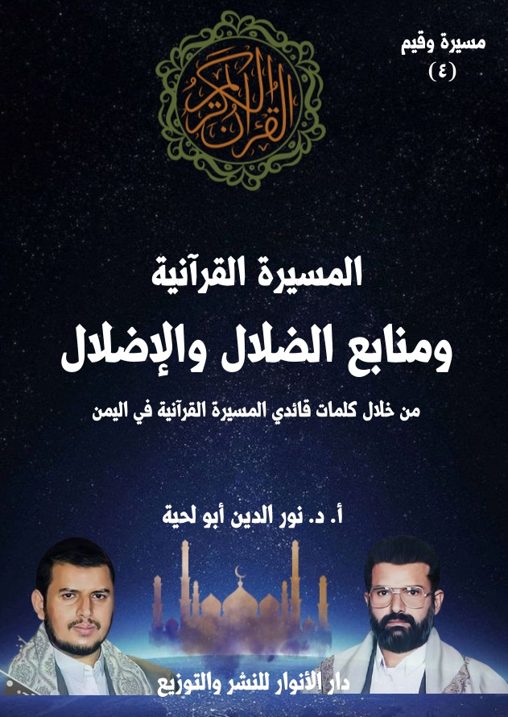

الكتاب: المسيرة القرآنية ومنابع الضلال والإضلال
الوصف: من خلال كلمات قائدي المسيرة القرآنية باليمن
السلسلة: مسيرة وقيم
المؤلف: أ. د. نور الدين أبو لحية
الناشر: دار الأنوار للنشر والتوزيع
الطبعة: الأولى، 1445 هـ
عدد الصفحات: 482
ISBN: 978-620-4-72102-6
لمطالعة الكتاب من تطبيق مؤلفاتي المجاني وهو أحسن وأيسر: هنا

يهدف هذا الكتاب إلى محاولة التعرف على منابع الضلال والإضلال، والتي حذّر منها قائدا المسيرة القرآنية، بناء على أمرين مهمين، كلاهما دل عليه القرآن الكريم:
أولهما ـ أنه لا يمكن الاستفادة الصحيحة من منابع الهداية الصافية، ولا الالتزام الصحيح بالقيم المرتبطة بها إلا بعد التخلص والتوقي من كل منابع الضلال والإضلال، لأنها تمثل سبل الغواية، ومن سار عليها، أو حنّ إلى السير فيها لن يكون من السائرين على الصراط المستقيم.
ثانيهما ـ أنه لا يكفي أن يتجنب المؤمن السير في سبل الغواية، ولا الحذر منها، بل عليه أيضا واجب البراءة والتحذير منها، ذلك أنه يدخل ضمن النهي عن المنكر، ولا يمكن أن يتحقق ذلك من دون التعرف على أئمة المنكر، وفضحهم، وفضح كل الوسائل والأساليب التي يستعملونها.
بناء على هذا نرى اهتمام قائدي المسيرة القرآنية بالتعريف بسبل المجرمين، ومنابع الضلال والإضلال، والتحذير منها، ومن الوسائل والأساليب التي يستعملونها، وقد رأينا من خلال استقراء كلامهما في هذا الجانب أنه يمكن تقسيمها إلى ثلاثة منابع كبرى:
أولها: منبع الشيطان الرجيم، باعتباره المنبع الذي تقوم عليه سائر المنابع.
ثانيها: منبع النفاق، وهو المنبع الذي يستعمله الشيطان لتحريف دين الله تعالى من خلال أولئك الذين لم يخلصوا الولاء له، ولا الصدق في الالتزام به.
ثالثها: منبع الكفر والاستكبار، ويشمل كل الطغاة والمستكبرين والملأ الذين يستعملون كل الوسائل للإضلال والإفساد.
يهدف هذا الكتاب إلى محاولة التعرف على منابع الضلال والإضلال، والتي حذّر منها قائدا المسيرة القرآنية بناء على أمرين مهمين، كلاهما دل عليه القرآن الكريم:
أولهما ـ أنه لا يمكن الاستفادة الصحيحة من منابع الهداية الصافية، ولا الالتزام الصحيح بالقيم المرتبطة بها إلا بعد التخلص والتوقي من كل منابع الضلال والإضلال، لأنها تمثل سبل الغواية، ومن سار عليها، أو حنّ إلي السير فيها لن يكون من السائرين على الصراط المستقيم، وبذلك فهو لن يكون على الدين الذي وصفه الله تعالى بقوله: ﴿وَأَنَّ هَٰذَا صِرَاطِي مُسْتَقِيمًا فَاتَّبِعُوهُ وَلَا تَتَّبِعُوا السُّبُلَ فَتَفَرَّقَ بِكُمْ عَنْ سَبِيلِهِ ذَٰلِكُمْ وَصَّاكُمْ بِهِ لَعَلَّكُمْ تَتَّقُونَ﴾ [الأنعام: 153]
ثانيهما ـ أنه لا يكفي أن يتجنب المؤمن السير في سبل الغواية، ولا الحذر منها، بل عليه أيضا واجب البراءة والتحذير منها، ذلك أنه يدخل ضمن النهي عن المنكر، ولا يمكن أن يتحقق ذلك من دون التعرف على أئمة المنكر، وفضحهم، وفضح كل الوسائل والأساليب التي يستعملونها.
وبناء على هذا نجد اهتمام القرآن الكريم بالجمع بين التعريف بمنابع الهداية الصافية، والتحذير في نفس الوقت من كل المنابع التي قد تختلط مع تلك الهداية، أو قد تلبس في الظاهر بعض ألبستها حتى تحول من دين الله إلى وسيلة للإضلال، بدل كونه وسيلة للهداية.
ومن الأمثلة على ذلك ما ذكره الله تعالى عن رجال الدين الذين تحوّلوا إلى أدوات للتضليل، فقال: ﴿يَا أَيُّهَا الَّذِينَ آمَنُوا إِنَّ كَثِيرًا مِنَ الْأَحْبَارِ وَالرُّهْبَانِ لَيَأْكُلُونَ أَمْوَالَ النَّاسِ
ومنابع الضلال والإضلال (5)
بِالْبَاطِلِ وَيَصُدُّونَ عَنْ سَبِيلِ اللَّهِ﴾ [التوبة: 34]
وتحدث عن بعض ممارساتهم في التضليل من خلال استعمال كتبهم نفسها، فقال: ﴿إِنَّ الَّذِينَ يَكْتُمُونَ مَا أَنْزَلَ اللَّهُ مِنَ الْكِتَابِ وَيَشْتَرُونَ بِهِ ثَمَنًا قَلِيلًا أُولَٰئِكَ مَا يَأْكُلُونَ فِي بُطُونِهِمْ إِلَّا النَّارَ وَلَا يُكَلِّمُهُمُ اللَّهُ يَوْمَ الْقِيَامَةِ وَلَا يُزَكِّيهِمْ وَلَهُمْ عَذَابٌ أَلِيمٌ﴾ [البقرة: 174]، وقال: ﴿وَإِذْ أَخَذَ اللَّهُ مِيثَاقَ الَّذِينَ أُوتُوا الْكِتَابَ لَتُبَيِّنُنَّهُ لِلنَّاسِ وَلَا تَكْتُمُونَهُ فَنَبَذُوهُ وَرَاءَ ظُهُورِهِمْ وَاشْتَرَوْا بِهِ ثَمَنًا قَلِيلًا فَبِئْسَ مَا يَشْتَرُونَ﴾ [آل عمران: 187]
وأخبر أن هؤلاء المحرفين لأديانهم لم يكتفوا بذلك، بل راحوا يستعملون نفس الأساليب مع المسلمين، ليوقعوهم فيما وقعوا فيه، فقال: ﴿أَلَمْ تَرَ إِلَى الَّذِينَ أُوتُوا نَصِيبًا مِنَ الْكِتَابِ يَشْتَرُونَ الضَّلَالَةَ وَيُرِيدُونَ أَنْ تَضِلُّوا السَّبِيلَ﴾ [النساء: 44]
وأخبر عن أهدافهم الحقيقية، والتي قد يستعملون كل الوسائل لتحقيقها، فقال: ﴿وَلَنْ تَرْضَىٰ عَنْكَ الْيَهُودُ وَلَا النَّصَارَىٰ حَتَّىٰ تَتَّبِعَ مِلَّتَهُمْ قُلْ إِنَّ هُدَى اللَّهِ هُوَ الْهُدَىٰ وَلَئِنِ اتَّبَعْتَ أَهْوَاءَهُمْ بَعْدَ الَّذِي جَاءَكَ مِنَ الْعِلْمِ مَا لَكَ مِنَ اللَّهِ مِنْ وَلِيٍّ وَلَا نَصِيرٍ﴾ [البقرة: 120]
وهكذا حذّرنا الله تعالى من المنافقين الذين يظهرون للناس بمظهر الالتزام بمنابع الهداية الصافية، بينما هم في حقيقتهم مملوئون بكل أنواع الولاء للانحراف والمنحرفين، فقال: ﴿الْمُنَافِقُونَ وَالْمُنَافِقَاتُ بَعْضُهُمْ مِنْ بَعْضٍ يَأْمُرُونَ بِالْمُنْكَرِ وَيَنْهَوْنَ عَنِ الْمَعْرُوفِ وَيَقْبِضُونَ أَيْدِيَهُمْ نَسُوا اللَّهَ فَنَسِيَهُمْ إِنَّ الْمُنَافِقِينَ هُمُ الْفَاسِقُونَ﴾ [التوبة: 67]، وقال عنهم: ﴿تَرَىٰ كَثِيرًا مِنْهُمْ يَتَوَلَّوْنَ الَّذِينَ كَفَرُوا لَبِئْسَ مَا قَدَّمَتْ لَهُمْ أَنْفُسُهُمْ أَنْ سَخِطَ اللَّهُ عَلَيْهِمْ وَفِي الْعَذَابِ هُمْ خَالِدُونَ وَلَوْ كَانُوا يُؤْمِنُونَ بِاللَّهِ وَالنَّبِيِّ وَمَا أُنْزِلَ إِلَيْهِ مَا اتَّخَذُوهُمْ أَوْلِيَاءَ وَلَٰكِنَّ كَثِيرًا مِنْهُمْ فَاسِقُونَ﴾ [المائدة: 80 ـ 81]
وهكذا حذّرنا الله تعالى من الشيطان، وكونه القائد لجميع فرق الضالين والمضللين،
ومنابع الضلال والإضلال (6)
لأنه مصدر كل ضلالة وانحراف، فقال: ﴿إِنْ يَدْعُونَ مِنْ دُونِهِ إِلَّا إِنَاثًا وَإِنْ يَدْعُونَ إِلَّا شَيْطَانًا مَرِيدًا لَعَنَهُ اللَّهُ وَقَالَ لَأَتَّخِذَنَّ مِنْ عِبَادِكَ نَصِيبًا مَفْرُوضًا وَلَأُضِلَّنَّهُمْ وَلَأُمَنِّيَنَّهُمْ وَلَآمُرَنَّهُمْ فَلَيُبَتِّكُنَّ آذَانَ الْأَنْعَامِ وَلَآمُرَنَّهُمْ فَلَيُغَيِّرُنَّ خَلْقَ اللَّهِ وَمَنْ يَتَّخِذِ الشَّيْطَانَ وَلِيًّا مِنْ دُونِ اللَّهِ فَقَدْ خَسِرَ خُسْرَانًا مُبِينًا يَعِدُهُمْ وَيُمَنِّيهِمْ وَمَا يَعِدُهُمُ الشَّيْطَانُ إِلَّا غُرُورًا أُولَٰئِكَ مَأْوَاهُمْ جَهَنَّمُ وَلَا يَجِدُونَ عَنْهَا مَحِيصًا﴾ [النساء: 117 ـ 121]، وقال: ﴿يَا أَيُّهَا الَّذِينَ آمَنُوا لَا تَتَّبِعُوا خُطُوَاتِ الشَّيْطَانِ وَمَنْ يَتَّبِعْ خُطُوَاتِ الشَّيْطَانِ فَإِنَّهُ يَأْمُرُ بِالْفَحْشَاءِ وَالْمُنْكَرِ وَلَوْلَا فَضْلُ اللَّهِ عَلَيْكُمْ وَرَحْمَتُهُ مَا زَكَىٰ مِنْكُمْ مِنْ أَحَدٍ أَبَدًا وَلَٰكِنَّ اللَّهَ يُزَكِّي مَنْ يَشَاءُ وَاللَّهُ سَمِيعٌ عَلِيمٌ﴾ [النور: 21]
وغيرها من الآيات الكريمة الكثيرة التي تحذّرنا من منابع الضلال والإضلال، أو ما يسميه القرآن الكريم [سبيل المجرمين]، كما قال تعالى: ﴿وَكَذَٰلِكَ نُفَصِّلُ الْآيَاتِ وَلِتَسْتَبِينَ سَبِيلُ الْمُجْرِمِينَ﴾ [الأنعام: 55]
بل إنه، ولأهمية التعرف على سبل المجرمين، وكيفية تجنبها ذكرها الله تعالى في سورة الفاتحة بجنب ذكره لسبيل الهداية وصراطها المستقيم، فقال: ﴿اهْدِنَا الصِّرَاطَ الْمُسْتَقِيمَ صِرَاطَ الَّذِينَ أَنْعَمْتَ عَلَيْهِمْ غَيْرِ الْمَغْضُوبِ عَلَيْهِمْ وَلَا الضَّالِّينَ﴾ [الفاتحة: 6 ـ 7]، فالآيتان الكريمتان تشيران إلى ضبط الصراط المستقيم بضابطين، أولهما أنه صراط المنعم عليهم، وثانيهما أنه صراط غير المغضوب عليهم، وغير الضالين.. وهو يدل على ضرورة معرفة كل الأمرين للتحقق بالصراط المستقيم.
وللأسف، فإن الكثير من المسلمين، ومنذ العصر الأول أغفلوا الكثير من التحذيرات القرآنية المرتبطة بسبل المجرمين، والتحذير منها ومنهم، ولذلك راحوا يسمعون منهم، ويخلطون ما يسمعون بما جاء في دينهم من الهدى الصافي، ولذلك تشكل
ومنابع الضلال والإضلال (7)
من ذلك دين مختلط بالأهواء، لا يمكن اعتباره الدين القيم الذي وصفه الله تعالى بقوله: ﴿قُلْ إِنَّنِي هَدَانِي رَبِّي إِلَىٰ صِرَاطٍ مُسْتَقِيمٍ دِينًا قِيَمًا مِلَّةَ إِبْرَاهِيمَ حَنِيفًا وَمَا كَانَ مِنَ الْمُشْرِكِينَ﴾ [الأنعام: 161]
بناء على هذا نرى اهتمام قائدي المسيرة القرآنية بالتعريف بسبل المجرمين، ومنابع الضلال والإضلال، والتحذير منها، ومن الوسائل والأساليب التي تستعملها.
وقد رأينا من خلال استقراء كلامهما في هذا الجانب أنه يمكن تقسيمها إلى ثلاثة منابع كبرى:
أولها: منبع الشيطان الرجيم، باعتباره المنبع الذي تقوم عليه سائر المنابع، كما قال تعالى: ﴿أَلَمْ تَرَ إِلَى الَّذِينَ يَزْعُمُونَ أَنَّهُمْ آمَنُوا بِمَا أُنْزِلَ إِلَيْكَ وَمَا أُنْزِلَ مِنْ قَبْلِكَ يُرِيدُونَ أَنْ يَتَحَاكَمُوا إِلَى الطَّاغُوتِ وَقَدْ أُمِرُوا أَنْ يَكْفُرُوا بِهِ وَيُرِيدُ الشَّيْطَانُ أَنْ يُضِلَّهُمْ ضَلَالًا بَعِيدًا﴾ [النساء: 60]
ثانيهما: منبع النفاق، وهو المنبع الذي يستعمله الشيطان لتحريف دين الله تعالى، من خلال أولئك الذين لم يخلصوا الولاء له، ولا الصدق في الالتزام به، ولذلك عقّب الله تعالى الآية الكريمة السابقة بقوله عن المنافقين: ﴿وَإِذَا قِيلَ لَهُمْ تَعَالَوْا إِلَىٰ مَا أَنْزَلَ اللَّهُ وَإِلَى الرَّسُولِ رَأَيْتَ الْمُنَافِقِينَ يَصُدُّونَ عَنْكَ صُدُودًا فَكَيْفَ إِذَا أَصَابَتْهُمْ مُصِيبَةٌ بِمَا قَدَّمَتْ أَيْدِيهِمْ ثُمَّ جَاءُوكَ يَحْلِفُونَ بِاللَّهِ إِنْ أَرَدْنَا إِلَّا إِحْسَانًا وَتَوْفِيقًا أُولَٰئِكَ الَّذِينَ يَعْلَمُ اللَّهُ مَا فِي قُلُوبِهِمْ فَأَعْرِضْ عَنْهُمْ وَعِظْهُمْ وَقُلْ لَهُمْ فِي أَنْفُسِهِمْ قَوْلًا بَلِيغًا﴾ [النساء: 61 ـ 63]
ثالثها: منبع الكفر والاستكبار، ويشمل كل الطغاة والمستكبرين والملأ الذين يستعملون كل الوسائل للإضلال والإفساد، وهم الذين وصفهم الله تعالى كذلك بالضلال البعيد، فقال: ﴿إِنَّ الَّذِينَ كَفَرُوا وَظَلَمُوا لَمْ يَكُنِ اللَّهُ لِيَغْفِرَ لَهُمْ وَلَا لِيَهْدِيَهُمْ طَرِيقًا إِلَّا طَرِيقَ
ومنابع الضلال والإضلال (8)
جَهَنَّمَ خَالِدِينَ فِيهَا أَبَدًا وَكَانَ ذَٰلِكَ عَلَى اللَّهِ يَسِيرًا﴾ [النساء: 168 ـ 169]
بناء على هذا قسّمنا هذا الكتاب إلى ثلاثة فصول، تناولنا في كل فصل منبعا من المنابع، والأساليب والوسائل التي يستخدمها، والمظاهر التي يظهر بها، وكل ذلك من خلال كلمات قائدي المسيرة القرآنية، مع التنبيه إلى أننا اكتفينا بطرح ما ذكراه من دون تحليل أو شرح مفصّل، لأنا قمنا بذلك من خلال التسجيلات الصوتية المرتبطة بالكتاب، مثله مثل سائر كتب السلسلة.
وننبه إلى أننا مع اهتمامنا بذكر ما ذكره قائدا المسيرة القرآنية حول جميع منابع الضلالة إلا أنا ركّزنا خصوصا على المنبع الخاص بالمستكبرين لسببين:
أولهما، دور ذلك في تحقيق الوعي بجرائم المستكبرين المعاصرين، وأدوارهم التخريبية، خاصة وأن حركة النفاق المعاصرة مرتبطة بها ارتباطا تاما.
وثانيهما، أن قائدي المسيرة القرآنية ـ مع اهتمامهما بكل منابع التضليل ـ اهتما خصوصا بمنبع المستكبرين لتشكيل الوعي الكافي لليمنيين خصوصا، وللأمة عموما بأهدافهم ووسائلهم وأساليبهم وغير ذلك، بالإضافة إلى أن ما يقوم به المستكبرون هو بتنسيق تام مع الشيطان الذي هو مصدر كل ضلالة، ومع المنافقين الذين هم أدوات ووسائل.
وننبه كذلك إلى أن أكثر ما ذكرناه في هذا الجانب هو ما ذكره السيد عبد الملك باعتبار تطرقه للأحداث السياسية الجديدة، والتي لم يعاصرها السيد حسين، بالإضافة إلى توافقهما التام في هذا المجال، كتوافقهما في غيره.
أولا ـ المسيرة القرآنية.. والشيطان
المنبع الأول للضلال والإضلال ـ كما يذكر قائدا المسيرة القرآنية ـ هو الشيطان الذي توعّد البشر بأن يُضلهم ويغويهم ويستعمل كل الأساليب والوسائل في ذلك، ولذلك اهتما بالتعريف به، وبيان الطرق والخطوات التي يستعملها للإغواء والإضلال.
وما ذكراه هو عين ما ذكره القرآن الكريم من أصناف التحذيرات من الشيطان، فقد ذكر الله تعالى قصة بداية عداوته للإنسان في مواضع متعددة، كما قال تعالى في وصف سبب عداوته: ﴿وَإِذْ قُلْنَا لِلْمَلَائِكَةِ اسْجُدُوا لِآدَمَ فَسَجَدُوا إِلَّا إِبْلِيسَ أَبَى وَاسْتَكْبَرَ﴾ [البقرة: 34]، وهو نفس السبب الذي يقع فيه كل المنحرفين عن الهداية، كما قال تعالى: ﴿سَأَصْرِفُ عَنْ آيَاتِيَ الَّذِينَ يَتَكَبَّرُونَ فِي الْأَرْضِ بِغَيْرِ الْحَقِّ وَإِنْ يَرَوْا كُلَّ آيَةٍ لَا يُؤْمِنُوا بِهَا وَإِنْ يَرَوْا سَبِيلَ الرُّشْدِ لَا يَتَّخِذُوهُ سَبِيلًا وَإِنْ يَرَوْا سَبِيلَ الْغَيِّ يَتَّخِذُوهُ سَبِيلًا ذَٰلِكَ بِأَنَّهُمْ كَذَّبُوا بِآيَاتِنَا وَكَانُوا عَنْهَا غَافِلِينَ﴾ [الأعراف: 146]
وقد أخبر الله تعالى عن المبادئ العنصرية التي جعلت الشيطان يستكبر، وهي نفس المبادئ التي وقع فيها كل المستكبرون، فقال: ﴿قَالَ مَا مَنَعَكَ أَلَّا تَسْجُدَ إِذْ أَمَرْتُكَ قَالَ أَنَا خَيْرٌ مِنْهُ خَلَقْتَنِي مِنْ نَارٍ وَخَلَقْتَهُ مِنْ طِينٍ﴾ [الأعراف: 12]، وقال: ﴿وَإِذْ قُلْنَا لِلْمَلَائِكَةِ اسْجُدُوا لِآدَمَ فَسَجَدُوا إِلَّا إِبْلِيسَ قَالَ أَأَسْجُدُ لِمَنْ خَلَقْتَ طِينًا﴾ [الإسراء: 61]
وقد ذكر الله تعالى العقوبة التي نالها بسبب ذلك الاستكبار، وهي نفس العقوبة التي ينالها كل مستكبر، فقال: ﴿قَالَ فَاهْبِطْ مِنْهَا فَمَا يَكُونُ لَكَ أَنْ تَتَكَبَّرَ فِيهَا فَاخْرُجْ إِنَّكَ مِنَ الصَّاغِرِينَ﴾ [الأعراف: 13]
وقد ذكر الله تعالى نتائج تلك العقوبة، وبغض الشيطان للإنسان بسببها، وأنه لذلك
ومنابع الضلال والإضلال (10)
توعد بأن يضلهم ضلالا بعيدا، كما قال تعالى: ﴿قَالَ أَرَأَيْتَكَ هَذَا الَّذِي كَرَّمْتَ عَلَيَّ لَئِنْ أَخَّرْتَنِ إِلَى يَوْمِ الْقِيَامَةِ لَأَحْتَنِكَنَّ ذُرِّيَّتَهُ إِلَّا قَلِيلًا﴾ [الإسراء: 62]
وقد ذكر الله تعالى نماذج كثيرة عن تنفيذ الشيطان لوعده، وأولها الوسوسة لآدم عليه السلام وزوجه، على الرغم من تحذير الله تعالى لهما منه، كما قال تعالى: ﴿فَقُلْنَا يَا آدَمُ إِنَّ هَٰذَا عَدُوٌّ لَكَ وَلِزَوْجِكَ فَلَا يُخْرِجَنَّكُمَا مِنَ الْجَنَّةِ فَتَشْقَىٰ إِنَّ لَكَ أَلَّا تَجُوعَ فِيهَا وَلَا تَعْرَىٰ وَأَنَّكَ لَا تَظْمَأُ فِيهَا وَلَا تَضْحَىٰ فَوَسْوَسَ إِلَيْهِ الشَّيْطَانُ قَالَ يَا آدَمُ هَلْ أَدُلُّكَ عَلَىٰ شَجَرَةِ الْخُلْدِ وَمُلْكٍ لَا يَبْلَىٰ فَأَكَلَا مِنْهَا فَبَدَتْ لَهُمَا سَوْآتُهُمَا وَطَفِقَا يَخْصِفَانِ عَلَيْهِمَا مِنْ وَرَقِ الْجَنَّةِ وَعَصَىٰ آدَمُ رَبَّهُ فَغَوَىٰ ثُمَّ اجْتَبَاهُ رَبُّهُ فَتَابَ عَلَيْهِ وَهَدَىٰ﴾ [طه: 117 ـ 122]
وقد ذكر الله تعالى استمرار الشيطان في استعمال كل وسائل الخداع لتضليل الإنسان، كما قال تعالى: ﴿يَا بَنِي آدَمَ لَا يَفْتِنَنَّكُمُ الشَّيْطَانُ كَمَا أَخْرَجَ أَبَوَيْكُمْ مِنَ الْجَنَّةِ﴾ [الأعراف: 27]، وقال: ﴿قَالَ رَبِّ بِمَا أَغْوَيْتَنِي لَأُزَيِّنَنَّ لَهُمْ فِي الْأَرْضِ وَلَأُغْوِيَنَّهُمْ أَجْمَعِينَ﴾ [الحجر: 39]
وذكر استغلاله لكل تصرف يمارسه الإنسان، وفي أي لحظة، كما قال تعالى عن التبذير: ﴿إِنَّ الْمُبَذِّرِينَ كَانُوا إِخْوَانَ الشَّيَاطِينِ وَكَانَ الشَّيْطَانُ لِرَبِّهِ كَفُورًا﴾ [الإسراء: 27]، وقال عن نسيان ذكر الله: ﴿اسْتَحْوَذَ عَلَيْهِمُ الشَّيْطَانُ فَأَنْسَاهُمْ ذِكْرَ اللَّهِ﴾ [المجادلة: 19]، وقال عن الإفك والإثم: ﴿هَلْ أُنَبِّئُكُمْ عَلَى مَنْ تَنَزَّلُ الشَّيَاطِينُ تَنَزَّلُ عَلَى كُلِّ أَفَّاكٍ أَثِيمٍ﴾ [الشعراء: 221 ـ 222]، وقال عن البخل والخوف من الفقر: ﴿الشَّيْطَانُ يَعِدُكُمُ الْفَقْرَ وَيَأْمُرُكُمْ بِالْفَحْشَاءِ﴾ [البقرة: 268]، وقال عن الجدال: ﴿وَمِنَ النَّاسِ مَنْ يُجَادِلُ فِي اللَّهِ بِغَيْرِ عِلْمٍ وَيَتَّبِعُ كُلَّ شَيْطَانٍ مَرِيدٍ﴾ [الحج: 3]، وقال عن الخمر والميسر: ﴿إِنَّمَا يُرِيدُ الشَّيْطَانُ أَنْ يُوقِعَ بَيْنَكُمُ الْعَدَاوَةَ وَالْبَغْضَاءَ فِي الْخَمْرِ وَالْمَيْسِرِ وَيَصُدَّكُمْ عَنْ ذِكْرِ اللَّهِ وَعَنِ الصَّلَاةِ فَهَلْ أَنْتُمْ مُنْتَهُونَ﴾ [المائدة: 91]، وقال عن قسوة القلب: ﴿وَلَكِنْ قَسَتْ قُلُوبُهُمْ وَزَيَّنَ لَهُمُ الشَّيْطَانُ مَا كَانُوا يَعْمَلُونَ﴾
ومنابع الضلال والإضلال (11)
[الأنعام: 43]
وهكذا ذكر الله تعالى مصير من يتبع الشيطان، وأوله الضلال، حيث قال: ﴿وَيُرِيدُ الشَّيْطَانُ أَنْ يُضِلَّهُمْ ضَلَالًا بَعِيدًا﴾ [النساء: 60]، وقال: ﴿كُتِبَ عَلَيْهِ أَنَّهُ مَنْ تَوَلَّاهُ فَأَنَّهُ يُضِلُّهُ﴾ [الحج: 4]
وذكر الخسارة التي تصيب من وقع في كيد الشيطان، فقال: ﴿وَمَنْ يَتَّخِذِ الشَّيْطَانَ وَلِيًّا مِنْ دُونِ اللَّهِ فَقَدْ خَسِرَ خُسْرَانًا مُبِينًا﴾ [النساء: 119]، وذكر المصير الذي يصير إليه، فقال: ﴿أَوَلَوْ كَانَ الشَّيْطَانُ يَدْعُوهُمْ إِلَى عَذَابِ السَّعِيرِ﴾ [لقمان: 21]
ولم يكتف القرآن الكريم بكل تلك التعريفات، بل ضمّ إليها التعريف بكل الوسائل التي تحمي من كيد الشيطان، وأولها اتخاذه عدوا، كما قال تعالى: ﴿إِنَّ الشَّيْطَانَ لَكُمْ عَدُوٌّ فَاتَّخِذُوهُ عَدُوًّا إِنَّمَا يَدْعُو حِزْبَهُ لِيَكُونُوا مِنْ أَصْحَابِ السَّعِيرِ﴾ [فاطر: 6]
وذكر ما يتطلبه ذلك، وأولها الإخلاص للحق، وعدم خلطه بالأهواء والباطل، كما قال تعالى: ﴿قَالَ رَبِّ بِمَا أَغْوَيْتَنِي لَأُزَيِّنَنَّ لَهُمْ فِي الْأَرْضِ وَلَأُغْوِيَنَّهُمْ أَجْمَعِينَ إِلَّا عِبَادَكَ مِنْهُمُ الْمُخْلَصِينَ﴾ [الحجر: 39 ـ 40]، وقال: ﴿قَالَ هَذَا صِرَاطٌ عَلَيَّ مُسْتَقِيمٌ إِنَّ عِبَادِي لَيْسَ لَكَ عَلَيْهِمْ سُلْطَانٌ إِلَّا مَنِ اتَّبَعَكَ مِنَ الْغَاوِينَ﴾ [الحجر: 41 ـ 42]
ومنها ذكر الله تعالى والوعد والوعيد، كما قال تعالى: ﴿إِنَّ الَّذِينَ اتَّقَوْا إِذَا مَسَّهُمْ طَائِفٌ مِنَ الشَّيْطَانِ تَذَكَّرُوا فَإِذَا هُمْ مُبْصِرُونَ﴾ [الأعراف: 201]
ومنها اللجوء إلى الله، والاستعاذة والدعاء، وفي كل المحال، كما قال تعالى: ﴿وَإِمَّا يَنْزَغَنَّكَ مِنَ الشَّيْطَانِ نَزْغٌ فَاسْتَعِذْ بِاللَّهِ إِنَّهُ هُوَ السَّمِيعُ الْعَلِيمُ﴾ [فصلت: 36]، وقال: ﴿فَإِذَا قَرَأْتَ الْقُرْآنَ فَاسْتَعِذْ بِاللَّهِ مِنَ الشَّيْطَانِ الرَّجِيمِ﴾ [النحل: 98]، وقال: ﴿إِنَّ الَّذِينَ اتَّقَوْا إِذَا مَسَّهُمْ طَائِفٌ مِنَ الشَّيْطَانِ تَذَكَّرُوا فَإِذَا هُمْ مُبْصِرُونَ﴾ [الأعراف: 201]
ومنابع الضلال والإضلال (12)
ومنها البعد عن كل مواطن الضلال والانحراف، لأنها محل الشيطان، كما قال تعالى عن أصدقاء السوء: ﴿وَيَوْمَ يَعَضُّ الظَّالِمُ عَلَى يَدَيْهِ يَقُولُ يَا لَيْتَنِي اتَّخَذْتُ مَعَ الرَّسُولِ سَبِيلًا يَا وَيْلَتَى لَيْتَنِي لَمْ أَتَّخِذْ فُلَانًا خَلِيلًا لَقَدْ أَضَلَّنِي عَنِ الذِّكْرِ بَعْدَ إِذْ جَاءَنِي وَكَانَ الشَّيْطَانُ لِلْإِنْسَانِ خَذُولًا﴾ [الفرقان: 27 ـ 29]
ومنها الابتعاد عن اتباع خطوات الشيطان، ووسائله والطرق التي يستعملها للإضلال، كما قال تعالى: ﴿يَا أَيُّهَا الَّذِينَ آمَنُوا لَا تَتَّبِعُوا خُطُوَاتِ الشَّيْطَانِ وَمَنْ يَتَّبِعْ خُطُوَاتِ الشَّيْطَانِ فَإِنَّهُ يَأْمُرُ بِالْفَحْشَاءِ وَالْمُنْكَرِ﴾ [النور: 21]
ومن تلك الخطوات أكل الحرام، كما قال تعالى: ﴿يَا أَيُّهَا النَّاسُ كُلُوا مِمَّا فِي الْأَرْضِ حَلَالًا طَيِّبًا وَلَا تَتَّبِعُوا خُطُوَاتِ الشَّيْطَانِ إِنَّهُ لَكُمْ عَدُوٌّ مُبِينٌ﴾ [البقرة: 168]
ومنها الرياء، كما قال تعالى: ﴿وَالَّذِينَ يُنْفِقُونَ أَمْوَالَهُمْ رِئَاءَ النَّاسِ وَلَا يُؤْمِنُونَ بِاللَّهِ وَلَا بِالْيَوْمِ الْآخِرِ وَمَنْ يَكُنِ الشَّيْطَانُ لَهُ قَرِينًا فَسَاءَ قَرِينًا﴾ [النساء: 38]
ومنها الدعوة إلى الارتداد عن الدين الحق، كما قال تعالى: ﴿كَمَثَلِ الشَّيْطَانِ إِذْ قَالَ لِلْإِنْسَانِ اكْفُرْ فَلَمَّا كَفَرَ قَالَ إِنِّي بَرِيءٌ مِنْكَ إِنِّي أَخَافُ اللَّهَ رَبَّ الْعَالَمِينَ﴾ [الحشر: 16]، وقال: ﴿وَجَدْتُهَا وَقَوْمَهَا يَسْجُدُونَ لِلشَّمْسِ مِنْ دُونِ اللَّهِ وَزَيَّنَ لَهُمُ الشَّيْطَانُ أَعْمَالَهُمْ فَصَدَّهُمْ عَنِ السَّبِيلِ فَهُمْ لَا يَهْتَدُونَ﴾ [النمل: 24]، وقال: ﴿إِنَّ الَّذِينَ ارْتَدُّوا عَلَى أَدْبَارِهِمْ مِنْ بَعْدِ مَا تَبَيَّنَ لَهُمُ الْهُدَى الشَّيْطَانُ سَوَّلَ لَهُمْ وَأَمْلَى لَهُمْ﴾ [محمد: 25]
ومنها التحاكم إلى غير شرع الله، كما قال تعالى: ﴿يُرِيدُونَ أَنْ يَتَحَاكَمُوا إِلَى الطَّاغُوتِ وَقَدْ أُمِرُوا أَنْ يَكْفُرُوا بِهِ وَيُرِيدُ الشَّيْطَانُ أَنْ يُضِلَّهُمْ ضَلَالًا بَعِيدًا﴾ [النساء: 60]
ومنها الجدال في آيات الله من غير علم، كما قال تعالى: ﴿وَمِنَ النَّاسِ مَنْ يُجَادِلُ فِي اللَّهِ بِغَيْرِ عِلْمٍ وَيَتَّبِعُ كُلَّ شَيْطَانٍ مَرِيدٍ﴾ [الحج: 3]
ومنابع الضلال والإضلال (13)
وغيرها من الآيات الكريمة الكثيرة التي تحدث عنها وعن أمثالها قائدا المسيرة القرآنية عند حديثهما عن منابع الضلال والإضلال والتحذير منها، وقبل أن نسوق ما ذكراه حول ذلك، نذكر بعضا من خطبة مهمة للإمام علي، نرى لها تأثيرها الكبير فيما ذكراه، وقد أشار إليها السيد عبد الملك من غير أن يذكرها بالنص.
وهي خطبة في ذم الكبر وما يرتبط به من المعاصي، وقد بدأها الإمام علي بقوله: (الحمد لله الذي لبس العز والكبرياء، واختارهما لنفسه دون خلقه، وجعلهما حمى وحرما على غيره، واصطفاهما لجلاله، وجعل اللعنة على من نازعه فيهما من عباده، ثم اختبر بذلك ملائكته المقربين ليميز المتواضعين منهم من المستكبرين، فقال سبحانه وهو العالم بمضمرات القلوب ومحجوبات الغيوب: ﴿إِذْ قَالَ رَبُّكَ لِلْمَلَائِكَةِ إِنِّي خَالِقٌ بَشَرًا مِنْ طِينٍ فَإِذَا سَوَّيْتُهُ وَنَفَخْتُ فِيهِ مِنْ رُوحِي فَقَعُوا لَهُ سَاجِدِينَ فَسَجَدَ الْمَلَائِكَةُ كُلُّهُمْ أَجْمَعُونَ إِلَّا إِبْلِيسَ﴾ [ص: 71 ـ 74] اعترضته الحمية، فافتخر على آدم بخلقه، وتعصب عليه لأصله، فعدو الله إمام المتعصبين، وسلف المستكبرين، الذي وضع أساس العصبية، ونازع الله رداء الجبرية، وادرع لباس التعزز، وخلع قناع التذلل، ألا ترون كيف صغره الله بتكبره ووضعه بترفعه؟ فجعله في الدنيا مدحورا، وأعد له في الآخرة سعيرا؟)(1)
ثم ذكر قصد الاختبار من وراء الأمر بالسجود على آدم عليه السلام، وهو بتلك الصورة، فقال: (ولو أراد الله سبحانه أن يخلق آدم من نور يخطف الأبصار ضياؤه ويبهر العقول رواؤه وطيب يأخذ الأنفاس عرفه لفعل، ولو فعل لظلت له الأعناق خاضعة، ولخفت البلوى فيه على الملائكة، ولكن الله سبحانه يبتلي خلقه ببعض ما يجهلون أصله،
__________ (1) نهج البلاغة 1: 372 و395..المسيرة القرآنية ومنابع الضلال والإضلال (14)
تمييزا بالاختبار لهم، ونفيا للاستكبار عنهم، وإبعادا للخيلاء منهم)(1)
ثم دعا إلى الاعتبار من حال إبليس وإحباط عمله، فقال: (فاعتبروا بما كان من فعل الله بإبليس إذ أحبط عمله الطويل، وجهده الجهيد، وكان قد عبد الله ستة آلاف سنة لا يدرى أمن سني الدنيا أو من سني الآخرة عن كبر ساعة واحدة)(2)
ثم ذكر أن سنن العقوبات واحدة، فقال: (فمن ذا بعد إبليس يسلم على الله سبحانه بمثل معصية؟ كلا ما كان الله سبحانه ليدخل الجنة بشرا بأمر أخرج به منها ملكا، إن حكمه في أهل السماء وأهل الارض لواحد، وما بين الله وبين أحد من خلقه هوادة في إباحة حمى حرمه على العالمين)(3)
ثم حذر من الشيطان، والوقوع في مثل ما وقع فيه، فقال: (فاحذروا عباد الله أن يعديكم بدائه، وأن يستفزكم بخيله ورجله، فلعمري لقد فوّق لكم سهم الوعيد، وأغرق لكم بالنزع الشديد، ورماكم من مكان قريب، وقال: ﴿قَالَ رَبِّ بِمَا أَغْوَيْتَنِي لَأُزَيِّنَنَّ لَهُمْ فِي الْأَرْضِ وَلَأُغْوِيَنَّهُمْ أَجْمَعِينَ﴾ [الحجر: 39] قذفا بغيب بعيد، ورجما بظن مصيب)(4)
ثم ذكر طاعة المستكبرين للشيطان، وقيامه من خلالهم بحرب المؤمنين، فقال: (فصدقه به أبناء الحمية، وإخوان العصبية، وفرسان الكبر والجاهلية حتى إذا انقادت له الجامحة منكم، واستحكمت الطماعية منه فيكم، فنجمت الحال من السر الخفي إلى الأمر الجلي، استفحل سلطانه عليكم، ودلف بجنوده نحوكم، فأقحموكم ولجات الذل، وأحلوكم ورطات القتل، وأوطؤوكم إثخان الجراحة طعنا في عيونكم، وحزا في حلوقكم،
__________ (1) المرجع السابق. (2) المرجع السابق. (3) المرجع السابق. (4) المرجع السابق.المسيرة القرآنية ومنابع الضلال والإضلال (15)
ودقا لمناخركم، وقصدا لمقاتلكم، وسوقا بخزائم القهر إلى النار المعدة لكم فأصبح أعظم في دينكم جرحا، وأورى في دنياكم قدحا، من الذين أصبحتم لهم مناصبين، وعليهم متألبين)(1)
ثم حذر من الشيطان، ومن الأسباب التي تيسر عليه دوره، فقال: (فاجعلوا عليه حدكم وله جدكم، فلعمر الله لقد فخر على أصلكم، ووقع في حسبكم، ودفع في نسبكم، وأجلب بخيله عليكم، وقصد برجله بيلكم، يقتنصونكم بكل مكان، ويضربون منكم كل بنان، لا تمتنعون بحيلة، ولا تدفعون بعزيمة في حومة ذل، وحلقة ضيق، وعرصة موت، وجولة بلاء، فأطفئوا ما كمن في قلوبكم من نيران العصبية وأحقاد الجاهلية، فإنما تلك الحمية تكون في المسلم من خطرات الشيطان ونخواته ونزغاته ونفثاته، واعتمدوا وضع التذلل على رؤوسكم، وإلقاء التعزز تحت أقدامكم، وخلع التكبر من أعناقكم، واتخذوا التواضع مسلحة بينكم وبين عدوكم إبليس وجنوده فإن له من كل أمة جنودا وأعوانا ورجلا وفرسانا، ولا تكونوا كالمتكبر على ابن أمه من غير ما فضل جعله الله فيه سوى ما ألحقت العظمة بنفسه من عداوة الحسد، وقدحت الحمية في قلبه من نار الغضب، ونفخ الشيطان في أنفه من ريح الكبر الذي أعقبه الله به الندامة، وألزمه آثام القاتلين إلى يوم القيامة)(2)
ثم ذكر دور الشيطان في نفخ الحمية والكبر في البشر، وإشعال الصراع بينهم، فقال: (ألا وقد أمعنتم في البغي، وأفسدتم في الارض مصارحة لله بالمناصبة، ومبارزة للمؤمنين بالمحاربة، فالله الله في كبر الحمية، وفخر الجاهلية، فإنه ملاقح الشنآن ومنافخ الشيطان
__________ (1) المرجع السابق. (2) المرجع السابق.المسيرة القرآنية ومنابع الضلال والإضلال (16)
اللاتي خدع بها الامم الماضية، والقرون الخالية، حتى أعنقوا في حنادس جهالته، ومهاوي ضلالته ذللا على سياقه، سلسا في قياده أمرا تشابهت القلوب فيه وتتابعت القرون عليه وكبرا تضايقت الصدور به)(1)
ثم حذر من المستكبرين، وطاعتهم، فقال: (ألا فالحذر الحذر من طاعة ساداتكم وكبرائكم الذين تكبروا عن حسبهم وترفعوا فوق نسبهم، وألقوا الهجينة على ربهم، وجاحدوا الله على ما صنع بهم، مكابرة لقضائه، ومغالبا لآلائه، فإنهم قواعد أساس العصبية، ودعائم أركان الفتنة، وسيوف اعتزاء الجاهلية، فاتقوا الله ولا تكونوا لنعمه عليكم أضدادا، ولا لفضله عندكم حسادا، ولا تطيعوا الأدعياء الذين شربتم بصفوكم كدرهم، وخلطتم بصحتكم مرضهم، وأدخلتم في حقكم باطلهم، وهم أساس الفسوق، وأحلاس العقوق، اتخذهم إبليس مطايا ضلال، وجندا بهم يصول على الناس، وتراجمة ينطق على ألسنتهم استراقا لعقولكم، ودخولا في عيونكم، ونفثا في أسماعكم فجعلكم مرمى نبله، وموطئ قدمه، ومأخذ يده، فاعتبروا بما أصاب الأمم المستكبرين من قبلكم من بأس الله وصولاته، ووقائعه ومثلاته، واتعظوا بمثاوي خدودهم، ومصارع جنوبهم، واستعيذوا بالله من لواقح الكبر كما تستعيذونه من طوارق الدهر، فلو رخص الله في الكبر لأحد من عباده لرخص فيه لخاصة أنبيائه ورسله، ولكنه سبحانه كره إليهم التكابر ورضي لهم التواضع، فألصقوا بالأرض خدودهم، وعفروا في التراب وجوههم، وخفضوا أجنحتهم للمؤمنين، وكانوا أقواما مستضعفين، قد اختبرهم الله بالمخمصة، وابتلاهم بالمجهدة، وامتحنهم بالمخاوف، ومخضهم بالمكاره)(2)
__________ (1) المرجع السابق. (2) المرجع السابق.المسيرة القرآنية ومنابع الضلال والإضلال (17)
بناء على هذا، سنذكر هنا ما ذكره قائدا المسيرة القرآنية حول المعارف القرآنية المرتبطة بالشيطان، ودورها في الوقاية منه، وقد حاولنا أن نلخص ما ذكراه في العناوين التالية:
أول المعارف المرتبطة بالشيطان، والتي لا يمكن الحذر منها، أو اتخاذه عدوا من دون معرفتها هو معرفة السبب الذي تحوّل الشيطان بسببه إلى شيطان رجيم، ذلك أن نفس تلك المعصية يمكن أن تحوّل أي إنسان إلى شيطان، فإبليس لم يصر شيطانا بسبب كونه من عالم الجن، وإنما لوقوعه في تلك المعاصي.
ولهذا يذكر الله تعالى في القرآن الكريم أن الشياطين يشملون عالم الإنس وعالم الجن، كما قال تعالى: ﴿وَكَذَٰلِكَ جَعَلْنَا لِكُلِّ نَبِيٍّ عَدُوًّا شَيَاطِينَ الْإِنْسِ وَالْجِنِّ يُوحِي بَعْضُهُمْ إِلَىٰ بَعْضٍ زُخْرُفَ الْقَوْلِ غُرُورًا وَلَوْ شَاءَ رَبُّكَ مَا فَعَلُوهُ فَذَرْهُمْ وَمَا يَفْتَرُونَ﴾ [الأنعام: 112]، وقال: ﴿قُلْ أَعُوذُ بِرَبِّ النَّاسِ مَلِكِ النَّاسِ إِلَٰهِ النَّاسِ مِنْ شَرِّ الْوَسْوَاسِ الْخَنَّاسِ الَّذِي يُوَسْوِسُ فِي صُدُورِ النَّاسِ مِنَ الْجِنَّةِ وَالنَّاسِ﴾ [الناس: 1 ـ 6]
ولهذا نرى قائدي المسيرة القرآنية يذكران تلك المعاصي، وفي محال مختلفة، ومن الأمثلة على ذلك ما ذكره السيد حسين عند حديثه عن قصة آدم عليه السلام في سورة البقرة، وسبب معصية إبليس، حيث قال: (لكن لاحظ إبليس كيف كان إبليس نفسه: ﴿فَسَجَدُوا إِلَّا إِبْلِيسَ أَبَى وَاسْتَكْبَرَ وَكَانَ مِنَ الْكَافِرِينَ﴾ [البقرة: 34] كيف انتهت المسألة بالنسبة لإبليس؟ تحول إلى لعين مذموم مدحور مطرود رجيم ضال، بسبب موقف واحد
ومنابع الضلال والإضلال (18)
ما سلَّم فيه لله)(1)
ثم ذكر خطورة عدم التسليم لله، وأنه سبب كل الضلالات، فقال: (لأن مجمل القصة هذه هي حول ترسيخ التسليم لله، التسليم لله سبحانه وتعالى مجمل ما تتركز عليه حول أهمية التسليم كي تكون واعيا من قبل، تعرف تسلم في حالة الموقف الغريب، تكون أنت مستحضرا إيمانك مستحضرا مقتضيات إيمانك، إذا نسيت سيحصل خلل كبير، إبليس أبى واستكبر وكان من الكافرين؛ لأنه هناك ﴿قَالَ أَأَسْجُدُ لِمَنْ خَلَقْتَ طِينًا﴾ [الإسراء: 61]، ﴿قَالَ أَنَا خَيْرٌ مِنْهُ خَلَقْتَنِي مِنْ نَارٍ وَخَلَقْتَهُ مِنْ طِينٍ﴾ [ص: 76] أليس هذا استكباراً؟)(2)
ثم ذكر وضوح الأمر الإلهي، وأن القصور كان من جانب الشيطان بسبب عدم تسليمه له، فقال: (تلاحظ هنا أنه ما يأتي الموضوع أبداً ـ أي قضية ـ يبدو وأن هناك نقص أو قصور أو تقصير من جانب الله على الإطلاق تلحظها عندما قال لإبليس:﴿مَا مَنَعَكَ أَلَّا تَسْجُدَ إِذْ أَمَرْتُكَ﴾ [الأعراف: 12] أمره هو، قال في آية أخرى:﴿لِمَا خَلَقْتُ بِيَدَيَّ﴾ [ص: 75] أي أنت تعرف القضية تماما، أنا الذي أمر وأنا الذي خلقته ما تقول ربما أني وجهت طرفا آخر بأن اصنع كذا اصنع بشرا، فجاء ذلك ذهب جمَّع من تراب الأرض طلّع بشرا، وربما ما كانت القضية التي أريدها أنا!! أنا الذي خلقته على النحو الذي هو عليه ومن المادة التي كوّن منها، إذاً هنا لا يوجد عذر لإبليس، الملائكة كذلك ألم يقل:﴿إِنِّي جَاعِلٌ فِي الْأَرْضِ خَلِيفَةً﴾ [البقرة: 30]؟ ألم يقل:﴿إِنِّي جَاعِلٌ﴾ [البقرة: 30] تجد الموضوع نفسه مع آدم ﴿وَلَا تَقْرَبَا هَذِهِ الشَّجَرَةَ﴾ [الأعراف: 19] كل هذا يبين بأن الهدى من جهة الله سبحانه وتعالى لا يكون
__________ (1) دروس من هدي القرآن الكريم، من الآية (21) إلى الآية (39) من سورة البقرة، الدرس (3)، ألقاه السيد حسين بدر الدين الحوثي بتاريخ 3 رمضان 1424هـ الموافق 27/10/2003م، اليمن ـ صعدة. (2) المرجع السابق.المسيرة القرآنية ومنابع الضلال والإضلال (19)
فيه تقصير أبداً ولا نقص على الإطلاق، بل يكون بيناً على أوضح ما يمكن أن يكون التبيين، يكون بيناً تماماً)(1)
ثم ذكر علم إبليس بكونه مطالبا بالسجود مع الملائكة، فقال: (لاحظ العبارة هنا لأنك تلحظ في القصة هذه:﴿وَإِذْ قَالَ رَبُّكَ لِلْمَلَائِكَةِ﴾ [الحجر: 28] أليست هذه أشياء واضحة؟ أعني: ليس طرفاً آخر قال له الله أن يقول للملائكة أنه سيحصل كذا وكذا، قال هو لهم، أي: علموا بما لا شك فيه أنه من جهته هذا القول أنه سيجعل في الأرض خليفة.. كذلك هنا أنه قال للملائكة بما فيهم إبليس وبيّن في مقام آخر بأنه أمر إبليس ويعرف إبليس أنه أمره، لم يقل: [والله ما دريت أنك أنت الذي أمر، أنا قلت ربما أنت أمرت واحد ثاني وهو أمر بأمر أبلغ مما تريد أو قاصر عما تريد] أمر هو وخلق آدم هو ﴿بِيَدَيَّ﴾ [ص: 75]،يعني: عبارة الاختصاص أي: أنا، أنا، وليس طرفا آخر كلفته بالمهمة حتى يكون لك عذر أو شيء من هذا)(2)
وهكذا تحدث السيد عبد الملك عن قصة بداية العداوة بين الشيطان والإنسان، وأسبابها، والعبر المرتبطة بها، ومن الأمثلة على ذلك قوله: (القرآن الكريم تحدث عن ذلك كثيرا في سور متعددة، القصة قديمة، والحكاية قديمة جدّا، وموجودة منذ وجود هذا الإنسان (في أول وجوده) حينما خلق الله النوع البشري (الإنسان) آدم عليه السلام أبا البشر عندما خلقه الله سبحانه وتعالى وأراد الله أن يستخلف الإنسان في الأرض)(3)
ثم ذكر المادة التي خلق منها الشيطان، فقال: (قبل مجيء الإنسان كان الله سبحانه
__________ (1) المرجع السابق. (2) المرجع السابق. (3) خطورة الشيطان الرجيم (1)، المحاضرة الرمضانية الرابعة 6 ـ 9 ـ 1438 هـ، الموافق لـ: 1 ـ 6 ـ 2017م.المسيرة القرآنية ومنابع الضلال والإضلال (20)
وتعالى قد خلق الملائكة، وخلق أيضا بعد الملائكة وقبل خلق الإنسان، خلق الجن، قال جلّ شأنه: ﴿وَالْجَانَّ خَلَقْنَاهُ مِنْ قَبْلُ﴾ [الحجر: 27] يعني من قبل خلق الإنسان، ومن قبل مجيء الإنسان، خلق الله الملائكة قبل الجن (هذا مؤكد)، وخلق بعد الملائكة وقبل خلق الإنسان، خلق خلقا آخر هم: الجان، ﴿وَالْجَانَّ خَلَقْنَاهُ مِنْ قَبْلُ مِنْ نَارِ السَّمُومِ﴾ [الحجر: 27]، الملائكة مخلوقات مختلفة عنا، يعني ليست مخلوقات بشرية مركبة من نحو ما ركبنا منه بالنسبة لنا كبشر، نحن خلقنا من الطين وبشكلية معينة، وبكيفية معينة، وبأجسام معينة، الملائكة مخلوقات مختلفة عنا، الجان أيضا مخلوقات مختلفة عنا، ليست على نحو تركيبنا وأشكالنا وخلقنا، مخلوقات مختلفة، ومن عنصر مختلف، نحن خلقنا الله سبحانه وتعالى من طين هذه الأرض، أما الجان فخلقهم كما قال جلّ شأنه: ﴿وَالْجَانَّ خَلَقْنَاهُ مِنْ قَبْلُ مِنْ نَارِ السَّمُومِ﴾ [الحجر: 27] من الحرارة، مخلوقات خلقها الله من اللهب: يعني من الحرارة، حرارة خالصة ليس فيها شوائب من الدخان أو شوائب أخرى، فخلقهم الله منها)(1)
ثم ذكر الطاقات التي وهبت للجن، والتي تجعله يشبه الإنسان فيها، فقال: (لكن مخلوقات ذكية، مفكرة، عندها إرادة، عندها رغبة، عندها تفكير، عندها ملكة وقدرة أيضا عندها طاقة تقدر أن تفعل أفعالا كثيرة، أن تصنع أشياء كثيرة، أن تعمل أعمالا كثيرة، حكى الله عنها في قصة نبيه سليمان، كيف أن البعض منها كان مسخرا مع نبي الله سليمان في أعمال مختلفة: [البعض للغياصة في البحر واستخراج لآلئ البحر، البعض منها في الصناعة، البعض منها في أعمال البناء..] بمعنى أنها مخلوقات لديها طاقة عملية تستطيع أن تفعل أشياء كثيرة)(2)
__________ (1) المرجع السابق. (2) المرجع السابق.المسيرة القرآنية ومنابع الضلال والإضلال (21)
ثم ذكر حقيقة إبليس، وقصته قبل أمره بالسجود لآدم عليه السلام، فقال: (من الجن كان هناك إبليس، هو من الجن، كما قال في هذه الآية: ﴿إِلَّا إِبْلِيسَ كَانَ مِنَ الْجِنِّ﴾ [الكهف: 50] من الجن، إبليس هذا عبد الله سبحانه وتعالى ولفترة زمنية طويلة، في بعض الروايات آلاف السنين، بقي لآلاف السنين يعبد الله سبحانه وتعالى ويتقرب إلى الله سبحانه وتعالى حتى أصبح في مصافّ الملائكة، وقطن في السماء، انضم إلى صفوف الملائكة في السموات ليتعبد الله بين الملائكة حتى أصبح من ضمن الملائكة، يؤمر بما تؤمر به الملائكة، ويوجّه بما توجّه به الملائكة، ويعيش الجو العبادي العظيم والمقدس في السموات بين أوساط الملائكة، يعني أنه ارتقى في عبادته لهذه الدرجة)(1)
ثم ذكر قصة خلق الإنسان، والدور المناط به في الأرض، فقال: (بعد زمن طويل، بعد آلاف السنين وهو قاطن بين أوساط الملائكة، وبعد حين من الدهر، منذ أن خلق الله السموات والأرض، أعلم الله ملائكته بأنه سيستخلف في الأرض خليفة، قال الله جلّ شأنه للملائكة: ﴿إِنِّي جَاعِلٌ فِي الْأَرْضِ خَلِيفَةً﴾ [البقرة: 30]، وقبل هذا كان الله سبحانه وتعالى قد أعلم الملائكة عن الإنسان، وأعطاهم بعض المعلومات عن هذا الإنسان، وعن دوره على الأرض، وما سيعمله في هذه الأرض، طبعا هذا بالنسبة للملائكة كان خبرا مثيرا، وكان له صدى، وأثار ـ نستطيع القول إن صح التعبير ـ ضجّة كبيرة بين أوساط الملائكة: ما قصة هذا المستخلف في هذه الأرض؟ ماذا سيعمل فيها؟ ﴿قَالُوا أَتَجْعَلُ فِيهَا مَنْ يُفْسِدُ فِيهَا وَيَسْفِكُ الدِّمَاءَ وَنَحْنُ نُسَبِّحُ بِحَمْدِكَ وَنُقَدِّسُ لَكَ﴾ [البقرة: 30]، على العموم الملائكة اقتنعت في الأخير، وهداها الله في الأخير، وأعطاها الدلائل على جدارة هذا الإنسان
__________ (1) المرجع السابق.المسيرة القرآنية ومنابع الضلال والإضلال (22)
بالاستخلاف في الأرض، وأن طبيعة الدور الإنساني، وطبيعة الاستخلاف للإنسان في الأرض تختلف عما يناسب الملائكة، وعن طبيعة الملائكة، وعن دور الملائكة، أنه دور يختلف، لا تتناسب معه الملائكة لتكون هي التي تستخلف في هذه الأرض. |لا| بل إن الذي يتناسب بطبيعة خلقه، وتركيبه، وما يناسبه هو الإنسان الذي يتناسب مع هذا الدور، وصلت الملائكة إلى قناعة تامة، واعتذرت من الله سبحانه وتعالى ﴿قَالُوا سُبْحَانَكَ لَا عِلْمَ لَنَا إِلَّا مَا عَلَّمْتَنَا إِنَّكَ أَنْتَ الْعَلِيمُ الْحَكِيمُ﴾ [البقرة: 32]، وسلموا لله تسليما تاما تجاه هذا الأمر)(1)
ثم ذكر قصة الاختبار الإلهي المرتبط بالسجود، فقال: (ولكن بعد أن خلق هذا الإنسان، وأعدّه، وجهزه، وأتى به للاستخلاف على هذه الأرض، أتى الأمر من الله سبحانه وتعالى للملائكة بالسجود لآدم عليه السلام الملائكة هي فيما هي عليه من إيمان بالله سبحانه وتعالى هي تعيش حالة الخضوع المطلق لله سبحانه وتعالى والطاعة التامة لله جلّ شأنه، حكى الله سبحانه وتعالى ما وقع، قال جلّ شأنه: ﴿إِذْ قَالَ رَبُّكَ لِلْمَلَائِكَةِ إِنِّي خَالِقٌ بَشَرًا مِنْ طِينٍ فَإِذَا سَوَّيْتُهُ وَنَفَخْتُ فِيهِ مِنْ رُوحِي فَقَعُوا لَهُ سَاجِدِينَ فَسَجَدَ الْمَلَائِكَةُ كُلُّهُمْ أَجْمَعُونَ﴾ [ص: 71 ـ 73]، لملائكة بكلهم، بكل مستوياتهم؛ لأنهم مستويات متعددة، الملائكة هم على مستويات، حتى في مقامهم عند الله، وفضلهم عند الله، وبطبيعة دورهم، وتخصصاتهم، ومجالات عملهم كذلك، ﴿كُلُّهُمْ﴾ [ص: 73] يعني ما منهم من أحد تعنت عن أمر الله سبحانه وتعالى ولا حاول أن يتنصل عن ذلك، ولا أن يقدم تبريرات للتمنع من ذلك بأنه من الملائكة الذين هم على مستوى أعلى، أو على مستوى أعظم، أو غير ذلك)(2)
__________ (1) المرجع السابق. (2) المرجع السابق.المسيرة القرآنية ومنابع الضلال والإضلال (23)
ثم ذكر سقوط إبليس في ذلك الاختبار، وسببه، فقال: (﴿فَسَجَدَ الْمَلَائِكَةُ كُلُّهُمْ أَجْمَعُونَ إِلَّا إِبْلِيسَ﴾ [ص: 73 ـ 74]، إبليس امتنع عن السجود، وكانت هذه ـ كما يفهم من النصوص القرآنية ـ كانت هي أول معصية لله سبحانه وتعالى أول عصيان، وأول مخالفة لتوجيهات الله سبحانه وتعالى إبليس ذلك العابد الموجود في السموات، المتعبد بين أوساط الملائكة وبين صفوف الملائكة كان له موقف مختلف، إبليس استكبر ﴿إِلَّا إِبْلِيسَ اسْتَكْبَرَ﴾ [ص: 74]، عصى الله سبحانه وتعالى بسبب الاستكبار، المعصية بحد ذاتها هي استكبار، تعنّت وتمنّع عن أمر الله سبحانه وتعالى وكل مخلوقات الله ليس لها إلا أن تطيع الله سبحانه وتعالى ليس لها الحق أن تمتنع عن طاعة الله فيما يأمر به، إبليس استكبر، يعني عصى الله سبحانه وتعالى تكبرا، اعتبر أنه لا يليق به، أنّ هذا حطّ من مقامه، حطّ من مكانته، حطّ من اعتباره وقدره أن يسجد لآدم، وأن يؤمر بالسجود لآدم)(1)
ثم ذكر نتائج ذلك التكبر، فقال: (﴿إِلَّا إِبْلِيسَ اسْتَكْبَرَ وَكَانَ مِنَ الْكَافِرِينَ﴾ [ص: 74]، كفر بذلك حين رفض أمر الله سبحانه وتعالى وتعنت على الله، وعصى الله سبحانه وتعالى وهذه انتكاسة كبيرة جدّا، وتحوّل سيئ للغاية من مقام عظيم من العبادة، والتقرب إلى الله سبحانه وتعالى لدرجة أنه التحق بالملائكة هناك في السموات، وأصبح بين أوساطهم، وفي ذلك المقام المقدّس من العبادة لله سبحانه وتعالى بين صف الملائكة، تحول إلى كافر، إلى عاصي)(2)
ثم ذكر موقف الملائكة عليهم السلام من ذلك الموقف الذي وقفه إبليس، فقال: (وهذا بالتأكيد كان مفاجئا للملائكة، وسبّب لخصومة بين أوساط الملائكة، وبالتأكيد أن
__________ (1) المرجع السابق. (2) المرجع السابق.المسيرة القرآنية ومنابع الضلال والإضلال (24)
الملائكة استغربت منه، تفاجأت بموقفه، خاصمته، ناقشته، حاولت أن تعيده إلى أن ينتبه، إلى رشده، إلى أن يراجع نفسه، ولهذا قال الله: ﴿مَا كَانَ لِيَ مِنْ عِلْمٍ﴾ [ص: 69]، خاطب النبي محمدا ليقول لأولئك الآخرين ﴿مَا كَانَ لِيَ مِنْ عِلْمٍ بِالْمَلَإِ الْأَعْلَى إِذْ يَخْتَصِمُونَ﴾ [ص: 69]، الملأ الأعلى: هم هناك الملائكة وإبليس أيام كان بين أوساطهم ﴿إِذْ يَخْتَصِمُونَ﴾ [ص: 69] هذه الحالة من الاختصام ما بين إبليس والملائكة من حوله، بالتأكيد أنهم فوجئوا بموقفه، وانصدموا بأول معصية لله، واندهشوا كيف هذا العابد، هذا الذي تقرّب، هذا الذي التحق بصف الملائكة، كيف يتصرف هذا التصرف؟ كيف يعصي أمر الله؟ كيف لا يستحي من الله؟ أين عبادته لآلاف السنين؟ كيف لم تقربه من الله سبحانه وتعالى؟ كيف لم تزك نفسه؟ كيف لم تعزز في وجدانه وفي روحه الانكسار لله، الخضوع لله، الطاعة لله، التسليم لله؟ كيف فجأة يظهر على هذا النحو من التجرؤ على الله، من التعنت، من السوء!؟)(1)
ثم أجاب على هذه الأسئلة بذكر السبب الذي جعل إبليس يتحول ذلك التحول، فقال: (مشكلة إبليس كانت هي الكبر، هي أنه بالزمن الطويل الذي عبد الله فيه، وذكر الله فيه، وعاش فيه في جو العبادة، بذلك المقام الرفيع بين أوساط الملائكة لم تزك نفسه، الذي كان يعظم فيه لم يكن الله من خلال عبادته لله، نفسه كانت هي التي تعظم، كان يشعر بأنه يكبر ويكبر، كان يكبر في نفسه)(2)
ثم ذكر الدرس المستفاد من هذا، فقال: (الاتجاه الصحيح إلى الله سبحانه وتعالى في العبادة والطاعة والقربة بشكل سليم، بشكل صحيح، بتوجه صحيح، أنه كلما زاد قربك من الله، كلما استقمت أكثر، كلما عبدت الله أكثر، كلما مضى بك الزمن وأنت في الاتجاه
__________ (1) المرجع السابق. (2) المرجع السابق.المسيرة القرآنية ومنابع الضلال والإضلال (25)
السليم من العبادة والقربة إلى الله، أن يعظم الله في نفسك، أن تزداد شعورا بالخشوع لله، بالخضوع لله، بالتضاؤل أمام الله سبحانه وتعالى أن تصغر دائما عند نفسك، وأن يعظم الله سبحانه وتعالى في نفسك، إبليس كان يستشعر أنه يكبر يكبر، ينتفخ كما البالون، ينتفخ ينتفخ ينتفخ إلى أن [قرح] في يوم من الأيام، هذه الحالة من الشعور بالكبرياء والعظمة، وجنون العظمة، والتضخم النفسي، والتضخم الذاتي تفاقم وبرز وكبر إلى أن أتت مرحلة الاختبار التي كشفت ذلك، وجلّت كل ذلك، واتضح بها كل ذلك)(1)
ثم ذكر استمرار الاختبارات الإلهية التي تكشف عن السرائر، وأنها ليست خاصة بذلك الموقف، فقال: (لأن الله يختبر عباده، سواء من الجن أو من الإنس، الكل في مقام الاختبار، وقد تخضع لحالات الاختبار في مراحل حياتك الاختبار المتنوع، في كل مرحلة من مراحل حياتك يختبرك الله اختبارا تجاه جانب معين، قد يأتي لك اختبار تجاه الجانب المعنوي، قد يأتي لك اختبار يلامس جانبا معينا لدى نفسك، اهتماما معينا لدى نفسك، نقطة حساسة في نفسك، تتنوع الاختبارات في مراحل الحياة وفي الطريق)(2)
ثم ذكر تعنت إبليس، وإصراره على موقفه، فقال ـ عند حديثه عن قوله تعالى: ﴿إِلَّا إِبْلِيسَ اسْتَكْبَرَ وَكَانَ مِنَ الْكَافِرِينَ﴾ [ص: 74] ـ: (ولم ينفع فيه نصح الملائكة له، ولا خصامهم معه، ولا ما كان بينه وبينهم من النقاش والجدال والأخذ والرد، في الأخير كلّمه الله سبحانه وتعالى الله تكلم مع إبليس قال له: ﴿يَا إِبْلِيسُ مَا مَنَعَكَ أَنْ تَسْجُدَ لِمَا خَلَقْتُ بِيَدَيَّ﴾ [ص: 75]، ما هو المانع لك أن تسجد، الله يخاطبه ﴿لِمَا خَلَقْتُ بِيَدَيَّ﴾ يعني لما خلقه الله، ليس صنيعة لإله آخر، أو لكائن آخر، أو أن الله سبحانه وتعالى أوكل مهمة خلقه إلى
__________ (1) المرجع السابق. (2) المرجع السابق.المسيرة القرآنية ومنابع الضلال والإضلال (26)
أحد من الملائكة. |لا|، خلقه الله ونفخ فيه من روحه، كائن خلقه الله، وكرّمه الله سبحانه وتعالى)(1)
ثم ذكر جرأة إبليس على مناقشة ربه، وكيف أن المعاصي يجر بعضها إلى بعض، فقال: (حاول أن يناقش الله، وحاول أن يجعل لنفسه الحق في عصيانه لله وتعنته على الله، وأنه هو المصيب، وأن الله هو المخطئ، لاحظوا حالة الضلال التي وصل إليها هذا الكائن، هذا المخلوق، حالة رهيبة جدّا من الضلال والباطل)(2)
ثم ذكر مصدر كل ذلك، فقال: (فإذا أصبح له مشكلة: هي مشكلة التكبر، التكبر والغرور والعجب بذاته، والتعالي على الله سبحانه وتعالى وعلى أمره، والمعصية لله سبحانه وتعالى من منطلق أنه يعتبر نفسه المصيب، ويعتبر أن الله هو المخطئ)(3)
ثم ذكر عواقب تلك المعاصي، فقال: (إبليس بعد هذه المشكلة، وبعد هذه الورطة التي وصل فيها بمعصيته لله سبحانه وتعالى الله جلّ شأنه طرده من السموات، ومن ذلك المقام الذي هو فيه ﴿قَالَ فَاخْرُجْ مِنْهَا﴾ [ص: 77] طرده طردا، وبشكل مهين له ﴿قَالَ اخْرُجْ مِنْهَا مَذْءُومًا مَدْحُورًا﴾، طرده من السموات، وأنزله منها، ولم يسمح له بالبقاء فيها؛ لأن السموات ساحة مقدسة لا يسمح فيها بتواجد العصاة ﴿قَالَ فَاخْرُجْ مِنْهَا فَإِنَّكَ رَجِيمٌ﴾ [ص: 77]، الله سبحانه وتعالى طرده منها، وجعله على الدوام مطرودا لا يسمح له بالعودة إليها، بل إذا حاول في أي لحظة من اللحظات أن يعود إليها يرجم بالشهب، وكانت هذه إهانة كبيرة له، ومثلما تحوّل من حالة الطاعة إلى حالة المعصية، طرد من ذلك المقام الرفيع
__________ (1) المرجع السابق. (2) المرجع السابق. (3) المرجع السابق.المسيرة القرآنية ومنابع الضلال والإضلال (27)
والعظيم والمهم بين صفوف الملائكة ليكون كائنا لا قيمة له، لا احترام له، لا شرف له، لا فضيلة له، لا قدسية له، بل كائنا مذموما، مخذولا، مطرودا، رجيما، خاسئا، ذليلا، سيئا)(1)
ثم ذكر لعن الله له، فقال: (أصبح ملعونا مطرودا من الساحة المقدسة في السموات، ومطرودا من مكان القربة إلى الله سبحانه وتعالى وملعونا: مطرودا من رحمة الله، ملعونا: بمعنى مطرودا من رحمة الله سبحانه وتعالى لا يرحمه الله أبدا، بعيدا عن رحمة الله، لا يناله أي خير من الله أبدا، كل تدبير الله معه من منطلق أن الله سبحانه قد طرده من الرحمة، وطرده من المحبة، لا يحظى بمحبة من الله، ولا برحمة من الله، ولا بخير من الله، كل تدبير الله معه على أساس غضب الله عليه، تدبير يزيده فيما هو فيه من الابتعاد عن رحمة الله، من الولوغ في الشر، في السوء، في الرجس، في الابتعاد عن الخير، في الابتعاد عن الطهارة، في الابتعاد عن الصلاح، فلا يزداد إلا سوء، ولا يزداد من الله إلا مقتا، ولا يزداد إلا شرا، ولا يزداد إلا ابتعادا عن كل ما هو خير وشرف وفضل والعياذ بالله)(2)
ثم ذكر استمرار تلك اللعنة، فقال في قوله تعالى: ﴿وَإِنَّ عَلَيْكَ لَعْنَتِي إِلَى يَوْمِ الدِّينِ﴾ [ص: 78]: (يعني يبقى ملعونا ومطرودا من رحمة الله سبحانه وتعالى إلى يوم القيامة، يوم الحساب، يوم الجزاء، ليلقى آنذاك حسابه وجزاءه، ويكون مصيره إلى جهنم ليكون هو في النار كبير أهل النار أعوذ بالله، ويتحول في هذه الحياة إلى رمز للشر، رمز للفساد، رمز للجريمة، يكون هو قائد المطرودين من رحمة الله وكبيرهم، كبير أهل الرجس، أهل المعصية، أهل الشر، أهل الفساد، أهل الطغيان، أهل الإجرام، كبيرهم هو، لاحظوا هذه الحالة: التحول من أوساط الملائكة في السموات، إلى هذا المستوى الذي انحط إليه، وسقط
__________ (1) المرجع السابق. (2) المرجع السابق.المسيرة القرآنية ومنابع الضلال والإضلال (28)
فيه، وهوى إليه والعياذ بالله)(1)
من المعارف الأساسية المرتبطة بهذا المنبع من منابع الضلال والإضلال، معرفة عداوته للإنسان، والتي حذر منها القرآن الكريم في مواضع كثيرة، كقوله تعالى: ﴿يَا أَيُّهَا النَّاسُ كُلُوا مِمَّا فِي الْأَرْضِ حَلَالًا طَيِّبًا وَلَا تَتَّبِعُوا خُطُوَاتِ الشَّيْطَانِ إِنَّهُ لَكُمْ عَدُوٌّ مُبِينٌ إِنَّمَا يَأْمُرُكُمْ بِالسُّوءِ وَالْفَحْشَاءِ وَأَنْ تَقُولُوا عَلَى اللَّهِ مَا لَا تَعْلَمُونَ﴾ [البقرة: 168 ـ 169]، وقوله: ﴿يَا أَيُّهَا الَّذِينَ آمَنُوا ادْخُلُوا فِي السِّلْمِ كَافَّةً وَلَا تَتَّبِعُوا خُطُوَاتِ الشَّيْطَانِ إِنَّهُ لَكُمْ عَدُوٌّ مُبِينٌ﴾ [البقرة: 208]، وقوله: ﴿وَإِذْ قُلْنَا لِلْمَلَائِكَةِ اسْجُدُوا لِآدَمَ فَسَجَدُوا إِلَّا إِبْلِيسَ كَانَ مِنَ الْجِنِّ فَفَسَقَ عَنْ أَمْرِ رَبِّهِ أَفَتَتَّخِذُونَهُ وَذُرِّيَّتَهُ أَوْلِيَاءَ مِنْ دُونِي وَهُمْ لَكُمْ عَدُوٌّ بِئْسَ لِلظَّالِمِينَ بَدَلًا﴾ [الكهف: 50]، وقوله: ﴿إِنَّ الشَّيْطَانَ لَكُمْ عَدُوٌّ فَاتَّخِذُوهُ عَدُوًّا إِنَّمَا يَدْعُو حِزْبَهُ لِيَكُونُوا مِنْ أَصْحَابِ السَّعِيرِ﴾ [فاطر: 6]، وغيرها من الآيات الكريمة الكثيرة.
ولهذا نرى اهتمام قائدي المسيرة القرآنية بذكر هذه العداوة، وفي محال كثيرة، مع التنبيه إلى الغفلة التي يقع فيها البشر حينما ينسون تهديدات الشيطان.
ومن الأمثلة على ذلك ما ذكره السيد حسين عند حديثه عن أهداف اهتمام القرآن الكريم بذكر عداوة الشيطان للإنسان، حيث قال: (يُقدم الشيطان بأنه عدو، قد تكون هذه من الإيجابيات؛ لينشد الإنسان إلى طريقة الله، أن يقول لك: الطريقة الأخرى على رأسها عدوك، عدوّ لك، هذا العدو دائماً يشتغل من أجل إضلالك، من أجل أن يصل بك إلى أحط مستوى في هذه الحياة فتشقى، من أجل أن يصل بك إلى قعر جهنم، فعندما يرسخ في
__________ (1) المرجع السابق.المسيرة القرآنية ومنابع الضلال والإضلال (29)
نفوس الناس أن هذا عدو كما قال في آية أخرى:﴿إِنَّ الشَّيْطَانَ لَكُمْ عَدُوٌّ فَاتَّخِذُوهُ عَدُوًّا﴾ [فاطر: 6]، على أساس أن هذه قد تصرفك فعلاً عن طريقة الشيطان؛ لأنك تعرف هذه الطريقة على رأسها الشيطان، والشيطان هو عدو، وهو خبيث، وكل ما يأمر به فحشاء ومنكر، كل ما يوجه به سوء، كله شر، ربما قد تنصرف عن طريقته لكراهيتك له، ولمعرفتك بأنه سيء، فأن يكون هناك على رأس طريق الشر، طريق الضلال، طريق الباطل، فهذه أيضاً تشكل إيجابية للإنسان هو، إذا اتخذ هذا عدواً ستدفعه عداوته له إلى أن يبتعد عن طريقه)(1)
ثم قرب هذا بمثال واقعي فطري، فقال: (وهذه قضية ملحوظة بالنسبة للناس، الإنسان الذي يعادي شخصاً آخر يحاول أن لا يأتي إلى دكانه ليشتري منه، يحاول أن لا يركب في سيارته أحياناً، يحاول أي شي، حتى لو كان مسجد، لو بنى مسجداً لا يصلي فيه؛ لأنه يكرهه، ولا يعجبه أي رأي من عنده، لو قدم رأياً سيذهب يعارض هو، حتى لو كان رأياً صحيحاً، لو كان رأياً صواباً، أليست هذه القضية معروفة؟ أن عداوتك لشخص معين تكون عادة بالشكل الذي يصرفك عن الطريقة التي يسير عليها؟ فمن إيجابية أن يكون الشيطان موجوداً هي هذه: أن يكون علَماً لطريق الباطل، ويقول للناس هو عدو، عدو مبين، ويعرض عداوته بصور متعددة داخل القرآن، بدءاً من أيام آدم ومِن بعده، فإذا أنت تتخذه عدواً، وتعرف أنه عدو، ستبتعد عن إتباع خطواته، وتبتعد عن وساوسه، وترجع إلى طريقة الله سبحانه وتعالى)(2)
ثم ذكر ضعف الشيطان، فقال: (الشيطان لا يكون معه سلطان، لا يأتي يقسر الواحد
__________ (1) دروس من هدي القرآن الكريم، من أول سورة الأعراف إلى الآية (137)، الدرس (27)، ألقاه السيد حسين بدر الدين الحوثي، بتاريخ 27رمضان 1424هـ الموافق 21/11/2003م، اليمن ـ صعدة. (2) المرجع السابق.المسيرة القرآنية ومنابع الضلال والإضلال (30)
قسراً، يغصبه غصباً، على أساس أنه يمشي في طريقته، وسوسة، إذاً لا يؤثر الشيطان إلا فيمن؟ فيمن هم مبتعدون عن هدى الله، فيصبحون أولياء للشيطان، ويصبح الشيطان والشياطين من بعده أولياء لهم،﴿لِلَّذِينَ لَا يُؤْمِنُونَ﴾ [النحل: 60](1)
ثم ذكر النواحي الإيجابية المرتبطة بوجود الشيطان مع عداوته، وهي الكشف عن الحقيقة الإنسانية، فقال: (يعني عندما تتأمل أن وجود الشيطان له إيجابية من هذه الناحية، الله هو رحيم بعباده، لو أن الشيطان بالشكل الذي لولا هو لكانوا صالحين، لكانوا شبيهين بالملائكة لما أوجده، لما أنظره.. فنجد طريقة الله سبحانه وتعالى أنه يأتي بالأشياء الكثيرة التي فيها هدى للناس.. إذاً طريق الباطل تحتاج إلى أن يكون على رأسها شخص يقال هو عدو لي، ودائماً يعمل ليضلني هنا، ويدعوني لأكون من أصحاب النار، إذاً سأكرهه، أعاديه، وبالتالي سأبتعد عن طريقته، أليست هذه إيجابية في الموضوع؟ ليست القضية أن الله ابتلى الإنسان بالشيطان، ولولا الشيطان لكانوا سيصبحون باهرين، أبداً)(2)
ثم ذكر النتائج العكسية التي حصلت للشيطان بعد كل جهوده في الوسوسة لآدم عليه السلام، فقال: (يبين الشيطان نفسه أنه يخسر دائماً، يخسر هو، لاحظ كم حاول في آدم وجلس يتردد عليهم، وغرور، وأيمان فاجرة، وفي الأخير ما الذي حصل؟ حصل نتيجة بأن خرجوا من الجنة، لكن غفر الله لهم، وتاب عليهم، ورعاهم، الشيطان ألم يخسر هنا؟ يخسر)(3)
ثم ذكر أن نفس الشيء يحصل له بعد توبة من وسوس لهم، فقال: (بل قالوا إنه يصيح
__________ (1) المرجع السابق. (2) المرجع السابق. (3) المرجع السابق.المسيرة القرآنية ومنابع الضلال والإضلال (31)
عندما يستغفر الإنسان، عندما تحصل مثلاً منك خطيئة وتستغفر الله؛ لأنه يرى بأنه قد تعب كثيراً وهو يحاول يدخلك في معصية، وفي الأخير لا يدري إلا وقد أنت تستغفر، وتتوب إلى الله، وذهبت كل جهوده تلك سدىً)(1)
ثم رد على بعض ما في الأدعية مما لا يتناسب مع ما ذكره القرآن الكريم عن الشيطان، فقال: (في بعض الأدعية بهذا المعنى أنه لولا الشيطان استمالهم عن طاعتك، وكذا. لكانوا كذا وكذا.. هذه أعتقد بعيدة جداً لمن يتأمل القرآن الكريم بعيدة؛ لأنه هل معقول أن هذا الإنسان، أنه لولا الشيطان لكانوا سيصبحون ملائكة، لما خلق الله الشيطان، لما أنظر الشيطان نهائياً، لكن هناك إيجابية لوجوده، إيجابية لوجوده، ودائماً إذا أنت تفهم بأنه عدو ستبتعد، وهذه قضية فطرية عند الناس، أليست قضية فطرية؟ فطريق الحق يضع لها أعلاماً تحبهم وتتولاهم، يقدم لك كيف أنهم حريصون عليك، رحماء بك، ما هكذا قال عن الرسول صلى الله عليه وآله وسلم؟ ﴿لَقَدْ جَاءَكُمْ رَسُولٌ مِنْ أَنْفُسِكُمْ عَزِيزٌ عَلَيْهِ مَا عَنِتُّمْ حَرِيصٌ عَلَيْكُمْ بِالْمُؤْمِنِينَ رَءُوفٌ رَحِيمٌ﴾ [التوبة: 128] هذا عَلَم لطريق الحق، أليس بالشكل الذي تحبه فتنجذب لطريقته؟ والشيطان هناك، نوعية سيئة، يقول لك: هو عدو مبين، يأمر بالسوء والفحشاء، وكله شر، ابتعد عنه تعرف أنه هكذا، يعني: يساعدك على الابتعاد عن طريقته)(2)
ثم ذكر الآثار الإيجابية التي يحدثها اعتقاد عداوة الشيطان، فقال: (عندما تهِّم بالدخول في معصية، وتعرف بأن الشيطان الذي يحاول يدفعك إليها، ويوسوس لك، أو على أقل تقدير أن الشيطان سيرتاح، وأنت تعادي الشيطان ستبتعد عنه، لا يمكن عمل حاجة تريح الشيطان الذي هو عدو، حتى لو لم يوسوس هو، لو لم يتدخل في القضية التي
__________ (1) المرجع السابق. (2) المرجع السابق.المسيرة القرآنية ومنابع الضلال والإضلال (32)
بخصوصها يوسوس لي وأنا أعرف بأنه سيرتاح جداً [ويكيِّف] عندما أعمل معصية وهو عدو مبين سأبتعد عنها؛ لأغيظه، لئلا أدخل السرور على قلبه.. تلاحظ كيف أنه من الأشياء العجيبة: أن الله يقدم هداه بالشكل الذي لا يمكن لأحد أن يعيق عنه تماماً، إلا إذا هناك استجابة من جانب الناس هم لمن يعملون للصد عن سبيله، ويشكلون عوائق، إذا هناك استجابة هم من جهة أنفسهم، وإلا فلن يكون لأحد سلطان عليهم، لا الشيطان، لا الملأ الذين استكبروا، أي شيء آخر لا يمكن، ولا أعداء)(1)
ثم دعا إلى استعمال هذا المنهج القرآني في التعامل مع جميع الأعداء، فقال: (هذه الطريقة ناجحة، يمشي من يمشي عليها، ويشق طريقه، ويجعل كل الأعداء بدءاً من الشيطان، وكل الموسوسين، وكل المنافقين، وكل المزينين، كلهم يتهمشون، كلهم يخسرون، إلا إذا عندك استجابة أنت؛ ولهذا كان يهلك الأمم التي يذكر بأن الملأ الذين استكبروا وكانوا هم الذين ينطلقون ويصدون إذا الآخرين ماذا؟ يمشون معهم، يستجيبون لهم، الشيطان نفسه يستجيبون له، وإلا فهو ليس بالشكل الذي يستطيع أن يصد الناس، ولهذا قال:﴿إِنَّهُ لَيْسَ لَهُ سُلْطَانٌ عَلَى الَّذِينَ آمَنُوا وَعَلَى رَبِّهِمْ يَتَوَكَّلُونَ إِنَّمَا سُلْطَانُهُ عَلَى الَّذِينَ يَتَوَلَّوْنَهُ وَالَّذِينَ هُمْ بِهِ مُشْرِكُونَ﴾ [النحل: 99 ـ 100](2)
وهكذا تحدث السيد عبد الملك عن هذه المعاني عند حديثه عن قصة الشيطان، وسبب عداوته للإنسان، حيث قال: (طبعا هذه الحالة التي وصل إليها جعلته يحمل حقدا فظيعا جدّا، وعداء شديدا لمن؟ لآدم وبنيه؛ لأنه يعتبر أن سبب مشكلته هذه هي آدم وبني آدم، هي الإنسان، أن الذي سبّب له لأن يخسر هذه المكانة، وهذا المقام المقدس بين الملائكة
__________ (1) المرجع السابق. (2) المرجع السابق.المسيرة القرآنية ومنابع الضلال والإضلال (33)
في السموات، وإلى أن يصبح خاسئا ومطرودا ومخذولا ولا شرف له، ولا قدسية له، وهو متكبر)(1)
ثم ذكر الخسارة العظيمة التي أصابت الشيطان بسبب إعراضه عن أمر ربه، فقال: (لاحظوا مع كبره وتكبره هو يريد أن يبقى شيئا مهما وكبيرا هناك، هذا الكائن هو استكبر عن أن يسجد لآدم، ويريد أن يبقى هناك كبيرا وضخما هناك، لكن النتيجة كانت نتيجة معاكسة، لقد فقد كل مكانة، وكل شرف، يعني لم تبق المسألة في حدود أنه يتنازل على حسب ما يراه هو، ويظن هو، ويتوهم هو بالسجود لآدم، لم يبق له أي شرف أصلا، أي مكانة أصلا، أي قدر أصلا، أي اعتبار أصلا، ونزل إلى أحط مستوى، وفقد كل شيء، ذلك التعاظم الذي يريده والتكبر والتعالي لم يبق له أي اعتبار نهائيا، فهو حمل حقدا شديدا جدّا، إضافة إلى ذلك أصبح مطرودا من رحمة الله، وأصبح مصيره إلى غضب الله، إلى جهنم والعياذ بالله، وخسر كل شيء، كل ما يأمله ويريده ويبتغيه من علو المكان، والرفعة، والاعتبار، والقدر، وعلو المنزلة، فقد كل شيء، وأصبح مطرودا، ورجيما، وخاسئا ـ والعياذ بالله ـ ومذموما، ومدحورا، وملعونا، ولا يحظى بالاحترام، لا بين أوساط الملائكة، ولا بين أوساط الجن)(2)
ثم ذكر أنه أضاع مكانته حتى مع أوليائه من الإنس، فقال: (حتى من هم في صف الشيطان هم لا يحترمونه أصلا، الآن مثلا العصاة من البشر هم محسوبون على أنهم في صفه، وأنهم من حزبه، ولكن في الوقت نفسه هو لا يحظى باحترام حتى بينهم، حتى بين أوساط حزبه، الكل من بني أدم [يهود، ونصارى، ومسلمين، ووثنيين]، كل البشر يلعنون
__________ (1) خطورة الشيطان الرجيم (1)، المحاضرة الرمضانية الرابعة 6 ـ 9 ـ 1438 هـ، الموافق لـ: 1 ـ 6 ـ 2017م. (2) المرجع السابق.المسيرة القرآنية ومنابع الضلال والإضلال (34)
الشيطان، ويلعنون إبليس، ولا يحظى بأي احترام لدى أحد)(1)
ثم ذكر شمول لعنه وعدم احترامه بين جميع الكائنات، فقال: (فهو لا يحظى بالاحترام لا بين أوساط البشر، ولا بين أوساط الجن، ولا بين أوساط الملائكة، والنظرة إليه بين الكائنات المفكرة والمدركة أنه كائن رجيم، ملعون، رجس، خبيث، يتسم ويعرف بخبثه، برجسه، بعصيانه، بسوئه، مذموم لدى الجميع، ما يحظى بأي احترام أبدا، فعنده حالة من العداء الشديد جدّا جدّا جدّا، وهو حقود، مخلوق ناري قريب من أن يحقد، وأن يحتفظ بحالة شديدة من الحقد)(2)
ثم ذكر ما طلبه الشيطان من النظرة حتى يتمكن من إغواء البشر، فقال: (ولذلك لاحظوا بعد أن طرده الله سبحانه وتعالى وقال له ﴿وَإِنَّ عَلَيْكَ لَعْنَتِي إِلَى يَوْمِ الدِّينِ﴾ [ص: 78]، كان له طلب معين ﴿قَالَ رَبِّ﴾ هو يعترف بالله، ويعترف بالجنة والنار، وبربوبية الله على كل الخلق، هو يقول لله: ﴿رَبَّ﴾ يا ربي: يعني يذعن يقرّ يقرّ بعبوديته لله، وأن الله رب لكل الكائنات والمخلوقات، وإبليس هو يعرف بالله وبقدرته وبعلمه وعظمته وعزته، وهو أيضا يؤمن بالجنة والنار بالإقرار، يعني يقر ويعرف هذا، يعرف بأن هناك [جنة، ونار، وبعث، وحساب، وجزاء]، يعرف بهذا المسائل بكلها، ولكن معرفة لم ينتفع بها، كما هو حال الكثير من الناس يعرف، يقرّ لك بالله وملائكته ورسله وكتبه، ويقرّ لك أيضا بالجنة والنار والبعث والحساب، لكن إقرارا لم ينبن عليه إيمان، ولا تأثير في النفس، ولا في العمل، ولا في الاستقامة)(3)
__________ (1) المرجع السابق. (2) المرجع السابق. (3) المرجع السابق.المسيرة القرآنية ومنابع الضلال والإضلال (35)
ثم ذكر إمهال الله تعالى له، وسببه، فقال: (الله أمهله، من منطلق غنى الله سبحانه وتعالى الله غني، يعني لا يشكّل بقاء إبليس على قيد الحياة أي خطورة على الله، ولا أي مشكلة لله، ولا أي تأثير على الله، هو الغني الحميد، والقوي العزيز، والعلي العظيم جلّ شأنه فما هناك أي تأثيرات أو خطورة يمكن أن يشكّلها استمرار إبليس في الحياة لزمن طويل.. ﴿قَالَ فَإِنَّكَ مِنَ الْمُنْظَرِينَ إِلَى يَوْمِ الْوَقْتِ الْمَعْلُومِ﴾ [ص: 80 ـ 81]، بمعنى أن الله أعطاه فسحة إلى يوم الوقت المعلوم، هنا يختلف المفسرون على ﴿يَوْمِ الْوَقْتِ الْمَعْلُومِ﴾ [ص: 81]، البعض يقول: [لا، قد يكون هذا يوما قبل يوم القيامة]، الله أعلم! الذي يظهر من خلال النصوص القرآنية أنه سيعمر زمنا طويلا، وأن المهلة هذه مهلة طويلة)(1)
ثم ذكر قسم إبليس على إضلال البشر، فقال: (بعد ذلك ﴿قَالَ﴾ يعني: إبليس ﴿فَبِعِزَّتِكَ﴾، هو هنا يقسم، وأقسم بعزة الله؛ لأنه يعتبر أنه قسم كبير، وهو حاقد: يعني يريد أن يقسم على ما سيسعى له، قسم لكن قسم كبير، ﴿قَالَ فَبِعِزَّتِكَ﴾ لاحظوا هذا الكائن عارف بالله، وعارف حتى بعزة الله، ﴿لَأُغْوِيَنَّهُمْ أَجْمَعِينَ إِلَّا عِبَادَكَ مِنْهُمُ الْمُخْلَصِينَ﴾ [ص: 82 ـ 83]، هو هنا يقسم بأنه سينتقم أشد وأقسى انتقام من بني آدم، فما هو هذا الانتقام؟ هو يعتبر أن أخطر وأقسى ما يمكن أن يفعله ببني آدم، بهذا الإنسان هو الإغواء لهذا الإنسان، إذا تمكن من إغواء هذا الإنسان فإنه بذلك يكون قد انتقم منه أشد انتقام يمكن؛ لأنه سيودي به إلى الشقاء في الدنيا، وإلى جهنم، يوصله إلى جهنم، وبهذا يعتبر نفسه انتقم اقسى انتقام، وفعلا هذا يعتبر أخطر ما يمكن أن يفعله بالإنسان، أن يسبب له ما يوصله إلى جهنم ـ والعياذ بالله ـ وإلى سخط الله في الدنيا والآخرة، وهو هنا يستثني، إبليس استثنى
__________ (1) المرجع السابق.المسيرة القرآنية ومنابع الضلال والإضلال (36)
في قسمه، حتى لا يحنث في يمينه قال: ﴿إِلَّا عِبَادَكَ مِنْهُمُ الْمُخْلَصِينَ﴾ [ص: 83] بمعنى أنه هناك من لا يقدر على إغوائهم، هناك من لن يتمكن من إغوائهم، ولا من السيطرة عليهم، ولا من الإيقاع بهم بما يوصلهم إلى جهنم، الذين عبّدوا أنفسهم لله، وأخلصوا أنفسهم لله سبحانه وتعالى)(1)
ثم ذكر رد الله تعالى على إبليس، وتركه الفرصة له ليمارس دوره، فقال: (الله سبحانه وتعالى قال:﴿قَالَ فَالْحَقُّ وَالْحَقَّ أَقُولُ لَأَمْلَأَنَّ جَهَنَّمَ مِنْكَ وَمِمَّنْ تَبِعَكَ مِنْهُمْ أَجْمَعِينَ﴾ [ص: 84 ـ 85] بمعنى أن هذا لا يؤثر على الله شيئا، حينما يتمكن إبليس من إغواء أعداد كبيرة من البشر (من بني آدم) هذا لن ينقص على الله من ملكه مثقال ذرة، ولن يؤثر على الله بشيء، ولن يضر الله بشيء، إنما سيتجلى جبروت الله وقدرته وعذابه وبطشه بتعذيبهم، ﴿قَالَ فَالْحَقُّ وَالْحَقَّ أَقُولُ﴾ [ص: 84] وقد يكون هذا أيضا قسما من الله سبحانه وتعالى ﴿لَأَمْلَأَنَّ جَهَنَّمَ﴾ [ص: 85] يعني أمامك أنت وهؤلاء الذين يمكن أن يتبعوك، أن تستغويهم ﴿لَأَمْلَأَنَّ جَهَنَّمَ مِنْكَ وَمِمَّنْ تَبِعَكَ مِنْهُمْ أَجْمَعِينَ﴾ [ص: 85] مصيركم جهنم، وأمامكم جهنم)(2)
وهكذا تحدث في محل آخر عن عداوة الإنسان لكل البشر، وفي جميع الأجيال، فقال: (الله سبحانه وتعالى قال في كتابه الكريم ﴿يَٰٓأَيُّهَا النَّاسُ﴾ خطاب للبشرية بكلها، لماذا؟ لأن الشيطان هو عدو للبشرية بكلها، ويشكّل خطورة على كل إنسان، على الناس جميعا، ليس هو خصما لطرف دون طرف، أو لبعض من البشر، بينما هو صديق ومخلص وناصح ومهتم بناس آخرين، أو بالبعض من البشرية. |لا| خطورته خطورة على الجميع، وعداؤه عداء
__________ (1) المرجع السابق. (2) المرجع السابق.المسيرة القرآنية ومنابع الضلال والإضلال (37)
للناس جميعا، ومسعاه في جرّ البشرية إلى الهلاك لا يستثني أحدا)(1)
ثم ذكر رحمة الله تعالى بعباده حين يحذرهم من عدوهم اللدود، فقال: (والله سبحانه وتعالى هو ربنا جميعا، هو الذي يريد لكل عباده الخير، ويريد لكل عباده الفلاح، ويريد لكل عباده النجاة، وهو يقدّم هديه ونصحه لكل عباده، ويهيئ لكل عباده أسباب النجاة، وأسباب الفلاح، فلذلك هو هنا يوجه نداءه إلى البشر جميعا، إلى الناس بكلهم ﴿يَا أَيُّهَا النَّاسُ إِنَّ وَعْدَ اللَّهِ حَقٌّ﴾، وعد الله سبحانه وتعالى بالآخرة، بالجزاء، بالحساب والجزاء على الأعمال، الجزاء على الخير بالخير، والجزاء على الشر بالحساب والعقاب، وعد حق لا يختلف أبدا،؛ فكونوا في مستوى المسؤولية، كونوا مدركين أنكم في مقام المسؤولية، الله سيحاسبكم، الله سيجازيكم على أعمالكم، فكونوا متنبهين، وكونوا مدركين لأعمالكم، ولا تكونوا متهاونين وغافلين عن تصرفاتكم، وعن أعمالكم)(2)
وهكذا تحدث في محل آخر عن تحذيرات الله تعالى للإنسان من عداوة الشيطان، وذلك عند حديثه عن قوله تعالى: ﴿يَا بَنِي آدَمَ لَا يَفْتِنَنَّكُمُ الشَّيْطَانُ كَمَا أَخْرَجَ أَبَوَيْكُمْ مِنَ الْجَنَّةِ يَنْزِعُ عَنْهُمَا لِبَاسَهُمَا لِيُرِيَهُمَا سَوْآتِهِمَا إِنَّهُ يَرَاكُمْ هُوَ وَقَبِيلُهُ مِنْ حَيْثُ لَا تَرَوْنَهُمْ إِنَّا جَعَلْنَا الشَّيَاطِينَ أَوْلِيَاءَ لِلَّذِينَ لَا يُؤْمِنُونَ﴾ [الأعراف: 27]، حيث قال: (نداء آخر مهم من الله سبحانه وتعالى لكل بني آدم، ولربما هذا النداء سبق في كتب سابقة قبل القرآن الكريم، ومع أنبياء الله السابقين أيضا ﴿يَا بَنِي آدَمَ﴾ كل بني آدم؛ لأن الشيطان يعادي كل بني آدم، أنت من بني آدم، إذا.. الشيطان عدو لك، عدو لك، لديه معك مشكلة.. ﴿يَا بَنِي آدَمَ لَا يَفْتِنَنَّكُمُ الشَّيْطَانُ﴾ هو عدو يسعى إلى أن يفتنكم، هذه هي طريقته معكم، هذا هو أسلوبه في عدائه
__________ (1) خطورة الشيطان الرجيم (1)، المحاضرة الرمضانية الرابعة 6 ـ 9 ـ 1438 هـ، الموافق لـ: 1 ـ 6 ـ 2017م. (2) المرجع السابق.المسيرة القرآنية ومنابع الضلال والإضلال (38)
لكم، كما عمل مع أبويكم، مع أبينا وأمنا آدم وحواء حينما سعى إلى الإيقاع بهما، إلى الفتنة لهما، إلى إخراجهما من الجنة.. هو يراكم سواء رأي العين، أو حتى يرى المداخل التي تشكّل ثغرة يمكن أن ينفذ من خلالها في التأثير عليكم، كلا المعنيين قد يكونان مقصودين في الآية، وهما واردان على كل حال)(1)
ثم ضرب مثالا على ذلك، فقال: (قد تكون في ظرف معين ترى نفسك لحالك، ولا تظن أن إلى جانبك من يشتغل في تلك اللحظة معك، وأنت تعتمل في نفسيتك، وفي تفكيرك، وفي هواجسك الداخلية نوازع الشر، أو نوازع المعصية، نوازع الشهوة نحو ما هو عصيان لله سبحانه وتعالى أنت لا ترى من يقف في تلك اللحظة إلى جانبك، قد يكون إلى جانبك شيطان أو أكثر أحيانا، قد يصل الحال في بعض الحالات، في بعض الظروف، في بعض المراحل المهمة والحساسة أن يكون إلى جانبك مجموعة حتى، مجموعة من الشياطين كل منهم يوسوس لك، كل منهم يحاول أن يؤثر في نفسيتك، أن يوجد عندك قناعة وتوجها واندفاعا نحو موقف خطأ، أو تصرف خطأ، أو فعل هو معصية لله سبحانه وتعالى)(2)
ثم تحدث عن تحذير الله تعالى من أعوان الشيطان الوارد في قوله تعالى: ﴿إِنَّهُ يَرَاكُمْ هُوَ وَقَبِيلُهُ﴾، فقال: (جماعته، معه جماعة، معه جيش من الشياطين، من الجن كذلك، أيضا له أنصار آخرون.. ﴿إبليس ليس لوحده يشتغل ضد بني آدم. |لا| أصبح معه ذرية، أصبح معه قبيل: يعني أنصار، جنود، جيش كبير، أعداد هائلة جدّا تتحرك معه ضمن توجيهاته، وبأساليبه وخططه وبرامجه التي يشغلهم فيها في الاستهداف لبني آدم، والشغل مع بني آدم للتأثير عليهم والإيقاع بهم.. ﴿إِنَّهُ يَرَاكُمْ هُوَ وَقَبِيلُهُ مِنْ حَيْثُ لَا تَرَوْنَهُمْ﴾ فقد تغفلون
__________ (1) خطورة الشيطان الرجيم (1)، المحاضرة الرمضانية الرابعة 6 ـ 9 ـ 1438 هـ، الموافق لـ: 1 ـ 6 ـ 2017م. (2) المرجع السابق.المسيرة القرآنية ومنابع الضلال والإضلال (39)
عنهم، وقد لا تشاهدونهم في اللحظات والحالات التي هم فيها إلى جانبكم، متواجدون بينكم، ويعملون عملهم، ويشتغلون شغلهم في التأثير عليكم، والإيقاع بكم)(1)
ثم تحدث عن تحذير الله تعالى من الشيطان الوارد في قوله: ﴿وَإِذْ قُلْنَا لِلْمَلَائِكَةِ اسْجُدُوا لِآدَمَ فَسَجَدُوا إِلَّا إِبْلِيسَ كَانَ مِنَ الْجِنِّ فَفَسَقَ عَنْ أَمْرِ رَبِّهِ أَفَتَتَّخِذُونَهُ وَذُرِّيَّتَهُ أَوْلِيَاءَ مِنْ دُونِي وَهُمْ لَكُمْ عَدُوٌّ بِئْسَ لِلظَّالِمِينَ بَدَلًا﴾ [الكهف: 50]، فقال: (معه ذرية، ومعه أتباع كثر، ومعه جيش كبير، طويل، عريض، واسع، ﴿أَفَتَتَّخِذُونَهُ وَذُرِّيَّتَهُ أَوْلِيَاءَ مِنْ دُونِي وَهُمْ لَكُمْ عَدُوٌّ بِئْسَ لِلظَّالِمِينَ بَدَلًا﴾، أفتتخذون إبليس وذريته من أنصاره وأتباعه وجمعه ﴿أَوْلِيَاءُ﴾ أولياء تتولونهم، تطيعونهم، تؤثرون طاعتهم فوق طاعة الله سبحانه وتعالى تعرضون عن الله ربكم المنعم عليكم، وتتخذون العدو الألد الذي يسعى لإشقائكم، وإهلاككم، وتوريطكم، تتخذونه وليا، وتتخذون ذريته أولياء لكم!؟ ﴿بِئْسَ لِلظَّالِمِينَ بَدَلًا﴾ هذا هو الدبور، هذا هو الغباء، هذا هو الشقاء، هذه هي الغفلة، هذا هو الهوان، غباء بكل ما تعنيه الكلمة أن تتخذ عدوك ـ الذي يريد الإيقاع بك، ويريد الإهلاك لك، يريد الانتقام منك ـ وليا تتولاه، تطيعه، تتجه وراءه، وتعصي الله سبحانه وتعالى)(2)
وهكذا تحدث في محل آخر عن مخالفة البشر للتعاليم الإلهية المرتبطة بالتحذير من الشيطان، حتى تحول إلى رمز لكل الضالين، فقال: (الشيطان في النهاية تحوّل إلى رمز وكبير لأهل الضلال، لأهل الباطل، لأهل الفجور، رمز لهم، جهة معينة يأوي إليها، يتجه إليها هذه الفئة من الناس: الذين اتجهوا اتجاه الفجور والعصيان، وجعل له إمكانية التأثير بشكل كبير عليهم، فرمزيته للشر، رمزيته للفجور، رمزيته للطغيان، رمزيته للدنس والمساوئ من
__________ (1) المرجع السابق. (2) المرجع السابق.المسيرة القرآنية ومنابع الضلال والإضلال (40)
موقعه كعدو للإنسان، وعلى خصومة مع الإنسان، تعتبر هذه المسألة عاملا مساعدا للإنسان على الاستقامة إن وعى بها، ما دامت تلك الطريق طريق الانحراف، طريق الفجور، طريق العصيان، ما دام على رأسها عدوك وخصمك اللدود الذي يضمر لك الشر، والذي يريد بك الشر، والذي يسعى إلى إهلاكك، ما دام على رأسها عدوك، هذا عامل يساعدك على الاستقامة، عامل يساعدك على الاجتناب لها)(1)
ثم ذكر دور اعتقاد عداوة الشيطان والوعي بها في الحذر منه، فقال: (الإنسان بفطرته، هو عندما يحمل العداء لطرف آخر، ويصبح بينه وبين طرف آخر عداوة حقيقة، ومشكلة حقيقية، هو فطريا يجتنب ذلك العدو، يبتعد عن طريق ذلك العدو، يحصل ما بينه وبين ذلك العدو تمايز وتباين، تباين في التوجه، تباين في الموقف، مقاطعة..إلخ. ولذلك ما إن يحمل الإنسان الوعي بعداوة الشيطان، ويحمل العداوة في المقابل؛ إلا ويكون ذلك عاملا مساعدا له على زكائه، على صلاحه، على هدايته، على اجتناب تلك الطريق، طريق الفجور، طريق العصيان، طريق الدنس، طريق المساوئ، طريق الشرور بعامل مهم: هو العداوة ما بينه وبين الشيطان، والعداء للشيطان، ولذلك كانت مسألة ﴿فَاتَّخِذُوهُ عَدُوًّا﴾ [فاطر: 6]، مسألة مهمة، مسألة إيجابية، مسألة مفيدة، مسألة مساعدة على الاستقامة)(2)
ثم تحدث عن دور الوعي بعداوة الشيطان في الحذر منه، فقال: (ولذلك كان الذي ينقصنا كبشر هو ماذا؟ هو الوعي اللازم الكافي بمسألة عداء الشيطان لنا، الاستحضار لهذه المسألة في الذهنية في المقامات التي تحتاج إلى الاستحضار لهذه المسألة في الذهنية، لا نغفل عنها في المواقف التي يجب أن نتذكرها، المواقف التي يسعى الشيطان إلى إغوائنا، وإلى
__________ (1) خطورة الشيطان الرجيم (2)، المحاضرة الرمضانية الخامسة 7 ـ 9 ـ 1438 هـ، الموافق لـ: 3 ـ 6 ـ 2017م. (2) المرجع السابق.المسيرة القرآنية ومنابع الضلال والإضلال (41)
إضلالنا، وإلى جرنا إلى العصيان. |لا| الاستحضار في أوقات كثيرة، وفي تلك اللحظات الحساسة بالذات، اللحظات التي تكون فيها عرضة للإغواء، وللوقوع في العصيان، إما على المستوى الأخلاقي، أو على مستوى الموقف، أو عند حالة الغضب، أو عند حالة الإغراء المادي، أو عند إغراء الشهوة، أو.. كل اللحظات والحالات التي تكون فيها عرضة للإغواء من الشيطان)(1)
من المعارف الأساسية المرتبطة بهذا المنبع من منابع الضلال والإضلال، معرفة علاقته بالأهواء، وأن الشيطان لا يستطيع أن يؤدي دوره في الإضلال من دون الاعتماد عليها.
وقد أشار القرآن الكريم إلى ذلك حين يذكر الأهواء المجردة، ودورها في الضلال والصد عن الحق، ولو من دون معونة الشيطان، كما قال تعالى: ﴿فَإِنْ لَمْ يَسْتَجِيبُوا لَكَ فَاعْلَمْ أَنَّمَا يَتَّبِعُونَ أَهْوَاءَهُمْ وَمَنْ أَضَلُّ مِمَّنِ اتَّبَعَ هَوَاهُ بِغَيْرِ هُدًى مِنَ اللَّهِ إِنَّ اللَّهَ لَا يَهْدِي الْقَوْمَ الظَّالِمِينَ﴾ [القصص: 50]، وقال: ﴿قُلْ يَا أَهْلَ الْكِتَابِ لَا تَغْلُوا فِي دِينِكُمْ غَيْرَ الْحَقِّ وَلَا تَتَّبِعُوا أَهْوَاءَ قَوْمٍ قَدْ ضَلُّوا مِنْ قَبْلُ وَأَضَلُّوا كَثِيرًا وَضَلُّوا عَنْ سَوَاءِ السَّبِيلِ﴾ [المائدة: 77]، وغيرها من الآيات الكريمة الكثيرة.
وقد أشار السيد حسين إلى هذا المعنى عند حديثه عن علاقة الوساوس الشيطانية بالإنسان، فقال: (نفس الشيء الذي يحصل من جانبنا بالنسبة للشيطان، ماذا يعمل الشيطان؟ وسوسة وساوس وحاجات كذا بسيطة لكن تتجه إلى القلب، فترانا نلعن
__________ (1) المرجع السابق.المسيرة القرآنية ومنابع الضلال والإضلال (42)
الشيطان جميعاً، ألسنا نحن بنو آدم نلعن الشيطان جميعاً؟ ولكن نسبة ربما 95 بالمائة يعبدونه، كيف حصل؟.. عندما يقول الله للناس لبني آدم يوم القيامة: ﴿أَلَمْ أَعْهَدْ إِلَيْكُمْ يَا بَنِي آدَمَ أَنْ لَا تَعْبُدُوا الشَّيْطَانَ إِنَّهُ لَكُمْ عَدُوٌّ مُبِينٌ﴾ [يس: 60].. نحن نرى الشيطان عدواً، نلعن الشيطان، إذا أراد أحدنا أن يسب الآخر يقول له: [شيطان].. أصبح اسمه سُبّة عندنا، ولكن ننطلق في عبادته، ما العبادة طاعة وزيادة؟ كيف حصل؟ المسألة هي مسألة القلب، والقلب منطقة حساسة وخطيرة جداً، وهي التي بعد تحرك كل شيء، يحرك مواقفك، ويحرك لسانك، ويحرك وجهة نظرك، ويحرك مشاعرك، ويحرك حتى مالك، ويحرك سلاحك، القلب هو المضغة التي إذا صلحت صلح الإنسان، وإذا فسدت فسد الإنسان، واتجاه الفساد نحوها سهل إذا كان من جهة تعرف كيف تعمل، كيف تشتغل.. الإفساد للقلوب سهل، إذا كانت قلوب فاضية، إذا كانت قلوب خالية، ليست مملوءة بما يحصنها من مثل هذه الخطورة، القلوب لا تستشعر شيئاً، قد يكون هناك تصديقات لكنها ليست راسخة في القلب فهي لا تستطيع أن تحصن القلب من خطورة كهذه)(1)
وهكذا تحدث في محل آخر عن استغلال الشيطان للأهواء للوسوسة، فقال: (إذاً موضوع الشيطان من المواضيع أيضاً التي فيها مفاهيم قد تكون غير صحيحة فعلاً، أنه لماذا الشيطان؟ لماذا الشيطان!؟ هل نتصور بأن الإنسان هذا لولا الشيطان لكانوا ملائكة، برز من الإنس شياطين ألعن من الشيطان نفسه، ربما الشيطان يمكن أنه يتعلم منهم في بعض القضايا! ليس معناه أن الله سبحانه وتعالى ابتلى الإنسان، ابتلاه بالشيطان، وجعل له الشيطان، خلقه يزعجه، ويصده عن سبيله، ويؤذيه إلى آخره. لا)(2)
__________ (1) دروس من هدي القرآن الكريم، الدرس (1) من سلسلة سورة المائدة، ألقاه السيد حسين بدر الدين الحوثي بتاريخ: 13/1/2002م، اليمن ـ صعدة.. (2) دروس من هدي القرآن الكريم، من أول سورة الأعراف إلى الآية (137)، الدرس (27)، ألقاه السيد حسين بدر الدين الحوثي، بتاريخ 27رمضان 1424هـ الموافق 21/11/2003م، اليمن ـ صعدة.المسيرة القرآنية ومنابع الضلال والإضلال (43)
ثم ذكر إمكانية مواجهة الشيطان، وبسهولة في حال اتباع الهدي الإلهي، فقال: (أولاً هو قال هناك:﴿إِنَّهُ لَيْسَ لَهُ سُلْطَانٌ عَلَى الَّذِينَ آمَنُوا وَعَلَى رَبِّهِمْ يَتَوَكَّلُونَ﴾ [النحل: 99]، ثم نفس ما يقدمه إبليس، هل إبليس يقدم معجزات؟ هل هو يقدم بينات واضحات؟ هل هو مثلاً يقدم براهين تجذبك إلى طريقته؟ عندما تقارن بين ما يعمله إبليس وبين ما قدم من جهة الله سبحانه وتعالى، تجد هنا رسلاً على مستوى عالي من الطهارة، والحرص على هداية الناس، والمؤهلات التي تجعلهم قديرين على أن يبينوا للناس، وبينات إلهية متكررة واضحة، بينات على أيدي رسله، معجزات، وبينات داخل كتبه، كذلك تكون شبيهة بالمعجزات فعلاً، بينات واضحة بشكل كبير)(1)
ثم ذكر سبب تسلط الشيطان على أوليائه، فقال: (إذاً من الذي سينصرف هناك فيمشي في طريق الشيطان، مع أن الشيطان لا يرسل أنبياء بمعجزات، ولا معه براهين على صحة طريقته، إنما فقط يوسوس، إذاً ﴿إِنَّا جَعَلْنَا الشَّيَاطِينَ أَوْلِيَاءَ لِلَّذِينَ لَا يُؤْمِنُونَ﴾ [الأعراف: 27]، فيجعله رمزاً للأشرار، فمن انصرف عن طريقة الله ليعلم ابتداء بأنه سيكون وليه الشيطان)(2)
وهكذا تحدث السيد عبد الملك عن هذا المعنى عند حديثه عن عوامل الانحراف عند الإنسان، حيث قال: (من المعلوم أن من أهم عوامل الانحراف لدى الإنسان التي تخرجه عن التقوى، وتؤثر عليه وتجرّه إلى معصية الله سبحانه وتعالى عاملان أساسيان ورئيسيان)(3)
__________ (1) المرجع السابق. (2) المرجع السابق. (3) خطورة الشيطان الرجيم (1)، المحاضرة الرمضانية الرابعة 6 ـ 9 ـ 1438 هـ، الموافق لـ: 1 ـ 6 ـ 2017م.المسيرة القرآنية ومنابع الضلال والإضلال (44)
ثم ذكر العامل الأول منهما، وهو المرتبط بالإنسان وأهوائه، فقال: (أولهما: هوى النفس، ورغباتها، وشهواتها، وميولها؛ ولذلك كان شهر رمضان المبارك فيما فرض الله فيه من صيام، وفيما فيه من بركات، وأجواء، وذكر لله سبحانه وتعالى وعوامل كثيرة روحية وتربوية مساعدة، تساعد الإنسان على السيطرة على هوى النفس، وعلى التحكم برغبات النفس وأهوائها وشهواتها)(1)
ثم ذكر العامل الثاني، واعتماده على العامل الأول، فقال: (هناك أيضا عامل آخر مؤثر تأثيرا سلبيا، يتفاوت تأثيره بقدر ما يكون الإنسان منجرا وراء هوى نفسه، وشهوات نفسه، ورغبات نفسه)(2)
ثم ذكر كيفية تسلل هذا العامل إلى الإنسان، فقال: (عادة حينما يكون الإنسان خاضعا للتأثيرات السلبية لهوى النفس وشهواتها ورغباتها، ومنجرا وراء ذلك، يدخل على الخط ـ إن صح التعبير ـ عامل آخر، الكثير من الناس قد يغفل عن هذه المسألة، والغفلة عنها خطرة جدّا، حينما تكون في لحظة معينة، أو في ظرف معين تعيش الضغط النفسي: ضغط الهوى، ضغط الرغبة، ضغط الشهوة، ضغط الميول والرغبات التي تجرف بك، أو تدفع بك، أو تؤثر عليك نحو العصيان لله سبحانه وتعالى نحو الخروج عن خط الاستقامة وعن التقوى.. ففي كثير من الحالات قد لا تكون وحدك، قد لا تعيش في تلك الحالة، أو في ذلك الظرف لوحدك، هناك من يتدخل، هناك من يشتغل إلى أن يدفع بك أكثر فأكثر، وأن يجرّك إلى المزيد من حالة الانحراف، ويسعى إلى التأثير عليك أكثر فأكثر حتى تندفع
__________ (1) المرجع السابق. (2) المرجع السابق.المسيرة القرآنية ومنابع الضلال والإضلال (45)
وتنجر إلى المعصية لله سبحانه وتعالى)(1)
ثم ذكر قدرات هذا العامل على التسلل إلى الإنسان من كل النواحي، فقال: (هذا الطرف هو أعدى عدو لك، وقد يأتي إليك في أماكن كثيرة: قد يأتي إليك إلى منزلك، قد يدخل إليك إلى غرفتك، قد يأتي إليك في الحالة التي تعيش فيها وتعتبر نفسك في حالة خلوة، أو انفراد، أو أنك تعيش لوحدك، وتجلس لوحدك؛ فيأتي إليك، وينضم إليك في تلك الجلسة التي أنت فيها تفكر وتسوّل لنفسك، وتعيش حالة الهاجس النفسي، والتأثير النفسي، واعتمال الرغبة النفسية نحو معصية هنا، أو تصرف خاطئ هناك، أو انجرار إلى شهوة هناك من خلال معصية الله سبحانه وتعالى)(2)
وبعد أن وصف ذلك العامل، حدّده، فقال: (هذا العدو هو العدو الذي حذرنا الله منه كثيرا وكثيرا في القرآن الكريم، يحمل لنا عداء شديدا جدّا، ويحرص على أن يبذل قصارى جهده في الإغواء لنا، والإغراء لنا بالمعصية، والإضلال لنا، والجر لنا إلى الهاوية، إلى سخط الله سبحانه وتعالى هذا العدو: هو الشيطان الرجيم)(3)
ثم ذكر اهتمام القرآن الكريم بالحديث عن الشيطان، ودور ذلك في الوقاية منه، فقال: (الحديث في القرآن الكريم عن الشيطان حديث واسع، ومهم في الوقت نفسه، وهي من المسائل التي باتت واضحة لدى البشرية كافة، ولكن في الوقت نفسه هناك غفلة عنها كبيرة، وفي كثير من الأحيان يغفل الإنسان عن الاستحضار لهذه المسألة في ذهنيته، وفي نفسه، في كثير من مقامات الإنسان: المقامات المهمة، المقامات الحساسة، المقامات الخطرة
__________ (1) المرجع السابق. (2) المرجع السابق. (3) المرجع السابق.المسيرة القرآنية ومنابع الضلال والإضلال (46)
عليه، المقامات التي قد يندفع فيها في معصية، أو يقصر فيها في واجب، أو يتنصل فيها عن مسئولية، يغفل عن الاستحضار في ذهنيته لهذا العدو الذي قد يحضر معه في كثير من اللحظات، وفي كثير من الأوقات، وفي كثير من المواقف، لست لوحدك، هو حاضر إلى جانبك، هو طرف يؤثر عليك، يساهم إما في دفعك إلى مواقف، أو في دفعك إلى تصرفات، أو في التأثير عليك في كثير من الأمور، وفي كثير من التصرفات، وفي كثير من القرارات، هو طرف مؤثر إلى جانب هوى النفس)(1)
ثم استدل بقوله تعالى: ﴿فَلَا تَغُرَّنَّكُمُ الْحَيَاةُ الدُّنْيَا وَلَا يَغُرَّنَّكُمْ بِاللَّهِ الْغَرُورُ﴾ [فاطر: 5] على دور الغرور في تيسير أداء الشيطان لدوره، فقال: (لا تعيشوا في هذه الحياة مغرورين، غافلين عن مسئوليتكم، غير منتبهين لتصرفاتكم، ومقصرين فيما عليكم من واجبات في هذه الحياة، فتتحملون بذلك الأوزار، وتتحملون بذلك النتائج السيئة لغفلتكم، وإهمالكم، وتجاوزاتكم، ﴿وَلَا يَغُرَّنَّكُمْ بِاللَّهِ الْغَرُورُ﴾ [فاطر: 5]، لا يغرنكم بالله؛ فتغفلون عن الله سبحانه وتعالى، ولا تتنبهون لمسئوليتكم أمام الله سبحانه وتعالى وتتهاونون بالله فلا تبالون بتحذيره، ولا بنهيه، ولا بأمره، ولا بتوجيهاته، ولا بوعده، ولا بوعيده، فتتهاونون تجاه الله سبحانه وتعالى.. ﴿لا يغرّنّكم باللّه الغرور﴾، الغرور: الذي يسعى إلى أن يغركم، إلى أن يخدعكم، إلى أن يجعلكم غافلين ولا مبالين ولا متنبهين، وأن يبعدكم عن الإحساس بالمسئولية، من هو هذا (الغرور) الذي يسعى لأن يغركم، وأن يخدعكم؟)(2)
ثم ذكر قوله تعالى: ﴿إِنَّ الشَّيْطَانَ لَكُمْ عَدُوٌّ﴾ [فاطر: 6]، وكونها الجواب على سؤاله، فقال: (الشيطان هو عدو لكم، يحمل لكم حالة العداء الشديد، وهو يتعامل معكم من
__________ (1) المرجع السابق. (2) المرجع السابق.المسيرة القرآنية ومنابع الضلال والإضلال (47)
منطلق هذه العداوة، يتحرك ضدكم ويستهدفكم من خلال هذا العداء؛ فيشتغل شغله الكبير، شغله المخادع، شغله ليغركم ويخدعكم من منطلق حالة العداء الشديد لكم)(1)
ثم ذكر قوله تعالى: ﴿فَاتَّخِذُوهُ عَدُوًّا إِنَّمَا يَدْعُو حِزْبَهُ لِيَكُونُوا مِنْ أَصْحَابِ السَّعِيرِ﴾ [فاطر: 6]، وعلق على الآية الكريمة بقوله: (﴿فَاتَّخِذُوهُ عَدُوًّا﴾ [فاطر: 6]، هذه الحالة هي المفقودة لدى أغلبية البشر، في الوقت الذي الشيطان عدو للبشر جميعا وللناس كافة، أغلب البشرية، وأكثر الناس لا يتخذونه عدوا، بل الكثير منهم يوالونه، بل الكثير منهم يصلون معه إلى حد العبادة له، إلى درجة أن يطيعوه في معصية الله سبحانه وتعالى أن يتنكروا لله ربهم، الخالق لهم، المنعم عليهم، المكرّم لهذا الإنسان، والمنعم على هذا لإنسان، والمسخر لهذا الإنسان ما في السموات وما في الأرض، الولي لكل نعمة على هذا الإنسان، وهذا الإنسان يأتي ليتنكر لربه: الخالق له، المنعم عليه، المكرّم له، ثم يطيع عدوه فيما هو ماذا؟ فيما هو مصلحة له، فيما هو خير له!؟ |لا|. فيما هو شرف له!؟ |لا|. بل فيما يسبب له الخزي في الدنيا والآخرة، الهوان في الدنيا والآخرة، غضب الله وسخط الله، فيما هو شر له، فيما يوصله ـ في نهاية المطاف ـ إلى عذاب الله، إلى السعير، إلى جهنم والعياذ بالله، يطيع عدوه الذي هو فيما دعاك إليه، وفيما يجرك إليه من منطلق العداوة لما فيه شر لك، لما فيه خطورة عليك، فتجيب الشيطان، وتنجر وراء الشيطان نحو ما فيه خطورة عليك، وشر عليك، وتعصي الله سبحانه وتعالى وتتنكر لله سبحانه وتعالى تجاه ما هو خير لك، فضل لك، نعمة عليك، مصلحة حقيقية لك، هذا غباء كبير من جانب الإنسان)(2)
ثم ذكر اهتمام القرآن الكريم بذكر عداوة الشيطان للإنسان، وأساليبه في ذلك،
__________ (1) المرجع السابق. (2) المرجع السابق.المسيرة القرآنية ومنابع الضلال والإضلال (48)
فقال: (الشيء الذي يريد الله منا تجاه الشيطان: أن نعي عداوة الشيطان لنا، وأساليبه العدائية، وطريقته في الحرب؛ لأنه في حرب مستمرة معنا، حرب أعلنها من يومه الأول، يوم أن وقعت مشكلته مع هذا الإنسان، وأعلن حربه على هذا الإنسان، ولم يتوقف يوما من الأيام عن هذه الحرب، حرب ضروس، حرب معلنة، حرب كبيرة يشنها الشيطان، ولا يتوقف فيها أبدا عن الاستهداف لهذا الإنسان، شغل مستمر في الليل والنهار، وعمل دؤوب في الاستهداف لهذا الإنسان، بينما الكثير من الناس يعيش حالة الغفلة عن هذه الحرب، وعن هذا العدو، وعن ما يعمله هذا العدو، وعن مكائد هذا العدو؛ فيغفل، ولربما الكثير من الناس تمر عليه لربما السنون من عمره وهو غافل، لا ينتبه بالمستوى المطلوب لهذا العدو، لمكائد هذا العدو، للاستهداف من هذا العدو له في الليل والنهار)(1)
ثم دعا إلى استشعار عداوته مطلقا، وفي كل الأحوال، فقال: (﴿فَاتَّخِذُوهُ عَدُوًّا﴾ [فاطر: 6]، هذه الحالة غائبة، اتخاذه عدوا يشكّل حماية لك من شره، من خطره، من مكائده، أنت إذا لم تع عداوته لك، وتستوعب خطورة هذا العدو، ثم تحمل في الوقت نفسه العداء له، العداء الحقيقي النابع من وعيك بخطورته، بسوئه، بشره، بمخاطره، بمكائده، فتحمل هذا العداء نحوه؛ فتأخذ احتياطاتك اللازمة من هذا العدو، وتكون متنبها في كل الأوقات، في كل الظروف، في كل الحالات، في كل المقامات التي ينبغي فيها الاستحضار ذهنيا ونفسيا لخطورة هذا العدو، والانتباه من هذا العدو، والجهوزية الدائمة للتصدي لهذا العدو.. هذه الحالة إذا فقدتها فأنت من الهالكين، فأنت في حالة خطرة بما تعنيه الكلمة، وسيتمكن هذا العدو من حسم معركته معك، ومن السيطرة عليك، ومن الإيقاع بك في شراكه، يصطادك
__________ (1) المرجع السابق.المسيرة القرآنية ومنابع الضلال والإضلال (49)
الشيطان، وتكون ضحية لغفلتك، ضحية لإهمالك، ضحية لحالة الغرور التي عشتها، وانعدام التنبه واليقظة تجاه هذا العدو)(1)
ثم استدل بقوله تعالى: ﴿إِنَّمَا يَدْعُو حِزْبَهُ لِيَكُونُوا مِنْ أَصْحَابِ السَّعِيرِ﴾ [فاطر: 6] على كثرة المنتمين لحزب الشيطان، والمصير الذي يصيرون إليه معه، فقال: (هو عدو لهذه الدرجة، حتى لو أردت التصالح معه، وأردت أن تكون من حزبه، وأن لّا تكون في صراع معه، ولا في مشكلة معه، وانضممت إلى حزبه؛ لأن الشيطان معه حزب (حزب كبير)، وأعضاء هذا الحزب والمنتمون إليه كثر من الجن ومن الإنس، أعداد كبيرة لربما بالمليارات منضمون إلى هذا الحزب (حزب الشيطان)، ولكن الذين انضموا إلى حزبه، ودخلوا في صفه، واستجابوا له، ولم يقرروا أن يتخذوه عدوا، بل اتخذوه وليا: سواء بإدراك وانتباه ومعرفة وعن عمد وقصد، أو من دون انتباه تلقائيا على نحو عملي، أصبحوا في واقعهم العملي والنفسي، وطريقتهم في الحياة يسيرون في خطه، وعلى نهجه، وتحت أمره وتوجيهاته، وفي المسلك الذي يدعوهم إليه، ويتجه بهم فيه عمليا، لأن البعض والكثير (الأغلبية من البشرية) هم يتجهون على هذا النحو، يعني بشكل تلقائي من خلال غفلتهم وعدم انتباههم، وعدم إصغائهم إلى تحذيرات الله سبحانه وتعالى وتنبيهات الله سبحانه وتعالى بهوى النفوس، ورغبات النفوس؛ اتجهوا وراءه، وانضموا إلى صفه، وأصبحوا في حزبه)(2)
ثم ذكر تلاعب الشيطان بالذين ينضمون إلى حزبه، فقال: (عندما تصبح في حزبه، وتنضم إلى صفه، هل يقدّر لك هذا الجميل؟ هل هو يتفاعل إيجابيا، ويلتفت على نحو إيجابي مع كل أولئك الذي انضموا في حزبه، وأصبحوا من صحبه وجمعه وأتباعه؟ |لا|. لا يحمل
__________ (1) المرجع السابق. (2) المرجع السابق.المسيرة القرآنية ومنابع الضلال والإضلال (50)
لهم إرادة الخير، ولا يقدّر لهم ذلك، ولا يرعى لهم هذا الجميل ولا يعتبره أبدا، ولا تتغير الحالة العدائية نحوهم بما أنهم آثروا طاعته فوق طاعة الله سبحانه وتعالى واتبعوه وخالفوا الله، وأطاعوه وعصوا الله، حتى الحالة العدائية نحوهم لا تتغير، يبقى عدوا، ويبقى كل اهتمامه، وكل سعيه، وكل جهده، أن يوصلهم إلى أين؟ وهم خلفه، في طريقه، على توجيهاته، وعلى أمره، وعلى كيفما يريد لهم أن يكونوا يذهبون ويتجهون، ﴿إِنَّمَا يَدْعُو حِزْبَهُ﴾ حزبه: الذي انضم إليه، الذي أصبح في صفه ﴿لِيَكُونُوا مِنْ أَصْحَابِ السَّعِيرِ﴾، يريد أن يذهب بهم إلى جهنم، إلى جهنم، فإذا هو عدو خطير؛ لأن التصالح معه لا ينفع، والانضمام إلى حزبه وصفه لا يفيد، لا يسلمك من شره، ولا يخرجك من حالة الخطورة. |لا|، حينما تنضم إلى صفه؛ فأنت تسهّل عليه مهمة الإيقاع بك، والإهلاك لك، والإيصال لك إلى جهنم والعياذ بالله، ﴿إِنَّمَا يَدْعُو حِزْبَهُ لِيَكُونُوا مِنْ أَصْحَابِ السَّعِيرِ﴾)(1)
وهكذا تحدث في محل آخر عن هذا المعنى عند حديثه عن تعدد عوامل الضلال، وعلاقتها بالشيطان، فقال: (هنا نتحدث عن نقطة مهمة يجب الوعي بها، والفهم لها، هل أن الشيطان هو العامل الرئيسي الحصري لضلال من يضل من البشر، وغواية من يغوى من البشر، وأنه لولا الشيطان، ولولا وجود إبليس، ونشاطه الذي يمارسه في إضلال وغواية البشر، هل أن البشر سيكونون كلهم مهتدين وصالحين وطيبين!؟)(2)
ثم أجاب على ذلك بقوله: (المسألة ليست كذلك، الإنسان خلق في نفسيته، وطبيعته، وقدراته، ومداركه، ورغباته، وشهواته على النحو الذي يكون فيه القابلية للخير، والقابلية للشر، الله سبحانه وتعالى قال في كتابه الكريم عن النفس البشرية: ﴿وَنَفْسٍ وَمَا
__________ (1) المرجع السابق. (2) خطورة الشيطان الرجيم (2)، المحاضرة الرمضانية الخامسة 7 ـ 9 ـ 1438 هـ، الموافق لـ: 3 ـ 6 ـ 2017م.المسيرة القرآنية ومنابع الضلال والإضلال (51)
سَوَّاهَا فَأَلْهَمَهَا فُجُورَهَا وَتَقْوَاهَا قَدْ أَفْلَحَ مَنْ زَكَّاهَا وَقَدْ خَابَ مَنْ دَسَّاهَا﴾ [الشمس: 7 ـ 10]، يقول عن الإنسان: ﴿وَهَدَيْنَاهُ النَّجْدَيْنِ﴾ [البلد: 10]، الإنسان لديه بنفسه قابلية، وميول، وإمكانية أن يتجه في طريق الحق، والخير، والزكاء، والصلاح، والتقوى، والرشد، والهداية. إلخ. طريق الحق وما يتبعه على المستوى القيمي والأخلاقي. إلخ، أو طريق الشر، طريق السوء، طريق العصيان، طريق الفجور، الإنسان لديه قابلية لهذا، نفسيته عندها القابلية للاتجاهين: إما اتجاه الخير، وإما اتجاه الشر، إما اتجاه التقوى، والاستقامة، والزكاء، والطهارة.. أو اتجاه الفجور، والدنس، والعصيان، ومساوئ الأخلاق، وقد يتجه الإنسان، يعني حتى لو لم يكن ثمة إبليس، ولو لم يكن ثمة شياطين، البعض قد يتجه في طريق الشر، وطريق الفجور، ويميل إليها، ويسير فيها)(1)
ثم ذكر دور الشيطان المهم في الغواية، من دون أن يكون العامل الوحيد فيها، فقال: (ولكن هناك أيضا عامل يساعد على ذلك، يعني الشيطان هو عامل يساعد على المزيد من الانزلاق نحو طريق الشر، نحو طريق الفجور، التوغل فيها)(2)
ثم ذكر دور الوعي بخطر الشيطان في الوقاية منه، فقال: (وفي نهاية المطاف يعتبر الوعي بمسألة الشيطان، وأنه عدو مبين، ويسعى إلى جرك إلى طريق الفجور، والعصيان، والشر، والضلال، يعتبر الوعي بهذا عاملا إيجابيا ومهما)(3)
ثم ذكر انسجام وجود الشيطان وغوايته مع العدالة الإلهية، فقال: (في النهاية لا تعتبر مسألة وجود الشيطان أنها تمثل كارثة على الإنسان، وأن الله سبحانه وتعالى ظلم هذا
__________ (1) المرجع السابق. (2) المرجع السابق. (3) المرجع السابق.المسيرة القرآنية ومنابع الضلال والإضلال (52)
الإنسان والعياذ بالله.. |لا| ليس كذلك، وسلّط عليه الشيطان يضله، ويغويه، ومسكين ابن آدم الذي ترك لتسليط الشياطين، وإضلالهم، وإغوائهم، وإلا كان سيكون صالحا، ومؤمنا، ومن أهل الجنة، ولم يكن ليصل إلى جهنم. |لا|)(1)
من المعارف الأساسية المرتبطة بهذا المنبع من منابع الضلال والإضلال معرفة النواحي التي يهتم بها الشيطان في جهوده لإغواء الإنسان، والتي تبدأ من دعوته للكفر بالله تعالى، كما قال تعالى: ﴿كَمَثَلِ الشَّيْطَانِ إِذْ قَالَ لِلْإِنْسَانِ اكْفُرْ فَلَمَّا كَفَرَ قَالَ إِنِّي بَرِيءٌ مِنْكَ إِنِّي أَخَافُ اللَّهَ رَبَّ الْعَالَمِينَ فَكَانَ عَاقِبَتَهُمَا أَنَّهُمَا فِي النَّارِ خَالِدَيْنِ فِيهَا وَذَلِكَ جَزَاءُ الظَّالِمِينَ﴾ [الحشر: 16 ـ 17]
فهاتان الآيتان الكريمتان تشيران إلى أن غاية الشيطان الكبرى هي قمع كل منابع الخير في نفس الإنسان، وإغلاق كل منافذ الفكر فيه، ليطبع على قلبه، ويختم على عقله، فلا يرى الحق حقا، ولا يرى الباطل باطلا، بل يتحول كل شيء في ذهنه إلى النقيض؛ فيرى الحق باطلا، والمعروف منكرا.
ولا يكتفي الشيطان بذلك، بل يمر إلى كل القيم لينحرف بها عن الصراط المستقيم، كما قال تعالى عن دور الشيطان في الدعوة للفحشاء: ﴿الشَّيْطَانُ يَعِدُكُمُ الْفَقْرَ وَيَأْمُرُكُمْ بِالْفَحْشَاءِ وَاللَّهُ يَعِدُكُمْ مَغْفِرَةً مِنْهُ وَفَضْلًا وَاللَّهُ وَاسِعٌ عَلِيمٌ﴾ [البقرة: 268]، وقال: ﴿يَا أَيُّهَا النَّاسُ كُلُوا مِمَّا فِي الْأَرْضِ حَلَالًا طَيِّبًا وَلَا تَتَّبِعُوا خُطُوَاتِ الشَّيْطَانِ إِنَّهُ لَكُمْ عَدُوٌّ مُبِينٌ إِنَّمَا يَأْمُرُكُمْ بِالسُّوءِ وَالْفَحْشَاءِ وَأَنْ تَقُولُوا عَلَى اللَّهِ مَا لَا تَعْلَمُونَ﴾ [البقرة: 168 ـ 169]
__________ (1) المرجع السابق.المسيرة القرآنية ومنابع الضلال والإضلال (53)
وقال في ذكر دعوته إلى الخمر والميسر وغيرها من الآثام: ﴿يَا أَيُّهَا الَّذِينَ آمَنُوا إِنَّمَا الْخَمْرُ وَالْمَيْسِرُ وَالْأَنْصَابُ وَالْأَزْلَامُ رِجْسٌ مِنْ عَمَلِ الشَّيْطَانِ فَاجْتَنِبُوهُ لَعَلَّكُمْ تُفْلِحُونَ إِنَّمَا يُرِيدُ الشَّيْطَانُ أَنْ يُوقِعَ بَيْنَكُمُ الْعَدَاوَةَ وَالْبَغْضَاءَ فِي الْخَمْرِ وَالْمَيْسِرِ وَيَصُدَّكُمْ عَنْ ذِكْرِ اللَّهِ وَعَنِ الصَّلَاةِ فَهَلْ أَنْتُمْ مُنْتَهُونَ﴾ [المائدة: 90 ـ 91]
وقال في ذكر دعوته إلى التعري: ﴿يَا بَنِي آدَمَ لَا يَفْتِنَنَّكُمُ الشَّيْطَانُ كَمَا أَخْرَجَ أَبَوَيْكُمْ مِنَ الْجَنَّةِ يَنْزِعُ عَنْهُمَا لِبَاسَهُمَا لِيُرِيَهُمَا سَوْآتِهِمَا إِنَّهُ يَرَاكُمْ هُوَ وَقَبِيلُهُ مِنْ حَيْثُ لَا تَرَوْنَهُمْ إِنَّا جَعَلْنَا الشَّيَاطِينَ أَوْلِيَاءَ لِلَّذِينَ لَا يُؤْمِنُونَ﴾ [الأعراف: 27]
وقد أشار السيد حسين إلى بعض أهداف الشيطان من إضلاله عند حديثه عن قوله تعالى: ﴿إِنَّمَا يُرِيدُ الشَّيْطَانُ أَنْ يُوقِعَ بَيْنَكُمُ الْعَدَاوَةَ وَالْبَغْضَاءَ فِي الْخَمْرِ وَالْمَيْسِرِ وَيَصُدَّكُمْ عَنْ ذِكْرِ اللَّهِ وَعَنِ الصَّلَاةِ﴾ [المائدة: 91]، حيث قال: (ليس لأن الشيطان هو يريد أنك ترتاح أن تشرب مشروبا قد يكون طعمه حالي، أو أشياء من هذه، أنه يريد ذلك، يبحث كيف ترتاح، لا، هو لديه أهدافا أخرى ثانية، إنما يريد الشيطان أن يوقع بينكم العداوة والبغضاء في الخمر والميسر؛ لأنها تؤدي أيضًا إلى عداوة بين من يشربون، أنهم يتشاتمون، ويتضاربون، وأيضاً الميسر عندما يتقامشون، القماش هذا يؤدي أيضًا إلى عداوات في النفوس)(1)
ثم ذكر الأهداف البعيدة للشيطان من وراء ذلك، فقال: (ماذا يعني هذا؟ ألا يعني: أن دين الله يقدم على أساس بناء النفوس، وبناء المجتمع بناء متآلفاً يجعل من هذا المجتمع أمة متوحدة متآلفة، بعيدة عن كل ما يثير العداوة والبغضاء فيما بينها، وهل من أجل أن يكونوا متفقين فقط، أو على أساس ماذا؟ مسئولية، ومهام ينطلقون فيها، ليس الهدف اتفقوا
__________ (1) دروس من هدي القرآن الكريم، من الآية(55) إلى آخر سورة المائدة، الدرس (23)، ألقاه السيد حسين بدر الدين الحوثي، بتاريخ 23 رمضان 1424هـ الموافق 17/11/2003م، اليمن ـ صعدة.المسيرة القرآنية ومنابع الضلال والإضلال (54)
وسكتة، لا، يجب أن يكونوا أمة؛ لأنه هناك قال: ﴿وَلْتَكُنْ مِنْكُمْ أُمَّةٌ يَدْعُونَ إِلَى الْخَيْرِ﴾ [آل عمران: 104] فلاحظ أنه عندما يقول: ﴿وَلْتَكُنْ مِنْكُمْ أُمَّةٌ﴾ [آل عمران: 104] انه يتجه إلى الأشياء التي تبين لك كيف بناء الأمة، أنه من جهته يعمل، يبعد ما يحول دون بناء أمة، ومنها هذه: الخمر والميسر، تجد الآخرين لا ينشطون في هذه؛ لأنهم الغاية لديهم هي الغاية الشيطانية تماما، ﴿إِنَّمَا يُرِيدُ الشَّيْطَانُ أَنْ يُوقِعَ بَيْنَكُمُ الْعَدَاوَةَ وَالْبَغْضَاءَ فِي الْخَمْرِ وَالْمَيْسِرِ﴾ [المائدة: 91] أليسوا يشجعون على نشر الخمر والمخدرات، ومحلات القمار، يريدون أن يحصلوا على مكاسب مالية، وأيضاً يخلخلون الأمة هذه، هذا يسكر هنا، وهذا يسكر هنا، واجتمعوا وهم سكارى، فهل يمكن في هذه الحالة أن يناقشوا قضية هامة؟ لا يمكن، هل عندما تقول له: أعداء الله هؤلاء الغربيون متجهون علينا، وهم مفسدون، سيقولون: [سبرت، هذا الذي نريد] مفسدون ينشرون الخمر، ويعملون دور للقمار، ليست هذه مشكلة عنده، هل سيحصل مشكلة عنده؟)(1)
ثم تحدث عن دور الشيطان في الصد عن ذكر الله والصلاة، فقال: (﴿وَيَصُدَّكُمْ عَنْ ذِكْرِ اللَّهِ وَعَنِ الصَّلَاةِ فَهَلْ أَنْتُمْ مُنْتَهُونَ﴾ [المائدة: 91] يصدكم عن ذكر الله؛ لأن الإنسان إذا هو متذكر لله يكون قريباً بأن يخافه، ويتقيه، ويهتدي بهداه، ويثق به، وعن الصلاة، الصلاة كعبادة لها أهميتها في ماذا؟ في ذكر الله، الإنسان المفروض أن يكون في حالة دائمة من ذكر الله سبحانه وتعالى، والصلاة شرعت لتكون عبادة لازم يؤديها؛ ليكون هناك في حالة يكون قريباً من ذكر الله، وهو يذكر الله، يقرأ كتابه، ويكبره، ويسبحه، سيكون ذاكراً له.. إذًاً فقضية ذكر الله عند الشيطان قضية خطيرة، يركز على إبعاد الإنسان عنها، أن يصبح ناسياً لله،
__________ (1) المرجع السابق.المسيرة القرآنية ومنابع الضلال والإضلال (55)
ويعيش في حياته اليومية هكذا دائماً ناسياً لله، إذا كان ناسيا لله فسيتمكن أن يعمل به ما يريد)(1)
وهكذا تحدث السيد عبد الملك عن هدف الشيطان من وراء كل الأساليب التي يستعملها لتضليل الإنسان، فقال: (الهدف الأساسي للشيطان في عداوته للإنسان، ومعركته مع الإنسان: أن يشقي هذا الإنسان، أن يتسبب في ضلال هذا الإنسان، وفي عذاب هذا الإنسان، وأن تكون عملية الانتقام من هذا الإنسان: هي من خلال الإيقاع به إلى ما يسبب له سخط الله، وغضب الله، وعذاب الله، باعتبار أنه لا شيء أشد من عذاب الله سبحانه وتعالى؛ فالشيطان يريد أن يوقعك فيما يسبب لك عذاب الله سبحانه وتعالى والشقاء الأبدي في الدنيا والآخرة، وهو يعمل من خلال أساليبه وحربه التي يمكن أن تسمى ضمن مصطلحات هذا الزمن، مصطلحات هذا العصر ـ بالحرب الناعمة ـ وإن كانت امتداداتها في الحياة وتصل إلى كل المجالات بما في ذلك الحروب العسكرية وغيرها)(2)
ثم استدل بقوله تعالى عن الشيطان: ﴿وَقَالَ لَأَتَّخِذَنَّ مِنْ عِبَادِكَ نَصِيبًا مَفْرُوضًا﴾ [النساء: 118] على هدف الشيطان الأكبر، فقال: (الله سبحانه وتعالى حكى لنا عن طبيعة النشاط الشيطاني في الاستهداف للإنسان، قال الله جلّ شأنه: ﴿وَقَالَ﴾ يعني إبليس: ﴿لَأَتَّخِذَنَّ مِنْ عِبَادِكَ نَصِيبًا مَفْرُوضًا﴾ سآخذ منهم حصة كبيرة لي، فماذا يريد من هذه الحصة، ماذا يريد من هذا النصيب، ماذا يريد من هذا التجمع البشري الذي يسعى إلى استقطاعه؟ ﴿وَلَأُضِلَّنَّهُمْ وَلَأُمَنِّيَنَّهُمْ وَلَآمُرَنَّهُمْ فَلَيُبَتِّكُنَّ آذَانَ الْأَنْعَامِ وَلَآمُرَنَّهُمْ فَلَيُغَيِّرُنَّ
__________ (1) المرجع السابق. (2) خطورة الشيطان الرجيم (3)، المحاضرة الرمضانية السادسة 8 ـ 9 ـ 1438 هـ، الموافق لـ: 4 ـ 6 ـ 2017م.المسيرة القرآنية ومنابع الضلال والإضلال (56)
خَلْقَ اللَّهِ وَمَنْ يَتَّخِذِ الشَّيْطَانَ وَلِيًّا مِنْ دُونِ اللَّهِ فَقَدْ خَسِرَ خُسْرَانًا مُبِينًا يَعِدُهُمْ وَيُمَنِّيهِمْ وَمَا يَعِدُهُمُ الشَّيْطَانُ إِلَّا غُرُورًا أُولَئِكَ مَأْوَاهُمْ جَهَنَّمُ وَلَا يَجِدُونَ عَنْهَا مَحِيصًا﴾ [النساء: 119 ـ 121]، هو يقول: ﴿وَلَأُضِلَّنَّهُمْ﴾ [النساء: 119](1)
ثم تحدث عن شمول عملية التضليل لكل المجالات، فقال: (عملية التضليل في كل المجالات: هي عملية رئيسية بالنسبة للشيطان، وأسلوب أساسي يعتمد عليه في حربه معنا كبشر، وفي استهدافه لنا كبشر)(2)
ثم ضرب مثالا على ذلك بالتضليل على المستوى الثقافي والفكري، وخطورته، فقال: (كثير من الأفكار، وكثير من الثقافات الضالة التي تضل الإنسان؛ لأن الإنسان في واقعه: العملي، والسلوكي، والحياتي، وفي مواقفه، وفي قراراته، في توجهاته في الحياة، هو ينطلق من خلال ثقافات وأفكار. الإنسان ليس مخلوقا آليا يشتغل بدون رؤية، بدون ثقافة، بدون فكرة.. قبل العمل هناك فكرة، الإنسان ينطلق في واقع هذه الحياة من فكرة معينة في أي مجال من المجالات، وفي أي اتجاه من الاتجاهات، فكرة أولا، يبنى عليها: عمل، أو موقف، أو تصرف، أو سلوك ثانيا؛ فلذلك الشيطان يأتي أولا إلى الفكرة التي ستنطلق من خلالها في الواقع العملي)(3)
ثم تحدث عن الخطوات التي يقوم بها الشيطان لتزيين المعاصي مع قبحها وسوئها، فقال: (ولذلك أسلوبه في التزيين: يعني أنه يسعى إلى أن يوجد لديك تصورا معينا وفكرة معينة تجاه أي عمل معين، حتى يحبب إليك ذلك العمل، ويرغبك في ذلك العمل، ولأن
__________ (1) المرجع السابق. (2) المرجع السابق. (3) المرجع السابق.المسيرة القرآنية ومنابع الضلال والإضلال (57)
كل الأعمال الشيطانية، كل الأعمال السيئة في هذه الحياة: هي في حقيقتها مطبوعة بسوئها، يعني كل الأعمال التي نهانا الله سبحانه وتعالى عنها، وكل التصرفات التي حذرنا الله سبحانه وتعالى منها، وكل المحرمات في هذه الحياة: في واقعها الحقيقي هي سيئة، مطبوعة بطابع السوء، هي قبيحة، هي شنيعة، لا تستحسنها الفطرة التي فطرنا الله عليها؛ لأن الله سبحانه وتعالى فيما أمرنا به، وفيما أحلّ لنا، وفيما أذن لنا، وفيما رخّص لنا، وفيما أباح لنا.. كل هذا في إطار الطيبات من كل الأشياء: الطيبات من الأعمال، الطيبات مما أحله الله لنا سبحانه وتعالى الأشياء الطيبة، الأشياء الحسنة، الأشياء الخيّرة، الأشياء المفيدة، الأشياء الصالحة؛ فالطيب والصالح، والحسن، والخيّر هو كله في هذا الإطار: في إطار ما أمر الله به، وفيما أحله، وفيما أباحه.. والسوء، والخبيث، والشر، والقبيح، والشنيع، والفظيع: هو في الإطار الآخر، الأشياء التي نهانا الله عنها)(1)
ثم تحدث عن دور الشيطان في الإضلال من خلال تزيين الأعمال القبيحة، فقال: (فإذا، الشيطان حينما يسعى إلى أن يبعدنا عن الأشياء الطيبة، والأشياء الصالحة، والأشياء الحسنة الجميلة في هذه الحياة، المفيدة في هذه الحياة، النافعة في هذه الحياة، الصالحة في هذه الحياة: التي تنفع الإنسان، وتفيد حياته وشؤونه، وتستقر بها شؤون حياته.. ويحاول أن يذهب بنا باتجاه الأشياء السيئة: التي انعكاساتها سيئة علينا في حياتنا، وفي شؤون حياتنا، وفي استقرار حياتنا، وفي نفسياتنا، وفي واقعنا.. كيف يعمل؟ كيف يعمل؟ هو يحاول أن يزين: أن يزيّن القبيح، أن يزيّن الخبيث، أن يزين السيئ، يجعل من الشيء الذي هو سيء، تنفر منه فطرتك، وينفر منه وجدانك، وتمقته نفسك لو انطلقت بناء على فطرتها.. أن
__________ (1) المرجع السابق.المسيرة القرآنية ومنابع الضلال والإضلال (58)
يخدعك، فيقدم صورة حسنة، وصورة جميلة للشيء السيئ، الفظيع الذي هو في واقعه فظيع، وشنيع، وتمقته النفس، تكرهه النفس، تنفر منه النفس بفطرتها؛ فيعمل عملية تزيين، ويقدم صورة مختلفة، وصورة مخادعة، وحيثيات للأمور، حيثيات ترغّبك في ذلك الشيء)(1)
ثم ضرب مثالا على ذلك بما فعله الشيطان مع آدم عليه السلام، فقال: (كيف عمل مع أبينا آدم عليه السلام؟ شجرة ليس لها أي شيء من تلك الآثار التي حكى عنها، أو الحيثيات والاعتبارات التي قدمها، قال: ﴿هَلْ أَدُلُّكَ عَلَى شَجَرَةِ الْخُلْدِ﴾ [طه: 120]، يعني قدم اعتبارات أخرى غير واقعية، لا حقيقة لها، ليست بشجرة خلد، لكن هو يدرك أن هذا الموضوع موضوع جذاب بالنسبة لأبينا آدم، بالنسبة للإنسان بفطرته، موضوع مؤثر، موضوع جذاب، سيتفاعل معه، فالشيطان عندما يريد الإيقاع بك إلى جريمة معينة، أو إلى تصرف معين، سيسعى إلى أن يجعل لهذا اعتبارات مقنعة لنفسك، مزينة لنفسك، محسّنة لنفسك، يعطيك مثلا: مكاسب لهذا العمل والتصرف، مكاسب مغرية للنفس، أو دوافع، يحرك في نفسك اعتبارات معينة: إما اعتبارات الغضب، اعتبارات القيمة الشخصية، أو أي دافع معين يعطيك قناعة ـ في نهاية المطاف ـ للوصول بك إلى الدخول الفعلي في التصرف الذي نهاك الله سبحانه وتعالى عنه)(2)
ثم ذكر أن التضليل الشيطاني يقوم على عالم الثقافة والأفكار بالدرجة الأولى، فقال: (فعملية الإضلال: عملية ثقافية، عملية فكرية، وعملية صنع قناعات في النفوس، وتصورات خاطئة عن الأمور، وهو يشتغل على ذلك، حتى بالتضليل تحت العناوين
__________ (1) المرجع السابق. (2) المرجع السابق.المسيرة القرآنية ومنابع الضلال والإضلال (59)
الدينية، إذا لزم الأمر ما عنده مشكلة، واليوم الكثير من البشر، كثير من قناعاتهم، ومساحات واسعة من تصوراتهم، وكمية هائلة من أفكارهم: ذات طابع ديني، وباسم الدين والتدين: سواء عند اليهود، سواء عند النصارى، سواء عند المسلمين، سواء عند مختلف الملل والنحل.. يصنع عندهم ثقافات، بل يشتغل أحيانا من خلال الوسائل والعناوين الدينية، والأدوات الدينية)(1)
ثم ضرب مثالا على ذلك بما ورد في القرآن الكريم من الحديث عن استغلال الشيطان للأحبار والرهبان، فقال: (نجد القرآن الكريم يحذرنا، ويحكي لنا كيف أن الكثير ـ يعني الأغلبية الساحقة ـ من الأحبار والرهبان ـ يعني: (العلماء والعباد) ـ يشتغلون وفق الشغل الشيطاني ﴿لَيَأْكُلُونَ أَمْوَالَ النَّاسِ بِالْبَاطِلِ وَيَصُدُّونَ عَنْ سَبِيلِ اللَّهِ﴾ [التوبة: 34]، يصدون عن سبيل الله وهو بصفة حبر: يعني (عالم دين)، وبصفة راهب: يعني عابدا من العباد، وزاهد من الزهاد، ذو صفة دينية، ومقام ديني، واعتبار ديني، ويشتغل باسم الدين، ويقدم ما يقدمه عن الدين وباسم الدين؛ فيلقى القابلية الكبيرة، والتشبث القوي به باعتباره دينا تدين به الناس، وتتمسك به الناس، تقربا، قربة دينية، وباعتبار ديني، وباندفاع ديني)(2)
ثم ذكر استغلال الشيطان لكل المجالات الدينية، كاستغلاله لغيرها، فقال: (فهو يشتغل تحت كل العناوين: سيعمل تحت العنوان الديني، وبالوسائل الدينية، وبالعناوين الدينية، وبعض المسائل التي هي شيطانية بكل ما تعنيه الكلمة تصبح ـ حسب ما قدمت من
__________ (1) المرجع السابق. (2) المرجع السابق.المسيرة القرآنية ومنابع الضلال والإضلال (60)
علماء سوء ومن مضلين ومبطلين ـ واجبا دينيا)(1)
ثم ضرب مثالا على ذلك بما تفعله الجماعات السلفية المسلحة، فقال: (عندما تلحظ، مثلا ما يعمله الدواعش اليوم: سيذهب إلى امرأة مسكينة مسالمة، موقف الاسلام من المسالمين: يحرم الاستهداف للمسالمين ﴿فَإِنِ اعْتَزَلُوكُمْ فَلَمْ يُقَاتِلُوكُمْ وَأَلْقَوْا إِلَيْكُمُ السَّلَمَ فَمَا جَعَلَ اللَّهُ لَكُمْ عَلَيْهِمْ سَبِيلًا﴾ [النساء: 90]، ما يجوز لك أن تستهدف إنسانا مسالما، مالك عليه أي وجه حق، ما عنده ما يستدعي أن تؤاخذه، أن تعاقبه.. فتراه يقتل امرأة، يقتل طفلا، ينفذ عملية انتحارية في تجمع من الناس: قد يكون هذا التجمع في سوق، قد يكون هذا التجمع في مسجد، قد يكون هذا التجمع البشري في مدرسة، قد يكون هذا التجمع البشري في مناسبة دينية أو إنسانية، إلى غير ذلك.. فيستهدف هذا وذاك، وعنده أنه يعمل قربة دينية، وأنه يضحي بروحه وحياته)(2)
ثم ذكر اعتماد الشيطان في التضليل الديني على انعدام وعي من يضلهم، فقال: (هكذا الشغل الشيطاني: يشتغل بكل العناوين، بكل الوسائل، لكن يكون الشغل بأدنى تأمل وتحرر وتفهم ومعرفة بحقيقة هذا الدين، بأهداف هذا الدين، بالمبادئ العامة للدين الحق، تكون المسألة واضحة، مفضوحة أنها في نهاية المطاف شغل شيطاني، المستفيد منها في واقع الحال يكون طرفا واضحا، مثل ما نلحظ اليوم كيف أن أمريكا وإسرائيل على رأس الهرم من موقع كل هذه التشكيلات التي تعمل كل هذا العمل في بلداننا، ولو أنها تعمل تحت عناوين دينية: [الداعشي، والقاعدي، وكل الفصائل التكفيرية ذات الطابع التكفيري الوهابي] في نهاية المطاف كلها تحت العباءة السعودية، العباءة السعودية تقع في نهاية المطاف
__________ (1) المرجع السابق. (2) المرجع السابق.المسيرة القرآنية ومنابع الضلال والإضلال (61)
ـ ولو أن الأمريكي ليس له عباءة– تحت البنطلون الأمريكي)(1)
ثم ذكر انخداع أكثر البشر بالعناوين، دون اهتمام بالمآلات والمنابع، فقال: (على كل، المسألة في نهاية المطاف، امتداداتها الشيطانية تكون واضحة، لكن البعض من الناس لا ينظر إلى الأمور في مآلاتها، ولا في امتداداتها، ولا من منابعها، ولا من منابعها، يكتفي بقصر النظر (بالعنوان)، ينخدع البعض بعنوان، والبعض ينشد ويخدع بأبسط الوسائل، بأبسط الأساليب، أو ينجر بعوامل ـ أيضا ـ أخرى، ومرغبات أخرى، يجتمع عليه مرغبات مادية، وعناوين دينية أو إلى غير ذلك)(2)
ثم ذكر شمول اهتمام الشيطان بالمجال الديني، ولكل الأمم، فقال: (ليس هذا فحسب، العنوان الديني يشتغل عليه الشيطان، يشتغل بين كل فئات البشرية: اشتغل في النصارى، اشتغل لدى اليهود، يشتغل لدى المسلمين تحت العناوين الدينية، والتضليل الديني: التضليل المصبوغ بصبغة دينية، المطبوع بطابع ديني، الذي يحاول أن يتحرك تحت العناوين الدينية)(3)
ثم ذكر نماذج عن اهتمام الشيطان بكل مجالات التضليل، فقال: (يهمنا أن نلحظ النص القرآني، النص القرآني الذي يحكي لنا أن الشيطان يقول: ﴿وَلَأُضِلَّنَّهُمْ﴾ [النساء: 119]، فهو سيشتغل للإضلال وبهدف الإضلال تحت العناوين الدينية، ويشتغل تحت عناوين أخرى: عناوين قومية، عناوين وطنية، عناوين ذات أهمية على المستوى الفردي كشخص، كإنسان لك آمالك الشخصية، لك أهدافك الشخصية، لك طموحاتك الشخصية، لديك
__________ (1) المرجع السابق. (2) المرجع السابق. (3) المرجع السابق.المسيرة القرآنية ومنابع الضلال والإضلال (62)
رغباتك الشخصية.. من المستوى الفردي إلى المستوى الجماعي، إلى المستوى العام، إلى الطابع الجماعي الذي قد يكون مهما بالنسبة مثلا: لفئة معينة من البشر [شعب معين، بلد معين، أهل منطقة معينين، فئة معينة، حزب معين، مذهب معين..] يشتغل تحت كل العناوين، وهدفه التضليل: التضليل الذي يبدأ ـ وهذه قاعدة أساسية ـ يبدأ من الفكرة، من النظرة، من التصور، من القناعة التي ستنطلق من خلالها إلى العمل، ﴿وَلَأُضِلَّنَّهُمْ﴾ [النساء: 119](1)
ثم لخص الطريقة التي يصل بها الشيطان لتحقيق أهدافه، فقال: (فالأسلوب الشيطاني: أسلوب تضليل للإنسان، يعني أن يقدم لك عنوانا خاطئا، ليس حقيقة، أو رؤية خاطئة، ليست حقيقية، ليست صائبة، تصورا مغلوطا عن الأمور، ليس تصورا سليما: إما في الهدف والغاية والنتيجة يقدم لك هناك، أو في حقيقة المسألة، يعني يقلب لك الصورة الحقيقية عن الموضوع؛ فيقدم لك الهدى ضلالا، والضلال هدى، والحق باطلا، والباطل حقا، ﴿إِنَّهُمُ اتَّخَذُوا الشَّيَاطِينَ أَوْلِيَاءَ مِنْ دُونِ اللَّهِ وَيَحْسَبُونَ أَنَّهُمْ مُهْتَدُونَ﴾ [الأعراف: 30](2)
وهكذا تحدث في محل آخر عن دلالة قوله تعالى: ﴿قَالَ فَبِمَا أَغْوَيْتَنِي لَأَقْعُدَنَّ لَهُمْ صِرَاطَكَ الْمُسْتَقِيمَ ثُمَّ لَآتِيَنَّهُمْ مِنْ بَيْنِ أَيْدِيهِمْ وَمِنْ خَلْفِهِمْ وَعَنْ أَيْمَانِهِمْ وَعَنْ شَمَائِلِهِمْ وَلَا تَجِدُ أَكْثَرَهُمْ شَاكِرِينَ﴾ [الأعراف: 16 ـ 17] على أنواع التضليل التي يمارسها الشيطان، فقال: (نأتي لنتحدث على ضوء هذا النص القرآني:﴿قَالَ فَبِمَا أَغْوَيْتَنِي﴾، يعني بما أنه سلك طريق الغواية، وسقط في طريق الغواية، وهذه كارثة، ومشكلة كبيرة، وخسارة رهيبة، وليس أن الله هو الذي أغواه، الله خذله، طرده من ساحة الرحمة، فهو توعّد مقسما ﴿لَأَقْعُدَنَّ لَهُمْ
__________ (1) المرجع السابق. (2) المرجع السابق.المسيرة القرآنية ومنابع الضلال والإضلال (63)
صِرَاطَكَ الْمُسْتَقِيمَ﴾، هذا أولا، هنا تحددت طبيعة الحرب ما بين البشر وبين الشيطان، وحقيقة وطبيعة هذا الصراع ما بين البشر وبين الشيطان، هذه حربه معنا، وهذه طريقته في الاستهداف لنا، ﴿لَأَقْعُدَنَّ لَهُمْ صِرَاطَكَ الْمُسْتَقِيمَ﴾، أقعد لصدّهم، عملية الصدّ لنا عن صراط الله المستقيم في كل ما فيها من أعمال، كل ما فيها من مواقف، كل ما فيها من التزامات أخلاقية)(1)
ثم تحدث عن معنى الصراط المستقيم، والذي يحاول الشيطان تضليل الإنسان عنه، فقال: (هو منهج حياة، فيه ما نعمل، وفيه ما نترك، يعني التزامات عملية، أن نعمل شيئا، أن نترك شيئا آخر، فيه التزامات أخلاقية، فيه مواقف، فيه تضحية، فيه.. كل ما شرعه الله لنا وأمرنا به، هذا هو عبارة عن الصراط المستقيم، أشبه بطريق نمشي فيها، يعني منهج حياة؛ لأن الحياة هذه حركة، مسيرة نتحرك فيها، مسيرة نتجه فيها: فيما نعمل، فيما نضحي، فيما نقفه من مواقف، فيما نلتزمه من التزامات. إلخ)(2)
ثم ذكر الأساليب التي يمارسها الشيطان في الصد عن الصراط المستقيم، فقال: (من أهم ما يركّز عليه الشيطان: هو الصدّ لنا، والتخذيل لنا، والتثبيط لنا عن كل عمل صالح مهم، وعن كل خطوة عملية مهمة نكسب بها رضا الله، وفيها الخير لأنفسنا، الصدّ: يقعد قدامك في الطريق، يحاول أن يردك، أن يخذلك، أن يثبطك، أن يدفعك نحو التقاعس، نحو التخاذل، نحو الفتور، أن يفقدك العزم، الاهتمام، التوجه الجاد)(3)
ثم تحدث عن قوله تعالى: ﴿ثُمَّ لَآتِيَنَّهُمْ مِنْ بَيْنِ أَيْدِيهِمْ وَمِنْ خَلْفِهِمْ وَعَنْ أَيْمَانِهِمْ
__________ (1) خطورة الشيطان الرجيم (2)، المحاضرة الرمضانية الخامسة 7 ـ 9 ـ 1438 هـ، الموافق لـ: 3 ـ 6 ـ 2017م. (2) المرجع السابق. (3) المرجع السابق.المسيرة القرآنية ومنابع الضلال والإضلال (64)
وَعَنْ شَمَائِلِهِمْ﴾ [الأعراف: 17]، ودلالتها على الأساليب التي يستخدمها الشيطان لتحقيق ذلك، فقال: (هو هنا يحكي أنه سيستخدم كل الأساليب والوسائل بهدف التأثير علينا، والإغواء لنا، لماذا؟ هو يعرف أن طبيعة النفس البشرية تتفاوت من إنسان إلى آخر في الميول، والرغبات، والتوجهات، والاهتمامات بمستويات متفاوتة، الناس، البشر بطبيعتهم، هذا الإنسان قد يكون عنده توجهات معينة، التركيز على أشياء معينة، اهتمامات معينة، مثلا: البعض من الناس طموح، يحرص ويرغب أن يكون له اعتبار، دور معنوي، أهمية، وجاهة، شهرة، سمعة، هو سيشتغل عليه في هذه الميول، في هذه الرغبات، في هذا التوجه، سيدخل له من هذا المدخل، وسيدفعه إلى أن يتجه في هذا اتجاها سلبيا، ويعتمد على وسائل سلبية، وتصرفات فيها معصية لله سبحانه وتعالى)(1)
ثم ذكر مثالا آخر على رغبات بشرية أخرى، فقال: (البعض توجهاته وطموحه ورغباته على نحو زائد (مادية)، طمّاع، يريد المال، يريد أن يكسب ثروة كبيرة، واتجاهه في الحياة نحو هذا الجانب بشكل رئيسي، وأكثر من أي اهتمامات أخرى، ورغبات أخرى، ويتفوق على الكثير من الناس في هذا الاتجاه، سيدخل له من هذا المدخل)(2)
ثم ذكر مثالا آخر على رغبات بشرية أخرى، فقال: (البعض مثلا أكثر ميوله، أكثر رغباته نحو جوانب أخلاقية مثلا، يرغب مثلا في المتعة الجنسية، الرغبة الجنسية، الميول الجنسي، وتركيزه على نحو أكثر في هذا الجانب، يركّز عليه في هذه المسألة، وهكذا كل إنسان، مثلا إنسان معين مثلا عنده غضب، عنده انفعال، عنده شدة، يحاول أن يدخل له
__________ (1) المرجع السابق. (2) المرجع السابق.المسيرة القرآنية ومنابع الضلال والإضلال (65)
من هذا المدخل)(1)
ثم ذكر استفادة الشيطان من كل الرغبات البشرية، فقال: (وهكذا يدخل لكل إنسان من المدخل الذي يناسبه، حتى أحيانا من العناوين الدينية، البعض مثلا قد يكون لديه توجه ديني، واعتبارات دينية، فيغويه من هذا الجانب، لا يتجه إليه في مسألة ليس له إليها أي التفات، ولن يتفاعل معها أي تفاعل، وسيجعله ينافس مثلا في المقامات الدينية، والاعتبار الديني، والمقام الديني، ويحرص على أن يكون له سمعة دينية، وأن يكون مشهورا على أنه إما عالم ديني عظيم، أو عابد من العبّاد المشهورين، وذوي السمعة الراقية والعالية، ويدفعه إلى الرياء بعبادته، أو الرياء بعلمه الديني، أو الرياء في مقامه الديني، أو يدفعه إلى السعي للشهرة، حتى تكون الشهرة مبتغى له، وبعنوان ديني، فهو يدخل لكل إنسان من الجانب الذي يميل إليه، يتفاعل معه، يرغب فيه، يتجه نحوه، ويحاول أن ينفذ إليه بشكل يدفعه فيه إلى ما هو معصية لله سبحانه وتعالى إلى ما هو خروج عن خط الاستقامة، عن التوجيهات والتعليمات الإلهية، إلى ما هو خروج أيضا عن الالتزامات والحدود التي حدّها الله سبحانه وتعالى للإنسان)(2)
ثم ذكر دلالة قوله تعالى: ﴿مِنْ بَيْنِ أَيْدِيهِمْ وَمِنْ خَلْفِهِمْ وَعَنْ أَيْمَانِهِمْ وَعَنْ شَمَائِلِهِمْ﴾ [الأعراف: 17] على ذلك، فقال: (إذا أتى لك من جانب لم تتفاعل معه، سيبحث عن جانب آخر قد تتفاعل معه، ولن يستفيد الشيطان في ذلك إلا من خلال هوى نفسك أنت، ميلك أنت، الانحراف من جانبك أنت، لن يجبرك، لن يغصبك غصبا عنك، ولن يقسرك قسرا، ويأخذ بيدك رغما عنك في الاتجاه الخطأ، في أي مجال من المجالات، مجالات دينية، مجالات
__________ (1) المرجع السابق. (2) المرجع السابق.المسيرة القرآنية ومنابع الضلال والإضلال (66)
دنيوية، مجالات أخلاقية، مجالات تتعلق بالالتزامات الأخلاقية، إلى أي جانب من الجوانب، هو يستفيد فقط وفقط من رغبتك أنت، من انحرافك أنت، من قابليتك أنت، من تفاعلك أنت، وانزلاقتك أنت عندما تميل أنت نحوه، فيدفعك أكثر، ويشجعك على ذلك أكثر، وهذه مسألة مهمة)(1)
ثم استدل بقوله تعالى: ﴿إِنَّهُ لَيْسَ لَهُ سُلْطَانٌ عَلَى الَّذِينَ آمَنُوا وَعَلَى رَبِّهِمْ يَتَوَكَّلُونَ إِنَّمَا سُلْطَانُهُ عَلَى الَّذِينَ يَتَوَلَّوْنَهُ وَالَّذِينَ هُمْ بِهِ مُشْرِكُونَ﴾ [النحل: 99 ـ 100] على ذلك، فقال: (هو ما يمتلك سلطة عليك أنت، فيأخذ بيدك رغما عنك، ويسوقك سوقا للانحراف في أي مجال من مجالات الانحراف. لا، هو يأتي لك فقط من حيث ترغب أنت، فإذا ملت؛ ازداد بك ميلا، إذا انحرفت؛ ازداد بك انحرافا)(2)
من المعارف الأساسية المرتبطة بهذا المنبع من منابع الضلال والإضلال معرفة مناهج الشيطان في الإضلال، والتي أشار إلى مجامعها ما ذكره الله تعالى عن تهديدات الشيطان للإنسان بأنه سيأتيه من كل الجهات، كما قال تعالى: ﴿قَالَ فَبِمَا أَغْوَيْتَنِي لَأَقْعُدَنَّ لَهُمْ صِرَاطَكَ الْمُسْتَقِيمَ ثُمَّ لَآتِيَنَّهُمْ مِنْ بَيْنِ أَيْدِيهِمْ وَمِنْ خَلْفِهِمْ وَعَنْ أَيْمَانِهِمْ وَعَنْ شَمَائِلِهِمْ وَلَا تَجِدُ أَكْثَرَهُمْ شَاكِرِينَ﴾ [الأعراف: 16 ـ 17]
وذكر تفاصيل عن ذلك عند حديثه عن الأساليب التي استعملها مع آدم وحواء عليهما السلام، فقال: ﴿فَوَسْوَسَ لَهُمَا الشَّيْطَانُ لِيُبْدِيَ لَهُمَا مَا وُورِيَ عَنْهُمَا مِنْ سَوْآتِهِمَا وَقَالَ
__________ (1) المرجع السابق. (2) المرجع السابق.المسيرة القرآنية ومنابع الضلال والإضلال (67)
مَا نَهَاكُمَا رَبُّكُمَا عَنْ هَذِهِ الشَّجَرَةِ إِلَّا أَنْ تَكُونَا مَلَكَيْنِ أَوْ تَكُونَا مِنَ الْخَالِدِينَ وَقَاسَمَهُمَا إِنِّي لَكُمَا لَمِنَ النَّاصِحِينَ﴾ [الأعراف: 20 ـ 21]
وذكر تفاصيل عن ذلك عند حديثه عن إغوائه للمشركين، ودفعه لهم إلى حرب رسول الله صلى الله عليه وآله وسلم، فقال: ﴿وَإِذْ زَيَّنَ لَهُمُ الشَّيْطَانُ أَعْمَالَهُمْ وَقَالَ لَا غَالِبَ لَكُمُ الْيَوْمَ مِنَ النَّاسِ وَإِنِّي جَارٌ لَكُمْ فَلَمَّا تَرَاءَتِ الْفِئَتَانِ نَكَصَ عَلَى عَقِبَيْهِ وَقَالَ إِنِّي بَرِيءٌ مِنْكُمْ إِنِّي أَرَى مَا لَا تَرَوْنَ إِنِّي أَخَافُ اللَّهَ وَاللَّهُ شَدِيدُ الْعِقَابِ﴾ [الأنفال: 48]
وهكذا ذكر استعماله لسلاح التخويف، فقال: ﴿إِنَّمَا ذَلِكُمُ الشَّيْطَانُ يُخَوِّفُ أَوْلِيَاءَهُ فَلَا تَخَافُوهُمْ وَخَافُونِ إِنْ كُنْتُمْ مُؤْمِنِينَ﴾ [آل عمران: 175]، وذكر استثماره للغفلة، فقال: ﴿اسْتَحْوَذَ عَلَيْهِمُ الشَّيْطَانُ فَأَنْسَاهُمْ ذِكْرَ اللَّهِ أُولَئِكَ حِزْبُ الشَّيْطَانِ أَلَا إِنَّ حِزْبَ الشَّيْطَانِ هُمُ الْخَاسِرُونَ﴾ [المجادلة: 19]
وغيرها من الآيات الكريمة الكثيرة التي تتحدث عن أساليب الشيطان في الغواية، والتي لا يمكن الحذر من الشيطان من دون معرفتها، ذلك أنه لا يأتي من باب واحد، بل يأتي من أبواب متعددة، ويتعامل مع كل إنسان بحسب ظروفه النفسية والاجتماعية.
وقد أشار السيد حسين إلى بعض هذه الأساليب عند حديثه عن قوله تعالى: ﴿إِنَّمَا ذَلِكُمُ الشَّيْطَانُ يُخَوِّفُ أَوْلِيَاءَهُ فَلَا تَخَافُوهُمْ وَخَافُونِ إِنْ كُنْتُمْ مُؤْمِنِينَ﴾ [آل عمران: 175]، حيث قال: (التخويف هو مما يركز الشيطان على محاولة تعميمه وإثارته في أوساط المجتمع لكن عادة الشيطان لا يستطيع أن يكون مؤثراً فيوجد تخويفاً التخويف الذي قد يحصل معه التفكير بالتراجع أو هبوط في المعنويات وضعف في النفسية إنما يكون مَن؟ أولياؤه يتأثرون، أولياؤه، أولياؤه في الأخير يشتغلون مع الآخرين ﴿إِنَّمَا ذَلِكُمُ الشَّيْطَانُ يُخَوِّفُ أَوْلِيَاءَهُ﴾ لأنه لا يستجيب للشيطان ولا يتأثر بالشيطان إلا أولياؤه، أما المؤمنون فالله قال: ﴿إِنَّهُ لَيْسَ لَهُ
ومنابع الضلال والإضلال (68)
سُلْطَانٌ عَلَى الَّذِينَ آمَنُوا وَعَلَى رَبِّهِمْ يَتَوَكَّلُونَ﴾ [النحل: 99](1)
ثم ذكر ما ذكره القرآن الكريم عن موقف المؤمنين الصالحين من تخويف الشيطان، فقال: (هذه نوعية من المؤمنين الذين لا يتأثرون:﴿الَّذِينَ قَالَ لَهُمُ النَّاسُ إِنَّ النَّاسَ قَدْ جَمَعُوا لَكُمْ فَاخْشَوْهُمْ﴾ [آل عمران: 173] هل حصل عندهم حالة خوف؟ لا، ﴿فَزَادَهُمْ إِيمَانًا وَقَالُوا حَسْبُنَا اللَّهُ وَنِعْمَ الْوَكِيلُ﴾ [آل عمران: 173] مع أن حالة الخوف تؤدي إلى هبوط في الإيمان أن يزدادوا إيماناً؛ لأنه ليس لديهم تخوف من أن يدخلوا في مواجهة مهما كان العدو عندما يحصل خوف يحصل اضطراب يحصل هبوط في موضوع الإيمان كما قال سابقاً:﴿وَطَائِفَةٌ قَدْ أَهَمَّتْهُمْ أَنْفُسُهُمْ يَظُنُّونَ بِاللَّهِ غَيْرَ الْحَقِّ ظَنَّ الْجَاهِلِيَّةِ﴾ [آل عمران: 154] ﴿إِنَّمَا ذَلِكُمُ الشَّيْطَانُ يُخَوِّفُ أَوْلِيَاءَهُ فَلَا تَخَافُوهُمْ﴾ [آل عمران: 175] فلا تخافوا أولياءه؛ لأن كل من هم في مواجهتكم إنما هم أولياء للشيطان، الله قد قال:﴿فَقَاتِلُوا أَوْلِيَاءَ الشَّيْطَانِ إِنَّ كَيْدَ الشَّيْطَانِ كَانَ ضَعِيفًا﴾ [النساء: 76] وأنتم وليكم الله والله هو قوي عزيز هو القوي العزيز)(2)
ثم تحدث عن قوله تعالى: ﴿فَلَا تَخَافُوهُمْ وَخَافُونِ﴾ [آل عمران: 175]، ومعالجتها لوساوس الشيطان المرتبطة بهذا الأسلوب، فقال: (عندما تخافوهم فيحصل تراجع يحصل قعود يحصل تخلف معناه أن هذه الحالة قد تجعل الناس مستحقين لعقوبة من الله فيجب على الناس أن يخافوا الله هو، لا يخافون من أولياء الشيطان لا يخافون من دعاياتهم، لا يخافون من إرجافهم، لا يخافون من عبارات أنهم قد حشدوا وأنهم، وأنهم إلى آخره، يجب أن نخاف من الله وحده ﴿إِنْ كُنْتُمْ مُؤْمِنِينَ﴾)(3)
__________ (1) دروس من هدي القرآن الكريم، من الآية (161) من سورة آل عمران إلى آخر السورة، الدرس (16)، ألقاه السيد حسين بدر الدين الحوثي بتاريخ: 16 رمضان 1424هـ الموافق: 10/11/2003م، اليمن ـ صعدة. (2) المرجع السابق. (3) المرجع السابق.المسيرة القرآنية ومنابع الضلال والإضلال (69)
ثم تحدث عن الدلالات الأخرى لقوله تعالى: ﴿إِنَّمَا ذَلِكُمُ الشَّيْطَانُ يُخَوِّفُ أَوْلِيَاءَهُ﴾ [آل عمران: 175]، فقال: (مما قيل في تفسيرها أيضاً: ﴿إِنَّمَا ذَلِكُمُ الشَّيْطَانُ يُخَوِّفُ أَوْلِيَاءَهُ﴾ أي يُخوفكم أولياءه يخوفكم من أوليائه حتى لو كانت القضية قد تحصل باعتبار المؤمنين قد يكونون أصحاب نفوس متفاوتة وقد يحصل مثلاً عند كثير منهم أن يتأثروا لكن لما كان المقام هنا مقام الحديث عن مؤمنين، أليس مقام حديث عن مؤمنين؟ لا يتناسب أن تأتي العبارة بهذا الشكل ﴿إِنَّمَا ذَلِكُمُ الشَّيْطَانُ يُخَوِّفُ أَوْلِيَاءَهُ﴾ [آل عمران: 175] على الإطلاق لأن الله يقول في آية أخرى ﴿إِنَّهُ لَيْسَ لَهُ سُلْطَانٌ عَلَى الَّذِينَ آمَنُوا وَعَلَى رَبِّهِمْ يَتَوَكَّلُونَ﴾ [النحل: 99](1)
ثم ذكر أن الشيطان يمارس هذا الأسلوب في كل المجتمعات، بما فيها المجتمعات المؤمنة، فقال: (فالشيطان هو يخوف أولياءه الذين يتأثرون به حتى لو كانوا من داخل المجتمع المؤمن، وهذا هو الشيء الطبيعي أنه من داخل المجتمع المؤمن، سواء كانوا منافقين أو ناس في قلوبهم مرض أو ناس ضعيفي إيمان ضعيفي نفوس هذا قد يحصل، لكن لكونهم يشملهم اسم مؤمنين، لا يمكن في التعبير أن يكون هناك قال:﴿لَيْسَ لَهُ سُلْطَانٌ عَلَى الَّذِينَ آمَنُوا﴾ [النحل: 99] ثم يقول هنا، يخوف الذين آمنوا؛ لأن معنى يخوفهم أي يوقعهم في حالة من الخوف يعني هنا أصبح له تأثير عليهم وكأنه ماذا؟ أصبح له سلطان ولهذا جاء بعد:﴿فَلَا تَخَافُوهُمْ وَخَافُونِ إِنْ كُنْتُمْ مُؤْمِنِينَ﴾ [آل عمران: 175] فلا تخافوهم، أي فلا تخافوا مَنْ؟ أولياء الشيطان؛ لأن الشيطان عندما يخوف أناساً هم في الواقع عندما يؤثر فيهم هم ناس عندهم ثغرة خطيرة جداً ليسوا بمستوى المؤمنين الذين ماذا؟ ليس له سلطان
__________ (1) المرجع السابق.المسيرة القرآنية ومنابع الضلال والإضلال (70)
عليهم)(1)
وهكذا تحدث السيد عبد الملك على بعض هذه الأساليب عند حديثه عن قوله تعالى في خطاب إبليس: ﴿وَاسْتَفْزِزْ مَنِ اسْتَطَعْتَ مِنْهُمْ بِصَوْتِكَ وَأَجْلِبْ عَلَيْهِمْ بِخَيْلِكَ وَرَجِلِكَ وَشَارِكْهُمْ فِي الْأَمْوَالِ وَالْأَوْلَادِ وَعِدْهُمْ وَمَا يَعِدُهُمُ الشَّيْطَانُ إِلَّا غُرُورًا﴾ [الإسراء: 64]، فقال: (فإذا الشيطان له صوته: قد يكون هذا الصوت أغنية ماجنة مفسدة، قد يكون هذا الصوت محاضرة سياسية مغوية، تحاول أن تلبس على الناس وأن تصنع قناعات مغلوطة لدى الرأي العام، قد يكون هذا الصوت ـ أحيانا ـ محاضرة باسم أنها محاضرة دينية، فيها افتراء الكذب على الله سبحانه وتعالى فيها كذلك التضليل تحت عناوين دينية، وصنع مفاهيم محسوبة على الدين وليست من الدين في شيء، فيها ـ أحيانا ـ تحريم ما أحل الله، وفيها ـ في بعض الحالات الأخرى ـ تحليل ما حرم الله وتحت العنوان الديني، قد يكون هذا الصوت ـ أحيانا ـ معبّرا كذلك عن أحداث، أو عن وقائع، أو عن مواقف، ولكن بطريقة خاطئة، فيها ظلم، فيها تلبيس للحقائق، فيها مخادعة للناس، فيها دفع للناس نحو موقف باطل، نحو موقف خاطئ؛ فالصوت الشيطاني هو: صوت إغوائي وتضليلي، بأي لغة كان، بأي عنوان كان، تحت أي غطاء كان، ما دام يضلّ، أو يغوي، أو يفسد، ما دامت نتيجته في هذا الاتجاه؛ فهو صوت شيطاني، كما قلنا: بوق نفخ فيه الشيطان)(2)
ثم ذكر النشاط العسكري للشيطان، والذي يمارسه عبر أتباعه، والذي يشير إليه قوله تعالى: {وَأَجْلِبْ عَلَيْهِمْ بِخَيْلِكَ وَرَجِلِكَ﴾ [الإسراء: 64]، فقال: (كذلك النشاط العسكري في كثير من الحالات كم في هذه الدنيا من وقائع وأحداث كانت ظالمة، تحرّكت
__________ (1) المرجع السابق. (2) خطورة الشيطان الرجيم (4)، المحاضرة الرمضانية السابعة 11 ـ 9 ـ 1438 هـ، الموافق لـ: 6 ـ 6 ـ 2017م.المسيرة القرآنية ومنابع الضلال والإضلال (71)
فيها جيوش، تحرّكت فيها قوى عسكرية، أو مواقف عسكرية، وكانت ظالمة: ظلما لأمّة من الأمم، أو لشعب من الشعوب، أو لقوم من الأقوام، أعتدي عليهم بغير حق، ظلموا بغير وجه حق، قتل منهم وضحي منهم بالكثير الكثير بغير وجه حق، هذه الأحداث والوقائع الظالمة التي لا شرعية لها، لا حق فيها، والتي هي لممارسة ظلم، أو لإخضاع قوم لطاغوت، أو مستكبر، أو ظالم، أو بأي شكل من الأشكال هذه، هي في نهاية المطاف أنشطة شيطانية (عمليات عسكرية شيطانية)، أو هي هادفة إلى إسكات صوت حق، أو هادفة إلى الصد عن سبيل الله، والحيلولة بين البشر وبين التمسّك بتعليمات الله وتوجيهات الله فيما فيها من قيم، فيما فيها من أخلاق، فيما فيها من مبادئ، فيما فيها من تعليمات تقوم عليها حياتهم بالقسط وبالحق وبالعدل؛ فيسعى هذا الشغل إلى الصد عن ذلك، في مواجهة كلّ عمل، خيري، صادق، مصلح، نافع كذلك، هذا حصل كثيرا وكثيرا في تاريخ البشرية)(1)
ثم ذكر استعمال الشيطان لحزبه لمواجهة كل دعوة صالحة، فقال: (الشيطان يواجه كلّ دعوة حق وخير صادقة في هذه الأرض بين أوساط البشرية، يواجهها عن طريق أتباعه، عن طريق المستجيبين له، عن طريق من يتمكن من إغوائهم؛ لمنعها حتى عسكريا، يصد عنها، يواجهها: إعلاميا، ثقافيا، اجتماعيا، فكريا، سياسيا، ولكن حتى عسكريا)(2)
ثم ذكر دور الشيطان في مواجهة كل دعوات الحق، فقال: (كلّ حركات الهداية في واقع البشرية، وعلى رأسها وفي طليعتها الأنبياء، أنبياء الله، وخاتمهم هو محمد بن عبدالله صلى الله عليه وآله وسلم، ما قبله من الرسل والأنبياء تحرّكوا في أوساط البشر؛ لهداية البشر، لتزكية البشر، لإصلاح واقع البشر، لهداية العباد إلى ربهم الله سبحانه وتعالى لهدايتهم إلى صراط العزيز
__________ (1) المرجع السابق. (2) المرجع السابق.المسيرة القرآنية ومنابع الضلال والإضلال (72)
الحميد، وإلى الصراط المستقيم.. من الذي وقف ضد هؤلاء الأنبياء؟ من الذي عاداهم؟ من الذي سعى إلى صد البشرية عن الاستجابة لهم، وحتى عن الإصغاء لهم والاستماع لهم أحيانا؟ الشيطان، وأصبح معه كثير من الشياطين الذين تحرّكوا معه؛ لأن حالة الإغواء للإنسان، وحالة الإغواء داخل الجن أنفسهم، وحالة التضليل، قد تصل مثلا بالبعض من الذين تأثروا بالشيطان، تمكن من إغوائهم، تمكن من إضلالهم، إلى مستويات متفاوتة: منها مستوى يتجرد فيه ـ مثلا ـ الإنسان من كلّ عناصر الخير: يموت فيه الضمير، تنعدم فيه كلّ حالات الخير، يتعطل، (يخرب) كما الجهاز الذي يخرب تماما، يتعطل عن كلّ حالات الخير ومعاني الخير في وجدانه، وفي إحساسه، وفي أعماقه، ويتمكن فيه الشر، حالة الغواية، حالة الضلال، حالة الفساد، حتى تصبح هي الحالة التي تحكمه في داخله: تحكم وجدانه، تحكم مشاعره، تسيطر على تفكيره، وتسيطر على توجهاته في الحياة)(1)
وهكذا تحدث في محل آخر عن أساليب الشيطان في الإضلال، والتي تختلف باختلاف أصناف الناس، أو باختلاف أهدافه التي يريد تحقيقها، والتي حصرها في أمرين، أولهما ما عبر عنه بقوله: (الدفع بنا كبشر، والدفع أيضا بالجن أيضا في عالم الجن، الدفع لنا والسعي معنا لدفعنا للتعدي لحدود الله ومخالفة الله فيما نهانا عنه (النواهي): مثلما نهى الله أبانا آدم عليه السلام عن أكل الشجرة، فأتى لدفعه إلى أكلها، وزين له ذلك، وقدم له صورة مغلوطة عن الموضوع؛ لتحفيزه لذلك، وترغيبه فيه، فهذا نشاط واسع يشمل جوانب كثيرة، كلّ المفاسد، وكل المظالم، وكل المنكرات هي في هذا الاتجاه، التي نهانا الله عنها، فيأتي هو ويدفعنا إلى فعلها والتورط فيها)(2)
__________ (1) المرجع السابق. (2) خطورة الشيطان الرجيم (5)، المحاضرة الرمضانية الثامنة 12 ـ 9 ـ 1438 هـ، الموافق لـ: 7 ـ 6 ـ 2017م.المسيرة القرآنية ومنابع الضلال والإضلال (73)
وعبر عن الهدف الثاني، فقال: (الشكل الآخر: المعصية لأوامر الله، نحن في ميدان هذه الحياة وفي مقام المسؤولية فيها مخاطبون من الله سبحانه وتعالى بأمر ونهي: هناك ما أمرنا به، وهناك ما نهانا عنه، ما أمرنا أن نعمله من التزامات عملية، من مسؤوليات، من أعمال مهمة في هذه الحياة، ذات قيمة، ذات أهميّة، ذات صلة بصلاح حياتنا واستقرار حياتنا، ذات صلة باستجابتنا لله وتعبيد أنفسنا لله سبحانه وتعالى وهناك ما نهانا الله سبحانه وتعالى عنه من المعاصي، من المفاسد، من المظالم، من المنكرات)(1)
ثم تحدث عن دور الشيطان في كلا الجانبين، فقال: (فالشّيطان يعمل إما أن يورطك في المنكرات والمعاصي والمفاسد، في أي نوع منها، أي نوع يمكن أن تستجيب له، قد تكون مثلا إنسانا متنزها ومترفعا عن الدنس وعن السقوط في الرذائل والمفاسد الأخلاقية، ولكن لديك طمع مادي مثلا، الشيطان ما عنده مشكلة، إذا ما عندك قابلية أن تتورط في الزنا، في الفساد الأخلاقي، في تلك الرذائل، خلاص تركك من هذا الجانب، ودفع بك إلى حيث أنت تميل، مثلا في المطامع المادية، عندك طمع مادي (طماع)، تريد الثروة بأي حال من الأحوال، بأي أسلوب، بأي طريقة، دفعك من هذا الاتجاه، أو أنت مترفع في هذا الجانب، لكن أنت إنسان كبير النفس ولديك أيضا الطموح ونزعة الاستعلاء وتريد أن يكون لك اعتبارك المعنوي وصاحب قرار وأمر ونهي وسلطة. الخ. دخل إليك من هذا المدخل؛ فيدفعك إلى أن تعتمد على وسائل: هي وسائل عصيان لله سبحانه وتعالى وسائل هي غير نظيفة، غير سليمة. الخ)(2)
ثم ذكر أن الشيطان لا ييأس من الإنسان حتى لو تنزه عن كل المعاصي، فقال: (ما
__________ (1) المرجع السابق. (2) المرجع السابق.المسيرة القرآنية ومنابع الضلال والإضلال (74)
عندك تقبل في هذا، ولا عندك استجابة في هذا الجانب؛ إذا سيمشى معك في أن تكون ملتزما بترك المفاسد، بترك المعاصي، بترك المظالم هذه، وأن تكون مثلا إنسانا ملتزما في العبادات الروحية، عندك التزام بالصلاة والصيام والزكاة والحج إن استطعت إليه سبيلا، ولكن سيأتي لك من نافذة أخرى ويطلّ عليك منها ويحاول أن يؤثر عليك: هي أن تقعد عن أوامر هي من أوامر الله سبحانه وتعالى أنت لم تقبل بأن تزني، أو تسرق، أو تشرب الخمر، أو تمارس أيا من تلك المفاسد والرذائل، وعندك عزم والتزام في صلاتك وصيامك وزكاتك وحجك إن استطعت. الخ. لا بأس، يمشي معك في هذه الأمور، ويأتي لك من اتجاه آخر: كيف تتنصل عن مسؤوليات أخرى في الحياة، عن واجبات أخرى في الحياة، فلا أنت تريد أن تجاهد في سبيل الله، ولا أنت تريد أن تنفق في سبيل الله، لا أنت تريد أن يكون لك موقف ضد المنكر، ضد الباطل، تنهى عن المنكر وتأمر بالمعروف، تنطلق في شق المسؤولية في هذه الحياة، أمامك شق المسؤولية، جانب كامل من الدين، في هذه الحياة مظالم، في هذه الحياة مفاسد، في هذه الحياة قوى شر تمارس الجبروت ضد عباد الله، كم يحصل في كلّ يوم على يدها من جرائم متنوعة وأشكال متنوعة من البغي والعدوان، عليك أوامر، عليك مسؤولية، وهناك أوامر من الله سبحانه وتعالى تأمرك أن يكون لك موقف منها، فتأتي المسؤولية علينا في الأمر بالمعروف، والنهي عن المنكر، والجهاد في سبيل الله، وأن نحمل الهم تجاه عباد الله: أن لا يظلموا، أن لا يقهروا، أن نقف موقفا من المتسلطين عليهم.. فيأتي ليقعدك عن هذه المسؤوليات، إذا أقعدك عن هذه المسؤوليات أنت هنا تعصي الله؛ لأن أمامك أوامر ملزمة من الله، مئات الآيات، مئات الأوامر والتوجيهات من الله سبحانه وتعالى التي تأمرك بأن يكون لك موقف في هذه الحياة من الظالمين، من المفسدين، من
ومنابع الضلال والإضلال (75)
المستكبرين، الطغاة)(1)
ثم ذكر عظم الذنب الذي يقع فيه من يستسلم للشيطان في هذا الجانب، فقال: (ليس هناك في دين الله ولا هناك مجال أن تكون حياديا بين الخير والشر، تقول: [أنا سأحايد، لن أكون مع الشر، ولن أكون مع الخير]، أن تكون حياديا بين الحق والباطل، تقول: [أنا سأحايد، لن أكون مع الباطل، وفي نفس الوقت لن أكون مع الحق]، أن تكون حياديا بين الظلم والعدل، تقول: [أنا لن أكون في صف الظلم، ولن أكون في صف العدل، أنا أريد أن أكون في هذه الحياة محايدا، لا أتحمل مسئولية، ولا أدخل في مشكلة، وليس لي موقف من أي أحد في هذه الدنيا، ولا تجاه أي موضوع في هذه الدنيا، ولا أريد أن أتحمل أي مسئولية تجاه أي شيء في هذه الدنيا..] يعني كن جمادا إذا، كن صخرة أو شيئا آخر.. لا يمكن، أنت إنسان، أنت متحمل للمسئولية، عليك مسئولية كبيرة في هذه الحياة: إما أن تكون في جانب الخير، وإلا فأنت تلقائيا في جانب الشر قعودك، صمتك، استسلامك، تنصلك عن المسئولية، لصالح من؟ لصالح المفسدين، الظالمين، المجرمين، الذين يفيدهم هذا، يفيدهم أن يكون الآخرون متنصلين عن المسئولية، ثم ماذا ستعمل مع الآيات القرآنية التي أمرك الله فيها بالجهاد، والجهاد ضد من؟ ضد المستكبرين، الظالمين، المعتدين، المجرمين.. الأمر بالمعروف والنهي عن المنكر مسئولية تعنينا تجاههم بالتأكيد؛ فإقعادك عن جانب المسئولية نجاح للشيطان عليك، نجاح كبير، ونافذة خطيرة ينجح فيها مع الكثير من الناس الذين عليهم أن يتأملوا كتاب الله جيدا)(2)
ثم ذكر نجاح الشيطان في السيطرة على البشر في جميع هذه الجوانب، فقال: (نجح
__________ (1) المرجع السابق. (2) المرجع السابق.المسيرة القرآنية ومنابع الضلال والإضلال (76)
الشّيطان مع الكثير من الناس في إغوائهم والإضلال لهم، ويوم القيامة تتجلى الخسارة الكبرى لكثير من البشر، يوم القيامة نحشر جميعا في ساحة المحشر أمام الله سبحانه وتعالى وتقف البشرية بكلها منذ آدم إلى آخر إنسان خلقه الله سبحانه وتعالى في مقام الحساب والجزاء، يتجلى كم هناك من أعداد هائلة جدّا تمكن الشّيطان من إضلالها وإغوائها، يتوجه الله يوم القيامة بندائه وخطابه لبني آدم ﴿أَلَمْ أَعْهَدْ إِلَيْكُمْ يَا بَنِي آدَمَ أَنْ لَا تَعْبُدُوا الشَّيْطَانَ إِنَّهُ لَكُمْ عَدُوٌّ مُبِينٌ وَأَنِ اعْبُدُونِي هَذَا صِرَاطٌ مُسْتَقِيمٌ وَلَقَدْ أَضَلَّ مِنْكُمْ جِبِلًّا كَثِيرًا أَفَلَمْ تَكُونُوا تَعْقِلُونَ﴾ [يس: 60 ـ 62]، يتحسر الكثير من البشر، ويندم كلّ الذين تمكن من إغوائهم وتضليلهم، حينما يرون أنفسهم في مقام الخسران الكبير والهلاك الكبير، حيث الموعد: موعد كلّ الذين تمكن الشّيطان من غوايتهم وإضلالهم، ولم يتوبوا إلى الله، ولم ينيبوا إلى الله، ولم يصلحوا في هذه الدنيا، ماتوا على غوايتهم، وهلكوا على ضلالهم؛ كلهم موعدهم النار، العذاب الأبدي، إلى جهنم ـ والعياذ بالله ـ)(1)
وهكذا تحدث في محل آخر عن قوله تعالى: ﴿وَلَأُمَنِّيَنَّهُمْ﴾ [النساء: 119]، ودلالته على استغلال الشيطان للرغبات البشرية المختلفة للتسلل إلى الإنسان والاستحواذ عليه، فقال: (هذه المسألة من أهم المسائل على الإطلاق التي يشتغل عليها الشيطان، الأماني: هي تلحظ الرغبات البشرية، الرغبات الإنسانية [ما تهواه، وتتمناه، وترغب به] كإنسان، الشيطان يشتغل على هذا الجانب شغلا مكثفا، ويقدم لك المزيد من الأماني: يعني يمنيك بشيء هو رغبة لك، ويمثل رغبة لك، ولكنه لن يوصلك إليه، إنما ـ مثلا ـ يسول لك من خلال تصرف معين أنه سيوصلك إلى تلك الأمنية، وأنه سيحقق لك تلك النتيجة، وأنه سيوصلك إلى
__________ (1) المرجع السابق.المسيرة القرآنية ومنابع الضلال والإضلال (77)
ذلك الأمر المرغوب الذي ترغبه نفسك)(1)
ثم دعا إلى الحذر من الأماني والرغبات التي قد يستغلها الشيطان، فقال: (هنا يفترض أن يكون الإنسان حذرا أمام الرغبات والأمنيات، إذا أتى الشيطان من هذه الناحية، احرص على أن تكون إنسانا واقعيا لا تستغوى، ولا تتجه وراء هذه الأماني في هذه الحياة،﴿وَلَأُمَنِّيَنَّهُمْ﴾ [النساء: 119]، أسلوبه في الأشياء المرغوبة، والأشياء التي تمثل أماني: هو أسلوب له أبعاد متعددة، ومتنوعة)(2)
ثم ضرب مثالا على ذلك، فقال: (مثلا: سيقدم لك أمورا مرغوبة، مثلما عمله مع أبينا آدم عندما قال له عن تلك الشجرة: أنها شجرة الخلد، وهي ليست كذلك؛ فيقدم لك عن أشياء كثيرة أنها تلبي لك رغبات معينة، وهي لن تلبي لك تلك الرغبات)(3)
ثم ذكر اهتمام الشيطان بإبعاد الإنسان عن الواقع من خلال الأماني والآمال الواسعة، فقال: (إضافة إلى ذلك هو يحاول في العادة إلى أن يبعدك عن الجانب الواقعي، عن الاهتمامات الواقعية، عن التصرفات الواقعية، ويمدد، ويسوّف لك آمالا بعيدة)(4)
ثم ضرب أمثلة على ذلك، فقال: (مثلا: من الأماني التي يركز عليها الشيطان: أنك فيما بعد سوف تتجه إلى الله، سوف تستقيم، سوف تعمل على مراجعة حساباتك وتغيير واقعك السلبي في تصرفاتك وأعمالك السيئة، وتتوب وتنيب إلى الله سبحانه وتعالى أو مثلا من الأماني التي يحاول أن يغريك بها: أنه ماهناك مشكلة تجاه بعض التصرفات وبعض الأعمال، أنت لا زلت مسلما، تهتم ببعض الأعمال الإسلامية، وبعض التصرفات، وأنت
__________ (1) خطورة الشيطان الرجيم (3)، المحاضرة الرمضانية السادسة 8 ـ 9 ـ 1438 هـ، الموافق لـ: 4 ـ 6 ـ 2017م. (2) المرجع السابق. (3) المرجع السابق. (4) المرجع السابق.المسيرة القرآنية ومنابع الضلال والإضلال (78)
تصلي، وأنت تعمل، وأنت.. والله غفور رحيم، والله سيغفر لنا هذه الأشياء؛ فلا تتعامل بمسؤولية لتصحيح وضعك وتقويم تصرفاتك وأعمالك)(1)
ثم استدل بقوله تعالى على لسان الشيطان: ﴿وَلَأُمَنِّيَنَّهُمْ وَلَآمُرَنَّهُمْ فَلَيُبَتِّكُنَّ آذَانَ الْأَنْعَامِ وَلَآمُرَنَّهُمْ فَلَيُغَيِّرُنَّ خَلْقَ اللَّهِ﴾ [النساء: 119] على أساليب الشيطان المختلفة، فقال: (تدّخل في تصرفات فيها تحليل، وفيها تحريم، وفيها حتى في التعامل مع ما خلق الله سبحانه وتعالى طبعا في: ﴿فَلَيُبَتِّكُنَّ آذَانَ الْأَنْعَامِ﴾ [النساء: 119] هذه التصرفات حصلت، مثلا لدى بعض العرب، لدى بعض الكفار والمشركين ـ آنذاك ـ في الجاهلية (قبل الإسلام) في سياق التحليل والتحريم، أنهم كانوا يحرمون الأنعام؛ فيقطعون آذان البعض منها كعلامة على تحريمها، وهي حلال، فمسألة الشغل الشيطاني في الحلال والحرام؛ أنه يدفع البعض ـ مثلا ـ إلى أن يحرموا ما أحل الله، وأن يحلوا ما حرم الله، تصل إلى هذا المستوى)(2)
ثم استدل بقوله تعالى: ﴿يَعِدُهُمْ وَيُمَنِّيهِمْ﴾ [النساء: 120] على أساليب الوعود الكاذبة التي يمارسها الشيطان، فقال: (يحكي القرآن الكريم في نص مهم: الأسلوب الرئيسي الذي يعتمد عليه الشيطان في إغواء الإنسان واستدراجه إلى المعاصي، يقول: ﴿يَعِدُهُمْ وَيُمَنِّيهِمْ﴾ [النساء: 120] الشيطان يستخدم أسلوب الوعود: الوعود المغرية، الوعود الجذابة، الوعود التي يركز فيها على ما يمثل أملا بالنسبة لهذا الإنسان، ورغبة بالنسبة لهذا الإنسان، ويلبي اهتمامات معينة لدى هذا الإنسان)(3)
ثم ضرب مثالا واقعيا على ذلك، فقال: (مثلا: عندك رغبة أن تحصل على وظيفة، أو
__________ (1) المرجع السابق. (2) المرجع السابق. (3) المرجع السابق.المسيرة القرآنية ومنابع الضلال والإضلال (79)
أن تصل إلى منصب، أو يكون لك اعتبار معين، أو قيمة معنوية معينة؛ سيقدم لك وعودا وأحلاما وردية حول هذا الموضوع، ثم يجرك إلى وسائل، إلى أساليب، إلى تصرفات، إلى أعمال لتحقيق هذا الهدف: هي أعمال فيها ظلم، أو فيها معصية، أو فيها خروج عن الحد الأخلاقي، عن القيم، عن الأخلاق، عن التعليمات الإلهية.. فيها معصية لله بأي شكل من الأشكال، قد يأتي إليك ويعدك بالغنى، بالثروة، بطول اليد: أن تحصل على أموال، وتحصل على ممتلكات، وتحصل.. من خلال تصرفات معينة فيها معاصي، فيها ظلم، فيها غش، فيها خداع، فيها دخول في المعاصي التي تتعلق بالنشاط ـ مثلا ـ التجاري، أو سلوكيات عملية معينة، وهكذا يأتي ليقدم لك وعدا بالراحة والاستقرار: الاستقرار النفسي، والراحة النفسية، والتنعم في هذه الحياة، والوصول إلى السعادة في هذه الحياة، فتصل إلى موقع معين من مواقع المسؤولية العامة، أو من موقع المنصب مثلا: منصب معين يتحقق لك فيه: الاعتبار الشخصي، تصبح شخصا مهما، تمتلك الثروة المادية، وتتحقق لك مطالبك ورغباتك من موقع السلطة، من موقع المنصب، من موقع الأهمية. الخ)(1)
ثم ذكر أماني الإنسان الكبرى، واستغلال الشيطان لها، فقال: (لربما العنوان الرئيسي، والأمنية الكبيرة التي يركز عليها الشيطان مع الإنسان: هي السعادة، هي تلبية الرغبات والاحتياجات المادية والمعنوية: أن تحظى بالأهمية، وأن تتوفر لك احتياجاتك، ورغباتك، ومتطلباتك في هذه الحياة بدون مشقة، وبدون حدود معينة؛ لأن الإنسان رغباته تزداد، ومطالبه وآماله تتزايد في هذه الحياة، وطبعا يتفاوت هذا من شخص إلى آخر، البعض آمالهم وطلباتهم ورغباتهم كبيرة في هذه الحياة، البعض متوسطة، البعض في الحد الأدنى،
__________ (1) المرجع السابق.المسيرة القرآنية ومنابع الضلال والإضلال (80)
لكن الشيطان يلعب لعبته مع الجميع، فيمني الجميع؛ بأنه من خلال هذه الطريقة، من خلال هذا الموقف تصل إلى رغبتك، تتحقق لك آمالك، وأحيانا تعرض آمال تفصيلية، مثلا: البعض قد يكون لديه آمال انتقامية: يريد أن ينتقم من هذا الشخص، أو ينتقم من هذا الطرف، أو من تلك الجهة المعينة؛ فيرى في موقف معين ـ هو موقف باطل بلا شك ـ أنه يلبي له هذه الرغبة، فقد ينضم إلى ذلك الموقف الباطل.. وهكذا)(1)
ثم ذكر كثرة المنخدعين بالوعود الشيطانية، فقال: (فالأماني والوعود الوهمية والمخادعة يعتمد عليها الشيطان في لعبته مع الإنسان ـ وما أكثر ما أكثر الذين ينجرون ـ على مستوى الآمال السياسية والرغبات السياسية، على مستوى الآمال المادية البحتة، والأطماع المادية البحتة، ما أكثر الذين ينجرون وراء الوعد الشيطاني، والوهم الشيطاني، والمخادعة الشيطانية.. على مستوى اعتبارات معنوية: سواء من خلال الموقع الديني، أو الموقع السياسي، أو الموقع الاجتماعي، أو الموقع العسكري، أو الموقع.. في أي موقع كان الإنسان، هي في النهاية تتفاوت التوجهات بحسب الطبائع والرغبات، أما نهاية المسألة: فهي واحدة)(2)
ثم استدل بقوله تعالى: ﴿يَعِدُهُمْ وَيُمَنِّيهِمْ وَمَا يَعِدُهُمُ الشَّيْطَانُ إِلَّا غُرُورًا﴾ [النساء: 120] على النهاية التي تؤول إليها كل وعود الشيطان، فقال: (نهاية الوعد الشيطاني (غرور)، لا تصل إلى سعادة، لا تصل إلى راحة حقيقية، بل تصل ـ في نهاية المطاف ـ إلى شقاء، إلى تبعات كبيرة، إلى أعباء كبيرة)(3)
__________ (1) المرجع السابق. (2) المرجع السابق. (3) المرجع السابق.المسيرة القرآنية ومنابع الضلال والإضلال (81)
ثم ضرب مثالا على ذلك بأصحاب الأماني السياسية، وما تجرهم إليه أمانيهم، فقال: (مثلا: البعض قد يكدح، ويسعى، ويعمل المستحيل من أجل أن يصل إلى موقع سياسي معين، إلى السلطة مثلا، سلطة في أي مستوى من مستويات السلطة [رئيسا، وزيرا، محافظا، مديرا، شرطيا.. أي موقع، أي مستوى من مستويات السلطة] تتفاوت الطموحات والرغبات، ويتفاوت الواقع يعني الفعلي الذي يصل إليه الإنسان، والذي يمكن للإنسان أن يصل إليه، قد يظلم، قد يرتشي، قد يقتل، قد يكسب المال الحرام، قد يفعل الأشياء الكثيرة؛ لأنه يرى في أنه لو وصل إلى هذا المستوى، إلى هذا المنصب، إلى هذه السلطة، لو وصل إلى ذلك سيرتاح، سيرى نفسه في واقع أصبح فيه: ذا شأن، ذا أمر، ذا سلطة، ذا أهمية، تتوفر له المتطلبات المادية ـ وفي الوقت نفسه ـ مع الاعتبار المعنوي: يصبح له أمر، يصبح له سلطة، يصبح له شأن، يصبح له قرار..، وصل مثلا: أصبح رئيسا، أصبح ملكا، أصبح أميرا، أو أصبح وزيرا، أو أصبح محافظا، أو أصبح.. في أي مستوى من المستويات التي طمح في الوصول إليها، البعض مثلا قد يصلون إلى ذلك، لكنه لم يشعر يوما ما بالراحة، بقي دائما يعاني من مشاكل كثيرة، غارقا في هموم كثيرة، بل تضاعفت همومه في الحياة، وتضاعف إحساسه بالخطر، أصبح يحس بخطورة كبيرة، أصبح متضايقا في أكثر أوقاته، مهموما في أكثر أوقاته، أصبح يعيش تبعات لأعماله، وأصبح أمام ـ مثلا ـ مخاطر كثيرة، وتصرفات هي تشكل خطورة عليه حتى على مستوى التزامه الديني وإيمانه، وأصبح يعيش مشاكل كثيرة وهموما لا أول لها ولا آخر؛ فيصبح ذلك الإنسان العادي، البسيط، الذي لا يحمل أي مسؤولية بهذا المستوى، أصبح مرتاحا أحسن منه، وأفضل منه، قرير العين، ومرتاح البال، ولا يحمل تلك الهموم الكثيرة، والمخاطر الكبيرة التي تملأ فكره، ونفسه،
ومنابع الضلال والإضلال (82)
وشعوره، ووجدانه ليلا ونهارا)(1)
ثم ضرب مثالا آخر على ذلك بأصحاب الأماني المرتبطة بالثروة والغنى، وما تجرهم إليه أمانيهم، فقال: (مثلا البعض قد يطمع إلى أن يحصل على الثروة المادية: أن يصبح تاجرا كبيرا، وذا ثروة هائلة جدّا، لماذا؟ لأنه يرى أن هذا سيحقق له الرغبة النفسية، الاطمئنان النفسي، السعادة النفسية بما تعنيه الكلمة؛ فيكدح لجمع المال من حلال وحرام، ويسرق، وينهب بعناوين وأساليب كثيرة، ويغش، ويدخل في كثير من المعاملات المحرمة، ويمضي جزءا كبيرا من عمره، سنين طويلة من حياته، وردحا من الزمن، وهو يشتغل بهذه الطريقة، وبتلك الأساليب الكثيرة، ويبذل جهودا كبيرة جدّا على المستوى النفسي، والذهني، والبدني، وفي النهاية يصبح لديه ثروة هائلة (مليارات من المال)، ولكن يرى نفسه يعيش هما كبيرا جدّا، انشغالاته الذهنية والنفسية، وهواجسه، والقلق على هذه الأموال، على هذه التجارة، كيف يحافظ عليها حتى لا تنهار؟.. عنده قلق على هذه الثروة ألا تنهار، لا يتحول إلى فقير، لا يفلس.. وعنده كذلك تحديات كبيرة؛ لأنه في هذه الدنيا، من يكبر أكثر في الدنيا هذه في مالها وثروتها، أو في سلطانها، يصبح همه أكبر، التحديات عليه أكبر، المخاطر عليه أكبر، الهموم لديه أكبر، الأمور المقلقة له أكثر؛ فيصبح دائم الهم، دائم الانشغال: [النفسي، الذهني، الفكري]، وتكبر المخاطر عليه، فبقدر ما كبرت ثروته، بقدر ما كبرت المخاطر عليه: مخاطر أمنية، مخاطر عسكرية، مخاطر سياسية، مخاطر مادية (تجارية): معرض للإفلاس، ومعرض لمخاطر أمنية على نفسه، وعلى حياته، على ثروته؛ فيصبح قلقا إلى حد كبير، أيضا انشغالاته تتكاثر، حتى ما يصبح له أي وقت يرى فيه نفسه أنه يمكن له أن
__________ (1) المرجع السابق.المسيرة القرآنية ومنابع الضلال والإضلال (83)
يرتاح وأن يهدأ، أيضا متطلباته في الحياة تكبر: [يريد ويريد ويريد، ويحتاج ويحتاج..] متطلبات كثيرة جدّا جدّا وغالية الثمن، ومرتفعة السعر، ونوعية؛ فلا يعيش حالة الاطمئنان والارتياح النفسي، وارتياح البال، ولم يتمكن أن يتهنأ بما في يده مثل البعض من الناس من البسطاء الذي يعيش بقناعة، ولديه إمكانيات بسيطة في هذه الحياة، واهتمامات مادية متواضعة، يعيش قرير العين والبال، وهادئ النفس، وسعيدا بما يتوفر له، بما يتيسر له من متطلبات هذه الحياة، وله كنز عظيم: هو كنز القناعة؛ فيكون ذلك قد عاش تبعات ما جمع (تبعات الحرام) وما أخطر تبعات الحرام)(1)
ثم ذكر السراب الذي يجده من يتبع وعود الشيطان، فقال: (الوعد الشيطاني: هو غرور، هو وهم يجعلك دائما تلهث وراء ما تريده، وراء هذه السعادة، وراء هذه الرغبة، وراء هذه الأمنية، تلهث وتكدح بشكل مستمر، اليوم الكثير، مثلا: من ملوك هذه الدنيا، من السلاطين، من الزعماء، من القادة.. |لا|، لم يصل بعد إلى ما أمل، لا يزال يسعى، ولا يزال.. مثلا بذل جهدا كبيرا إلى أن يصل إلى منصب معين، ثم هو يبذل جهدا جبارا وكبيرا، ويحمل همه ـ في الليل والنهار ـ كيف يحافظ على ما قد وصل إليه، أو كيف يحقق لنفسه المزيد: وصل إلى رتبة (ولي ولي العهد)، كيف يصل إلى (ولي العهد)؟ كيف يصل إلى الملك؟ كيف يصل.. إذا وصل إلى الملك كيف يحافظ على هذه السلطة؟ كيف يواجه الكثير من التحديات التي تعترضه هنا وهناك؟ فيعمل الكثير والكثير من الجرائم، والمحرمات، والمعاصي، والذنوب، والكوارث.. لكن لم يهنأ بما قد وصل إليه، ولن يهنأ، كل الوسائل المحرمة لا تصلك إلى أن تهنأ أبدا بما تصل إليه، قد تصل إلى مستوى معين، إمكانيات معينة مادية، قد
__________ (1) المرجع السابق.المسيرة القرآنية ومنابع الضلال والإضلال (84)
تصل إلى ثروة معينة، قد تصل إلى منصب معين، لكن دون أن تهنأ، هذه سنة الله في هذه الحياة)(1)
ثم ذكر تحقيق الأماني من خلال الوسائل الشيطانية، فقال: (من يعتمدون على وسائل محرمة لا يصلون إلى أهدافهم الحقيقية، قد لا يكون مجرد السلطة، لن تكون أبدا هي بحد ذاتها بغية للإنسان، أو هدفا للإنسان، لكن ما وراء السلطة، كل الذين أرادوا الوصول إلى السلطة؛ أرادوا من السلطة ما وراءها، وأرادوا من المال ما وراءه: أرادوا الراحة، أرادوا السعادة، أرادوا أن يهنئوا بما وصلوا إليه، لكن كما ورد عن النبي صلى الله عليه وآله وسلم أنه قال ما لفظه أو معناه: (من حاول أمرا بمعصية الله تعالى كان أبعد لما رجا وأقرب لمجيء ما اتقى)، أبعد، أبعد بكثير: يعني لا تهنأ أبدا بشيء تصل إليه من خلال وسائل محرمة فيها عصيان لله سبحانه وتعالى)(2)
ثم ختم بذكر كون أساليب الشيطان تتلخص في التضليل والتزيين، فقال: (فإذا، الشيطان أسلوبه التضليل، ويعتمد على التضليل، والتضليل: هو في الفكرة، هو في التصور، هو في القناعة التي ستتجه عمليا بناء عليها، أصبح عندك تصور معين، قناعة معينة، فكرة خاطئة عن أسلوب معين، عن عمل معين، عن موقع معين، أنه من خلاله سيتحقق لك ما تريد تحقيقه مما يشكل ويمثل رغبة نفسية لك (مادية، أو معنوية).. التزيين: التزيين أسلوب أساسي بالنسبة للشيطان، وبوسيلة الإضلال والأماني، يعتمد على هذه الوسائل بشكل كبير جدّا)(3)
__________ (1) المرجع السابق. (2) المرجع السابق. (3) المرجع السابق.المسيرة القرآنية ومنابع الضلال والإضلال (85)
من المعارف الأساسية المرتبطة بهذا المنبع من منابع الضلال والإضلال، معرفة أنصار الشيطان وحزبه الذين تتلمذوا على يديه، فصاروا يؤدون نفس دوره، وهم الذين أشار إليهم قوله تعالى: ﴿اسْتَحْوَذَ عَلَيْهِمُ الشَّيْطَانُ فَأَنْسَاهُمْ ذِكْرَ اللَّهِ أُولَئِكَ حِزْبُ الشَّيْطَانِ أَلَا إِنَّ حِزْبَ الشَّيْطَانِ هُمُ الْخَاسِرُونَ﴾ [المجادلة: 19]
وقد ذكر الله تعالى أن الشيطان يهتم كثيرا باختيار هذا الحزب، لكونه النائب عنه في كل المهام، بالإضافة إلى أنه قد يصل إلى ما لا يستطيع أن يصل إليه، ولذلك يتشكل هذا الحزب من كل من نراهم من الزعماء والقادة والعلماء الذين يخالفون نهج الله تعالى، كما قال تعالى عن بعض الذين توهموا أنهم أوتوا العلم: ﴿وَاتْلُ عَلَيْهِمْ نَبَأَ الَّذِي آتَيْنَاهُ آيَاتِنَا فَانْسَلَخَ مِنْهَا فَأَتْبَعَهُ الشَّيْطَانُ فَكَانَ مِنَ الْغَاوِينَ وَلَوْ شِئْنَا لَرَفَعْنَاهُ بِهَا وَلَكِنَّهُ أَخْلَدَ إِلَى الْأَرْضِ وَاتَّبَعَ هَوَاهُ فَمَثَلُهُ كَمَثَلِ الْكَلْبِ إِنْ تَحْمِلْ عَلَيْهِ يَلْهَثْ أَوْ تَتْرُكْهُ يَلْهَثْ ذَلِكَ مَثَلُ الْقَوْمِ الَّذِينَ كَذَّبُوا بِآيَاتِنَا فَاقْصُصِ الْقَصَصَ لَعَلَّهُمْ يَتَفَكَّرُونَ سَاءَ مَثَلًا الْقَوْمُ الَّذِينَ كَذَّبُوا بِآيَاتِنَا وَأَنْفُسَهُمْ كَانُوا يَظْلِمُونَ﴾ [الأعراف: 175 ـ 177]
كما أشار الله تعالى إلى هذا المعنى عند ذكره لتهديدات الشيطان باستعمال هذا الصنف في كل المحال، وخصوصا ما يرتبط منها بتعديل الفطرة البشرية لتتناسب مع المزاج الشيطاني، أو تصبح مستعدة لوساوسه، فقال: ﴿إِنْ يَدْعُونَ مِنْ دُونِهِ إِلَّا إِنَاثًا وَإِنْ يَدْعُونَ إِلَّا شَيْطَانًا مَرِيدًا لَعَنَهُ اللَّهُ وَقَالَ لَأَتَّخِذَنَّ مِنْ عِبَادِكَ نَصِيبًا مَفْرُوضًا وَلَأُضِلَّنَّهُمْ وَلَأُمَنِّيَنَّهُمْ وَلَآمُرَنَّهُمْ فَلَيُبَتِّكُنَّ آذَانَ الْأَنْعَامِ وَلَآمُرَنَّهُمْ فَلَيُغَيِّرُنَّ خَلْقَ اللَّهِ وَمَنْ يَتَّخِذِ الشَّيْطَانَ وَلِيًّا مِنْ دُونِ اللَّهِ فَقَدْ خَسِرَ خُسْرَانًا مُبِينًا يَعِدُهُمْ وَيُمَنِّيهِمْ وَمَا يَعِدُهُمُ الشَّيْطَانُ إِلَّا غُرُورًا﴾ [النساء: 117 ـ 120]
ومنابع الضلال والإضلال (86)
فهذه الآيات الكريمة تشير إلى أن الشيطان يستعمل كل وسائل الإغواء لديه لاختيار رؤساء التضليل وزعماء الفتن، ويحوّل منهم قادة فكريين، وزعماء اجتماعيين، وفلاسفة ملهمين، وشعراء مبدعين، وفنانين موهوبين ليخترق من خلالهم عقول عامة الناس، لتصبح مراكز التحكم الفكري بين يديه يتحكم فيها كما يشاء.
وقد أشار القرآن الكريم إلى هذا عند ذكره لكيفية مقابلة الأنبياء الذين أرسلهم الله تعالى لإعادة صياغة الإنسان بحسب فطرته الأصلية، لا بحسب تلك النسخة المزورة التي حبكها الشيطان، قال تعالى: ﴿فَلَمَّا جَاءَتْهُمْ رُسُلُهُمْ بِالْبَيِّنَاتِ فَرِحُوا بِمَا عِنْدَهُمْ مِنَ الْعِلْمِ وَحَاقَ بِهِمْ مَا كَانُوا بِهِ يَسْتَهْزِئُونَ﴾ [غافر: 83]
فهذه الآية الكريمة تصور الموقف الذي لا نزال نراه من أصحاب الفلسفات المادية من الإيمان وقيمه الرفيعة، وهي السخرية والاستهزاء، واعتبار الكمال في تلك الفلسفات والأفكار، وليس في تلك الحقائق الإلهية التي جاء الرسل عليهم السلام للدعوة إليها.
وقد تحدث السيد عبد الملك عن حزب الشيطان، وتشكيلته، وعلاقته به، والمهام التي ينفذها بدله، في محال كثيرة، ومن الأمثلة على ذلك قوله: (إبليس بدأ وحده، بدأ مشواره وحده، ومعركته الأولى خاضها مع أبينا آدم لوحده وبشكل مباشر، فيما بعد أصبح لإبليس ذرية، جنود، أعوان، أتباع، قبيل، أنصار، شياطين كثر، وأعوان كثر من الجن، من عالمه؛ لأنه من عالم الجن (من الجن)، فهناك الكثير من الشياطين الجن، كما يسميهم القرآن الكريم، ولربما هم أعداد هائلة جدّا، وينشر في الأرض فرقا كثيرة: يعني اليوم إبليس ما عاد يفكر أن يسرح (يذهب) وحده يلاحق بني آدم، [يذهب من عند هذا إلى عند هذا، ويسافر من.. إلى السعودية، إلى مدري أين..] أمامك أكثر من ستة مليار!. ربما له مهمات خاصة (أو نوعية) مع بعض الشخصيات، يباشر بعض الأدوار: يعني يقوم بزيارة ـ مثلا ـ إلى ملك من
ومنابع الضلال والإضلال (87)
الملوك، أو أمير من الأمراء، ويؤكد عليه في توجيهات معينة، أو دوافع معينة، أو موضوع كبير ومهم: يعني المواضيع التي يرى ضرورة التدخل المباشر فيها)(1)
ثم ذكر التطور الذي يمارس به الشيطان فيه دوره كمدير لمراكز الشر في العالم، فقال: (ينشر في الأرض فرقا كبيرة، يعني بالملايين من شياطين الجن، وأصبح في عالمه هناك تخصصات، في الأحاديث عن النبي صلى الله عليه وآله وسلم ما يفيد هذا: يعني شياطين معينين عندهم تخصص في مجال معين، مثلا: المجال السياسي، ربما هناك أعداد كبيرة من الشياطين المتخصصين في الموضوع السياسي، هناك آخرون متخصصون في الموضوع الأخلاقي (لنشر الفساد الأخلاقي)، هناك آخرون متخصصون ـ مثلا ـ في موضوع الإغراءات، والفتن، ونشر المشاكل ما بين البشرية.. في كل مجال متخصصون، ينشر منهم أعدادا كبيرة، ويستلم منهم تقارير يومية: [ما الذي قد عملوه، ما الذي قد أنجزوه، وما الذي قد حققوه على المستوى اليومي، وهكذا..] شغل)(2)
وهو يشير بذلك إلى ما ورد في الحديث عن رسول الله صلى الله عليه وآله وسلم أنه قال: (إنّ إبليس يضع عرشه على الماء، ثمّ يبعث سراياه، فأدناهم منه منزلة أعظمهم فتنة، يجيء أحدهم فيقول: فعلت كذا وكذا، فيقول: ما صنعت شيئا، قال ثمّ يجيء أحدهم فيقول: ما تركته حتّى فرّقت بينه وبين امرأته، قال: فيدنيه منه ويقول: نعم أنت)(3)
ثم ذكر ما يشير إلى ذلك من القرآن الكريم، فقال: (شبكات واسعة أصبح له، كما قال الله سبحانه وتعالى: ﴿إِلَّا إِبْلِيسَ كَانَ مِنَ الْجِنِّ فَفَسَقَ عَنْ أَمْرِ رَبِّهِ أَفَتَتَّخِذُونَهُ وَذُرِّيَّتَهُ
__________ (1) خطورة الشيطان الرجيم (3)، المحاضرة الرمضانية السادسة 8 ـ 9 ـ 1438 هـ، الموافق لـ: 4 ـ 6 ـ 2017م. (2) المرجع السابق. (3) رواه مسلم، رقم: 2813.المسيرة القرآنية ومنابع الضلال والإضلال (88)
أَوْلِيَاءَ مِنْ دُونِي﴾ [الكهف: 50]، بين قوسين ـ وذرّيّته ـ عنده ذرية وأتباع كثر مشتغلين، أيضا قال: ﴿إِنَّهُ يَرَاكُمْ هُوَ وَقَبِيلُهُ﴾ [الأعراف: 27]، ﴿هُوَ وَقَبِيلُهُ﴾ [الأعراف: 27]: هؤلاء أنصاره من الجن (شياطين الجن) الذين هم معه، يشتغلون معه من حيث لا ترونهم، آيات أخرى يتحدث القرآن عن أنصار الشيطان، عن أتباعه، عن حزبه (حزب الشيطان)، يعني أكبر من أي حزب من مسمياتنا في الواقع البشري [حزب كذا، إلا حزب كذا، إلا حزب..]، حزب يشمل الكثير والكثير من الأحزاب والأشخاص، وكثير من أعضاء هذا الحزب يتحركون في عموم مناطق الأرض، وشتى أقطار الأرض ﴿أُولَئِكَ حِزْبُ الشَّيْطَانِ﴾ [المجادلة: 19] الله يقول هكذا ﴿أُولَئِكَ حِزْبُ الشَّيْطَانِ أَلَا إِنَّ حِزْبَ الشَّيْطَانِ هُمُ الْخَاسِرُونَ﴾ [المجادلة: 19](1)
ثم ذكر شروط الانتماء لحزب الشيطان، والرتب التي ينالها كل منتم، فقال: (إذا وصل الإنسان في توجهه، في تفكيره، في مشاعره، في اهتماماته، إلى درجة فقد فيها عنصر الخير من داخله؛ فحينها وصل إلى مرتبة شيطان، إلى درجة شيطان؛ لأنه حينها الشيطان لم يعد بحاجة إلى أن ينشغل به: ليغويه، أو ليدفعه نحو الفساد، أو ليؤثر عليه. |لا|.. خلاص، أصبح جاهزا، لم يعد عنده اهتمامات جيدة ولا إيجابية ولا صالحة، أصبح قراره وتوجّهه الأساس: نحو الشر، نحو الفساد، نحو الطغيان. هذه الحالة من الغواية، وهذا المستوى من الانحراف يصبح فيه الإنسان ـ والعياذ بالله ـ شيطانا من الشياطين: من شياطين الإنس إن كان إنسيا، أو من شياطين الجن إن كان جنيا، وحينها يصبح هو من يتحرّك للتأثير في الآخرين، لم يعد يحتاج الشيطان إلى أن ينشغل به ليغويه أو ليؤثر فيه، أصبح هو عنصر شر
__________ (1) خطورة الشيطان الرجيم (3)، المحاضرة الرمضانية السادسة 8 ـ 9 ـ 1438 هـ، الموافق لـ: 4 ـ 6 ـ 2017م.المسيرة القرآنية ومنابع الضلال والإضلال (89)
في هذه الحياة، عنصر إضلال في هذه الحياة، عنصر إفساد في هذه الحياة، واتجه هو ليعمل على إغواء الآخرين، على إضلال الآخرين، على التأثير سلبا على الآخرين، أصبح حينها شيطانا من الشياطين)(1)
ثم ذكر إشارة القرآن الكريم إلى هذا، وتحذيره منه، فقال: (هذا معنى أن تتحول إلى شيطان: أن تتحول في هذه الحياة إلى عنصر مفسد أو مضل، تعمل أنت لإغواء الآخرين، أو لتضليل الآخرين وإضلالهم، أو لإفسادهم؛ فأصبحت حينها عنصرا شيطانيا؛ ولذلك أكّد القرآن هذه الحقيقة، وهي من أهم الحقائق التي يجب أن نعيها)(2)
ثم ذكر سبب اهتمام القرآن الكريم بالتحذير من هذا، فقال: (لأن البعض من الناس قد يكون لدى الكثير من المجتمعات يحظى باحترام كبير: شخصية فاعلة، مؤثرة، ويتبعه الكثير من الناس، ويسمع له الكثير من الناس، ويتفاعل معه الكثير من الناس، كلمته مسموعة، ورأيه محط ثقة الكثير من الآخرين بدون أي تدقيق فيه ولا مراجعة له، فيؤثر في الكثير من الناس، ينظرون إليه حتى نظرة محترمة، مع أنه قد أصبح في واقعه شيطانا من الشياطين، ولو أنه إنسان، (إنسان شيطان))(3)
ثم ذكر نموذجا عما ورد في القرآن الكريم من التحذير من ذلك، فقال: (هذه حقيقة أكّد عليها القرآن الكريم، نأتي للحديث عنها، قال الله سبحانه وتعالى في كتابه الكريم: ﴿وَكَذَلِكَ جَعَلْنَا لِكُلِّ نَبِيٍّ عَدُوًّا﴾ [الأنعام: 112] من هم أعداء الأنبياء، الذين يعملون للتصدي للأنبياء في دعوة الأنبياء، وحركة الأنبياء، وعمل الأنبياء في هداية البشر، وإصلاح
__________ (1) المرجع السابق. (2) المرجع السابق. (3) المرجع السابق.المسيرة القرآنية ومنابع الضلال والإضلال (90)
البشر، وإنقاذ البشر؟ ﴿شَيَاطِينَ الْإِنْسِ وَالْجِنِّ﴾ [الأنعام: 112]، هكذا يقول الله سبحانه وتعالى ﴿شَيَاطِينَ الْإِنْسِ﴾ [الأنعام: 112](1)
ثم ذكر الاستغراب الذي يقع فيه البعض من هذه الحقيقة القرآنية، فقال: (البعض من الناس لا يفهم، لا يستوعب أن هناك شياطين من الإنس، يا أخي الله هو الذي يخبرنا بذلك، الله هو الذي يقول لنا ذلك ﴿شَيَاطِينَ الْإِنْسِ﴾ [الأنعام: 112] افهم، افهم يا أيّها الإنسان هناك شياطين إنس، إنسان قد يكون: رئيسا، قد يكون زعيما، قد يكون مثقفا، قد يكون أكاديميا، قد يكون شخصية محترمة، زعيما سياسيا، قد يكون قائدا عسكريا، قد يكون.. بأية صفة من الصفات بين أوساط البشر، تراه إنسانا، وقد تنظر إليه على أنه محترم (يمجده الكثير، يعظمه الكثير)، وهو في حقيقة الحال شيطان ﴿شَيَاطِينَ الْإِنْسِ وَالْجِنِّ﴾ [الأنعام: 112](2)
ثم ذكر العلاقة الحاصلة، والدعم المتبادل بين شياطين الإنس والجن، فقال: (وهناك أيضا شياطين من الجن، كذلك يلعبون هذا الدور الإغوائي والتضليلي في أوساط البشر، هذا النشاط التخريبي، لتخريب الناس، وتخريب حياة الناس، وإفساد الناس، وإفساد حياة الناس.. يلعبون هذا الدور السلبي هؤلاء الشياطين من الإنس ومن الجن ﴿يُوحِي بَعْضُهُمْ إِلَى بَعْضٍ زُخْرُفَ الْقَوْلِ غُرُورًا﴾ [الأنعام: 112]، يعني: يتبادلون فيما بينهم الكثير من الأفكار الشيطانية، والقناعات الشيطانية، والوساوس الشيطانية، في عملية يمكن أن نطلق عليها ما يطلق عليه في المصطلحات العسكرية (الدعم المتبادل): يعني هناك من شياطين الإنس من يستفيد من شياطين الجن، يوسوسون له بفكرة معينة (فكرة شيطانية) تطبيقها في واقع
__________ (1) المرجع السابق. (2) المرجع السابق.المسيرة القرآنية ومنابع الضلال والإضلال (91)
الحياة وراءه شر، وراءه فساد، وراءه ضلال، وراءه خراب.. فكرة معينة، يعني هم يتبادلون العملية التفكيرية هذه: صناعة أفكار، قناعات، توجهات؛ يبنى عليها مواقف، يبنى عليها سياسات، يبنى عليها تصرفات، يبنى عليها أعمال، وأعمال كثيرة)(1)
ثم تحدث عن معنى قوله تعالى: ﴿يُوحِي بَعْضُهُمْ إِلَى بَعْضٍ زُخْرُفَ الْقَوْلِ غُرُورًا﴾ [الأنعام: 112]، ودلالته على ذلك، فقال: (يوحي بعضهم إلى بعض هذه الأفكار، أو تلك الأفكار الشيطانية وتزيّن، تزين حتى تلقى القابلية لها بين أوساط المجتمع، بين أوساط الناس، وتطبع بطابع مصلحي أحيانا، أو طابع ديني أحيانا أخرى، أو أي طابع.. تلبس بقماش مزيّن، غطاء مزيّن، وجه تجميلي، عملية تجميلية تدهن بها، تغطى بها حتى تلقى رواجا وقابلية بين أوساط الناس؛ فتلقى الكثير من المتفاعلين معها، والمستجيبين لها، والمرتاحين لها: الذين قد يعتبرونها فكرة ممتازة، أو رؤية جميلة، أو يعتبرونها عبارة عن مشروع عملي مهم للغاية، أو مصلحة شخصية أو جماعية مؤكدة، أو أيا كان)(2)
ثم ذكر مزايا شياطين الإنس، وإمكانية استفادة شياطين الجن منها، فقال: (وهناك أيضا من شياطين الجن من قد يستفيد من بعض شياطين الإنس؛ لأن الإنسان منحه الله سبحانه وتعالى مدارك وقدرات وطاقات مهمة على المستوى الإدراكي، على المستوى التفكيري، على المستوى الإبداعي الفكري، الخيال الواسع، التفكير الواسع، القدرة على الإنتاج (إنتاج الأفكار)، التخطيط العملي عند الإنسان مجال واسع ولربما البعض من شياطين الإنس يتفوق على الكثير من شياطين الجن؛ فيصبح بعض شياطين الإنس أستاذا مهما، يستفيد منه الكثير من شياطين الجن ويتلقون منه الكثير من: الرؤى، الخطط العملية؛
__________ (1) المرجع السابق. (2) المرجع السابق.المسيرة القرآنية ومنابع الضلال والإضلال (92)
لكي يشتغلوا على أساسها ومن خلالها مع مجتمعات بشرية أخرى)(1)
ثم ضرب مثالا توضيحيا مقربا لذلك، فقال: (مثلا قد يستفيدون من بعض شياطين الإنس في قارة آسيا بعض الأفكار والخطط العملية، وخصوصا أن الإنسان أعرف بواقعه الإنساني، وأكثر قربا في تفكيره ذي الطابع البشري ومن الواقع البشري؛ فيتحرّك، البعض منهم يستفيد، أو في قارة أخرى يستفاد من شيطان من شياطين الإنس، أصبح أستاذا للكثير من شياطين الجن، يتلقون منه، ويسمعون منه، ويتأملون في خططه العملية وتصرفاته ما يستفيدون منه في شغلهم الشيطاني مع جن آخرين أو أنس آخرين)(2)
ثم ذكر اهتمام شياطين الإنس خصوصا بالتصدي لكل منابع الهداية الصافية للإبقاء على مصالحهم، فقال: (عندما يقول الله سبحانه وتعالى: ﴿يُوحِي بَعْضُهُمْ إِلَى بَعْضٍ﴾ [الأنعام: 112]، وهنا في هذه الآية بدأ بالإنس ﴿شَيَاطِينَ الْإِنْسِ وَالْجِنِّ﴾ [الأنعام: 112] ربما لأن دورهم مثلا أوضح في التّصدّي للأنبياء، وحركة الأنبياء، ودعوة الأنبياء: سواء أيام حياة الأنبياء ووجودهم المباشر بين أوساط البشر، أو ما بعد رحيل الأنبياء في مواجهة دعوتهم؛ لأنه يمكن اليوم لبعض شياطين الإنس أن يكون عدوا لرسول الله محمد صلى الله عليه وآله وسلم وخصما؛ لأنه ما هي مشكلتك مع رسول الله محمد؟ ما هي مشكلتك التي كنت ستواجهه من أجلها أثناء حضوره المباشر وحياته المباشرة بين أوساطنا كبشر؟ هي دعوته، رسالته، مبادئه، قيمه، رسول الله محمد هو خصم للظلم والظالمين، أنت كظالم بالتأكيد ستكون خصما لرسول لله، وسيكون خصما لك، هو عدو للمجرمين، وأنت كمجرم بالتأكيد ستكون في الطرف الآخر
__________ (1) المرجع السابق. (2) المرجع السابق.المسيرة القرآنية ومنابع الضلال والإضلال (93)
الذي هو على خصومة مؤكدة، وصراع مؤكّد، ونزاع مؤكد مع رسول الله محمد صلى الله عليه وآله وسلم)(1)
ثم ذكر دلالة قوله تعالى: ﴿وَكَذَلِكَ جَعَلْنَا لِكُلِّ نَبِيٍّ عَدُوًّا﴾ [الفرقان: 31] على ذلك، فقال: (أعداء الأنبياء، أعداء الرسالة الإلهية، أعداء الإنسانية، أعداء البشرية: هم الذين لا يريدون للبشر أن يصلحوا، ولا أن تصلح حياتهم، أن يهتدوا، ولا أن تستقر أوضاعهم، لا يريدون أن يتحقق في واقع البشرية العدل، والخير، والزكاء، والصلاح، والطهر، والشرف، والفضل، والارتقاء الإنساني، وأن يتحقق للإنسان كماله في هذه الحياة واستقراره في هذه الحياة، وفق منهج الله الصالح، النافع، الذي تعمر به الحياة، وتصلح عليه الحياة، وتستقر به الحياة.. لا يريدون ذلك، عندهم سعي دؤوب للحيلولة دون ذلك)(2)
ثم ذكر تشكيلة هؤلاء الأعداء، وأهدافهم، فقال: (فالشياطين من الإنس بكل أشكالهم: من الزعماء، والعلماء، والعقلاء، والقادة، وال.. بكل مستوياتهم، بكل مستوياتهم، شياطين الإنس والجن يتبادلون فيما بينهم الآراء، الخبرات، الأفكار.. يصنعونها ويقدمونها إلى المجتمعات قولا مزخرفا، يدخلون فيه بعض ما يغش السذج والبسطاء؛ فيغويهم ويؤثر فيهم)(3)
ثم ذكر قوله تعالى: ﴿يُوحِي بَعْضُهُمْ إِلَى بَعْضٍ زُخْرُفَ الْقَوْلِ﴾ [الأنعام: 112]، ودلالته على الأساليب التي يستعملها حزب الشيطان، فقال: (زخرف القول: القول المنمق، المزخرف، الذي ليس هو في حقيقته قولا جميلا، إنما جمّل، ليس في جوهره ومضمونه الفعلي والحقيقي مفيدا، ونافعا، وصحيحا، وسليما.. |لا|، فيه آفات، فيه سلبيات، فيه مضار على
__________ (1) المرجع السابق. (2) المرجع السابق. (3) المرجع السابق.المسيرة القرآنية ومنابع الضلال والإضلال (94)
الناس، فيه ما يضل الناس، فيه ما يحرف الحقائق، ولكنه تغطى ما فيه من مساوئ، ويغطى على ما فيه من مضار بعملية تجميل، عملية زخرفة كالمكياج الذي قد يغطي وجها قبيحا، ﴿يُوحِي بَعْضُهُمْ إِلَى بَعْضٍ زُخْرُفَ الْقَوْلِ غُرُورًا﴾ [الأنعام: 112] في عملية غرور، عملية مخادعة، ﴿وَلَوْ شَاءَ رَبُّكَ مَا فَعَلُوهُ فَذَرْهُمْ وَمَا يَفْتَرُونَ﴾ [الأنعام: 112](1)
ثم تحدّث عن قوله تعالى: ﴿وَلِتَصْغَى إِلَيْهِ أَفْئِدَةُ الَّذِينَ لَا يُؤْمِنُونَ بِالْآخِرَةِ وَلِيَرْضَوْهُ وَلِيَقْتَرِفُوا مَا هُمْ مُقْتَرِفُونَ﴾ [الأنعام: 113]، ودلالته على جماهير الشيطان المخدوعة، فقال: (بناء على ذلك يصبح للشيطان تشكيلاته الواسعة، معه شياطين أولا، شياطين: ينشطون وقد أصبحوا هم مصادر إضلال وإغواء وتضليل وإفساد وتخريب، ثم معه الأتباع يعني من مستوى آخر، يعني دون مستوى الشياطين، أولئك الأعداد الهائلة من المخدوعين، من الذين تمكن هو وشياطينه ومساعدوه ومعاونوه من شياطين الإنس والجن، من الإيقاع بهم، الإغواء لهم، التضليل لهم، والسير بهم في طريق الشيطان، وهم أعداد هائلة، وأعداد كبيرة)(2)
ثم ذكر ما ورد في القرآن الكريم من النماذج عن تلك الجماهير التي يتشكل منها حزب الشيطان والمنخدعون به، فقال: (ندخل إلى النصوص القرآنية التي تتحدث عن هذا، الله سبحانه وتعالى يقول: ﴿أَلَمْ تَرَ إِلَى الَّذِينَ تَوَلَّوْا قَوْمًا غَضِبَ اللَّهُ عَلَيْهِمْ مَا هُمْ مِنْكُمْ وَلَا مِنْهُمْ وَيَحْلِفُونَ عَلَى الْكَذِبِ وَهُمْ يَعْلَمُونَ﴾ [المجادلة: 14]، ويتحدث في عدة آيات عنهم، إلى أن يقول في آخرها: ﴿اسْتَحْوَذَ عَلَيْهِمُ الشَّيْطَانُ فَأَنْسَاهُمْ ذِكْرَ اللَّهِ أُولَئِكَ حِزْبُ الشَّيْطَانِ أَلَا إِنَّ حِزْبَ الشَّيْطَانِ هُمُ الْخَاسِرُونَ﴾ [المجادلة: 19] تحدث هنا عن المنافقين: المنافقون هم فئة
__________ (1) المرجع السابق. (2) المرجع السابق.المسيرة القرآنية ومنابع الضلال والإضلال (95)
تنتمي إلى الإسلام، يعني يشهدون أن لا إله إلا الله وأن محمدا رسول الله، قال في آية أخرى عنهم: ﴿إِذَا جَاءَكَ الْمُنَافِقُونَ قَالُوا نَشْهَدُ إِنَّكَ لَرَسُولُ اللَّهِ وَاللَّهُ يَعْلَمُ إِنَّكَ لَرَسُولُهُ وَاللَّهُ يَشْهَدُ إِنَّ الْمُنَافِقِينَ لَكَاذِبُونَ﴾ [المنافقون: 1]، المنافقون فئة واسعة تنتمي للإسلام، دوافعها النفاقية مختلفة: البعض منها دافعة الجبن، البعض منها دافعه البخل والطمع والحرص الجشع (دافعه مادي)، البعض منها |لا|، عنده ارتياب، عنده شك في القناعة الدينية والإيمانية، عنده شك في وعد الله بالنصر لعباده المؤمنين والمستضعفين، يعني عنده حالة ارتياب وشك، البعض منها له اعتبارات أخرى تحدث عنها القرآن الكريم كثيرا: في سورة التوبة، وفي سورة المائدة، وفي سورة النساء، وفي سورة البقرة.. حديث واسع)(1)
ثم ذكر اهتمام الشيطان بنشر المنافقين، باعتبارهم أحسن أعوانه، فقال: (المنافقون: هم فئة استغواها الشيطان، واختلالها في الولاء ﴿تَوَلَّوْا قَوْمًا غَضِبَ اللَّهُ عَلَيْهِمْ﴾ [المجادلة: 14]، هذه مشكلة المنافقين (مشكلة في ولائهم)، أصبح ولاؤهم لأعداء الأمّة الإسلامية، يوالون أعداء الأمّة، المتآمرين على الأمّة، المحاربين للأمة، المستهدفين للأمة في دينها، وفي هويتها، وفي عزتها، وفي أرضها، وعرضها، واستقلالها.. أعداء الأمّة أعداء واضحون ومعروفون، كانوا فيما مضى أقواما معروفين، واليوم هم أقوام معروفون، مثلا: إسرائيل عدو صريح وواضح للأمة، اليهود الصهاينة أعداء واضحون للأمة، لا يمكن أبدا أن يقول الإنسان عنهم أصدقاء إلا إذا افترى وكذب.. أمريكا أيضا اليوم عدو صريح وواضح للأمة: عدو مستكبر، ومستعمر، وانتهازي، ويسعى بكل جهده إلى تركيع الأمّة، وإخضاع الأمّة، والهيمنة على الأمّة. الخ.. حالة الاختلال هذه كان فيها ولاء لليهود، ﴿تَوَلَّوْا قَوْمًا
__________ (1) المرجع السابق.المسيرة القرآنية ومنابع الضلال والإضلال (96)
غَضِبَ اللَّهُ عَلَيْهِمْ﴾ [المجادلة: 14] هم اليهود، ﴿مَا هُمْ مِنْكُمْ وَلَا مِنْهُمْ﴾ [المجادلة: 14] فلا هم كانوا مع المؤمنين، من المؤمنين، في صف المؤمنين، ولا أنهم في أصلهم يهود. |لا|، يعني هو أصله مسلم ويصلي وعنده مساجد..والخ. ولكن عنده انحراف في الولاء، كيف وصلوا إلى هذا الانحراف الخطير في ولائهم؟ انحراف يمثل خيانة للأمة؛ لأن الذي يوالي أعداء أمته يعتبر في كل الأعراف الإنسانية خائنا، من يوالي العدو الذي يستهدف أمته وشعبه في كلّ شيء يعتبر خائنا بلا شك)(1)
ثم استدل بقوله تعالى: ﴿اسْتَحْوَذَ عَلَيْهِمُ الشَّيْطَانُ فَأَنْسَاهُمْ ذِكْرَ اللَّهِ﴾ [المجادلة: 19] على سبب تحول هؤلاء إلى حزب الشيطان، فقال: (هؤلاء غفلوا عن الله، غفلوا عن الله ولو ذكروه باللسان، لكن ذكرهم له بالجنان، بالفؤاد، بالقلب، بالمشاعر، في أعماقهم..|لا|، ليس هناك حضور لله في عظمته، في وعده، في قوته، في قدرته، في وعده الصادق.. |لا|، غفلة عن الله، العدو في أنفسهم أكبر من الله، ووعده ووعيده أكبر من وعد الله ووعيده؛ ولذلك هم خافوا من العدو أكثر، رأوا في العدو أنه الأكبر في الساحة، الأكثر حضورا في الساحة، الأقوى في الساحة، وأنه لا خيار لهم إلا الخيانة، وأن يدخلوا ضمن أجندته وإلا فقدوا كلّ شيء، هكذا هي نظرة المنافقين ﴿فَأَنْسَاهُمْ ذِكْرَ اللَّهِ﴾ [المجادلة: 19]، لم يحسبوا حساب الله، لا في قوة الله، لا في قدرة الله، ولا في وعده، ولا في وعيده، ورأوا العدو كبيرا؛ فحسبوا حساب أن يدخلوا ضمن أجندته ليسلموا، تسلم لهم دنياهم، تسلم لهم مصالحهم الوهمية، مناصبهم إن كانوا في مواقع المناصب؛ فحسبوا هذا الحساب وغفلوا عن الله سبحانه وتعالى ﴿فَأَنْسَاهُمْ ذِكْرَ اللَّهِ أُولَئِكَ حِزْبُ الشَّيْطَانِ﴾ [المجادلة: 19]، أصبحوا بذلك
__________ (1) المرجع السابق.المسيرة القرآنية ومنابع الضلال والإضلال (97)
حزبا للشيطان)(1)
ثم ذكر دور اختلال الولاء في التحول إلى حزب الشيطان، فقال: (كيف تتحول إلى حزب الشيطان؟ اختلال الولاء، أكبر مشكلة لدى الكثير من البشر التي بها حسبوا من حزب الشيطان: هي المعية، مع من أنت في هذه الحياة؟ هذا الذي يحدد انتماءك الحزبي)(2)
ثم ذكر انقسام العالم كله إلى حزبين، كما يشير إلى ذلك القرآن الكريم، فقال: (هناك في هذا العالم بكله، هناك فقط حزبان رئيسيان، تدخل ضمنهما كلّ التشكيلات في هذا العالم: واحد منهما اسمه (حزب الشيطان)، بغض النظر عن التفاصيل لكلّ التشكيلات الداخلة والمنضوية تحته، قد يكون تحت هذا الحزب مسميات كثيرة: [مسميات حزبية، مسميات مذهبية، وتكتلات ذات عناوين سياسية، ذات عناوين اقتصادية، ذات عناوين كثيرة]، لكن إطارها الأعلى، إطارها الأكبر، إطارها الأوسع: (حزب الشيطان)، هذا الحزب يشمل كلّ من هم مع الشيطان (المعية) بين قوسين، بين هلالين، بين معكوفين (المعية)، مع من أنت في هذه الحياة؟ الطريق الذي تسلكه، الأعمال والتصرفات والتوجهات حددت مع من أنت، إذا كانت أعمالك، تصرفاتك، توجهاتك في هذه الحياة، مسارك في هذه الحياة هو مسار الله، طريق الله، صراط الله، تعليمات الله، وتوجيهات الله، أوامر الله، تعبّد نفسك لله، تتجه هذا الاتجاه، أنت في هذا الموقف، أنت في النهج الذي طليعته وعلى رأسه الأنبياء وورثة الأنبياء من المصلحين والهداة؛ فأنت هنا من حزب الله، أما إذا كانت تصرفاتك وأعمالك وتوجهاتك في هذه الحياة في طريق الشيطان ومع أولياء الشيطان؛ فأنت هنا مع الشيطان،
__________ (1) المرجع السابق. (2) المرجع السابق.المسيرة القرآنية ومنابع الضلال والإضلال (98)
وبالتالي تصبح من حزبه ﴿أُولَئِكَ حِزْبُ الشَّيْطَانِ﴾ [المجادلة: 19](1)
ثم ذكر دور الولاء في التفريق بين أعضاء الحزبين، فقال: (الذين حصل عندهم هذا الانحراف في ولائهم فتولوا قوما غضب الله عليهم، كان ولاؤهم لليهود أعداء الإسلام، بهذا سماهم الله.. الذين تولوا اليهود، بأن كانوا معهم في أجندتهم، بأن تآمروا معهم ضمن خططهم، هؤلاء سماهم من؟ الله، الله سماهم (حزب الشيطان) ﴿أُولَئِكَ حِزْبُ الشَّيْطَانِ أَلَا إِنَّ حِزْبَ الشَّيْطَانِ هُمُ الْخَاسِرُونَ﴾ [المجادلة: 19]، مصيرهم كلهم الخسران، مع أن حساباتهم كلها اعتمدت حساب المصلحة، هذه مشكلتهم، يعني ركّزوا على المصالح بغباء، وبحسابات خاطئة، فكان اتجاههم الخسران وليس المصالح؛ فإذا كلّ الذين مع الشيطان في تصرّفاتهم، وأعمالهم، ومواقفهم، هؤلاء عندهم اختلال في الولاء، أصبحوا من حزبه، الله يقول في آية أخرى: ﴿إِنَّا جَعَلْنَا الشَّيَاطِينَ أَوْلِيَاءَ لِلَّذِينَ لَا يُؤْمِنُونَ﴾ [الأعراف: 27]، يقول في آية أخرى: ﴿أَفَتَتَّخِذُونَهُ وَذُرِّيَّتَهُ أَوْلِيَاءَ﴾ [الكهف: 50] المشكلة هنا يعني تصبح: إما أن تكون متوليا لله في تصرفاتك ومواقفك: التصرف، العمل، الالتزام في هذه الحياة فيما تفعل، وفيما تترك، وفي الموقف أيضا إما مع الله وإما مع الشيطان)(2)
ثم استدل بقوله تعالى: ﴿فَقَاتِلُوا أَوْلِيَاءَ الشَّيْطَانِ﴾ [النساء: 76] على الموقف المطلوب من المؤمنين تجاه حزب الشيطان، والنهاية التي يؤول إليها، فقال: (في النهاية تصبح المسألة: مفاصلة، ومقاطعة، ومباينة؛ لأن هناك أجندة متعارضة، هناك مسارات متباينة في هذه الحياة، توجهات متضادة في هذه الحياة: التوجهات الشيطانية في التصرفات، والمواقف، والسياسات، والأعمال متضادة، متباينة، متناقضة مع التوجهات التي على رأسها الأنبياء
__________ (1) المرجع السابق. (2) المرجع السابق.المسيرة القرآنية ومنابع الضلال والإضلال (99)
والمصلحون في هذه الحياة، وبالتالي تصل المسألة إلى الصراع العسكري؛ لأن الشيطان في النهاية يحرك من معه في مواقف عدائية، مواقف عدوانية، مواقف ظالمة، يقتلون، يعتدون، يسفكون الدماء بغير حق، يتحرّكون ضد الآخرين ويحاولون أن يقهروهم وأن يستعبدوهم بسطوة وجبروت القوة العسكرية، هذا الذي يحصل، ﴿فَقَاتِلُوا أَوْلِيَاءَ الشَّيْطَانِ﴾ [النساء: 76] وأنت في الطرف الآخر سترى نفسك مضطرا إلى أن تقاتلهم، وأن لا تخضع لهم حتى لو قاتلوك ﴿فَقَاتِلُوا أَوْلِيَاءَ الشَّيْطَانِ إِنَّ كَيْدَ الشَّيْطَانِ كَانَ ضَعِيفًا﴾ [النساء: 76]، مهما كانت تشكيلاته وقواه في هذه الأرض من الإنس والجن، لكن في النهاية هي تشكيلات ضعيف، وكيده ضعيف)(1)
وهكذا استدل في محل آخر بقوله تعالى عن الشيطان: ﴿وَشَارِكْهُمْ فِي الْأَمْوَالِ وَالْأَوْلَادِ﴾ [الإسراء: 64] على استفادة الشيطان من أنصاره وحزبه في توفير الدعم لكل مشاريعه بشريا وماليا، فقال: (النشاط الشّيطاني في امتداداته وتأثيراته يصل إلى هذه الدرجة: إلى المشاركة في الأموال وفي الأولاد، المشاركة في الثروة البشرية، سواء في الناس من الرجال والنساء، أو حتى على مستوى المال)(2)
ثم تحدث عن مشاركة الشيطان أنصاره في الأموال وأهميتها بالنسبة له، فقال: (المشاركة في المال: مشاركة واسعة جدّا، وكثير من الأموال، ومبالغ هائلة جدّا من الأموال، في كل مراحل التاريخ، وفي هذا الزمن أيضا بشكل كبير، هي تصب في الاتجاه الذي يريده الشّيطان: يعني كثير من الأعمال الإجرامية تمول، تصب فيها الكثير من المبالغ والإمكانات المادية، والمال يشمل كلّ الإمكانات المادية، فتموّل كثير من الجرائم، تمول كثير من
__________ (1) المرجع السابق. (2) خطورة الشيطان الرجيم (5)، المحاضرة الرمضانية الثامنة 12 ـ 9 ـ 1438 هـ، الموافق لـ: 7 ـ 6 ـ 2017م.المسيرة القرآنية ومنابع الضلال والإضلال (100)
الممارسات السيئة والانحرافات، والمفاسد الأخلاقية، أشياء كثيرة جدّا، أنشطة كثيرة جدّا، هي (أنشطة إجرامية، أو أنشطة مفسدة، أو مضلّة) تمول، أكثر الأشياء هي تحتاج إلى تمويل، وأكثر الأشياء، أكثر الأنشطة، ولربما كلّ الأنشطة في حياة البشر، تحتاج إلى إمكانات، الإمكانات هذه تحتاج إلى المال، وتعتمد بشكل رئيسي على المال، فالشّيطان يصبح شريكا في كثير من الأموال من خلال تمويل كثير من الأنشطة والجرائم والمفاسد بها؛ فلذلك يمكن اليوم أن نقول أنه يصبح شريكا أساسيا في ميزانيات ضخمة لكثير من الدول، ولدى الكثير من المؤسّسات والمنظمات وكل التشكيلات التي لها أنشطة إجرامية، أو إفسادية، أو تضليلية تمول وتعتمد على التمويل المالي: شريك لدول، شريك لمؤسّسات، شريك لشخصيات.. في مالها، حيث تسخّر الكثير من الأموال في الوجهة التي يريدها الشّيطان)(1)
ثم ذكر ثراء الشيطان من خلال تلك المشاركات، وعدم حاجته لأي نوع من أنواع الاستثمار، فقال: (فالشّيطان لا يحتاج إلى أنشطة استثمارية مباشرة، إبليس لا يحتاج إلى أن ينشئ له أنشطة استثمارية ليمول أنشطته. لا، هو يستفيد من الأموال الموجودة لدى البشر، ما يحتاج يعمل له شركة (شركة إبليس الكذا وكذا) التي لها أنشطة اقتصادية حتى يستطيع أن يقوم بعمليات التمويل. |لا|، كلّ أنشطته تمول من دون تعب، ولا وجع رأس: يعني ما يحتاج إلى نشاط خاص به حتى يحصل على إمكانات اقتصادية يمول من خلالها مشاريعه [الإفسادية، والتضليلية، والإجرامية]؛ لأن نشاطه في حياة الناس نشاط واسع: [من سفك الدماء، والجرائم، والبغي، والاعتداءات، والظلم.. إلى المفاسد الاقتصادية، والنهب، والسرقات، والغش، والابتزاز، وال..الخ. إلى المفاسد الأخلاقية: من التدنيس، ونشر
__________ (1) المرجع السابق.المسيرة القرآنية ومنابع الضلال والإضلال (101)
المفاسد، وتفكيك الأسر..الخ.] أنشطة واسعة ومتنوعة ومتعددة)(1)
ثم ذكر اعتماد الشيطان الكلي على شركائه في كل ما يحتاجه من تمويل لأنشطته، فقال: (فإبليس لم يحتج لتمويل أنشطته في كلّ المجالات: (المجال الثقافي والفكري، التضليل فيه، المفاسد الأخلاقية، الجرائم، والبغي، والظلم، والاعتداءات..) في كلّ هذه لم يحتج إلى نشاط اقتصادي لتمويل أعماله، ولم يحتج يسرح ليبيع ويشتري ويعمل له أنشطة مباشرة في هذا المجال، ويكون معه [مفرش] في كلّ سوق، ودكان أو بقالة هنا أو هناك تابعة لإبليس لتمويل أنشطته. |لا|، يعتمد في هذه المسألة على الشراكة في أموال كلّ الذين يستجيبون له؛ فيدفعهم هم إلى الإنفاق، ينفقون أموالا كثيرة ولا يقصرون في ذلك وباندفاع كبير)(2)
ثم ضرب مثالا توضيحيها وواقعيا على ذلك، فقال: (يعني عندما تلحظ كم قدّم النظام السعودي لترامب عندما أتى في زيارته الأخيرة إلى المملكة، كم دفع؟ مئات المليارات، مئات المليارات التي ستدفع إلى أمريكا، هل هي في فعل خير، ومصلحة عامة، حقيقية للأمة، وللإسلام والمسلمين، وللشعب في المملكة؟ لا، ليست لفعل خير، ولا لطرف خيّر، إذا دعم بهذه الأموال، وامتلك هذه الأموال كان ذلك في محله وفي مكانه المناسب. |لا|، ليس الأمر كذلك)(3)
ثم ذكر الانتكاسة التي يقع فيها أنصار الشيطان حين يموّلون مشاريعه، مع كونه يتلاعب بهم، فقال: (فإذا، إبليس لا يحتاج إلى أي نشاط ذاتي ـ على المستوى الاقتصادي ـ لتمويل أعماله، وتصرفاته، وسياساته، وأنشطته.. |لا|، هو يدفع بهؤلاء البشر إلى أن يمولوا
__________ (1) المرجع السابق. (2) المرجع السابق. (3) المرجع السابق.المسيرة القرآنية ومنابع الضلال والإضلال (102)
هم وأن ينفقوا هم على تلك الأعمال الإجرامية، ولاحظوا هذا مؤسف جدّا بالنسبة للإنسان؛ لأن الإنسان هو يدفع الثمن أيضا: الشّيطان يغويه، والإنسان بنفسه يدفع أيضا ثمن هذه الغواية، ويدفع ثمنا، ويدفع أموالا كثيرة في مقابل ما يتحمل به الوزر، وما يكسب به العذاب؛ ولهذا يأتي التعبير القرآني عن هذه الحالة لدى الإنسان وهو يشتري لنفسه العذاب)(1)
ثم ذكر الحسرة التي ينالها من يساهم في تمويل مشاريع الشيطان، فقال: (كلّ من يدفع من البشر مالا في غواية، أو في مجال باطل، أو في ارتكاب إثم، هو يشتري بها عذابا لنفسه، أليست هذه خسارة؟، أنت تشتري من جهنم، تدفع لأن تحصل من عذاب الله في ناره، في جهنم، أنت تدفع ـ أحيانا ـ لأن تنال عذابا إلهيا عاجلا في الدنيا؛ لأن عذاب الله: جزء منه في الدنيا، والجزء الأكبر منه والعذاب الأكبر والأبدي في الآخرة؛ فالإنسان هو، هو بنفسه يأتي ليدفع، قد يدفع على المستوى الشخصي، قد يدفع على المستوى الجماعي (من ميزانية دولة، من ميزانية مؤسّسة، من ميزانية منظمة، تاجر كبير، مجموعة دول ـ أحيانا ـ تمول هي، تمول عدوانا، أو إثما، أو بغيا، أو إجراما، أو إفسادا في الأرض..)، مشروع عملي واسع يدخل ضمنه الكثير والكثير من الجرائم، والمظالم، والمفاسد؛ فيترتب على ذلك إثم كبير، وعقوبات كبيرة.. ﴿وَشَارِكْهُمْ فِي الْأَمْوَالِ﴾ [الإسراء: 64] فتكون أنت متدخلا في هذه الأموال، في ماذا تصرف، حتى في الأولويات، والاهتمامات.. وتدفع هذه الأموال في هذا السياق)(2)
ثم استدل بقوله تعالى: ﴿وَالْأَوْلَادِ﴾ [الإسراء: 64] على استفادة الشيطان من القوى
__________ (1) المرجع السابق. (2) المرجع السابق.المسيرة القرآنية ومنابع الضلال والإضلال (103)
البشرية التي يزوده بها أنصاره، فقال: (الكثير يعني من الناس سيوجهون ويحركون الطاقة البشرية الكبيرة، العديد البشري (الناس)، بشكل جيوش، بشكل قوى عاملة في أي مجال (في المجال الإعلامي)؛ فالشّيطان أصبح مستفيدا من ذلك كله، من الثروة البشرية في شقها البشري [العديد، الأفراد، القوى العاملة]، وفي شقها المادي [الإمكانات، الفلوس، مختلف أنواع الإمكانات]، إمكانات عسكرية، إمكانات اقتصادية، إمكانات إعلامية، إمكانات متنوعة.. ﴿وَشَارِكْهُمْ فِي الْأَمْوَالِ وَالْأَوْلَادِ﴾ [الإسراء: 64]، فأصبح شريكا في القوى العاملة: في الجيوش [تشغل حيث يريد أن تشغل، حيث يدفع أن تشغل، حيث يحرك أن تشغل، حيث يوسوس ويزين أن تشغل]، وفي القوى الإعلامية: معه حصته من الإعلاميين والإعلاميات والقوى الإعلامية، من يتحدثون ويشتغلون ليلا ونهارا في نفس الاتجاه الذي يريده: إما التضليل، وإما الإغواء، ﴿وَشَارِكْهُمْ فِي الْأَمْوَالِ وَالْأَوْلَادِ﴾ [الإسراء: 64] يعني لا يحتاج إلى أن يصنع له صناعة خاصّة، وأن ينتج له كائنات جديدة. لا، بل يشتغل بالحاصل، بالبشر أنفسهم، وبأموالهم ذاتها)(1)
ثم استدل بقوله تعالى: ﴿وَإِذْ زَيَّنَ لَهُمُ الشَّيْطَانُ أَعْمَالَهُمْ وَقَالَ لَا غَالِبَ لَكُمُ الْيَوْمَ مِنَ النَّاسِ وَإِنِّي جَارٌ لَكُمْ﴾ [الأنفال: 48] على استفادة الشيطان من القوى العسكرية البشرية، فقال: (يمتد أيضا هذا النشاط ـ كما قلنا ـ في كلّ الاتجاهات، ومن أبرزها، ومن أهمها (النشاط العسكري): له اهتمامات عسكرية واسعة، وكثير من المفاسد في هذه الحياة، والانحرافات في هذه الحياة تدعم وتكون مدعومة عسكريا، وتستند إلى قوة جبروت، وهيمنة، وتسلط؛ وهذا يثبتها ويفرضها كمسارات مهابة في هذه الحياة، له شغله في هذا
__________ (1) المرجع السابق.المسيرة القرآنية ومنابع الضلال والإضلال (104)
الاتجاه، ويحرص على أن ينشط في التعبئة العسكرية لقوى الشر التي تعمل لصالحه، وحكى الله لنا جزءا من هذه الأنشطة، قال جلّ شأنه: ﴿وَإِذْ زَيَّنَ لَهُمُ الشَّيْطَانُ أَعْمَالَهُمْ وَقَالَ لَا غَالِبَ لَكُمُ الْيَوْمَ مِنَ النَّاسِ وَإِنِّي جَارٌ لَكُمْ﴾ [الأنفال: 48](1)
ثم ذكر دلالة الآية الكريمة على ذلك، فقال: (هذه عملية تحريض للمقاتلين: الذين سيقاتلون من أجله، في خدمته، فيما يفيده [في مواجهة الحق، في مواجهة الدين، في مواجهة الإسلام، في مواجهة الهدى] فيزين لهم ذلك، ويشجعهم على ذلك، ويسعى إلى رفع معنوياتهم، وتحريضهم، وتعبئتهم، والتخويف أيضا، يسعى على اللعب مثل ما يعمل عمله في الإغراء والإغواء، أيضا يلعب لعبته في التخويف، ﴿إِنَّمَا ذَلِكُمُ الشَّيْطَانُ يُخَوِّفُ أَوْلِيَاءَهُ فَلَا تَخَافُوهُمْ﴾ [آل عمران: 175]، يقول لنا الله سبحانه وتعالى: ﴿وَخَافُونِ إِنْ كُنْتُمْ مُؤْمِنِينَ﴾ [آل عمران: 175]، لا تسمحوا ولا تفتحوا مجالا لأن تكونوا محط تأثير الشّيطان في إثارة المخاوف)(2)
وهكذا تحدث في محل آخر عن براءة الشيطان من أوليائه بعد نجاح مهمته معهم، فقال: (القرآن الكريم يحكي لنا مشهدا من أهم المشاهد يوم القيامة: هذا المشهد سيكون بعد انقضاء الحساب، بعد انقضاء الحساب تبدأ عملية الحساب على المستوى الفردي، على المستوى الجماعي، على المستوى العام للبشرية، بعد انجاز عملية الحساب يتحدد من هم إلى النار، ومن مصيرهم إلى جهنم ـ والعياذ بالله ـ ويميزون عمن مصيرهم إلى الجنة، فالأنبياء ومن في خط الأنبياء من الصالحين، من المؤمنين، من الناجين، من الفائزين يميزون لحالهم، ويمتاز المجرمون، والهالكون، والضالون، والغاوون، والمنحرفون مع الشياطين، مع
__________ (1) المرجع السابق. (2) المرجع السابق.المسيرة القرآنية ومنابع الضلال والإضلال (105)
الشّيطان كبيرهم (إبليس) لحالهم في جانب من المحشر، من ساحة الحساب، قبل الذهاب إلى جهنم، ولكن بعد إنجاز عملية الحساب وتميز كلّ اتجاه وكل طرف إلى أين سيتجه، يلقي إبليس كلمته مع كلّ أولئك الذين قد تمكن من إغوائهم، حيث سيجتمعون أمامه، أمام ذلك الذي أغواهم، الذي أوصلهم إلى ذلك المصير السيئ، إلى جهنم ـ والعياذ بالله ـ فما هي تلك الخطبة؟)(1)
ثم ذكر ما ذكره الله تعالى من ذلك الموقف، والعبرة منه، فقال: (القرآن الكريم حكى لنا عنها، يقول الله سبحانه وتعالى: ﴿وَقَالَ الشَّيْطَانُ لَمَّا قُضِيَ الْأَمْرُ﴾ [إبراهيم: 22]، لما قضي الأمر: الحساب اكتمل، تحدد مصير كلّ إنسان إلى أين، وحسم هذا المصير، ما عاد في المسألة لا مراجعة ولا أخذ ولا رد.. ﴿إِنَّ اللَّهَ وَعَدَكُمْ وَعْدَ الْحَقِّ﴾ [إبراهيم: 22] وعدكم الله وعد الحق: وعدكم على أعمالكم الصالحة بالجنة، وتلك هي الجنة، وبات مصير الذين استجابوا لله وأطاعوه إليها، ووعد بالنار وتوعد بها من عصاه وتعنت عليه وأطاع إبليس.. وبات الأمر واضحا، وبات المصير محسوما ومحددا ولا إشكال فيه، ﴿وَوَعَدْتُكُمْ فَأَخْلَفْتُكُمْ﴾ [إبراهيم: 22] الأماني، الغرور، الخداع، وعوده في الدنيا، ووعوده حتى في الآخرة، يمني البعض بأن [ما هي مشكلة، الله غفور رحيم، سيمكن أن يكون هناك إما شفاعة، أو مخرج، أو أي اعتبارات..]، ﴿وَوَعَدْتُكُمْ فَأَخْلَفْتُكُمْ﴾ [إبراهيم: 22] كلّ الوعود الشّيطانية تلاشت)(2)
ثم ذكر ما ذكره لهم من عدم سلطته عليهم في الدنيا، وأنه لم يكن يتجاوز معهم الوسوسة، فقال: (﴿وَمَا كَانَ لِيَ عَلَيْكُمْ مِنْ سُلْطَانٍ﴾ [إبراهيم: 22] أنا لم أجبركم، لم أقسركم
__________ (1) خطورة الشيطان الرجيم (5)، المحاضرة الرمضانية الثامنة 12 ـ 9 ـ 1438 هـ، الموافق لـ: 7 ـ 6 ـ 2017م. (2) المرجع السابق.المسيرة القرآنية ومنابع الضلال والإضلال (106)
في طريق جهنم، في طريق الخطأ، في طريق المعصية، وفعلا الشّيطان ما أجبر أحدا ولا قسره قسرا على العصيان، ﴿وَمَا كَانَ لِيَ عَلَيْكُمْ مِنْ سُلْطَانٍ إِلَّا أَنْ دَعَوْتُكُمْ فَاسْتَجَبْتُمْ لِي﴾ [إبراهيم: 22] أليس يقول: [أنا ما غصبت أحدا، لا أحد يصيح عليّ، ولا أحد يزعل، فقط دعوة دعوتكم] وهذا الذي يعمله الشّيطان: يدعو، يوسوس، يكذب عليك، يزين لك.. لكنه لا يملك القدرة على أن يجبرك، ﴿إِلَّا أَنْ دَعَوْتُكُمْ فَاسْتَجَبْتُمْ لِي﴾ [إبراهيم: 22] المشكلة عندكم ﴿فَلَا تَلُومُونِي وَلُومُوا أَنْفُسَكُمْ﴾ [إبراهيم: 22] في ذلك اليوم يقول هكذا: [لوموا أنفسكم، أنتم من استجبتم](1)
ثم ذكر ما ذكره لهم من ضعفه الشديد عن نصرتهم أو نصرة نفسه، فقال: (﴿مَا أَنَا بِمُصْرِخِكُمْ﴾ [إبراهيم: 22] لا أعمل لكم أي شيء، ولا أنقذكم، ولا أغيثكم، أنتم متجهون إلى العذاب الدائم والرهيب ﴿وَمَا أَنْتُمْ بِمُصْرِخِيَّ﴾ [إبراهيم: 22] أنتم أيضا لن تفعلوا لي شيئا، ولن تغيثوني، ولن تدفعوا عني شيئا)(2)
ثم ذكر ما ذكره لهم من براءته منهم، فقال: (﴿إِنِّي كَفَرْتُ بِمَا أَشْرَكْتُمُونِ مِنْ قَبْلُ﴾ [إبراهيم: 22]، وهكذا يتنكر لهم جميعا، ويقول لهم: [لن أفيدكم بشيء، ولن أنفعكم بشيء، ولن أدفع عنكم شيئا، ولن أغيثكم أي إغاثة، وأنا أبرأ منكم، واجهوا هذا المصير السيئ، هذا المصير الفظيع الذي أنتم متجهون إليه، وتحملوا مسؤولية ما وصلتم إليه؛ لأنكم أنتم من استجبتم لي..] فيتنكر لهم، هذا بالتأكيد سيكون بالنسبة لهم حسرات، وأسفا، وآلاما، وغيضا شديدا وهو يتنكر لهم، بعد أن وصولوا إلى ما وصلوا إليه)(3)
__________ (1) المرجع السابق. (2) المرجع السابق. (3) المرجع السابق.المسيرة القرآنية ومنابع الضلال والإضلال (107)
من المعارف الأساسية المرتبطة بهذا المنبع من منابع الضلال والإضلال، معرفة كيفية الاستعاذة منه، والتي تبدأ بالاستعاذة اللفظية المصحوبة بالتمعن والتدبر والحضور، وتنتهي بمخالفة سبيله، والحذر منه في كل محل.
وقد أشار القرآن الكريم إلى هذه المعاني في كل المحال التي ذكر فيها الشيطان، ومن الأمثلة على ذلك قوله تعالى في الدعوة للاستعاذة من الشيطان الرجيم أثناء قراءة القرآن الكريم: ﴿فَإِذَا قَرَأْتَ الْقُرْآنَ فَاسْتَعِذْ بِاللَّهِ مِنَ الشَّيْطَانِ الرَّجِيمِ﴾ [النحل: 98]، ثم ذكر عدم قدرة الشيطان على المؤمنين المتوكلين على ربهم، فقال: ﴿إِنَّهُ لَيْسَ لَهُ سُلْطَانٌ عَلَى الَّذِينَ آمَنُوا وَعَلَى رَبِّهِمْ يَتَوَكَّلُونَ إِنَّمَا سُلْطَانُهُ عَلَى الَّذِينَ يَتَوَلَّوْنَهُ وَالَّذِينَ هُمْ بِهِ مُشْرِكُونَ﴾ [النحل: 99 ـ 100]
وهكذا أمر الله تعالى بالاستعاذة منه في كل المحال، فقال: ﴿وَإِمَّا يَنْزَغَنَّكَ مِنَ الشَّيْطَانِ نَزْغٌ فَاسْتَعِذْ بِاللَّهِ إِنَّهُ سَمِيعٌ عَلِيمٌ إِنَّ الَّذِينَ اتَّقَوْا إِذَا مَسَّهُمْ طَائِفٌ مِنَ الشَّيْطَانِ تَذَكَّرُوا فَإِذَا هُمْ مُبْصِرُونَ وَإِخْوَانُهُمْ يَمُدُّونَهُمْ فِي الْغَيِّ ثُمَّ لَا يُقْصِرُونَ﴾ [الأعراف: 200 ـ 202]، وقال: ﴿وَإِمَّا يَنْزَغَنَّكَ مِنَ الشَّيْطَانِ نَزْغٌ فَاسْتَعِذْ بِاللَّهِ إِنَّهُ هُوَ السَّمِيعُ الْعَلِيمُ﴾ [فصلت: 36]
وقد تحدّث السيد عبد الملك عن سبل الوقاية من الشيطان، وكيفية الاستعاذة الصحيحة منه، وأولها ـ كما يذكر ـ ترسيخ الإيمان بالله تعالى وتعميقه، حيث قال: (كلما ازداد إيمانك بالله؛ كلما ازداد خوفك من الله، ومحبتك لله سبحانه وتعالى واستشعارك لعظمة الله، وحياؤك من الله.. هذه النتائج الإيمانية، وهذه الثمرة الإيمانية في [الخوف من الله، والمحبة لله، والحياء من الله] كلها عوامل تساعدك على الطاعة لله، والاستقامة على منهج الله، والحذر
ومنابع الضلال والإضلال (108)
من معصية الله)(1)
ثم ذكر دور الإيمان بالوعد والوعيد في الوقاية من الشيطان، فقال: (إيمانك بالجنة والنار، والحساب والجزاء، وإيمانك بالجزاء بشكل عام: أن كلّ معصية عليها جزاء، وستدفع ثمنها في الدنيا والآخرة، أبونا آدم دفع فورا ثمن عصيانه ومخالفته في أكل تلك الشجرة، وبسرعة شقي وأخرج من الجنة وعانى.. إيمانك ويقينك بالجزاء على المعصية هذا يساعدك على الانتباه، ما دمت ستدفع الثمن وثمنا خطيرا وكبيرا، هذا يساعدك على الالتزام)(2)
ثم تحدّث عن دور الاستعاذة في التحصن من الشيطان، فقال: (الاستعاذة بالله تعالى من الشّيطان الرجيم، ومن كلّ الشياطين، وهمزاتهم، ووساوسهم، وتأثيراتهم: (وهذه مسألة مهمة) الله علمنا إياها في القرآن الكريم، وأكد عليها كثيرا في القرآن الكريم، وسواء في الحالات والظروف التي يحس الإنسان فيها أنه عرضة للتأثير، وأنه هناك شغل عليه للتأثير عليه، مثل: حالات إغراء، أو حالات غضب، أو الحالات والمقامات التي تستغل في التأثير على الإنسان، مقامات الإغراء: الإغراء النفسي (إغراء الشهوة)، مقامات يمكن أن يكون هناك شغل من شياطين الجن أو شياطين الإنس لإغوائك، تبادر إلى الاستعاذة، الله سبحانه وتعالى)(3)
ثم استدل بقوله تعالى: ﴿وَإِمَّا يَنْزَغَنَّكَ مِنَ الشَّيْطَانِ نَزْغٌ فَاسْتَعِذْ بِاللَّهِ إِنَّهُ سَمِيعٌ عَلِيمٌ﴾ [الأعراف: 200]، وعلق عليه بقوله: (﴿وَإِمَّا يَنْزَغَنَّكَ مِنَ الشَّيْطَانِ نَزْغٌ﴾ سواء أكان
__________ (1) خطورة الشيطان الرجيم (5)، المحاضرة الرمضانية الثامنة 12 ـ 9 ـ 1438 هـ، الموافق لـ: 7 ـ 6 ـ 2017م. (2) المرجع السابق. (3) المرجع السابق.المسيرة القرآنية ومنابع الضلال والإضلال (109)
هذا في مقام الغضب؛ فسيحاول أن يرفع من وتيرة غضبك ويدفعك للتجاوز في حالة الغضب تلك، أو في حالة الشهوة، والرغبة النفسية، والهوى النفسي، والميول النفسية، يحاول أن يسعر فيك هذه الرغبات ويزيد من وطأتها عليك لتتجاوز إلى الحرام، أو في حالات أخرى: [حالات الرضى النفسي، وحالات المخاوف أيضا.. كلّ الحالات التي يدخل من خلالها الشّيطان] فاستعذ بالله ﴿وَإِمَّا يَنْزَغَنَّكَ مِنَ الشَّيْطَانِ نَزْغٌ فَاسْتَعِذْ بِاللَّهِ إِنَّهُ سَمِيعٌ عَلِيمٌ﴾ [الأعراف: 200]، أيضا في آية أخرى، يقول الله سبحانه وتعالى فيها: ﴿وَقُلْ رَبِّ أَعُوذُ بِكَ مِنْ هَمَزَاتِ الشَّيَاطِينِ وَأَعُوذُ بِكَ رَبِّ أَنْ يَحْضُرُونِ﴾ [المؤمنون: 97 ـ 98](1)
ثم شرح معنى الاستعاذة، فقال: (أعوذ: يعني ألتجئ إليك معتصما ومحتميا بحمايتك وممتنعا بك يا رب، الاستعاذة: هي التجاء للاحتماء (التجاء للاحتماء) أنت تلتجئ إلى الله ليحميك بحمايته، ليدفع عنك، التجاء المعتصم، اللائذ، المستجير، الذي يفر إلى الله ليدفع عنه هذا الخطر، ليدفع عنه هذا السوء، ليدفع عنه هذا الشر.. فلذلك كن واعيا بما تعنيه الاستعاذة، ما يعنيه هذا التعبير؛ لتعبر من أعماق نفسك، من أعماق قلبك (أعوذ بالله من الشّيطان الرجيم)، يعني: ألتجئ إلى الله، فارا إليه، ومحتميا به، ومحتميا بحمايته، ممتنعا به، مستجيرا به؛ ليحميني، ليدفع عني الشّيطان، وتأثير الشّيطان، ووساوس الشّيطان، ووساوس الشياطين من الجن ومن الإنس.. فهذا معنى الاستعاذة)(2)
ثم ذكر نموذجا ورد في القرآن الكريم عن الاستعاذة، فقال: (الله سبحانه وتعالى أيضا في سورة من أهم السور في القرآن، وهي من هدايا الله لنا في كتابه الكريم، ومن نعمه علينا، (سورة الناس) ﴿بِسْمِ اللَّهِ الرَّحْمَنِ الرَّحِيمِ قُلْ أَعُوذُ بِرَبِّ النَّاسِ مَلِكِ النَّاسِ إِلَهِ النَّاسِ
__________ (1) المرجع السابق. (2) المرجع السابق.المسيرة القرآنية ومنابع الضلال والإضلال (110)
مِنْ شَرِّ الْوَسْوَاسِ الْخَنَّاسِ الَّذِي يُوَسْوِسُ فِي صُدُورِ النَّاسِ مِنَ الْجِنَّةِ وَالنَّاسِ﴾ [الناس: 1 ـ 6] هذه السورة فيها التجاء قوي إلى الله، التجاء كبير، التجاء بتضرع، ﴿قُلْ أَعُوذُ بِرَبِّ النَّاسِ مَلِكِ النَّاسِ إِلَهِ النَّاسِ﴾ [الناس: 1 ـ 3] هذا التجاء بتضرع إلى الله سبحانه وتعالى من موقع ربوبيته، وألوهيته، وملكه (أنت يا رب، وأنت الرب، وأنت الإله، وأنت الملك؛ ألتجئ إليك، أفر إليك، أحتمي بك من شر الوسواس الخناس) هذا الوسواس: الذي يزرع في صدري حالة الانحراف والميول إلى ما هو عصيان لك)(1)
ثم ذكر الوعي الذي تشكله سورة الناس لتحقيق الوقاية من الشيطان، فقال: (لاحظوا هذه السورة، من أهم السور التي تصنع عندنا وعيا؛ لأنها تعلمنا مسألتين مهمتين جدّا: المسألة الأولى: هي الالتجاء إلى الله، والاعتصام به؛ ليحمينا من شر هذا الغزو الذي يغزوا صدورنا، هذه التأثير الذي يصل إلى أنفسنا فينحرف بنا نحو المعصية أو الضلال أو الإغواء، وهذه مسألة مهمة (الالتجاء إلى الله في ذلك).. المسألة الثانية: لنأخذ حذرنا أيضا، لأنه يعلمنا أن هناك مصدران لهذا الوسواس؛ لأنه علمنا أن نقول: ﴿مِنْ شَرِّ الْوَسْوَاسِ الْخَنَّاسِ الَّذِي يُوَسْوِسُ فِي صُدُورِ النَّاسِ﴾ أين هو هذا الوسواس الخناس الذي يوسوس في صدور الناس؟ يغزوهم إلى قلوبهم، يغزو مشاعرهم، يصنع في قلوبهم: التوجهات، والميول، والدوافع الشّيطانية.. الله يقول: ﴿مِنَ الْجِنَّةِ وَالنَّاسِ﴾ لاحظوا يا إخوة ﴿مِنَ الْجِنَّةِ وَالنَّاسِ﴾ هناك موسوسون من الناس، وليس فقط من الجنة ﴿مِنَ الْجِنَّةِ وَالنَّاسِ﴾ هناك مصادر خطيرة للوسوسة من الناس أنفسهم، هناك موسوسون كثر، ولا سيما في زمننا هذا، اليوم امتلك الموسوسون في صدور الناس من الإمكانات ما لم يكن موجودا لدى شياطين
__________ (1) المرجع السابق.المسيرة القرآنية ومنابع الضلال والإضلال (111)
الإنس والجن في كلّ ما مضى من التاريخ ربما)(1)
ثم ذكر أهمية الوعي بخطورة الموسوسين، والحذر منهم، فقال: (اليوم البشرية أكثر حاجة وأمس حاجة إلى الوعي بخطورة هذه المسألة (خطورة الموسوسين)، والمعرفة بالموسوسين، والاجتناب لهم، والحذر منهم، ليس أن تقول: ﴿أَعُوذُ بِرَبِّ النَّاسِ مَلِكِ النَّاسِ إِلَهِ النَّاسِ مِنْ شَرِّ الْوَسْوَاسِ﴾ [الناس: 1 ـ 4] ثم أنت الذي دائما يبقى متطلعا إليهم، مصغيا لهم، مستمعا لهم في ليلك ونهارك)(2)
ثم ذكر التقنيات الحديثة التي يعتمد عليها شياطين الإنس والجن في وساوسهم، فقال: (اليوم يا أيها الإخوة، ويا أيتها الأخوات ـ والله ـ ينطبق على كثير من وسائل الإعلام، ينطبق عليها هذا التوصيف القرآني (وسائل إعلام موسوسة في صدور الناس) هذه من الناس، اليوم بالتأكيد ما هناك قنوات إعلامية من الجن. |لا|، لكن من الناس، هو هنا حذرنا ﴿مِنَ الْجِنَّةِ وَالنَّاسِ﴾ [الناس: 6] اسمعوا، اسمعوا وعوا ﴿مِنَ الْجِنَّةِ وَالنَّاسِ﴾ [الناس: 6] اليوم الموسوسون في صدور الناس يمتلكون قنوات إعلامية: ما كان منها مخصصا للتضليل السياسي والإعلامي والفكري والثقافي.. ما كان منها مخصصا للإغواء ونشر المفاسد الأخلاقية.. اليوم لربما لم تعان البشرية في كلّ ما قد مضى من تاريخها مثلما تعاني اليوم من النشاط الهائل لنشر المفاسد الأخلاقية)(3)
ثم ذكر نماذج عن القنوات التي تهتم بكل أنواع الوسوسة، ولكل أصناف الناس، فقال: (قنوات: تنشر هذه القنوات مشاهد خليعة لنشر المفاسد الأخلاقية، وتدمير القيم
__________ (1) المرجع السابق. (2) المرجع السابق. (3) المرجع السابق.المسيرة القرآنية ومنابع الضلال والإضلال (112)
الأخلاقية [العراء، الجرائم..] تنشر اليوم في قنوات كثيرة جدّا، يجب الحذر من مشاهدة هكذا قنوات)(1)
ثم نبه إلى خطورة الإنترنت، ودورها في الوسوسة، فقال: (الإنترنت اليوم فيه الكثير والكثير من الوسائل، من المواقع، من الصفحات المخصصة أو التي لها هذا النشاط (تنشر مفاسد أخلاقية) وتغوي في الجانب الأخلاقي؛ فتدنس النفوس، وتنتشر مفاسد الزنا والجرائم الأخلاقية إلى مناطق كثيرة من العالم، إلى أشخاص كثيرين كانوا قبل أن يتورطوا وأن يصغوا وأن يرتبطوا بوسائل إعلامية من هذا النوع كانوا نزيهين، كانوا شريفين، كانوا طاهرين، كانوا محافظين على أنفسهم من الدنس وعلى أعراضهم وشرفهم من الدنس، ولكن كان الذي جرهم إلى الفساد الأخلاقي: هو متابعة قناة فضائية نشرت مشاهد مغرية، فاسدة مفسدة، أو في الإنترنت)(2)
ثم تحدث عن مدى استثمار الشيطان وحزبه لكل هذه الوسائل في نشر الرذائل، فقال: (الشباب اليوم والشابات يجب أن يكونوا حذرين جدّا منها، أن يحموا أنفسهم منها من البداية من البداية، لا تذهب لتدخل إلى موقع في الإنترنت تبقى متطلعا إليه فيوسوس في صدرك فيغويك؛ فيضرب فيك القيمة المعنوية الأخلاقية [زكاء النفس، شرف النفس، طهارة النفس..] فيغويك)(3)
ثم ذكر خطورة وسائل التواصل الاجتماعي، والاستثمار السيء لها، فقال: (ومع هذا نشاط كبير للتواصل والتعارف وبشكل أعمى وبشكل غير منضبط، ينشط مثلا في مواقع
__________ (1) المرجع السابق. (2) المرجع السابق. (3) المرجع السابق.المسيرة القرآنية ومنابع الضلال والإضلال (113)
التواصل الاجتماعي ينشط الكثير من الشياطين، الذين لهم هذا العمل وهذا الشغل يعمل على الإيقاع بالآخرين: إما شيطان يحاول أن يوقع بالكثير من الفتيات يوقعهن في الفساد الأخلاقي، أو شيطانة تسعى إلى أن توقع بالبعض من الشباب في الفساد الأخلاقي؛ فتبدأ بالمراسلة التي فيها: المراودة، والوسوسة، والتزيين للمعصية، والإغراء بالمعصية، حتى الإيقاع في المعصية، هذه اليوم واحدة من أفظع الآفات المنتشرة، الخطيرة جدّا على الشباب والشابات وعلى الرجال والنساء جميعا، ويجب الحذر منها بشكل كبير والاحتماء منها والحذر منذ البداية منها؛ ف ﴿الَّذِي يُوَسْوِسُ فِي صُدُورِ النَّاسِ مِنَ الْجِنَّةِ وَالنَّاسِ﴾ [الناس: 5 ـ 6] اليوم يمتلك الوسائل التي تساعده على ذلك بأكثر من كل ما قد مضى في تاريخ البشرية)(1)
ثم ذكر استثمار الشيطان لهذه الوسائل في نشر الانحراف الديني، فقال: (أيضا الاستقطاب: اليوم هناك نشاط مثلا للجانب التكفيري، للاستقطاب والإغواء من خلال وسائل الإعلام والوسوسة في صدور الناس، الوسوسة تحت عناوين دينية، بالتأكيد أهم شيء عند الشّيطان أن يغويك تحت عنوان ديني أو عنوان غير ديني، حتى لدرجة أن تذهب لتنفجر بنفسك في مسجد أو في سوق أو في مدرسة أو في مستشفى أو بين أي تجمع بشري، وأنت تعتبر نفسك تتقرب إلى الله بذلك وتظن أن الحور العين بانتظارك في أقرب لحظة، فور أن تنفجر هن في حالة استقبال، الشّيطان يهمه أن يغويك، والذي يوسوس في صدور الناس اليوم يمتلك وسائل إعلام متنوعة: [يمتلك الصحيفة، يمتلك الكتاب، يتحرك بالقلم، يتحرك بالمذياع، يتحرك بالقنوات الإعلامية، يتحرك في الإنترنت، يتحرك في مواقع
__________ (1) المرجع السابق.المسيرة القرآنية ومنابع الضلال والإضلال (114)
التواصل الاجتماعي..](1)
ثم تحدث عن دور قراءة سورة الناس، والوعي بما ورد فيها من المعاني في التحصن من الشيطان، فقال: (فإذا الله سبحانه وتعالى في سورة الناس: وهي من أهم السور التي يجب أن نستفيد منها وأن نعيها وأن ننتفع بها؛ لأنها يا إخوتي ـ كما قلت وكررت ـ علمتنا مسألتين مهمتين: أولاهما: الالتجاء إلى الله، والتجاء بتضرع، ووعي، وإدراك لخطورة هذه المسالة، ﴿قُلْ أَعُوذُ بِرَبِّ النَّاسِ مَلِكِ النَّاسِ إِلَهِ النَّاسِ﴾ [الناس: 1 ـ 3] التجئ إليك وأنت ربي ورب كل الناس، وأنت إلهي وإله كلّ الناس، وأنت ملك الناس جميعا، التجئ إليك بربوبيتك، بملكك، بألوهيتك أن تحميني، أن تحمي صدري، أن تحمي قلبي، أن تحمي نفسي من كلّ التأثيرات الشّيطانية، سواء كانت من خلال جن أو إنس، وبكل وسائلهم وأساليبهم وعناوينهم)(2)
ثم دعا إلى الابتعاد عن كل مصادر الوسوسة، فقال: (ثم عمليا، عمليا لا تجلس تتطلع في قناة فضائية فيها مضل أو مغوي، من يضلك ثقافيا، أو سياسيّا، أو كذلك أخلاقيا تبقى تتطلع إليه، تعطيه سمعك وبصرك وتفتح له قلبك، ثم أنت تعتبر نفسك أنك لن تتأثر، ما يدريك أنك لن تتأثر، قد تتأثر، شبه على المستوى السياسي قد تؤثر عليك، وخصوصا أن الكثير ينقصهم الوعي إلى حد كبير جدّا، أو شبه على المستوى الديني وتحت العناوين الدينية قد تؤثر عليك؛ فتتحول إلى داعشي، تكفيري، متزمت، متعنت، متحجر، غبي [صم، بكم، عمي]، تصبح آلة شيطانية بطريقة أخرى، أو قد تخسر زكاء نفسك، طهارة نفسك، وتفسد، وتخسر شرفك، عرضك، حصانتك، منعتك الأخلاقية، فتتحول إلى إنسان
__________ (1) المرجع السابق. (2) المرجع السابق.المسيرة القرآنية ومنابع الضلال والإضلال (115)
مائع، تافه، حقير، متدنس، تدنس شرفك وأخلاقك، تتورط في الرذائل والمفاسد الأخلاقية، أو قد تنمو عندك حالة الطمع المادي، والإفساد المادي: هو اليوم من أخطر وسائل الإفساد (الإفساد المادي)، الكثير اليوم رخيصون: يبيعون ذممهم، يبيع ولاءه، يشترى بالمال ليتولى طرفا شيطانيا، أو ليقف موقفا باطلا، أو لينحاز في صف الباطل؛ فيقاتل في صف الباطل)(1)
ثم دعا إلى إرفاق الوعي بالاستعاذة، فقال: (فالاستعاذة بوعي بالله سبحانه وتعالى من الشّيطان الرجيم، من همزات الشياطين.. كلّ شغلهم الذي يعمد إلى التأثير على نفسيتك وتوجهاتك بالإغراء، أو حين الغضب، أو حين المخاوف، أو في لحظة من اللحظات، حتى المخاوف هي واحدة من الوسائل التي يحركها: يرجف عليك، يخيفك؛ فيجعلك تتنصل عن مسؤولية، أو لا تثبت في موقف حق، أو تخنع لباطل، وتخضع لطاغية ومجرم؛ فالاستعاذة هي مسألة مهمة علمناها الله سبحانه وتعالى ويجب أن نستفيد منها وبوعي أيضا)(2)
ثم ذكر من الوسائل التي تحمي من كيد الشيطان التعرف على خطره، والاهتمام بالتعرف على وسائله وأساليبه، فقال: (الوعي بخطورة الشّيطان، والاستحضار لذلك في الذهن في كلّ الأحوال المهمة: يعني تنبه على أن هناك عدوا يعمل على إغوائك، ولديه أنصار شياطين من الجن والإنس، لا تغفل عن هذه المسألة، وفي كلّ الحالات التي تستدعي ذلك: إذا أنت في حالة غضب فتذكر أن هناك الشّيطان، وسيحاول أن يستغل هذه الحالة؛ فكن متنبها لا يستغويك أثناء غضبك، إذا أنت استثارت في نفسك وتحركت في نفسك الرغبات، سواء رغبات الطعام.. أي شهوة ورغبة تحركت فيك.. تذكر أن هناك عدوا
__________ (1) المرجع السابق. (2) المرجع السابق.المسيرة القرآنية ومنابع الضلال والإضلال (116)
سيسعى إلى إغوائك فتنبه وخذ احتياطك وانتباهك. وهكذا، أي لحظة من اللحظات التي قد يدخل فيها الشّيطان على الخط [شيطان من شياطين الجن، أو شيطان من شياطين الإنس] تنبه واحذر)(1)
ثم استدل بقوله تعالى: ﴿إِنَّ الَّذِينَ اتَّقَوْا إِذَا مَسَّهُمْ طَائِفٌ مِنَ الشَّيْطَانِ تَذَكَّرُوا فَإِذَا هُمْ مُبْصِرُونَ﴾ [الأعراف: 201] على هذا، فقال: (الذين اتقوا قد يستهدفهم الشّيطان في مثل هذه الحالات: عند حالة غضب، عند الحالة التي تتحرك فيها الغريزة النفسية (غريزة النفس): رغبة جنسية، رغبة طعام، رغبة شراب، رغبة راحة، أي رغبة من الرغبات، فيأتي الشّيطان ـ كما قلنا ـ ويدخل على الخط، ويبدأ يوسوس، ويحاول أن يستميلك.. الميزة الإيجابية عند الذين اتقوا: هي التذكر، لا يعيشون حالة الغفلة الدائمة، حتى يتورط في المعصية، ثم يتبرأ الشّيطان منه، ثم ينتبه، على حسب تعبيرنا المحلي (يصكع برأسه). |لا|، يتنبه قبل، ما قبل السقوط (ما قبل الوقوع)، أول ما يدخل الشّيطان على الخط (يوسوس، يزين)، تخرج المسألة عن سياقها الطبيعي، هذا يتضح لك، قد تتحرك فيك رغبة من الرغبات، مثلا الرغبة الجنسية: أول ما يخرج تفكيرك عن الوضع الطبيعي، عن التفكير في زوجتك مثلا، أو التفكير إذا لم تكن قد تزوجت في أن تتزوج، واتجهت خواطرك نحو الحرام؛ خلاص الوضع لم يعد طبيعيا، اعرف هنا بدأ يدخل الشيطان، أحذر من البداية؛ فإذا تذكر، انتبه، انتبه، لا تتجه فتغرق في التفكير نحو الخطأ، نحو المعصية، نحو الانحراف. |لا|، انتبه، وتذكر، واضبط وضعك، ولا تدخل حتى فيما قبل ذلك، مثل: البعض الذي قد يبدأ ليلبي هذه الرغبة من خلال الدخول في وسائل إعلام سيئة، ومشاهدة مشاهد
__________ (1) المرجع السابق.المسيرة القرآنية ومنابع الضلال والإضلال (117)
خليعة، أو مغازلات، أو رسائل سلبية، أو غير ذلك. |لا|، اقطع طريق الشّيطان منذ بدايته)(1)
ثم ذكر دلالة قوله تعالى: ﴿إِنَّ الَّذِينَ اتَّقَوْا إِذَا مَسَّهُمْ طَائِفٌ مِنَ الشَّيْطَانِ تَذَكَّرُوا فَإِذَا هُمْ مُبْصِرُونَ وَإِخْوَانُهُمْ يَمُدُّونَهُمْ فِي الْغَيِّ ثُمَّ لَا يُقْصِرُونَ﴾ [الأعراف: 201 ـ 202] على هذا، فقال: (﴿إِنَّ الَّذِينَ اتَّقَوْا إِذَا مَسَّهُمْ طَائِفٌ مِنَ الشَّيْطَانِ﴾ بدأ الشّيطان يتدخل، أو يدخل على الخط في أي لحظة من لحظاته التي يركز عليها: لحظة غضب، لحظة شهوة، لحظة رغبة، لحظة.. أي لحظة من اللحظات ﴿تَذْكُرُوا﴾ عرف أن الوضع لم يعد طبيعيا، عرف أن الشّيطان بدأ يدخل على الخط ﴿فَإِذَا هُمْ مُبْصِرُونَ﴾ انتبه، وأخذ حذره، واستعاذ بالله من الشّيطان الرجيم، وصرف نفسه وذهنيته عن ذلك الاتجاه الخاطئ)(2)
ثم ذكر الموقف المعاكس لهذا، فقال: (﴿وَإِخْوَانُهُمْ﴾ إخوان الشياطين (جماعتهم) قد تأثر بهم ﴿وَإِخْوَانُهُمْ يَمُدُّونَهُمْ فِي الْغَيِّ ثُمَّ لَا يُقْصِرُونَ﴾ يعني: يدفعون بهم أكثر، ويجرونهم أكثر، ويغرقونهم أكثر بدون أي تقصير، لا يألون جهدا في ذلك حتى يوقعوهم في العصيان ـ والعياذ بالله ـ؛ فالشّيطان يدخل على الخط، لكن ويوصلهم إلى الأمور السيئة ـ والعياذ بالله ـ؛ فلا بد من الانتباه، الوعي بالخطورة، الاستحضار في الذهن، التذكر عند اللحظات الحساسة)(3)
ثم ذكر من وسائل الوقاية من الشيطان الحذر من اتباع خطواته، فقال: (الشّيطان عنده استراتيجية مع ابن آدم: هي أسلوب الخطوات، يعني الشّيطان مثلا: لو يطرح لك
__________ (1) المرجع السابق. (2) المرجع السابق. (3) المرجع السابق.المسيرة القرآنية ومنابع الضلال والإضلال (118)
بعض المواضيع منذ اللحظة الأولى، هو يعرف أنك لن تقبل بذلك نهائيا، ولكن يجرك شيئا فشيئا (خطوة خطوة) هذا أسلوب من أهم الأساليب الشّيطانية، استراتيجية الشّيطان مع الإنسان هي هذه: الخطوات (أسلوب الخطوات) خطوة فخطوة)(1)
ثم ضرب مثالا على ذلك، فقال: (قد يأتي إلى كيفية إيصالك، مثلا: إلى جريمة الفساد الأخلاقي، ربما لو طرح عليك المسألة، وسوس لك بها من اللحظة الأولى، قد تنفر نفسك؛ لا يزال فيك الإيمان، لا يزال فيك الحياء، لا تزال عندك العفة، لا يزال عندك الشرف، عندك عوامل تتحصن بها، عندك حواجز تحتمي بها، ولكن سيبدأ بتدنيس نفسيتك شيئا فشيئا: [مغازلة، مشاهد خليعة..]، أشياء لها مردودها السلبي في تدنيس نفسك، في ضرب زكاء نفسك، في تحطيم هذه الحواجز: كيف يحطم عندك حاجز الحياء شيئا فشيئا ويروّضك قليلا قليلا، كيف يضرب فيك [الحمية، والغيرة، والشرف، والمروءة] شيئا فشئيا، خطوة فخطوة، وهكذا حتى يوصلك إلى المفاسد الأخلاقية، أو الانجرار مع أهل الباطل [علاقات، تتنمى هذه العلاقة لتصل إلى هدايا، إلى إغراءات مادية، إلى مكاسب، إلى صداقة زائدة، إلى تأثير (كلمة تدخل، كلمة تخرج)] حتى تصل إلى الانضمام إلى صفهم، عوامل كثيرة: الإصغاء إلى ضلالهم، إلى منابرهم الإعلامية والثقافية شيئا فشيئا، أشياء معينة هي عبارة عن خطوات)(2)
ثم ذكر دلالة القرآن الكريم على هذا، فقال: (الله يقول: ﴿وَلَا تَتَّبِعُوا خُطُوَاتِ الشَّيْطَانِ﴾ [الأنعام: 142]، ﴿لَا تَتَّبِعُوا خُطُوَاتِ الشَّيْطَانِ وَمَنْ يَتَّبِعْ خُطُوَاتِ الشَّيْطَانِ فَإِنَّهُ يَأْمُرُ بِالْفَحْشَاءِ وَالْمُنْكَرِ﴾ [النور: 21]، يتكرر هذا في القرآن الكريم؛ ﴿إِنَّمَا يَأْمُرُكُمْ بِالسُّوءِ وَالْفَحْشَاءِ
__________ (1) المرجع السابق. (2) المرجع السابق.المسيرة القرآنية ومنابع الضلال والإضلال (119)
وَأَنْ تَقُولُوا عَلَى اللَّهِ مَا لَا تَعْلَمُونَ﴾ [البقرة: 169](1)
ثم دعا إلى الاستفادة من هذه الآيات الكريمة في محاربة الشيطان، فقال: (فإذا ما دام وأنت عرفت استراتيجية الشّيطان، فاعرف كيف تحاربه، كيف تواجهه، كيف تحتمي منه؟ احذر من خطواته، لا تتجه معه، ولا تتحرك معه، ولا تنجر معه في الخطوة الأولى؛ لأنك ستنجر بعدها للخطوة الثانية، بعد الخطوة الثانية للخطوة الثالثة، حتى يوصلك إلى حيث لم تكن أنت تتوقع أبدا أن تصل، احذر! الله ينبهنا بهذا، يعلمنا بهذا، هو الرحيم بنا ﴿لَا تَتَّبِعُوا خُطُوَاتِ الشَّيْطَانِ﴾ [النور: 21]، وأنت إذا حذرت منه، وانتبهت منه من الخطوات الأولى؛ ستحتمي فيما عداها من الخطوات، وسيبقى الفاصل والحواجز والسدود كبيرة ما بينك وبين الوقوع في المهالك ـ والعياذ بالله ـ)(2)
ثم ذكر من وسائل الوقاية من الشيطان الاهتمام بالسلوك الروحي وتزكية النفس، فقال: (هناك من الأعمال ما تزيدك صلاحا، وتزيدك طهرا، وتزيدك هداية، وتزيدك توفيقا وإقبالا إلى الله، ونفورا من المعصية، وكرها للفسوق، وكرها للعصيان، ومقتا للرذائل والمفاسد، وهذا يعطيك حصانة كبيرة جدّا)(3)
ثم ذكر نماذج عنها، فقال: (الصلاة القيمة، وليس أي صلاة، الصلاة القيمة: الصلاة التي تشدك إلى الله، الصلاة التي تطهر نفسيتك ﴿إِنَّ الصَّلَاةَ تَنْهَى عَنِ الْفَحْشَاءِ وَالْمُنْكَرِ وَلَذِكْرُ اللَّهِ أَكْبَرُ وَاللَّهُ يَعْلَمُ مَا تَصْنَعُونَ﴾ [العنكبوت: 45].. الإكثار من ذكر سبحانه وتعالى (هذا مهم جدّا).. الجهاد في سبيل الله بإخلاص بإخلاص، إذا لم يكن بإخلاص لن يفيدك ولن
__________ (1) المرجع السابق. (2) المرجع السابق. (3) المرجع السابق.المسيرة القرآنية ومنابع الضلال والإضلال (120)
ينفعك لو وقفت أي مواقف وعملت أي عمل.. الإحسان الإحسان وما أدراك ما الإحسان، الصدقات التي هي بإخلاص، وبدون رياء، ولا مقاصد أخرى، كثير من الأعمال أرشدنا الله إليها: هي سبب للمغفرة، سبب لزكاء النفس، سبب لطهارة النفس، سبب لأن يحيطك الله بالهداية، بالتوفيق، بالتسديد.. الاهتمام بالقرآن الكريم بتدبر بتأمل.. مجالس الذكر، مجالس الصلاح، المساجد التي هي مساجد فيها خير وليس فيها مضلون، أما مساجد الضلال والضرار فهي خطيرة جدّا، وخطورتها رهيبة للغاية، يجب الحذر منها، وهكذا.. الأخذ بأسباب الرعاية والتوفيق الإلهي وعوامل الصلاح والزكا: وهي مجال واسع، تشمل كلّ الأعمال الصالحة وإن كانت تتفاوت في ذلك)(1)
ثم ذكر من وسائل الوقاية من الشيطان الورع عن الحرام والشبهات التي قد تؤدي إليه، وضرب مثالا على ذلك بما ورد في قصة آدم عليه السلام، فقال: (لاحظوا قصة آدم عليه السلام: الله أعطاه جنة كاملة، فيها العيش الواسع والرغد الكافي، ما يلبي كلّ احتياجاته ﴿إِنَّ لَكَ أَلَّا تَجُوعَ فِيهَا وَلَا تَعْرَى وَأَنَّكَ لَا تَظْمَأُ فِيهَا وَلَا تَضْحَى﴾ [طه: 118 ـ 119]، يتوفر له كلّ المطالب والاحتياجات: [من ملابس، من طعام، من شراب..]، أحل الله لنا الطيبات وحرم علينا الخبائث، كلّ الطيبات أحلها لنا، حرم علينا الخبائث، فيما أحل ما يغني ويكفي ويلبي حاجتك، أنت كإنسان ـ صحيح ـ عندك حاجة غريزية، حاجتك الجنسية: هي غريزة فيك، وتحتاج إلى أن تلبيها، لكن بالحلال، تزوج، إذا لم تكفك الأولى تزوج الثانية، أو حسّن علاقتك مع زوجتك بما يلبي حاجتك منها، هي كذلك ـ تكتفي ـ الزوجة تكتفي بزوجها، وفي الحلال ما يغني عن الحرام ويصون من الحرام بشرف، كذلك
__________ (1) المرجع السابق.المسيرة القرآنية ومنابع الضلال والإضلال (121)
في المأكولات، في المشروبات؛ في الحلال ما يغني عن الحرام، أضف إلى ذلك في كلّ شئون الحياة)(1)
ثم ذكر العواقب الخطيرة للحرام والمعصية، فقال: (لنع جيدا أن للحرام والعصيان مغبة فظيعة، وثمن باهظ لا يستحقه، ـ والله ـ لا يستحقه، لو لم يكن إلا جهنم (جهنم)، يعني ما هناك من الحرام ما يستحق أن تضحي فيه ولأجله بعلاقتك بالله، وإيمانك، وشرفك، وطهارتك، وصلاحك، ونبلك، وعدلك، وقيمك، وإنسانيتك، وتضحي بالجنة، وتدخل جهنم من أجله، المعاصي لها ثمن: ثمن عاجل في الدنيا، وثمن آجل في الآخرة، ذكر نفسك بهذا حتى لا تخسر، الخسارة كبيرة جدّا)(2)
__________ (1) المرجع السابق. (2) المرجع السابق.المسيرة القرآنية ومنابع الضلال والإضلال (122)
ثانيا ـ المسيرة القرآنية.. والمنافقون
المنبع الثاني للضلال والإضلال ـ كما يذكر قائدا المسيرة القرآنية ـ هم المنافقون، باعتبارهم يمثّلون المشروع الشيطاني في الأمة، حيث إنهم يؤدون دوره فيها مع التلبيس على الناس، لكونهم يظهرون بمظهر الإسلام، لكنهم في حقيقتهم من أشد أعدائه، بل من أشد أعداء الأمة.
ولذلك ورد في القرآن الكريم الكثير من التفاصيل المرتبطة بهم، وبحقيقتهم، وأسباب نفاقهم، ودورهم الخطير في تحريف الدين، أو في محاربة الأمة من داخلها، وهي مادّة كافية لتشكل الوعي الكافي عن خطورة الوقوع في براثن المنافقين، أو الاقتداء بهم في سلوكهم.
لكنّ الواقع الإسلامي، وعبر التاريخ، لم يعط أهمية كبيرة لكل تلك الآيات الكريمة وما تحويه من التحذيرات، ذلك أن أكثر العلماء وضعوا مصاديق محصورة لها، تمثلت في بعض المنافقين الذين كانوا في عهد رسول الله صلى الله عليه وآله وسلم، وفي المدينة المنورة خصوصا، ثم يذكرون أن النفاق مات بعدها، أو لم يعد له وجود بسبب انتصار الإسلام، وهو ما أتاح لهم أن يؤدوا أدوارهم في التحريف والانحراف الذي وقع في التاريخ.
ولهذا، نرى اهتمام قائدي المسيرة القرآنية بالدعوة إلى تدبر كل الآيات الكريمة الواردة في النفاق، وخطر المنافقين، وإسقاطها على الواقع، ذلك أن ما حصل للأمة بسبب المنافقين يفوق أضعافا كثيرة ما أصابها من الكافرين والمستكبرين.
وقبل أن نذكر ما ذكره قائدا المسيرة القرآنية حول هذه الجوانب، نذكر بعض الآيات الكريمة التي تصف المنافقين، وتبين خطورتهم.
ومنابع الضلال والإضلال (123)
فمن ذلك قوله تعالى في وصفهم في أول سورة البقرة بعد أن ذكر صفات المؤمنين، وصفات الكافرين: ﴿وَمِنَ النَّاسِ مَنْ يَقُولُ آمَنَّا بِاللَّهِ وَبِالْيَوْمِ الْآخِرِ وَمَا هُمْ بِمُؤْمِنِينَ يُخَادِعُونَ اللَّهَ وَالَّذِينَ آمَنُوا وَمَا يَخْدَعُونَ إِلَّا أَنْفُسَهُمْ وَمَا يَشْعُرُونَ فِي قُلُوبِهِمْ مَرَضٌ فَزَادَهُمُ اللَّهُ مَرَضًا وَلَهُمْ عَذَابٌ أَلِيمٌ بِمَا كَانُوا يَكْذِبُونَ وَإِذَا قِيلَ لَهُمْ لَا تُفْسِدُوا فِي الْأَرْضِ قَالُوا إِنَّمَا نَحْنُ مُصْلِحُونَ أَلَا إِنَّهُمْ هُمُ الْمُفْسِدُونَ وَلَكِنْ لَا يَشْعُرُونَ وَإِذَا قِيلَ لَهُمْ آمِنُوا كَمَا آمَنَ النَّاسُ قَالُوا أَنُؤْمِنُ كَمَا آمَنَ السُّفَهَاءُ أَلَا إِنَّهُمْ هُمُ السُّفَهَاءُ وَلَكِنْ لَا يَعْلَمُونَ وَإِذَا لَقُوا الَّذِينَ آمَنُوا قَالُوا آمَنَّا وَإِذَا خَلَوْا إِلَى شَيَاطِينِهِمْ قَالُوا إِنَّا مَعَكُمْ إِنَّمَا نَحْنُ مُسْتَهْزِئُونَ اللَّهُ يَسْتَهْزِئُ بِهِمْ وَيَمُدُّهُمْ فِي طُغْيَانِهِمْ يَعْمَهُونَ أُولَئِكَ الَّذِينَ اشْتَرَوُا الضَّلَالَةَ بِالْهُدَى فَمَا رَبِحَتْ تِجَارَتُهُمْ وَمَا كَانُوا مُهْتَدِينَ﴾ [البقرة: 8 ـ 16]
إنما المؤمنون وهذه الآيات الكريمة مع وضوحها إلا أن الكثير انشغل عن هذه الأوصاف التي وُصف بها هؤلاء، وركزوا على قوله تعالى فيها: ﴿وَمَا هُمْ بِمُؤْمِنِينَ﴾، فتوهموا أن المراد منها حصر النفاق في الذين لا يعتقدون أصلا بالإسلام، وإنما يكتفون بإعلانه، مع كتمانهم لكفرهم، خوفا من أذى المسلمين لهم إن أعلنوا كفرهم.
وبذلك حُصر النفاق في دائرة محدودة جدا، مع أن القرآن الكريم يوسع دائرته لتشمل كل من ينحرف بالدين أو ينحرف بالأمة، ومن داخلها، من غير اهتمام بأن يكون ما يفعله اعتقادا يعتقده، أو سلوكا يمارسه.
ولهذا يذكر الله تعالى صفات المنافقين، وفي آيات كثيرة، من غير اهتمام بمنبعها الذي قد يكون كفرا حقيقيا، وقد لا يكون كفرا، ولكن صاحبه يمارس دوره كما يمارسه الكفرة تماما.
ومن الأمثلة على ذلك قوله تعالى في وصف قعودهم عن الجهاد في سبيل الله: ﴿وَمَا
ومنابع الضلال والإضلال (124)
أَصَابَكُمْ يَوْمَ الْتَقَى الْجَمْعَانِ فَبِإِذْنِ اللَّهِ وَلِيَعْلَمَ الْمُؤْمِنِينَ وَلِيَعْلَمَ الَّذِينَ نَافَقُوا وَقِيلَ لَهُمْ تَعَالَوْا قَاتِلُوا فِي سَبِيلِ اللَّهِ أَوِ ادْفَعُوا قَالُوا لَوْ نَعْلَمُ قِتَالًا لَاتَّبَعْنَاكُمْ هُمْ لِلْكُفْرِ يَوْمَئِذٍ أَقْرَبُ مِنْهُمْ لِلْإِيمَانِ يَقُولُونَ بِأَفْوَاهِهِمْ مَا لَيْسَ فِي قُلُوبِهِمْ وَاللَّهُ أَعْلَمُ بِمَا يَكْتُمُونَ الَّذِينَ قَالُوا لِإِخْوَانِهِمْ وَقَعَدُوا لَوْ أَطَاعُونَا مَا قُتِلُوا قُلْ فَادْرَءُوا عَنْ أَنْفُسِكُمُ الْمَوْتَ إِنْ كُنْتُمْ صَادِقِينَ﴾ [آل عمران: 166 ـ 168]
ومن الأمثلة على ذلك بخلهم بأموالهم التي تحتاج إليها الأمة، وتوليهم وإعراضهم وعدم اهتمامهم، كما قال تعالى: ﴿وَمِنْهُمْ مَنْ عَاهَدَ اللَّهَ لَئِنْ آتَانَا مِنْ فَضْلِهِ لَنَصَّدَّقَنَّ وَلَنَكُونَنَّ مِنَ الصَّالِحِينَ فَلَمَّا آتَاهُمْ مِنْ فَضْلِهِ بَخِلُوا بِهِ وَتَوَلَّوْا وَهُمْ مُعْرِضُونَ فَأَعْقَبَهُمْ نِفَاقًا فِي قُلُوبِهِمْ إِلَى يَوْمِ يَلْقَوْنَهُ بِمَا أَخْلَفُوا اللَّهَ مَا وَعَدُوهُ وَبِمَا كَانُوا يَكْذِبُونَ أَلَمْ يَعْلَمُوا أَنَّ اللَّهَ يَعْلَمُ سِرَّهُمْ وَنَجْوَاهُمْ وَأَنَّ اللَّهَ عَلَّامُ الْغُيُوبِ﴾ [التوبة: 75 ـ 78]
ومنها سخريتهم من المؤمنين، كما قال تعالى: ﴿الَّذِينَ يَلْمِزُونَ الْمُطَّوِّعِينَ مِنَ الْمُؤْمِنِينَ فِي الصَّدَقَاتِ وَالَّذِينَ لَا يَجِدُونَ إِلَّا جُهْدَهُمْ فَيَسْخَرُونَ مِنْهُمْ سَخِرَ اللَّهُ مِنْهُمْ وَلَهُمْ عَذَابٌ أَلِيمٌ﴾ [التوبة: 79]
ومنها ظنهم السيء بالله، كما قال تعالى: ﴿وَيُعَذِّبَ الْمُنَافِقِينَ وَالْمُنَافِقَاتِ وَالْمُشْرِكِينَ وَالْمُشْرِكَاتِ الظَّانِّينَ بِاللَّهِ ظَنَّ السَّوْءِ عَلَيْهِمْ دَائِرَةُ السَّوْءِ وَغَضِبَ اللَّهُ عَلَيْهِمْ وَلَعَنَهُمْ وَأَعَدَّ لَهُمْ جَهَنَّمَ وَسَاءَتْ مَصِيرًا﴾ [الفتح: 6]
ومنها عداوتهم وحسدهم للمؤمنين، كما قال تعالى: ﴿يَا أَيُّهَا الَّذِينَ آمَنُوا لَا تَتَّخِذُوا بِطَانَةً مِنْ دُونِكُمْ لَا يَأْلُونَكُمْ خَبَالًا وَدُّوا مَا عَنِتُّمْ قَدْ بَدَتِ الْبَغْضَاءُ مِنْ أَفْوَاهِهِمْ وَمَا تُخْفِي صُدُورُهُمْ أَكْبَرُ قَدْ بَيَّنَّا لَكُمُ الْآيَاتِ إِنْ كُنْتُمْ تَعْقِلُونَ هَا أَنْتُمْ أُولَاءِ تُحِبُّونَهُمْ وَلَا يُحِبُّونَكُمْ وَتُؤْمِنُونَ بِالْكِتَابِ كُلِّهِ وَإِذَا لَقُوكُمْ قَالُوا آمَنَّا وَإِذَا خَلَوْا عَضُّوا عَلَيْكُمُ الْأَنَامِلَ مِنَ الْغَيْظِ قُلْ
ومنابع الضلال والإضلال (125)
مُوتُوا بِغَيْظِكُمْ إِنَّ اللَّهَ عَلِيمٌ بِذَاتِ الصُّدُورِ إِنْ تَمْسَسْكُمْ حَسَنَةٌ تَسُؤْهُمْ وَإِنْ تُصِبْكُمْ سَيِّئَةٌ يَفْرَحُوا بِهَا وَإِنْ تَصْبِرُوا وَتَتَّقُوا لَا يَضُرُّكُمْ كَيْدُهُمْ شَيْئًا إِنَّ اللَّهَ بِمَا يَعْمَلُونَ مُحِيطٌ﴾ [آل عمران: 118 ـ 120]
ومنها إفسادهم في الأرض مع ادعاء الإصلاح، كما قال تعالى: ﴿وَإِذَا قِيلَ لَهُمْ لَا تُفْسِدُوا فِي الْأَرْضِ قَالُوا إِنَّمَا نَحْنُ مُصْلِحُونَ أَلَا إِنَّهُمْ هُمُ الْمُفْسِدُونَ وَلَكِنْ لَا يَشْعُرُونَ﴾ [البقرة: 11 ـ 12]
ومنها البهتان والكذب والدعاوى المزورة، كما قال تعالى: ﴿إِذَا جَاءَكَ الْمُنَافِقُونَ قَالُوا نَشْهَدُ إِنَّكَ لَرَسُولُ اللَّهِ وَاللَّهُ يَعْلَمُ إِنَّكَ لَرَسُولُهُ وَاللَّهُ يَشْهَدُ إِنَّ الْمُنَافِقِينَ لَكَاذِبُونَ اتَّخَذُوا أَيْمَانَهُمْ جُنَّةً فَصَدُّوا عَنْ سَبِيلِ اللَّهِ إِنَّهُمْ سَاءَ مَا كَانُوا يَعْمَلُونَ ذَلِكَ بِأَنَّهُمْ آمَنُوا ثُمَّ كَفَرُوا فَطُبِعَ عَلَى قُلُوبِهِمْ فَهُمْ لَا يَفْقَهُونَ وَإِذَا رَأَيْتَهُمْ تُعْجِبُكَ أَجْسَامُهُمْ وَإِنْ يَقُولُوا تَسْمَعْ لِقَوْلِهِمْ كَأَنَّهُمْ خُشُبٌ مُسَنَّدَةٌ يَحْسَبُونَ كُلَّ صَيْحَةٍ عَلَيْهِمْ هُمُ الْعَدُوُّ فَاحْذَرْهُمْ قَاتَلَهُمُ اللَّهُ أَنَّى يُؤْفَكُونَ﴾ [المنافقون: 1 ـ 4]
ومنها أمرهم بالمنكر ونهيهم عن المعروف والبخل بالمال، كما قال تعالى: ﴿الْمُنَافِقُونَ وَالْمُنَافِقَاتُ بَعْضُهُمْ مِنْ بَعْضٍ يَأْمُرُونَ بِالْمُنْكَرِ وَيَنْهَوْنَ عَنِ الْمَعْرُوفِ وَيَقْبِضُونَ أَيْدِيَهُمْ﴾ [التوبة: 67]
ومنها الكسل في قيامهم بالشعائر التعبدية، ورياءهم، كما قال تعالى: ﴿إِنَّ الْمُنَافِقِينَ يُخَادِعُونَ اللَّهَ وَهُوَ خَادِعُهُمْ وَإِذَا قَامُوا إِلَى الصَّلَاةِ قَامُوا كُسَالَى يُرَاءُونَ النَّاسَ وَلَا يَذْكُرُونَ اللَّهَ إِلَّا قَلِيلًا﴾ [النساء: 142]
ومنها استهزاؤهم بآيات الله، كما قال تعالى: ﴿وَقَدْ نَزَّلَ عَلَيْكُمْ فِي الْكِتَابِ أَنْ إِذَا سَمِعْتُمْ آيَاتِ اللَّهِ يُكْفَرُ بِهَا وَيُسْتَهْزَأُ بِهَا فَلَا تَقْعُدُوا مَعَهُمْ حَتَّى يَخُوضُوا فِي حَدِيثٍ غَيْرِهِ إِنَّكُمْ إِذًا مِثْلُهُمْ إِنَّ اللَّهَ جَامِعُ الْمُنَافِقِينَ وَالْكَافِرِينَ فِي جَهَنَّمَ جَمِيعًا﴾ [النساء: 140]
ومنابع الضلال والإضلال (126)
ومنها اهتمامهم بمصالحهم الشخصية قبل اهتمامهم بدينهم، كما قال تعالى: ﴿وَمِنَ النَّاسِ مَنْ يَعْبُدُ اللَّهَ عَلَى حَرْفٍ فَإِنْ أَصَابَهُ خَيْرٌ اطْمَأَنَّ بِهِ وَإِنْ أَصَابَتْهُ فِتْنَةٌ انْقَلَبَ عَلَى وَجْهِهِ خَسِرَ الدُّنْيَا وَالْآخِرَةَ ذَلِكَ هُوَ الْخُسْرَانُ الْمُبِينُ﴾ [الحج: 11]
ومنها الاهتمام بالظواهر والمظاهر، كما قال تعالى: ﴿وَإِذَا رَأَيْتَهُمْ تُعْجِبُكَ أَجْسَامُهُمْ وَإِنْ يَقُولُوا تَسْمَعْ لِقَوْلِهِمْ كَأَنَّهُمْ خُشُبٌ مُسَنَّدَةٌ يَحْسَبُونَ كُلَّ صَيْحَةٍ عَلَيْهِمْ هُمُ الْعَدُوُّ فَاحْذَرْهُمْ قَاتَلَهُمُ اللَّهُ أَنَّى يُؤْفَكُونَ﴾ [المنافقون: 4]
ومنها تذبذبهم بحسب ما تقتضيه مصالحهم، كما قال تعالى: ﴿مُذَبْذَبِينَ بَيْنَ ذَلِكَ لَا إِلَى هَؤُلَاءِ وَلَا إِلَى هَؤُلَاءِ وَمَنْ يُضْلِلِ اللَّهُ فَلَنْ تَجِدَ لَهُ سَبِيلًا﴾ [النساء: 143]
ومنها إثارتهم للفتن والصراعات، كما قال تعالى: ﴿لَوْ خَرَجُوا فِيكُمْ مَا زَادُوكُمْ إِلَّا خَبَالًا وَلَأَوْضَعُوا خِلَالَكُمْ يَبْغُونَكُمُ الْفِتْنَةَ﴾ [التوبة: 47]
ومنها المخادعة، كما قال تعالى: ﴿يُخَادِعُونَ اللَّهَ وَالَّذِينَ آمَنُوا وَمَا يَخْدَعُونَ إِلَّا أَنْفُسَهُمْ وَمَا يَشْعُرُونَ﴾ [البقرة: 9]
ومنها التكذيب والتشكيك في الوعد الإلهي، كما قال تعالى: ﴿وَإِذْ يَقُولُ الْمُنَافِقُونَ وَالَّذِينَ فِي قُلُوبِهِمْ مَرَضٌ مَا وَعَدَنَا اللَّهُ وَرَسُولُهُ إِلَّا غُرُورًا﴾ [الأحزاب: 12]
ومنها اللدد في الخصومة، كما قال تعالى: ﴿وَمِنَ النَّاسِ مَنْ يُعْجِبُكَ قَوْلُهُ فِي الْحَيَاةِ الدُّنْيَا وَيُشْهِدُ اللَّهَ عَلَى مَا فِي قَلْبِهِ وَهُوَ أَلَدُّ الْخِصَامِ﴾ [البقرة: 204]
ومنها الإعراض عن الاحتكام لله ورسوله، كما قال تعالى: ﴿وَإِذَا قِيلَ لَهُمْ تَعَالَوْا إِلَى مَا أَنْزَلَ اللَّهُ وَإِلَى الرَّسُولِ رَأَيْتَ الْمُنَافِقِينَ يَصُدُّونَ عَنْكَ صُدُودًا﴾ [النساء: 61]
ومنها التحالف مع الأعداء ضد المسلمين، كما قال تعالى: ﴿أَلَمْ تَرَ إِلَى الَّذِينَ نَافَقُوا يَقُولُونَ لِإِخْوَانِهِمُ الَّذِينَ كَفَرُوا مِنْ أَهْلِ الْكِتَابِ لَئِنْ أُخْرِجْتُمْ لَنَخْرُجَنَّ مَعَكُمْ وَلَا نُطِيعُ
ومنابع الضلال والإضلال (127)
فِيكُمْ أَحَدًا أَبَدًا وَإِنْ قُوتِلْتُمْ لَنَنْصُرَنَّكُمْ وَاللَّهُ يَشْهَدُ إِنَّهُمْ لَكَاذِبُونَ﴾ [الحشر: 11]
ومنها الاستخفاء من الناس، كما قال تعالى: ﴿يَسْتَخْفُونَ مِنَ النَّاسِ وَلَا يَسْتَخْفُونَ مِنَ اللَّهِ وَهُوَ مَعَهُمْ إِذْ يُبَيِّتُونَ مَا لَا يَرْضَى مِنَ الْقَوْلِ وَكَانَ اللَّهُ بِمَا يَعْمَلُونَ مُحِيطًا﴾ [النساء: 108]
وبناء على هذه الصفات وغيرها، كان المنافقون أخطر من كل الأعداء، ولهذا توعدهم الله تعالى بالعقوبات الكثيرة في القرآن الكريم، فقد أخبر الله تعالى أنه لا تقبل أعمالهم، فقال: ﴿قُلْ أَنْفِقُوا طَوْعًا أَوْ كَرْهًا لَنْ يُتَقَبَّلَ مِنْكُمْ إِنَّكُمْ كُنْتُمْ قَوْمًا فَاسِقِينَ﴾ [التوبة: 53]
وأخبر أنه لن يغفر الله لهم، فقال: ﴿اسْتَغْفِرْ لَهُمْ أَوْ لَا تَسْتَغْفِرْ لَهُمْ إِنْ تَسْتَغْفِرْ لَهُمْ سَبْعِينَ مَرَّةً فَلَنْ يَغْفِرَ اللَّهُ لَهُمْ﴾ [التوبة: 80]
وأخبر أنهم في الدرك الأسفل من النار، فقال: ﴿إِنَّ الْمُنَافِقِينَ فِي الدَّرْكِ الْأَسْفَلِ مِنَ النَّارِ وَلَنْ تَجِدَ لَهُمْ نَصِيرًا﴾ [النساء: 145]
وأخبر عن خلودهم في النار، فقال: ﴿وَعَدَ اللَّهُ الْمُنَافِقِينَ وَالْمُنَافِقَاتِ وَالْكُفَّارَ نَارَ جَهَنَّمَ خَالِدِينَ فِيهَا﴾ [التوبة: 68]
وأخبر عن لعنهم وطردهم من رحمه الله تعالى، فقال: ﴿وَيُعَذِّبَ الْمُنَافِقِينَ وَالْمُنَافِقَاتِ وَالْمُشْرِكِينَ وَالْمُشْرِكَاتِ الظَّانِّينَ بِاللَّهِ ظَنَّ السَّوْءِ عَلَيْهِمْ دَائِرَةُ السَّوْءِ وَغَضِبَ اللَّهُ عَلَيْهِمْ وَلَعَنَهُمْ وَأَعَدَّ لَهُمْ جَهَنَّمَ وَسَاءَتْ مَصِيرًا﴾ [الفتح: 6]
بناء على هذا، سنذكر هنا ما ذكره قائدا المسيرة القرآنية حول المعارف القرآنية المرتبطة بالمنافقين، ودورها في الوقاية منهم، وقد حاولنا أن نلخص ما ذكراه في العناوين التالية:
ومنابع الضلال والإضلال (128)
أول المعارف المرتبطة بالنفاق، والتي لا يمكن التعامل السليم معه إلا من خلال معرفتها معرفة حقيقته، ذلك أن المفاهيم هي الأساس الذي تقوم عليه المصاديق.
ولهذا ينبه قائدا المسيرة القرآنية في محال كثيرة إلى ما وقعت فيه الأمة من سوء فهم المراد من النفاق، ودوره في تحويلها إلى بؤرة يتحرك فيها المنافقون كما شاءوا، وفي جميع المجالات، وبمأمن من أن يوصفوا بذلك، أو يحذر منهم لأجل ذلك.
ومن الأمثلة على ذلك ما ذكره السيد حسين عند حديثه عن قوله تعالى: ﴿أَلَمْ تَرَ إِلَى الَّذِينَ نَافَقُوا يَقُولُونَ لِإِخْوَانِهِمُ الَّذِينَ كَفَرُوا مِنْ أَهْلِ الْكِتَابِ لَئِنْ أُخْرِجْتُمْ لَنَخْرُجَنَّ مَعَكُمْ وَلَا نُطِيعُ فِيكُمْ أَحَدًا أَبَدًا وَإِنْ قُوتِلْتُمْ لَنَنْصُرَنَّكُمْ وَاللَّهُ يَشْهَدُ إِنَّهُمْ لَكَاذِبُونَ لَئِنْ أُخْرِجُوا لَا يَخْرُجُونَ مَعَهُمْ وَلَئِنْ قُوتِلُوا لَا يَنْصُرُونَهُمْ وَلَئِنْ نَصَرُوهُمْ لَيُوَلُّنَّ الْأَدْبَارَ ثُمَّ لَا يُنْصَرُونَ﴾ [الحشر: 11 ـ 12]، حيث قال: (المنافقون أليسوا من وسط المؤمنين؟ من وسط المجتمع الذي كان يتلى فيه آيات الله وفيه رسول الله؟ إخوانهم أصبحوا يشعرون بمشاعر الأخوة نحوهم وأصبحوا كمثلهم وشأنهم شأنهم، وحكمهم حكمهم.. أناس يمكن أن يكفروا وهم في نفس الوقت تتلى عليهم آيات الله وفيهم رسوله، ما هؤلاء؟.. ماذا يمكن أن نقول فيهم؟.. هل هناك أحط مستوى من هذا النوع؟.. لا.. ولا حتى الأنعام ليست أحط مستوى ممن يمكن أن يكفر بطاعته لليهود، وهو يعلم أن اليهود أذلاء، وهو يعلم أن اليهود أعداء لدينه، وهو يعلم أن اليهود حاقدين عليه، وهو يعلم خبث اليهود، ومكرهم ثم يطيعهم فيكفر، في نفس الوقت الذي تتلى عليه آيات الله وفيه رسوله، أليست هذه نوعية سيئة جداً؟)(1)
ثم ذكر أن معظم المنافقين لم يكونوا منكرين للقرآن، ولا كافرين برسول الله صلى الله عليه وآله وسلم، وإنما كان نفاقهم بسبب مواقفهم، فقال: (معظم المنافقين ما كانوا كافرين بمعنى منكرين
__________ (1) دروس من هدي القرآن الكريم، الدرس (1)، آل عمران: 100، ألقاه السيد حسين بدر الدين الحوثي بتاريخ: 8/1/2002م اليمن ـ صعدة..المسيرة القرآنية ومنابع الضلال والإضلال (129)
للقرآن أو منكرين للرسول.. مؤمنون بأن هذا هو القرآن وأن هذا هو رسول الله لكنهم ينطلقون منطلقات أخرى بسبب قلة وعيهم، وبسبب جهلهم بالله سبحانه وتعالى، جهلهم بمعرفة الله بالشكل الذي كان يمكن أن يخلق في نفوسهم خشية، اهتمامهم بمصالحهم، اهتمامهم بنفوسهم، ﴿يَقُولُونَ لِإِخْوَانِهِمُ الَّذِينَ كَفَرُوا مِنْ أَهْلِ الْكِتَابِ لَئِنْ أُخْرِجْتُمْ لَنَخْرُجَنَّ مَعَكُمْ وَلَا نُطِيعُ فِيكُمْ أَحَدًا أَبَدًا وَإِنْ قُوتِلْتُمْ لَنَنْصُرَنَّكُمْ﴾ [الحشر: 11](1)
ثم ذكر خطورة المنافقين بسبب كونهم بين المؤمنين، فقال: (تأتي حملة رهيبة في القرآن الكريم على المنافقين؛ لأنهم كانوا شديدي التأثير، وكثيري التأثير في أوساط المجتمع الذي فيه آيات الله وفيه رسوله، لدرجة أن الله قال عنهم: ﴿هُمُ الْعَدُوُّ فَاحْذَرْهُمْ﴾ [المنافقون: 4] لماذا احذرهم؟.. هل لأنهم يشتغلوا في أوساط الكافرين؟ أو أنهم كانوا يشتغلوا في أوساط المؤمنين أنفسهم؟ في أوساط المسلمين فيجعلونهم يتخلفون عن رسول الله ولا يهتمون بمقام رسول الله صلى الله عليه وآله وسلم، ولا يهتمون بما يصدر منه، ولا يخرجون للجهاد معه إلا متثاقلين، ويتعبونه جداً ويقلقونه جداً)(2)
ثم ضرب مثالا على ذلك بما فعله ابن أبي، فقال: (رجع عبد الله بن أُبَيّ بكم؟ بثلاثمائة رجل عندما خرج رسول الله إلى غزوة أحد استطاع أن يرجع بثلاث مائة إلى المدينة ويتخلفوا عن رسول الله ثلاثمائة!. منافق واحد)(3)
ثم ذكر انطباق ما ذكره القرآن الكريم من صفات المنافقين على عصرنا، فقال: (من يتأثر بمنافق عربي.. منافق عربي وآيات الله تتلى عليه وفيه رسوله، سيعبد يهودياً وليس فقط
__________ (1) المرجع السابق. (2) المرجع السابق. (3) المرجع السابق.المسيرة القرآنية ومنابع الضلال والإضلال (130)
سيتأثر بيهودي، سيتحول إلى كافر على يد يهودي، وسيرى نفسه في يوم من الأيام يـعبد اليهودي كعبادة الناس للشيطان؛ لأن المنافق العربي هو أقل دهاء من اليهود، أقل خبرة، أقل فهماً، أقل ذكاءً، أقل دهاء من اليهود، فإذا كان منافقون عرب من أهل المدينة وممن حول المدينة هم قد يكونون من تأثروا تأثيراً بسيطاً باليهود فأصبحوا منافقين مزعجين، فأصبحوا مؤثرين فالمجتمع الذي يتأثر بالمنافق العربي البدوي سيتأثر باليهودي فيتحول إلى كافر، اليهودي الذي يمتلك تاريخاً من الخبرة قوامه أكثر من ثلاثة آلاف سنة، ويعرف هذا الدين أكثر مما يعرفه المنافق العربي.. لو تلاحظوا حتى فعلاً منافقي العرب في زماننا ألم يتحولوا إلى خدام لليهود؟ وعن بُعْد يشغلوهم [بالريموت]، عن بُعد)(1)
ثم ذكر ما ذكره القرآن الكريم على هؤلاء وأمثالهم، فقال: (إذاً فتأتي الآية هي فعلاً تحكي أن هناك وضعية خطيرة حتى على الرغم من وجود النبي ووجود القرآن: ﴿إِنْ تُطِيعُوا فَرِيقًا مِنَ الَّذِينَ أُوتُوا الْكِتَابَ يَرُدُّوكُمْ بَعْدَ إِيمَانِكُمْ كَافِرِينَ﴾ [آل عمران: 100] وهل هناك أبعد من الكفر؟)(2)
ثم ذكر دلالة قوله تعالى: ﴿وَفِيكُمْ رَسُولُهُ﴾ [آل عمران: 101] على كيفية الوقاية من النفاق، فقال: (عَلَم منكم، رجل منكم، عَلَم للهدى يحمل هذا القرآن، ويدور حوله، ويهديكم بهديه، يحمل رحمة القرآن، ويحمل هدي القرآن ـ والقرآن هو يتنزل في تلك الأيام آية، آية، على مرأى ومسمع منهم ـ وهو رسول الله صلى الله عليه وآله وسلم الذي يعرفونه بشخصه، ويعرفونه بمواقفه، يتحرك بينهم، ومع هذا يمكن أن يضلوا بمنافق يعتبر عميل أو متأثر بيهودي، يكفر بطاعة فريق من أهل الكتاب!.. وأولئك اليهود كانوا أقل دهاء وأقل خبثاً، بل كانوا
__________ (1) المرجع السابق. (2) المرجع السابق.المسيرة القرآنية ومنابع الضلال والإضلال (131)
فعلاً يعدون بدواً بالنسبة ليهود اليوم، والكتاب هو كتاب للعالمين إلى آخر أيام الدنيا، والرسول صلى الله عليه وآله وسلم هو رسول للأمة إلى آخر أيام الدنيا، والقرآن هنا ينص على أن الأمة بحاجة إلى القرآن، وبحاجة إلى عَلَم يتجسد فيه القرآن هو امتداد للرسول صلى الله عليه وآله وسلم، ووارث للرسول صلى الله عليه وآله وسلم في كل عصر من العصور)(1)
وهكذا تحدث السيد عبد الملك عن حقيقة النفاق، وعلاقته بسائر الانحرافات، فقال: (يلحظ الإنسان في القرآن الكريم: الحديث الواسع عن الكثير من المعاصي، والذنوب، والمخالفات، التي تشكل خطورة كبيرة على الإنسان في إيمانه، وفي دينه، وفي علاقته بربه، وهناك موضوع من أهم المواضيع، ومن أخطر المواضيع التي ينبغي الالتفات إليها، هذا الموضوع أهميته وخطورته باعتبارات كثيرة: خطورته على الدين والإيمان، والانتماء الإيماني، والقيمي، والأخلاقي، خطورته على الأمة في واقعها، وما يمكن أن يترتب عليه فيما يصل إلى حياة الناس وإلى شئونهم.. الموضوع هذا، بحسب التسمية القرآنية له هو: موضوع النفاق)(2)
ثم ذكر خطورة النفاق، واهتمام القرآن الكريم به، وتفريط الأمة في ذلك، فقال: (النفاق أمر خطير جدّا، وأمر شنيع، وأمر فظيع، والحديث في القرآن الكريم عن النفاق والمنافقين حديث واسع وحديث مهم جدّا، وهذا الموضوع ـ للأسف الشديد ـ لا يلقى في واقع الأمة، ولا يحظى في واقع الأمة بالاهتمام المطلوب بحسب أهميته، وبحسب خطورته، وبحسب مساحته الواسعة في القرآن الكريم، في الحديث عنه في القرآن الكريم)(3)
__________ (1) المرجع السابق. (2) النفاق وخطره على الفرد والأمة (1)، المحاضرة الرمضانية الرابعة عشرة 25 ـ 9 ـ 1438 هـ، الموافق لـ: 20 ـ 6 ـ 2017م. (3) المرجع السابق.المسيرة القرآنية ومنابع الضلال والإضلال (132)
ثم ذكر ما ورد في القرآن الكريم من أوصاف الانحرافات، وبدأ بالظلم، فقال: (حينما نتأمل في القرآن الكريم، نجد أن كثيرا من المعاصي، وكثيرا من الذنوب، وكثيرا من المخالفات، يوصّفها القرآن الكريم بتوصيفات متعددة: البعض منها يسميه (ظلما)، وأحيانا يقدم هذا كعنوان شامل، يشمل كل المعاصي والذنوب، وإن كان له صلة ببعض منها أكثر من البعض الآخر، أو صلة مباشرة ببعض منها)(1)
ثم تحدث عن الفسق، ومفهومه في القرآن الكريم، فقال: (هناك توصيف آخر في القرآن الكريم للمخالفات والانحرافات العملية والسلوكية، يسميه القرآن الكريم: الفسق، ويطلق على من وصلوا إلى درجة كبيرة من الانحراف، والمخالفة، واستمروا على ذلك، وأصروا على ذلك: بالفاسقين؛ فيسمي الكثير من المخالفات العملية والسلوكية: فسقا، حتى أنه قال عن المخالفة مثلا في مسألة التنابز بالألقاب: ﴿بِئْسَ الِاسْمُ الْفُسُوقُ بَعْدَ الْإِيمَانِ﴾ [الحجرات: 11]، قال عن مضارة الكاتب والشهيد: ﴿وَإِنْ تَفْعَلُوا فَإِنَّهُ فُسُوقٌ بِكُمْ﴾ [البقرة: 282]، قال عن بعض المخالفات: ﴿ذَلِكُمْ فِسْقٌ﴾ [المائدة: 3].. فتسمى المعاصي في الواقع العملي: تسمى فسقا، وفسوقا، ويعتبر عند الله سبحانه وتعالى الإنسان غير المنضبط، غير الملتزم بتوجيهات الله سبحانه وتعالى المصر على المعاصي، والمستمر في المعاصي والمخالفات والتجاوز لحدود الله، والتعدي لحدود الله سبحانه وتعالى يسمى: فاسقا، ويأتي في القرآن الكريم الوعيد الشديد على الفسق والفسوق وللفاسقين، وكذلك عنوان الظلم، عنوان العصاة والعاصين: ﴿وَمَنْ يَعْصِ اللَّهَ وَرَسُولَهُ﴾ [الجن: 23](2)
ثم تحدث عن النفاق، ومفهومه في القرآن الكريم، فقال: (هناك مخالفة معينة،
__________ (1) المرجع السابق. (2) المرجع السابق.المسيرة القرآنية ومنابع الضلال والإضلال (133)
ومعصية معينة، ذنب وجرم معين أعطاه القرآن الكريم ـ أيضا ـ توصيفا معينا، سماه: نفاقا، وجعله ـ كذلك ـ وصفا وتسمية للمتصفين به (بالمنافقين)، والحديث في القرآن الكريم عن النفاق والمنافقين حديث واسع جدّا، وحديث مهم، وحديث كبير، حساس، يستحق العناية والاهتمام، والالتفات والاستيعاب، والفهم، ولا ينبغي أبدا، ولا يجوز نهائيا التجاهل له، أو عدم الالتفات الجاد إليه)(1)
ثم تحدث عن اهتمام القرآن الكريم بالتعريف بالنفاق، وبكل التفاصيل المرتبطة به، فقال: (مسألة التعريف للنفاق مسألة مهمة جدّا؛ لأننا عندما نقرأ الآيات القرآنية عن النفاق والمنافقين، وهي بتلك اللهجة الساخنة جدّا، بتلك الحرارة الشديدة، بتلك السخونة الكبيرة، يجب أن نعرف إذا ما هو النفاق، لكي نحذره ونتجنبه، ومن هم المنافقون، لكي نحذر منهم، وننتبه منهم. القرآن الكريم ـ وهو كتاب الهداية ـ قدم التعريف الكامل، والتوضيح الكامل، والتوصيف الكامل والدقيق عن النفاق والمنافقين، حتى يساعدنا على أن نحذر، أن نجتنب، أن ننتبه، ألا نقع ضحية للنفاق والمنافقين)(2)
ثم تحدث عن أهمية تحديد النفاق، وعدم حصره بعيدا عما ذكره القرآن الكريم من الصفات، فقال: (إذا، ندخل إلى التعريف، إلى تعريف النفاق ما هو؟ تأتي الكثير من التعريفات والتصنيفات والحديث والأخذ والرد، ولكننا نذهب إلى كتاب الله سبحانه وتعالى ونستهدي بهدي الله في هذه المسألة، ونلحظ أن القرآن الكريم قدّم توصيفا وتعريفا لا لبس فيه ولا إخلال فيه، واضح كوضوح الشمس، قال الله جلّ شأنه: ﴿بَشِّرِ الْمُنَافِقِينَ بِأَنَّ لَهُمْ عَذَابًا أَلِيمًا الَّذِينَ يَتَّخِذُونَ الْكَافِرِينَ أَوْلِيَاءَ مِنْ دُونِ الْمُؤْمِنِينَ أَيَبْتَغُونَ عِنْدَهُمُ الْعِزَّةَ
__________ (1) المرجع السابق. (2) المرجع السابق.المسيرة القرآنية ومنابع الضلال والإضلال (134)
فَإِنَّ الْعِزَّةَ لِلَّهِ جَمِيعًا﴾ [النساء: 138 ـ 139]؛ هذا يعتبر تعريفا قرآنيا واضحا ومن الله سبحانه وتعالى عرّف به ووضّح به أجلى توضيح، من هم المنافقون؟ هذه الفئة التي تحدث القرآن الكريم عنها بأقسى وأسوأ مما تحدث به عن الكافرين وعن كل الفئات السيئة في هذه الحياة، هؤلاء هم المنافقون المبشّرون بعذاب الله، بعذاب الله ـ والعياذ بالله ـ ﴿الَّذِينَ يَتَّخِذُونَ الْكَافِرِينَ أَوْلِيَاءَ مِنْ دُونِ الْمُؤْمِنِينَ﴾ [النساء: 139]، فإذا، النفاق هو: اختلال في مسألة الولاء)(1)
ثم ذكر أصناف الانحرافات والضلالات الموجودة في الواقع الإسلامي، ومحل النفاق من بينها، فقال: (في الواقع الإسلامي والواقع الديني حالة من التصنيفات للانحرافات، العملية: مسلم، لكنه مثلا يقتل نفسا محرمة، أو ينتمي للإسلام، ولكنه ـ والعياذ بالله ـ فاسد أخلاقيا، يرتكب الفواحش، أو ينتسب للإسلام، لكنه يسرق، يظلم، ينهب، أو أيا كان من الانحرافات العملية، لها تصنيفات (فسق، فجور، معصية.. ظلم. الخ)، لكن هناك فيما يخص الاختلال في الولاء له هذا التوصيف القرآني: نفاق ومنافقون، عندهم اختلال في الولاء، وقد يدخل، يعني كل التصنيفات قد تأتي تبعا وضمنا، ولكن حتى يكون هناك ما يميّز هذا النوع من المعاصي، هذا النوع من الانحرافات، هذا النوع من الخلل؛ فهذا التوصيف القرآني له (اختلال)، الاختلال في الولاء يسمى: نفاقا، والذين لديهم انحراف في ولائهم أسماهم الله بالمنافقين، فكيف هو هذا الانحراف؟ ﴿الَّذِينَ يَتَّخِذُونَ الْكَافِرِينَ أَوْلِيَاءَ مِنْ دُونِ الْمُؤْمِنِينَ﴾ [النساء: 139]، حالة الانحراف في الولاء)(2)
ثم ذكر اهتمام القرآن الكريم بالولاء، وتحذيره من الانحراف في شأنه، فقال: (نأتي
__________ (1) النفاق وخطره على الفرد والأمة (1)، المحاضرة الرمضانية الرابعة عشرة 25 ـ 9 ـ 1438 هـ، الموافق لـ: 20 ـ 6 ـ 2017م. (2) المرجع السابق.المسيرة القرآنية ومنابع الضلال والإضلال (135)
إلى نصوص ـ أيضا ـ في التحذير من هذا، يقول الله سبحانه وتعالى: ﴿يَا أَيُّهَا الَّذِينَ آمَنُوا لَا تَتَّخِذُوا الْكَافِرِينَ أَوْلِيَاءَ مِنْ دُونِ الْمُؤْمِنِينَ﴾ [النساء: 144]، نهي من الله سبحانه وتعالى لا ينبغي أبدا، أنت كمسلم يجب أن يكون ولاؤك، تأييدك، مواقفك، توجهاتك مع المؤمنين، وليس مع الكافرين، فإذا أتيت لتؤيد الكافرين وتعادي المؤمنين، لك موقف سلبي وعدائي من المؤمنين، ولك موقف مؤيد، وأنت مع الكافرين في موقف معين؛ هذا حالة خطيرة جدّا)(1)
ثم تحدث عن الوعيد الشديد الوارد في قوله تعالى: ﴿أَتُرِيدُونَ أَنْ تَجْعَلُوا لِلَّهِ عَلَيْكُمْ سُلْطَانًا مُبِينًا﴾ [النساء: 144]، والذي عقب الله تعالى به قوله: ﴿يَا أَيُّهَا الَّذِينَ آمَنُوا لَا تَتَّخِذُوا الْكَافِرِينَ أَوْلِيَاءَ مِنْ دُونِ الْمُؤْمِنِينَ﴾ [النساء: 144]، فقال: (هذا وعيد شديد، وعيد من الله بالعذاب، وعيد بسخط من الله، يعني: إن فعلتم ذلك؛ فتحتم على أنفسكم باب العقوبة الإلهية والسخط الإلهي، بعدها مباشرة قال: ﴿إِنَّ الْمُنَافِقِينَ فِي الدَّرْكِ الْأَسْفَلِ مِنَ النَّارِ﴾ [النساء: 145]، في أسوأ مكان في جهنم ﴿وَلَنْ تَجِدَ لَهُمْ نَصِيرًا﴾ [النساء: 145](2)
وهكذا، استدل بقوله تعالى: ﴿لَا يَتَّخِذِ الْمُؤْمِنُونَ الْكَافِرِينَ أَوْلِيَاءَ مِنْ دُونِ الْمُؤْمِنِينَ وَمَنْ يَفْعَلْ ذَلِكَ فَلَيْسَ مِنَ اللَّهِ فِي شَيْءٍ﴾ [آل عمران: 28] على خطورة الانحرافات المرتبطة بالولاء، فقال: (لاحظوا، هذا التعبير رهيب جدّا! ﴿فَلَيْسَ مِنَ اللَّهِ فِي شَيْءٍ﴾ [آل عمران: 28] انقطعت علاقته الإيمانية بالله سبحانه وتعالى نهائيا، بقية الأمور الإيمانية لم تعد تشكل صلة ما بينه وما بين الله، لا صلاته ستحفظ له هذه الصلة بالله سبحانه وتعالى لم يعد على علاقة بالله ﴿فَلَيْسَ مِنَ اللَّهِ فِي شَيْءٍ﴾ [آل عمران: 28]، لا صلاته، لا صيامه، لا حجه، لا زكاته، لا صدقاته.. لا أي عمل من الأعمال الأخرى سيبقى يشكل صلة ما بينه وما بين الله، ويحافظ
__________ (1) المرجع السابق. (2) المرجع السابق.المسيرة القرآنية ومنابع الضلال والإضلال (136)
له على هذه العلاقة ما بينه وما بين الله، خلاص.. الله يقطع علاقته بك كعبد مؤمن، العلاقة الإيمانية تنقطع بينك وبين الله نهائيا، نهائيا ﴿فَلَيْسَ مِنَ اللَّهِ فِي شَيْءٍ﴾ [آل عمران: 28]، [ولا حاجة] ولا ذرة من الصلة الإيمانية بقيت بينك وبين الله، يعني: هذا يسبب غضبا كبيرا من الله إلى هذه الدرجة)(1)
ثم استدل على خطورة التفريط في الولاء بقوله تعالى: ﴿يَا أَيُّهَا الَّذِينَ آمَنُوا لَا تَتَّخِذُوا الْيَهُودَ وَالنَّصَارَى أَوْلِيَاءَ بَعْضُهُمْ أَوْلِيَاءُ بَعْضٍ وَمَنْ يَتَوَلَّهُمْ مِنْكُمْ فَإِنَّهُ مِنْهُمْ إِنَّ اللَّهَ لَا يَهْدِي الْقَوْمَ الظَّالِمِينَ﴾ [المائدة: 51]
ثم شرح ما ورد في الآية الكريمة من الدلائل على خطورة الانحراف في الولاء، فقال: (﴿يَا أَيُّهَا الَّذِينَ آمَنُوا﴾، وهذا خطاب لنا جميعا كمؤمنين ﴿لَا تَتَّخِذُوا الْيَهُودَ وَالنَّصَارَى أَوْلِيَاءَ﴾، كذلك اليهود والنصارى يعتبرون في التوصيف القرآني من الكافرين، يعني: هم كافرون بالنبي، وكافرون بالقرآن، وخلافنا معهم كبير جدّا، والفجوة كبيرة جدّا، ﴿لَا تَتَّخِذُوا الْيَهُودَ وَالنَّصَارَى أَوْلِيَاءَ﴾؛ فتكونون معهم في مواقفهم، وتؤيدون مواقفهم، اتخاذهم أولياء بالتأييد في المواقف والمعية في الرأي، ﴿بَعْضُهُمْ أَوْلِيَاءُ بَعْضٍ﴾، هم بالنسبة لهم يتكتلون حتى عليكم، مع أن بينهم الكثير من المشاكل والخلافات، ولكن يتحدون عليكم، يتعاونون عليكم، ينسّقون فيما بينهم عليكم وضدكم، وهذا حاصل اليوم ما بين إسرائيل وما بين أمريكا والغرب)(2)
ثم ذكر ما ورد في الآية الكريمة من الدلالة على تأثير الولاء في الانتماء، فقال: (﴿وَمَنْ يَتَوَلَّهُمْ مِنْكُمْ﴾ وهو منكم مسلم، يصلي، يصوم، يزكي، يحج.. ﴿مِنْكُمْ﴾ هو منكم
__________ (1) المرجع السابق. (2) المرجع السابق.المسيرة القرآنية ومنابع الضلال والإضلال (137)
في انتمائه للإسلام، هو منكم في أن يفعل الكثير من الالتزامات الإسلامية والأعمال الإسلامية [يصوم بصومكم، يحج بحجكم..] منتسب إليكم ﴿وَمَنْ يَتَوَلَّهُمْ مِنْكُمْ﴾ منكم يا أيها الذين أمنوا ﴿فَإِنَّهُ مِنْهُمْ﴾، لاحظوا ما أخطر هذه المسألة، وهذا يدل بشكل كبير على أهميتها في الوقت الذي لا يعتبر لها الكثير من الناس أي أهمية نهائيا، يعني لاحظوا الفارق الكبير، بين أن يجعلها البعض لا أهمية لها بالمطلق، أمر عادي جدّا، طبيعي جدّا، يدخل ضمن الحالة المزاجية، والرغبة النفسية، والهوى النفسي بكل بساطة، وبين الواقع، هي في واقعها لهذه الدرجة ﴿وَمَنْ يَتَوَلَّهُمْ مِنْكُمْ فَإِنَّهُ مِنْهُمْ﴾ [المائدة: 51]، يعتبر عند الله سبحانه وتعالى منهم، يعتبر إذا هو يتولى اليهود، ولو أنه منكم: يصلي، يصوم، يزكي، يحج، يعمل أعمالا إسلامية كثيرة، لكنه يعتبر عند الله منهم، تفهمون ماذا يعني منهم! أي منهم منهم، [خلاص] أمريكي إسرائيلي، يعتبر عند الله بهذا الاعتبار، ما دام مؤيدا لهم، على علاقة بهم، متوليا لهم، معهم في الموقف، معهم في الرأي.. [خلاص]، أصبح معهم في الموقف، أصبح منهم، ولو أنه ينتمي للأمة ﴿فَإِنَّهُ مِنْهُمْ إِنَّ اللَّهَ لَا يَهْدِي الْقَوْمَ الظَّالِمِينَ﴾ [المائدة: 51](1)
ثم استدل على خطورة التفريط في الولاء بقوله تعالى: ﴿أَلَمْ تَرَ إِلَى الَّذِينَ تَوَلَّوْا قَوْمًا غَضِبَ اللَّهُ عَلَيْهِمْ مَا هُمْ مِنْكُمْ وَلَا مِنْهُمْ وَيَحْلِفُونَ عَلَى الْكَذِبِ وَهُمْ يَعْلَمُونَ أَعَدَّ اللَّهُ لَهُمْ عَذَابًا شَدِيدًا إِنَّهُمْ سَاءَ مَا كَانُوا يَعْمَلُونَ﴾ [المجادلة: 14 ـ 15]، ثم شرح دلالاتها، فقال: (﴿أَلَمْ تَرَ﴾ هذا تعجيب ﴿أَلَمْ تَرَ إِلَى الَّذِينَ تَوَلَّوْا قَوْمًا غَضِبَ اللَّهُ عَلَيْهِمْ﴾ يعجّب من حالهم؛ لأنها حالة شذوذ، حالة غريبة، حالة غير طبيعية، حالة غير سلمية ﴿أَلَمْ تَرَ إِلَى الَّذِينَ تَوَلَّوْا قَوْمًا غَضِبَ اللَّهُ عَلَيْهِمْ مَا هُمْ مِنْكُمْ وَلَا مِنْهُمْ﴾، ما هم منكم في موقفكم، ولا هم منهم بحيث
__________ (1) المرجع السابق.المسيرة القرآنية ومنابع الضلال والإضلال (138)
(قد أصبحوا مثلا يهودا) بصراحة، بوضوح.. |لا| فلا يزال انتماؤه شكليا للإسلام، ويشهد أن لا إله إلا الله، وأن محمدا رسول الله، وأن، وأن.. وبعض الالتزامات الإسلامية، وكذلك في الشكل، والملابس، وأشياء كثيرة.. ولكن لم يعد من الأمة في موقفها، ولا في قضيتها، ولا في توجهها. |لا|، ولا هو أصبح من أولئك في الخروج من الملة الإسلامية مثلا. |لا| ﴿وَيَحْلِفُونَ عَلَى الْكَذِبِ وَهُمْ يَعْلَمُونَ أَعَدَّ اللَّهُ لَهُمْ عَذَابًا شَدِيدًا إِنَّهُمْ سَاءَ مَا كَانُوا يَعْمَلُونَ﴾ [المجادلة: 14 ـ 15](1)
ثم ذكر ما ورد في قوله تعالى: ﴿أَلَمْ تَرَ إِلَى الَّذِينَ نَافَقُوا يَقُولُونَ لِإِخْوَانِهِمُ الَّذِينَ كَفَرُوا مِنْ أَهْلِ الْكِتَابِ لَئِنْ أُخْرِجْتُمْ لَنَخْرُجَنَّ مَعَكُمْ وَلَا نُطِيعُ فِيكُمْ أَحَدًا أَبَدًا وَإِنْ قُوتِلْتُمْ لَنَنْصُرَنَّكُمْ وَاللَّهُ يَشْهَدُ إِنَّهُمْ لَكَاذِبُونَ﴾ [الحشر: 11] من التصريح بولاءات المنافقين، فقال: (هنا يقول (نافقوا) نافقوا بهذا الاعتبار، باعتبار أنهم أيدوا موقف أولئك ﴿الَّذِينَ كَفَرُوا مِنْ أَهْلِ الْكِتَابِ﴾ من اليهود، أيدوا موقفهم، وقالوا لهم: ﴿لَئِنْ أُخْرِجْتُمْ لَنَخْرُجَنَّ مَعَكُمْ﴾، ﴿وَإِنْ قُوتِلْتُمْ لَنَنْصُرَنَّكُمْ﴾، نحن إلى جانبكم، نحن ندعم موقفكم هذا، وإن لم يكونوا ـ حتى ـ جادين، لكن شغل فيه تأييد، فيه مناصرة، فيه تأييد الموقف؛ فكان نفاقا)(2)
ثم استنتج من هذه الآيات الكريمة تعريف القرآن الكريم للنفاق، وعلاقته بالولاء، فقال: (لاحظوا القضية هي هذه، النفاق في القرآن الكريم، وحسب توصيف القرآن الكريم، هو: اختلال في الولاء، أنت مسلم، وتصلي، وتصوم، وتزكي، وتحج، وتعمل الكثير من الأعمال الإسلامية.. لكنك في الموقف مؤيد لطرف آخر، هذا الطرف هو: من
__________ (1) المرجع السابق. (2) المرجع السابق.المسيرة القرآنية ومنابع الضلال والإضلال (139)
أعداء الأمة، هو عدو للأمة، هذه الحالة يسميها القرآن بالنفاق)(1)
ثم ذكر الآثار الناتجة عن ذلك، فقال: (هذا الطرف تأييدك له، وولاؤك له؛ يضربك في هويتك وفي انتمائك الحقيقي للأمة ولدينها، ولمبادئها، ولقيمها، يترتب عليه أعمال تخريبية كبيرة في داخل الأمة، خروج عن كثير من المبادئ والقيم والأخلاق، هذا شيء لازم، عندما ترتبط بهذا العدو الكافر في عدائه للأمة، أولوياته، اهتماماته، خارجة عن ضوابطك الأخلاقية، وعن مبادئك، وعن قيمك، سيكون من الملازم لموقفك المؤيد له والموالي له أن تكون ـ أنت أيضا ـ مفارقا لتلك المبادئ والقيم، أضف إلى ذلك أنه يترتب عليه القيام بأدوار تخريبية في داخل الأمة، وهذه القضية الخطيرة، هي التي عبر عنها القرآن الكريم بقوله: ﴿وَالَّذِينَ كَفَرُوا بَعْضُهُمْ أَوْلِيَاءُ بَعْضٍ﴾ [الأنفال: 73]، بعد أن ذكر أن المؤمنين ولاؤهم يجب أن يكون لبعضهم البعض، وبعدها قال: ﴿وَالَّذِينَ كَفَرُوا بَعْضُهُمْ أَوْلِيَاءُ بَعْضٍ﴾ [الأنفال: 73]، هناك تباين، وهناك فوارق، يجب أن تكون هذه الفوارق واضحة، ويجب أن يكون واقع الأمة محصنا من التأثر بأولئك)(2)
ثم استدل بقوله تعالى: ﴿وَالَّذِينَ كَفَرُوا بَعْضُهُمْ أَوْلِيَاءُ بَعْضٍ إِلَّا تَفْعَلُوهُ تَكُنْ فِتْنَةٌ فِي الْأَرْضِ وَفَسَادٌ كَبِيرٌ﴾ [الأنفال: 73] على نتائج التفريط في الولاء، فقال: (إذا لم تلتزموا بهذه الضوابط، وبهذه الفوارق، وبخصوصية الأمة هذه، وبما بينها من حدود، ما بينها وبين الآخرين؛ فهذا يترتب عليه مفاسد كبيرة جدّا، ﴿تَكُنْ فِتْنَةٌ فِي الْأَرْضِ﴾؛ لأنه حينما يصبح البعض من أبناء الأمة، تيارات من داخل الأمة، فرق من داخل الأمة، كيانات من داخل الأمة، لها ارتباطات بأعداء الأمة، ولها أجندة عملية مشتركة ما بينها وبين أعداء الأمة؛
__________ (1) المرجع السابق. (2) المرجع السابق.المسيرة القرآنية ومنابع الضلال والإضلال (140)
بالتأكيد هذا سيترتب عليه هذه النتيجة الحتمية، وهو: ما هو قائم في واقعنا كأمة إسلامية ﴿فِتْنَةٌ فِي الْأَرْضِ﴾، فتنة كبيرة جدّا)(1)
ثم ضرب نموذجا واقعيا على ذلك بما حدث ويحدث في البلاد العربية والإسلامية من استغلال للموالين للأعداء، فقال: (هذه الفتن اليوم في اليمن، في سوريا، في العراق، هذه المفاسد الهائلة الكبيرة في واقع أمتنا من القتل الكثير، وسفك الدماء على نحو فظيع، والاستباحة للنفوس المحرمة، والمظالم، والجرائم، والفساد الكبير بكل ما تعنيه الكلمة؛ هو نتاج لهذا الانحراف، لهذا النفاق في داخل الأمة [أنظمة، حكومات، دول] تلتحق بركب أمريكا وإسرائيل (اليهود والنصارى المعادين للأمة)، ثم على ضوء ذلك، اشتراكهم معهم في أجندة، في مشاريع عمل، في سياسات، في مواقف.. كلها تخدم أولئك، وكلها تشكل أعمالا عدائية للأمة: تفريق للأمة، تفكيك لكيان الأمة، ضرب للأمة من الداخل، استهداف للمؤمنين وللأحرار في داخل هذه الأمة، وعداء شديد لهم)(2)
ثم ذكر التوصيف القرآني للواقع الإسلامي بجميع مجالاته، ودلالاته الإعجازية، فقال: (اليوم الحالة هذه هي الحالة القائمة في واقع أمتنا: ﴿فِتْنَةٌ فِي الْأَرْضِ﴾ [الأنفال: 73]، هي من مصاديق النص القرآني، هي من الشواهد على أن القرآن الكريم حق من الله لا ريب فيه؛ لأن القرآن قدمها نتيجة حتمية، نتج حتما عن اتخاذ أعداء الأمة أولياء، وتوليهم من داخل فرق وكيانات في هذه الأمة [حكومات، وأنظمة، وقوى، و..الخ.] حصل فتنة، وفتنة شاملة في الأرض، فتنة شاملة، وفساد كبير؛ وطال هذا الفساد الكبير الواقع السياسي، الواقع الاقتصادي، الواقع الأمني، وكذلك كانت تأثيراته ممتدة إلى الأخلاق، إلى القيم، إلى
__________ (1) المرجع السابق. (2) المرجع السابق.المسيرة القرآنية ومنابع الضلال والإضلال (141)
كل شيء.. فهذه معجزة من معاجز القرآن، هذه من مصاديق أنه حق لا ريب فيه، وحقائقه تتجلى مع الزمن أكثر فأكثر، ومصاديقه نراها في واقع الحياة يوما بعد يوم ﴿تَكُنْ فِتْنَةٌ فِي الْأَرْضِ وَفَسَادٌ كَبِيرٌ﴾ [الأنفال: 73](1)
ثم ذكر الموقف القرآني من العلاقة مع الآخرين، فقال: (لاحظوا، القرآن الكريم هو: نظم علاقات الأمة ما بينها وبين الآخرين، الإسلام لا يفترض في المسلمين أنهم سيتحولون وحوشا تجاه الآخرين بكلهم. |لا| له أولا موقف يحافظ على كيان الأمة في خصوصيتها المبدئية، والأخلاقية، والقيمية. الخ. ثم له موقف من أعداء الأمة الواضحين كأعداء)(2)
ثم ذكر توافق هذا الموقف مع الفطرة الإنسانية، فقال: (وهذا شيء طبيعي جدّا؛ لأنه لدى كل أمم الأرض يعتبرون من يوالي العدو خائنا، ويلام على ذلك، ويذم بذلك، ويعادى على ذلك، لدى كل الشعوب وكل الأمم، إجراءات متعارف عليها بين البشر، حتى في الفطرة البشرية: أن من يوالي أعداء الأمة يعتبر خائنا، وخيانة عظمى، وهناك إجراءات شديدة، ومواقف شديدة، وتجريم، وذم. الخ)(3)
ثم استدل بما ورد في القرآن الكريم من التسامح مع الآخرين المخالفين ما داموا غير معتدين، فقال: (الله يقول فيما يتصل بعلاقة الأمة مع الآخرين ممن ليسوا بأعداء لها، يقول جلّ شأنه: ﴿لَا يَنْهَاكُمُ اللَّهُ عَنِ الَّذِينَ لَمْ يُقَاتِلُوكُمْ فِي الدِّينِ وَلَمْ يُخْرِجُوكُمْ مِنْ دِيَارِكُمْ أَنْ تَبَرُّوهُمْ وَتُقْسِطُوا إِلَيْهِمْ إِنَّ اللَّهَ يُحِبُّ الْمُقْسِطِينَ إِنَّمَا يَنْهَاكُمُ اللَّهُ عَنِ الَّذِينَ قَاتَلُوكُمْ فِي الدِّينِ
__________ (1) المرجع السابق. (2) المرجع السابق. (3) المرجع السابق.المسيرة القرآنية ومنابع الضلال والإضلال (142)
وَأَخْرَجُوكُمْ مِنْ دِيَارِكُمْ وَظَاهَرُوا عَلَى إِخْرَاجِكُمْ أَنْ تَوَلَّوْهُمْ وَمَنْ يَتَوَلَّهُمْ فَأُولَئِكَ هُمُ الظَّالِمُونَ﴾ [الممتحنة: 8 ـ 9]، الذين هم من الأمم الأخرى، ليسوا بمسلمين، ولكنهم ليسوا معادين لنا كمسلمين، لم يسبق منهم أي مواقف عدائية ضد ديننا كإسلام لم يحاربوا أحدا على إسلامه، أو يعادوا أحدا على إسلامه، أو لهم إجراءات عدائية من الإسلام كدين.. ﴿وَلَمْ يُخْرِجُوكُمْ مِنْ دِيَارِكُمْ﴾ [الممتحنة: 8] ولا شكلوا خطرا علينا كأمة في أرضنا، وفي جغرافيتنا، وفي مناطقنا، وفي بلداننا: لم يحتلوا بلداننا، ولم يستهدفونا فيها أبدا؛ هؤلاء لا مانع في الإسلام مما قال عنه: ﴿أَنْ تَبَرُّوهُمْ وَتُقْسِطُوا إِلَيْهِمْ﴾ [الممتحنة: 8] أن تتعاملوا معهم تعاملا إيجابيا وحسنا، وبالبر والإقساط إليهم)(1)
ثم ذكر ما ورد في القرآن الكريم من الدعوة للعدل والتسامح مع الآخرين، فقال: (أولا: مطلوب أن نكون عادلين مع الآخرين، حتى ممن لم ينتموا إلى الإسلام، وأن نكون في تعاملنا: نتعامل بالخير، نتعامل بالبر، نتعامل بالقسط مع الآخرين.. هذا شيء مطلوب منا)(2)
وهو هنا ما يشير إليه قوله تعالى: ﴿يَا أَيُّهَا الَّذِينَ آمَنُوا كُونُوا قَوَّامِينَ لِلَّهِ شُهَدَاءَ بِالْقِسْطِ وَلَا يَجْرِمَنَّكُمْ شَنَآنُ قَوْمٍ عَلَى أَلَّا تَعْدِلُوا اعْدِلُوا هُوَ أَقْرَبُ لِلتَّقْوَى وَاتَّقُوا اللَّهَ إِنَّ اللَّهَ خَبِيرٌ بِمَا تَعْمَلُونَ﴾ [المائدة: 8]
ثم ذكر حدود ذلك التسامح، فقال: (لكن هناك، وطبعا لا يرتقي هذا إلى مستوى التولي لهم، يعني: أن ندخل معهم ونتبعهم هم، تتبع الآخرين. |لا|، افهم، أنت كمسلم يجب أن تكون مستقلا: لك منهجك في الحياة، لك مشروعك في الحياة، لك أولوياتك، لك
__________ (1) المرجع السابق. (2) المرجع السابق.المسيرة القرآنية ومنابع الضلال والإضلال (143)
اهتماماتك، هذه مسألة اعتبرها مسألة حتمية، ومحسومة، ومبدئية، وقضية أساسية، لك استقلالك كمسلم، توجهاتك، مبادئك، قيمك، مواقفك.. وكلها تخضع لاعتبارات بنصوص بحكم هذا الانتماء)(1)
ثم ذكر الموقف من الدول والشعوب التي لا تبدي أي عداوة على المسلمين، فقال: (القوى الأخرى، الأطراف الأخرى في هذا العالم ممن ليسوا بمسلمين، ونعرف عنهم أن لا مواقف عدائية لهم من الإسلام كإسلام (كدين)، ولا مواقف عدائية للمسلمين كأمة: لا يظلمون أحدا من المسلمين، لا يحتلون بلدا إسلاميا، لا يخرجون أحدا من دياره، حسب التعبير القرآني الذي نقول عنه اليوم: (احتلال وسيطرة)، هؤلاء هناك حد للعلاقة معهم، هذا الحد ليس فيه اتباع)(2)
ثم رد على من يتوهم أن التسامح يعني الاتباع، فقال: (ليست المسألة تتبعهم، علاقات مثل المفهوم الغبي في العلاقات لدى الأنظمة العربية.. ماهي العلاقة في المفهوم العربي الرسمي ـ اليوم ـ؟ هي الإتّباع للآخر، أن تتبع الآخر، أن تكونوا أمة لا مشروع لها، ولا قضية لها، ولا مبادئ لها، ولا قيم لها، وتنظر ما عليه طرف من الأطراف الدولية فتلتحق بها، تصبح أجندته أجندتك، مشروعه مشروعك، قضيته قضيتك، مواقفه مواقفك.. تبعية)(3)
ثم ذكر واقع العلاقات الدولية في التصور العربي الرسمي، فقال: (العلاقة اليوم، يا إخوة، في المفهوم الرسمي العربي: هي التبعية المطلقة والعمياء لطرف من الأطراف، إما في
__________ (1) المرجع السابق. (2) المرجع السابق. (3) المرجع السابق.المسيرة القرآنية ومنابع الضلال والإضلال (144)
الشرق، وإما في الغرب، فيأتي البعض لينجر وراء التوجه الأمريكي؛ فيدخل في المواقف والأجندة والمشاريع الأمريكية، ويشتغل على أساسها، ويلتحق بها مع أمريكا (متحالف) حسب تعبيرهم، وإما أن يأتي البعض فيرى أن علينا أن نخضع أنفسنا لأي طرف آخر، هناك أطراف دولية أخرى، فكذلك ننظر ماهي أجندتهم؛ فنلحق بها، أو ماهي مشاريعهم؛ فنلتحق بها)(1)
ثم ذكر انحراف هذه المفاهيم عن القرآن الكريم، فقال: (في الإسلام هناك قدر مسموح به في العلاقة مع الطرف الآخر (غير المسلم)، لكن ممن ليس معاديا لنا في الدين ﴿لَمْ يُقَاتِلُوكُمْ فِي الدِّينِ﴾ [الممتحنة: 8]، وليس مستهدفا لنا: لا يشكل خطورة علينا، ولم يستهدفنا كمسلمين في الأرض، في البلد: يحتل، يخرج من الديار، أو يحتل في الديار هذه، يحتل من البلاد الإسلامية ﴿وَلَمْ يُخْرِجُوكُمْ مِنْ دِيَارِكُمْ﴾ [الممتحنة: 8] الحد هذا ـ في العلاقة معهم ـ هو: البر، القسط، حسن التعامل. الخ)(2)
ثم ذكر الموقف من المعادين، فقال: (أما الطرف الذي له مواقف عدائية، الطرف الذي يقاتل الأمة، يعتدي على الأمة، يحتل من بلدان الأمة، له موقف عدائي من أشياء مهمة في هذا الدين، هذا هناك نهي شديد عن التولي له، وعن العلاقة به)(3)
من المعارف الأساسية المرتبطة بهذا المنبع من منابع الضلال والإضلال، معرفة الأسباب التي تقف خلفه، والأعمال التي تغرسه في النفس، أو ترسخه فيها.
__________ (1) المرجع السابق. (2) المرجع السابق. (3) المرجع السابق.المسيرة القرآنية ومنابع الضلال والإضلال (145)
وقد أشار الله تعالى إلى هذه الأسباب في محال مختلفة، ومن الأمثلة على ذلك قوله تعالى في بين السبب الذي من أجله يوالي المنافقون أعداء الأمة: ﴿الَّذِينَ يَتَّخِذُونَ الْكَافِرِينَ أَوْلِيَاءَ مِنْ دُونِ الْمُؤْمِنِينَ أَيَبْتَغُونَ عِنْدَهُمُ الْعِزَّةَ فَإِنَّ الْعِزَّةَ لِلَّهِ جَمِيعًا﴾ [النساء: 139]، وقد قال بعدها يشير إلى علاقة النفاق بذلك: ﴿وَقَدْ نَزَّلَ عَلَيْكُمْ فِي الْكِتَابِ أَنْ إِذَا سَمِعْتُمْ آيَاتِ اللَّهِ يُكْفَرُ بِهَا وَيُسْتَهْزَأُ بِهَا فَلَا تَقْعُدُوا مَعَهُمْ حَتَّى يَخُوضُوا فِي حَدِيثٍ غَيْرِهِ إِنَّكُمْ إِذًا مِثْلُهُمْ إِنَّ اللَّهَ جَامِعُ الْمُنَافِقِينَ وَالْكَافِرِينَ فِي جَهَنَّمَ جَمِيعًا﴾ [النساء: 140]
ثم ذكر بعدها ما يشير إلى سبب آخر مهم، له علاقة بالسبب الأول، وهو حرصهم على مصالحهم، في أي محل كانت، سواء عند المؤمنين أم عند أعدائهم، فقال: ﴿الَّذِينَ يَتَرَبَّصُونَ بِكُمْ فَإِنْ كَانَ لَكُمْ فَتْحٌ مِنَ اللَّهِ قَالُوا أَلَمْ نَكُنْ مَعَكُمْ وَإِنْ كَانَ لِلْكَافِرِينَ نَصِيبٌ قَالُوا أَلَمْ نَسْتَحْوِذْ عَلَيْكُمْ وَنَمْنَعْكُمْ مِنَ الْمُؤْمِنِينَ فَاللَّهُ يَحْكُمُ بَيْنَكُمْ يَوْمَ الْقِيَامَةِ وَلَنْ يَجْعَلَ اللَّهُ لِلْكَافِرِينَ عَلَى الْمُؤْمِنِينَ سَبِيلًا﴾ [النساء: 141]
ثم ذكر الصورة التي تحولوا إليها بسبب ذلك، فقال: ﴿مُذَبْذَبِينَ بَيْنَ ذَلِكَ لَا إِلَى هَؤُلَاءِ وَلَا إِلَى هَؤُلَاءِ وَمَنْ يُضْلِلِ اللَّهُ فَلَنْ تَجِدَ لَهُ سَبِيلًا﴾ [النساء: 143]
وذكر في محال أخرى منشأ كل هذه الأسباب، وهو المرض الذي اعترى قلوبهم، فمنعهم من الرؤية الصحيحة، فقال: ﴿فِي قُلُوبِهِمْ مَرَضٌ فَزَادَهُمُ اللَّهُ مَرَضًا وَلَهُمْ عَذَابٌ أَلِيمٌ بِمَا كَانُوا يَكْذِبُونَ﴾ [البقرة: 10]، وقال: ﴿فَتَرَى الَّذِينَ فِي قُلُوبِهِمْ مَرَضٌ يُسَارِعُونَ فِيهِمْ يَقُولُونَ نَخْشَى أَنْ تُصِيبَنَا دَائِرَةٌ فَعَسَى اللَّهُ أَنْ يَأْتِيَ بِالْفَتْحِ أَوْ أَمْرٍ مِنْ عِنْدِهِ فَيُصْبِحُوا عَلَى مَا أَسَرُّوا فِي أَنْفُسِهِمْ نَادِمِينَ﴾ [المائدة: 52]، وقال: ﴿أَمْ حَسِبَ الَّذِينَ فِي قُلُوبِهِمْ مَرَضٌ أَنْ لَنْ يُخْرِجَ اللَّهُ أَضْغَانَهُمْ وَلَوْ نَشَاءُ لَأَرَيْنَاكَهُمْ فَلَعَرَفْتَهُمْ بِسِيمَاهُمْ وَلَتَعْرِفَنَّهُمْ فِي لَحْنِ الْقَوْلِ وَاللَّهُ يَعْلَمُ أَعْمَالَكُمْ﴾ [محمد: 29 ـ 30]
ومنابع الضلال والإضلال (146)
وقد نبه قائدا المسيرة القرآنية في محال كثيرة إلى هذه الأسباب وغيرها، للتحذير من النفاق، باعتباره ظاهرة مستشرية في الواقع، وليس كما يتوهم أولئك الذين حصروه في دائرة تاريخية محدودة.
ومن الأمثلة على ذلك ما ذكره السيد حسين عند حديثه عن قوله تعالى: ﴿فَتَرَى الَّذِينَ فِي قُلُوبِهِمْ مَرَضٌ يُسَارِعُونَ فِيهِمْ يَقُولُونَ نَخْشَى أَنْ تُصِيبَنَا دَائِرَةٌ فَعَسَى اللَّهُ أَنْ يَأْتِيَ بِالْفَتْحِ أَوْ أَمْرٍ مِنْ عِنْدِهِ فَيُصْبِحُوا عَلَى مَا أَسَرُّوا فِي أَنْفُسِهِمْ نَادِمِينَ﴾ [المائدة: 52]، حيث قال: (لاحظوا إضافة [الفاء] في [فترى]، كأنه يقول لك: وعلى الرغم من هذا كله، من خطورة القضية، وغموض أساليبها، وخطورة نتائجها وغاياتها، التي هي في الواقع تدفع كل إنسان أن يكون بعيداً جداً جدا عن هذا، أو بطيئاً وهو ينطلق نحوهم على أقل تقدير، بطيئا وهو ينطلق نحوهم لكن لا، ترى من داخل المؤمنين من يسارعون فيهم.. ماذا يعني يسارعون فيهم؟.. يسارعون نحو توليهم نحو خدمة ضمائرهم، نحو تنفيذ خططهم، مسارعة، أليس هذا الموقف مضاد جدا لما كان ينبغي لأي إنسان مؤمن أن يكون عليه؟ أن يكون بعيداً جداً، جداً عنه أن يكون في نفسه أطرف ميل، أو أن يكون قلبه من القلوب التي يمكن أن تتعرض لأن تواليهم، ولو بأدنى ولاء؟)(1)
ثم ذكر السبب الذي ذكره القرآن الكريم لهذه المسارعة، فقال: (لاحظ متى حصل مرض في القلوب كيف يحصل ماذا؟ مسارعة إلى توليهم)(2)
ثم ذكر اهتمام أعداء الأمة بهذا السبب لتشكيل المنافقين، فقال: (اليهود هم يعرفون كيف يشتغلون، هم يوجهون أعمالهم نحو القلوب، والمرض يتجمع، تتجمع أمراض من
__________ (1) دروس من هدي القرآن الكريم، الدرس (1) من سلسلة سورة المائدة، ألقاه السيد حسين بدر الدين الحوثي بتاريخ: 13/1/2002م، اليمن ـ صعدة.. (2) المرجع السابق.المسيرة القرآنية ومنابع الضلال والإضلال (147)
هنا ومن هنا، من مشاهدة التلفزيون، ومن قراءة صحيفة، ومن كلمة فلان، زعيم يتكلم، تتجمع، تتجمع فحصل مرض في النفوس، في القلوب.. بمعنى أن القلب السليم الذي هو مملوء بتولي الله ورسوله والذين آمنوا ما يمكن أن يميل إليهم، يبقى سليماً منهم، سليماً من هذه المخاطر الرهيبة)(1)
ثم ذكر المظاهر التي تتجلى بها أمراض القلوب، فقال: (مرض القلوب يتجلى بعناوين متعددة قد يصبح نفاق، شك، ارتياب، إيثار لمصالح خاصة على الدين، إيثار لمصلحته الخاصة على الدين مما هو مرض مشين.. عادة قد لا تحتسب فعلا أن يكون صادقاً من يدعي أنه من منطلق الحفاظ على المصلحة العامة، هذا ما يحصل من القلوب المريضة)(2)
ثم ذكر الذرائع الواهية التي يتشبث بها مرضى القلوب، فقال: (من يسارع فيهم في قلبه مرض، وغير صادق عندما يدعي أنه من أجل الحفاظ على المصلحة العامة، على مصلحة شعبه أو على مصلحة المسلمين، غير صادق)(3)
ثم ذكر انحصار حب مصالح المؤمنين في القلوب السليمة، لا في غيرها، فقال: (القلوب المريضة ليست هي من تهتم بمصالح المؤمنين بمصالح المسلمين، القلوب السليمة هي وحدها التي تهتم بمصالح المسلمين، هي التي تتجاوز خارج إطار وحدود شخصيتها، أما القلب المريض فلا يمكن أن يحمل اهتماماً بمصالح الآخرين؛ ولهذا يأتي بعبارة (يقولون) ﴿يَقُولُونَ نَخْشَى أَنْ تُصِيبَنَا دَائِرَةٌ﴾ [المائدة: 52].. فنحن نحافظ على المجتمع من أن يحصل عليه ضربة)(4)
__________ (1) المرجع السابق. (2) المرجع السابق. (3) المرجع السابق. (4) المرجع السابق.المسيرة القرآنية ومنابع الضلال والإضلال (148)
ثم ذكر حقيقة ذلك المرض، فقال: (قد يكون هذا المرض جُبْن، نفاق، حب لهم، تأثر بثقافتهم يدفعه إلى أن يُنَفّذ مؤامراتهم، ويتولاهم، ثم يضفي على توليه لهم، ماذا؟.. عنواناً كبيراً يقدمه وكأنه يخاف على المصلحة العامة، أو أنه حتى يخاف على نفسه، حتى أن يتفوه بأنه يخاف على نفسه، هو ممن في قلبه مرض)(1)
ثم ذكر أن أصحاب القلوب السليمة لن تؤثر فيهم الجرائم التي يرتكبها أصحاب القلوب المريضة، فقال: (لأن الله عرض قضيتهم في القرآن أنه متى ما أصبحتم ممن يحملون قلوباً سليمة ليس فيها مرض فستصبحون مؤهلين لدرجة أن يصبح واقعهم معكم على هذا النحو ﴿لَنْ يَضُرُّوكُمْ إِلَّا أَذًى وَإِنْ يُقَاتِلُوكُمْ يُوَلُّوكُمُ الْأَدْبَارَ ثُمَّ لَا يُنْصَرُونَ﴾ [آل عمران: 111].. المؤمن، من قلبه مملوء بالإيمان، من قلبه سليم، لا يمكن أن يخاف على نفسه منهم؛ لأنه يثق بالله، ويعلم بأن ما يقوله الله سبحانه وتعالى عنهم أنه حقائق، بل يكون قوياً عليهم، جريئاً عليهم)(2)
ثم ضرب مثالا واقعيا على ذلك، فقال: (هل أحد منكم شاهد السيد حسن نصر الله في التلفزيون وهو يتكلم بملء فمه، وبكل قوة وبعبارات تهز إسرائيل.. ماهي عبارات مثلما يتكلم زعماء العرب الآخرين: كلمتين أو ثلاث، وسموه [فارس العرب].. كلمات مجاهد، كلمات شجاع، كلمات تحتها جيش من الشباب المجاهدين الأبطال، يتكلم كلمات حقيقية مؤثرة، وهو بجوارهم، وهو يعلم أن معهم قنابل ذَرِّيّة، وأن معهم صواريخ ومعهم دبابات، ومعهم كل شيء، لكن قلبه من القلوب المملوءة بتولّي الله ورسوله والذين آمنوا
__________ (1) المرجع السابق. (2) المرجع السابق.المسيرة القرآنية ومنابع الضلال والإضلال (149)
فأصبحوا حزب الله، وحزب الله هم الغالبون)(1)
ثم ذكر الخوف، وكونه مظهرا من مظاهر مرض القلب، فقال: (فمن في قلبه مرض هو من يخاف، فيدفعه خوفه إلى أن يقول: نحن خائفون على أنفسنا.. ﴿نَخْشَى أَنْ تُصِيبَنَا دَائِرَةٌ﴾ [المائدة: 52] أو نخشى أن تصيب المجتمع والشعب دائرة، لكن ذلك ليس في الواقع هو مبعث خوف، وليس هو في الواقع مبرر ادعاء اهتمام بمصلحة عامة، إنما سببه مرض)(2)
ثم ذكر عدم صحة ما يذكرونه، فقال: (أحياناً قد يكون الخوف الحقيقي مما هو مخيف حقيقة، قد يكون أحياناً مقبولاً، بل قد تأتي أحكام شرعية تسوغ تصرف معين تحت وطأة الخوف كما يقال: [التقيَّة] ﴿إِلَّا أَنْ تَتَّقُوا مِنْهُمْ تُقَاةً﴾ [آل عمران: 28] لكن مع هذا الجانب الذي يسارع فيهم يسارع فيهم يعني أن هذا عمل يدل على أن في قلبه مرض، وما يقوله من بعد معناه مرض يدفعه إلى أن يكون فعلاً متولياً لهم، إنما قضية أن يقول: [والله احنا خائفين على مصالحنا، أو خائفون على بلادنا].. إنما هي تغطية فقط، وإلا فواقعه أن في قلبه مرض، فهو يسارع فيهم)(3)
وهكذا تحدث السيد عبد الملك عن أسباب النفاق، وفي محال مختلفة، ومن الأمثلة على ذلك ما ذكره عن حديث القرآن الكريم عن تلك الأسباب: (القرآن الكريم له حديث واسع عن الدوافع والأسباب التي تورط البعض للنفاق، ونتحدث عنها على حسب الآيات القرآنية، ولو أن هناك أسبابا متداخلة أحيانا، يقول الله سبحانه وتعالى: ﴿أَيَبْتَغُونَ عِنْدَهُمُ الْعِزَّةَ فَإِنَّ الْعِزَّةَ لِلَّهِ جَمِيعًا﴾ [النساء: 139]، واحد من أهم العوامل والدوافع التي
__________ (1) المرجع السابق. (2) المرجع السابق. (3) المرجع السابق.المسيرة القرآنية ومنابع الضلال والإضلال (150)
تدفع البعض للنفاق)(1)
ثم ضرب أمثلة واقعية على ذلك، فقال: (البعض مثلا قد يكون في موقع في مواقع سلطة، أو قد يكون في موقع قرار، أو قد يكون صاحب تأثير ونفوذ شعبي، أو أيا كان.. البعض يتجه إلى الولاء لأعداء الأمة، مع أن هذا أمر غير طبيعي، وتصرفا خاطئا بكل وضوح، فيتجه إلى الأعداء الواضحين للأمة كأمة، ويعمل على أن يكون له معهم روابط، وأن يواليهم؛ لأنه يرى أن ذلك وسيلة للعزة، العزة في شكلها كسلطة، وسلطة محمية، وسلطة نافذة، ودور مفروض في الساحة، واعتبار كبير)(2)
ثم ذكر سبب ذلك، فقال: (هذه نظرة البعض؛ لأنه يرى في أعداء الأمة، أنهم ذو قوة، ذو منعة، ذو سيطرة، ويتوقع ـ في حساباته ـ أن الأمور ستصير لصالحهم، وأنهم سيحسمون الأمور لصالحهم، وأن الأمة ستنكسر في مواجهتها معهم، وأن الأخطار من جانبهم على الأمة أخطار ستعصف بالأمة؛ فبالتالي يرى أن الطريق الصحيح هو: ترتيب أوراقه معهم، وأنه بهذه الوسيلة سيستطيع أن يفرض له دورا داخل الأمة محميا بهم، ومستندا إليهم، ومعتمدا عليهم؛ فيكونون هم الظهر الذي يستند إليه، ويكونون هم السند الذي يعتمد عليه)(3)
ثم ذكر سببا آخر قريبا من هذا لآخرين، فقال: (يرى البعض في الولاء لهم: عزة، وقوة، ومنعة، واحتماء بهم، واتكاء عليهم، واستنادا إليهم، وفرضا للنفوذ من خلالهم، يرى فيهم الطرف الأقوى، يرى فيهم الطرف المتمكن، يتصور أن ما أرادوه لن يكون إلا هو،
__________ (1) النفاق دوافعه. فئاته.. الموقف المطلوب (2)، المحاضرة الرمضانية الخامسة عشرة 26 ـ 9 ـ 1438 هـ، الموافق لـ: 21 ـ 6 ـ 2017م. (2) المرجع السابق. (3) المرجع السابق.المسيرة القرآنية ومنابع الضلال والإضلال (151)
إرادتهم ستكون هي التي ستفرض ما شاءت على الأمة، فيسعى للولاء لهم؛ لأنه يرى في ذلك عزة)(1)
ثم ذكر كثرة من يقعون في النفاق بهذا السبب، فقال: (وهذه فئة كثيرة من أبناء الأمة، وبالذات القوى السياسية، الكثير منها، وأصحاب النفوذ، أصحاب الوجاهة، أصحاب السلطة، من لديهم طموح أن يكون لهم اعتبار، أن يكون لهم شأن، أو أن يكون لهم سلطة، أو أن يكون لهم تأثير، أو أن يكون لهم نفوذ.. هذه الفئة من أبناء المجتمع، البعض منهم يتعرض لهذا الوباء، ويتورط بهذا الدافع، ولهذا السبب)(2)
ثم ذكر علاج القرآن الكريم لهذا السبب، فقال: (وهي نظرة مغلوطة، الله يقول: ﴿فَإِنَّ الْعِزَّةَ لِلَّهِ جَمِيعًا﴾ [النساء: 139] بإمكان الإنسان أن يكون عزيزا، وأن يكون له احترامه، وشأنه، وأهميته، ودوره، ومكانته، واعتباره، ولكن ليس بهذه الطريقة الخاطئة، التي يترتب عليها أخطاء كبيرة، وانزلاقات كثيرة، وفتن كبيرة، وتصرفات غير مسؤولة، مظالم رهيبة جدّا)(3)
ثم ذكر بعض مظاهر تلك المخاطر والمظالم، فقال: (لأن الارتباط بأعداء الأمة يترتب عليه الاشتراك معهم في مؤامراتهم على الأمة؛ فبالتالي تتحرك هذه القوى التي ترتبط بهم، تتحرك ضمن: مسارات، وخطط، وأعمال بطلب من أولئك، أو بتشجيع منهم، ليس بالضرورة أن كل ما يعمله المنافق قد طلبه منه الكافر اليهودي أو النصراني من أعداء الأمة. |لا|، البعض مثلا قد يبادر إلى تصرف معين، على أساس أن أولئك سيقتنعون فورا أنه
__________ (1) المرجع السابق. (2) المرجع السابق. (3) المرجع السابق.المسيرة القرآنية ومنابع الضلال والإضلال (152)
يشكل مصلحة مشتركة معهم؛ وبذلك سيحظى بتأييده، يعني: كثير من المنافقين أذكياء، ويعرف بعض التصرفات التي ستحسب عند أعداء الأمة أنها تشكل مصلحة مشتركة؛ فيشجعونه عليها، ويطبلون لها، ويرى أن ذلك يزيده حظوة عندهم، ومكانة لديهم، واعتبارا عندهم، ويرون فيه يدا لهم داخل الأمة؛ فيرى أن ذلك سيساعد إلى أن يهتموا بحمايته، يهتموا بتعزيز دوره، يهتموا بدعم موقفه. الخ)(1)
ثم ذكر السبب الواقف وراء كل ذلك، وهو مرض القلب، فقال: (واحد من الأسباب الشاملة والعامة، يقول الله سبحانه وتعالى عن المنافقين: ﴿فِي قُلُوبِهِمْ مَرَضٌ فَزَادَهُمُ اللَّهُ مَرَضًا﴾ [البقرة: 10]، كل منافق في أي مستوى من مستويات النفاق، ولأي دافع من دوافع النفاق، ولأي دور أو تصنيف من تلك التصنيفات المتعددة، هو يعاني من هذه المشكلة (مرض في قلبه)، ليس سليم النفس، ليس سليم القلب، ليس سليم المشاعر، عنده عقدة في قلبه، عنده مشكلة في قلبه، عنده خلل كبير في أعماق نفسه؛ ولذلك تورط هذه الورطة، واتجه هذا الاتجاه)(2)
ثم استدل بما ورد في القرآن الكريم مما يدل على ذلك، فقال: (يقول الله جلّ شأنه في كتابه الكريم: ﴿فَتَرَى الَّذِينَ فِي قُلُوبِهِمْ مَرَضٌ يُسَارِعُونَ﴾ [المائدة: 52]، بعد أن قال عن اليهود والنصارى: ﴿لَا تَتَّخِذُوا الْيَهُودَ وَالنَّصَارَى أَوْلِيَاءَ بَعْضُهُمْ أَوْلِيَاءُ بَعْضٍ وَمَنْ يَتَوَلَّهُمْ مِنْكُمْ فَإِنَّهُ مِنْهُمْ﴾ [المائدة: 51]، من يتولى العدو الإسرائيلي؛ يصبح عند الله بهذا المستوى: ﴿فَإِنَّهُ مِنْهُمْ﴾ [المائدة: 51] كما لو كان إسرائيليا، كما لو كان من جماعة [نتنياهو، أو شارون، أو أي واحد إسرائيلي..]، من يسارع في تولي الأمريكيين، ويتحرك معهم في أجندتهم لضرب الأمة
__________ (1) المرجع السابق. (2) المرجع السابق.المسيرة القرآنية ومنابع الضلال والإضلال (153)
من الداخل؛ كذلك عند الله ﴿فَإِنَّهُ مِنْهُمْ﴾ [المائدة: 51] كما لو كان واحدا من جماعة ترامب، أو أي واحد من الأمريكيين)(1)
ثم ذكر مسارعة مرضى القلوب إلى تولي الأعداء، فقال: (﴿فَتَرَى الَّذِينَ فِي قُلُوبِهِمْ مَرَضٌ يُسَارِعُونَ فِيهِمْ﴾ [المائدة: 52] الذين في قلوبهم مرض ستراهم؛ لأنهم سيتحركون بوضوح وعلن وبشكل صريح، بل وأحيانا يفاخرون بذلك)(2)
ثم ذكر ما يحصل في الواقع من التسابق والمسارعة للولاء لأعداء الأمة، فقال: (اليوم هناك تفاخر وتسابق في الولاء لأمريكا، وفي التحالف مع إسرائيل، في مد الأيدي لإسرائيل، هناك تسابق، هناك تنافس، هناك تفاخر، أصبحت المسألة علنية، مرئية، مشاهدة، معلنة، صريحة، ولم تعد في الخفاء، وبمسارعة وفق النص القرآني: ﴿يُسَارِعُونَ﴾ مبادرة، ومسارعة، وتسابق، و(فيهم)، وفق النص القرآني ﴿فِيهِمْ﴾؛ فكل خطوة يرى فيها البعض أنها تشكل توددا إلى أمريكا، أو أهمية لدى أمريكا، أو تزلفا إلى إسرائيل؛ يسارع البعض فيها لعملها وإنجازها)(3)
ثم ذكر سببا آخر مهما من أسباب النفاق، وهو انعدام الثقة بالله، وذلك من خلال حديث عن قوله تعالى: ﴿وَيُعَذِّبَ الْمُنَافِقِينَ وَالْمُنَافِقَاتِ وَالْمُشْرِكِينَ وَالْمُشْرِكَاتِ الظَّانِّينَ بِاللَّهِ ظَنَّ السَّوْءِ عَلَيْهِمْ دَائِرَةُ السَّوْءِ وَغَضِبَ اللَّهُ عَلَيْهِمْ وَلَعَنَهُمْ وَأَعَدَّ لَهُمْ جَهَنَّمَ وَسَاءَتْ مَصِيرًا﴾ [الفتح: 6]، حيث قال: (يقول الله سبحانه وتعالى أيضا في القرآن الكريم، وهو يذكر عاملا هو ـ أيضا ـ من أسوأ وأخطر العوامل الدافعة إلى النفاق، يصف المنافقين والمشركين مع
__________ (1) المرجع السابق. (2) المرجع السابق. (3) المرجع السابق.المسيرة القرآنية ومنابع الضلال والإضلال (154)
بعض: ﴿وَالْمُشْرِكِينَ وَالْمُشْرِكَاتِ﴾ وقبلهم ﴿الْمُنَافِقِينَ وَالْمُنَافِقَاتِ﴾ فيقول عنهم: ﴿الظَّانِّينَ بِاللَّهِ ظَنَّ السَّوْءِ﴾، عندهم سوء ظن بالله ـ والعياذ بالله ـ ليس عندهم ثقة بالله سبحانه وتعالى ولا بوعده، ولا رهان على الله، حتى أنهم يسخرون عندما تقول: [بإمكاننا كأمة مظلومة، ومستهدفة، ومحاربة، ومعتدى عليها.. أن نعتمد على الله، أن نثق بالله، أن نتوكل على الله، أن نستفيد من معونة الله، ومن تأييده؛ هو ملك السماوات والأرض، وهو القوي العزيز، وهو الذي وعد بالنصر..] يسخرون من مثل هذا الكلام، ويستهزئون بمثل هذا الكلام، ويعتبرونه سذاجة، والله مشطوب من حساباتهم؛ فلا عندهم أمل لا في نصره، ولا في عونه، ولا توفيقه، ولا في تثبيته، ولا في تأييده، ولا في رعايته.. ولا أي شيء أبدا، هذه مسألة ـ عندهم ـ غير محسوبة نهائيا، وقد ملأ العدو ـ في إمكاناته وقدراته ـ قلوبهم، وأسماعهم، وأبصارهم، وأنفسهم، امتلأوا: ملأهم العدو؛ فرأوا في العدو كل شيء، ولم يروا في الله شيئا، لم يحسبوا حساب الله نهائيا؛ فعندهم سوء ظن بالله)(1)
ثم ذكر غفلة هؤلاء، وعدم اعتبارهم بالبينات الكثيرة على نصر الله تعالى للمؤمنين، فقال: (ليس عندهم حتى اعتبار، يعني مثلا: عندما تلفت أنظارهم إلى شواهد معينة، شواهد فعلية، وليس فقط النص القرآني، بل تأتي ـ مع النص القرآني ـ بشواهد فعلية سواء من التاريخ، أو من الحاضر، تقول: [انظروا يا هؤلاء: هؤلاء أناس مستضعفون، وتحركوا بإمكانات بسيطة، وقلة عدد وعدة، وفي الأخير انتصروا..].. تقول لهم مثلا عن إسرائيل: إسرائيل هذه التي يرونها قدرا محتوما لا مناص منه، ولا خيار معه، وامتلؤوا بالشعور الانهزامي نحوها، وأصبحوا يعني: يتجهون من خلال حسابات، واعتبارات، وسياسيات
__________ (1) المرجع السابق.المسيرة القرآنية ومنابع الضلال والإضلال (155)
مختلفة تماما في التعاطي معها، على أساس القبول بها، ومن ثم الشراكة معها، الدخول معها في أي أجندة مشتركة، تقول: [فكروا، وانظروا، أمامكم شواهد فعلية، حزب الله في لبنان بدأ بإمكانات متواضعة جدّا، ومن ظروف صعبة جدّا، وفي الوقت نفسه قلة عدد في البداية، وقلة عدة، وبالحسابات المادية، وبالحسابات التي تركز على الإمكانات والقدرات، بحساباتكم مثلا نقول: (بحساباتكم يا أيها المنافقون) يستحيل أن ينتصر حزب الله في مواجهته مع إسرائيل، فينتصر ويطرد إسرائيل من لبنان، هذا في حساباتكم كان ضمن المستحيلات، لماذا؟ لأن حساباتكم ليست فيها الله، ولا مسألة الاعتماد على الله، ولا مسألة النصر من الله، ولا مسألة التأييد من الله.. ومع ذلك انتصر حزب الله، انتصر، يعني: شواهد واقعية فعلية، وتمكن من إلحاق هزيمة مذلة، وليس هزيمة عادية، هزيمة مذلة وعجيبة وتاريخية لإسرائيل، وطردها من لبنان بنصر من الله، وتأييد من الله، أما وفق حساباتكم؛ فكان ذلك في قائمة المستحيلات)(1)
ثم ذكر نموذجا آخر على ما حصل من انتصارات لحزب الله، فقال: (أيضا في (2006) انتصر مرة أخرى، ونصرا كبيرا، وتاريخيا، وإلهيا، وكان انتصارا مهما جدّا وسريعا، يعني: في غضون 33 يوما تمكن من إلحاق هزيمة كبيرة ومدوية لإسرائيل، ومنعها من احتلال لبنان مجددا، أو احتلال أجزاء مهمة من لبنان مجددا، أو كذلك من أن تتمكن من القضاء على حزب الله. |لا|، فشلت في ذلك كله، واعترفت بالهزيمة، إسرائيل اعترفت بالهزيمة هذه شواهد فعلية)(2)
ثم ذكر نموذجا ثانيا بالعراق وفيتنام، فقال: (أمريكا كذلك، لحقت بها هزائم كبيرة
__________ (1) المرجع السابق. (2) المرجع السابق.المسيرة القرآنية ومنابع الضلال والإضلال (156)
ـ فيما بعد ـ في العراق، على أيدي المقاومة العراقية، وهزمت مع بلدان مستضعفة، أمريكا هزمت مع الشعب الفيتنامي المستضعف، الذي تحرك معتمدا على قدراته، وطاقاته، وجهوده، وفي الأخير انتصر، وهكذا)(1)
ثم دعا إلى النظر في التاريخ الذي توجد فيه الدلائل الكثيرة، فقال: (نستطيع أن نقول: الشواهد كثيرة في الحاضر، ومن الماضي، مسيرة الإسلام منذ نشأته وبدايته، وما واجهه النبي صلى الله عليه وآله وسلم وشواهد كثيرة جدّا لا حصر لها)(2)
ثم ذكر انعدام ثقة المنافقين بالله، فقال: (المنافقون: ليس عندهم ثقة بالله نهائيا، الله مشطوب من حساباتهم، والطرف الذي يرون لديه الإمكانات، والقدرات، والطاقات، ويرونه الأكثر عددا وعدة، وله سيطرة، ونفوذ، وكيان كبير، وو.. يرون فيه طرفا لا يمكن مواجهته أبدا، وهم دائما يحملون هذه الروح الانهزامية تجاه أعداء الأمة؛ فيتجهون لاعتماد خيارات أخرى، ﴿الظَّانِّينَ بِاللَّهِ ظَنَّ السَّوْءِ عَلَيْهِمْ دَائِرَةُ السَّوْءِ وَغَضِبَ اللَّهُ عَلَيْهِمْ وَلَعَنَهُمْ وَأَعَدَّ لَهُمْ جَهَنَّمَ وَسَاءَتْ مَصِيرًا﴾ [الفتح: 6] ـ نعوذ بالله ـ هذه أمور رهيبة جدّا، يعني: غضب شديد عليهم من الله سبحانه وتعالى)(3)
ثم ذكر المعاصي، وكونها من أسباب النفاق الكبرى، فقال: (أيضا من الأسباب التي قد توصل الإنسان إلى النفاق: البعض من المعاصي، والبعض من الذنوب: جرائم معينة، أو معاصي معينة خطيرة على الإنسان، يخذل بسببها الإنسان؛ فيتحول إلى منافق)(4)
ثم استدل لذلك بقوله تعالى: ﴿وَمِنْهُمْ مَنْ عَاهَدَ اللَّهَ لَئِنْ آتَانَا مِنْ فَضْلِهِ لَنَصَّدَّقَنَّ
__________ (1) المرجع السابق. (2) المرجع السابق. (3) المرجع السابق. (4) المرجع السابق.المسيرة القرآنية ومنابع الضلال والإضلال (157)
وَلَنَكُونَنَّ مِنَ الصَّالِحِينَ فَلَمَّا آتَاهُمْ مِنْ فَضْلِهِ بَخِلُوا بِهِ وَتَوَلَّوْا وَهُمْ مُعْرِضُونَ فَأَعْقَبَهُمْ نِفَاقًا فِي قُلُوبِهِمْ إِلَى يَوْمِ يَلْقَوْنَهُ بِمَا أَخْلَفُوا اللَّهَ مَا وَعَدُوهُ وَبِمَا كَانُوا يَكْذِبُونَ﴾ [التوبة: 75 ـ 77]، وعلق على الآيات الكريمة بقوله: (لاحظوا، هذه معصية من المعاصي، البعض منهم، وهناك نموذج لهذا البعض: واحد منهم (ثعلبة) الذي اشتهرت قصته في السير، وفي التفاسير، وفي التاريخ، الذي كان يذهب إلى النبي صلى الله عليه وآله وسلم ويطلب من النبي أن يدعو الله له بالسعة في الرزق، والغنى، والثروة، يريد أن يكون مرتاحا؛ فكان النبي يقول له: (يا ثعلبة، قليل يكفيك، خير من كثير يطغيك)، أو كما ورد في النصوص، يعني: أنه من مصلحتك؛ لأن البعض من الناس ـ فعلا يعني ـ يبطره الغنى والثروة، لا يصلح له الغنى والثروة (يبطر)، ولكنه يلح، وكان يقول: أن هدفه أن يكون ميسور الحال، لكي يتصدق، ولكي ينفق، ولكي يعطي، وعاهد الله على ذلك ﴿وَمِنْهُمْ مَنْ عَاهَدَ اللَّهَ لَئِنْ آتَانَا مِنْ فَضْلِهِ لَنَصَّدَّقَنَّ وَلَنَكُونَنَّ مِنَ الصَّالِحِينَ﴾ [التوبة: 75] عاهد الله على ذلك)(1)
ثم ذكر حاله بعد أن وهبه الله تعالى من فضله، فقال: (لكنه بعد أن أصبح ميسور الحال، وأعطاه الله الكثير من المواشي، أصبح لديه غنم ومواشي كثيرة، حتى خرج خارج المدينة المنورة، فيما بعد أمتنع حتى عن أداء الزكاة، وقال: [يريد منا جزية] عندما أتى إليه جامع الصدقات، ولم يعد يهتم لا بصدقة ولا حتى بالزكاة، دعك من الصدقة النافلة، حتى الزكاة، ولا الإنفاق، ولا أي شيء، ولا ﴿لَنَصَّدَّقَنَّ﴾ ولا ﴿وَلَنَكُونَنَّ مِنَ الصَّالِحِينَ﴾، فأخلف الله ما وعده، يعني: أخلف ما بينه وبين الله من التزام، وكذب في التزامه، وحنث في عهده، وأخلف في وعده؛ فكانت النتيجة أن عوقب بخذلان شديد ﴿فَأَعْقَبَهُمْ نِفَاقًا فِي
__________ (1) المرجع السابق.المسيرة القرآنية ومنابع الضلال والإضلال (158)
قُلُوبِهِمْ إِلَى يَوْمِ يَلْقَوْنَهُ﴾ [التوبة: 77]، أعقب بهذا خذلانا؛ يتحول بسببه إلى منافق، ويستمر في حالة النفاق حتى يلقى الله منافقا؛ ولذلك يجب الحذر من الكثير من الذنوب والمعاصي، باعتبار أن بعضها قد تجر إلى النفاق، أو يخذل الإنسان بسببها؛ فيتحول إلى منافق، هذه بعض من الأسباب)(1)
من المعارف الأساسية المرتبطة بهذا المنبع من منابع الضلال والإضلال، معرفة أصناف المنافقين، وهي معارف مهمة جدا، اهتم القرآن الكريم بذكرها، وبسبب الغفلة عنها، تقزّم مفهوم النفاق، وصار محصورا في فئات تاريخية محدودة، لا علاقة لها بالواقع، وهو ما مكّن المنافقين من أداء أدوارهم من دون أن يتهمهم أي أحد بالنفاق.
وقد أشار الله تعالى إلى الكثير من تلك الأصناف في سورة التوبة، عند ذكر أصناف المتخلفين عن النفير، أو عن مقتضيات الاتباع لرسول الله صلى الله عليه وآله وسلم، ومن الأمثلة على ذلك قوله تعالى عن الذين يبتغون الفتن، ويتقنون إثارتها: ﴿لَوْ خَرَجُوا فِيكُمْ مَا زَادُوكُمْ إِلَّا خَبَالًا وَلَأَوْضَعُوا خِلَالَكُمْ يَبْغُونَكُمُ الْفِتْنَةَ وَفِيكُمْ سَمَّاعُونَ لَهُمْ وَاللَّهُ عَلِيمٌ بِالظَّالِمِينَ لَقَدِ ابْتَغَوُا الْفِتْنَةَ مِنْ قَبْلُ وَقَلَّبُوا لَكَ الْأُمُورَ حَتَّى جَاءَ الْحَقُّ وَظَهَرَ أَمْرُ اللَّهِ وَهُمْ كَارِهُونَ﴾ [التوبة: 47 ـ 48]
ومنهم الذين يظهرون الورع البارد، والذين وصفهم الله تعالى بقوله: ﴿وَمِنْهُمْ مَنْ يَقُولُ ائْذَنْ لِي وَلَا تَفْتِنِّي أَلَا فِي الْفِتْنَةِ سَقَطُوا وَإِنَّ جَهَنَّمَ لَمُحِيطَةٌ بِالْكَافِرِينَ﴾ [التوبة: 49]
ومنهم الحاسدون الذين وصفهم الله تعالى بقوله: ﴿إِنْ تُصِبْكَ حَسَنَةٌ تَسُؤْهُمْ وَإِنْ تُصِبْكَ مُصِيبَةٌ يَقُولُوا قَدْ أَخَذْنَا أَمْرَنَا مِنْ قَبْلُ وَيَتَوَلَّوْا وَهُمْ فَرِحُونَ﴾ [التوبة: 50]
__________ (1) المرجع السابق.المسيرة القرآنية ومنابع الضلال والإضلال (159)
ومنهم المخادعون المسارعون إلى الحلف كذبا، والذين وصفهم الله تعالى بقوله: ﴿وَيَحْلِفُونَ بِاللَّهِ إِنَّهُمْ لَمِنْكُمْ وَمَا هُمْ مِنْكُمْ وَلَكِنَّهُمْ قَوْمٌ يَفْرَقُونَ لَوْ يَجِدُونَ مَلْجَأً أَوْ مَغَارَاتٍ أَوْ مُدَّخَلًا لَوَلَّوْا إِلَيْهِ وَهُمْ يَجْمَحُونَ﴾ [التوبة: 56 ـ 57]
ومنهم الذين وصفهم الله تعالى بقوله: ﴿وَمِنْهُمْ مَنْ يَلْمِزُكَ فِي الصَّدَقَاتِ فَإِنْ أُعْطُوا مِنْهَا رَضُوا وَإِنْ لَمْ يُعْطَوْا مِنْهَا إِذَا هُمْ يَسْخَطُونَ وَلَوْ أَنَّهُمْ رَضُوا مَا آتَاهُمُ اللَّهُ وَرَسُولُهُ وَقَالُوا حَسْبُنَا اللَّهُ سَيُؤْتِينَا اللَّهُ مِنْ فَضْلِهِ وَرَسُولُهُ إِنَّا إِلَى اللَّهِ رَاغِبُونَ﴾ [التوبة: 58 ـ 59]
ومنهم الذين وصفهم الله تعالى بقوله: ﴿وَمِنْهُمُ الَّذِينَ يُؤْذُونَ النَّبِيَّ وَيَقُولُونَ هُوَ أُذُنٌ قُلْ أُذُنُ خَيْرٍ لَكُمْ يُؤْمِنُ بِاللَّهِ وَيُؤْمِنُ لِلْمُؤْمِنِينَ وَرَحْمَةٌ لِلَّذِينَ آمَنُوا مِنْكُمْ وَالَّذِينَ يُؤْذُونَ رَسُولَ اللَّهِ لَهُمْ عَذَابٌ أَلِيمٌ يَحْلِفُونَ بِاللَّهِ لَكُمْ لِيُرْضُوكُمْ وَاللَّهُ وَرَسُولُهُ أَحَقُّ أَنْ يُرْضُوهُ إِنْ كَانُوا مُؤْمِنِينَ﴾ [التوبة: 61 ـ 62]
ومنهم الذين وصفهم الله تعالى بقوله: ﴿وَمِنْهُمْ مَنْ عَاهَدَ اللَّهَ لَئِنْ آتَانَا مِنْ فَضْلِهِ لَنَصَّدَّقَنَّ وَلَنَكُونَنَّ مِنَ الصَّالِحِينَ فَلَمَّا آتَاهُمْ مِنْ فَضْلِهِ بَخِلُوا بِهِ وَتَوَلَّوْا وَهُمْ مُعْرِضُونَ فَأَعْقَبَهُمْ نِفَاقًا فِي قُلُوبِهِمْ إِلَى يَوْمِ يَلْقَوْنَهُ بِمَا أَخْلَفُوا اللَّهَ مَا وَعَدُوهُ وَبِمَا كَانُوا يَكْذِبُونَ أَلَمْ يَعْلَمُوا أَنَّ اللَّهَ يَعْلَمُ سِرَّهُمْ وَنَجْوَاهُمْ وَأَنَّ اللَّهَ عَلَّامُ الْغُيُوبِ﴾ [التوبة: 75 ـ 78]
ومنهم الذين وصفهم الله تعالى بقوله: ﴿وَالَّذِينَ اتَّخَذُوا مَسْجِدًا ضِرَارًا وَكُفْرًا وَتَفْرِيقًا بَيْنَ الْمُؤْمِنِينَ وَإِرْصَادًا لِمَنْ حَارَبَ اللَّهَ وَرَسُولَهُ مِنْ قَبْلُ وَلَيَحْلِفُنَّ إِنْ أَرَدْنَا إِلَّا الْحُسْنَى وَاللَّهُ يَشْهَدُ إِنَّهُمْ لَكَاذِبُونَ﴾ [التوبة: 107]
وغيرها من الآيات الكريمة الكثيرة التي تصف المنافقين وصفاتهم، والتي قد تجتمع في بعضهم، وقد يتخلف بعضها، وتخلفه لا يعني انعدام النفاق، كما يذكر أولئك الذين حصروا المنافقين في الذين يظهرون الإسلام ويبطنون الكفر، ذلك أن الله تعالى وصف
ومنابع الضلال والإضلال (160)
بعض فئات المنافقين بكونهم يؤمنون بالله ورسوله، كما قال تعالى: ﴿يَحْذَرُ الْمُنَافِقُونَ أَنْ تُنَزَّلَ عَلَيْهِمْ سُورَةٌ تُنَبِّئُهُمْ بِمَا فِي قُلُوبِهِمْ قُلِ اسْتَهْزِئُوا إِنَّ اللَّهَ مُخْرِجٌ مَا تَحْذَرُونَ وَلَئِنْ سَأَلْتَهُمْ لَيَقُولُنَّ إِنَّمَا كُنَّا نَخُوضُ وَنَلْعَبُ قُلْ أَبِاللَّهِ وَآيَاتِهِ وَرَسُولِهِ كُنْتُمْ تَسْتَهْزِئُونَ لَا تَعْتَذِرُوا قَدْ كَفَرْتُمْ بَعْدَ إِيمَانِكُمْ إِنْ نَعْفُ عَنْ طَائِفَةٍ مِنْكُمْ نُعَذِّبْ طَائِفَةً بِأَنَّهُمْ كَانُوا مُجْرِمِينَ﴾ [التوبة: 64 ـ 66]، فقد ذكر الله تعالى حذر هؤلاء من تنزل القرآن الكريم بشأنهم، وهو دليل على إيمانهم به، لكنه إيمان لا ينفعهم، لعدم وفائهم بمستلزماته.
بناء على هذا نرى السيد عبد الملك يذكر أصناف المنافقين، وتفاوت مراتبهم من حيث الإضرار بالمؤمنين، فقال: (يبقى لنا أن نقول: أن المنافقين فئات متعددة، وأن النفاق ـ أيضا ـ مستويات متفاوتة، يعني: ليس كل المنافقين على مستوى واحد، وفي درجة واحدة. |لا| هناك منافقون خطيرون جدّا في نفاقهم إلى درجة أن الله قال للنبي صلى الله عليه وآله وسلم: ﴿وَمِنْ أَهْلِ الْمَدِينَةِ مَرَدُوا عَلَى النِّفَاقِ لَا تَعْلَمُهُمْ نَحْنُ نَعْلَمُهُمْ﴾ [التوبة: 101]، وصلوا إلى درجة رهيبة يعني: من الخبرة النفاقية، حتى كانوا يستترون عن النبي صلى الله عليه وآله وسلم فلا يعرف بهم، وهناك ـ أيضا ـ منافقون لدرجة فظيعة جدّا: عندهم حالة ارتياب، عندهم سوء ظن بالله، عندهم شك كبير، وهناك ـ أيضا ـ منافقون يصلون إلى درجة في الواقع الفعلي وفي المواقف إلى درجة القتال أن يقاتل الأمة، والقرآن الكريم تحدث عن هذه الفئات)(1)
ثم ذكر من أصناف المنافقين من يصل به العداء للمؤمنين إلى النفاق، فقال: (البعض من المنافقين قد يصلون إلى درجة العداء القتالي، يعني: يقاتل الأمة، يذهب ويفتح حربا على الأمة، هؤلاء قال الله عنهم في القرآن الكريم، وهو يعطي الإذن لمواجهتهم والتصدي لهم:
__________ (1) النفاق دوافعه. فئاته.. الموقف المطلوب (2)، المحاضرة الرمضانية الخامسة عشرة 26 ـ 9 ـ 1438 هـ، الموافق لـ: 21 ـ 6 ـ 2017م.المسيرة القرآنية ومنابع الضلال والإضلال (161)
﴿فَإِنْ لَمْ يَعْتَزِلُوكُمْ وَيُلْقُوا إِلَيْكُمُ السَّلَمَ وَيَكُفُّوا أَيْدِيَهُمْ فَخُذُوهُمْ وَاقْتُلُوهُمْ حَيْثُ ثَقِفْتُمُوهُمْ وَأُولَئِكُمْ جَعَلْنَا لَكُمْ عَلَيْهِمْ سُلْطَانًا مُبِينًا﴾ [النساء: 91]، هذه الفئة المحاربة من المنافقين، المعتدية، غير المسالمة: فئة تحارب، تعتدي، تستهدف الأمة عسكريا أو أمنيا، هذه الفئة يجب التصدي لها بالقتال ﴿فَخُذُوهُمْ﴾ [النساء: 91] البعض مثلا: قد يكون بالاعتقال مثلا، والبعض بالقتال ﴿وَاقْتُلُوهُمْ حَيْثُ ثَقِفْتُمُوهُمْ وَأُولَئِكُمْ جَعَلْنَا لَكُمْ عَلَيْهِمْ سُلْطَانًا مُبِينًا﴾ [النساء: 91]، الحالة التي يمكن فيها المعالجة بالاعتقال ﴿فَخُذُوهُمْ﴾ [النساء: 91]، والحالة التي يمكن بالقتال ﴿وَاقْتُلُوهُمْ حَيْثُ ثَقِفْتُمُوهُمْ﴾ [النساء: 91](1)
ثم ذكر المذبذبين بين المؤمنين وأعدائهم، فقال: (البعض منهم، |لا| درجة أدنى من النفاق، هذه الفئة التي لم تصل بعد إلى أنشطة مضرة، إنما تريد مثلا أن تأمن من الطرفين: تأمن من جانب المؤمنين، من جانب أبناء الأمة، وتأمن من جانب الأعداء؛ فتحاول أن تعمل لها بعض التنسيق مع الأعداء والروابط البسيطة التي لم تصل بعد إلى أنشطة عدائية، فلا هم في صف الأمة، يقفون مع الأمة وفي مواجهة أعدائها، ولا هم وصلوا إلى درجة النشاط العدائي ضد الأمة، ولكن يحرصون أن يكون لهم روابط سرية، غير معروفة، مع العدو، في بداية تنسيق)(2)
ثم ذكر كيفية التعامل مع هذه الفئة، فقال: (هذه الفئة ما دامت في هذا المستوى ﴿فَإِنِ اعْتَزَلُوكُمْ فَلَمْ يُقَاتِلُوكُمْ وَأَلْقَوْا إِلَيْكُمُ السَّلَمَ فَمَا جَعَلَ اللَّهُ لَكُمْ عَلَيْهِمْ سَبِيلًا﴾ [النساء: 90]، هذه فئة مسالمة، ولا تمارس أي أنشطة عدائية ضد الأمة، ولكنها تخذّل الأمة، يسمون أنفسهم حياديين مثلا، أو شبه حياديين، يحاولون أن يتنصلوا عن المسئولية، هؤلاء هم في
__________ (1) المرجع السابق. (2) المرجع السابق.المسيرة القرآنية ومنابع الضلال والإضلال (162)
هذا المستوى: متخاذلين وصامتين، على حسب تسميتهم لأنفسهم (محايدين)، هذه الفئة من المنافقين في مستوى الاعتزال، لا تقاتل، ملقية بالسلم، يعني: لا تمارس أي أنشطة عدائية ﴿فَمَا جَعَلَ اللَّهُ لَكُمْ عَلَيْهِمْ سَبِيلًا﴾ [النساء: 90] اتركوهم)(1)
ثم ذكر المنافقين الذين يتحركون بعناوين دينية، فقال: (فئة أخرى: نشطة وتتحرك، والفئات النشطة والعملية هم أشكال، وهذه من أهم المسائل التي يحتاج مجتمعنا الإسلامي إلى وعي عنها، هناك فئة هي من أغرب فئات النفاق، ومن أغرب المنافقين، هذه الفئة نستحسن أن نسميها (مطاوعة النفاق)، المنافقين المطاوعة، المتحركين بعناوين إيمانية، وبصفة إيمانية، والبعض قد ينخدع لهم، وخاصة أن لديهم خطباء بارعون، ولديهم من يتقنون الفن الخطابي في منابر المساجد، ويتقنون ويحرصون حتى بالشكليات: أن يظهروا بشكليات متدينة، وجذابة إيمانيا، وتحت عناوين دينية.. وما إلى ذلك)(2)
ثم ذكر المظاهر التي يظهر بها هؤلاء المنافقون وخطرهم، فقال: (فمطاوعة النفاق، وأصحاب المساجد، الذين يشتغلون في نفاقهم من خلال المساجد ومنابر المساجد (خطبة جمعة) منافق، وقد يمتلك البعض منهم دقنا طويلا وكبيرا، ووجها كبيرا وضخما، ويتزين، و.. المهم أوصاف كثيرة، هؤلاء مطاوعة النفاق، الناشطون في المساجد، الذين يمكن أن يحولوا مساجد الله إلى مساجد ضرار تضر بالأمة، مساجد كلها ضر، إنتاجها ضار)(3)
ثم ذكر ما تنتجه مساجد الضرار التي يؤسسها المنافقون، فقال: (يتخرج لك من هذا المسجد، ممن يتأثرون بنشاطهم فيه، من يذهب إلى جبهات الحرب؛ فيقاتل ضد الأمة، من
__________ (1) المرجع السابق. (2) المرجع السابق. (3) المرجع السابق.المسيرة القرآنية ومنابع الضلال والإضلال (163)
يلعب دورا تخريبيا وتثبيطيا، وكذلك يخلخل صف المجتمع، ويثير العداوة بين أبناء المجتمع، والنزاع بين أبناء المجتمع)(1)
ثم ذكر الجذور التاريخية لهذا الصنف من المنافقين، فقال: (هؤلاء كان لهم نشاط مبكر، يعني: منذ مراحل الإسلام الأولى، من عصر النبي صلى الله عليه وآله وسلم بدأوا ينشطون، قال الله عنهم في القرآن الكريم: ﴿وَالَّذِينَ اتَّخَذُوا مَسْجِدًا ضِرَارًا وَكُفْرًا وَتَفْرِيقًا بَيْنَ الْمُؤْمِنِينَ وَإِرْصَادًا لِمَنْ حَارَبَ اللَّهَ وَرَسُولَهُ مِنْ قَبْلُ وَلَيَحْلِفُنَّ إِنْ أَرَدْنَا إِلَّا الْحُسْنَى وَاللَّهُ يَشْهَدُ إِنَّهُمْ لَكَاذِبُونَ﴾ [التوبة: 107]، اتّخذوا مسجدا ضرارا؛ ليكون المسجد هو العمدة في نشاطهم الضار ضد الأمة، يعتمدون على المسجد (بيت الله)، والنشاط الديني في المسجد: [خطب، الصلوات، أنشطة تثقيفية في المسجد، حلقات في المسجد، أنشطة متنوعة في المسجد..] تجعل من المسجد نفسه وسيلة للإضرار بالأمة، ومخرجاته مخرجات ضارة، وليست مخرجات نافعة، ولا مفيدة في الأمة، بل يلعب دورا تخريبيا وتفريقا: المجتمع يتفرق، يتشتت، حتى ـ أحيانا ـ الأسرة الواحدة يتباغض أبناؤها، ويتعادى أبناؤها، ولدرجة الكفر أحيانا، كفر مبطن ومغطى بعناوين إيمانية)(2)
ثم تحدث عن قوله تعالى: ﴿وَإِرْصَادًا لِمَنْ حَارَبَ اللَّهَ وَرَسُولَهُ مِنْ قَبْلُ﴾ [التوبة: 107] ودلالاته على الخدمات الكبيرة التي يؤديها هذا الصنف لأعداء الأمة، فقال: (إرصادا يعني: إعدادا وتهيئة لصالح الأعداء المحاربين للأمة، يعني من حارب الله ورسوله: الحرب مع الله، والحرب مع رسوله، والحرب على عباد الله، الحرب على الأمة (أمة لا إله إلا الله)، على المؤمنين، على المسلمين المظلومين بغير حق، المحاربين والمعتدى عليهم بغير حق،
__________ (1) المرجع السابق. (2) المرجع السابق.المسيرة القرآنية ومنابع الضلال والإضلال (164)
ولاستهداف الأمة في قيمها ومبادئها وأخلاقها)(1)
ثم ذكر خطورة استعمال المساجد لمثل هذه الأدوار، فقال: (فيمكن أن يكون المسجد وسيلة لفئة من المنافقين، فئة لها شكلها المتدين، شكلها الذي يحرص على النشاط ذي الطابع الديني؛ فيكون المسجد يهيأ للأعداء، يقدم خدمات كبيرة للأعداء من جوانب متعددة: فيما ينشره من تفريق بين الأمة، فيما يقدمه من صورة مغلوطة عن الأحداث والوقائع، والفهم لها، والتبرير لها، في تثبيط العزم في مواجهة الأعداء الحقيقيين للأمة، في التشويه للمؤمنين، في أشياء كثيرة جدّا.. خدمات كثيرة ممكن أن يقدمها المسجد الذي هو من مساجد الضرار)(2)
ثم ذكر ما ورد في القرآن الكريم من الإشارة إلى كون هؤلاء ينكرون كونهم من المنافقين، فقال: (ومع هذا لن يعترف أولئك، هؤلاء أصحاب مساجد الضرار (مطاوعة النفاق) لن يعترفوا بحقيقة أمرهم، وبأهدافهم، وبأنهم أرادوا بما هم فيه من نشاط الضر بالأمة، أبدا ﴿وَلَيَحْلِفُنَّ إِنْ أَرَدْنَا إِلَّا الْحُسْنَى﴾ [التوبة: 107]، يمكن أن يقسم لك يمنيا كبيرا بالله جلّ وعلا أن ليس له من هدف إلا هدف طيب! هو يريد من هذا المسجد أن يرشد الأمة، وأن يصلح الأمة، وأن يحيي الصلاة، وأن، وأن. الخ)(3)
ثم ذكر النموذج الواقعي على ذلك، فقال: (فعلوا ذلك في عصر النبي، وقدموا تبريرات في عصر النبي صلى الله عليه وآله وسلم واليوم تعاني الأمة من كثير من هذه الأشكال، من (مساجد الضرار)، ومن القائمين فيها؛ لأن المسجد بالقائمين فيه، ﴿لَا تَقُمْ فِيهِ أَبَدًا﴾ [التوبة: 108]،
__________ (1) المرجع السابق. (2) المرجع السابق. (3) المرجع السابق.المسيرة القرآنية ومنابع الضلال والإضلال (165)
وعلى الناس في المناطق التي فيها مساجد ضرار، ولا يمتلكون القدرة على إصلاح وضعها، الحذر منها ومن القائمين فيها، ﴿لَمَسْجِدٌ أُسِّسَ عَلَى التَّقْوَى مِنْ أَوَّلِ يَوْمٍ أَحَقُّ أَنْ تَقُومَ فِيهِ﴾ [التوبة: 108]؛ فالمسجد هو بأهله)(1)
ثم ذكر ما ورد في القرآن الكريم عن هذه الفئة من المنافقين، فقال: (أيضا يقول الله سبحانه وتعالى عن هذه الفئة، الفئة التي تتحرك بطابع إسلامي، وإيماني، وعناوين دينية من فئات النفاق: ﴿وَمِنَ النَّاسِ مَنْ يَقُولُ آمَنَّا بِاللَّهِ وَبِالْيَوْمِ الْآخِرِ وَمَا هُمْ بِمُؤْمِنِينَ﴾ [البقرة: 8]، الحديث هنا عن فئة يقول عنها: ﴿مَنْ يَقُولُ﴾، يعني يكرر، يعني: أنه يتحرك تحته كعنوان، وليس للإعلام للآخرين بأنه قد آمن وانتهى الموضوع. لا ﴿مَنْ يَقُولُ﴾، يكرر النشاط تحت عناوين إيمانية، ﴿مَنْ يَقُولُ آمَنَّا بِاللَّهِ وَبِالْيَوْمِ الْآخِرِ وَمَا هُمْ بِمُؤْمِنِينَ﴾، لماذا يرفعون هذا العنوان؟ ﴿يُخَادِعُونَ اللَّهَ وَالَّذِينَ آمَنُوا وَمَا يَخْدَعُونَ إِلَّا أَنْفُسَهُمْ وَمَا يَشْعُرُونَ﴾ [البقرة: 9]، هذه فئة ذات طابع ديني، وإسلامي، وإيماني، ومن المسجد، وإلى المسجد، ومن منبر المسجد. وهكذا)(2)
ثم ذكر الفئات غير المتدينة من المنافقين، فقال: (لكن هناك فئة من المنافقين غير متدينة نهائيا، قال عنها الله: ﴿وَإِذَا قَامُوا إِلَى الصَّلَاةِ قَامُوا كُسَالَى﴾ [النساء: 142]، ما يشتي المسجد، ولا يشتي الصلاة، هذه فئة مختلفة ﴿يُرَاءُونَ النَّاسَ وَلَا يَذْكُرُونَ اللَّهَ إِلَّا قَلِيلًا﴾ [النساء: 142]﴾)(3)
ثم ذكر الجامع الذي يجمع المنافقين جميعا، مع اختلافهم الظاهر، فقال: (ولكن مع
__________ (1) المرجع السابق. (2) المرجع السابق. (3) المرجع السابق.المسيرة القرآنية ومنابع الضلال والإضلال (166)
أنهم أشكال وأنواع: البعض منهم بطابع ديني، والبعض منهم بطابع غير ديني، والبعض منهم له نشاط عسكري، والبعض له نشاط أمني، والبعض له نشاط إعلامي، ومتمرسون في أدائهم الإعلامي، قال الله عنهم: ﴿وَإِنْ يَقُولُوا تَسْمَعْ لِقَوْلِهِمْ﴾ [المنافقون: 4]، عندهم بصر في الكلام، وخبث في هذا الجانب، لكن الجامع الذي يجمعهم جميعا هو: الولاء لأعداء الله، العمل لمصلحة أعداء الأمة، بين قوسين (العمل لمصلحة أعداء الأمة)، والمعاداة للمؤمنين)(1)
وهكذا ذكر عند حديثه عن قوله تعالى: ﴿يَوْمَ يَقُولُ الْمُنَافِقُونَ وَالْمُنَافِقَاتُ لِلَّذِينَ آمَنُوا انْظُرُونَا نَقْتَبِسْ مِنْ نُورِكُمْ قِيلَ ارْجِعُوا وَرَاءَكُمْ فَالْتَمِسُوا نُورًا فَضُرِبَ بَيْنَهُمْ بِسُورٍ لَهُ بَابٌ بَاطِنُهُ فِيهِ الرَّحْمَةُ وَظَاهِرُهُ مِنْ قِبَلِهِ الْعَذَابُ يُنَادُونَهُمْ أَلَمْ نَكُنْ مَعَكُمْ قَالُوا بَلَى وَلَكِنَّكُمْ فَتَنْتُمْ أَنْفُسَكُمْ وَتَرَبَّصْتُمْ وَارْتَبْتُمْ وَغَرَّتْكُمُ الْأَمَانِيُّ حَتَّى جَاءَ أَمْرُ اللَّهِ وَغَرَّكُمْ بِاللَّهِ الْغَرُورُ﴾ [الحديد: 13 ـ 14] المنافقين الذين كانوا مع المؤمنين، أو في الظاهر من المؤمنين، لكنهم لم يكونوا معهم حقيقة، فقال: (من المقامات البارزة في عملية الفرز في ساحة المحشر مقام مؤثر، ومقام مهم، ويجب أن يحسب له الإنسان ألف حساب من اليوم، وهو: حالة الفرز بين المؤمنين والمنافقين)(2)
ثم ذكر أنواع المنافقين الذين يفرزون في ذلك الموقف، فقال: (المنافقون: هم فئة تنتسب للإسلام، المنافق يشهد أن لا إله إلا الله، وأن محمدا رسول الله، المنافق هو ينتسب للإسلام، والمنافقون مستويات متفاوتة في نفاقهم، وفي دوافع نفاقهم.. البعض دافعه الشك، يعني: عنده شبهات عقائدية مثلما نقول، شكوك إما في مسائل إسلامية، إما في عقائد
__________ (1) المرجع السابق. (2) لحظات رهيبة.. قبل المصير المحتوم، المحاضرة الرمضانية الثامنة 9 ـ 9 ـ 1439 هـ، الموافق لـ: 24 ـ 5 ـ 2018ممحاضرات.المسيرة القرآنية ومنابع الضلال والإضلال (167)
إسلامية، إما في فرائض من الدين، إما في وعد الله ووعيده، شكوك معينة وشبهات معينة، هذه درجة من درجات النفاق، ومستوى من مستويات النفاق، وخطير هذا المستوى، وخطير هذا الدافع للنفاق)(1)
ثم ذكر صنف الموالين لأعداء الأمة، فقال: (البعض منهم لا، ليس عندهم شك وشبهة عقائدية، ولكن عندهم دوافع دفعتهم للنفاق، البعض ـ مثلا ـ مثل: الخوف، البعض الطمع، البعض خوف شديد وعدم ثقة بالله دفعتهم للنفاق، وموالاة الكافرين، موالاة المستكبرين، موالاة أعداء الأمة، البعض الطمع، طمعهم وآمالهم في تحقيق مكاسب سياسية ومكاسب مادية دفعتهم إلى الولاء لأعداء الأمة، لأعداء الإسلام والمسلمين، وبناء على ذلك نافقوا، هذا هو النفاق: الموالاة لأعداء الله، تنتسب للإسلام وولاؤك لأعدائه ولأعداء أمتك، هذا هو النفاق)(2)
ثم ذكر ما ورد في سورة التوبة من الإشارة إلى هذه الأصناف وغيرها، فقال: (دوافع متعددة ومتنوعة تحدثت عنها سورة التوبة، لا يتسع المقام للحديث عنها)(3)
ثم ذكر خلاصة لتلك الأصناف، فقال: (لكن المنافق هو يعيش في هذه الدنيا ضمن أمته، كمسلم ينتسب للإسلام، من المسلمين، ولربما البعض يتجه في هذه الحياة تحت عناوين إسلامية، ويتحرك تحت عناوين إسلامية، كما حكى الله عن الذين اتخذوا مسجدا ضرارا، هم منافقون يوظّفون المساجد، البعض من المنافقين لهم مساجدهم، البعض أئمة مساجد، البعض خطباء في مساجد يستخدمون الخطاب الديني، هذا وضّحته سورة التوبة
__________ (1) المرجع السابق. (2) المرجع السابق. (3) المرجع السابق.المسيرة القرآنية ومنابع الضلال والإضلال (168)
بالشكل الكافي.. والبعض منهم، لا، منافق علماني، البعض منهم منافق.. أشكال وأنواع يعني، مثلما غيرهم، في هذه الدنيا فئات متنوعة، ودوافعها ـ كذلك ـ تتفاوت)(1)
ثم تحدث عما ورد في القرآن الكريم من حال المنافقين في المحشر، والذين كانوا يتوهمون أنفسهم من المؤمنين، فقال: (القرآن الكريم يحكي لنا عن هذا الفرز في قصة عجيبة ومثيرة، يقول الله سبحانه وتعالى: ﴿يَوْمَ تَرَى الْمُؤْمِنِينَ وَالْمُؤْمِنَاتِ﴾ [الحديد: 12]، هذا مشهد من مشاهد القيامة في ساحة المحشر، ﴿يَوْمَ تَرَى الْمُؤْمِنِينَ وَالْمُؤْمِنَاتِ يَسْعَى نُورُهُمْ بَيْنَ أَيْدِيهِمْ وَبِأَيْمَانِهِمْ﴾ [الحديد: 12]، يبدو أن هذه المرحلة من آخر مراحل الحساب، يعني: ربما تكون عملية المحاسبة قد اكتملت، وبدأت ترتيبات معينة في فرز الناس وتهيئتهم للانتقال من ساحة المحشر إلى الجنة وإلى النار، كل بحسب مصيره المحتوم والمكتوب، فالمؤمنون والمؤمنات تجسّد ذلك النور الذي اهتدوا به في الدنيا، كان النور في الدنيا: توجيهات من الله، تعليمات من الله، كلمات من الله، تجسّد ذلك النور في ساحة الحشر ليرى نورا مرئيا يستضيئون به. ﴿بُشْرَاكُمُ الْيَوْمَ﴾ [الحديد: 12]، تأتيهم البشارة من ملائكة الله سبحانه وتعالى، ﴿جَنَّاتٍ تَجْرِي مِنْ تَحْتِهَا الْأَنْهَارُ خَالِدِينَ فِيهَا ذَلِكَ الْفَوْزُ الْعَظِيمُ﴾ [التوبة: 89]، هم في حالة من الشعور بالسعادة والاطمئنان)(2)
ثم ذكر حال المنافقين حينها، والذين يشير إليه قوله تعالى: ﴿يَوْمَ يَقُولُ الْمُنَافِقُونَ وَالْمُنَافِقَاتُ لِلَّذِينَ آمَنُوا انْظُرُونَا نَقْتَبِسْ مِنْ نُورِكُمْ﴾ [الحديد: 13]، فقال: (يهتفون بهم وينادونهم، يطلبون منهم أن ينتظروا لهم؛ لأنهم أبعدوا عنهم، فيحاولون اللحاق بهم، ﴿انْظُرُونَا﴾ [الحديد: 13]، يعني: انتظرونا، على مهلكم، ﴿نَقْتَبِسْ مِنْ نُورِكُمْ﴾ [الحديد: 13]،
__________ (1) المرجع السابق. (2) المرجع السابق.المسيرة القرآنية ومنابع الضلال والإضلال (169)
حتى نستضيء معكم بنوركم؛ لأنه كما يبدو في آخر المراحل في ساحة الحساب، في ساحة الحشر، تأتي ظلمات مطبقة على من مصيرهم إلى النار، ويأتي نور لمن مصيرهم إلى الجنة، كأن هذه في آخر مرحلة من مراحل يوم القيامة، ما قبل الانتقال من ساحة المحشر إلى الجنة والنار)(1)
ثم ذكر إجابة المؤمنين لهم، فقال: (﴿قِيلَ ارْجِعُوا وَرَاءَكُمْ﴾ [الحديد: 13]، طردوا، هذه عملية طرد، طرد من الملائكة (ارجعوا وراءكم)، مثلما يقال في الدنيا: [برّا، خلاص رح لك]، ﴿ارْجِعُوا وَرَاءَكُمْ فَالْتَمِسُوا نُورًا﴾ [الحديد: 13]، دوّر لك لنور، ابحث لك عن نور، ما هناك شيء؛ لأنك أتيت بدون نور، كان النور في الدنيا: هو الهدى، هو آيات الله، هو كتابه الذي أعرضت عنه)(2)
ثم ذكر حوار المنافقين مع المؤمنين، فقال: (﴿فَضُرِبَ بَيْنَهُمْ بِسُورٍ﴾ [الحديد: 13]، وهذا كأنه في ساحة المحشر (حاجز)؛ حتى لا يذهبوا إليهم أبدا، ﴿بَاطِنُهُ فِيهِ الرَّحْمَةُ وَظَاهِرُهُ مِنْ قِبَلِهِ الْعَذَابُ يُنَادُونَهُمْ﴾ [الحديد: 13 ـ 14] المنافقون ينادون المؤمنين: ﴿أَلَمْ نَكُنْ مَعَكُمْ﴾ [الحديد: 14]، ألم نكن كلنا مسلمين نشهد أن لا إله إلا الله وأن محمدا رسول الله، ولربما البعض يتعارفون، كانوا أبناء حارة واحدة، أو أبناء قرية واحدة، البعض قد ينتسبون إلى أسرة واحدة، ويتذكرون أنهم لربما صلّوا كثيرا في مسجد واحد، وعاشوا حياتهم في الدنيا في منطقة واحدة مثلا، ﴿أَلَمْ نَكُنْ مَعَكُمْ قَالُوا بَلَى﴾ [الحديد: 14]، كنا كلنا أمة لا إله إلا الله (مسلمين)، ﴿وَلَكِنَّكُمْ فَتَنْتُمْ أَنْفُسَكُمْ وَتَرَبَّصْتُمْ وَارْتَبْتُمْ وَغَرَّتْكُمُ الْأَمَانِيُّ حَتَّى جَاءَ أَمْرُ اللَّهِ﴾ [الحديد: 14]، يعني: لم تتجهوا في الدنيا بصدق مع الله، بطاعة، باتباع لهديه، بتوجه
__________ (1) المرجع السابق. (2) المرجع السابق.المسيرة القرآنية ومنابع الضلال والإضلال (170)
صادق، عشتم حالة الأماني، الرغبات النفسية، المخادعة للنفس، الغرور، وكنتم تمنّون أنفسكم أنه: [ممكن ندخل الجنة، سابر إحنا نعمل أي شيء]، فعشتم هذه الحالة من التربص، ما قطعتم قطعا في إيمانكم بصدق وعد الله ووعيده، والالتزام بهديه، والاتجاه في الموقف الحق، فكانت اتجاهاتكم اتجاهات مختلفة، ﴿وَغَرَّتْكُمُ الْأَمَانِيُّ حَتَّى جَاءَ أَمْرُ اللَّهِ وَغَرَّكُمْ بِاللَّهِ الْغَرُورُ فَالْيَوْمَ لَا يُؤْخَذُ مِنْكُمْ فِدْيَةٌ وَلَا مِنَ الَّذِينَ كَفَرُوا﴾ [الحديد: 14 ـ 15](1)
ثم ذكر مصيرهم، فقال: (طبعا بعد أن فصلوا عن المؤمنين، سيضمون إلى أولئك، الذي وقف في هذه الدنيا مع الأمريكيين والإسرائيليين يضم يوم القيامة إليهم، تطردهم الملائكة، تخرجهم من صف المؤمنين والمؤمنات، ويذهب به هناك يسير له عند شارون، يسير له عند ترامب، يسير له عند جماعته الذين طبّل لهم في الدنيا وصفّق لهم، وهلل لهم ووقف معهم ليطعن أمة الإسلام في ظهرها، بخنجر غدره وكيده ومكره.. خلاص، ما تنفعك فلوسك، يوم القيامة الفلوس ما تنفع أبدا، التي كان الإنسان يستخدمها في الدنيا في الباطل، قصة عجيبة هذه حالة الفرز وحالة الغربلة، لا يعلم تحسّر أولئك المنافقين والمنافقات ـ نسوان أيضا معهم منافقات ـ إلا الله، وهم في تلك الحالة من التحسر)(2)
من المعارف الأساسية المرتبطة بهذا المنبع من منابع الضلال والإضلال، معرفة أدوار المنافقين السلبية المتعلقة بالأمة، والتي تبدأ من موالاتهم لأعداء الأمة الذين يستعملونهم إما في الحرب النفسية للمؤمنين، أو في الحرب العسكرية إذا اقتضت الضرورة ذلك.
__________ (1) المرجع السابق. (2) المرجع السابق.المسيرة القرآنية ومنابع الضلال والإضلال (171)
ويمكن أن نجد في القرآن الكريم الكثير من الأمثلة الدالة على ذلك، والتي ظهرت بالخصوص من المنافقين في عهد رسول الله صلى الله عليه وآله وسلم، والذين تكرر وجودهم، وبنفس الأدوار في جميع التاريخ، انتهاء بعصرنا.
ومن الأمثلة على ذلك دورهم في الإرجاف والحرب النفسية، كما قال تعالى: ﴿لَئِنْ لَمْ يَنْتَهِ الْمُنَافِقُونَ وَالَّذِينَ فِي قُلُوبِهِمْ مَرَضٌ وَالْمُرْجِفُونَ فِي الْمَدِينَةِ لَنُغْرِيَنَّكَ بِهِمْ ثُمَّ لَا يُجَاوِرُونَكَ فِيهَا إِلَّا قَلِيلًا مَلْعُونِينَ أَيْنَمَا ثُقِفُوا أُخِذُوا وَقُتِّلُوا تَقْتِيلًا﴾ [الأحزاب: 60 ـ 61]، ثم عقب الله تعالى على الآيتين الكريمتين بما يشير إلى وجود هذا الصنف في كل الأمم، فقال: ﴿سُنَّةَ اللَّهِ فِي الَّذِينَ خَلَوْا مِنْ قَبْلُ وَلَنْ تَجِدَ لِسُنَّةِ اللَّهِ تَبْدِيلًا﴾ [الأحزاب: 62]
ومن الأمثلة على ذلك عملهم على إخراج المؤمنين من أرضهم، وتسلطهم عليهم، كما قال تعالى: ﴿يَقُولُونَ لَئِنْ رَجَعْنَا إِلَى الْمَدِينَةِ لَيُخْرِجَنَّ الْأَعَزُّ مِنْهَا الْأَذَلَّ وَلِلَّهِ الْعِزَّةُ وَلِرَسُولِهِ وَلِلْمُؤْمِنِينَ وَلَكِنَّ الْمُنَافِقِينَ لَا يَعْلَمُونَ﴾ [المنافقون: 8]
ومن الأمثلة على ذلك سعيهم للتفريق بين المؤمنين وإحداث الفتن بينهم، كما قال تعالى: ﴿وَالَّذِينَ اتَّخَذُوا مَسْجِدًا ضِرَارًا وَكُفْرًا وَتَفْرِيقًا بَيْنَ الْمُؤْمِنِينَ وَإِرْصَادًا لِمَنْ حَارَبَ اللَّهَ وَرَسُولَهُ مِنْ قَبْلُ وَلَيَحْلِفُنَّ إِنْ أَرَدْنَا إِلَّا الْحُسْنَى وَاللَّهُ يَشْهَدُ إِنَّهُمْ لَكَاذِبُونَ﴾ [التوبة: 107]
وغيرها من الآيات الكريمة الكثيرة التي تشير إلى أدوارهم التخريبية المختلفة، والتي يمكن تنزيلها على كل ما حدث في التاريخ الإسلامي، انتهاء بواقعنا المعاصر.
وهو ما فعله قائدا المسيرة القرآنية حين استدلا بأمثال هذه الآيات الكريمة على التوصيف القرآني لما يجري في واقعنا من أنواع الفتن والمؤامرات المحاكة للأمة، والتي يتولى تنفيذها المنافقون، بتوجيه من المستكبرين.
ومن الأمثلة على ذلك ما ذكره السيد حسين عند حديثه عن صفات الأمة المسلمة
ومنابع الضلال والإضلال (172)
في قوله تعالى: ﴿يَا أَيُّهَا الَّذِينَ آمَنُوا اتَّقُوا اللَّهَ حَقَّ تُقَاتِهِ وَلَا تَمُوتُنَّ إِلَّا وَأَنْتُمْ مُسْلِمُونَ وَاعْتَصِمُوا بِحَبْلِ اللَّهِ جَمِيعًا وَلَا تَفَرَّقُوا وَاذْكُرُوا نِعْمَتَ اللَّهِ عَلَيْكُمْ إِذْ كُنْتُمْ أَعْدَاءً فَأَلَّفَ بَيْنَ قُلُوبِكُمْ فَأَصْبَحْتُمْ بِنِعْمَتِهِ إِخْوَانًا وَكُنْتُمْ عَلَى شَفَا حُفْرَةٍ مِنَ النَّارِ فَأَنْقَذَكُمْ مِنْهَا كَذَلِكَ يُبَيِّنُ اللَّهُ لَكُمْ آيَاتِهِ لَعَلَّكُمْ تَهْتَدُونَ وَلْتَكُنْ مِنْكُمْ أُمَّةٌ يَدْعُونَ إِلَى الْخَيْرِ وَيَأْمُرُونَ بِالْمَعْرُوفِ وَيَنْهَوْنَ عَنِ الْمُنْكَرِ وَأُولَئِكَ هُمُ الْمُفْلِحُونَ وَلَا تَكُونُوا كَالَّذِينَ تَفَرَّقُوا وَاخْتَلَفُوا مِنْ بَعْدِ مَا جَاءَهُمُ الْبَيِّنَاتُ وَأُولَئِكَ لَهُمْ عَذَابٌ عَظِيمٌ﴾ [آل عمران: 102 ـ 105].
وقد بدأ ذلك ببيان صفات الأمة المسلمة، فقال: (الأمة التي تتحرك وتعتصم بحبل الله جميعاً، الأمة التي تتحرك لتأمر بالمعروف وتنهى عن المنكر وتدعو إلى الخير، الأمة التي تتحرك جسداً واحداً ولا تسمح للتفرق والاختلاف أن يفرق صفوفها وكلمتها، هل يمكن أن تكون هي التي تكفر؟.. لا.. هؤلاء قال عنهم ﴿وَأُولَئِكَ هُمُ الْمُفْلِحُونَ﴾ [لقمان: 5]، الكافرون عند الله يصفهم بأنهم خاسرون.. فـ ﴿الْمُفْلِحُونَ﴾ [التغابن: 16] عند الله كلمة لا يمكن أن تطلق على من كان كافراً أو فاسقاً أو ضالاً في هذه الحياة، أو مقصراً في أمر الله، ﴿الْمُفْلِحُونَ﴾ [التغابن: 16] تُطلق على المؤمنين في أرقى درجات الإيمان، وعلى المتقين في أرقى درجات التقوى، على السائرين على هدي الله)(1)
ثم ذكر الفرق بين المفلحين وغيرهم، فقال: (إذاً فالمفلحون هم الذين لا يمكن أن يكونوا كافرين بعد إيمانهم، هم الذين من يمكن فعلا أن يضربوا أولئك الذي يعملون على أن تكفر الأمة بعد إيمانها، وليسوا هم الذين سيكونون ضحية لأهل الكتاب فيرتدوا بعد إيمانهم كافرين فتكون وجوههم ملطخة بالعار.. أولئك الذين يتحركون في تثبيط الناس
__________ (1) دروس من هدي القرآن الكريم، الدرس (2)﴿وَاعْتَصِمُوا بِحَبْلِ اللَّهِ﴾ [آل عمران: 103] ألقاه السيد حسين بدر الدين الحوثي بتاريخ: 9/1/2002م، اليمن ـ صعدة..المسيرة القرآنية ومنابع الضلال والإضلال (173)
والإرجاف عليهم وتخويفهم فيقولون: [أترك ليس لك دخل في هذا](1)
ثم ذكر أمثلة واقعية على هؤلاء المثبطين، فقال: (الذين كنا نسمعهم من زمان يقولون: [اترك هذا سيقولون عنك أنك إرهابي، ليس لك دخل في هذا] هؤلاء ماذا يعملون بكلامهم هذا؟.. أليسوا ممن يهيئ الأمة لأن تكون كافرة بعد إيمانها؟.. هم من يثبِّطون الأمة، ويثبّطُون الناس عن أن يسيروا على هدي الله فيصبحون متقين لله حق تُقاته، يصبحون أمة واحدة معتصمة بحبل الله بشكل جماعي، يصبحون أمة تدعو إلى الخير وتأمر بالمعروف وتنهى عن المنكر)(2)
ثم ذكر مخالفة المثبطين للقرآن الكريم، فقال: (هل هذا القرآن هدي لأناس يتحركون أم يقعدون؟.. هل هو هداية لأناس يتحركون وينطلقون في ميدان العمل أم لأناس يجمدون؟.. الذي يقول لك: [أترك. أترك] وفي كل فترة يقول لك: [أترك] أليس يدعوك إلى الجمود والتخلي عما هداك الله إليه، وتقعد عن العمل الذي ألزمك الله وأرشدك أن تعمله؟.. أليس ممن يعمل على أن يجعل منك شخصاً يمكن أن تكفر بعد إيمانك؟.. فتكون ضحية للكافرين، لأهل الكتاب، إنهم من يقدمون على الله ووجوههم ملطخة بالعار)(3)
ثم ذكر الخدمات التي يقدمها هؤلاء لأعداء الأمة، فقال: (إنهم ممن يخدم اليهود والنصارى، ويخدمون من إذا خَلَوا عضوا عليكم الأنامل من الغيظ، إنهم يخدمون من هم حساد لنا، من هم أعداء لنا، من هم مبغضون لنا، من هم لا يودون أي خير لنا، ما أسود
__________ (1) المرجع السابق. (2) المرجع السابق. (3) المرجع السابق.المسيرة القرآنية ومنابع الضلال والإضلال (174)
وجوههم!، وما أعظم ما لطخوا به وجوههم من الخزي والعار! فيقدمون على الله ووجوههم مسودة)(1)
ثم ذكر المصير الذي يصير إليه هؤلاء، والوعيد الإلهي المرتبط بهم، فقال: (إن الآيات توحي بأن من يُقصرون ويفرطون قد يكونون ممن يقدمون على الله ووجوههم مسودة، فكيف إذا كان ممن يعمل ويتحرك، وتنطلق من فَمِه تلك الكلمات المثبطة للناس عن أن يسيروا على هدي الله فيحافظون على إسلامهم وينطلقون في مواجهة أعداءهم، تنطلق منهم الكلمات المرعبة المخوفة المرجفة، ويصبغون أنفسهم بصبغة الناصحين والمشفقين، أليس هؤلاء ممن يقدمون على الله ووجوههم مسودة فيقال لهم: ﴿أَكَفَرْتُمْ بَعْدَ إِيمَانِكُمْ﴾ [آل عمران: 106]؟ بل كنتم ممن يهيئ الساحة لأن تكفر بعد إيمانها، ممن يساعد على أن يترسخ في الأمة ويسري في الأمة الكفر بعد الإيمان)(2)
ثم تحدث عن خطورة التثبيط، فقال: (التثبيط هو مِعْوَل هدم خطير على الأمة؛ لهذا قال الله يهدد الذين كانوا يسلكون مثل هذا الطريق في أوساط المجتمع في أيام رسول الله صلى الله عليه وآله وسلم ﴿لَئِنْ لَمْ يَنْتَهِ الْمُنَافِقُونَ وَالَّذِينَ فِي قُلُوبِهِمْ مَرَضٌ وَالْمُرْجِفُونَ فِي الْمَدِينَةِ لَنُغْرِيَنَّكَ بِهِمْ ثُمَّ لَا يُجَاوِرُونَكَ فِيهَا إِلَّا قَلِيلًا مَلْعُونِينَ أَيْنَمَا ثُقِفُوا﴾ [الأحزاب: 60 ـ 61] ملعونين أينما تحركوا، أينما التقيت بهم هم ملعونين، أينما التقيت بهم فاعرف أن الفارق فيما بينك وبينهم مليء بلعنة الله عليهم، لتستشعر هذا أنت أنك ستواجه ملعونين عند الله فلتكن حذراً منهم ﴿مَلْعُونِينَ أَيْنَمَا ثُقِفُوا أُخِذُوا وَقُتِّلُوا تَقْتِيلًا﴾ [الأحزاب: 61] جديرين بأن يقتلوا أينما ثقفوا؛ لأن أعمالهم خطيرة، هم جسر الباطل، هم من يُعَبِّدون الطريق للكفر، هم من يعبِّدُون الطريق لأعداء
__________ (1) المرجع السابق. (2) المرجع السابق.المسيرة القرآنية ومنابع الضلال والإضلال (175)
الله لأن يضربوا الأمة، هم من يعملون على أن ترتد الأمة فتصبح كافرةً بعد إيمانها، بل تصبح جنوداً مجندة بكل ما تملك لأعدائها)(1)
ثم ذكر ما يمارسه هؤلاء المثبطون من خدع تظهرهم بمظهر الناصحين، فقال: (إذا انطلق معك من منطلق أنه ناصح لك ومشفق عليك ورحيم بك فارجع إلى أرحم الراحمين الذي يرشدك إلى هذا، هو الراحم لك فعلاً، هو الناصح لك، هو المشفق عليك، هو من يهمه أمرك، هو من لا يريد أن تُظلم فهو يرشدك إلى العمل فيما فيه عزتك وكرامتك ورفعتك، فيما فيه نجاتك في الدنيا ونجاتك في الآخرة من عذاب الله، وفوزك برضوان الله وبجنته)(2)
ثم ذكر دور الإيمان في مواجهة كيد المثبطين، فقال: (هذه قاعدة يجب أن ننطلق عليها وأن تكون دائماً مترسخة في أذهاننا أنه ليس هناك أحد أرحم بك من الله، فمن انطلق من منطلق النصح والإشفاق عليك والرحمة بك وهو يوجهك إلى خلاف هذا، إلى خلاف كتاب الله إلى خلاف آيات الله التي هي من الرحمن الرحيم فاعرف أنه –سواء كان في واقعه مشفقاً عليك وناصحاً لك أم لا ـ أنه إنما يغشك من حيث يشعر أو لا يشعر، وأنك إذا ما قبلت ما قدمه إليك باسم نصح وإشفاق عليك ورحمة بك فإنك قد غششت نفسك وظلمت نفسك؛ لأن هنا الرحمة، هنا النصح، هنا مظاهر الإشفاق عليك)(3)
وهكذا تحدث السيد عبد الملك عن أدوار المنافقين التخريبية المرتبطة بالأمة في محال كثيرة، ومن الأمثلة على ذلك قوله: (يعمد المنافقون إلى أعمال كثيرة في الواقع الداخلي للأمة،
__________ (1) المرجع السابق. (2) المرجع السابق. (3) المرجع السابق.المسيرة القرآنية ومنابع الضلال والإضلال (176)
يتحركون، وكثير من المنافقين حركيون جدّا، حركيون لدرجة عجيبة ونشاط كبير، وعندهم اهتمام كبير بنشاطهم التخريبي في داخل الأمة)(1)
ثم ذكر مثالا على ذلك، فقال: (واحد من أنشطتهم الرئيسية التي يحرصون عليها في واقع الأمة: الإرجاف، والتهويل، وتثبيط العزائم عن تحمل المسئولية وعن التصدي للأعداء، هذا جانب يحرصون عليه بشكل كبير جدّا، لدرجة أن الله قال عنهم في القرآن الكريم: ﴿لَئِنْ لَمْ يَنْتَهِ الْمُنَافِقُونَ وَالَّذِينَ فِي قُلُوبِهِمْ مَرَضٌ وَالْمُرْجِفُونَ فِي الْمَدِينَةِ لَنُغْرِيَنَّكَ بِهِمْ ثُمَّ لَا يُجَاوِرُونَكَ فِيهَا إِلَّا قَلِيلًا مَلْعُونِينَ أَيْنَمَا ثُقِفُوا أُخِذُوا وَقُتِّلُوا تَقْتِيلًا﴾ [الأحزاب: 60 ـ 61]، نشاط كبير، مكثف للإرجاف، ولإفقاد الأمة الأمل والثقة بالله، ولتحطيم المعنويات، هذه مسألة يحرصون عليها، ولكسر الإرادة في نفوس الناس، ولزرع الوهن في نفوس الناس [ما معكم فائدة، ما نستطيع نعمل شيء بالأعداء، اترك هذا ـ وعود، وآيات، ومدري ما هو ذاك.. ـ هذه أشياء خرافية..] ﴿وَإِذْ يَقُولُ الْمُنَافِقُونَ وَالَّذِينَ فِي قُلُوبِهِمْ مَرَضٌ مَا وَعَدَنَا اللَّهُ وَرَسُولُهُ إِلَّا غُرُورًا﴾ [الأحزاب: 12]، [خرافات.. اترك هذا ﴿إِنْ تَنْصُرُوا اللَّهَ يَنْصُرْكُمْ﴾ [محمد: 7]، دعك من هذا الكلام، ما ينفعك. العدو يمتلك..، ومعه..، ولديه…، ومدري ما هو ذاك، و.. وهكذا.] تثبيط وتخذيل للناس عن التحمل للمسئولية ﴿وَإِذْ قَالَتْ طَائِفَةٌ مِنْهُمْ يَا أَهْلَ يَثْرِبَ لَا مُقَامَ لَكُمْ فَارْجِعُوا﴾ [الأحزاب: 13]، [اترك الجبهة، ارجع البيت، دعك من هؤلاء، لا تدخل نفسك في مشاكل. وهكذا.](2)
ثم ذكر تخذيلهم للأمة عن مسؤولياتها، فقال: (نشاط رئيسي في هذا الجانب، لهم نشاط رئيسي فيه: تخذيل الأمة عن القيام بمسئوليتها في التصدي لأعدائها، زرع اليأس،
__________ (1) النفاق دوافعه. فئاته.. الموقف المطلوب (2)، المحاضرة الرمضانية الخامسة عشرة 26 ـ 9 ـ 1438 هـ، الموافق لـ: 21 ـ 6 ـ 2017م. (2) المرجع السابق.المسيرة القرآنية ومنابع الضلال والإضلال (177)
والإحباط، والضعف، والوهن، والتشجيع على الاستسلام. هذه فئة تلعب هذا النشاط، غير الفئة المقاتلة قد أصبحت أما هي تشتغل في كل الاتجاهات، لكن هذه فئة تبقى في داخل الإسلام، في داخل الساحة، وتشتغل على هذا النحو التخريبي: ﴿لَا تُنْفِقُوا عَلَى مَنْ عِنْدَ رَسُولِ اللَّهِ حَتَّى يَنْفَضُّوا﴾ [المنافقون: 7]، تخذيل ـ حتى ـ عن الإنفاق، تثبيط عن الإنفاق، تثبيط عن كل ما يشكل عاملا إيجابيا، وعاملا مهما في التصدي للأعداء، أي نشاط حركي لمواجهة الأعداء: مثمر، مفيد، مجدي، مهم.. يخذلون منه، أي عمل ضد الأعداء، يخذّلون منه)(1)
ثم استدل بقوله تعالى: ﴿وَإِذَا قِيلَ لَهُمْ لَا تُفْسِدُوا فِي الْأَرْضِ قَالُوا إِنَّمَا نَحْنُ مُصْلِحُونَ﴾ [البقرة: 11] على العناوين البراقة التي يستر بها المنافقون إفسادهم، فقال: (نشاطهم التخريبي في داخل الأمة يحاولون ـ أيضا ـ أن يجعلوا له عناوين براقة، وعناوين مخادعة، وأنه لمصلحة الأمة، يشتغلون تحته كثيرا وكثيرا وكثيرا)(2)
ثم استدل بقوله تعالى: ﴿الْمُنَافِقُونَ وَالْمُنَافِقَاتُ بَعْضُهُمْ مِنْ بَعْضٍ﴾ [التوبة: 67] على سعيهم لتحويل كل الناس إلى أشباه لهم يؤدون نفس أدوارهم، فقال: (ماركة واحدة، نتيجة واحدة، ومتشابهون جدّا، ومتجهون اتجاهات متجانسة ﴿يَأْمُرُونَ بِالْمُنْكَرِ﴾ [التوبة: 67]، هذا قاسم مشترك بين كل المنافقين ﴿يَأْمُرُونَ بِالْمُنْكَرِ وَيَنْهَوْنَ عَنِ الْمَعْرُوفِ﴾ [التوبة: 67]، يعني: يحاولون أن يعمموا حالتهم النفاقية، لا يكتفي أنه هو أصبح منافقا، أو هي أصبحت منافقة، يشتغل في الآخرين، ويريد أن يفرض الحالة النفاقية على الآخرين)(3)
ثم ذكر أمثلة واقعية على ذلك، فقال: (اليوم ألا يوجد أنظمة، أنظمة وحكومات
__________ (1) المرجع السابق. (2) المرجع السابق. (3) المرجع السابق.المسيرة القرآنية ومنابع الضلال والإضلال (178)
وزعماء بجيوشهم وكل إمكاناتهم يحاولون أن يركعوا الأمة كلها لأمريكا وإسرائيل، ومن يرفع صوتا مناهضا للهيمنة الأمريكية، ومعاديا لإسرائيل، يقولون: [خلاص، أنت إيراني، أنت رافضي، أنت مجوسي، أنت لم تعد عربيا، أنت خرجت من الملة الإسلامية، أنت لم تعد إنسانا، يجب القضاء عليك، خلاص ما عاد يصلح بقاءك في المنطقة العربية، ولا في العالم، أنت إنسان خطير جدّا، يعني: يجب أن تنتهي من الوجود..] أي صوت مناهض لأمريكا ولإسرائيل، يعادونه بأشد ما يكون من العداء، ويعملون ضده؛ فهم ﴿يَأْمُرُونَ بِالْمُنْكَرِ﴾ [التوبة: 67]، يحاولون مثل هذا الأمر أن يعمموا حالة الولاء لأعداء الأمة، ومنكرات كثيرة يأمرون بها ﴿وَيَنْهَوْنَ عَنِ الْمَعْرُوفِ﴾ [التوبة: 67](1)
ثم ذكر الموقف الطبيعي الذي كان عليهم اتخاذه، فقال: (الموقف الطبيعي الصحيح، نقول: [يا جماعة: نحن أمة مسلمة، ونحن أمة لها أعداء، وأعداء واضحون، الأمريكي عدو واضح للأمة، ويسعى إلى السيطرة المباشرة على الأمة، ويفعل أفاعله، وفعل الكثير بالأمة.. ليس مجهولا ما فعل في العراق، ما فعل في أفغانستان، ما فعل في كل عالمنا الإسلامي، ما يفعله فينا وبنا سياسيا، وأمنيا، وعسكريا، واقتصاديا.. وما يقدمه لإسرائيل من حماية مطلقة)(2)
ثم ذكر كيفية مقابلة المنافقين للحقائق الواضحة، فقال: (إسرائيل عدو واضح ليس مجهول الحال، فدعونا نتخذ الموقف الصحيح الذي يفرضه علينا ديننا، وأخلاقنا، وقيمنا، وهو: حق فطري إنساني لنا، دعونا نتخذ المواقف الصريحة] |لا| ممنوع ﴿وَيَنْهَوْنَ عَنِ الْمَعْرُوفِ﴾ كثير من المعروف ينهون عنه، ﴿وَيَقْبِضُونَ أَيْدِيَهُمْ﴾ يبخلون حيث ينبغي أن
__________ (1) المرجع السابق. (2) المرجع السابق.المسيرة القرآنية ومنابع الضلال والإضلال (179)
ينفقوا ﴿نَسُوا اللَّهَ فَنَسِيَهُمْ﴾ [التوبة: 67]، هذه من أسوأ الصفات لهم: أنهم يشطبون الله من حساباتهم، لا يركنون على الله، لا يثقون بالله، لا يعتمدون على الله، ملأ العدو قلوبهم ﴿إِنَّ الْمُنَافِقِينَ هُمُ الْفَاسِقُونَ﴾ [التوبة: 67](1)
ثم استدل بقوله تعالى: ﴿إِنْ تُصِبْكَ حَسَنَةٌ تَسُؤْهُمْ﴾ [التوبة: 50] على انزعاج المنافقين من انتصار المؤمنين، فقال: (ينزعجون ولا يرتاحون إذا رأوا حسنة، إذا رأوا نصرا للمؤمنين، هذا يغيظهم جدّا.. لاحظوا، بعضهم كانوا مستائين من انتصار حزب الله في مواجهة إسرائيل، والبعض الآخر كانوا مستائين ـ أيضا ـ من صمود غزة في مواجهة إسرائيل، في الحربين في (2014، و2008))(2)
ثم استدل بقوله تعالى: ﴿وَإِنْ تُصِبْكَ مُصِيبَةٌ يَقُولُوا قَدْ أَخَذْنَا أَمْرَنَا مِنْ قَبْلُ وَيَتَوَلَّوْا وَهُمْ فَرِحُونَ﴾ [التوبة: 50] على فرحهم بأي بلاء يحل بالمؤمنين، فقال: (مرتاحين جدّا أن تنكب الأمة، مرتاحين؛ لأنهم يعتبرون أن هذا دليلا على صحة نظريتهم ورأيهم الأعوج ﴿لَقَدِ ابْتَغَوُا الْفِتْنَةَ مِنْ قَبْلُ﴾ [التوبة: 48]، فتّانون، وباحثون عن إثارة المشاكل في داخل الصف الإسلامي (في داخل الأمة)،..وهكذا. لهم أنشطة متعددة)(3)
وهكذا تحدث في محل آخر عن أخطار المنافقين المرتبطة بالأمة، وما ورد في القرآن الكريم من الدلالة على ذلك، فقال: (أيضا الخطورة الكبيرة للنفاق، باعتبار تأثيره السلبي ونتائجه السيئة في الواقع، هنا في واقع الناس، في الحياة، في واقع المسلمين، في واقع الأمة الإسلامية، هناك تعبير مهم ورد في القرآن الكريم يدلل على هذا، قال الله جلّ شأنه في سورة
__________ (1) المرجع السابق. (2) المرجع السابق. (3) المرجع السابق.المسيرة القرآنية ومنابع الضلال والإضلال (180)
الأنفال، قال: ﴿إِلَّا تَفْعَلُوهُ تَكُنْ فِتْنَةٌ فِي الْأَرْضِ وَفَسَادٌ كَبِيرٌ﴾ [الأنفال: 73]، يعني: تحدث عن قضية الولاء.. فالنفاق اختلال في الولاء، وكذلك تأييد ومعيّة في الموقف والرأي، لكن نبّه أنه إذا حصل هذا الاختلال الذي هو: نفاق؛ تكون النتيجة كارثية جدّا في واقع الأمة، ﴿تَكُنْ فِتْنَةٌ فِي الْأَرْضِ وَفَسَادٌ كَبِيرٌ﴾ [الأنفال: 73]، فتنة، ومشكلة كبيرة جدّا في واقع الأمة، وفساد كبير)(1)
ثم استدل بقوله تعالى عن المنافقين: ﴿هُمُ الْعَدُوُّ فَاحْذَرْهُمْ قَاتَلَهُمُ اللَّهُ أَنَّى يُؤْفَكُونَ﴾ [المنافقون: 4] على عداوتهم للأمة، وفي جميع أجيالها، فقال: (هم العدو: دورهم التخريبي في داخل الأمة، الآثار السيئة لنفاقهم وأعمالهم النفاقية في واقع الأمة لهذه الدرجة من الخطورة على الأمة؛ لأنه حينما قال: ﴿هُمُ الْعَدُوُّ﴾ [المنافقون: 4]، وكأنهم هم أعدى عدو، وأخطر عدو على الأمة، هم العدو الذي ينبغي أن تنظر إليه أنه يشكل خطورة بالغة على الأمة ﴿فَاحْذَرْهُمْ﴾ [المنافقون: 4]، وحالة الحذر هي: الحالة التي يجب أن تلحظها الأمة تجاههم)(2)
وهكذا تحدث في محل آخر عن أدوار المنافقين المرتبطة بتخريب القيم والخصائص التي تميز الأمة الإسلامية عن غيرها، فقال: (نحن كأمة مسلمة، ننتمى للإسلام، لنا مبادئنا المفترضة من خلال هذا الإسلام، لنا قيمنا، لنا أخلاقنا، لنا مشروعنا في الحياة، لنا منهجنا في الحياة، الإسلام ليس مجرد دين رهبانية [صوامع ومساجد وانتهى الموضوع]، الإسلام هو: منهج حياة، الأمة التي تنتمي إليه، وتؤمن به، وتلتزم به؛ ستنطلق على أساسه في مبادئها، في قيمها، في أخلاقها، في مواقفها، في سياساتها، في مسلكها في الحياة، يكون الإسلام بالنسبة لها مشروع حياة ومنهاج حياة تتحرك على أساسه، وهذا شيء واضح لدينا
__________ (1) النفاق وخطره على الفرد والأمة (1)، المحاضرة الرمضانية الرابعة عشرة 25 ـ 9 ـ 1438 هـ، الموافق لـ: 20 ـ 6 ـ 2017م. (2) المرجع السابق.المسيرة القرآنية ومنابع الضلال والإضلال (181)
في الإسلام كمسلمين، هناك الحلال، وهناك الحرام، وهناك الحق، وهناك الباطل، وهناك ما يجوز، وهناك مالا يجوز، هناك ضوابط شرعية، دينية، أخلاقية تضبط لنا مسارنا في هذه الحياة[ما نعمل، وما نترك، ما علينا أن نعمله إلزاميا، ما علينا أن نتركه إلزاما..] ضوابط، منهج حياة، القرآن الكريم مليء بآيات الله، النبي صلى الله عليه وآله وسلم في تعليماته، وتوجيهاته، وحركته في الحياة، قدّم لنا كذلك القدوة الكافية والتعليمات اللازمة كيف نتحرك كمسلمين)(1)
ثم ذكر الالتزامات والمسؤوليات المرتبطة بالانتماء للإسلام، فقال: (هذا الانتماء للإسلام بكل ما يترتب عليه من التزامات: (مبدئية، وأخلاقية، وعملية) يحدد لنا خصوصيتنا كأمة بين كل الأمم، بين كل الناس، ليس حالنا كحال الآخرين. |لا|، في توجهاتنا، في مواقفنا يجب أن نعود إلى مبادئنا، إلى قيمنا، إلى أخلاقنا، إلى التزاماتنا العملية، نحن أمة لها انتماء وعليها التزامات بناء على هذا الانتماء، وعلى أساس من هذا الانتماء، عندما نوالي، عندما نعادي، عندما نتخذ أي موقف معين، يجب أن يكون هذا الولاء، أو هذا العداء، أو هذا الموقف خاضعا للاعتبارات المبدئية، خاضعا للالتزامات العملية، خاضعا للالتزامات الأخلاقية، نحن أمة دينها دين الأخلاق، ودين القيم، دين الحق، دين العدل)(2)
ثم ذكر أهمية الولاء وعلاقته باستقلال الأمة، فقال: (فإذا، هذا الانتماء يبنى عليه استقلال الأمة، استقلالها في منهجها في الحياة، وفي مسارها في الحياة، أمة معنية بالتزامات، بتوجيهات، بأوامر، بنواهي، بحلال، بحرام، بحق، بباطل، لها ضوابط. الخ. هذه مسألة
__________ (1) النفاق وخطره على الفرد والأمة (1)، المحاضرة الرمضانية الرابعة عشرة 25 ـ 9 ـ 1438 هـ، الموافق لـ: 20 ـ 6 ـ 2017م. (2) المرجع السابق.المسيرة القرآنية ومنابع الضلال والإضلال (182)
واضحة)(1)
ثم تحدث عن المنافقين المتفلتين عن مسؤولياتهم، وعدم علاقة ذلك بالإسلام، فقال: (لسنا أمة منفلتة، لا ضوابط لها في الحياة، وليس أمامها لا حلال ولا حرام، ولا حق ولا باطل، ويفعل الإنسان كل ما يحلو له، ويتصرف الإنسان حسب مزاجه وهوى نفسه، أو يخضع لأي اعتبارات، وينجذب وراء أي أحد، أي طرف في هذه الدنيا، كل يجذبه، كل يأخذ بيده، كل يحدد له أولوياته، خياراته في هذه الحياة، مواقفه في هذه الحياة.. |لا|، هذا الانفلات، هذه الحالة من الفوضى التي لا يكون للإنسان فيها أي التزامات، ولا اعتبارات، ولا مبادئ، ولا قيم، ولا أخلاق، ويعيش حالة الانفلات الكامل.. هي: حالة لا تمتّ إلى الإسلام بصلة نهائيا، تقول مثلا: أنا مسلم، ولكن لست معنيا بأي التزامات في هذه الحياة نهائيا، لا أخلاقية، ولا قيمية، ولا مبدئية، ولا هناك أمامي معايير لا حق، ولا باطل، ولا حرام، ولا حلال، ومن دعاني استجبت له، ومن طلب مني شيئا فعلته له، من أخذ بيدي ذهبت وراءه، و.. هذه حالة من الانفلات لا تمت إلى الإسلام بصلة نهائيا، هذه فوضى، وهذه قضية خطيرة جدّا على الإنسان)(2)
ثم ذكر تميز الأمة عن غيرها في هذا، فقال: (فإذا، نحن أمة نفترض بأنفسنا، في واقعنا، الاستقلال في توجهاتنا في الحياة، أننا أمة لها منهج، لها نظام حياة، لها مشروع حياة، لها مسار محدد، لها ضوابط، لها التزامات، لها أخلاق. الخ. ولهذا يقول الله سبحانه وتعالى في كتابه الكريم: ﴿اتَّبِعُوا مَا أُنْزِلَ إِلَيْكُمْ مِنْ رَبِّكُمْ وَلَا تَتَّبِعُوا مِنْ دُونِهِ أَوْلِيَاءَ قَلِيلًا مَا تَذَكَّرُونَ﴾ [الأعراف: 3]، أنتم أمة لها منهج، عليها أن تتبعه، ليست معنية بما لدى الآخرين من توجهات
__________ (1) المرجع السابق. (2) المرجع السابق.المسيرة القرآنية ومنابع الضلال والإضلال (183)
وأراء ومواقف ومسارات حياة، هناك ذات الشمال وفي اتجاهات أخرى. |لا|، أنتم لكم منهج، عليكم أن تتبعوه، عليكم أن تلتزموا به، عليكم أن تتمسكوا به)(1)
ثم ذكر تهديد المنافقين لاستقلال الأمة بسبب عدم مراعاتهم لخصوصياتها، فقال: (حالة النفاق: هي حالة خطيرة جدّا، هي تهدد هذا الاستقلال للأمة: استقلالها في منهجها، في مشروعها في الحياة؛ لأنه انحراف، واتباع لآخرين، وولاء للآخرين، قد ينتج عنه مخالفة لتوجيهات الله سبحانه وتعالى قد ينتج عنه انحراف وخروج عن المشروع الإلهي بكله، تلحق بالآخرين في مشروعهم، في أجندتهم، في اهتماماتهم، التي لا تنبع ولا تنطلق لا من مبادئك، ولا من قيمك، ولا من أخلاقك، ترمي بها عرض الحائط بكلها، بالنسبة لك كمسلم، هذه المبادئ، هذه الأخلاق، هذه الالتزامات التي هي ذات أهمية كبيرة عليك، قد يرى فيها الآخرون أنها ليست ذات قيمة أصلا، وقد تكون مشاريعهم في الحياة، مساراتهم في الحياة، اهتماماتهم في الحياة، أعمالهم، مواقفهم، تصرفاتهم خارجة عنها بالكامل، ولا تعطيها أي اعتبار ولا أي قيمة)(2)
ثم ذكر آثار التبعية لأعداء الأمة على الالتزام الديني، فقال: (تبعيتك لهم تضرب التزامك بهذا الدين، بهذا المنهج، تضرب هويتك، تضربك في انتمائك، يصبح انتماؤك انتماء شكليا، اسما بدون مضمون، لا حقيقة له، لا يبقى من الإسلام إلا اسمه، ولا من القرآن إلا رسمه)(3)
ثم ذكر آثار التبعية لأعداء الأمة على الاستقلال والسيادة، فقال: (نحن كأمة
__________ (1) المرجع السابق. (2) المرجع السابق. (3) المرجع السابق.المسيرة القرآنية ومنابع الضلال والإضلال (184)
مسلمة، ضمن هذا الانتماء، وضمن هذا الكيان الكبير للأمة، نحن بالتأكيد لنا أعداء، أعداء لهم موقف منا، موقف منا باعتبار ديننا، باعتبار قيمنا، باعتبار مبادئنا المهمة، خصوصا المبادئ المهمة في هذا الإسلام، قد يقبلنا الآخرون بأن يكون لنا من الإسلام الحالة الشكلية في الإسلام، ونتخلى عن القضايا الجوهرية والمبدئية والرئيسية في هذا الإسلام، ونتحول في هذه الحياة إلى حالة شكلية في إسلامنا، ولكن ما يكسبه العدو منا هو الخضوع له في القضايا الرئيسية، في الأمور المهمة، في المسائل الأساسية، ونحن أمة مستهدفة لاعتبارات كثيرة: نستهدف بحسب هذه القيم وهذه المبادئ المهمة في الإسلام، نستهدف طمعا في مناطقنا، في بلادنا، في موقعنا الجغرافي، ونستهدف ـ أيضا ـ ككيان، لا يقبل الآخرون به كيانا مستقلا، وأمة مستقلة، وأمة ذات سيادة، وذات استقلالية، لها مشروعها في هذه الحياة، هناك قوى مهيمنة، مستكبرة، تريد أن تفرض نفسها في هذه الساحة العالمية في الأرض، أن تسيطر سيطرة كاملة ومطلقة)(1)
ثم ذكر دور المنافقين في المفاسد المرتبطة بكل ذلك، فقال: (فإذا، الإنسان حينما يؤيد هذه الأطراف، تلك الفئات من خارج أمته، في مواقفها، يؤيدها في رأيها، التأييد في الموقف، المعية في الرأي؛ يعتبر اختلالا في الولاء، أنت إذا أيدت الأمريكيين في موقف ما، أو كنت معهم في رأي معين؛ فهذا يعتبر اختلالا في الولاء)(2)
ثم ذكر اهتمام القرآن الكريم بالولاء باعتباره العاصم للأمة من أن تصبح تابعة أو متأثرة بغيرها، فقال: (الواقع للأمة الذي بناه القرآن الكريم، وبناه الإسلام، في مسالة الولاء: أن نكون أمة يتولى بعضنا بعضا، أمة ولاؤها داخلي على أساس من مبادئها طبعا،
__________ (1) المرجع السابق. (2) المرجع السابق.المسيرة القرآنية ومنابع الضلال والإضلال (185)
وعلى أساس من قيمها، وإلا فحتى في داخلنا لا يجوز لنا أن نتولى الظالمين حتى وإن كانوا منتسبين للإسلام، لا يجوز لنا أن نتولى المجرمين وإن كانوا منتسبين للإسلام، |لا|. الأمة هذه في واقعها الداخلي، الحالة التي يجب أن يبنى عليها الولاء قال الله سبحانه وتعالى: ﴿وَالْمُؤْمِنُونَ وَالْمُؤْمِنَاتُ بَعْضُهُمْ أَوْلِيَاءُ بَعْضٍ يَأْمُرُونَ بِالْمَعْرُوفِ وَيَنْهَوْنَ عَنِ الْمُنْكَرِ وَيُقِيمُونَ الصَّلَاةَ وَيُؤْتُونَ الزَّكَاةَ وَيُطِيعُونَ اللَّهَ وَرَسُولَهُ﴾ [التوبة: 71] ﴿بَعْضُهُمْ أَوْلِيَاءُ بَعْضٍ﴾؛ فحالة الولاء هي حالة يجب أن تكون حالة داخلية، إذا حصل تأييد للطرف الآخر، أو معية في الرأي أو الموقف، أنت معه في هذا الموقف، أو أنت معه في هذا الرأي؛ هذا يعتبر اختلالا في الولاء، وتعتبر قضية خطيرة جدّا)(1)
وهكذا دعا في محل آخر إلى البحث عن حركة النفاق في الأمة، وكيف وقفت سلبا دون الأمة وخيريتها، فقال: (الحاضر ـ أيها الإخوة والأخوات ـ الذي نعيشه، والواقع الذي نحن فيه بكل ما فيه إنما هو نتاج للماضي، وأيضا هو عندما نتجه لإصلاح ما فيه وللتغيير فيه، فنحن سنكون حتما بحاجة إلى العودة إلى هذا الماضي، لنشخّص من خلاله جذور ما نعيشه من المشاكل والاختلالات والأزمات، ولنستفيد مما في ذلك الماضي وما في ذلك التاريخ من الدروس والعبر التي نحن في أمسّ الحاجة إليها للاستفادة منها في معرفة الطريقة الصحيحة، الحلول الصحيحة الناجعة والمفيدة التي تنقذ الأمة مما تعانيه)(2)
ثم ذكر الأزمات والمشاكل الواقعية الكثيرة، فقال: (إذا تحدثنا عن الواقع الذي تعيشه الأمة الإسلامية بشكل عام فكلنا يعرفه: واقع مليء بالمشاكل والأزمات والصراعات والحروب، واقع تعيش فيه الأمة حالة الفرقة والاختلاف، واقع مليء بالمظالم، ومليء
__________ (1) المرجع السابق. (2) الأمة بين الواقع المفترض والواقع المعاش.. أصل المشكلة وجذورها، المحاضرة الأولى 8 ـ 1 ـ 1441 هـ، الموافق لـ: 8 ـ 9 ـ 2019م.المسيرة القرآنية ومنابع الضلال والإضلال (186)
بالمفاسد، مليء بالمنكرات، مليء بالأزمات والمشاكل، تعيش فيه الأمة التخلف على المستوى الثقافي والعلمي والمعرفي والحضاري، وتعيش فيه الأمة أيضا المشكلة الكبرى في واقعها الاقتصادي، من خلال ما تعانيه من الأزمات الشديدة التي لا تعود إلى ندرة الموارد، أو إلى افتقار هذه الأمة فيما لديها وفيما هي فيه على مستوى الثروات والإمكانات والطاقات)(1)
ثم دعا إلى البحث في جذور هذه الأزمات، لأنه لا يمكن حلها من دون ذلك، فقال: (عندما ندرس سبب هذا الواقع الذي نحن فيه، هل هو حالة مفاجئة، وأتت وطرأت على واقعنا بشكل مفاجئ كأمة إسلامية بمختلف شعوبها وبلدانها وأقطارها، أم هي حالة ورثها هذا الجيل كما كانت حالة قائمة على امتداد الأجيال الماضية، على مدى مئات السنين ـ القرون تلو القرون ـ التي عاشت ظروفا مشابهة، وفي بعض الأحوال ظروفا أصعب وأسوأ من هذا الظرف التي تعيشه الأمة في هذا العصر؟)(2)
ثم تحدث عن الفجوة الكبيرة بين واقع الأمة والمسار الصحيح الذي رسمه لها دينها، فقال: (من هنا نتطلّع لنعرف جذور المشكلة؛ لأننا عندما نرى واقعنا وواقع الأمة بشكل عام على هذا النحو، ثم نعود إلى حقيقة مهمة: هي ما هو الواقع المفترض لهذه الأمة لو كانت وفق المسار الصحيح الذي رسمه الله سبحانه وتعالى لها؟)(3)
ثم دعا إلى التحاكم للقرآن الكريم للتعرف على المسار الصحيح للأمة، فقال: (عندما نعود إلى القرآن الكريم لنعرف ما هو الواقع المفترض بحسب انتمائنا لهذا الإسلام العظيم كأمة مسلمة، انتمائنا للقرآن، انتمائنا للاتباع للرسول صلى الله عليه وآله وسلم نعود إلى القرآن الكريم فنجد الحقيقة
__________ (1) المرجع السابق. (2) المرجع السابق. (3) المرجع السابق.المسيرة القرآنية ومنابع الضلال والإضلال (187)
المفاجئة والمؤلمة جدّا، عن الفجوة الكبيرة جدّا بين الواقع المفترض أن تكون الأمة عليه لو أنها سارت وفق ذلك المسار المرسوم لها من الله سبحانه وتعالى والواقع الذي تعيشه الأمة، وهو يختلف كليا عن ذلك الواقع المفترض)(1)
ثم استدل بقوله تعالى: ﴿كُنْتُمْ خَيْرَ أُمَّةٍ أُخْرِجَتْ لِلنَّاسِ تَأْمُرُونَ بِالْمَعْرُوفِ وَتَنْهَوْنَ عَنِ الْمُنْكَرِ وَتُؤْمِنُونَ بِاللَّهِ﴾ [آل عمران: 110] على المسار الصحيح للأمة، فقال: يريد الله سبحانه وتعالى للأمة الإسلامية أن تكون خير أمة، وهيّأ لها خير قادة وخير هداة، هيّأ لها الطليعة والنواة التي يمكن أن تقودها على هذا الأساس لتجعل منها خير الأمم، ﴿خَيْرَ أُمَّةٍ أُخْرِجَتْ لِلنَّاسِ﴾ [آل عمران: 110]؛ لأن المسؤولية مسؤولية عامة، مسؤولية تجسيد هذه القيم والتحرك بهذه الرسالة في أوساط البشرية، وقيادة المجتمع البشري على أساس من هذه المبادئ والتوجيهات والتعليمات الإلهية المهمة)(2)
وبعد أن ذكر بعض الآيات الكريمة التي تصف الأمة الخيرة، وشروط اتصافها بالخيرية، ذكر النتائج التي كان يمكن أن تحصل لو طبقت الأمة تلك الصفات، فقال: (وهكذا لو نأتي إلى القرآن الكريم كم فيه من الآيات القرآنية المباركة التي تحدد للأمة هذه كيف تكون، وما ينبغي أن تكون عليه، وبالتالي ما سيترتب على ذلك من نتائج، الأمة إذا كانت تتحرك وفق هذا المسار المرسوم لها من الله سبحانه وتعالى: تزكية، مكارم أخلاق، أمر بمعروف، نهي عن منكر، إقامة للقسط، نهوض بالمسؤولية، مواجهة للمنكر وسعي لإزالته، مواجهة للطاغوت وللظلم وللفساد، كيف ينبغي أن تكون حياتها، كيف ينبغي أن يكون واقعها؟ الواقع الذي بني على أساس توجيهات الله وتعليماته في القرآن الكريم:
__________ (1) المرجع السابق. (2) المرجع السابق.المسيرة القرآنية ومنابع الضلال والإضلال (188)
العدل سيتجسد في واقع الحياة، الخير سيكون هو السائد في واقع الحياة، الاعتصام بحبل الله جميعا والألفة ستكون هي السائدة في واقع الحياة، ثم الزكاء والتربية على مكارم الأخلاق، والاستقامة في السلوكيات والتصرفات، والرشد في الرؤى والأفكار، والحكمة في كل الاتجاهات: رؤية، سلوكا، عملا، موقفا.. ثم العلاقة في الواقع الداخلي للأمة، معنى ذلك كله أن تصلح حياة الناس، أن تستقيم على أساس من هذه القيم العظيمة والمبادئ العظيمة، وأن يسود فيها الخير، وأن يقود في هذه الأمة أخيارها وصلحاؤها ورشداؤها وهداتها على أساس من هذه القيم)(1)
ثم ذكر المآسي التي وقعت فيها الأمة بسبب النفاق، فقال: (لكن ما الذي نرى عليه واقعنا؟ هل هو هذا الواقع كأمة بشكل عام في مختلف أقطارها وبلدانها، هل نرى الحكمة هي السائدة؟ هل نرى الرشد والزكاء ومكارم الأخلاق هي السائدة، هل القيام بالقسط هو الحالة السائدة في واقع هذه الأمة بمختلف بلدانها وشعوبها ودولها؟ هل وحدة الكلمة والاعتصام بحبل الله هو الواقع السائد؟ هل القيادة للمجتمع البشري من حولنا وفق هذه المسؤولية المهمة والعناوين العظيمة التي تندرج تحتها هذه التفاصيل المهمة هي الحالة القائمة؟ أم أننا نشاهد بأمّ أعيننا الكثير من زعماء هذه الأمة ومن قادتها ومن حكوماتها وهي تعيش واقع التبعية المكشوفة الواضحة الفاضحة لأعداء هذه الأمة: لليهود، للصهاينة، للأمريكان، لطغاة هذا العصر ومستكبريه، لأولياء الشيطان؟ أم أننا نرى الواقع يفتقر إلى حد كبير إلى دفع هذه الأمة لتستحضر هذه المسؤولية، هذا المسار الصحيح، وتسعى إلى العودة إليه؟)(2)
__________ (1) المرجع السابق. (2) المرجع السابق.المسيرة القرآنية ومنابع الضلال والإضلال (189)
من المعارف الأساسية المرتبطة بهذا المنبع من منابع الضلال والإضلال معرفة أدوار المنافقين السلبية المتعلقة بالدين، والتي تستعمل كل الوسائل والأساليب لتحريفه، وتحويله إلى دين يتناسب مع مصالح المنافقين، أو الذين يتبعونهم، سواء من أعداء الأمة الخارجيين، أو من أعدائها الداخلين من الأمراء والسلاطين.
ويشير إلى هذه المعارف الكثير من الآيات الكريمة، ومنها قوله تعالى في وصف المنافقين: ﴿الْمُنَافِقُونَ وَالْمُنَافِقَاتُ بَعْضُهُمْ مِنْ بَعْضٍ يَأْمُرُونَ بِالْمُنْكَرِ وَيَنْهَوْنَ عَنِ الْمَعْرُوفِ وَيَقْبِضُونَ أَيْدِيَهُمْ نَسُوا اللَّهَ فَنَسِيَهُمْ إِنَّ الْمُنَافِقِينَ هُمُ الْفَاسِقُونَ﴾ [التوبة: 67]، فأمرهم بالمنكر، ونهيهم عن المعروف دليل على أنهم استعملوا كل الأساليب لشرعنة المنكر، وتحويله إلى معروف، وبعكس ذلك فعلوا مع المعروف الذي حولوه منكرا.
ويشير إلى ذلك كذلك قوله تعالى في وصفهم: ﴿وَإِذَا قِيلَ لَهُمْ لَا تُفْسِدُوا فِي الْأَرْضِ قَالُوا إِنَّمَا نَحْنُ مُصْلِحُونَ أَلَا إِنَّهُمْ هُمُ الْمُفْسِدُونَ وَلَكِنْ لَا يَشْعُرُونَ وَإِذَا قِيلَ لَهُمْ آمِنُوا كَمَا آمَنَ النَّاسُ قَالُوا أَنُؤْمِنُ كَمَا آمَنَ السُّفَهَاءُ أَلَا إِنَّهُمْ هُمُ السُّفَهَاءُ وَلَكِنْ لَا يَعْلَمُونَ﴾ [البقرة: 11 ـ 13]، وهو يشير إلى أنهم حولوا دين الله إلى دين يتناسب مع مزاجهم، ولذلك يسخرون من إيمان المؤمنين العاديين، ويخدعون الناس بذكر كونهم من المصلحين.
ويشير إلى ذلك كذلك قوله تعالى في وصف اهتمامهم ببناء مساجد الضرار التي يستعملونها لتحويل الدين إلى وسيلة للكفر والتفريق والفتنة، كما قال تعالى: ﴿وَالَّذِينَ اتَّخَذُوا مَسْجِدًا ضِرَارًا وَكُفْرًا وَتَفْرِيقًا بَيْنَ الْمُؤْمِنِينَ وَإِرْصَادًا لِمَنْ حَارَبَ اللَّهَ وَرَسُولَهُ مِنْ قَبْلُ وَلَيَحْلِفُنَّ إِنْ أَرَدْنَا إِلَّا الْحُسْنَى وَاللَّهُ يَشْهَدُ إِنَّهُمْ لَكَاذِبُونَ﴾ [التوبة: 107]
ومنابع الضلال والإضلال (190)
وغيرها من الآيات الكريمة التي تبين موقفهم من الدين، ومحاولتهم تحريفه إلى ما يتناسب مع أمزجتهم، سواء من منافقي هذه الأمة، أو من غيرهم من أهل الكتاب.
وقد تحدث قائدا المسيرة القرآنية في محال كثيرة عن هذا الدور الخطير الذي يقوم به المنافقون في كل الأجيال، وقد اهتما خصوصا بشخصية [معاوية]، باعتباره رأس الفئة الباغية، والذي تعتبره السلفية إماما من أئمتها الكبار، ولذلك يشنون الحملات الشديدة على كل من ينتقده، أو يتحدث عن أدواره التحريفية، لأن الحديث عن ذلك سيعرّف الأمة بأهم مصادر تحريف دينها.
ولذلك نراهم يؤلفون الكتب الكثيرة في فضله مع كونه الطليق بن الطليق الذي قضى حياته كلها في حرب رسول الله صلى الله عليه وآله وسلم هو وأبوه وأمه وأهله جميعا، في نفس الوقت الذي لم يؤلفوا ولا نصف كتاب في عمار بن ياسر ذلك الرجل العظيم الذي اعتبره رسول الله صلى الله عليه وآله وسلم محكا ومعيارا لتمييز الفئة الباغية الظالمة من الفئة المحافظة على دين الله الأصيل.
ولهذا ـ أيضا ـ نراهم في كتب العقائد التي وضعها سلفهم يضمنون العقائد في معاوية إلى جانب العقيدة في الله ورسله وملائكته، كما قال الآجري في (الشريعة): (معاوية رحمه الله كاتب رسول الله صلى الله عليه وآله وسلم على وحي الله عز وجل وهو القرآن بأمر الله عز وجل وصاحب رسول الله صلى الله عليه وآله وسلم ومن دعا له النبي صلى الله عليه وآله وسلم أن يقيه العذاب ودعا له أن يعلمه الله الكتاب ويمكن له في البلاد وأن يجعله هادياً مهدياً.. وهو ممن قال الله عز وجل ﴿يَوْمَ لا يُخْزِي اللَّهُ النَّبِيَّ وَالَّذِينَ آمَنُوا مَعَهُ﴾ [التحريم: 8] فقد ضمن الله الكريم له أن لا يخزيه لأنه ممن آمن برسول الله صلى الله عليه وآله وسلم)(1)
وقال ابن بطة في (الإبانة الصغرى): (تترحم على أبي عبد الرحمن معاوية بن أبي
__________ (1) الشريعة [ 3 / 496.المسيرة القرآنية ومنابع الضلال والإضلال (191)
سفيان أخي أم حبيبة زوج النبي صلى الله عليه وآله وسلم خال المؤمنين أجمعين وكاتب الوحي وتذكر فضائله)(1)
ولهذا ـ أيضا ـ نراهم يجيزون نقد عمار والطعن فيه وتأويل ما ورد في فضله من نصوص، بينما يعتبرون الكلام في معاوية طامة كبرى، وزندقة عظمى، وبدعة ليس لصاحبها قرار سوى في النار.. لأن سلفهم هو الذي قرر ذلك، ولا راد لقراره.
فقد رووا عن سلفهم عبد الله بن المبارك قوله: (معاوية عندنا محنة، فمن رأيناه ينظر إلى معاوية شَزْراً؛ اتهمناه على القوم، أعني على أصحاب محمد صلى الله عليه وآله وسلم)(2)
ورووا عن الربيع بن نافع قوله: (معاوية بن أبي سفيان ستر أصحاب رسول الله صلى الله عليه وآله وسلم فإذا كشف الرجل الستر اجترئ على ما وراءه)(3)
ورووا كذبا وزورا عن النسائي أنه سُئِلَ عن معاوية، فقال: (إنما الإسلام كدار لها باب، فباب الإسلام الصحابة فمن آذى الصحابة إنما أراد الإسلام، كمن نقر الباب إنما يريد دخول الدار، قال: فمن أراد معاوية؛ فإنما أراد الصحابة)(4)
أما ما ورد من النصوص في الدعاء عليه، فإنهم يفرضون على المسلم تأويله حتى يصير من الفرقة الناجية، قال الألباني: (.. فسره بعض المحبين قال: لا أشبع الله بطنه، حتى
__________ (1) الإبانة الصغرى [ ص: 299 ]. (2) تاريخ دمشق59/209. (3) تاريخ بغداد 1/209. (4) تهذيب الكمال 1/339-340، وهذا من الكذب عليه، لأن المؤرخين يذكرون تعرضه لمحنة سببها كتابه في في فضل الإمام علي بن أبي طالب الذي جمع فيه الاحاديث الواردة في فضل الامام علي وأهل بيته .. فقد ذكر المؤرخون أنه بعد أن ترك مصر في أواخر عمره قصد دمشق ونزلها ، فوجد الكثير من أهلها منحرفين عن الامام علي بن أبي طالب، فأخذ على نفسه وضع كتاب يضم مناقبه وفضائله رجاء أن يهتدي به من يطالعه أو يلقى إليه سمعه ، فأتى به والقاه على مسامعهم بصورة دروس متواصلة.. وبعد ان فرغ منه سئل عن معاوية وما روي من فضائله، فقال: (أما يرضى معاوية ان يخرج رأسا برأس حتى يفضل؟)، وفي رواية: (ما أعرف له فضيلة إلا لا أشبع الله بطنك)، فهجموا عليه وداسوه حتى أخرجوه من المسجد ، فقال: احملوني إلى مكة، فحمل إليها ، فتوفى بها، انظر: تذكرة الحفاظ للذهبي ص699 ،ووفيات الأعيان لابن خلكان ج1 ص77 والمقفى الكبير للمقريزي ج1 ص402 ، والبداية والنهاية لابن كثير ج11 ص124 وغيرها كثير.المسيرة القرآنية ومنابع الضلال والإضلال (192)
لا يكون ممن يجوع يوم القيامة، لأن الخبر عنه أنه قال: (أطول الناس شبعا في الدنيا أطولهم جوعا يوم القيامة)(1).. وقد يستغل بعض الفرق هذا الحديث ليتخذوا منه مطعناً في معاوية، وليس فيه ما يساعدهم على ذلك.. ولذلك قال الحافظ ابن عساكر (إنه أصح ما ورد في فضل معاوية) فالظاهر أن هذا الدعاء منه صلى الله عليه وآله وسلم غير مقصود، بل هو ما جرت به عادة العرب في وصل كلامها بلا نية كقوله صلى الله عليه وآله وسلم في بعض نسائه (عقرى حلقى) و(تربت يمينك)، ويمكن أن يكون ذلك منه صلى الله عليه وآله وسلم بباعث البشرية التي أفصح عنها هو نفسه عليه السلام في أحاديث كثيرة متواترة، منها حديث عائشة قالت: (دخل على رسول الله صلى الله عليه وآله وسلم رجلان، فكلماه بشيء لا أدري ما هو فأغضباه، فلعنهما وسبهما، فلما خرجا قلت: يا رسول الله من أصاب من الخير شيئا ما أصابه هذان؟ قال: وما ذاك؟ قالت: قلت: لعنتهما وسببتهما، قال: (أو ما علمت ما شارطت عليه ربي؟ قلت: اللهم إنما أنا بشر، فأي المسلمين لعنته أو سببته فاجعله له زكاة وأجراً)(2)
بل إنهم ولمبالغتهم في شأن معاوية حرموا الكثير من الانتماء للفرقة الناجية بسبب نقدهم لمعاوية ولاستبداده وطغيانه، ومن أمثلة ذلك تلك الانتقادات الشديدة لسيد قطب بسبب نقد علمي بسيط ذكره في كتابه (كتب وشخصيات) عن معاوية بن أبي سفيان، وعمرو بن العاص، قال فيه: (إن معاوية وزميله عمراً لم يغلبا علياً لأنهما أعرف منه بدخائل النفوس، وأخبر منه بالتصرف النافع في الظرف المناسب، ولكن لأنهما طليقان في استخدام كل سلاح، وهو مقيد بأخلاقه في اختيار وسائل الصراع. وحين يركن معاوية وزميله إلى الكذب والغش والخديعة والنفاق والرشوة وشراء الذمم لا يملك علي أن يتدلى إلى هذا
__________ (1) رواه الترمذي وابن ماجة وهو حديث قوي بشواهده، كما في سير أعلام النبلاء 3/123. (2) السلسلة الصحيحة 1/164.81.المسيرة القرآنية ومنابع الضلال والإضلال (193)
الدرك الأسفل، فلا عجب ينجحان ويفشل. وإنه لفشل أشرف من كل نجاح)(1)
وهو كلام طبيعي يبين فيه سيد قطب فضل السابق على الطليق، وأن أخلاق تلاميذ رسول الله صلى الله عليه وآله وسلم لا يمكن أن يعادلها أحد غيرهم.. لكن السلفية لم يعجبهم هذا، لأن النصب الذي ورثوه من أسلافهم جعلهم يفضلون من حيث لا يشعرون معاوية على علي، لأن معاوية هو الذي آوى سلفهم أبا هريرة وكعب الأحبار وغيرهما، بينما كان علي بن أبي طالب هو عدو سلفهم من اليهود وتلاميذ اليهود.
ومن الأمثلة على انتقاداتهم الكثيرة لما ذكره سيد قطب ما ذكره عبد العزيز بن باز في بعض كتبه حيث قال: (هذا كلام قبيح سب لمعاوية وسب لعمرو بن العاص؛ كل هذا كلام قبيح، وكلام منكر.. معاوية وعمرو ومن معهما مجتهدون أخطأوا. والمجتهدون إذاأخطأوا فالله يعفوا عنا وعنهم)، وعندما سئل: ألا ينهى عن هذه الكتب التي فيها هذا الكلام؟ أجاب: (ينبغي أن تمزق)(2) مع أنه هو نفسه يثني ويحقق الكتب الممتلئة بسب الأنبياء، بل بسب سيد الأنبياء صلى الله عليه وآله وسلم.
والتيارات السلفية، ومن تبعهم من المدرسة السنية يخالفون بذلك ما روي من النصوص الكثيرة عن الصحابة الكبار، وهي نصوص موجودة في كتب السنة والتاريخ، ولا يمكنهم تجاهلها، ولا تجاهل أصحابها، لأنهم من الصحابة الكبار الذين أقاموا الدنيا وأقعدوها من أجلهم.. لكنهم عندما يخالفونهم في أهوائهم يضربون بأقوالهم عرض الحائط.
فمن الصحابة الكبار الذين وردت الأحاديث في فضلهم وصدقهم وسبقهم عمار
__________ (1) كتب وشخصيات) (ص242)ذ (2) شرح رياض الصالحين، بتاريخ يوم الأحد 18/7/1416.المسيرة القرآنية ومنابع الضلال والإضلال (194)
بن ياسر.. وقد وردت عنه في كتب السنة الروايات الكثيرة التي لا تكتفي بتجريم معاوية فقط، وإنما تتهمه بالكفر والنفاق، ومن تلك الآثار ما روي عن سعد بن حذيفة بن اليمان قال: قال عمار بن ياسر يوم صفين، وذكر أمرهم وأمر الصلح فقال: (والله ما أسلموا، ولكن استسلموا وأسروا الكفر فلما رأوا عليه أعواناً أظهروه) (1)
ومنها أن عمار بن ياسر قال: (يا أهل الإسلام أتريدون أن تنظروا إلى من عادى الله ورسوله وجاهدهما فلما أراد الله أن ينصر دينه وينصر رسوله أتى النبي صلى الله عليه وآله وسلم فأسلم وهو الله فيما يُرى راهب غير راغب وقبض رسول الله صلى الله عليه وآله وسلم وإنا والله لنعرفه بعداوة المسلم ومودة المجرم! ألا وإنه معاوية فالعنوه لعنه الله وقاتلوه فإنه ممن يطفئ نور الله ويظاهر أعداء الله)(2)
ومنها ما روي عن عبد الله بن سلمة قال: رأيت عماراً يوم صفين شيخاً كبيراً آدم طوالاً أخذ الحربة بيده ويده ترعد فقال: (والذي نفسي بيده لقد قاتلت صاحب هذه الراية مع رسول الله صلى الله عليه وآله وسلم ثلاث مرات وهذه الرابعة، والذي نفسي بيده لو ضربونا حتى يبلغونا سعفات هجر لعرفت أن مصلحينا على الحق وأنهم على الضلالة)(3)
ومنها ما روي عن عبد الله بن سلمة، قال: كنا عند عمار بصفين وعنده شاعر ينشده هجاء في معاوية وعمرو؛ وعمار يقول له: الصق بالعجوزين فقال له رجل: أيقال الشعر عندكم ويسب أصحاب رسول الله صلى الله عليه وآله وسلم ويسب أصحاب بدر!؟ فقال: (إن شئت فاسمع، وإن شئت فاذهب، فإن معاوية وعمراً قعدا بسبيل الله يصدان عنه، فالله سابهما وكل مسلم،
__________ (1) رواه الطبراني في الكبير، ورواه ابن أبي خيثمة في تاريخه المسمى تاريخ ابن أبي خيثمة: 2 / 991)، وانظر: الهيثمي في مجمع الزوائد (1/118)ذ (2) نصر (ص213)، تاريخ الطبري: 3 / 82)ذ (3) قال الهيثمي في مجمع الزوائد (ج 7 / ص 175): رواه أحمد والطبراني ورجال أحمد رجال الصحيح غير عبد الله بن سلمة وهو ثقة، وقال البوصيري في كتابه: (إتحاف الخيرة المهرة بزوائد المسانيد العشرة) (ج 8 / ص 5): رواه أبوداود الطيالسي وأبو يعلى وأحمد بن حنبل بسند صحيح.المسيرة القرآنية ومنابع الضلال والإضلال (195)
وإنه لما هجانا المشركون شكونا ذلك إلى رسول الله صلى الله عليه وآله وسلم فقال: قولوا لهم كما يقولون لكم فإن كنا لنعلمه الإماء بالمدينة) (1)
ومن تلك الروايات، وهي تدل على شخصية عمار الذي رباه رسول الله صلى الله عليه وآله وسلم على يده وكان من نجباء أصحابه، ومن التلاميذ الصادقين للنبوة، ما حدث به عبد الملك بن أبي حرة الحنفي، أن عمار بن ياسر خرج إلى الناس، فقال: (اللهم إنك تعلم أني لو أعلم أن رضاك في أن أقذف بنفسي في هذا البحر لفعلته، اللهم إنك تعلم أني لو أعلم أن رضاك في أن أضع ظبة سيفي في صدري ثم أنحني عليها حتى تخرج من ظهرت لفعلت، وإني لا أعلم اليوم عملاً هو أرضى لك من جهاد هؤلاء الفاسقين، ولو أعلم أن عملاً من الأعمال هو أرض لك منه لفعلته)(2)
ومن تلك الروايات التي يتستر عليها السلفية أحباب معاوية، وأنصار الفئة الباغية، هذه الرواية الخطيرة التي تصور واقع الثورة المضادة التي قام بها معاوية، ووعي السابقين من الصحابة لذلك، فقد حدث أسماء بن الحكم الفزاري قال: كنا بصفين مع على بن أبى طالب تحت راية عمار بن ياسر، ارتفاع الضحى، استظللنا ببرد أحمر، إذ أقبل رجل يستقرى الصف حتى انتهى إلينا فقال: أيكم عمار بن ياسر؟ فقال عمار بن ياسر: هذا عمار. قال: أبو اليقظان؟ قال: نعم. قال: إن لي حاجة إليك فأنطق بها علانية أو سرا؟ قال: اختر لنفسك أي ذلك شئت. قال: لا، بل علانية. قال: فانطق. قال: إني خرجت من أهلي مستبصراً في الحق الذى نحن عليه لا أشك في ضلالة هؤلاء القوم وأنهم على الباطل، فلم أزل على ذلك مستبصراً حتى كان ليلتي هذه صباح يومنا هذا، فتقدم منادينا فشهد ألا إله إلا الله وأن
__________ (1) أنساب الأشراف: 1 / 328)ذ (2) تاريخ الرسل والملوك: ج 3 / ص 96)ذالمسيرة القرآنية ومنابع الضلال والإضلال (196)
محمدا رسول الله، ونادى بالصلاة، فنادى مناديهم بمثل ذلك، ثم أقيمت الصلاة فصلينا صلاة واحدة، ودعونا دعوة واحدة، وتلونا كتابا واحدا، ورسولنا واحد، فأدركني الشك في ليلتي هذه، فبت بليلة لا يعلمها إلا الله حتى أصبحت، فأتيت أمير المؤمنين فذكرت ذلك له فقال: هل لقيت عمار بن ياسر؟ قلت: لا. قال: فالقه فانظر ما يقول لك فاتبعه، فجئتك لذلك. قال له عمار: هل تعرف صاحب الراية السوداء المقابلتى فإنها راية عمرو بن العاص، قاتلتها مع رسول الله صلى الله عليه وآله وسلم ثلاث مرات، وهذه الرابعة ما هي بخيرهن ولا أبرهن، بل هي شرهن وأفجرهن، أشهدتَ بدرا وأحدا وحنينا أو شهدها لك أب فيخبرك عنها؟ قال: لا. قال: فإن مراكزنا على مراكز رايات رسول الله صلى الله عليه وآله وسلم يوم بدر، ويوم أحد، ويوم حنين، وإن هؤلاء على مراكز رايات المشركين من الأحزاب، هل ترى هذا العسكر ومن فيه؟ فوالله لوددت أن جميع من أقبل مع معاوية ممن يريد قتالنا مفارقا للذي نحن عليه كانوا خلقا واحدا فقطعته وذبحته، والله لدماؤهم جميعا أحل من دم عصفور، أفترى دم عصفور حراما؟ قال: لا، بل حلال، قال: فإنهم كذلك حلال دماؤهم، أتراني بينت لك؟ قال: قد بينت لي، قال: فاختر أي ذلك أحببت. قال: فانصرف الرجل ثم دعاه عمار بن ياسر فقال: أما إنهم سيضربوننا بأسيافهم حتى يرتاب المبطلون منكم فيقولون: لو لم يكونوا على حق ما ظهروا علينا، والله ما هم من الحق على ما يقذى عين ذباب، والله لو ضربونا بأسيافهم حتى يبلغونا سعفات هجر لعرفت أنا على حق وهم على باطل، وأيم الله لا يكون سلما سالما أبدا حتى يبوء أحد الفريقين على أنفسهم بأنهم كانوا كافرين، وحتى يشهدوا على الفريق الآخر بأنهم على الحق وأن قتلاهم في الجنة وموتاهم، ولا ينصرم أيام الدنيا حتى يشهدوا بأن موتاهم وقتلاهم في الجنة، وأن موتى أعدائهم وقتلاهم في النار، وكان أحياؤهم على
ومنابع الضلال والإضلال (197)
الباطل(1).
فهذه الرواية الخطيرة التي يصدقها كل شيء تدل على موقف السابقين الصادقين من الصحابة من الفتنة التي أحدثها معاوية ومن معه من الفئة الباغية، وأنها لم تكن قاصرة على موقف سياسي أو على مطالب بسيطة، وإنما كان الهدف منها تحريف الدين وتغييره تماما.
وقد أشار رسول الله صلى الله عليه وآله وسلم إلى ما ذكره عمار بن ياسر في الحديث المشهور الذي أخبر فيه عن قتال الإمام علي لمن يريدون تحريف القرآن الكريم، ففي الحديث عن أبي سعيد الخدري قال: كنا جلوسا ننتظر رسول الله صلى الله عليه وآله وسلم، فخرج إلينا قد انقطع شسع نعله، فرمى به إلى علي، فقال: (إن منكم رجلا يقاتل الناس على تأويل القرآن، كما قاتلت على تنزيله)، قال أبو بكر: أنا، قال: لا، قال عمر: أنا، قال: (لا، ولكن خاصف النعل) (2)
وفي رواية عن أبي سعيد قال: كنا نمشي مع النبي صلى الله عليه وآله وسلم، فانقطع شسع نعله، فتناولها علي يصلحها، ثم مشى، فقال: إن منكم لمن يقاتل على تأويل القرآن، كما قاتلت على تنزيله، قال أبو سعيد: فخرجت فبشرته بما قال رسول الله صلى الله عليه وآله وسلم، فلم يكبر به فرحا، كأنه قد سمعه(3).
ومن الصحابة الذين روي عنهم بيان حقيقة معاوية سعيد بن زيد بن عمرو، وهو ممن يعتبرهم السلفية أحد العشرة المبشرين بالجنة، فقد حدث محارب بن دثار قال: كان مروان على المدينة، فأمر الناس أن يبايعوا ليزيد وأرسل إلى سعيد بن زيد بن عمرو بن نفيل أهل الشام يدعوه إلى البيعة، قال: فخرج رجل أشعث أغبر رث الهيئة فقال: (يأمرني مروان أن أبايع لقوم ضربتهم بسيفي حتى أسلموا ولكن استسلموا فقال أهل الشام مجنون) (4)
__________ (1) نصر بن مزاحم في كتابه في وقعة صفين: ج 1 / ص 320)ذ (2) تهذيب الخصائص ص 88. (3) فضائل الصحابة للإمام أحمد: 2 / 627، وانظر: مسند الإمام أحمد 3 / 82، المستدرك للحاكم 3 / 122. (4) تاريخ دمشق: ج 21 / ص 89)ذالمسيرة القرآنية ومنابع الضلال والإضلال (198)
ومن الصحابة الذين روي عنهم بيان حقيقة معاوية الإمام علي الذي تجاهل السلفية كل أحاديثه في الفتنة، بل وضعوه مع الطلقاء وأهل البغي في محل واحد، وكأنهما خصمان متساويان متعادلان، فمن الروايات الواردة عنه قوله: (انفروا بنا إلى بقية الأحزاب، انفروا بنا إلى ما قال الله ورسوله، إنا نقول: صدق الله ورسوله، ويقولون: كذب الله ورسوله)(1).
ومنها قوله: (والذي فلق الحبة وبرأ النسمة ما أسلموا، ولكن استسلموا وأسروا الكفر، فلما وجدوا أعوانا رجعوا إلى عداوتهم منا إلا أنهم لم يدعوا الصلاة) (2)
ومنها هذه الرواية الخطيرة التي تبين سنة الله في حصول الثورات المضادة بعد الأنبياء عليهم الصلاة والسلام، وفيها أن رجلا جاء إلى على فقال: يا أمير المؤمنين، هؤلاء القوم الذين نقاتلهم: الدعوة واحدة، والرسول واحد، والصلاة واحدة، والحج واحد فبم نسميهم؟ قال: تسميهم بما سماهم الله في كتابه. قال: ما كل ما في الكتاب أعلمه. قال: (أما سمعت الله قال: ﴿تِلْكَ الرُّسُلُ فَضَّلْنَا بَعْضَهُمْ عَلَى بَعْضٍ مِنْهُمْ مَنْ كَلَّمَ اللَّهُ وَرَفَعَ بَعْضَهُمْ دَرَجَاتٍ وَآتَيْنَا عِيسَى ابْنَ مَرْيَمَ الْبَيِّنَاتِ وَأَيَّدْنَاهُ بِرُوحِ الْقُدُسِ وَلَوْ شَاءَ اللَّهُ مَا اقْتَتَلَ الَّذِينَ مِنْ بَعْدِهِمْ مِنْ بَعْدِ مَا جَاءَتْهُمُ الْبَيِّنَاتُ وَلَكِنِ اخْتَلَفُوا فَمِنْهُمْ مَنْ آمَنَ وَمِنْهُمْ مَنْ كَفَرَ وَلَوْ شَاءَ اللَّهُ مَا اقْتَتَلُوا وَلَكِنَّ اللَّهَ يَفْعَلُ مَا يُرِيدُ﴾ [البقرة: 253]، فلما وقع الاختلاف كنا نحن أولى بالله وبالكتاب وبالنبي وبالحق، فنحن الذين آمنوا، وهم الذين كفروا، وشاء الله قتالهم فقاتلناهم هدى، بمشيئة الله ربنا وإرادته)(3)
فأصلحوا ومنها كتاب كتبه إلى معاوية يقول فيه: (أما بعد، فإنا كنا نحن وأنتم على
__________ (1) مسند البزار (2 / 191)ذ (2) وقعة صفين (ص215)ذ (3) وقعة صفين: ج 1 / ص 322)ذالمسيرة القرآنية ومنابع الضلال والإضلال (199)
ما ذكرت من الألفة والجماعة، ففرق بيننا وبينكم أمس أنا آمنا وكفرتم، واليوم أنا استقمنا وفتنتم، وما أسلم مسلمكم إلا كرها، وبعد أن كان أنف الاسلام كله لرسول الله صلى الله عليه وآله وسلم حربا) (1)
ومن خطبة له يوم صفين في حواره مع وفد معاوية: (ثم أتاني الناس وأنا معتزل أمورهم، فقالوا لي: بايع، فأبيت عليهم، فقالوا لي: بايع، فإن الأمة لا ترضى إلا بك!، وإنا نخاف إن لم تفعل أن يفترق الناس، فبايعتهم، فلم يرعني إلا شقاق رجلين قد بايعاني، وخلاف معاوية الذي لم يجعل الله عز وجل له سابقة في الدين، ولا سلف صدق في الإسلام، طليق ابن طليق، حزب من هذه الأحزاب، لم يزل لله عز وجل ولرسوله صلى الله عليه وآله وسلم وللمسلمين عدوا هو وأبوه حتى دخلا في الإسلام كارهين، فلا غرو إلا خلافكم معه، وانقيادكم له، وتدعون آل نبيكم صلى الله عليه وآله وسلم الذين لا ينبغي لكم شقاقهم ولا خلافهم، ولا أن تعدلوا بهم من الناس أحدا ألا إني أدعوكم إلى كتاب الله عز وجل وسنة نبيه صلى الله عليه وآله وسلم وإماتة الباطل، وإحياء معالم الدين، أقول قولي هذا وأستغفر الله لي ولكم، ولكل مومن ومؤمنة، ومسلم ومسلمه)(2)
ومن كتاب له إلى معاوية: (ليس أمية كهاشم، ولا حرب كعبد المطلب، ولا أبو سفيان كأبي طالب، ولا المهاجر كالطليق، ولا الصريح كاللصيق، ولا المحق كالمبطل، ولا المؤمن كالمدغل، ولبئس الخلف خلف يتبع سلفا هوى في نار جهنم..) (3)
ومن الصحابة الذين روي عنهم بيان حقيقة معاوية الحسن بن علي سبط رسول الله صلى الله عليه وآله وسلم وسيد شباب أهل الجنة، فقد وردت الروايات الكثيرة عنه، والتي تدل على موقفه من معاوية، ومن الفئة الباغية معه، ومنها ما رواه حبيب بن أبي ثابت، قال: لما بويع معاوية
__________ (1) شرح نهج البلاغة: 17 / 250) ذ (2) تاريخ الطبري (5/ 8)ذ (3) شرح نهج البلاغة: 15 / 117)ذالمسيرة القرآنية ومنابع الضلال والإضلال (200)
خطب فذكر عليا، فنال منه، ونال من الحسن، فقام الحسين ليرد عليه فأخذ الحسن بيده فأجلسه، ثم قام فقال: أيها الذاكر عليا، أنا الحسن، وأبي علي، وأنت معاوية، وأبوك صخر، وأمي فاطمة، وأمك هند، وجدي رسول الله صلى الله عليه وآله وسلم، وجدك حرب، وجدتي خديجة، وجدتك قتيلة، فلعن الله أخملنا ذكرا، وألأمنا حسبا، وشرنا قدما، وأقدمنا كفرا ونفاقا. فقال طوائف من أهل المسجد: آمين) (1)
ومن كتاب له معاوية جاء فيه: (وقد تعجبنا لتوثب المتوثبين علينا في حقنا، وسلطان نبيّنا صلى الله عليه وآله وسلم وإن كانوا ذوي فضيلة وسابقة في الإسلام، فأمسكنا عن منازعتهم مخافة على الدين أن يجد المنافقون والأحزاب بذلك مغمزا يثلمونه به، أو يكون لهم بذلك سبب لما أرادوا به من فساده، فاليوم فليعجب المتعجب من توثّبك يا معاوية على أمر لست من أهله، لا بفضل في الدين معروف، ولا أثر في الإسلام محمود، وأنت ابن حزب من الأحزاب، وابن أعدى قريش لرسول الله صلى الله عليه وآله وسلم، ولكنّ الله خيّبك وستردّ فتعلم لمن عقبى الدار، تالله لتلقينّ عن قليل ربّك، ثم ليجزينّك بما قدمت يداك، وما الله بظلّام للعبيد) (2)
ومن الصحابة الذين روي عنهم بيان حقيقة معاوية الإمام الحسين بن علي سبط رسول الله صلى الله عليه وآله وسلم وسيد شباب أهل الجنة، فقد أرسل رسالة إلى معاوية يقول فيها: (..ألست قاتل حجر بن عدي وأصحابه المصلين العابدين، الذين ينكرون الظلم ويستعظمون البدع، ولا يخافون في الله لومة لائم، ظلما وعدوانا، بعد إعطائهم الأمان بالمواثيق والأيمان المغلظة؟ أو لست قاتل عمرو بن الحمق صاحب رسول الله صلى الله عليه وآله وسلم الذي أبلته العبادة وصفرت لونه وأنحلت جسمه!؟ أو لست المدعي زياد بن سمية المولود على فراش عبيد عبد ثقيف،
__________ (1) الأصبهاني في مقاتل الطالبيين (1/19)ذ (2) مقاتل الطالبيين (ص: 65)ذالمسيرة القرآنية ومنابع الضلال والإضلال (201)
وزعمت أنه ابن أبيك وقد قال رسول الله صلى الله عليه وآله وسلم: (الولد للفراش وللعاهر الحجر)، فتركت سنة رسول الله صلى الله عليه وآله وسلم وخالفت أمره متعمدا، وابتعت هواك مكذبا، بغير هدى من الله، ثم سلطته على العراقين فقطع أيدي المسلمين وسمل أعينهم، وصلبهم على جذوع النخل، كأنك لست من الأمة وكأنها ليست منك، وقد قال رسول الله صلى الله عليه وآله وسلم: (من ألحق بقوم نسبا ليس لهم فهو ملعون)، أو لست صاحب الحضرميين الذين كتب إليك ابن سمية أنهم على دين علي، فكتبت إليه: اقتل من كان على دين علي ورأيه، فقتلهم ومثل بهم بأمرك، ودين علي دين محمد صلى الله عليه وآله وسلم الذي كان يضرب عليه أباك، والذي انتحالك إياه أجلسك مجلسك هذا، ولولا هو كان أفضل شرفك تجشم الرحلتين في طلب الخمور، وقلت: انظر لنفسك ودينك والأمة واتق شق عصا الألفة وأن ترد الناس إلى الفتنة، فلا أعلم فتنة على الأمة أعظم من ولايتك عليها، ولا أعلم نظرا لنفسي وديني أفضل من جهادك، فإن أفعله فهو قربة إلى ربي، وإن أتركه فذنب أستغفر الله منه في كثير من تقصيري، وأسأل الله توفيقي لأرشد أموري؛ وأما كيدك إياي فليس يكون على أحد أضر منه عليك، كفعلك بهؤلاء النفر قتلتهم ومثلت بهم بعد الصلح من غير أن يكونوا قاتلوك ولا نقضوا عهدك، إلا مخافة أمر لو لم تقتلهم مت قبل أن يفعلوه، وأماتوا قبل أن يدركوه، فأبشر يا معاوية بالقصاص، وأيقن بالحساب، واعلم أن الله كتابا لا يغادر صغيرة ولا كبيرة إلا أحصاها، وليس الله بناس لك أخذك بالظنة، وقتلك أولياءه على الشبهة والتهمة، وأخذك الناس بالبيعة لابنك، غلام سفيه يشرب الشراب، ويلعب بالكلاب، ولا أعلمك إلا خسرت نفسك، وأوبقت دينك، وأكلت أمانتك، وغششت رعيتك، وتبوأت مقعدك من النار فبعدا للقوم الظالمين)(1)
__________ (1) انظر: طبقات ابن سعد (ترجمة الحسين)، والأخبار الطوال للدينوري، وتاريخ دمشق، وتهذيب المزي، ونبلاء الذهبي، والبداية لابن كثير وغيرهم، وأكمل صيغة للرسالة رواها البلاذري في أنساب الأشراف (ج 2 / ص 119)ذالمسيرة القرآنية ومنابع الضلال والإضلال (202)
ومن الصحابة الذين روي عنهم بيان حقيقة معاوية عبد الله بن عباس، فمن خطبة له ألقاها في البصرة جاء فيها: (أيها الناس، استعدوا للمسير إلى إمامكم، وانفروا في سبيل الله خفافا وثقالا، وجاهدوا بأموالكم وأنفسكم، فإنكم تقاتلون المحلين القاسطين، الذين لا يقرءون القرآن ولا يعرفون حكم الكتاب، ولا يدينون دين الحق، مع أمير المؤمنين وابن عم رسول الله صلى الله عليه وآله وسلم، الآمر بالمعروف، والناهي عن المنكر والصادع بالحق، والقيم بالهدى، والحاكم بحكم الكتاب، الذى لا يرتشى في الحكم، ولا يداهن الفجار، ولا تأخذه في الله لومة لائم)، فقام الأحنف بن قيس فقال: نعم، والله لنجيبنك، ولنخرجن معك على العسر واليسر، والرضا والكره، نحتسب في ذلك الخير، ونأمل من الله العظيم من الأجر(1).
ومن خطبة له بصفين: (إن ابن آكلة الأكباد قد وجد من طغام أهل الشام أعوانا على علي بن أبي طالب ابن عم رسول الله صلى الله عليه وآله وسلم وصهره، وأول ذكر صلى معه، بدري قد شهد مع رسول الله صلى الله عليه وآله وسلم كل مشاهده التي فيها الفضل، ومعاوية وأبو سفيان مشركان يعبدان الأصنام، واعلموا: والله الذي ملك الملك وحده فبان به وكان أهله، لقد قاتل علي بن أبي طالب مع رسول الله صلى الله عليه وآله وسلم، وعلي يقول: صدق الله ورسوله، ومعاوية وأبو سفيان يقولان: كذب الله ورسوله. فما معاوية في هذه بأبر ولا أتقى ولا أرشد ولا أصوب منه في تلكم، فعليكم بتقوى الله والجد والحزم والصبر، وإنكم لعلى الحق وإن القوم لعلى الباطل) (2)
وهكذا كان موقف كبار التابعين الذين أقصتهم الفئة الباغية لوقوفهم مع الإمام علي، ومن بينهم محمد بن أبي بكر ـ ربيب الإمام علي وابن أسماء بنت عميس ـ فمن أقواله في معاوية رسالة مشهورة جاء فيها: (وأنت اللعين ابن اللعين، لم تزل أنت وأبوك تبغيان
__________ (1) وقعة صفين (ص: 116)ذ (2) وقعة صفين (ص: 318)ذالمسيرة القرآنية ومنابع الضلال والإضلال (203)
لرسول الله صلى الله عليه وآله وسلم الغوائل، وتجهدان في إطفاء نور الله، تجمعان على ذلك الجموع، وتبذلان فيه المال، وتؤلبان عليه القبائل، وعلى ذلك مات أبوك، وعليه خلفته، والشهيد عليك من تدني ويلجأ إليك من بقية الأحزاب ورؤساء النفاق..) (1)
ومنهم محمد بن الحنفية الذي روي عنه قوله: (لما أتاهم – يعني أتى أهل مكة ـ رسول الله صلى الله عليه وآله وسلم من أعلى الوادي ومن أسفله وملأ الأودية كتائب استسلموا حتى وجدوا أعوانا) (2)
ولكن السلفية يضربون كل هؤلاء السلف بأولئك الذين قرّبهم معاوية، وأدناهم، ووهب لهم من الصلات ما جعلهم يسبحون بحمده حتى أن بعضهم، وهو قتادة قال: (لو أصبحتم في مثل عمل معاوية لقال أكثركم هذا المهدي) (3)
ومثله مجاهد الذي يروون عنه قوله: (لو رأيتم معاوية لقلتم هذا المهدي) (4)
ومثله الزهري الذي يروون عنه قوله: (عمل معاوية بسيرة عمر بن الخطاب سنين لا يخرم منها شيئاً)(5)
ومثله الأعمش الذي ذكر عنده عمر بن عبدالعزيز وعدله فقال: (فكيف لو أدركتم معاوية؟ قالوا: يا أبا محمد يعني في حلمه؟ قال: لا والله، بل في عدله) (6)
ومثله المعافى الذي قيل له: معاوية أفضل أو عمر بن عبدالعزيز؟ فقال: (كان معاوية
__________ (1) مروج الذهب: 1 / 352)ذ (2) وقعة صفين(ص216)ذ (3) السنة؛ للخلال (1/438)ذ (4) السنة؛ للخلال (1/438)ذ (5) السنة؛ للخلال (1/444)ذ (6) السنة؛ للخلال (1/437)ذالمسيرة القرآنية ومنابع الضلال والإضلال (204)
أفضل من ستمائة مثل عمر بن عبدالعزيز) (1)
فالسلفية يقبلون هذه الروايات ويحفظونها، وينشرونها، لكن روايات كبار الصحابة، وكبار التابعين، وكبار أهل بيت النبوة يرمون بها عرض الجدار، ثم يقولون بعد ذلك: لسنا من الفئة الباغية.. وهل هناك بغي أعظم من البغي على كبار الصحابة والتابعين.. وهل هناك بغي أعظم من البغي على أهل بيت النبوة الذين أمرنا بالتمسك بهم؟
بناء على هذا سنذكر هنا بعض ما ورد عن قائدي المسيرة القرآنية مما يتعلق ببدايات الانحراف والتحريف التي وقعت للأمة، مثلما وقعت للأمم السابقة.
ومن الأمثلة على ذلك ما ذكره السيد حسين عند حديثه عن مأساة كربلاء، وأسبابها، حيث قال: (في هذا اليوم، يوم عاشوراء، في هذا اليوم، يوم العاشر من محرم وقعت فاجعة عظيمة ومأساة كبرى في تاريخ هذه الأمة، الأمة التي دينها الإسلام، وسماها الله ونبيها: المسلمين.. تلك الفاجعة كان المفترض أن لا يقع مثلها إلا في تلك العصور المظلمة، في عصر الجاهلية، في عصر الشرك، في عصر الظلمات، كان الشيء المفترض والطبيعي لحادثةٍ مثل هذه أن لا تكون في عصر الإسلام، وفي ساحة الإسلام، وعلى يدي من يسمون، أو يحسبون على الإسلام، فما الذي حصل؟.. لم نسمع في تاريخ الجاهلية بحادثة كهذه!.. ما الذي جعل الساحة الإسلامية مسرحاً لمثل هذه المآسي؟ لمثل هذه الأحداث المفجعة؟ ما الذي جعل من يسمون أنفسهم مسلمين، ويحسبون على الإسلام هم من ينفِّذون مثل هذه الكارثة!؟ مثل تلك العملية المرعبة المفجعة! وضد من؟ ضد من!؟ هل ضد شخص ظل طيلة عمره كافراً يعبد الأصنام، ويصد عن الدين؟ هل ضد رجل عاش حياته نفاقاً ومكراً وخداعاً وظلماً
__________ (1) السنة؛ للخلال (1/435)ذالمسيرة القرآنية ومنابع الضلال والإضلال (205)
وجبروتاً؟ كان هذا هو المفترض لأمة كهذه، أن يكون لها موقف كهذا أمام أشخاص على هذا النحو: كفر وشرك وطغيان وجبروت وظلم ونفاق)(1)
ثم ذكر خطورة الحادثة، ودلالتها على مبلغ الانحراف الذي وقعت فيه الأمة، فقال: (لكنَّا نرى أن تلك الحادثة التي وقعت في الساحة الإسلامية، وعلى يد أبناء الإسلام، بل وتحت غطاء الإسلام وعناوين إسلامية، وخلافة تسمي نفسها خلافة إسلامية، نرى أن ذلك الذي كان الضحية هو من؟ واحد من سادة شباب أهل الجنة (الحسن والحسين سيدا شباب أهل الجنة).. هو ابن سيد النبيين، هو ابن القرآن، هو ابن سيد الوصيين، وسيد العرب، على بن أبي طالب، هو ابن سيدة النساء فاطمة الزهراء)(2)
ثم دعا إلى البحث عن منابع ذلك، فقال: (ما الذي جعل الأمور تصل إلى أن يصبح الضحية في الساحة الإسلامية وتحت عنوان خلافة إسلامية وعلى يد أبناء هذه الأمة الإسلامية، أن يكون الضحية هو هذا الرجل العظيم؟.. إنه حدث ـ أيها الإخوة ـ مليء بالدروس، مليء بالعبر. وما أحوجنا نحن في هذا الزمن إلى أن نعود إلى تاريخنا من جديد، إلى أن نعود إلى الرسول صلى الله عليه وآله وسلم فنتطلع في سيرته وحركته الرسالية، منذ أن بعثه الله رسولاً إلى أن صعدت روحه الشريفة للقاء ربه، إلى أن نعود إلى علي عليه السلام لنقرأ سيرته وحركته في الحياة، إلى أن نعود إلى الحسن وإلى فاطمة الزهراء وإلى الحسين، إلى الحسين الذي نجتمع هذا اليوم لنعزي أنفسنا بفقد مثله، وإلى أن نستلهم في هذا اليوم بالذات ما يمكننا أن نفهمه من دروس وعبر من تلك الحادثة التي كان هو وأهل بيته ضحيتها)(3)
__________ (1) دروس من هدي القرآن الكريم، ألقاه السيد حسين بدر الدين الحوثي، بتاريخ: 10/1/1423 ه الموافق: 23/3/2002م، اليمن ـ صعدة. (2) المرجع السابق. (3) المرجع السابق.المسيرة القرآنية ومنابع الضلال والإضلال (206)
ثم ذكر المنطلقات التي انطلقت منها تلك الفاجعة، فقال: (حادثة كربلاء فاجعة كربلاء هل كانت وليدة يومها؟ هل كانت مجرد صدفة؟ هل كانت فلتة؟ أم أنها كانت هي نتاج طبيعي لانحراف حدث في مسيرة هذه الأمة، انحراف في ثقافة هذه الأمة، انحراف في تقديم الدين الإسلامي لهذه الأمة من اليوم الأول الذي فارق فيه الرسول صلى الله عليه وآله وسلم هذه الأمة للقاء ربه)(1)
ثم ذكر أهمية التعرف على منبع ذلك الانحراف، وعدم الاهتمام بمن وضع خطوطا حمرا على ذلك، فقال: (إذا ما فهمنا أن حادثة كربلاء هي نَتاج لذلك الانحراف، حينئذٍ يمكننا أن نفهم أن تلك القضية هي محط دروس وعبر كثيرة لنا نحن، من نعيش في هذا العصر المليء بالعشرات من أمثال يزيد وأسوء من يزيد.. إن الحديث عن كربلاء هو حديث عن الحق والباطل، حديث عن النور والظلام، حديث عن الشر والخير، حديث عن السمو في أمثلته العليا، وعن الانحطاط، إنه حديث عن ما يمكن أن تعتبره خيراً، وما يمكن أن تعتبره شراً، ولذا يقول البعض: إن حادثة كربلاء، إن ثورة الحسين عليه السلام حدث تستطيع أن تربطه بأي حدث في هذه الدنيا، تستطيع أن تستلهم منه العبر والدروس أمام أيٍّ من المتغيرات والأحداث في هذه الدنيا؛ لذا كان مدرسة، كان مدرسةً مليئة بالعبر، مليئةً بالدروس لمن يعتبرون، لمن يفقهون، لمن يعلمون)(2)
ثم ذكر دور شخصية معاوية في تلك الحادثة، وموقف الإمام علي منه، فقال: (الإمام علي عليه السلام عندما آلت الخلافة إليه كان أمامه عقبة كئوداً، شخص معاوية في الشام، أول قرار اتخذه الإمام علي عليه السلام هو أنه يجب عزل هذا الرجل ولا يمكن أن يبقى
__________ (1) المرجع السابق. (2) المرجع السابق.المسيرة القرآنية ومنابع الضلال والإضلال (207)
دقيقة واحدة في ظل حكم علي، يحكم منطقة كالشام باسم علي، وباسم الإسلام.. البعض نصح الإمام علياً عليه السلام بأنه ليس الآن وقت أن تتخذ مثل هذا القرار، معاوية قد تمكن في الشام، انتظر حتى تتمكن خلافتك ثم بإمكانك أن تعزله.. يبدو هذا عند من يفهمون سطحية السياسة، وعند من لا يصل فهمهم إلى الدرجة المطلوبة بالنسبة للآثار السيئة، والعواقب الوخيمة لأن يتولى مثل ذلك الرجل على منطقة كَبُرَت أو صَغُرَت، على رقاب المسلمين، كمعاوية، تبدو هذه فكرة صحيحة.. دعه حتى تتمكن ثم بإمكانك أن تغيره بعد. الإمام علي عليه السلام قال: لا يمكن. واستشهد بقول الله تعالى: ﴿وَمَا كُنْتُ مُتَّخِذَ الْمُضِلِّينَ عَضُدًا﴾ [الكهف: 51] عوناً ومساعداً؛ لأن من تعينه والياً على منطقة، أو تقرُّه والياً على منطقة ما، يعني ذلك أنك اتخذته ساعداً وعضداً، يقوم بتنفيذ المهام التي هي من مسئوليتك أمام تلك المنطقة أو تلك)(1)
ثم ذكر دور تنصيب معاوية في وقوع كل تلك المآسي، فقال: (عندما نعود إلى الحديث من هنا هو من أجل أن نعرف ما الذي جعل الأمور أن تصل إلى هذه الدرجة فنرى الحسين صريعاً في كربلاء، إنها الانحرافات الأولى.. الإمام علي لم يقرّ أبداً معاوية والياً على الشام وعندما استشهد بقول الله تعالى: ﴿وَمَا كُنْتُ مُتَّخِذَ الْمُضِلِّينَ عَضُدًا﴾ [الكهف: 51] إن معاوية رجل مضل، يضل أمة، ومعنى أن تُضِل أمة بعد أن جاء هدي الله، بعد أن جاء نور القرآن، بعد أن بعث الله محمداً صلى الله عليه وآله وسلم ماذا يكون إضلالك؟ هل يكون إلا صرفاً للأمة عن القرآن، صرفاً للأمة عن محمد، صرفاً للأمة عن دين الله، عن الإسلام، عن هدي الله)(2)
ثم ذكر دور معاوية في التضليل والتحريف، فقال: (إن معاوية مضل، وقد بقي فترة
__________ (1) المرجع السابق. (2) المرجع السابق.المسيرة القرآنية ومنابع الضلال والإضلال (208)
طويلة على بُعدٍ من عاصمة الدولة الإسلامية، أضل أمة بأسرها، أقام لنفسه دولة في ظل الخلافة الإسلامية. وعندما حصل الصراع بين الإمام علي عليه السلام وبين معاوية وجاءت معركة [صفين] استطاع معاوية أن يحشد جيشاً كثير العدد والعدة أكثر من جيش الخليفة نفسه! أكثر عدداً وأقوى عدة من جيش الخليفة نفسه! وكان ذلك الجيش الذي حشده إلى ساحة [صفين] مجاميع من تلك الأمة التي أضلها معاوية.. لما أضلها معاوية انطلقت تلك الأمة لتقف في صف الباطل، لتقف في وجه الحق، لتقف في وجه النور، لتقف في وجه العدالة، في وجه الخير، تقف مع ابن آكلة الأكباد، مع ابن أبي سفيان، ضد وصي رسول الله صلى الله عليه وآله وسلم، ضد أمير المؤمنين على بن أبي طالب، الذي قال فيه الرسول صلى الله عليه وآله وسلم: ((أنت مني بمنـزلة هارون من موسى)).. إنه الضلال، وما أخطر الضلال، ما أخطر الضلال وما أسوأ آثار ونتائج وعواقب الضلال! وما أفظع خسارة المضلين عند الله، ما أشد خسارتهم، وما أفظع خسارتهم في هذه الدنيا ويوم يلقون الله سبحانه وتعالى، وقد أضلوا عباده!)(1)
ثم ذكر منبع الانحراف والتضليل الذي أتاح هذا الدور لمعاوية، فقال: (لا تنظر إلى فاجعة كربلاء أنها وليدة يومها. من الذي حرك الجيوش لتواجه الحسين في كربلاء؟ من الذي أرسل ابن زياد إلى الكوفة ليغري زعماء العشائر بالأموال، ويرغّب ويرهب حتى يجيشهم، حتى يحولهم إلى جيش يتوجه لضرب الحسين بعد أن كانوا قد بايعوا الحسين، من هو؟ إنه يزيد.. من الذي جعل يزيداً خليفة على رقاب المسلمين؟ إنه معاوية، من الذي جعل الأمة ـ تلك الأمة ـ تقبل مثل يزيد؟ من الذي جعل ليزيد سنداً قوياً وقاعدة قوية؟ إنه معاوية، من الذي ولى معاوية على الشام؟ إنه عمر، من الذي ولى عمر؟ هو أبو بكر.. أبو
__________ (1) المرجع السابق.المسيرة القرآنية ومنابع الضلال والإضلال (209)
بكر وعمر كانا يتحركان كما قال الإمام علي عليه السلام لعمر: (أحلب حلباً لك شطره، شدّها لـه اليوم يردها عليك غداً).. حركة واحدة كانت على هذا النحو ممن يعشقون السلطة، ممن يعشقون المنصب، ممن يعشقون الوجاهة)(1)
ثم رد على أولئك الذين يستندون إلى ما ورد في الروايات من زهد الخليفة الأول والثاني، فقال: (يقول البعض: لو كان أولئك ممن يعشقون السلطة لرأيناهم مترفين؛ لأننا نشاهد أن من يعشقون السلطة هم عادة إنما من أجل أن تتوفر لهم الأموال، وتتوفر لهم الملذات. إلى آخر ما قيل في هذا الموضوع.. يقول أحد العلماء الآخرين ـ وهو محمد باقر الصدر ـ: ليس صحيحاً كل هذا، بل وجدنا في التاريخ من ظهروا بمظهر المتقشفين الزهاد من أجل أن يصلوا إلى السلطة.. إن هناك من يحب السلطة فتبدوا لديه ألذ من كل مطائب العيش، ألذ من كل ملذات الدنيا كلها، فمن أجل الوصول إلى السلطة يتقشف، ومن أجل الوصول إلى السلطة يبدو زاهداً، وقد وجدنا في اليمن نفسه [علي بن الفضل]، علي بن الفضل عندما وصل إلى اليمن جلس في واد يتعبد زاهداً ويتركع، يقبل الشيء اليسير مما يعطى، زاهد متقشف متعبد)(2)
ثم ذكر الموقف السلبي الذي وقفه الشيخان عندما أراد رسول الله صلى الله عليه وآله وسلم كتابة الوصية، فقال: (لو لم يكن عمر يعشق المنصب لكان أول من يستجيب يوم قال الرسول صلى الله عليه وآله وسلم في يومه الأخير من أيام مرضه: (ائتوني بقلم ودواة أكتب لكم كتاباً لا تضلوا بعده) عمر اعترض هو يعرف ماذا سيعمل؟، هو يعرف أنه سيكتب علياً.. إذا كان قد تحدث عن علي طيلة حياته، وأعلن ولايته على رقاب الأمة يوم الغدير فماذا يتوقع أن يكتب الرسول صلى الله عليه وآله وسلم إلا أن
__________ (1) المرجع السابق. (2) المرجع السابق.المسيرة القرآنية ومنابع الضلال والإضلال (210)
يشد الأمة إلى علي فيكون قد استخدم كل الوسائل، فضج عمر، وقال: الرسول قد غلب عليه الوجع! وقال: إن الرسول ليهجر! لأنه ـ كما قال الإمام علي عليه السلام ـ (أشددها له اليوم يردها عليك غداً))(1)
ثم دعا إلى الجرأة في تتبع أسباب الانحراف والتحريف، فقال: (لا ننظر إلى فاجعة كربلاء أنها وليدة يومها، ونتحدث عن ابن زياد وحده، أو نتحدث عن يزيد وحده، إذا كنا على هذا النحو، إذا لم ننظر دائماً إلى البدايات، ننظر إلى بدايات الانحراف، ننظر إلى الأسباب الأولى، النظرة التي تجعلنا نرى كل تلك الأحداث المؤسفة، نرى كل هذا الواقع الذي تعيشه الأمة إنما هو نتاج طبيعي لذلك الانحراف، إنما هي تداعيات لتلك الآثار السيئة التي كانت نتاج ذلك الانحراف، وإلا فسنعيش في ظل الأسباب نفسها، وسنكون نحن جزءاً من الأسباب التي جعلت الحسين صريعاً في كربلاء، وجعلت علياً قبله، والحسن قبله يسقطون شهداء)(2)
ثم ذكر خطورة ما حصل، فقال: (من خلال موقف الإمام علي عليه السلام الذي لم يسمح أن يبقي معاوية لحظة واحدة نعرف خطورة ما يمكن أن يعمله معاوية، ومن خلال هذا الشاهد نفسه نعرف عظم ما جناه عمر على الأمة يوم ولىَّ معاوية على الشام، وجاء من بعده عثمان ليبقي معاوية، وهو بالطبع ابن عمه، ليبقيه ملكاً على الشام، وليس فقط والياً.. الإمام علي عليه السلام كأنه يحذر الأمة إذا ما بقي هذا الشخص ولو لحظة واحدة والياً على منطقة فيها فإن التاريخ سيتحول إلى تاريخ مظلم، وإن الدين ستطمس أعلامه، وهذا هو
__________ (1) المرجع السابق. (2) المرجع السابق.المسيرة القرآنية ومنابع الضلال والإضلال (211)
ما حدث بالذات، هذا هو ما حدث بالذات)(1)
ثم ذكر أن كل حركات أهل البيت كانت لأجل حفظ الدين ضد المحرفين، لا لأجل الوصول إلى السلطة، فقال: (ويعطي درساً لنا نحن؛ لنفهم نظرة أهل البيت إلى السلطة، لأن أكثر ما يقوله المنحرفون عن أهل البيت والمضللون على الناس: أن ذلك إنما تحرك لأنه يريد أن يحكم، إن هذا إنما ثار لأنه يريد أن يصل إلى السلطة!.. إن من يتأمل تاريخ أهل البيت سيجد أنه ليس فقط مجرد حالة بل مبدأ لديهم ثابت أنه يجب أن لا يكون للسلطة عندك قيمة تساوي شراك نعلك؛ لماذا؟ هل لأنك تبدو زاهداً، أن هذا هو مظهر من مظاهر الزهد، وأنه لا يهمك أمر الأمة؟ أن يحكمها من يحكمها؟. لا)(2)
ثم ذكر معنى ما روي عن زهد الإمام علي في الحكم، فقال: (إن علياً يوم قال هذه العبارة لا يعني أنه لا يهمه أمر الأمة أن يحكمها من يحكمها، وأنا لا أرغب أن أحكمكم، أنا زاهد متقشف، أنا لا أرغب أن أحكمكم حتى وإن استطعت أن أحيي الحق وأميت الباطل. ليس هذا منطق علي، إن علياً يقول لا يجوز أن يحكم المسلمين بحال من يعشق السلطة، من يعشق المنصب)(3)
ثم ضرب مثالا واقعيا على ذلك، فقال: (والذي فهم هذا الإمام الخميني ـ رحمة الله عليه ـ يوم قال لابنه وهو يوصيه: (لا يجوز أن تبحث عن منصب، لا يجوز أن تجري وراء الحصول على المنصب حتى وإن كان منصباً دينياً).. أنت تريد أن تصل إلى أن تصبح [آية الله العظمى]، أو أن تصل إلى لقب [حجة الإسلام والمسلمين]، أو عناوين من هذه.. إن
__________ (1) المرجع السابق. (2) المرجع السابق. (3) المرجع السابق.المسيرة القرآنية ومنابع الضلال والإضلال (212)
عشق المناصب هو ما يمكن أن يضحي بالدين، ويضحي بالأمة، ويضحي بكل شيء)(1)
ثم دعا إلى التحرر من كل العقد التي تحول بيننا وبين البحث عن مصدر الانحرافات، فقال: (سنظل دائماً نئن ونتوجع من الأحداث ولا نهتدي لحل، ولا نعرف من الذي وراء ذلك، إذا لم نعد إلى دراسة أسباب الأشياء من أولها، نعود إلى دراسة الأسباب الأولى للأحداث حتى نعرف ما إذا كان هناك في واقعنا شيء من هذه الأسباب متوفر، شيء من هذه الحالة التي أدت إلى تلك النتائج السيئة تعيش عليها الأمة، فإذا ما وجدنا أنفسنا نعيش نفس الشعور، نعيش نفس الحالة فاعرف بأنك إنما ستكون مثل أهل العراق، مثل أهل الشام الذين ظلوا دائماً يتوجعون، مثل هذه الأمة من أولها إلى حاضرها، تتوجع من الأحداث، تتوجع من الكوارث، وتئن وتصرخ ولا ترى مخرجاً، ولا تعرف حلاً.. وحتى نعرف، وحتى يعرف كل واحد منا أنه يعيش نفسية الشخص الذي أغمض عينيه يوم صعد أبو بكر على كرسي الخلافة، وأنك تعيش نفسية ذلك العراقي الذي كان يسمع علياً يتحدث بمسجد الكوفة، وتحمل نفسية ذلك العراقي يوم خرج الحسين متجهاً إلى الكوفة، ويوم دخل عبيد الله بن زياد إلى الكوفة، حتى تعرف أنك لا تختلف عن أولئك، إذا ما وجدت نفسك أمام أي قضية، أمام أي حدث، تجد هناك من يذكرك بمسئوليتك، ويذكرك بخطورة عواقب تلك الأحداث يذكرك بعقوبة تفريطك ثم لا تهتم، فإنك من قد تجد نفسك في يوم من الأيام ليس فقط ضحية لتفريطك، بل تجد نفسك في موقف أسوء من ذلك الموقف، تجد نفسك في صف الباطل تقف في وجه الحق، تساق إلى مواقف الباطل)(2)
ثم ذكر التفريط الذي وقعت فيه الأمة نتيجة عدم اهتمامها بكل التحذيرات القرآنية
__________ (1) المرجع السابق. (2) المرجع السابق.المسيرة القرآنية ومنابع الضلال والإضلال (213)
والنبوية، فقال: (كلنا نحن العرب حالة مترسخة لدينا: ﴿لَنْ نُؤْمِنَ لَكَ حَتَّى نَرَى اللَّهَ جَهْرَةً﴾ [البقرة: 55] هم قالوا: ﴿لَنْ نُؤْمِنَ لَكَ حَتَّى نَرَى اللَّهَ جَهْرَةً﴾ [البقرة: 55] لن نؤمن لك يا علي عندما تقول: (والله إني لأخشى أن يُدَال هؤلاء القوم منكم؛ لاجتماعهم على باطلهم وتفرقكم عن حقكم) لن نؤمن لك حتى نرى معاوية جهرة فوق منبرنا فنعلم أنه فعلاً أنه قد أُدِيْلَ منا.. لن نؤمن لك يا حسين، لن نؤمن لك يا علي إلا بعد أن نرى يزيد فوق منبرنا، لن نؤمن لك إلا بعد أن نرى سيف يزيد مشهوراً على رقابنا، لن نؤمن لك حتى نرى أمريكا ونرى الأمريكي يوجه بندقيته إلى صدورنا، لن نؤمن لك حتى نرى نساءنا يخرجن متبرجات كالأوربيات في شوارعنا، لن نؤمن لك حتى نرى القرآن تُمَزَّق صفحاته في مساجدنا، لن نؤمن. لن نؤمن. هي الحالة العربية التي ضربت العرب، وضربت القرآن، وضربت الدين، نحن نعيشها [لن نؤمن لك حتى نرى)(1)
وهكذا تحدث السيد عبد الملك في محال كثيرة عن الانحرافات والتحريفات التي مارسها المنافقون في الأمة، ومن الأمثلة على ذلك ما ذكره عند حديثه عن قوله تعالى: ﴿الْمُنَافِقُونَ وَالْمُنَافِقَاتُ بَعْضُهُمْ مِنْ بَعْضٍ يَأْمُرُونَ بِالْمُنْكَرِ وَيَنْهَوْنَ عَنِ الْمَعْرُوفِ وَيَقْبِضُونَ أَيْدِيَهُمْ نَسُوا اللَّهَ فَنَسِيَهُمْ إِنَّ الْمُنَافِقِينَ هُمُ الْفَاسِقُونَ﴾ [التوبة: 67] حيث قال: (﴿الْمُنَافِقُونَ وَالْمُنَافِقَاتُ بَعْضُهُمْ مِنْ بَعْضٍ﴾ شكلية واحدة، طريقة واحدة، اتجاه واحد، سلوك متشابه، ﴿يَأْمُرُونَ بِالْمُنْكَرِ وَيَنْهَوْنَ عَنِ الْمَعْرُوفِ وَيَقْبِضُونَ أَيْدِيَهُمْ نَسُوا اللَّهَ فَنَسِيَهُمْ﴾، هكذا يصفهم، ﴿نَسُوا اللَّهَ فَنَسِيَهُمْ إِنَّ الْمُنَافِقِينَ هُمُ الْفَاسِقُونَ وَعَدَ اللَّهُ الْمُنَافِقِينَ وَالْمُنَافِقَاتِ وَالْكُفَّارَ
__________ (1) المرجع السابق.المسيرة القرآنية ومنابع الضلال والإضلال (214)
نَارَ جَهَنَّمَ خَالِدِينَ فِيهَا هِيَ حَسْبُهُمْ وَلَعَنَهُمُ اللَّهُ وَلَهُمْ عَذَابٌ مُقِيمٌ﴾ [التوبة: 67 ـ 68](1)
ثم ذكر ما تدل عليه الآيات الكريمة من حركية المنافقين في الاتجاه السلبي، فقال: (هذه الآية أيضا تضمنت فرزا مهما، توصيفا دقيقا لحركة النفاق في الأمّة، المنافقون والمنافقات ليس وجودهم في داخل الأمّة وقوفا جامدا وراكدا، وليسوا حالة تعيش في واقعها الداخلي نفاقها فلا تتحرّك به في أوساط الأمّة. لا، المنافقون والمنافقات هم حركة في واقع الأمّة، في أوساط الأمّة، ليسوا منكفئين بنفاقهم على واقعهم الداخلي.. لا، ليسوا حركة انزوائية وتاركة للأمّة بسبيل حالها، حركة في أوساط الأمّة، وأيّ حركة!)(2)
ثم تحدث عن دور المنافقين في قلب الحقائق، فقال: (أمرا بالمنكر، والمنكر عنوان واسع، المنكر فكرة، المنكر سلوكا، المنكر عملا، المنكر موقفا، المواقف التي يدعون الأمّة إليها ويدفعون بالأمة إليها هي مواقف منكرة، هي غلط، هي في الاتجاه الخاطئ، الأعمال والتصرفات التي يحركون الأمّة فيها ويجرون الأمّة إليها هي شاذّة عن النهج الإسلامي، عن القيم والأخلاق، وهكذا الأفكار التي يحاولون أن ينشروها في أوساط الأمّة هي أفكار ظلامية، عفنة، ترجمتها العملية في واقع الحياة شر على الناس وسوء في واقع الحياة، فهم لا يجمدون، ﴿يَأْمُرُونَ بِالْمُنْكَرِ﴾ [التوبة: 67]، لا يكتفون بأن يكونوا هم في تفكيرهم المنكر، ونظرتهم المنكرة، وواقعهم المنكر، وسلوكهم المنكر؛ إنما يأمرون بهذا المنكر في أوساط الناس، فيتحرّكون حركة استقطابية في واقع الأمّة؛ بغية أن يعمموا هذا المنكر في أوساط الأمّة، فتراهم ـ في كلّ مراحل التاريخ ـ كلما برز موقف منكر كانوا هم دعاته ورجاله
__________ (1) ثورة الإمام زيد.. شعلة في ليل الاستبداد وتحرر من ربقة الاستعباد، كلمة السيد القائد بمناسبة ذكرى استشهاد الإمام زيد بن علي عليه السلام 25 ـ 1 ـ 1438 هـ، الموافق لـ: 26 ـ 10 ـ 2016م. (2) المرجع السابق.المسيرة القرآنية ومنابع الضلال والإضلال (215)
وحملته، والمستقطبون له، والضلال، والظلام.. كلّ أشكال المنكر لهم نشاط فيها)(1)
ثم تحدث عن قوله تعالى: ﴿وَيَنْهَوْنَ عَنِ الْمَعْرُوفِ﴾ [التوبة: 67]، ودلالاتها على موقف المنافقين من المعروف، فقال: (يتحرّكون في الساحة حركة مضادة للمعروف، الموقف المعروف، الموقف الصحيح، الموقف الذي ينسجم مع الإسلام في تعاليمه، في مبادئه، في قيمه، في أخلاقه، ينهون عنه، يصدون عنه، يحاربونه، يبعدون الأمّة عنه، السلوك المعروف، العمل المعروف، الفكر السليم، التثقيف الصحيح، المبادئ الصحيحة، كلّ ما هو معروف من مستوى الفكر إلى واقع العمل، هم يتحرّكون ضدا له: إما بموقف صارم وكامل؛ فيستهدفونه بشكل نهائي، وإما حركة احتوائية وتزييفية.. هكذا هم، يعني هم حركة تخريبية في داخل الأمّة؛ لأنهم ينتمون إلى الإسلام، ويحاولون أن يكونوا هم المعبّرين عن هذا الإسلام، وغيرهم الغلط وهم الصح، ثم إنهم يتحرّكون على هذا النحو التخريبي والهدّام في واقع الأمّة، فلذلك أثرهم سيئ جدّا في واقع الأمّة؛ لأنه يطال حياة الناس وواقع الناس، يمسّ بكرامتهم، يمسّ بحياتهم، يمس بأمنهم، يمسّ باستقرارهم، يمسّ باستقلالهم، يمسّ بطبيعة الوجود العادي في الحياة، شر على الأمّة)(2)
ثم تحدث عن الوعيد المرتبط بالمنافقين، وسبب كونه أعظم من الوعيد المرتبط بالكفار، فقال: (في مقابل حركتهم هذه في الحياة تحدثت الآية عن مستوى عذابهم وسخط الله عليهم بشكل عجيب جدّا، جاء الوعيد الإلهي: ﴿وَعَدَ اللَّهُ الْمُنَافِقِينَ وَالْمُنَافِقَاتِ﴾ [التوبة: 68]، مع أنهم منتمين إلى الإسلام، مع أنهم يصلّون، مع أن البعض منهم لهم مساجد الضرار، والبعض منهم قد لا يصلي، هم فئات متنوعة، لكن منهم من يلبس لباس الدين، من لديه
__________ (1) المرجع السابق. (2) المرجع السابق.المسيرة القرآنية ومنابع الضلال والإضلال (216)
مساجد الضرار، منهم أيضا من يتحرّك تحت عناوين إيمانية: ﴿مَنْ يَقُولُ آمَنَّا بِاللَّهِ وَبِالْيَوْمِ الْآخِرِ﴾ [البقرة: 8]، يعني كحركة وليس فقط كانتماء، كحركة يتحرّك تحت هذا العنوان الإيماني، ولذلك قال: (من يقول)، لم يقل: (من قال)، (من يقول) يكرر ذلك يعني يتحرّك تحته كعنوان، حركة تخريبية في واقع الأمّة، من ننتظر منه أن يتصدّى لهذه الحركة التخريبية في واقع الأمّة!؟ نجد بعد أن نقرأ وعيد الله لهم بالرغم من انتمائهم للإسلام: ﴿وَعَدَ اللَّهُ الْمُنَافِقِينَ وَالْمُنَافِقَاتِ وَالْكُفَّارَ﴾ [التوبة: 68]، لاحظوا في هذه الآية، بدأ بهم قبل الكفار، في الوعيد الإلهي وذكرهم أولا، والكفار بعدهم ثانيا: ﴿نَارَ جَهَنَّمَ خَالِدِينَ فِيهَا هِيَ حَسْبُهُمْ﴾ [التوبة: 68]، هي كفايتهم، جهنميون ليس لهم إلا جهنم، بلغوا مبلغا فظيعا من السوء والتخريب والدور السلبي في واقع الناس، ﴿وَلَعَنَهُمُ اللَّهُ﴾ [التوبة: 68]، نعوذ بالله من سخط الله! هذا يعبّر عن سخط كبير جدّا عليهم من الله، ﴿وَلَهُمْ عَذَابٌ مُقِيمٌ﴾ [التوبة: 68](1)
ثم أجاب على هذا السؤال بقوله: (هنا سنعود بالحديث إلى مرحلة الإسلام الأولى في عهد رسول الله صلى الله عليه وآله وسلم كان ألد الخصوم الذين تحرّكوا ضد هذا الإسلام وحاربوا رسول الله صلى الله عليه وآله وسلم بكل أشكال الحرب: الحرب الدعائية، الحرب العسكرية، الحرب الاقتصادية.. الحرب
__________ (1) المرجع السابق. (2) الأمة بين الواقع المفترض والواقع المعاش.. أصل المشكلة وجذورها، المحاضرة الأولى 8 ـ 1 ـ 1441 هـ، الموافق لـ: 8 ـ 9 ـ 2019م.المسيرة القرآنية ومنابع الضلال والإضلال (217)
في كل وسائلها وفي كل مجالاتها، كان ألد عدو هم قريش، قريش كانوا في طليعة من عادوا رسول الله صلى الله عليه وآله وسلم وحاربوه أشد المحاربة، وكانوا هم في الصورة وفي الميدان العدو الأبرز المتزعم لهذه الحرب)(1)
ثم ذكر دور بني أمية في حرب الإسلام، وخصوصا أبي سفيان، ومن أول أيامه، فقال: (كان يقود قريشا في هذه الحرب ضد رسول الله صلى الله عليه وآله وسلم ويتزعم قريشا في كل تلك الفترة إلى السنة الثامنة للهجرة النبوية أبو سفيان، أبو سفيان هو كان زعيم بني أمية في وقته وكبيرهم، أبو سفيان كان هو القائد الفعلي والقائد العام لقريش في حربها ضد رسول الله صلى الله عليه وآله وسلم وكان معروفا بشدة عدائه للإسلام ولرسول الله صلى الله عليه وآله وسلم وهذا العداء كان يمتد داخل أسرته، ويعرف الأمة، ويعرف الناس، ما سطّره كتّاب السّير والمؤرّخون عن زوجته، التي استحقت أن تسمى بآكلة الأكباد، فيما يعبّر عنه ذلك من الحقد الشديد، وهي التي بقرت بطن حمزة ـ عم النبي صلى الله عليه وآله وسلم ـ وتناولت بعضا من كبده لتأكله؛ من شدة حقدها وعدائها للإسلام وللمسلمين وللرسول صلى الله عليه وآله وسلم ولأنصاره، وبالذات الأنصار الأبطال والمجاهدين العظماء كحمزة)(2)
ثم ذكر استمرار أبي سفيان في حرب الإسلام وإلى آخر لحظة، فقال: (أبو سفيان حارب رسول الله صلى الله عليه وآله وسلم وقاد الحرب ضد الإسلام والمسلمين، ولم يأل جهدا في حربه وعدائه، ولكنه في السنة الثامنة للهجرة، وهي السنة التي تمكّن فيها الرسول صلى الله عليه وآله وسلم ومعه المسلمين من فتح مكة بنصر من الله سبحانه وتعالى وفتح من الله سبحانه وتعالى: ﴿إِنَّا فَتَحْنَا لَكَ فَتْحًا مُبِينًا﴾ [الفتح: 1]، ﴿إِذَا جَاءَ نَصْرُ اللَّهِ وَالْفَتْحُ﴾ [النصر: 1]، في السنة الثامنة فتحت مكة بنصر
__________ (1) المرجع السابق. (2) المرجع السابق.المسيرة القرآنية ومنابع الضلال والإضلال (218)
إلهي عظيم، ولم يتمكن أبو سفيان ومعه جيوشه ومجتمع مكة بمن كان فيهم من المشركين أن يعيقوا هذا الفتح، بل إنهم أصيبوا بالشلل عسكريا، لم يتمكنوا حتى من القيام بموقف عسكري للتصدي للفتح الإلهي المبين الذي فتحه الله لرسوله صلى الله عليه وآله وسلم وأرغموا على الاستسلام، وذاقوا مرارة الهزيمة)(1)
ثم ذكر موقف رسول الله صلى الله عليه وآله وسلم من قريش، واعتباره لها من الطلقاء، رغم جرائمها الكثيرة، فقال: (في ظل هذا الاستسلام اجتمعوا بالقرب من الكعبة المشرّفة، وخطب فيهم الرسول صلى الله عليه وآله وسلم الذي دخل فاتحا وقد نصره الله عليهم بعد أعوام طويلة من المحاربة بكل أشكال المحاربة، أيام كان في مكة وهم يحاربونه بالكفر، والتكذيب، والحروب الدعائية، والتعذيب للمؤمنين به، ويكيدون له، ويمكرون به، ويتآمرون عليه، ويؤذونه، ويسعون إلى القضاء على رسالته بكل أشكال المحاربة، وما بعد الهجرة بالحروب العسكرية، وبشتى أشكال الحروب، اجتمعوا بعد كل ذلك التاريخ الأسود المظلم الذي عاشوا فيه حالة الجحود والتنكر لرسالة الله سبحانه وتعالى والعداء الشديد لرسوله وخاتم أنبيائه صلى الله عليه وآله وسلم تلك المرحلة الماضية التي وقفوا فيها لمناصرة الطاغوت، في سعي منهم إلى محاربة الإسلام بما يمثّله هذا الإسلام، وما فيه من مبادئ عظيمة، وأخلاق عظيمة، ومنهج ربّاني عظيم، وقفوا دائما بالباطل، وجادلوا به ليدحضوا به الحق، وقفوا سعيا منهم لوأد الرسالة الإلهية والقضاء عليها، وسعيا منهم للمحافظة على ذلك الواقع الظلامي بكل ما فيه من جاهلية جهلاء، وكلما في تلك الجاهلية من الممارسات المنحرفة، والخرافات، والأباطيل، والمنكرات، والمفاسد، والمظالم، كانوا يريدون أن تبقى الساحة البشرية ساحة ظلامية، ساحة وبيئة
__________ (1) المرجع السابق.المسيرة القرآنية ومنابع الضلال والإضلال (219)
للمنكرات والمفاسد، ولكنهم فشلوا، وفي النهاية أرغموا على الاستسلام، وخطب فيهم النبي قائلا: (ماذا تظنون أنّي فاعل بكم؟)، وهم يعرفون من هو رسول الله، يعرفون ما هو عليه من مكارم الأخلاق العظيمة، قالوا: (أخ كريم، وابن أخ كريم)، هم يحاولون أن يتوددوا بالرحامة والقرابة؛ باعتبار قريش تجمعهم برسول الله رابطة هذه القرابة، فبنو هاشم بطن من بطون قريش، قال: (أقول لكم ما قال أخي يوسف: لا تثريب عليكم اليوم، اذهبوا فأنتم الطلقاء))(1)
ثم ذكر أهم هذا الاسم الذي أطلقه رسول الله صلى الله عليه وآله وسلم عليهم، ودلالته التي غفلت عنها الأمة، فقال: (يعتبر هذا الاسم (الطلقاء) اسما مهما جدّا، سمّاهم به رسول الله صلى الله عليه وآله وسلم وهذا الاسم له مدلول مهم، إذ أنه ليس فقط ينحصر على مدلول العفو عنهم، بل أكثر من ذلك، هذه الفئة تختلف عن الفئات الأخرى في واقع المجتمع الإسلامي، تتشكل الأمة الإسلامية ـ آنذاك ـ في واقعها من فئتين مهمتين، مثّلت ـ آنذاك ـ قطبا قامت عليه رحى الرسالة، واتسعت دائرة الإسلام من خلاله، ومثّل النواة للمجتمع الإسلامي، هم المهاجرون والأنصار، وهذه التسمية لتلك الفئة التي أرغمت على الاستسلام، ودخلت الإسلام في وقت متأخر؛ نتيجة لهزيمتها، وليس نتاجا لقناعتها ورغبتها، ولا لتقبلها على أساس من التفهم والاستجابة الصادقة؛ إنما نتيجة لظروف قاهرة، ولنصر إلهي حاسم، ولفتح مبين، وحالة من الإرغام بعد الهزيمة والاستسلام)(2)
ثم نبه إلى الخطأ الكبير الذي وقعت فيه الأمة حين عدت الطلقاء في الصحابة، وأعطتهم تلك الهالة الكبيرة، فقال: (الطلقاء إذا فئة أخرى لا يحسبون من المهاجرين، ولا
__________ (1) المرجع السابق. (2) المرجع السابق.المسيرة القرآنية ومنابع الضلال والإضلال (220)
يحسبون من الأنصار، وأدرك أبو سفيان ماذا يعنيه هذا الاسم، وماذا يدل عليه، وسعى ومعه البعض من أولئك الطلقاء إلى أن يطلبوا من رسول الله صلى الله عليه وآله وسلم أن يدخلوا ضمن المواثيق، وضمن التسمية الأخرى التي هي: المهاجرين والأنصار، فأن يكون ما يشملهم هو نفس ما شمل المهاجرين والأنصار، وأن يدخلوا تحت ذلك الارتباط المهم فيما يعنيه من: روابط، وولاء.. مدلولات مهمة جدّا، لكن رسول الله صلى الله عليه وآله وسلم رفض ذلك، رفض أن يدخلهم إلى مصاف المهاجرين والأنصار، وحرص على أن يبقى لهم هذا الاسم، ومن لحق منهم بالمدينة بعد فتح مكة لم يعتبر في صف المهاجرين، وفي عنوان المهاجرين، لا يعتبر كذلك)(1)
ثم ذكر عناد الطلقاء في مواجهتهم لرسول الله صلى الله عليه وآله وسلم، وعلاقته بذلك الوصف الذي علق بهم، فقال: (الطلقاء هؤلاء بقي لهم هذا الوصف، لماذا؟ الكثير من المجتمع المكي الذي يعرف رسول الله صلى الله عليه وآله وسلم وعاش رسول الله ونشأ في أوساطهم، عرفوه عن قرب بأكثر مما يمكن أن يعرفه أيّ مجتمع آخر، سمعوه، وأتت الرسالة والبعثة بالرسالة بين أوساطهم، ورسول الله صلى الله عليه وآله وسلم بما منحه الله سبحانه وتعالى من المؤهّلات العظيمة، وهو يتحرك في أوساطهم يقيم أمر الله، يبلّغ رسالة الله بجدارة عالية، بقدرات كبيرة، بمؤهّلات عظيمة، يستطيع أن يقنع أيّ إنسان منصف، لكنّ ذلك المجتمع أصرّ على موقفه في كثير منه، هناك من آمن، هناك من كانوا عظماء، لكن أكثرية هذا المجتمع كان لها موقف معاند، كانت تتجه الاتجاه المحارب للإسلام، المتنكر للرسالة الإلهية، ومعنى هذا: التنكر لتلك المبادئ التي أتى بها الإسلام، ولكل تلك الأخلاق والقيم التي أتى بها الإسلام، ولكل تلك الأسس العظيمة والمهمة التي يبنى عليها الإسلام في كل تفاصيله: في شرعه، في نهجه، في تعاليمه. إلخ)(2)
__________ (1) المرجع السابق. (2) المرجع السابق.المسيرة القرآنية ومنابع الضلال والإضلال (221)
ثم ذكر ما ورد في القرآن الكريم من الإشارة إلى عدم إيمان أكثر الطلقاء، ولذلك كان ادعاؤها الإسلام مجرد نفاق، فقال: (تلك الفئة التي أصرّت، عاندت، تنكّرت للرسالة الإلهية، جحدت، كانت غير منصفة، لم تتأثر بالآيات ولا العبر، أساءت إلى الله، وأساءت إلى رسوله، تفرعنت وساءت إلى أن وصلت إلى درجة عبّر عنها القرآن الكريم بنص مهم جدّا: ﴿لَقَدْ حَقَّ الْقَوْلُ عَلَى أَكْثَرِهِمْ فَهُمْ لَا يُؤْمِنُونَ﴾ [يس: 7](1)
ثم ذكر دلالات الآية الكريمة، فقال: ((لقد): هذه عبارة تأكيد، (اللام) و(قد) في هذا التعبير القرآني يحمل معنى التأكيد، ﴿لَقَدْ حَقَّ الْقَوْلُ عَلَى أَكْثَرِهِمْ﴾ [يس: 7]، ما هو القول الذي حقّ على أكثرهم؟ أنه الوعيد الإلهي، القول الذي حقّ على أكثرهم هو الوعيد بجهنم، الوعيد بالعذاب، بمعنى: أنّ الأكثرية من أولئك الذين بعث فيهم وأنذرهم فجحدوا الرسالة، وتنكروا للرسول وهم يعرفون من هو، يعرفون أمانته، يشاهدون الآيات الشاهدة، والمعجزات الدالة على صدقه، وتنكّروا مع كل ذلك، ﴿حَقَّ الْقَوْلُ عَلَى أَكْثَرِهِمْ﴾: حقّ الوعيد الإلهي على أكثرهم، وصلوا في سوئهم، في عنادهم، في كفرهم، في إجرامهم، في فسادهم، إلى درجة أصبحوا فيها من أهل جهنم، أصبحوا يستحقون العذاب الإلهي، فقدوا كل عناصر الخير في داخل أنفسهم، فسدت نفسياتهم، حتى أصبحت بعيدة تأبى أن تتقبل هذا الدين في مبادئه العظيمة وأخلاقه العظيمة؛ فخذلوا، فلم يعودوا قابلين للإيمان أبدا، خذلوا لهذه الدرجة التي أصبحوا فيها جهنميين بما تعنيه الكلمة، منتهى ما يمكن أن يصل إليه الإنسان حينما يضل ويخذل ويفسد فلا يعود قابلا للحق، ولا متقبلا للهدى، ولا منسجما مع الفطرة، ﴿لَقَدْ حَقَّ الْقَوْلُ عَلَى أَكْثَرِهِمْ فَهُمْ لَا يُؤْمِنُونَ﴾ [يس: 7]، لا
__________ (1) المرجع السابق.المسيرة القرآنية ومنابع الضلال والإضلال (222)
يمكن أن يؤمنوا؛ لأنهم قد خذلوا إلى هذه الدرجة الرهيبة جدّا)(1)
ثم ذكر ما تشير إليه الآية الكريمة من كون إعلان إسلامهم لا يعني إيمانهم، فقال: (هذه الفئة عندما كان في يوم فتح مكة وأعلنت إسلامها، لم تعلن إسلامها عن إيمان، إنّ القرآن يؤكّد هذه الحقيقة، لم تعلن إسلامها عن قناعة، كانت المسألة بالنسبة لها حالة استسلام، حالة ارغام، حالة هزيمة، ولذلك حينما دخلت في هذا الإسلام دخلته كحالة استسلام، وليس كحالة إيمان، ومعنى ذلك ماذا؟ دخلوا كمنافقين، كمنافقين في هذا الدين)(2)
ويضاف إلى ما ذكره السيد عبد الملك من الاستدلال من القرآن الكريم على حقيقة إسلام قريش، قوله تعالى: ﴿وَيَقُولُونَ مَتَى هَذَا الْفَتْحُ إِنْ كُنْتُمْ صَادِقِينَ قُلْ يَوْمَ الْفَتْحِ لَا يَنْفَعُ الَّذِينَ كَفَرُوا إِيمَانُهُمْ وَلَا هُمْ يُنْظَرُونَ فَأَعْرِضْ عَنْهُمْ وَانْتَظِرْ إِنَّهُمْ مُنْتَظِرُونَ﴾ [السجدة: 28 ـ 30]
فمن مصاديق الفتح في هذه الآية ـ وبحسب التفسير القرآني الذي هو أهم التفاسير وأدقها وأصحها ـ فتح مكة، أو الفتح الذي حصل بعد صلح الحديبية، حيت أسرع الكثير إلى الإسلام لا قناعة به، وإنما بسبب انتصاراته، فأسلموا رغبة أو رهبة، ولم يسلموا قناعة وإذعانا.
ولهذا نرى اجتهاد العلماء المدافعين عن قريش يجتهدون في نفي ارتباط الآيات الكريمة بفتح مكة مع ورود الكثير من الروايات عن السلف الذين يعتمدونهم في الدلالة على ذلك، ومن الأمثلة على ذلك قول ابن كثير: (ومن زعم أن المراد من هذا الفتح فتح مكة فقد أبعد النجعة، وأخطأ فأفحش، فإن يوم الفتح قد قبل رسول الله صلى الله عليه وآله وسلم إسلام الطلقاء، وقد
__________ (1) المرجع السابق. (2) المرجع السابق.المسيرة القرآنية ومنابع الضلال والإضلال (223)
كانوا قريبا من ألفين، ولو كان المراد فتح مكة لما قبل إسلامهم)(1)
وهذا تبرير عجيب، فرسول الله صلى الله عليه وآله وسلم كان يقبل إسلام أي كان من غير بحث في باطنه، ولذلك قبل إسلام المنافقين، وتعامل معهم كما يتعامل مع المسلمين أنفسهم، مع علمه بباطنهم، وبكفرهم، بل بكونهم أشد كفرا من الكفار الصرحاء أنفسهم.
ومن الآيات القرآنية الواضحة والصريحة في شدة كفر كبار كفار قريش، وأنهم لا يختلفون عن كبار قوم عاد وثمود، تلك الآيات التي تذكر شروطهم للإيمان، باعتبارها شروطا تعجيزية لا يمكن تحققها، ومنها قوله تعالى: ﴿وَلَقَدْ صَرَّفْنَا لِلنَّاسِ فِي هَذَا الْقُرْآنِ مِنْ كُلِّ مَثَلٍ فَأَبَى أَكْثَرُ النَّاسِ إِلَّا كُفُورًا وَقَالُوا لَنْ نُؤْمِنَ لَكَ حَتَّى تَفْجُرَ لَنَا مِنَ الْأَرْضِ يَنْبُوعًا أَوْ تَكُونَ لَكَ جَنَّةٌ مِنْ نَخِيلٍ وَعِنَبٍ فَتُفَجِّرَ الْأَنْهَارَ خِلَالَهَا تَفْجِيرًا أَوْ تُسْقِطَ السَّمَاءَ كَمَا زَعَمْتَ عَلَيْنَا كِسَفًا أَوْ تَأْتِيَ بِاللَّهِ وَالْمَلَائِكَةِ قَبِيلًا أَوْ يَكُونَ لَكَ بَيْتٌ مِنْ زُخْرُفٍ أَوْ تَرْقَى فِي السَّمَاءِ وَلَنْ نُؤْمِنَ لِرُقِيِّكَ حَتَّى تُنَزِّلَ عَلَيْنَا كِتَابًا نَقْرَؤُهُ قُلْ سُبْحَانَ رَبِّي هَلْ كُنْتُ إِلَّا بَشَرًا رَسُولًا وَمَا مَنَعَ النَّاسَ أَنْ يُؤْمِنُوا إِذْ جَاءَهُمُ الْهُدَى إِلَّا أَنْ قَالُوا أَبَعَثَ اللَّهُ بَشَرًا رَسُولًا﴾ [الإسراء: 89 ـ 94]
ويؤيد هذا تلك الوقائع التاريخية المسجلة في كتب الحديث والسيرة، والتي تبين تعنت رؤوس الشرك ـ بمن فيهم البيت السفياني نفسه ـ أمام كل ما يبديه رسول الله صلى الله عليه وآله وسلم من آيات بينات واضحات.
وهكذا ذكر السيد عبد الملك ما ورد في القرآن الكريم مما يشير، بل يصرح بنفاقهم، وبرنامجهم الذي يحملونه بسبب ذلك، فقال: (عندما دخلوا كمنافقين في هذا الدين،
__________ (1) تفسير ابن كثير: ج 6 / ص 374.المسيرة القرآنية ومنابع الضلال والإضلال (224)
ونعرف من خلال القرآن الكريم ماذا ستكون توجهاتهم، اهتماماتهم، برنامجهم، ما هو البرنامج الذي عليه المنافقون؟ الله يقول في القرآن الكريم: ﴿الْمُنَافِقُونَ وَالْمُنَافِقَاتُ بَعْضُهُمْ مِنْ بَعْضٍ يَأْمُرُونَ بِالْمُنْكَرِ وَيَنْهَوْنَ عَنِ الْمَعْرُوفِ وَيَقْبِضُونَ أَيْدِيَهُمْ نَسُوا اللَّهَ فَنَسِيَهُمْ﴾ [التوبة: 67]، هذا هو البرنامج الذي يسير عليه المنافقون بعد أن ينتموا للإسلام، بعد أن يشهدوا بالشهادتين، بعد أن يمارسوا طقوسا من طقوس الإسلام كحالة شكلية، بعد أن يتقبّلوا بعضا من هذا الإسلام بشكل أو بآخر، لكنّ برنامجهم في هذه الحياة ليس هو برنامج الإسلام الذي رسمه: ﴿تَأْمُرُونَ بِالْمَعْرُوفِ وَتَنْهَوْنَ عَنِ الْمُنْكَرِ وَتُؤْمِنُونَ بِاللَّهِ﴾ [آل عمران: 110]. إنّه اتجاه معاكس، إنّه برنامج مختلف كليا، على العكس من ذلك (يأمرون بالمنكر)، المنكر الذي هو مناقض للمعروف في كل تفاصيله تلك: ظلم، فساد، جرائم، تربية فاسدة. إلخ. (وينهون عن المعروف)، فهم يتجهون اتجاها مختلفا)(1)
ثم ذكر الكارثة الكبرى التي حلت بالأمة بعد أن تحول هذه الطلقاء من مجرد مجرمين عفي عنهم إلى حكام على الأمة، فقال: (ولذلك مثّل وصول بني أمية إلى السلطة في واقع هذه الأمة كارثة رهيبة جدّا، كان يتخوفها النبي صلى الله عليه وآله وسلم على هذه الأمة من يوم أن رأى في منامه أولئك وهم ينزون على منبره نزو القردة، فحزن حزنا شديدا لذلك، أيّ مستقبل مظلم ينتظر أمة يصل فيها منافقوها والطلقاء أولئك الذين لم يدخلوا في الإسلام إلا من واقع الهزيمة والاستسلام، يصلون فيها إلى موقع القرار والسلطة، والأمر في هذه الأمة، يصلون إلى التّحكم في رقاب أبناء هذه الأمة! كانت كارثة كبيرة)(2)
وما ذكره السيد عبد الملك تشير إليه الكثير من الروايات الواردة في المصادر السنية،
__________ (1) الأمة بين الواقع المفترض والواقع المعاش.. أصل المشكلة وجذورها، المحاضرة الأولى 8 ـ 1 ـ 1441 هـ، الموافق لـ: 8 ـ 9 ـ 2019م. (2) المرجع السابق.المسيرة القرآنية ومنابع الضلال والإضلال (225)
ومنها ما روي أن رسول الله صلى الله عليه وآله وسلم قال: (رأيت في منامي كأن بني الحكم بن أبي العاص ينزون على منبري كما تنزو القردة)(1)
وروي أن رسول الله صلى الله عليه وآله وسلم رأى بني الحكم ينزون على منبره، فأصبح كالمتغيظ، فما رؤي رسول الله صلى الله عليه وآله وسلم مستجمعا ضاحكا حتى مات(2).
وعن ثوبان قال: قال رسول الله صلى الله عليه وآله وسلم: (لا تزال الخلافة في بني أمية يتلقفونها تلقف الكرة)(3)
ومثلها ما ورد في الأحاديث الكثيرة عن الجرائم التي سيقوم بها بنو أمية، كما في هذه الرواية عن سعيد بن عمرو بن العاص قال: كنت مع مروان وأبي هريرة في مسجد النبي صلى الله عليه وآله وسلم، فسمعت أبا هريرة يقول: سمعت الصادق المصدوق يقول: (هلاك أمتي على يدي أغيلمة من قريش، فقال مروان: غلمة، قال أبو هريرة: (إن شئت أن أسميهم بني فلان وبني فلان)(4)
وعن حذيفة أن رسول الله صلى الله عليه وآله وسلم قال: (إن هذا الحي من مضر لا يدع عبدا لله صالحا في الأرض إلا فتنته وأهلكته حتى يدركها الله عز وجل بجنود من عنده أو من السماء، فيذلها حتى لا تمنع ذنب تلعة)(5)
وعن صخرة بن حبيب قال: أتى رسول الله صلى الله عليه وآله وسلم بمروان بن الحكم، وهو مولود، ليحنكه فلم يفعل وقال: (ويل لأمتي من هذا وولد هذا)(6)
__________ (1) رواه الحاكم، سبل الهدى والرشاد (10/90)ذ (2) رواه البيهقي في الدلائل، سبل الهدى والرشاد (10/90)ذ (3) رواه الطبراني في الأوسط، وابن عساكر، سبل الهدى والرشاد (10/91)ذ (4) أحمد (2/324) والبخاري (4/242)ذ (5) رواه ابن أبي شيبة وأحمد والطيالسي وابن أبي شيبة وأحمدوالطبراني والحاكم والضياء، سبل الهدى والرشاد (10/155)ذ (6) رواه ابن عساكر، سبل الهدى والرشاد (10/90)ذالمسيرة القرآنية ومنابع الضلال والإضلال (226)
وعن جبير بن مطعم قال: كنا مع النبي صلى الله عليه وآله وسلم: فمر الحكم بن أبي العاص فقال: (ويل لأمتي مما في صلب هذا)(1)
وعن أبي ذر وغيره أن رسول الله صلى الله عليه وآله وسلم قال: (إذا بلغ بنو الحكم ـ أو بنو أبي العاص أو بنو أمية ـ ثلاثين رجلا، اتخذوا عباد الله خولا، ومال الله دولا، وكتاب الله دغلا)(2)
ثم ذكر السيد عبد الملك ما ورد في المصادر التاريخية من الجرائم التي تصدق نبوءات رسول الله صلى الله عليه وآله وسلم فيهم، فقال: (وإذا جئنا إلى الاستقراء للتاريخ كعناوين فيما فعلوه.. عاشوا أولا النزعة الانتقامية، كانوا يحملون عقدة الانتقام من رسول الله صلى الله عليه وآله وسلم ومن أهل بيته، ومن أصحابه الأخيار، وحتى عقدة الانتقام من مدينته، وحتى عقدة الانتقام من مقدّسات هذا الإسلام)(3)
ثم ذكر نموذجا على ذلك، فقال: (لو نأتي إلى استقراء لبعض من هذه العناوين، عندما وصلوا إلى السلطة وذهب أبو سفيان إلى أين؟ ذهب إلى قبر حمزة؛ لأنه لم يكن بالإمكان أن يذهب إلى قبر رسول الله صلى الله عليه وآله وسلم وإلّا لذهب، حالة النفاق تقتضي أن يكون هناك قدر ما من محاولة التظاهر بهذا الإسلام في عناوين معينة ومستويات محددة؛ لأنه لا يمكنه الذهاب إلى قبر رسول الله صلى الله عليه وآله وسلم ذهب إلى قبر حمزة بن عبد المطلب، ركل القبر بقدمه وحذائه متباهيا ـ فيما يعبّر عنه ـ بوصولهم إلى السلطة، وبأنهم من هذا الموقع سينفّذون خطتهم التي كانت هي المشكلة ما بينهم وبين رسول الله، وكانت هي المشكلة التي فيها استشهد حمزة بن
__________ (1) رواه ابن عساكر، سبل الهدى والرشاد (10/90)ذ (2) رواه الطبراني في الكبير، والبيهقي وأبو يعلى وأحمد وأبو يعلى والطبراني في الكبير، والحاكم والدارقطني ونعيم بن حماد في الفتن، وابن عساكر، سبل الهدى والرشاد (10/90)ذ (3) الأمة بين الواقع المفترض والواقع المعاش.. أصل المشكلة وجذورها، المحاضرة الأولى 8 ـ 1 ـ 1441 هـ، الموافق لـ: 8 ـ 9 ـ 2019م.المسيرة القرآنية ومنابع الضلال والإضلال (227)
عبدالمطلب)(1)
ثم تساءل عن مشكلة حمزة مع بني أمية، وأجاب بقوله: (هل كانت الحرب إلا حربا بين الإسلام والكفر، بين الضلال والهدى، بين رسول الله صلى الله عليه وآله وسلم وبين أبي سفيان الذين كان قائدا للكفر والكافرين، والشرك والمشركين، عندما ذهب وهو يحمل عقدة الانتقام، عندما قال يخاطب بني أمية بعد أن وصلوا إلى السلطة: (تلقفوها يا بني أمية تلقف الصبيان للكرة، فو الذي يحلف به أبو سفيان ما من جنة ولا نار)، هذه العقدة الانتقامية التي عبّر عنها يزيد في قوله:
لست من خندف إن لم أنتقم... من بني أحمد ما كان فعل
التي عبّر عنها وهو يتمثل بقول الشاعر:
ليت أشياخي ببدر شهدوا...جزع الخزرج من وقع الأسل
لأهلّوا واستهلّوا فرحا... ولقالوا يا يزيد لا تشل
تلك العقدة التي عبّر عنها الكثير منهم هناك وهناك، العقدة من الرسول، العقدة من الإسلام، تلك العقدة التي عبّر عنها معاوية وهو منزعج وهو يسمع المؤذن يقول: أشهد أنّ محمدا رسول الله. فيقول: (أما رضي ابن أبي كبشة حتى يذكر اسمه في اليوم والليلة خمس مرات))(2)
ثم ذكر استمرار بني أمية على ذلك النهج، فقال: (تلك العقدة التي عبّروا عنها في كثير من أقاويلهم وتصرفاتهم، عندما قال قائلهم:
تلعّب بالبرية هاشمي... بلا وحي أتاه ولا كتاب
__________ (1) المرجع السابق. (2) المرجع السابق.المسيرة القرآنية ومنابع الضلال والإضلال (228)
عندما قال يزيد نفسه:
لعبت هاشم بالملك فلا... خبر جاء ولا وحي نزل
عقدة الكفر، عقدة الحقد، عقدة الانتقام)(1)
ثم ذكر ما قام به الأمويون من استباحة لأعلام الهداية، ورموز الإسلام ومقدساته، فقال: (ثم ماذا فعلوه؟ اتجهوا لمحاربة الإمام علي صلى الله عليه وآله وسلم من البداية محاربة شرسة، والأمة تعرف من هو عليّ فيما يمثّله من الامتداد لرسالة هذا الإسلام، عليّ الذي قال عنه الرسول صلى الله عليه وآله وسلم: (أنت مني بمنزلة هارون من موسى، إلّا أنّه لا نبي بعدي)، اتجهوا للحرب ضد الإمام عليّ صلى الله عليه وآله وسلم فكانوا هم الفئة الباغية التي حذّر منها الرسول صلى الله عليه وآله وسلم يوم قال عن عمّار: (تقتلك الفئة الباغية)، لماذا؟ تدعوهم إلى الجنة، ويدعونك إلى النار)(2)
ثم ذكر معنى دعوتهم للنار، فقال: (كانوا هم الفئة الباغية الداعية إلى النار، ماذا يعني: يدعون إلى النار؟ الباطل الذي يقدّمونه، المفاهيم الخاطئة، المواقف الباطلة، السلوكيات الإجرامية التي هم متّصفون بها، ويتحرّكون بها، ويتحرّكون بالناس الذين يغرونهم، ويضلونهم، ويؤثّرون عليهم، ويسيطرون عليهم بها ومن خلالها.. دعاة إلى النار، هل تكون الدعوة إلى النار إلا انحرافا حقيقيا عن منهج الإسلام العظيم، هل يكون هناك التزام بهذا الإسلام في مبادئه، التزام بهذا الإسلام في منهجه، التزام بهذا الإسلام في برنامجه، ثم تكون الدعوة دعوة إلى النار؟ والأمة تروي كل ذلك، ليس فقط في كتب الشيعة وفي تراث الشيعة، الأمة بكلها بمختلف مذاهبها تروي حديث الفئة الباغية، الداعية إلى
__________ (1) المرجع السابق. (2) المرجع السابق.المسيرة القرآنية ومنابع الضلال والإضلال (229)
النار)(1)
ثم ذكر علاقة الأمويين بالخوارج وتدبيرهم المؤامرة لقتل الإمام علي، فقال: (ثم كانوا من تآمر على الإمام علي عليه السّلام حتى في قتله اغتيالا عن طريق ابن ملجم، كانوا هم من حرّكوا الخوارج، ولعبوا بهم، وكانوا يؤثّرون فيهم بأساليب ووسائل مخادعة، وطرق معينة)(2)
ثم ذكر جرائمهم في حق الصحابة المنتجبين، فقال: (كانوا هم من قتلوا المئات من خيرة أصحاب رسول الله صلى الله عليه وآله وسلم، وفي مقدّمتهم المؤمن العظيم، والصحابي الجليل عمّار بن ياسر، عمّار الذي عبّر الرسول صلى الله عليه وآله وسلم عن أنه ملئ إيمانا، ملئ إيمانا، هذا عمّار المؤمن العظيم، هذا المجاهد العظيم، هذا الصحابي الجليل من الذي قتله؟ هم أولئك الفئة الباغية، وكان قتلهم له من أكبر دلائل بغيهم، خروجهم على الإمام علي، محاربتهم للإمام علي هي مؤشر كاف، ودلالة واضحة وفاضحة على بغيهم، لكن جعلت إضافة إلى ذلك هناك علامات أخرى إضافية، منها قتلهم لعمّار الذي أخبر الرسول أنها ستقتله الفئة الباغية، مع عمار قتلوا العدد الكبير المئات من الصحابة، هم من استأصلوا كل من شهد واقعة بدر مع رسول الله صلى الله عليه وآله وسلم من صحابة رسول الله، كان من ضمن التوجيهات والأوامر التي أمر بها يزيد في هجوم جيشه على مدينة رسول الله: أن يستأصلوا وأن يقتلوا كل من بقي من أصحاب بدر، واقعة بدر الكبرى، وغزوة بدر في الجهاد مع رسول الله صلى الله عليه وآله وسلم هل هذه إلّا عقدة من الإسلام، وثأر وانتقام من رسول الله، وانتقام من المسلمين، من المؤمنين، من المجاهدين، من الصحابة الأخيار؟ وكانوا هم الذين قتلوا في صفين المئات من أصحاب رسول الله صلى الله عليه وآله وسلم من المهاجرين
__________ (1) المرجع السابق. (2) المرجع السابق.المسيرة القرآنية ومنابع الضلال والإضلال (230)
والأنصار، كانوا هم من سفكوا دماء هذه الأمة على نحو رهيب في أقطار شتى، في العراق وفي غير العراق، في اليمن)(1)
ثم ذكر انتهاكهم لحرمة المقدسات الإسلامية، فقال: (كانوا هم من انتهكوا حرمة المقدّسات الإسلامية، فلم يعترفوا ولم يقدّروا حرمة وقدسية الكعبة المشرّفة، فهاجموها، ضربوا عليها بالمنجنيق، أحرقوها بالنيران، الكعبة بكل قداستها، بكل حرمتها انتهكوا هذه الحرمة، ولم يقدّروا هذه القدسية.. كانوا هم من هاجم المدينة المنوّرة، وكانوا هم من قتلوا الآلاف من أبناء وسكان هذه المدينة، وقتلوا الكثير منهم، قتلوا العشرات على قبر رسول الله صلى الله عليه وآله وسلم حتى أغرقوه بالدماء)(2)
ثم ذكر جرائمهم في حق العترة الطاهرة، فقال: (كانوا هم الذين قتلوا عترة رسول الله صلى الله عليه وآله وسلم وارتكبوا الجريمة البشعة في كربلاء يوم عاشوراء، وفعلوا ما فعلوا في تلك المجزرة الرهيبة والفاجعة الكبيرة، كل ما يعبّر عن الوحشية، والإجرام، والإفلاس الإنساني والأخلاقي كان حاضرا في سلوكياتهم وممارساتهم)(3)
ثم ذكر جرائمهم في حق مال الأمة، فقال: (هم الذين ارتكبوا أبشع الجرائم بحق هذه الأمة في كل سلوكياتهم: السياسة المالية، الاستئثار بالمال العام، والنهب له، والتوظيف والاستغلال له في الترف وفي شراء الذمم، فنهبوا ثروة الأمة، واستأثروا بالفيء، واتخذوا مال الله دولا، وعباده خولا)(4)
ثم ذكر ما قاموا به من تحريفات للدين، فقال: (وهم من اتجهوا إلى تحريف المفاهيم،
__________ (1) المرجع السابق. (2) المرجع السابق. (3) المرجع السابق. (4) المرجع السابق.المسيرة القرآنية ومنابع الضلال والإضلال (231)
وما فعلوه في ذلك هو جناية كبيرة جدّا على الأمة، لقد عملوا على تغيير مفاهيم هذا الدين، هم من شكّلوا لجانا واصطنعوا البعض من علماء السوء بالمال (بمئات الآلاف من الدراهم الفضية، والآلاف من الدنانير الذهبية)؛ لاختلاق أحاديث مفتراة ومكذوبة على رسول الله صلى الله عليه وآله وسلم، وكانوا يدفعون ثمنا لبعض الأحاديث ثلاثمائة ألف درهم مقابل حديث يفترى على رسول الله، يتضمن مفهوما باطلا ومضلا خطيرا على هذه الأمة؛ فيقدّم ليحسب على الإسلام)(1)
ثم ذكر خطورة ما قاموا به من تحريفات، وتأثيرها في جميع التاريخ، فقال: (تحرّكوا من موقع النفاق لتحريف مفاهيم هذا الدين، وهذا كان أكبر خطر على هذه الأمة، خطر كبير جدّا، وكم هي المفاهيم التي غيّروها وتحسب على الإسلام وليست هي من الإسلام، وقدّموها باسم حديث مختلق ومفترى على رسول الله صلى الله عليه وآله وسلم أو باسم معنى مزيف لنص قرآني، أو باسم فتوى من الفتاوى الدينية، أو ضمن كتب تكتب، كم فعلوا وكم صنعوا من ذلك!! الشيء الكثير والكثير)(2)
وبعد أن ذكر الكثير من جرائمهم في حق أعراض المسلمين، قال: (الرسول صلى الله عليه وآله وسلم كثيرا ما حذّر منهم ومن خطورتهم على الأمة، حتى أنّه أوصى الأنصار بوصية، لكنهم لم ينفّذوها، حين قال لهم: (إذا رأيتم معاوية على منبري فاقتلوه، إلّا تفعلوا ﴿تَكُنْ فِتْنَةٌ فِي الْأَرْضِ وَفَسَادٌ كَبِيرٌ﴾ [الأنفال: 73]، ويوم قدم معاوية إلى المدينة وصعد على منبر رسول الله، تذكّر بعضهم هذه الوصية، وذكّر البعض بها، لكنهم كانوا قد وصلوا إلى حالة من الواقع السلبي والتأثر
__________ (1) المرجع السابق. (2) المرجع السابق.المسيرة القرآنية ومنابع الضلال والإضلال (232)
به؛ فلم ينفّذوا هذه الوصية)(1)
ثم ذكر ما ورد من الأحاديث في التحذير من بني أمية، فقال: (هناك عدد من النصوص عنهم، مثل حديث الرسول صلى الله عليه وآله وسلم عنهم أنهم إن تمكّنوا ووصلوا إلى موقع السلطة والقرار، فإنهم سيجنون على هذه الأمة جناية كبيرة، لماذا؟ لأنهم كما قال عنهم إذا تمكّنوا (اتخذوا دين الله دغلا)، هذه أول جناية على الأمة في دينها، وأكبر جناية على الأمة: عملية تحريف للدين ولمفاهيمه، وتقديم شكل مختلف من هذا الإسلام، مع الحفاظ على بعض من طقوسه وشعائره الدينية، مع الاستغلال لها، والتوظيف لها فيما يخدمهم)(3)
ثم ذكر ما تدل عليه تلك العبارة من المعاني، فقال: (لكن كم يدخل تحت هذه العبارة من تفاصيل كبيرة في نشاطهم ومساعيهم التضليلية لهذه الأمة، كم يدخل تحت قوله: (اتخذوا دين الله دغلا) من أنشطة واسعة نفذوها، واستغلوا لتنفيذها علماء السوء، الذين كان البعض منهم يفتري الحديث، يختلق حديثا، يصيغه هو، يقوم بصياغته هو بما يناسب
__________ (1) المرجع السابق. (2) مرحلة الحكم الأموي.. عصر الظلمات واستباحة الإسلام والمقدسات، المحاضرة الثانية 9 ـ 1 ـ 1441 هـ، الموافق لـ: 9 ـ 9 ـ 2019م. (3) المرجع السابق.المسيرة القرآنية ومنابع الضلال والإضلال (233)
التوجه الأموي، وفق الرؤية الأموية، ثم يقدّمه كحديث عن رسول الله صلى الله عليه وآله وسلم؛ ليقدّم من خلاله مفاهيم خاطئة، باطلة، مضلة، مفسدة، تحسب على الإسلام، وهنا تدخل عملية الافتراء على الله، وعلى رسوله صلى الله عليه وآله وسلم والإساءة إلى هذا الإسلام، لتتحول كثير من الضلالات، وكثير من المفاهيم الخاطئة والباطلة إلى عقائد دينية، إلى مفاهيم باسم الدين، ليلتزم بها السذج من الناس ويتقبلوها على أنها من الدين؛ فيتدينوا بها، ويتشبثوا بها، وتعمم في المدارس، وتعمم في المنابر في الخطابات الدينية، وتعمم لدى الوعّاظ والقصّاص، وتنشر في الساحة الإسلامية، كم نشروا تحت هذا من المفاهيم الباطلة على المستوى العقائدي، وعلى مستوى مختلف المجالات؛ حتى يصنعوا رؤية مختلفة باسم الدين الإسلامي نفسه)(1)
ثم ذكر تأثير تلك التحريفات على الأجيال المختلفة، فقال: (وهذه عملية خطيرة جدّا، خطيرة جدّا؛ لأن البعض من الناس ـ وعبر الأجيال ـ قد يتشبث بها تدينا، يعني: بقدر ما يكون متدينا، بقدر ما يكون متشبثا بها، ومصرا عليها، ومتمسكا بها، ويتقرب بها إلى الله سبحانه وتعالى وهو لا يدرك أنها افتراء، أنها باطل، أنها ضلالة، أنها ليست من الدين في شيء، وليست إلّا مجرد افتراء. يغيب هذا عن البعض من الناس مع تعاقب الزمن وتعاقب الأجيال، هذه العملية كانت خطيرة جدّا، وحربا مباشرة ضد الإسلام، لأنهم حذوا فيها حذو أهل الكتاب (حذو اليهود، وحذو النصارى) في التحريف المتعمّد لدين الله سبحانه وتعالى في افتراء الكذب على الله جلّ شأنه)(2)
ثم ذكر ما ورد في الحديث من الإخبار عما يفعله بنو أمية من استعباد المؤمنين، فقال: (ثم ما أخبر به عنهم ضمن هذا النص: (اتخذوا دين الله دغلا، وعباده خولا)، عملية
__________ (1) المرجع السابق. (2) المرجع السابق.المسيرة القرآنية ومنابع الضلال والإضلال (234)
استعباد للأمة بكل ما تعنيه الكلمة، وهذه قضية خطيرة؛ لأن من أهم وأعظم ما جاء به الإسلام، ومن أعظم ثمرات الاهتداء بهذا الإسلام، والتمسك بهذا الإسلام: هو انقاذ البشرية من العبودية للطاغوت، من العبودية للعباد، إلى العبودية لله سبحانه وتعالى لرب العباد، فإذا بهم يجنون على هذه الثمرة الرئيسية التي هي في غاية الأهمية، ليست مسألة هامشية من مندوبات الإسلام ومستّحباته. |لا| مسألة أساسية وجوهرية، وغاية رئيسية لهذا الدين: التحرير للبشر، للرسالة الإلهية في كل العصور في كل عهود الأنبياء "صلوات الله وسلامه عليهم": ﴿أَنِ اعْبُدُوا اللَّهَ وَاجْتَنِبُوا الطَّاغُوتَ﴾ [النحل: 36](1)
ثم ذكر ما ورد في الحديث من الإخبار عما يفعله بنو أمية من نهب لأموال الأمة، فقال: ((اتخذوا دين الله دغلا، وعباده خولا، وماله دولا): استئثار بالمال العام، نهب ثروة الأمة، مقدرات الأمة، واستغلال هذه الثروة الهائلة من الأمة، وهم فرضوا جبايات كبيرة على الأمة، يعني: مثلا أخذوا الزكاة، أخذوا الخراج، أخذوا الفيء، سنوا ضرائب كثيرة تحت عناوين متعددة، دخلوا أيضا في مسارات أخرى من جمع المال، مثل: المصادرة لممتلكات الناس بغير حق.. أشكال كثيرة للجباية للمال، والاستئثار به، والاستغلال له في الترف والبذخ والمعاصي والفجور، ثم في شراء الذمم وشراء الولاءات، ينهبون مال الأمة، وفي نفس الوقت يقدّمون هذا المال لمن يخدمهم، لعالم السوء الذي سيصدر الفتاوى الباطلة التي تبرر جرائمهم، تخدم سياساتهم وتوجهاتهم، يقدمون من هذا المال لمن سيتجنّد معهم فيقاتل في صفهم، ويرتكب أبشع الجرائم في اعتداءاته على الناس (على المجتمع المسلم).. وهكذا استغلوا هذه الثروة، واستأثروا بها، وأفقروا الأمة، تركوا الفقراء، تركوا المساكين،
__________ (1) المرجع السابق.المسيرة القرآنية ومنابع الضلال والإضلال (235)
تركوا أبناء الأمة، تركوا المجتمع الإسلامي يعيش حالة المعاناة والبؤس والحرمان، واستأثروا هم بثروة هائلة جدّا، وكتب التاريخ لمختلف المذاهب تحكي العجب العجاب فيما كانوا يجمعونه من الأموال الهائلة جدّا، وكيف كانوا يستأثرون بها، ويقتسمونها فيما بينهم كأمراء، ويصرفون العدد الكبير منها والكميات الكثيرة منها فيما ذكرناه من: شراء الذمم، وفي الترف، والبذخ، والمعاصي، والفجور)(1)
ثم ذكر أهمية ذلك الحديث الوارد في شأن بني أمية، ووصفه الدقيق لهم، فقال: (وهذا من أهم النصوص على الإطلاق؛ لأنه نص جامع، يقدّم توصيفا متكاملا شاملا، تندرج تحته كل التفاصيل عن طبيعة خطورتهم وبأدقّ تعبير، هذا نص مهم جدّا، يفترض أن يعرفه الجميع، أن يستوعبه الجميع؛ ليدركوا مدى جناية أولئك على الأمة، حجم هذه الجناية الهائلة، هل بعد أن تحرّف مفاهيم الإسلام الذي هو الدين العظيم، مفاهيمه الصحيحة التي إن تمسك بها مجتمعنا المسلم؛ يرى ثمرة هذا الدين في حياته، يعيش العدل، يعيش نعمة الحق فيما يقدّمه من حلول لمشاكل هذه الحياة)(2)
ثم ذكر النتائج المترتبة على ما قام به الأمويون، فقال: (ولذلك هم نجحوا في كثير من المراحل وفي مساحة واسعة من أبناء الأمة أن يفقدوا الأمة الإسلامية نعمة الإسلام في مبادئه وقيمه وأخلاقه، يعني: حتى لا تعيش هذه النعمة في واقعها، يغيب العدل من الواقع، وهو من أهم ما أتى به الإسلام، ما الذي يحل بدلا عن العدل؟ أليس هو الظلم؟ تنتشر المظالم في الساحة الإسلامية، تتحول الساحة الإسلامية، ويتحول الواقع الذي يعيشه المجتمع المسلم إلى واقع مظلم ومأساوي ومليء بالمظالم، كم حملت كتب التاريخ من
__________ (1) المرجع السابق. (2) المرجع السابق.المسيرة القرآنية ومنابع الضلال والإضلال (236)
القصص والحكايات الموثّقة المعترف بها لدى الجميع من الجرائم الرهيبة والشنيعة والفظيعة جدّا، التي نرى اليوم مثيلاتها فيما يرتكبه الإسرائيلي، فيما يفعله الأمريكي، فيما تفعله الأقوام الأخرى التي لا تنتمي للإسلام في قيمه، في مبادئه، في شريعته، في أحكامه، في أخلاقه، في منهجه. كارثة، كارثة)(1)
ثم ذكر ما ورد في الحديث من الإخبار عن الفئة الباغية وصفاتها، فقال: (من النصوص المهمة التي تحدّث النبي صلى الله عليه وآله وسلم بها حديثه عن الفئة الباغية الداعية إلى النار، في كلامه وفي حديثه عن عمّار بن ياسر رضوان الله عليه، وهو من كبار الصحابة الأخيار، عمّار رضوان الله عليه أخبر النبي ـ وعلى مرأى ومسمع من الصحابة في المدينة ـ أنها ستقتله الفئة الباغية، التي كما ذكر عنها: (يدعوهم إلى الجنة، ويدعونه إلى النار)، الداعية إلى النار)(2)
ثم شرح معنى دعايتهم للنار، فقال: (الداعية إلى النار؛ وبالتالي لها دعوة، ودعوتها هي ضلالة، دعوة ذات نشاط إعلامي، نشاط فكري، نشاط تثقيفي، كله يدخل تحت عملية تضليل، كله تضليل، نشاط تضليلي في واقع الأمة؛ وبالتالي يشكّلون خطرا كبيرا، يعني: من يستجيب لهم، من يتأثر بأفكارهم بدعوتهم تلك؛ فإنه إلى النار لا محالة، إلى النار لا محالة، وإلّا فما معنى أن يكونوا دعاة إلى النار، إلّا أن دعوتهم دعوة من استجاب لها وتأثر بها دخل النار، يكون من أهل النار؛ لأنها دعوة قائمة على التحريف لمفاهيم هذا الإسلام، دعوة من استجاب لها انحرف عن طريق الحق)(3)
ثم ذكر ما ورد في الحديث من وصفهم بالقاسطين، فقال: (وصف النبي لهم صلى الله عليه وآله وسلم
__________ (1) المرجع السابق. (2) المرجع السابق. (3) المرجع السابق.المسيرة القرآنية ومنابع الضلال والإضلال (237)
بالقاسطين في حديثه عن الإمام علي عليه السّلام ودره المستقبلي في هذه الأمة، ومن ضمن هذا الدور: أنّه سيقاتل الناكثين، والقاسطين، والمارقين، وكانوا هم القاسطين، وهذا شيء معروف في التراث الإسلامي والتاريخ الإسلامي)(1)
ثم تحدث عن معنى [القاسطين]، فقال: (القاسطين: الجائرين، المائلين عن الحق، والجائرين عن العدل، يعني: انحراف عن الحق، الحق كعقيدة، كثقافة، كرؤية، كمشرع، كنهج، انحراف عن هذا الحق، لديهم ضلالات كثيرة، أباطيل كثيرة تقدم كبدائل عن الحق، وباسم الإسلام طبعا، باسم الإسلام، فهو ميل عن الحق نفسه، وجور عن العدل، طريق جائرة مائلة عن الحق وعن العدل، فهم أهل الظلم، طغاة، جائرون، ظلمة، متسلّطون، وكل هذا أين يتجه؟ هل هو ظلم في الهواء، أو يتجه نحو الفضاء؟ هل مظالمهم تلك، جرائمهم تلك، أباطيلهم تلك، ضلالاتهم تلك، دورهم السلبي والتخريبي ذلك هل اتجه مثلا إلى منطقة أخرى خارج الأرض، إلى المريخ مثلا، أو كوكب الزهرة، أم أنه انصب بكله في ساحة المجتمع الإسلامي، هم ظلموا هذه الأمة، أفسدوا في هذه الأمة، أضلوا في هذه الأمة، في المجتمع المسلم، في الأمة الإسلامية، ولذلك يعظم جرم من يبرر لهم، من يدافع عنهم، من يقدّم صورة مختلفة عن الحقيقة بشأنهم، فهم القاسطون، وهذا شيء معروف في التاريخ الإسلامي، والنبي أخبر عنهم بذلك صلى الله عليه وآله وسلم وهذا متفق عليه أيضا)(2)
ثم ذكر ما ورد في الحديث من الإخبار عن فترة حكم بني أمية، فقال: (مما أخبر به النبي صلى الله عليه وآله وسلم ما رآه في منامه ـ من رؤى الوحي طبعا ـ أنهم ينزون على منبره نزو القردة، يذبّون الناس عنه، وكان لهذه الرؤيا مدلولها المؤلم جدّا، يعبّر عن طبيعة الدور الذي يصرف الناس
__________ (1) المرجع السابق. (2) المرجع السابق.المسيرة القرآنية ومنابع الضلال والإضلال (238)
عن نهج رسول الله، عن هدي رسول الله، منبره رمزيته في هذه الرؤيا تعبّر عن دور الهداية الذي قام به الرسول صلى الله عليه وآله وسلم في هذه الأمة، فهم سيصرفون الناس عن نهجه من موقع السلطة والحكم باسم الخلافة، وهو ملك عضوض كما هو أيضا متفق عليه، فإذا هذا الدور السلبي جدّا والتخريبي، وكانوا في هذا الدور يشبهون القردة، في كلما تعبّر عنه هذه الصورة البشعة من حقيقة ما هم عليه من انحراف كبير، ومن دور سلبي وتخريبي وتضليلي كبير)(1)
ثم ذكر ما ورد في الحديث من الإخبار عن الخطر الذي يشكله بنو أمية على الأمة، فقال: (من ضمن ما ورد عن النبي صلى الله عليه وآله وسلم حديث: (وأنّ هلكة هذه الأمة على أيديهم) هلكة كبيرة؛ لأن الأمة عندما فقدت المفاهيم الصحيحة الأساسية للإسلام لتكون هي السائدة في واقعها بكله، لتكون هي المفاهيم التي تبني عليها مسيرة حياتها؛ فقدت دورها العظيم والمهم والكبير، وخسرت إلى حد كبير، تكبّدت خسائر كبيرة جدّا، امتلأت ساحتها الداخلية بالمظالم، أعاقتها عن دورها المهم في الواقع البشري، ثم أثّر ذلك أيضا على كل من تأثّر بهم، بدعوتهم التي هي دعوة إلى النار، ليكون هالكا باستجابته لتلك الدعوة، حتى ولو حسبت على الإسلام، لا يكفي أن تحسب وهي عملية تحريف وتزوير وتزييف للحقائق)(2)
ثم ذكر ما ورد في الحديث من الإخبار عن كونهم من الطلقاء، فقال: (مما ورد أيضا عن النبي صلى الله عليه وآله وسلم الوصم لهم بالطلقاء، فيما يعنيه هذا المدلول من فرض دائرة قانونية عليهم؛ حتى لا يحسبوا في عداد المهاجرين والأنصار، حتى لا يمكن أن يجعلوا من ذلك ذريعة لتسلق الدولة الإسلامية تحت عنوان أنهم من المهاجرين أو من الأنصار، وكان من المعروف في الساحة الإسلامية ماذا يعنيه هذا المدلول من أنهم فئة معينة بالكاد تكون من المواطنين في
__________ (1) المرجع السابق. (2) المرجع السابق.المسيرة القرآنية ومنابع الضلال والإضلال (239)
هذه الدولة الإسلامية، دائرة دخلت في هذا الإسلام بالاستسلام بعد مرحلة طويلة من الصراع)(1)
ثم ذكر ما ورد في الحديث من دعوة رسول الله صلى الله عليه وآله وسلم لقتل معاوية إن رؤي على منبره، فقال: (وصية النبي صلى الله عليه وآله وسلم للأنصار: (إذا رأيتم معاوية على منبري فاقتلوه)، في بعض الروايات: (إلّا تفعلوا تكن فتنة في الأرض وفساد كبير) وقد تذكّر هذه الوصية البعض من الأنصار عندما وصل معاوية إلى المدينة وصعد إلى منبر رسول الله)(2)
ثم ذكر الإجراءات التي قام بها رسول الله صلى الله عليه وآله وسلم لتفادي خطر بني أمية، فقال: (هناك أيضا أشياء كثيرة، نصوص كثيرة، إجراءات كثيرة عملها النبي في حياته صلى الله عليه وآله وسلم مثل: نفيه للحكم بن أبي العاص من المدينة والطرد له نهائيا منها، هو والد مروان بن الحكم، نفاه مع أسرته من المدينة، وطرده كليا عن المدينة؛ لدوره السلبي، وتجسسه على رسول الله صلى الله عليه وآله وسلم وما كان يقوم به من تصرفات سلبية نقلها التاريخ، فهناك الكثير من النصوص والآثار التي رويت عن الرسول صلى الله عليه وآله وسلم هذه التي ذكرناها كافية ووافية في أن نستفيد منها لتتكون لدينا صورة حقيقية عن طبيعة ذلك الدور السلبي والتخريبي، وعن مستواه الفظيع والخطير والشنيع جدّا)(3)
ثم ذكر تصديق الواقع لكل ما ذكره رسول الله صلى الله عليه وآله وسلم بشأنهم، فقال: (وأيضا إلى جانب هذا الاستشراف، وهذا التحذير، وهذا التنبيه الذي كان من جانب النبي صلى الله عليه وآله وسلم الذي يكفي ويفي في أن يكشف حقيقة دورهم الخطير جدّا على هذه الأمة، والبالغ السوء في واقع هذه
__________ (1) المرجع السابق. (2) المرجع السابق. (3) المرجع السابق.المسيرة القرآنية ومنابع الضلال والإضلال (240)
الأمة، أتى الواقع ليثبت ذلك، ما نقله التاريخ ـ وكما نكرر ـ التاريخ الذي يحسب لمختلف المذاهب، وليس فقط من جهة واحدة، أو من مذهب واحد، التاريخ الذي هو معروف بين هذه الأمة، مصادر تاريخ المذاهب المختلفة والتيارات المختلفة، ما نقله هو الشيء الغريب العجيب، والله أعلم ما هو الذي خفي ولم ينقل، ما نقله فيه العجب العجاب؛ لأنها أحداث كبيرة، أشياء شهيرة.. منها إساءتهم إلى المقدسات، إساءتهم إلى الرسول، انتهاكهم لحرمة المقدسات الإسلامية)(1)
ثم ذكر إساءتهم للقرآن الكريم ولرسول الله صلى الله عليه وآله وسلم وتشجيعهم على الإساءة لهما، فقال: (أنبه أيضا إلى أنهم أيضا استهانوا حتى بحرمة القرآن الكريم، أساؤوا إلى الرسول صلى الله عليه وآله وسلم بتعبيرات ومواقف كانوا يطلقونها ويقولونها فيه، أيضا في مجالسهم الرسمية، مجلس الملك الأموي يسبّ رسول الله صلى الله عليه وآله وسلم في حضرتهم، من جانب من يقرّبونهم ويدنونهم في مجالسهم من اليهود والكافرين، فيغضون الطرف عن ذلك، ويضحكون لذلك، وينسجمون مع ذلك، وإذا أتى أحد ليزجر ذلك اليهودي الساب لرسول الله، يغضبون، ويعتبرون ذلك أذية لجلسائهم، كما حصل مع هشام، الملك هشام الأموي الذي غضب من الإمام زيد عليه السّلام عندما انتهر اليهود الذي يسبّ رسول الله صلى الله عليه وآله وسلم فقال: (لا تؤذ جليسنا يا زيد)، كم نقل التاريخ من مثل هذه المواقف التي كانت توجه فيها الإساءات إلى رسول الله صلى الله عليه وآله وسلم بشكل مباشر تحت حمايتهم)(2)
ثم ذكر ما وضعوه من الأحاديث والأخبار المشوهة للإسلام، فقال: (مع ذلك عملوا خطة أخرى للاستهداف لمقام رسول الله صلى الله عليه وآله وسلم ومكانته المهمة في نفوس المسلمين، وهي
__________ (1) المرجع السابق. (2) المرجع السابق.المسيرة القرآنية ومنابع الضلال والإضلال (241)
من أخطر ما فعلوه وما صنعوه، وهي تدخل تحت عنوان: (اتخذوا دين الله دغلا)، لقد اختلقوا وصنعوا الكثير من الروايات والأخبار، وما يطلق عليه بالأحاديث، مما فيه الحطّ من مكانة رسول الله، والإساءة الكبيرة جدّا إلى رسول الله صلى الله عليه وآله وسلم وأتى البعض ليقول عنها بأنها: [أحاديث صحيحة]، ثم تكتب، ينقلها الرواة، ويأتي من ينقلها في مجاميع حديثية، يحشرها مع بقية الأحاديث، وتقدّم إلى الأمة على أنها من الحديث، وأنها من السنة، وفيها إساءات شنيعة جدّا إلى رسول الله صلى الله عليه وآله وسلم في مقابل التعظيم لهذا أو ذاك، لهذا الشخص أو ذاك، لهذا الرمز أو ذاك، يحطون من مكانة رسول الله صلى الله عليه وآله وسلم كم ورد من ذلك؟ الشيء الكثير الكثير)(1)
ثم ضرب مثالا على ذلك، فقال: (عندما يتهمونه على مستوى عملية التبليغ للوحي، وأن الشيطان تدخّل ونطق على لسانه، وأنه افترى على الله وهو يقرأ سورة النجم! هكذا يقدّمون عن رسول الله صلى الله عليه وآله وسلم أنه بينما كان يقرأ سورة النجم، وقرأ قول الله سبحانه وتعالى: ﴿أَفَرَأَيْتُمُ اللَّاتَ وَالْعُزَّى وَمَنَاةَ الثَّالِثَةَ الْأُخْرَى﴾ [النجم: 19 ـ 20]، اللّات والعزّى ومناة: أصنام من أصنام قريش التي كانت تعبدها، وتعكف عليها، وتشرك بها، تجعل منها آلهة مع الله سبحانه وتعالى يأتون ليقولوا في رواية اختلقوها وصنعوها وقاموا بصياغتها؛ للحط من مكانة رسول الله، وللتشكيك في أمانته في تبليغ الرسالة، وفي تبليغ القرآن الكريم، يقولون في روايتهم تلك: أنّ الشيطان تدخّل وسيطر في تلك اللحظة على الرسول، وعلى لسانه، وعلى منطقه، وجعله ينطق ليقول: [تلك الغرانيق العلا، وإنّ شفاعتهن لترتجى]! يعني: تعبير فيه شرك، فيه افتراء، فيه تعظيم للأصنام، فيه كذب على الله سبحانه وتعالى فيه إثبات الشفاعة لتلك الأصنام)(2)
__________ (1) المرجع السابق. (2) المرجع السابق.المسيرة القرآنية ومنابع الضلال والإضلال (242)
ثم ذكر استفادة أعداء المسلمين من هذه الرواية وأمثالها، فقال: (على هذه الرواية التي اختلقوها وصنعوها، اعتمد سلمان رشدي في كتابه المسيء للإسلام، كتابه الذي حكم عليه الإمام الخميني رضوان الله عليه حكم عليه بالقتل؛ عقوبة لما في ذلك الكتاب من إساءات إلى رسول الله، وإلى الإسلام، وإلى القرآن، اعتمد على مثل هذه الرواية، فإذا كم ورد فيما قدّموه كروايات وتكتب، وتصبح من الأحاديث، وتصبح ضمن المنهج الرسمي الذي يعتمد عليه في الساحة الإسلامية لدى كثير من أبناء الأمة، روايات تسيء إلى النبي بأشنع ما يمكن أن نتخيله أو نتصوره، حتى أنّ البعض ممن يسيئون إلى الرسول في الغرب في هذه المرحلة وفي مراحل سابقة، كانوا يعتمدون في إساءتهم إلى رسول الله على تلك الروايات، يقولون: [هذه رواياتكم، يا أيها المسلمون هذه الروايات في مجاميعكم الحديثية، هي التي تقدّمه أنه.. وأنه.. وأنه احتفل مع الشيطان في جلسة يوم العيد، وجلسة لهو وغناء وطرب، وأتى فلان الصحابي فهرب منه الشيطان، وقطع تلك الجلسة].. وهكذا قصصا كثيرة، وحكايات مسيئة إلى رسول الله، [وأنه دخل إليه فلان وهو عار ولم يتستر، ودخل آخر وهو عار ولم يتستر، ودخل الثالث فتستر، لماذا؟ قال: لأن الملائكة تستحي منه، كيف لا أستحي ممن تستحي منه الملائكة]، كم ذكروا وكم أوردوا من عبارات، من عملية تصوير صورة شنيعة تقزم مكانة رسول الله في نفوس من يتأثر بتلك الروايات، بذلك القصص، بتلك الأحاديث الكثير لدرجة أنّ البعض منها يستحي الإنسان من رسول الله صلى الله عليه وآله وسلم أن يتحدث به حتى عنهم، أن ينقل ما قالوه في رسول الله صلى الله عليه وآله وسلم)(1)
وهو يشير بذلك إلى ما روي عن سعد بن أبي وقّاص، قال: استأذن عمر على رسول
__________ (1) المرجع السابق.المسيرة القرآنية ومنابع الضلال والإضلال (243)
اللّه صلى الله عليه وآله وسلم وعنده نساء من قريش يكلّمنه ويستكثرنه، عالية أصواتهنّ، فلمّا استأذن عمر قمن يبتدرن الحجاب، فأذن له رسول اللّه صلى الله عليه وآله وسلم ورسول اللّه صلى الله عليه وآله وسلم يضحك، فقال عمر: أضحك اللّه سنّك يا رسول اللّه، قال: (عجبت من هؤلاء اللّاتي كنّ عندي، فلمّا سمعن صوتك ابتدرن الحجاب)، قال عمر: فأنت يا رسول اللّه كنت أحقّ أن يهبن، ثمّ قال: أي عدوّات أنفسهنّ، أتهبنني ولا تهبن رسول اللّه صلى الله عليه وآله وسلم؟ قلن: نعم، أنت أفظّ وأغلظ من رسول اللّه صلى الله عليه وآله وسلم، قال رسول اللّه صلى الله عليه وآله وسلم: (والّذي نفسي بيده، ما لقيك الشّيطان قطّ سالكا فجّا إلّا سلك فجّا غير فجّك))(1)
ورووا عن عائشة، قالت: كان رسول اللّه صلى الله عليه وآله وسلم جالسا فسمعنا لغطا وصوت صبيان، فقام رسول اللّه صلى الله عليه وآله وسلم فإذا حبشيّة تزفن والصّبيان حولها، فقال: (يا عائشة تعالي فانظري)، فجئت فوضعت لحييّ على منكب رسول اللّه صلى الله عليه وآله وسلم، فجعلت أنظر إليها ما بين المنكب إلى رأسه، فقال لي: (أما شبعت، أما شبعت)، قالت: فجعلت أقول: لا؛ لأنظر منزلتي عنده، إذ طلع عمر، قالت: فارفضّ النّاس عنها: قالت: فقال رسول اللّه صلى الله عليه وآله وسلم: (إنّي لأنظر إلى شياطين الإنس والجنّ قد فرّوا من عمر))(2)
ورووا عن بريدة قال: خرج رسول اللّه صلى الله عليه وآله وسلم في بعض مغازيه، فلمّا انصرف جاءت جارية سوداء، فقالت: يا رسول اللّه إنّي كنت نذرت إن ردّك اللّه سالما أن أضرب بين يديك بالدّفّ وأتغنّى، فقال لها رسول اللّه صلى الله عليه وآله وسلم: (إن كنت نذرت فاضربي وإلّا فلا)، فجعلت تضرب، فدخل أبو بكر وهي تضرب، ثمّ دخل عليّ وهي تضرب، ثمّ دخل عثمان وهي تضرب، ثمّ دخل عمر فألقت الدّفّ تحت استها، ثمّ قعدت عليه، فقال رسول اللّه صلى الله عليه وآله وسلم: (إنّ الشّيطان ليخاف منك يا عمر، إنّي كنت جالسا وهي تضرب فدخل أبو بكر وهي تضرب،
__________ (1) البخاري (3294) ، ومسلم (2396)ذ (2) الترمذي (3691)ذالمسيرة القرآنية ومنابع الضلال والإضلال (244)
ثمّ دخل عليّ وهي تضرب، ثمّ دخل عثمان وهي تضرب، فلمّا دخلت أنت يا عمر ألقت الدّفّ))(1)
ورووا عن عائشة، قالت: كان رسول الله صلى الله عليه وآله وسلم مضطجعا في بيتي، كاشفا عن فخذيه، أو ساقيه، فاستأذن أبو بكر، فأذن له، وهو على تلك الحال، فتحدّث، ثمّ استأذن عمر، فأذن له، وهو كذلك، فتحدّث، ثمّ استأذن عثمان، فجلس رسول الله صلى الله عليه وآله وسلم، وسوّى ثيابه، فدخل فتحدّث، فلمّا خرج قالت عائشة: دخل أبو بكر فلم تهتشّ له ولم تباله، ثمّ دخل عمر فلم تهتشّ له ولم تباله، ثمّ دخل عثمان فجلست وسوّيت ثيابك!؟ فقال: (ألا أستحي من رجل تستحي منه الملائكة))(2)
ثم ذكر السيد عبد الملك تحريفاتهم المرتبطة بالعقيدة، فقال: (قبل كل ذلك على المستوى العقائدي فيما يتعلّق بالعقيدة الإيمانية، فيما يتعلق بمعرفة الله سبحانه وتعالى فيما يتعلّق بالعدل الإلهي، فيما يتعلّق بالوعد والوعيد، فيما يتعلّق بعالم الآخرة والجنة والنار والحساب والجزاء، كم صنعوا، كم زيفوا، كم غيّروا، كم بدلوا، فهم عملوا على أن تكون نظرة هذه الأمة إلى الرسول صلى الله عليه وآله وسلم نظرة مجرّدة من القدسية، من العظمة، من التأثر، بل نظرة يترتب عليها في الواقع العملي اتجاهات خاطئة، سلوكيات خاطئة، من يتأثر بمجموع تلك الروايات والأخبار لا يتحاشى ـ إن كانت رمزية الرسول صلى الله عليه وآله وسلم عنده على ذلك النحو، بتلك الكيفية، بذلك التصور الذي قدّموه ـ لا يتحاشى أن يكون في الواقع الذي يعتبر نفسه فيه متديّنا، أن يكون على ذلك النحو من الانحرافات السلوكية، والتصرفات الغريبة جدّا، من يتأثر بما قدّموه لن تكون علاقته بالرسول صلى الله عليه وآله وسلم إلّا علاقة قاصرة وناقصة، ويشوبها الكثير من
__________ (1) الترمذي (3690)ذ (2) مسلم (2401)ذالمسيرة القرآنية ومنابع الضلال والإضلال (245)
النظرة الخاطئة، ستكون علاقة قاصرة وناقصة عن العلاقة المفترضة بين هذه الأمة وبين نبيها في التعظيم له، في التوقير له، في معرفة قدسيته، في معرفة ما هو عليه، في التأثر به، في الاقتداء به بشكل صحيح، يفقد من يتأثر بهم، وبما صنعوه، وما اختلقوه من روايات وقصص وأخبار وسير اختلقوها يتأثر سلبا في ذلك)(1)
ثم ذكر موقفهم من القرآن الكريم، فقال: (أيضا فيما يتعلّق بعلاقتهم بالقرآن الكريم، ها هو أحد ملوكهم وقد استفتح في المصحف، فطلع في الصفحة التي رآها ووجدها عندما فتح المصحف، طلع أمامه قول الله سبحانه وتعالى: ﴿وَاسْتَفْتَحُوا وَخَابَ كُلُّ جَبَّارٍ عَنِيدٍ مِنْ وَرَائِهِ جَهَنَّمُ وَيُسْقَى مِنْ مَاءٍ صَدِيدٍ يَتَجَرَّعُهُ وَلَا يَكَادُ يُسِيغُهُ﴾ [إبراهيم: 15 ـ 17]، أحد ملوكهم (الوليد بن يزيد بن عبد الملك) غضب غضبا شديدا، لماذا عندما استفتح في المصحف طلعت هذه الآية، فماذا عمل؟ قام باستهداف المصحف بالسهام ومزقه، وقال شعره المعروف الذي نقله المؤرّخون:
أتوعدني بجبار عنيد... فها أنا ذاك جبار عنيد
إذا ما جئت ربك يوم حشر... فقل يا رب مزقني الوليد
منتهى الاستهتار بالقرآن، هل بعد هذا استهتار بالقرآن الكريم، بأقدس المقدسات التي بين أيدينا كأمة مسلمة، استهتار رهيب جدّا:
إذا ما جئت ربك يوم حشر...فقل يا رب مزقني الوليد
هكذا كانوا، وتصور إنسانا كهذا في موقع السلطة، يتأمّر على الأمة الإسلامية، كيف سيكون مع هذه الأمة؟ كيف هي نظرته مع بقية تفاصيل هذا الدين وهو لا يحترم حتى القرآن؟ هل يمكن أن يحترم بعد ذلك شيئا من هذا الدين؟ هل يمكن؟ لا، هم في هذا
__________ (1) مرحلة الحكم الأموي.. عصر الظلمات واستباحة الإسلام والمقدسات، المحاضرة الثانية 9 ـ 1 ـ 1441 هـ، الموافق لـ: 9 ـ 9 ـ 2019م.المسيرة القرآنية ومنابع الضلال والإضلال (246)
المستوى من السوء، من الخطورة على هذا الدين وعلى هذه الأمة في دينها، في أقدس مقدّساتها، في منهجها العظيم، كيف يمكن أن يكون دورهم في داخل هذه الأمة إلّا دورا تخريبيا مسيئا، يقوّض المبادئ والقيم الإسلامية العظيمة، ويحل محلها ويقدّم بديلا عنها ما هو ضلال، ما هو سيء، ما هو فساد، ما هو انحراف، ما هو تزييف، وهذا يضيع الأمة)(1)
وبعد أن ذكر الكثير من أمثال هذه الجرائم، ذكر المغالطات التي تنتشر في عصرنا، فقال: (تأتي في عصرنا هذا مناهج دراسية في عدد من البلدان العربية لتقدّم صورة مختلفة تمجّد بني أمية وتعظمهم، وتتجاهل ما ورد في تاريخ الأمة ـ كل الأمة ـ من مختلف المذاهب عن ذلك التاريخ الإجرامي، عن تلك الممارسات الشنيعة جدّا التي هي بعيدة حتى عن الإنسانية كإنسانية، من يمتلك الضمير الإنساني، من يمتلك المشاعر الإنسانية فحسب، ما بالك بالإسلام في عظيم ما يقدّمه من مكارم الأخلاق، وما يربي عليه من المبادئ والقيم الإلهية العظيمة، أين هذا كله من قول الله سبحانه وتعالى: ﴿هُوَ الَّذِي بَعَثَ فِي الْأُمِّيِّينَ رَسُولًا مِنْهُمْ يَتْلُو عَلَيْهِمْ آيَاتِهِ وَيُزَكِّيهِمْ وَيُعَلِّمُهُمُ الْكِتَابَ وَالْحِكْمَةَ﴾ [الجمعة: 2]، هل يكون بعد قليل من العقود من الزمن على هذا المستوى: يستهدفون الكعبة التي قدّسها العرب حتى في العهد الجاهلي، واحترموها في العصر الجاهلي، فيأتي هؤلاء باسم الإسلام ويرمونها بالمنجنيق، ويحرقونها بالنار، يستبيحون حرم المدينة، يستبيحون العرض، يقتلون الأطفال على ذلك المستوى المتوحش، أتى الواقع فأثبت سوء ما فعلوا وما هم عليه)(2)
ثم ذكر استهدافهم للإمام علي، وأسباب ذلك، فقال: (حاربوا الإمام عليا عليه السّلام الذي هو بمنزلة هارون من موسى، الذي هو يمثّل الامتداد الأصيل لمنهج الإسلام
__________ (1) المرجع السابق. (2) المرجع السابق.المسيرة القرآنية ومنابع الضلال والإضلال (247)
العظيم، حاربوه بعظيم منزلته ومقامه في الأمة، وعلى ماذا حاربوه؟ هل كانت المشكلة مشكلة هامشية؟ هل كانت حربهم عليه إلّا حربا على الإسلام، الإسلام في أصالته، حاربوه؛ فكانوا هم الفئة الباغية، وكانوا هم القاسطين، وكانوا هم في موقع الباطل في سعيهم لمنع الإمام عليّ عليه السّلام من نشر الإسلام، وتثبيت قواعده، وترسيخ منهجه وشرعه وفق ما قدّمه الرسول صلى الله عليه وآله وسلم من إقامة العدل في واقع الأمة، حاربوه أشد الحرب، وتآمروا عليه حتى الاستشهاد، وهم من يتحملون المسؤولية في وزر قتله بالغيلة، وهو وزر كبير، ووزر شنيع؛ لأن مقام الإمام علي عليه السّلام هو بعد منزلة رسول الله صلى الله عليه وآله وسلم بمنزلة هارون من موسى، إلّا أنه لا نبي بعد رسول الله صلى الله عليه وآله وسلم كان وزرا عظيما وشنيعا)(1)
ثم ذكر جرائمهم في حق الإمام الحسن والإمام الحسين، والمنتجبين من الصحابة، فقال: (حاربوا الإمام الحسن عليه السّلام وقتلوه بالسم، حاربوا الإمام الحسين عليه السّلام وقتلوه في جريمة من أبشع الجرائم، لا مثيل لها حتى في العهد الجاهلي، ما فعلوه بالأمة من قتل أخيار الصحابة، المئات من الأخيار من صحابة رسول الله الذين جاهدوا مع رسول الله وجاهدوا مع الإمام علي عليه السّلام وحاربوهم، وقتّلوهم، واستهدفوهم، والبعض منهم في عملية إعدام فيما بعد ذلك، عمليات إعدام استهدفوا بها البعض من أخيار صحابة رسول الله صلى الله عليه وآله وسلم أخذوهم وسجنوهم وأعدموهم، كم سجّل التاريخ من هذه الجرائم البشعة والفظيعة جدّا)(2)
ثم ذكر استعبادهم للمؤمنين، فقال: (وصلت حالة الاستغلال والطغيان والعبودية فيما فعلوه في المدينة، أن أجبروا من بقي من أهل المدينة ـ بعد وقعة الحرّة ـ أن يبايعوا يزيدا
__________ (1) المرجع السابق. (2) المرجع السابق.المسيرة القرآنية ومنابع الضلال والإضلال (248)
على ماذا؟ على أنه ملك؟ |لا| على الإمرة والسلطة؟ |لا| أن يبايع الواحد منهم على أنه عبد قنّ خالص ليزيد بن معاوية، أيّ بيعة هذه! وهكذا أجبروهم واحدا تلو الآخر، كل الذين بقوا من أهل المدينة أجبروهم على هذه البيعة، وختموا عليهم بختم الرّق والعبودية، ختم معين، من خلال الكي بالنار بختم معين كعلامة على أنّ هذا الإنسان عبد، هذه الممارسات هل هي بسيطة!؟ الإسلام الذي يربي على الكرامة والحرية والعزة، التربية الإسلامية في منهج الإسلام وفي منهج نبيه وهداته هي تربية على الكرامة، وليست إذلالا لهذا المستوى من الإذلال والامتهان والقهر، على أنهم عبيد قنّ ليزيد بن معاوية، هكذا كانت ممارساتهم الإجرامية)(1)
ثم ذكر نشرهم للرذائل، فقال: (أمّا على مستوى الاستباحة للأخلاق، انتهاك الحرام والحلال، وإلغاء قاعدة الحلال والحرام في كثير من الأشياء المهمة، فحدّث ولا حرج، أعادوا الترويج للخمور في الساحة العربية والإسلامية، بعدما كان الرسول صلى الله عليه وآله وسلم بجهود كبيرة، وبنصوص تشريعية في القرآن الكريم وعبر رسول الله صلى الله عليه وآله وسلم وجهود كبيرة قد طهر الساحة الإسلامية ـ إلى حد كبير ـ من هذا المشروب الخطير جدّا الكارثي.. القرآن الكريم أتى بكثير من النصوص، من بينها ما ورد في القرآن الكريم عن الخمر أنه: ﴿رِجْسٌ مِنْ عَمَلِ الشَّيْطَانِ فَاجْتَنِبُوهُ﴾ [المائدة: 90]، ثلاثة أشياء: (رجس) وكونه رجس هذا تحريم له، مع التنبيه على سوئه وخطورته، (من عمل الشّيطان) وهذا تأكيد على التحريم وعلى خطورته، (فاجتنبوه) نهي حاسم وتحريم قاطع وواضح، فإذا بهم يروّجون للخمر وينشرونه، وكان الواحد منهم يمسي سكرانا ويصبح مخمورا، بكل ما للخمر من آثار سيئة وتدميرية جدّا،
__________ (1) المرجع السابق.المسيرة القرآنية ومنابع الضلال والإضلال (249)
من إفساد للإنسان، (جعلت الشرور في بيت، ثم كان مفتاحه الخمر)، تشبيه للخمر بأنه مفتاح لكل المفاسد والشرور، المدمن على الخمر يمكن أن يرتكب أي جريمة، تفسد نفسيته بالكامل، يصبح إنسانا فاسد النفس، منحطا، يقتل في نفسه الضمير والكرامة، ويصبح قابلا لأن يرتكب أي جريمة أو فساد أو منكر، فروّجوا للخمر، ونشروه في الساحة من جديد، وأساءوا بذلك، وكانوا هم من ترد إليهم القوافل المحملة بالخمور إلى قصورهم وإلى مواقع سلطانهم وإمارتهم)(1)
ثم ذكر نشرهم للمفاسد الأخلاقية، فقال: (انتشار المفاسد الأخلاقية: الفواحش أعادوا نشرها في الساحة بشكل كبير، روّجوا لها، هيّأوا لها، مثل ما هناك الآن هيئة ترفيه في المملكة العربية السعودية، كان لهم أنشطة ـ هم ـ أوسع من ذلك)(2)
ثم ذكر أسباب كل هذه الانحرافات والتحريفات، فقال: (فهذا الدور الخطير جدّا، الذي عملوا من خلاله إلى إفساد المجتمع الإسلامي، وإلى إبعاده عن الإسلام؛ حتى يصبح هناك نموذج مختلف، شكل مختلف من الإسلام، يبقي على بعض من الطقوس والشعائر، مع إبعاد الكثير من الأسس والمبادئ والأخلاق المهمة التي تصلح واقع الحياة، غيّبوا الإسلام الذي يصلح واقع الحياة، الإسلام الذي يحق الحق ويزهق الباطل، الإسلام الذي يقيم العدل في واقع الحياة، الإسلام الذي يسمو بالإنسان، يزكيه، يربيه على مكارم الأخلاق، يسمو به في فكره، في وعيه، في فهمه، في ثقافته، وأعادوا الكثير من الخرافات لتكون هي المنهج الذي ينشر في الساحة بشكل روايات، بشكل مواعظ، بشكل قصص، في عملية التعليم؛ حتى ملؤوا الكثير من عقول الناس وتصوراتهم ومفاهيمهم بالمفاهيم
__________ (1) المرجع السابق. (2) المرجع السابق.المسيرة القرآنية ومنابع الضلال والإضلال (250)
الخاطئة جدّا، والخرافات الكثيرة جدّا، هذا الدور السلبي هدف إلى إفساد المجتمع الإسلامي وتربيته ليصبح بيئة متقبّلة للطغاة، للظالمين، للمجرمين، تربية الباطل، عندما يتحركون في ساحة قد أفسدوها لا يجدون أي عوائق أمامهم، هم أرادوا ذلك وسعوا إلى ذلك مع عدائهم للإسلام نفسه، مع موقفهم السلبي تجاه الإسلام نفسه)(1)
وهكذا تحدث في محل آخر عن دور الدولة الأموية في التحريف والانحراف، فقال: (التسلّط الأموي كان يشكّل خطورة كبيرة جدّا على الأمّة؛ لأنه يتناقض في أهدافه، وفي سلوكه، وفي ممارساته، مع كلّ مبادئ هذه الأمّة، مع مشروعها الأساس الذي من المفترض أن تبنى عليه في واقعها بكله: في نظام أمرها، في السلطة، في الحكم، في شأنها الاجتماعي، في شأنها السياسي، في واقعها الأخلاقي، في دورها الحضاري.. في كلّ ما يتصل بها)(2)
ثم ذكر المفاصلة التي قام بها الأمويون بين الدين والقرآن، وخصوصا في الجوانب السياسية والاقتصادية وغيرها مما له علاقة بالدولة، حيث قال: (إن هذه الأمّة هي أمة الإسلام، هي أمة محمد، هي أمة القرآن، ومن المفترض وما هو طبيعي في حقها أن يبنى واقعها: سياسيا، واقتصاديا، واجتماعيا، وأن يحدّد دورها حضاريا طبقا لذلك، طبقا للمبادئ، طبقا للتعاليم، طبقا للأخلاق، طبقا للقيم التي أتى بها هذا الإسلام، التي تضمنها القرآن، التي بلغها محمد، وأقامها محمد، وسعى لإحيائها رسول الله محمد صلى الله عليه وآله وسلم، وهي المبادئ العظيمة، المبادئ السامية، الأخلاق الكريمة التي أرادها الله لعباده، والتي هي متطابقة مع الفطرة الإنسانية، ﴿فِطْرَتَ اللَّهِ الَّتِي فَطَرَ النَّاسَ عَلَيْهَا لَا تَبْدِيلَ لِخَلْقِ اللَّهِ ذَلِكَ الدِّينُ الْقَيِّمُ﴾
__________ (1) المرجع السابق. (2) ثورة الإمام زيد.. شعلة في ليل الاستبداد وتحرر من ربقة الاستعباد، كلمة السيد القائد بمناسبة ذكرى استشهاد الإمام زيد بن علي عليه السلام 25 ـ 1 ـ 1438 هـ، الموافق لـ: 26 ـ 10 ـ 2016م.المسيرة القرآنية ومنابع الضلال والإضلال (251)
[الروم: 30](1)
ثم ذكر ما قام به الأمويون من تحريف لصورة الإسلام الجميلة، فقال: (الإسلام مشروعه للإنسان مشروع سموّ، مشروع أخلاق، مشروع كرامة، مشروع عدالة، ولكن لا أبقى الأمويون للأمّة كرامة، ولا أبقوا لها عزة، ولا أبقوا لها سموا، وكان أداؤهم وممارساتهم الظالمة إنما هي على النقيض من مبادئ هذا الإسلام، من جوهر هذا الإسلام، مع استغلالهم لما بقي من شكليات لم يروا فيها أنها تؤثر عليهم؛ وإنما رأوا فيها أنهم احتووها، فصارت ضمن وسائلهم وأدواتهم التي يستغلونها في التحكم بالأمة والسيطرة على الأمّة)(2)
ثم ذكر المظالم التي تعرضت لها العترة الطاهرة بسبب قيامها لأجل الحفاظ على أصالة الدين، فقال: (إنّ مظلومية أهل البيت عليهم السّلام في التاريخ لم تكن أبدا لشأن يخصّهم، ولا لأمر لا يتجاوزهم؛ إنما كانت مظلومية الأمّة بكلها، لم يكن لهم ولا لأنصارهم ولا لمن تحرّك معهم في أوساط الأمّة أيّ شأن خاص، أو مكاسب شخصية، أو أطماع شخصية، أو نزاعات لاعتبارات محدودة. لا)(3)
ثم ذكر استهداف التسلط الأموي للأمة وجميع مبادئها، فقال: (التسلط الأموي استهدف الأمّة بكلها منذ بدايته، منذ يومه الأول، واستهدفها في المبادئ؛ لأنه كان يرى أنه لا يستطيع أن يتحكم بالأمة، أن يسيطر عليها، إلا بعد أن يهدم فيها المبادئ، وأن يهدم فيها القيم والأخلاق والوعي، وأن يخرجها من النور الذي أتى به رسول الله محمد، وقدمه من
__________ (1) المرجع السابق. (2) المرجع السابق. (3) المرجع السابق.المسيرة القرآنية ومنابع الضلال والإضلال (252)
خلال كتاب الله الكريم، أن يخرجها من ذلك النور إلى الظلمات المتراكمة: ظلمات التضليل، وظلمات الإفساد)(1)
ثم ذكر ما ورد عن رسول الله صلى الله عليه وآله وسلم من التحذير من الأمويين، وما سيفعلونه بدينه وأمته، فقال: (الرسول صلى الله عليه وآله وسلم كان قد قدّم إنذارا مبكرا للأمة بخطورة هذا التسلط الأموي وهذا الدور الهدّام لبني أمية، الرسول رأى في منامه ـ يوما ما ـ أن بني أمية ينزون على منبره الشريف نزو القردة، فأزعجه ذلك جدّا، وعرف بما عرّفه الله، بما أخبره الله، بوحي الله سبحانه وتعالى، أنهم سيتمكنون ـ يوما ما ـ من الوصول إلى التحكم بمقاليد أمر الأمّة، وأنهم سيصلون ـ يوما ما ـ إلى موقع السلطة وموقع القرار في هذه الأمّة، ومن ثم ستكون ممارساتهم في الأمّة في كلّ ما يفعلونه في واقع الأمّة: سياساتهم، توجهاتهم، أسلوبهم في الحكم.. تصرفاتهم بكلها، كلها خارجة وشاذة عن النهج الإسلامي وعن النهج الفطري، عن الفطرة الإنسانية؛ لأنها ستقوم على الظلم، والتسلط، والاستهتار، واللامبالاة)(2)
ثم ذكر ما ورد في الأحاديث من التحذير من المشروع الأموي، وما يحمله من مخاطر، فقال: (الرسول كان أخبر عنهم أنهم في المرحلة التي يتحكمون بها سيكون برنامجهم في الأمّة إنما هو البرنامج الشيطاني والبرنامج النفاقي، وقال عنهم وهو يوصّف الحالة التي إن وصلوا إليها ماذا سيعملون: (اتّخذوا دين اللّه دغلا، وعباده خولا، وماله دولا)، كلمات جامعة، كلمات معبّرة، كلمات مهمة، تستحق التأمل، وتستحق الترديد، وتستحق التذكار، كلمات من تأملها يدرك من خلالها الخطورة الرهيبة، الخطورة القصوى لذلك الدور الهدام،
__________ (1) المرجع السابق. (2) المرجع السابق.المسيرة القرآنية ومنابع الضلال والإضلال (253)
والهدام جدّا، والهدام إلى أسوأ ما يمكن أن نتصوره)(1)
ثم ذكر خصائص الدين الإلهي التي تلاعب بها الأمويون، فقال: (دين الله الذي هو نور يخرج الناس من الظلمات، الذي هو بصائر، الذي هو وعي، الذي هو سمو للإنسان، الذي هو السبيل لترشيد هذا الإنسان ليكون إنسانا راشدا، واعيا، فاهما، تصوراته، مفاهيمه، أفكاره نقية سليمة، لا تشوبها الخرافة، ولا تشوبها الأباطيل، ولا يشوبها الظلام والضلال، دين الله الذي هو زكاء لنفسية الإنسان، وتطهير لنفسية الإنسان، فتسمو نفسه، وتزكو وتطهر نفسيته، ويطهر قلبه؛ فيحمل كلّ مشاعر الخير، وكل الإحساس الإنساني، وكل الوجدان الخيري، حتى يتأصّل في تفكيره وفي وجدانه وفي نفسيته الخير كلّ الخير.. الدين دين الله الذي هو بتعاليمه، والذي هو بمنهجه، والذي هو بنظامه يرمي إلى إحقاق الحق وإقامة العدل في الحياة، والسمو بهذا الإنسان لاستنقاذه من الضياع في هذه الحياة، لا يضيع كالحيوانات والأنعام، بلا هدف سام، بلا مشروع عظيم ومقدّس يليق بهذا الإنسان، يليق بالكرامة التي كرّمه الله بها، يليق بالدور الذي أراده الله له، (يتخذونه دغلا)، كيف؟ جناية مباشرة على الدين، استهداف مباشر للدين)(2)
ثم ذكر كيف مارس الأمويون دورهم في استهداف الدين، فقال: (كيف هو هذا الاستهداف؟ إنه من خلال التزييف والتحريف، التزييف الذي يعمد إلى تقديم قوالب جديدة باسم الدين نفسه، محسوبة على الإسلام نفسه، قوالب جديدة، تصورات جديدة، مفاهيم جديدة مختلفة، هي تخدمهم، هي تمكّن لهم، هي تهيئ لهم الظروف الملائمة لفعل ما يشاؤون ويريدون، لقد صنعوا في الإسلام وداخل الإسلام إسلاما من نوع آخر، مفاهيم
__________ (1) المرجع السابق. (2) المرجع السابق.المسيرة القرآنية ومنابع الضلال والإضلال (254)
كثيرة حسبت على الإسلام، وليست من الإسلام، وهم عمدوا إلى لبس الحق بالباطل، تماما كما فعل بنو إسرائيل، وثبّتوا ضمن العقائد، ضمن المفاهيم الثقافية والفكرية، ضمن التصورات، ضمن المبادئ، ضمن السلوك والأعمال والتعاليم العملية، ضمّنوها الكثير الكثير مما كتب، مما خطب به على المنابر، مما لقن به ذلك الجيل، داخل المدارس، داخل الكتاتيب، داخل المساجد في حلقات الدراسة والعلم، فاستهدفوا المضمون الديني في تعاليمه، في منهجه، في مبادئه، فحرّفوا، وزيّفوا وغيّروا، وبدّلوا، حتى قولبوا شكلا للإسلام شيب فيه الكثير من الباطل وبقي فيه القليل من الحق، واختلط به الكثير من الظلام، وتضاءلت نسبة في ذلك الظلام، حتى صارت ـ في مراحل كثيرة من التاريخ ـ على نحو ضعيف لا يكاد يرى إلا بصيص من النور من نوافذ محدودة)(1)
ثم ذكر تأثير ما فعلوه في كل مستقبل الأمة بعدهم، فقال: (هكذا عملوا، وكان لهذا تأثير كبير، تأثير كبير في مستقبل الأمّة، في مواقف الأمّة، ولذلك وصلوا إلى درجة التعطيل الفعلي للمشروع الإسلامي في الحياة، فعطّلوه من أثره العظيم والسامي في الإنسان)(2)
ثم ذكر نموذجا عن ذلك التأثير بتأثيرهم في صورة الشخصية المسلمة، فقال: (رأينا كيف صنعوا في الإنسان، رأينا الإنسان الذي تأثر بهم، الذي اقتنع لهم، الذي التف حولهم، الذي آمن بهم ونهج نهجهم، كيف صار إنسانا متوحشا، ظلاميا، مفسدا ومتكبرا، ومتوحشا خاليا من كلّ المشاعر الإنسانية، لا رحمة لديه، جاهزا لأن يعمل من أجلهم أي شيء، وأن يتصرف أيّ تصرف)(3)
__________ (1) المرجع السابق. (2) المرجع السابق. (3) المرجع السابق.المسيرة القرآنية ومنابع الضلال والإضلال (255)
ثم ذكر آثارهم التخريبية في البيئة الإسلامية، وبمجالاتها المختلفة، فقال: (وبذلك استطاعوا أن يفعلوا أشياء كثيرة ما كانت لتفعل في بيئة إسلامية بقيت سليمة، لكن كانوا قد شابوا هذه البيئة الإسلامية وأوبأوها بما لديهم من ضلال وفساد ونشاط تخريبي، تخريب للقيم، وتخريب للمبادئ، تخريب على المستوى الثقافي، تخريب على المستوى النفسي، في تدنيس النفوس بدلا من تزكيتها، فاستطاعوا أن يحرّكوا الجيوش المكونة من الآلاف من المنتسبين لهذا الدين، من الذين يصلون ويصومون، وحتى يتلو بعضهم القرآن، وحتى ينتسبون ـ في المشاعر الإسلامية ـ إلى هذا الإسلام، ليفعلوا ما يمكن أن نتصور أن يفعله المتوحشون من بني الإنسان، من انسلخوا عن الفطرة الإنسانية، ما بالك بالدين، ما بالك بالقيم، ما بالك بتعاليم السماء وبوحي الله وتعاليم الرسل والأنبياء!؟)(1)
ثم دعا إلى العودة للتاريخ للنظر في حقيقة أمرهم، فقال: (استقرئوا ـ أيها الإخوة ـ بعضا مما حدث في التاريخ على أيديهم، كيف استهتروا بالإسلام جملة وتفصيلا، كيف استهانوا في هذا الإسلام بكل شيء: بالإنسان، أول الاستهانة هي بالإنسان، ثم الاستهانة بالمقدّسات، الاستهانة بكل ما هو مقدّس في هذا الإسلام، كانوا يستهترون حتى بالرسول ورسالته، كان قائلهم من كرسي السلطة وهو يتربّع على موقع المسؤولية كان يستهتر برسول الله ورسالته بشكل عام، فيأتي ليقول:
لعبت هاشم بالملك فلا خبر جاء ولا وحي نزل
يأتي الآخر منهم في الوقت الذي يقدّم نفسه خليفة للمسلمين، ويقدم نفسه قائدا للأمّة الإسلامية ليقول مما يعتبره كرسي الخلافة وكرسي المسؤولية وكرسي السلطة:
__________ (1) المرجع السابق.المسيرة القرآنية ومنابع الضلال والإضلال (256)
تلعّب بالبريّة هاشميّ بلا وحي أتاه ولا كتاب
هكذا إنكار بالكامل للرسالة الإسلامية)(1)
ثم ذكر ما كان يقول خطباؤهم للناس، فقال: (يأتي الخطيب من ولاتهم في مكة لينادي في أوساط الحجاج فيقول لهم: [أيها الناس إن خليفتكم أفضل من رسولكم، إن خليفة الله أفضل من رسوله]، ليقول لهم ـ بكل وقاحة ـ أن زعيمه الفاجر، الفاسق، الظالم، الباغي، الجاهل، المتوحش، المنسلخ من كلّ القيم والأخلاق، أفضل من رسول الله محمد صلى الله عليه وآله وسلم)(2)
ثم ذكر ما فعلوه حين استباحوا مكة المكرمة، والكعبة المشرفة، فقال: (تذهب جيوشهم إلى مكّة المكرمة فتستبيحها، وتستبيح قداستها، يستهدفون الكعبة، الكعبة المشرّفة ـ بنفسها ـ يرمونها بالمنجنيق، يحرقونها مرة، ويهدمونها تارة أخرى وهم يستهدفونها بالمنجنيق، بلا مبالاة، اليوم ـ يا أيها المسلمون ـ اليوم أليس من أكثر وأكبر ما يمكن أن نتخوفه على مقدساتنا أن تستهدف الكعبة، أليس أقسى ما يمكن أن نتوقعه في مقّدساتنا، سواء: من الإسرائيليين، أو من الأمريكيين، أو من الدواعش، أن يستهدفوا الكعبة باعتبارها من المقدّسات وفي أولى المقدسات الإسلامية، أولئك فعلوا ذلك، لم يرعوا حرمة هذا المقدّس أبدا)(3)
ثم ذكر ما فعلوه حين استباحوا المدينة المنور، فقال: (يستهدفون المدينة المنورة، مدينة رسول الله صلى الله عليه وآله وسلم، يستهدفون حرمه الشريف، ويستهدفون أبناء المدينة من المهاجرين
__________ (1) المرجع السابق. (2) المرجع السابق. (3) المرجع السابق.المسيرة القرآنية ومنابع الضلال والإضلال (257)
والأنصار، لا احترام لا للمدينة، ولا لمسجد رسول الله، ولا لسكانها من المهاجرين والأنصار وذراريهم، استهدفوا الجميع، قتلوا الكثير من أصحاب رسول الله صلى الله عليه وآله وسلم، حتى أنه بعد وقعة الحرّة يقول المؤرخون: لم يبق بدري بعدهاصلى الله عليه وآله وسلم)(1)
ثم ذكر سبب اهتمامهم بقتل البدريين، فقال: (يعني: أن كلّ الذين كانوا باقين في ذلك الزمن، وامتدت بهم الحياة إلى تلك الواقعة ممن شهدوا بدرا (غزوة بدر) مع رسول الله محمد صلى الله عليه وآله وسلم، الواقعة الشهيرة التي كانت أهمّ واقعة وأول واقعة مثّلت ضربة كبيرة جدّا لأعداء الإسلام، أولئك كان يحمل بنو أمية نزعة الثأر للانتقام مما حدث فيها، الانتقام للمشركين والكافرين المعتدين، الذين حاربوا رسول الله صلى الله عليه وآله وسلمصلى الله عليه وآله وسلم)(2)
ثم ذكر الحقد الأموي على الإسلام والمسلمين، فقال: (لقد كان الأمويون يحملون نزعة الثأر والانتقام من رسول الله، ومن أهل بيته، ومن أنصاره، من أصحابه من المهاجرين والأنصار، كانوا يحملون هذه النزعة: نزعة الحقد، ونزعة الثأر، وكانوا متوثبين ـ على الدوام ـ ليوم من الأيام ينتقمون فيه من رسول الله في أهل بيته، وفي أنصاره، وفي المهاجرين معه الذين نصروه وجاهدوا معه.. هكذا كانوا، بهذه النفسية، بهذا الحقد، بهذا العداء، واستباحوا المدينة، قتلوا صحابة، وقتلوا أولاد الصحابة، وقتلوا ذرية الصحابة، وفي نفس الوقت انتهكوا العرض، استباحوا الأعراض، اغتصبوا النساء، ونهبوا الممتلكات، ذهب الكثير من أبناء المدينة، البعض منهم هربوا إلى قبر رسول الله يلوذون به، وكانوا يتوقعون أنه سيبقى لدى الجيش الأموي ولو قليل من الاحترام لرسول الله، ولحرمة رسول الله، ولحرمة مسجده وقبره، فما الذي فعل جنود بني أمية؟ لحقوا بأولئك وقتلوهم على قبر
__________ (1) المرجع السابق. (2) المرجع السابق.المسيرة القرآنية ومنابع الضلال والإضلال (258)
رسول الله، قتلوا عددا كبيرا على القبر حتى أغرقوه بالدماء، وكانوا وحشيين لدرجة عجيبة جدّا، يروي التاريخ فظائع رهيبة حدثت منهم وعلى أيديهم عندما دخلوا المدينةصلى الله عليه وآله وسلم)(1)
ثم ذكر التوحش الذي مارسوا به جرائمهم، والذي لا يختلف عما تقوم به الجماعات الإرهابية المتأثرة بهم، فقال: (لقد حكى التاريخ أن البعض منهم كان الطفل الرضيع وهو في صدر أمة تحضنه في صدرها، فيأخذه برجيله من صدرها ثم يضرب به عرض الحائط فينثر دماغه على الأرض، انظروا أي وحشية هذه!! هذا هو النموذج الذي صنعه بنو أميّة محسوبا على الإسلام، يحمل كلّ هذا التوحّش، يتجرّد من الأخلاق إلى هذه الدرجة، يمسك طفلا رضيعا من على صدر أمة ويضرب به عرض الحائط، فيكسر رأسه وينثر دماغه في الأرض، ويضرب به إلى الأرض بلا مبالاة، بكل استهتار!! يتجرد الإنسان من إنسانيته بالكامل، ما بالك بالإسلام الذي ينمّي ما هو مفطور في الإنسان من فطرة الله تعالىصلى الله عليه وآله وسلم)(2)
ثم ذكر امتداد التأثير الأموي في كل التاريخ الإسلامي، وإساءته له، فقال: (هذه الصنيعة التي صنعها بنو أمية في الأمّة امتدت عبر الأجيال، وعلى الدوام وفي كلّ مراحل الأمّة كان هذا النوع موجودا ومحسوبا على الإسلام، بل يدّعي أنه ـ هو ـ وحده الإسلام، أنه الذي يمثّل الإسلام، ثم ينبز بقية أبناء الأمة بالكثير من الألقاب السيئة التي يستبيح بها دماءهم وأعراضهم وحياتهمصلى الله عليه وآله وسلم)(3)
وهكذا تحدث السيد عبد الملك في محل آخر عن النفاق العصري، وحضوره القوي في الساحات المختلفة، ودوره في إظهار الصورة المحرفة للدين، فقال: (اليوم واقع الأمّة
__________ (1) المرجع السابق. (2) المرجع السابق. (3) المرجع السابق.المسيرة القرآنية ومنابع الضلال والإضلال (259)
على ما هو عليه، الامتداد النفاقي في حركة الأمّة قائم، وله حضور كبير بشكل دول، بشكل أنظمة متسلطة، يمتلك جيوشا، يمتلك ثروات هائلة، يسيطر على مواقع السلطة وعلى مواقع الثروة في مناطق كثيرة من الأمّة)(1)
ثم ذكر ما يقابله من الامتداد الإيماني والرسالي، لاقتضاء الهداية ذلك، فقال: (وهناك امتداد إيماني قائم أيضا في واقع الأمّة، هذه الأمّة لا ينفد منها الخير بشكل كامل، يبقى للخير حضوره، ويبقى للحق وجوده، ويبقى للحق والعدل والخير والهدى أنصاره وحملته وصوته، وتختلف الأحوال من ظرف إلى ظرف ومن مرحلة إلى مرحلة في مستوى قوة وتأثير هذا الحضور أو معاناة هذا الحضور، في مستوى تفاعل الأمّة)(2)
ثم ذكر كثرة معسكر النفاق وقوته، مقابل قلة معسكر الإيمان، فقال: (وعلى كلّ يتجلى في عصرنا هذا أيضا بشكل كبير سوء الأثر التخريبي لحركة النفاق في الأمّة، أولئك الذين يأمرون بالمنكر ويمارسون المنكر، وطبعوا واقعنا الإسلامي في معظم ميادينه وساحته بالمنكر وبأشكال مختلفة)(3)
ثم ذكر الأشكال المختلفة للنفاق، وعلاقتها بتحريف الدين، والانحراف به، فقال: (شكل منه ألبس لباس الدين: هو الشكل التكفيري، ولكن بكل بشاعة، وبممارسات فظيعة جدّا جدّا ومشوّهة للإسلام إلى أسوأ حال، إلى أسوأ مستوى، إلى ما لا يمكن تصوّر أفظع منه، وأسوأ منه، وأقبح منه.. وشكل آخر تفريغ تام بغير اسم الدين، تفريغ تام: إما تحت عناوين سياسية، أو عناوين مناطقية، أو بدون عنوان أحيانا، تحت طائلة تأثير الجانب
__________ (1) ثورة الإمام زيد.. شعلة في ليل الاستبداد وتحرر من ربقة الاستعباد، كلمة السيد القائد بمناسبة ذكرى استشهاد الإمام زيد بن علي عليه السلام 25 ـ 1 ـ 1438 هـ، الموافق لـ: 26 ـ 10 ـ 2016م. (2) المرجع السابق. (3) المرجع السابق.المسيرة القرآنية ومنابع الضلال والإضلال (260)
المادي، الفلوس، وهكذا تحرّكوا في أوساط الأمّة، وهم يتحرّكون اليوم، وتجلى للأمّة سوء ما يعملون وفظاعة ما يتصرفون به ويتحرّكون به في واقعها)(1)
ثم تحدث عن الجماعات التكفيرية، وعلاقتها بمراكز النفاق والاستكبار، فقال: (ما نعاني منه اليوم في أمتنا الإسلامية ـ في شتى مناطقها ـ من النشاط التكفيري الذي يرعاه النظام السعودي، وتحت المظلة الأمريكية والتوجيه الأمريكي وهندسة السياسية الأمريكية، وبما يخدم إسرائيل ويفيد إسرائيل ويحمي إسرائيل، نرى اليوم سوء هذا الدور في واقع الأمّة، وما ألحقه بالأمة من خسائر كبيرة، القتل في كثير من الأقطار أصبح حالة يومية، وباستهتار كبير بالأرواح وبالحياة، التدمير، إثارة الفوضى، الواقع السيئ والمتردي في واقع الأمّة الذي يعيق الأمّة ويعطّلها عن بناء واقعها وتصحيح وضعيتها وإصلاح حالها، يعني واقع هو من جانب تدميري وشر ومؤثر وضار بالأمة، فيما يمسّها بشكل مباشر، قتل، وإهدار للأموال والممتلكات، وتضييع للحقوق، وفي نفس الوقت ضياع للأمّة في مشروعها الذي يفترض أن تكون منطلقة فيه، وسوء ما بعده سوء)(2)
ثم ذكر النظام السعودي، ودوره في إحياء حركة النفاق ونشرها، ومدها بما تحتاجه، فقال: (إن ما يقوم به اليوم النظام السعودي بشكل مباشر وعبر أدواته في العالم الإسلامي، في مناطق متعددة من العالم الإسلامي، ما هو إلا امتداد في مضمونه وممارساته وشكله وأصله وفصله وفرعه للحركة النفاقية في عصر الإسلام كله، في تاريخ الأمّة الإسلامية بكلها، ولكنه اليوم بإمكانات أكثر، وبقدرات أكثر، وبثروة أكثر، يمتلك اليوم القنوات الفضائية، يمتلك اليوم الأسلحة الحديثة، ولكن شكله المنكر واضح جدّا، على مستوى
__________ (1) المرجع السابق. (2) المرجع السابق.المسيرة القرآنية ومنابع الضلال والإضلال (261)
العالم الإسلامي بكله)(1)
ثم ذكر المراحل التي يمر بها النشاط النفاقي السعودي، فقال: (النشاط الذي يمارسه النظام السعودي ـ وهو نشاط نفاقي بكل ما تعنيه الكلمة ـ يبدأ أولا بشكل النشاط الدعوي والخيري: كتب، ومدارس، وتمر، وفلوس.. وما شاكل ذلك، وبأسلوب لطيف وودّيّ؛ حتى يتمكّن من اختراق البلدان)(2)
ثم ذكر نتيجة ذلك الاختراق، فقال: (بعد أن يتمكن من اختراق أي بلد ينحو منحى آخر، يحوّل نشاطه الذي ألبسه لباسا دعويا إلى نشاط يعبئ الجماهير التي استقطبها بذلك الفكر الظلامي، وبالعقد والأحقاد والعداوة التي لا نظير لها في العالم أبدا، ويفرّغ ذلك الإنسان من مضمونه ومحتواه الإنساني الذي فطره الله عليه؛ فيحوله إلى إنسان متوحش، كان في البداية إنسانا وديعا يطلق لحيته، يدهن وجهه، يتكلم بالكلام اللطيف، يحمل المسواك في كثير من الحالات، ثم لا تنتبه إلا وقد وضع المسواك، أخذ بدلا منه الرشاش، ولبس بدلا من الثوب الأبيض الحزام الناسف، واتجه وهو كله حقد وكله كراهية لمن؟ هل لأعداء الأمّة (للأمريكي، للإسرائيلي) لمن يشكلون خطرا حقيقيا على شعوب المنطقة بكلها!؟ لا، هل لدفع الخطر الإسرائيلي وإنقاذ الشعب الفلسطيني؟ لا، يتجه سوقا أو مدرسة أو مسجدّا، وهو يحمل كلّ ذلك الحقد، فيفرغه مع الكثير مما حمله في حزامه الناسف، يضرب بها المصلين، أو يضرب بها المتسوّقين، أو يضرب بها طلاب المدرسة.. أيّ شكل هذا!؟)(3)
__________ (1) المرجع السابق. (2) المرجع السابق. (3) المرجع السابق.المسيرة القرآنية ومنابع الضلال والإضلال (262)
ثم ذكر الفتن الداخلية التي يحدثها ذلك الاختراق، فقال: (أو يذهب ليفتح جبهة داخلية في قطر من الأقطار الإسلامية والأقطار العربية، ليثير الفتن الداخلية بين أهل منطقة كانوا فيما قبل أهل منطقة واحدة، متآخين، مسالمين لبعضهم البعض، إن طرأت إشكالات تكون في مستواها مشاكل محدودة، يفصل فيها، أو يبقى لها مستواها وحجمها العادي، لكن تتحول المسألة بفعل هذا النشاط التخريبي إلى مسألة معقّدة، يأتي التكفيري يعتبر الآخرين كفارا، ويعتبر أنه لا بدّ من قتلهم وإبادتهم بأي شكل كان، بأي أسلوب كان: إمّا بالحزام الناسف، إمّا بالقنبلة، أو بالطائرة، كما يفعل النظام السعودي نفسه، أو بأي سلاح كان، إمّا بالسكين الذي يذبح الرقبة، وإما بالقنبلة والتفجير الذي يمزّق الناس إلى أشلاء، هكذا ظهروا متوحشين وسيئين ويشكّلون خطرا على الأمن، يشكّلون خطرا على السلم الأهلي في كلّ بلد، ويطبعون أنفسهم بالطابع الديني، يرسّخون الولاء السياسي في أي بلد للنظام السعودي نفسه، فيكون المصري الذي هو في مصر ولاؤه للنظام السعودي وعقيدته تكفيرية، وتوجّهه ضد أهل بلده وأهل منطقته توجّها عدائيا إلى حد عجيب، مثيله في الجزائر، مثيله في تونس.. مثيله في أي بلد إسلامي آخر)(1)
ثم ذكر علاقة الاستكبار بالنفاق، فقال: (حينما تعطي أمريكا ضوء أخضر للنظام السعودي: [أن أثيروا الفتن في البلد الفلاني]، بسرعة يتم إصدار الفتوى، بعد إصدار الفتوى التحرّك في الميدان، فإذا ذلك البلد يلتهب بالفتن والأخطار والمشاكل، يتمزق نسيجه الاجتماعي، يحترب أهله فيقتتلون ليل نهار، تدمّر فيه المدن والقرى، يهلك فيه الحرث والنسل.. هذه هي الحركة النفاقية نرى أسوأ أشكالها وأفظع آثارها ونتائجها في النظام
__________ (1) المرجع السابق.المسيرة القرآنية ومنابع الضلال والإضلال (263)
السعودي وما يرعاه في الواقع)(1)
من المعارف الأساسية المرتبطة بهذا المنبع من منابع الضلال والإضلال، معرفة ضرورة مواجهة النفاق، وجهاده، وبكل الوسائل والأساليب الممكنة، ذلك أن من قعد عن هذه النوع من المواجهة والجهاد قد يصبح ضحية للنفاق من حيث لا يشعر.
وقد أشار الله تعالى إلى ضرورة هذه المواجهة ووجوبها في قوله: ﴿يَا أَيُّهَا النَّبِيُّ جَاهِدِ الْكُفَّارَ وَالْمُنَافِقِينَ وَاغْلُظْ عَلَيْهِمْ وَمَأْوَاهُمْ جَهَنَّمُ وَبِئْسَ الْمَصِيرُ يَحْلِفُونَ بِاللَّهِ مَا قَالُوا وَلَقَدْ قَالُوا كَلِمَةَ الْكُفْرِ وَكَفَرُوا بَعْدَ إِسْلَامِهِمْ وَهَمُّوا بِمَا لَمْ يَنَالُوا وَمَا نَقَمُوا إِلَّا أَنْ أَغْنَاهُمُ اللَّهُ وَرَسُولُهُ مِنْ فَضْلِهِ فَإِنْ يَتُوبُوا يَكُ خَيْرًا لَهُمْ وَإِنْ يَتَوَلَّوْا يُعَذِّبْهُمُ اللَّهُ عَذَابًا أَلِيمًا فِي الدُّنْيَا وَالْآخِرَةِ وَمَا لَهُمْ فِي الْأَرْضِ مِنْ وَلِيٍّ وَلَا نَصِيرٍ﴾ [التوبة: 73 ـ 74]، فالآيتان الكريمتان تشيران إلى نوعين من المواجهة: الأولى تبدأ بالنهي والإرشاد، والتي قد تتحقق بها توبة المنافقين عن نفاقهم، والثانية هي الجهاد الذي يتحقق به قوله تعالى: {وَإِنْ يَتَوَلَّوْا يُعَذِّبْهُمُ اللَّهُ عَذَابًا أَلِيمًا فِي الدُّنْيَا وَالْآخِرَةِ}، فالعذاب الأليم في الدنيا هو العقاب الذي يردعهم، وخاصة إذا أصبحوا أدوات بيد الاستكبار يضرب بها استقرار المؤمنين.
وقد أشار إلى الجانب الأول من المواجهة الكثير من الآيات الكريمة التي تفضح المنافقين، وتدعو إلى فضحهم، ليظهروا بصورتهم الحقيقية التي تدعوهم إلى مراجعة أنفسهم، أو تقلل على الأقل من شرهم على الأمة، ومن الأمثلة على ذلك قوله تعالى: ﴿يَحْذَرُ الْمُنَافِقُونَ أَنْ تُنَزَّلَ عَلَيْهِمْ سُورَةٌ تُنَبِّئُهُمْ بِمَا فِي قُلُوبِهِمْ قُلِ اسْتَهْزِئُوا إِنَّ اللَّهَ مُخْرِجٌ مَا تَحْذَرُونَ﴾
__________ (1) المرجع السابق.المسيرة القرآنية ومنابع الضلال والإضلال (264)
[التوبة: 64]
ومثلها الآيات الكريمة التي تستخدم أسلوب الوعيد في التحذير من النفاق والمنافقين، كما قال تعالى: ﴿الْمُنَافِقُونَ وَالْمُنَافِقَاتُ بَعْضُهُمْ مِنْ بَعْضٍ يَأْمُرُونَ بِالْمُنْكَرِ وَيَنْهَوْنَ عَنِ الْمَعْرُوفِ وَيَقْبِضُونَ أَيْدِيَهُمْ نَسُوا اللَّهَ فَنَسِيَهُمْ إِنَّ الْمُنَافِقِينَ هُمُ الْفَاسِقُونَ وَعَدَ اللَّهُ الْمُنَافِقِينَ وَالْمُنَافِقَاتِ وَالْكُفَّارَ نَارَ جَهَنَّمَ خَالِدِينَ فِيهَا هِيَ حَسْبُهُمْ وَلَعَنَهُمُ اللَّهُ وَلَهُمْ عَذَابٌ مُقِيمٌ﴾ [التوبة: 67 ـ 68]
وبالإضافة إلى هذا الأسلوب، يدعو القرآن الكريم إلى جهاد المنافقين وقتالهم في حال تحولهم إلى مقاتلين ومعتدين، ويشير إلى ذلك قوله تعالى: ﴿قُلْ هَلْ تَرَبَّصُونَ بِنَا إِلَّا إِحْدَى الْحُسْنَيَيْنِ وَنَحْنُ نَتَرَبَّصُ بِكُمْ أَنْ يُصِيبَكُمُ اللَّهُ بِعَذَابٍ مِنْ عِنْدِهِ أَوْ بِأَيْدِينَا فَتَرَبَّصُوا إِنَّا مَعَكُمْ مُتَرَبِّصُونَ﴾ [التوبة: 52]
وهو المعنى الذي يشير إليه ما أخبر به رسول الله صلى الله عليه وآله وسلم عن دور الإمام علي في مواجهة حركة النفاق التي أرادت تحريف الدين، فقد روي في الحديث عن أبي سعيد قال: سمعت رسول الله صلى الله عليه وآله وسلم يقول: (إن منكم من يقاتل على تأويل القرآن كما قاتلت على تنزيله)، فقال أبو بكر: أنا هو يا رسول الله، قال: لا، قال عمر: أنا هو يا رسول الله، قال: (لا، ولكنه خاصف النعل، وكان قد أعطى عليا نعله يخصفها)(1)
وروي عن علي بن ربيعة قال: سمعت عليا يقول على منبركم هذا: (عهد إلي رسول الله صلى الله عليه وآله وسلم أن أقاتل الناكثين والقاسطين والمارقين)(2)
وهو ما يشير إليه قوله تعالى في الخلاف الذي يحصل بين الأمم بعد وفاة رسلهم:
__________ (1) رواه أبو يعلى برجال الصحيح،، سبل الهدى والرشاد، (11/290) ذ (2) رواه أبو يعلى، سبل الهدى والرشاد، (11/290) ذالمسيرة القرآنية ومنابع الضلال والإضلال (265)
﴿تِلْكَ الرُّسُلُ فَضَّلْنَا بَعْضَهُمْ عَلَى بَعْضٍ مِنْهُمْ مَنْ كَلَّمَ اللَّهُ وَرَفَعَ بَعْضَهُمْ دَرَجَاتٍ وَآتَيْنَا عِيسَى ابْنَ مَرْيَمَ الْبَيِّنَاتِ وَأَيَّدْنَاهُ بِرُوحِ الْقُدُسِ وَلَوْ شَاءَ اللَّهُ مَا اقْتَتَلَ الَّذِينَ مِنْ بَعْدِهِمْ مِنْ بَعْدِ مَا جَاءَتْهُمُ الْبَيِّنَاتُ وَلَكِنِ اخْتَلَفُوا فَمِنْهُمْ مَنْ آمَنَ وَمِنْهُمْ مَنْ كَفَرَ وَلَوْ شَاءَ اللَّهُ مَا اقْتَتَلُوا وَلَكِنَّ اللَّهَ يَفْعَلُ مَا يُرِيدُ﴾ [البقرة: 253]
وقد تحدث قائدا المسيرة القرآنية عن مواجهة المنافقين، وبالأساليب المختلفة في محال مختلفة، ومن الأمثلة على ذلك ما ذكره السيد عبد الملك من الحديث عن خطورة النفاق، وأهمية التعريف بالوعيد الإلهي المرتبط به في التحذير منه، فقد قال: (نأتي لنتحدث ـ في البداية ـ عن خطورة النفاق كجرم وذنب، لكي ندرك أهمية المسألة؛ لأن البعض قد يعتبر المسألة مسألة عادية. |لا|، ليست مسألة عادية أبدا، نتحدث عن خطورة النفاق كجرم، كمعصية، كذنب فظيع، الله سبحانه وتعالى قال في كتابه الكريم: ﴿إِنَّ الْمُنَافِقِينَ فِي الدَّرْكِ الْأَسْفَلِ مِنَ النَّارِ وَلَنْ تَجِدَ لَهُمْ نَصِيرًا﴾ [النساء: 145]، هل هناك بعد هذه الآية المباركة، وهذا النص القرآني، ما يدل على سوء وخطورة هذا الذنب، وأنه لا أسوأ منه في كل المعاصي والذنوب، ﴿إِنَّ الْمُنَافِقِينَ فِي الدَّرْكِ الْأَسْفَلِ مِنَ النَّارِ﴾ [النساء: 145] في أسفل درك في جهنم، حيث العذاب الأشد، وحيث الخزي الأشد؛ فالنفاق هو لهذه الدرجة من الخطورة، أنه يوصلك إلى أسفل درك في النار، ليس فقط أن تدخل النار، دخول النار بكلها ـ في أي مكان منها ـ كارثة، ومصيبة، وأمر خطير وفظيع وشنيع جدّا، والإنسان المؤمن ـ بحكم إيمانه ووعيه الإيماني ـ يسعى إلى النجاة من عذاب الله سبحانه وتعالى من الدخول إلى النار نهائيا، الله سبحانه وتعالى خاطبنا ـ في كتابه الكريم ـ خطاب الرحمة، فقال جلّ شأنه: ﴿يَا أَيُّهَا الَّذِينَ آمَنُوا قُوا أَنْفُسَكُمْ وَأَهْلِيكُمْ نَارًا وَقُودُهَا النَّاسُ وَالْحِجَارَةُ عَلَيْهَا مَلَائِكَةٌ غِلَاظٌ شِدَادٌ لَا يَعْصُونَ اللَّهَ مَا أَمَرَهُمْ وَيَفْعَلُونَ مَا يُؤْمَرُونَ﴾ [التحريم: 6]؛ فالدخول إلى النار أمر خطير،
ومنابع الضلال والإضلال (266)
هلاك فظيع، أمر يجب أن يتوقاه كل مؤمن وكل مؤمنة)(1)
ثم أكد على التنبيه على هذه الخطورة، وأنها تحصل لكل منافق، وفي أي عصر، فقال: (فإذا، النفاق هو: جرم فظيع، خطير، يوصلك إلى قّعر جهنم، إلى أسفل درك في النار، إلى أشد عذاب ـ والعياذ بالله ـ وهذا يدل ـ أيضا ـ على سخط كبير من الله، يوضح ـ بلا شك ـ السوء الشنيع للنفاق نفسه، وآثاره السلبية في الحياة؛ ولهذا كان ذنبا بهذا المستوى)(2)
ثم ذكر ما ورد في القرآن الكريم من تحريم الاستغفار للمنافق، فقال: (الله قال عن المنافقين، وخاطب النبي بذلك: ﴿سَوَاءٌ عَلَيْهِمْ أَسْتَغْفَرْتَ لَهُمْ أَمْ لَمْ تَسْتَغْفِرْ لَهُمْ لَنْ يَغْفِرَ اللَّهُ لَهُمْ﴾ [المنافقون: 6]، المنافق بلغ في سوئه وخطورة جرمه أنه لو استغفر له رسول الله محمد صلى الله عليه وآله وسلم يستغفر له، ويطلب من الله المغفرة له، لن يستجيب الله حتى لرسوله في أن يغفر له، لاحظوا أي خطورة! أي سوء كبير جدّا! ليست المسألة بسيطة، لهذه الدرجة، أن النبي بعظيم مقامه وزلفته عند الله سبحانه وتعالى وقربه من الله سبحانه وتعالى واستجابة دعوته، لو استغفر لهم.. بل قال في آية أخرى: ﴿إِنْ تَسْتَغْفِرْ لَهُمْ سَبْعِينَ مَرَّةً فَلَنْ يَغْفِرَ اللَّهُ لَهُمْ﴾ [التوبة: 80]، لن يغفر الله لهم؛ فهو لهذه الدرجة من السوء، كذنب فظيع جدّا، يوصل صاحبه إلى أسفل درك في النار، وإلى قعر جهنم، ولا ينفع معه حتى لو استغفر لك النبي صلى الله عليه وآله وسلم لا يغفر الله لك، بل يغضب عليك غضبا شديدا، وكذلك تحبط كل أعمالك: لا صلاتك تنفعك، ولا صيامك ينفعك، ولا صدقاتك تنفعك، ولا أي عمل تعمله ينفعك، لن تقبل منهم نفقاتهم، يقول في القرآن الكريم)(3)
__________ (1) النفاق وخطره على الفرد والأمة (1)، المحاضرة الرمضانية الرابعة عشرة 25 ـ 9 ـ 1438 هـ، الموافق لـ: 20 ـ 6 ـ 2017م. (2) المرجع السابق. (3) المرجع السابق.المسيرة القرآنية ومنابع الضلال والإضلال (267)
ثم ذكر النوع الثاني من جهاد المنافقين، فقال: (وأنشطتهم التخريبية هذه لا يجوز الصمت عنها، ولا السكوت عنها، يجب الحذر منهم، هم طرف معوج، يعادي المؤمنين؛ ولهذا كان عداؤهم للإمام علي عليه السلام وبغضهم له؛ لأنه هو رمز في كمال الإيمان)(1)
ثم ذكر ما يدل على هذا النوع من القرآن الكريم، فقال: (الله سبحانه وتعالى قال في كتابه الكريم: ﴿يَا أَيُّهَا النَّبِيُّ جَاهِدِ الْكُفَّارَ وَالْمُنَافِقِينَ﴾ [التحريم: 9]، ﴿جَاهِدِ الْكُفَّارَ﴾ كفار معادون من موقع كفرهم، وعندهم موقف معاد للدين الإسلامي ولمن ينتمي إليه لهذا الاعتبار، ﴿وَالْمُنَافِقِينَ﴾ المنافقين جاهدهم، ﴿وَاغْلُظْ عَلَيْهِمْ وَمَأْوَاهُمْ جَهَنَّمُ وَبِئْسَ الْمَصِيرُ﴾ [التحريم: 9](2)
ثم ذكر الوعيد المرتبط بهم، فقال: (مأوى المنافق كالكافر جهنم، وإن صلى وصام، وإن كان له من مساجد الضرار، وإن كان من تلك الفئة. |لا| لا ينفعهم ذلك مأواهم جهنم، لاحظوا أكد الله على أن مأواهم جهنم، لعنهم كثيرا في كتابه، وفي آيات كثيرة ومتكررة، عبر عن غضبه عليهم ﴿وَغَضِبَ اللَّهُ عَلَيْهِمْ﴾ [الفتح: 6]، كل هذا يدل على، سوئهم وسوء دورهم التخريبي في داخل الأمة)(3)
ثم تحدث عن معنى قوله تعالى عن المنافقين: ﴿وَاغْلُظْ عَلَيْهِمْ﴾ [التحريم: 9]، فقال: (ولذلك الجهاد لهم، كما يقال في كتب التفسير والفقه، وكما أوحت به الآيات القرآنية.. النصوص القرآنية صنفت المنافقين، وصنفت الموقف منهم: من الفئة المقاتلة المخربة عسكريا (التي تفتح حروبا)، أو أمنيا (تفجيرات، واغتيالات، واعتداءات..)، هذه الفئة
__________ (1) المرجع السابق. (2) المرجع السابق. (3) المرجع السابق.المسيرة القرآنية ومنابع الضلال والإضلال (268)
قال عنها القرآن: ﴿فَخُذُوهُمْ﴾ [النساء: 91]، من اعتقلتموه اعتقلتموه، ومن أسرتموه أسرتموه، ومن تمكنتم منه قتلا فاقتلوا ﴿وَاقْتُلُوهُمْ حَيْثُ ثَقِفْتُمُوهُمْ وَأُولَئِكُمْ جَعَلْنَا لَكُمْ عَلَيْهِمْ سُلْطَانًا مُبِينًا﴾ [النساء: 91](1)
ثم تحدث عن كيفية مواجهة المنافقين الذين يستخدمون سلاح الإعلام، فقال: (الفئة التي تلعب الدور الإعلامي، يجب أن تواجه أيضا، وأن تمنع، وأن تتخذ ضدها أي إجراءات على حسب طبيعة الدور الذي تمارسه؛ فالقرآن الكريم هو يدفع للتصدي لهم، بل هو مليء بالتصدي لهم، القرآن الكريم لهجته ضدهم لهجة قوية، وموقفه منهم موقف عجيب جدّا، آيات كثيرة، سورة التوبة مليئة بالآيات بشأن المنافقين)(2)
ثم رد على أولئك الذين يتوهمون أن ما ورد في القرآن الكريم عن النفاق ومواجهته خاص بعهد رسول الله صلى الله عليه وآله وسلم، فقال: (ولا تصدقوا أي ساذج، أحمق، غبي، جاهل، يقول:[هذا فقط يعني المنافقين في زمن النبي وانتهى الموضوع] |لا| النفاق، الإيمان، الكفر، الصلاح، الفساد.. كلها هذه أشياء مستمرة في كل زمان ومكان، ليست خاصة بزمن النبي؛ هل المقصود المؤمنون، والكافرون، والمنافقون، والصالحون، والمفسدون، والمجرمون، وال.. كل هؤلاء فقط في لحظة زمنية معينة!؟ هل أصبحنا الآن في زمن ـ ما شاء الله العظيم ـ صلحت فيه كل الأمة! وأصبح فيه كل المنتسبين للإسلام أبرارا، وطاهرين، مطهرين، مصلحين.. ما شاء الله! وعم الأمن، والخير، والسلم، والفضل، والتقى في داخل الأمة بكلها! أم أن لدينا من المنافقين من هو أسوأ في كثير من الأمور من كثير من الكافرين،
__________ (1) المرجع السابق. (2) المرجع السابق.المسيرة القرآنية ومنابع الضلال والإضلال (269)
متفوق يعني)(1)
ثم دعا إلى تعميم الوعي بالنفاق وخطورته، باعتبار من أحسن الأساليب في مواجهته، فقال: (الأمة تعاني اليوم، ويجب أن يتعمم الوعي تجاه خطورة النفاق، وسوء المنافقين، حتى نحد من انتشار هذه الظاهرة في داخل أمتنا الإسلامية، خصوصا أن هذه الفئة تنشط كلما كان هناك نشاط كبير للأعداء، وتصبح هي اليد التي يعتمد عليها الأعداء من خارج الأمة؛ لتلعب الدور التخريبي الذي يفكك الأمة، يبعثر الأمة، يضرب الأمة من الداخل، والله المستعان)(2)
وهكذا دعا في محل آخر إلى التحرك الواعي لمواجهة حركة النفاق، وفي مبدئها، وقبل أن تستفحل، فقال: (الجانب الآخر: أنه أمر ضروري للأمة؛ لأن الأمة بدونه إنما تعاني أكثر، إنما تدفع الضريبة بشكل رهيب جدّا، يعني عندما تختار الأمة لنفسها أن تتنصل عن المسؤولية، وألا تبالي، وأن تمكن الطغاة والظالمين والمجرمين من السيطرة عليها، والتحكم بها، والتغلب عليها، هذا له نتائج وخيمة، وكوارث كبيرة جدّا، يوصل الأمة في الأخير إلى القناعة بحتمية التحرك، ولكن بعد معاناة كبيرة، بعد مظالم رهيبة، بعد أن تسحق الأمة، وتذل الأمة، وتهان الأمة)(3)
ثم ضرب مثالا على ذلك بنتائج ما حصل عن تحرك الأمة ضد النفاق الأموي، والذي استبدلته بالنفاق العباسي، بسبب عدم الوعي، فقال: (الأمة مثلا ضد الطغيان الأموي وصلت في الأخير إلى قناعة بضرورة التحرك، وقناعة حاسمة، وتحركت وأسقطت
__________ (1) المرجع السابق. (2) المرجع السابق. (3) كلمة السيد القائد بمناسبة ذكرى استشهاد الإمام زيد بن علي عليه السلام، السبت 24 ـ 1 ـ 1439 هـ، الموافق لـ: 14 ـ 10 ـ 2017م.المسيرة القرآنية ومنابع الضلال والإضلال (270)
الحكم الأموي والتسلط الأموي وأنهته، ولكنها دخلت في حقبة جديدة؛ لأنه كان تحركا لم يمتلك الوعي الكافي لإحلال المشروع الصحيح بدلا عن ذلك، مشروع الحق والعدل والخير بدلا من الملك العضوض والأثرة والاستبداد والظلم والطغيان، لم تنطلق الأمة وهي معتمدة لمعايير لمبادئ تبني عليها واقعها وواقع ولاية أمرها، فتركت المجال لطغاة آخرين جدد أتوا من جديد، الحقبة العباسية التي كانت حقبة امتدادا للحقبة الأموية فيما كانت عليه من مظالم، ومفاسد، ومنكرات، واستبداد، وأثرة.. إلى غير ذلك)(1)
ثم ذكر النتائج المترتبة على القعود وعدم الحركة الواعية، فقال: (إذا ليس للأمة من خيار صحيح إلا أن تنهض، أن تقف بكل جدية في مواجهة الطغاة، في مواجهة الطغيان والجور والظلم، وإلا فالأمة تدفع ثمنا باهظا وتعاني ولا تسلم، حينما يكون السبب أو الدافع الذي يدفع البعض للتنصل عن المسؤولية هو المخاوف، والحرص على السلامة، والتهرب من أعباء المسؤولية، وثمن هذه المسؤولية، ما تحتاج إليه الأمة من تضحيات، من معاناة، من صبر، فيؤثرون الجمود، والخنوع، والاستسلام، والقبول بسيطرة الطغاة، والاستسلام لطغيانهم، الثمن أكبر، المعاناة أشد وأفظع، وفي النهاية بعد سلسلة طويلة من الكوارث، من الخسائر الرهيبة جدّا تصل الأمة إلى قناعة بحتمية التحرك من واقع أصعب، ومن ظروف أشد، ثم تتحرك وقد لا تصل إلى نتيجة إلا بعد زمن طويل، بعد ثمن كبير جدّا)(2)
ثم ذكر العبر التي تستفيدها الأمة في كل مراحلها، ولكن أحيانا بعد فوات الأوان، فقال: (الأمة في كل مراحلها التي عانت فيها، وشعوبنا كذلك في كل المراحل التي عانت
__________ (1) المرجع السابق. (2) المرجع السابق.المسيرة القرآنية ومنابع الضلال والإضلال (271)
فيها من قوى الطغيان، تصل في الأخير إلى هذه القناعة: أنه لابدّ من التحرك، يعني تتعب، أي شعب يعتمد أغلبيته، أو الكثير فيه، خيار الإذعان والاستسلام والخنوع، يعانون، يعانون، يعانون، في الأخير يصلون إلى قناعة أنه لابدّ ما يتحركوا، ويتحركوا في الأخير، لكن بعد معاناة رهيبة جدّا، ومفاسد كبيرة، وأضرار على كل المستويات، أضرار رهيبة جدّا جدّا، يمكن للإنسان أن يستقرأ التاريخ ويرى الكثير والكثير من الدروس والعبر بهذا الشأن)(1)
ثم ذكر ما يدل على ضرورة الحركة من مبادئ الإسلام وأعلام هدايته، فقال: (فعندما نعود إلى الإسلام في مبادئه، وعندما نعود إلى الإسلام فيما قدمه لنا رموزنا الإسلامية العظيمة من الهداة الأبرار، وفيما قاموا به هم في سياق تطبيقهم لهذا الإسلام، والتزامهم بتعاليم هذا الإسلام، وفي أثر هذا الإسلام في روحيتهم التي ربتهم على المسؤولية، وعلى الإحساس العالي بالمسؤولية، نجد أنه لابدّ لنا أن نتحرك، ديننا يفرض علينا ذلك، مصلحتنا كشعوب، مصلحتنا كأمة، مصلحتنا كمستضعفين مظلومين معانين أن نتحرك، وإلا العناء أشد، والقهر أكبر، والثمن أفظع وأبهظ، ولابدّ لنا من أن نتحرك)(2)
__________ (1) المرجع السابق. (2) المرجع السابق.المسيرة القرآنية ومنابع الضلال والإضلال (272)
ثانيا ـ المسيرة القرآنية.. والمستكبرون
المنبع الثاني للضلال والإضلال ـ كما يذكر قائدا المسيرة القرآنية ـ هم المستكبرون المعاندون الذين يمثّلون المشروع الشيطاني، وبكل وضوح وصراحة.
ومع أن كل المستكبرين المقصودين هنا من الكفار، إلا أننا اخترنا هذا اللقب القرآني هنا خصوصا، لكون الكافرين ـ كما ينص القرآن الكريم ـ نوعان: مسالمون، لا يؤذون المستضعفين، ولا يعتدون عليهم، ومعتدون يظلمون ويفسدون في الأرض.
أما النوع الأول، فقد أشار إليه قوله تعالى: ﴿لَا يَنْهَاكُمُ اللَّهُ عَنِ الَّذِينَ لَمْ يُقَاتِلُوكُمْ فِي الدِّينِ وَلَمْ يُخْرِجُوكُمْ مِنْ دِيَارِكُمْ أَنْ تَبَرُّوهُمْ وَتُقْسِطُوا إِلَيْهِمْ إِنَّ اللَّهَ يُحِبُّ الْمُقْسِطِينَ﴾ [الممتحنة: 8]
ومثل ذلك الآيات الكريمة التي تستثني بعضا من أهل الكتاب أو غيرهم، ولا تعتبرهم من جملة المعتدين، مثل قوله تعالى: ﴿وَمِنْ أَهْلِ الْكِتَابِ مَنْ إِنْ تَأْمَنْهُ بِقِنْطَارٍ يُؤَدِّهِ إِلَيْكَ﴾ [آل عمران: 75]
لا إكراه وأما النوع الثاني، فقد أشارت إليه كل الآيات الكريمة التي تدعو إلى الجهاد، وتذكر المقصود منه، ومنها قوله تعالى: ﴿فَلْيُقَاتِلْ فِي سَبِيلِ اللَّهِ الَّذِينَ يَشْرُونَ الْحَيَاةَ الدُّنْيَا بِالْآخِرَةِ وَمَنْ يُقَاتِلْ فِي سَبِيلِ اللَّهِ فَيُقْتَلْ أَوْ يَغْلِبْ فَسَوْفَ نُؤْتِيهِ أَجْرًا عَظِيمًا وَمَا لَكُمْ لَا تُقَاتِلُونَ فِي سَبِيلِ اللَّهِ وَالْمُسْتَضْعَفِينَ مِنَ الرِّجَالِ وَالنِّسَاءِ وَالْوِلْدَانِ الَّذِينَ يَقُولُونَ رَبَّنَا أَخْرِجْنَا مِنْ هَذِهِ الْقَرْيَةِ الظَّالِمِ أَهْلُهَا وَاجْعَلْ لَنَا مِنْ لَدُنْكَ وَلِيًّا وَاجْعَلْ لَنَا مِنْ لَدُنْكَ نَصِيرًا الَّذِينَ آمَنُوا يُقَاتِلُونَ فِي سَبِيلِ اللَّهِ وَالَّذِينَ كَفَرُوا يُقَاتِلُونَ فِي سَبِيلِ الطَّاغُوتِ فَقَاتِلُوا أَوْلِيَاءَ الشَّيْطَانِ إِنَّ كَيْدَ الشَّيْطَانِ كَانَ ضَعِيفًا﴾ [النساء: 74 ـ 76]
ومنابع الضلال والإضلال (273)
ومثل ذلك الآيات الكريمة التي تبين علة الإذن في القتال، كقوله تعالى: ﴿إِنَّمَا يَنْهَاكُمُ اللَّهُ عَنِ الَّذِينَ قَاتَلُوكُمْ فِي الدِّينِ وَأَخْرَجُوكُمْ مِنْ دِيَارِكُمْ وَظَاهَرُوا عَلَى إِخْرَاجِكُمْ أَنْ تَوَلَّوْهُمْ وَمَنْ يَتَوَلَّهُمْ فَأُولَئِكَ هُمُ الظَّالِمُونَ﴾ [الممتحنة: 9]، وقوله: ﴿أُذِنَ لِلَّذِينَ يُقَاتَلُونَ بِأَنَّهُمْ ظُلِمُوا وَإِنَّ اللَّهَ عَلَى نَصْرِهِمْ لَقَدِيرٌ الَّذِينَ أُخْرِجُوا مِنْ دِيَارِهِمْ بِغَيْرِ حَقٍّ إِلَّا أَنْ يَقُولُوا رَبُّنَا اللَّهُ وَلَوْلَا دَفْعُ اللَّهِ النَّاسَ بَعْضَهُمْ بِبَعْضٍ لَهُدِّمَتْ صَوَامِعُ وَبِيَعٌ وَصَلَوَاتٌ وَمَسَاجِدُ يُذْكَرُ فِيهَا اسْمُ اللَّهِ كَثِيرًا وَلَيَنْصُرَنَّ اللَّهُ مَنْ يَنْصُرُهُ إِنَّ اللَّهَ لَقَوِيٌّ عَزِيزٌ﴾ [الحج: 39 ـ 40]
وبناء على هذا، فإن الوصف الأليق لهؤلاء هو [المستكبرون]، باعتباره السبب الذي جعلهم يظلمون ويعتدون، ولهذا نجد القرآن الكريم يصفهم بذلك، وفي الكثير من المواضع، كما قال تعالى عن ثمود، قوم صالح عليه السلام: ﴿قَالَ الْمَلَأُ الَّذِينَ اسْتَكْبَرُوا مِنْ قَوْمِهِ لِلَّذِينَ اسْتُضْعِفُوا لِمَنْ آمَنَ مِنْهُمْ أَتَعْلَمُونَ أَنَّ صَالِحًا مُرْسَلٌ مِنْ رَبِّهِ قَالُوا إِنَّا بِمَا أُرْسِلَ بِهِ مُؤْمِنُونَ قَالَ الَّذِينَ اسْتَكْبَرُوا إِنَّا بِالَّذِي آمَنْتُمْ بِهِ كَافِرُونَ فَعَقَرُوا النَّاقَةَ وَعَتَوْا عَنْ أَمْرِ رَبِّهِمْ وَقَالُوا يَا صَالِحُ ائْتِنَا بِمَا تَعِدُنَا إِنْ كُنْتَ مِنَ الْمُرْسَلِينَ﴾ [الأعراف: 75 ـ 77]
وقال عن مدين، قوم شعيب عليه السلام: ﴿قَالَ الْمَلَأُ الَّذِينَ اسْتَكْبَرُوا مِنْ قَوْمِهِ لَنُخْرِجَنَّكَ يَا شُعَيْبُ وَالَّذِينَ آمَنُوا مَعَكَ مِنْ قَرْيَتِنَا أَوْ لَتَعُودُنَّ فِي مِلَّتِنَا قَالَ أَوَلَوْ كُنَّا كَارِهِينَ﴾ [الأعراف: 88]
وقال عن قوم نوح عليه السلام حاكيا عنه: ﴿وَإِنِّي كُلَّمَا دَعَوْتُهُمْ لِتَغْفِرَ لَهُمْ جَعَلُوا أَصَابِعَهُمْ فِي آذَانِهِمْ وَاسْتَغْشَوْا ثِيَابَهُمْ وَأَصَرُّوا وَاسْتَكْبَرُوا اسْتِكْبَارًا﴾ [نوح: 7]
وقال عن مصيرهم في الآخرة: ﴿وَلَوْ تَرَى إِذِ الظَّالِمُونَ مَوْقُوفُونَ عِنْدَ رَبِّهِمْ يَرْجِعُ بَعْضُهُمْ إِلَى بَعْضٍ الْقَوْلَ يَقُولُ الَّذِينَ اسْتُضْعِفُوا لِلَّذِينَ اسْتَكْبَرُوا لَوْلَا أَنْتُمْ لَكُنَّا مُؤْمِنِينَ قَالَ الَّذِينَ اسْتَكْبَرُوا لِلَّذِينَ اسْتُضْعِفُوا أَنَحْنُ صَدَدْنَاكُمْ عَنِ الْهُدَى بَعْدَ إِذْ جَاءَكُمْ بَلْ كُنْتُمْ
ومنابع الضلال والإضلال (274)
مُجْرِمِينَ﴾ [سبأ: 31 ـ 32]، وقال: ﴿وَإِذْ يَتَحَاجُّونَ فِي النَّارِ فَيَقُولُ الضُّعَفَاءُ لِلَّذِينَ اسْتَكْبَرُوا إِنَّا كُنَّا لَكُمْ تَبَعًا فَهَلْ أَنْتُمْ مُغْنُونَ عَنَّا نَصِيبًا مِنَ النَّارِ قَالَ الَّذِينَ اسْتَكْبَرُوا إِنَّا كُلٌّ فِيهَا إِنَّ اللَّهَ قَدْ حَكَمَ بَيْنَ الْعِبَادِ﴾ [غافر: 47 ـ 48]
وهكذا ورد في القرآن الكريم الكثير من الآيات الكريمة التي تدل على السبب الذي أوقع هؤلاء في العناد، وهو الكبر، كما قال تعالى: ﴿سَأَصْرِفُ عَنْ آيَاتِيَ الَّذِينَ يَتَكَبَّرُونَ فِي الْأَرْضِ بِغَيْرِ الْحَقِّ وَإِنْ يَرَوْا كُلَّ آيَةٍ لَا يُؤْمِنُوا بِهَا وَإِنْ يَرَوْا سَبِيلَ الرُّشْدِ لَا يَتَّخِذُوهُ سَبِيلًا وَإِنْ يَرَوْا سَبِيلَ الْغَيِّ يَتَّخِذُوهُ سَبِيلًا ذَلِكَ بِأَنَّهُمْ كَذَّبُوا بِآيَاتِنَا وَكَانُوا عَنْهَا غَافِلِينَ﴾ [الأعراف: 146]
ومثل ذلك أخبر عن السبب الذي جعل ذلك الذي علم أن القرآن الكريم وحي إلهي، لكن كبره حال بينه وبين الاعتراف بذلك، كما قال تعالى: ﴿ثُمَّ أَدْبَرَ وَاسْتَكْبَرَ فَقَالَ إِنْ هَذَا إِلَّا سِحْرٌ يُؤْثَرُ إِنْ هَذَا إِلَّا قَوْلُ الْبَشَرِ﴾ [المدثر: 23 ـ 25]، ومثل ذلك قال عن غيره ممن سبقوه في العناد: ﴿وَالَّذِينَ كَذَّبُوا بِآيَاتِنَا وَاسْتَكْبَرُوا عَنْهَا أُولَئِكَ أَصْحَابُ النَّارِ هُمْ فِيهَا خَالِدُونَ﴾ [الأعراف: 36]
وغيرها من الآيات الكريمة الكثيرة التي تعتبر الكبر هو سبب العناد والإعراض، والتحول إلى مفسدين ومجرمين، وهو نفس السبب الذي حوّل من إبليس شيطانا، كما قال تعالى: ﴿وَإِذْ قُلْنَا لِلْمَلَائِكَةِ اسْجُدُوا لِآدَمَ فَسَجَدُوا إِلَّا إِبْلِيسَ أَبَى وَاسْتَكْبَرَ وَكَانَ مِنَ الْكَافِرِينَ﴾ [البقرة: 34]
وهو نفس السبب الذي حوّل من اليهود على الرغم من كونهم أصحاب كتاب منزل إلى مفسدين في الأرض، كما قال تعالى: ﴿وَلَقَدْ آتَيْنَا مُوسَى الْكِتَابَ وَقَفَّيْنَا مِنْ بَعْدِهِ بِالرُّسُلِ وَآتَيْنَا عِيسَى ابْنَ مَرْيَمَ الْبَيِّنَاتِ وَأَيَّدْنَاهُ بِرُوحِ الْقُدُسِ أَفَكُلَّمَا جَاءَكُمْ رَسُولٌ بِمَا لَا تَهْوَى
ومنابع الضلال والإضلال (275)
أَنْفُسُكُمُ اسْتَكْبَرْتُمْ فَفَرِيقًا كَذَّبْتُمْ وَفَرِيقًا تَقْتُلُونَ﴾ [البقرة: 87]
بناء على هذا، سنذكر هنا ما ذكره قائدا المسيرة القرآنية حول المعارف القرآنية المرتبطة بالمستكبرين، وتجلياتهم في عصرنا، وكيفية التعامل معهم، وقد حاولنا أن نلخص ما ذكراه في العناوين التالية:
أول المعارف المرتبطة بالمستكبرين، والتي لا يمكن التعامل السليم معهم إلا من خلال معرفتها هو معرفة كونهم أهل جاهلية، حتى لو بدوا متحضرين ومتطورين وسابقين لغيرهم في كل المجالات.
ذلك أن أكبر المداخل التي جعلت المستكبرين يغزون الشعوب المختلفة، بما فيها المسلمين، هو اعتبارهم لأنفسهم أهل حضارة وتطور، وأن قصدهم من كل مشاريعهم هو تحويل العالم إلى هذا التطور، مع كونه تطورا لا يختلف عن تطور عاد وثمود، وكل الجاهليات التي ذكرها القرآن الكريم.
ولم يتوقف الأمر عند عامة الناس، وإنما تحول إلى الكثير من المثقفين، الذين صاروا يحملون لواء ما يسمونه الحضارة الغربية، لينشروا قيمها ومفاهيمها بين المسلمين، بل تولى ذلك بعض الدعاة والمفكرين والكثير منهم، حين يشيدون بعدالة الغرب وقيمه، متناسين جرائمه الكثيرة.
ولذلك، فإن القرآن الكريم لا يكتفي بتعريف الجاهلية باعتبار زمنها، وإنما يعرفها من خلال القيم التي تتبناها، فقد ذكر الله تعالى جاهلية الاعتقاد، فقال: ﴿ثُمَّ أَنْزَلَ عَلَيْكُمْ مِنْ بَعْدِ الْغَمِّ أَمَنَةً نُعَاسًا يَغْشَى طَائِفَةً مِنْكُمْ وَطَائِفَةٌ قَدْ أَهَمَّتْهُمْ أَنْفُسُهُمْ يَظُنُّونَ بِاللَّهِ غَيْرَ الْحَقِّ
ومنابع الضلال والإضلال (276)
ظَنَّ الْجَاهِلِيَّةِ يَقُولُونَ هَلْ لَنَا مِنَ الْأَمْرِ مِنْ شَيْءٍ قُلْ إِنَّ الْأَمْرَ كُلَّهُ لِلَّهِ يُخْفُونَ فِي أَنْفُسِهِمْ مَا لَا يُبْدُونَ لَكَ يَقُولُونَ لَوْ كَانَ لَنَا مِنَ الْأَمْرِ شَيْءٌ مَا قُتِلْنَا هَاهُنَا قُلْ لَوْ كُنْتُمْ فِي بُيُوتِكُمْ لَبَرَزَ الَّذِينَ كُتِبَ عَلَيْهِمُ الْقَتْلُ إِلَى مَضَاجِعِهِمْ وَلِيَبْتَلِيَ اللَّهُ مَا فِي صُدُورِكُمْ وَلِيُمَحِّصَ مَا فِي قُلُوبِكُمْ وَاللَّهُ عَلِيمٌ بِذَاتِ الصُّدُورِ﴾ [آل عمران: 154]
فهذه المفاهيم والتصورات الواردة التي نصت عليها الآية الكريمة هي نفس تصورات أهل الجاهلية الحديثة، باسم [الواقعية]، وعزل [عالم الغيب]، ونحوها.
وهكذا، ذكر الله تعالى جاهلية الحكم، فقال: ﴿أَفَحُكْمَ الْجَاهِلِيَّةِ يَبْغُونَ وَمَنْ أَحْسَنُ مِنَ اللَّهِ حُكْمًا لِقَوْمٍ يُوقِنُونَ﴾ [المائدة: 50]، وهي نفس ما تتبناه الجاهلية الحديثة من التحاكم إلى الأهواء باسم الديمقراطية والحرية، وغيرها.
وهكذا، ذكر الله تعالى جاهلية العري والسفور والتبرج، وما يتبعها من المفاسد الأخلاقية، فقال: ﴿وَقَرْنَ فِي بُيُوتِكُنَّ وَلَا تَبَرَّجْنَ تَبَرُّجَ الْجَاهِلِيَّةِ الْأُولَى﴾ [الأحزاب: 33]، وهي نفس ما تمارسه الجاهلية الحديثة، وبأسماء مختلفة.
وهكذا، ذكر الله تعالى جاهلية القومية والعصبية والعنصرية، فقال: ﴿إِذْ جَعَلَ الَّذِينَ كَفَرُوا فِي قُلُوبِهِمُ الْحَمِيَّةَ حَمِيَّةَ الْجَاهِلِيَّةِ﴾ [الفتح: 26]، وهي نفس القيم التي تتبناها الجاهلية الحديثة، والتي قامت بسببها كل الحروب.
بناء على هذا نرى اهتمام قائدي المسيرة القرآنية بذكر الجاهلية، والتعريف بها، وبمساوئها، سواء الجاهلية القديمة التي عاصرها الأنبياء عليهم السلام، أو الجاهلية الحديثة، لأن المعرفة الصحيحة هي التي تحمي من التأثر بها، أو الوقوع في مصايدها وفخاخها وخدعها، وما أكثرها.
ومن الأمثلة على ذلك ما ذكره السيد حسين عند حديثه عن ضرورة الولاية، حيث
ومنابع الضلال والإضلال (277)
أثار هذا الإشكال الذي عبر عنه بقوله: (ممكن لو أن المسألة ليست على هذا النحو، أن الله سبحانه وتعالى يعلم أنه قد جعل ما فيه الكفاية، وفوق الكفاية، وإلا لورد سؤال على الله: لماذا تبعث رسولاً قبل ألف وأربع مائة سنة، في الجاهلية الصغرى، وأنت قلت لنا: (أن هناك جاهليتان أخراهما أشد من أولاهما)، وتبعث أنت على بُعد ألف وأربع مائة سنة، لمجموعة من البشر، ونحن تفلتنا، نحن وهذه الجاهلية، ما ندري كيف نعمل، ولا كيف نسير.. ألم يكن معنى هذا أننا أحوج إلى النبي في هذا العصر من ذلك الزمن؟ ما معناه هكذا؟)(1)
ثم ذكر أن الإجابة المتوافقة مع العدل الإلهي على هذا السؤال هي توفر البدائل التي تحافظ على هدي النبوة، بحيث تجعلها وكأنها قائمة مستمرة، فقال: (أيضاً ما هو البديل؟ هل هناك بديل فيه الكفاية، هناك بديل فيه الكفاية؟ ما معنى بديل؟ أي: هل هناك أعلام؛ لأن القضية هي قضية أعلام لدين الله، أنبياء، أو أئمة هداة)(2)
ثم ذكر أن الأمر هكذا كان قائما في بني إسرائيل، فقال: (هكذا المسألة، هي على هذا النحو، كانت سائرة في بني إسرائيل، وهي سائرة في أمة رسول الله صلى الله عليه وآله وسلم)(3)
ثم ذكر أنه لو لم يكن الأمر هكذا، لأثر ذلك في حكمة الله وعدله، فقال: (لذلك نقول: سيكون هناك سؤالاً كبيراً يهز حكمة الله، يهز عدله، يهز رحمته، يهز كماله بكله.. من عدالتك أنك كان تترك محمداً في القرن العشرين، لا أن تبعثه قبل ألف وأربع مائة سنة، نبي للناس جميعاً، ومات واختلفنا عنه، وما زلنا مهددين بعذابك إذا ما عصيناك.. اختلفنا عنه
__________ (1) دروس من هدي القرآن الكريم، ألقاه السيد حسين بدر الدين الحوثي بتاريخ: 2/9/2002م، اليمن ـ صعدة. (2) المرجع السابق. (3) المرجع السابق.المسيرة القرآنية ومنابع الضلال والإضلال (278)
لما ضاع علينا دينه، لما أصبحنا كذا، وفي الأخير ما هناك ما نسير عليه! أليست هذه ستكون إشكالية؟ تطلع إشكالية كبيرة جداً بالنسبة لله سبحانه وتعالى، يعني: سؤال على الله ـ إن صحت العبارة)(1)
ثم ذكر قدرة المؤمنين بالولاية على الإجابة على هذا الإشكال، فقال: (لكن الله يعلم أن أهل بيته قد جعل فيهم أعلاماً لدينه، وفي المسألة كفاية وفوق الكفاية.. وإذا لم نقل بهذا لا نستطيع أن نجعل شيئاً آخر بديلاً أفضل، يعني: مسألة أخرى، قول آخر، نظرية أخرى، تكون أفضل من هذه الفكرة)(2)
وهكذا تحدث السيد عبد الملك عن الجاهلية في محال كثيرة، ومن الأمثلة على ذلك تلك التفاصيل الكثيرة التي ذكرها عن الجاهلية التي عاصرها رسول الله صلى الله عليه وآله وسلم، وذلك في المناسبات المختلفة المرتبطة بالمولد النبوي الشريف، ليبين عظم النبوة والهداية التي جاءت بها.
ومن الأمثلة على ذلك قوله في بعض تلك المناسبات: (حديثنا اليوم هو عن حقبة ما قبل البعثة، وقبل مولد النبي صلى الله عليه وآله وسلم، عن الفترة الممتدة ما بين نبي الله عيسى عليه السلام آخر الأنبياء في بني إسرائيل، وآخر الأنبياء الذين وثّق القرآن الكريم نبوتهم وحركتهم فيما قدمه عن الرسل والأنبياء ما قبل خاتم أنبياء الله محمد صلى الله عليه وآله وسلم إلى حين مولد النبي صلى الله عليه وآله وسلم، الفترة هذه التي امتدت على مدى أكثر من خمسمائة عام في بعض التقديرات التاريخية، وشابها الكثير من الانحرافات والمتغيرات الكبيرة في المجتمع البشري، تسمى ـ حسب التوصيف القرآني
__________ (1) المرجع السابق. (2) المرجع السابق.المسيرة القرآنية ومنابع الضلال والإضلال (279)
والتسمية القرآنية ـ بالجاهلية)(1)
ثم ذكر المراد القرآني من وصف [الجاهلية]، وكونه غير محصور في عدم القراءة والكتابة، فقال: (ومدلول ومفهوم هذا التعبير (الجاهلية) لا يعني فقط الأمة أو الأجيال أو الناس الذين لا يقرأون ولا يكتبون؛ الجهل المتعلق بالأمية في القراءة والكتابة؛ لأن كثيرا من الدول والكيانات ـ آنذاك ـ لم تكن تعاني من أمية مجرد القراءة والكتابة، هذه حالة ربما طغت في الواقع العربي آنذاك، أن كانت نسبة القراء والكتاب من العرب نسبة ضئيلة جدّا، ولكن هناك مثلا: الروم، الفرس، كيانات أخرى كانت تنتشر فيها ظاهرة القراءة والكتابة والتأليف، ومع ذلك كانت محسوبة ضمن الجاهلية وضمن العهد الجاهلي)(2)
ثم ذكر المراد من الجاهلية، وضرورة التعرف عليه، فقال: (الجاهلية لها مدلول من المهم استيعابه، ومن المهم التركيز عليه، الجاهلية: هي تعني حالة الانفلات التي سادت في أوساط البشر، فتجردت فيها عن الضوابط الشرعية والأخلاقية، وأصبحت متبعة للأهواء والتوجه الغريزي بدون أي ضوابط شرعية ولا أخلاقية ولا أي التزام بتعليمات الله سبحانه وتعالى، إلا في حالات محدودة جدّا، لا تترك أثرها الظاهر والجلي في حياة الناس)(3)
ثم ذكر الفرق بين الإنسان المنضبط أو المتحضر، والإنسان الجاهلي، فقال: (الإنسان في واقعه السلوكي والعملي هو إما أن يكون إنسانا ملتزما: يضبط ويحكم تصرفاته، توجهاته، أعماله، تحركاته، مواقفه بالضوابط الأخلاقية وتحت السقف الأخلاقي، وله صلة وارتباط بمنهج الله سبحانه وتعالى وأنبياء الله سبحانه وتعالى، وإما أن يكون إنسانا منفلتا:
__________ (1) حقبة ما قبل البعثة النبوية (الجاهلية الأولى)، المحاضرة الرابعة بمناسبة ذكرى المولد النبوي الشريف الثلاثاء 10 ـ 3 ـ 1439 هـ، الموافق لـ: 28 ـ 11 ـ 2017م. (2) المرجع السابق. (3) المرجع السابق.المسيرة القرآنية ومنابع الضلال والإضلال (280)
لا ضوابط لديه، ولا التزام لديه، ينجر وراء رغبات نفسه وغرائزه بالمقدار الذي يستطيع ويتمكن، لا يرده فيما قد يرده عن بعض التصرفات وبعض الأشياء إلا العجز، كذلك نظرة الإنسان؛ لأن الإنسان إما في واقعه العملي والسلوكي، وإما في تصوراته للأمور، للأشياء، في فكره، والفكر مرتبط ارتباطا وثيقا بالحالة العملية للإنسان، أفكاره، تصوراته، قناعاته، هي الحاكمة على تصرفاته وتوجهاته ومواقفه)(1)
ثم ذكر علاقة الجاهلية بالابتعاد عن هدي الله تعالى، فقال: (فالجاهلية تعني: حالة الانفلات وحالة الابتعاد عن نهج الله سبحانه وتعالى، عن نوره؛ ولذلك كانت فعلا عصرا ظلاميا بكل ما تعنيه الكلمة، فالتصورات والاعتقادات والأفكار، ثم ما ابتنى عليها من: تصرفات، وسلوكيات، وعادات، وتقاليد، ومواقف. الخ. كانت ظلامية، كانت باطلة، كانت جهالة، بعيدا عن مقتضى الفطرة، وبعيدا عن الحق، وبعيدا عن الحقيقة، وهذه الحالة الانحرافية هي توصّف بالجهالة)(2)
ثم ذكر انطباق هذه الحالة على عصرنا، فقال: (يعني يمكن أن يكون الإنسان ـ مثلا في عصرنا هذا ـ يمكن أن يكون جامعيا، يمكن أن يكون بروفيسور، يمكن أن يكون معلما، يمكن أن يكون على مستوى عال من المعرفة على مستوى القراءة والكتابة والاطلاع على مقروآت وكتب ونحو ذلك، ولكنه في سلوكه، في انحرافه السلوكي، جاهل، يتعامل بجهالة)(3)
ثم استدل بما ورد في القرآن الكريم مما يشير إلى ذلك، فقال: (نبي الله لوط عليه
__________ (1) المرجع السابق. (2) المرجع السابق. (3) المرجع السابق.المسيرة القرآنية ومنابع الضلال والإضلال (281)
السلام قال لقومه: ﴿بَلْ أَنْتُمْ قَوْمٌ تَجْهَلُونَ﴾ [النمل: 55] وصّف حالتهم الانحرافية بالجهالة، القرآن الكريم ـ أيضا ـ وصّف حالة المعصية لله بالجهالة أيضا ﴿إِنَّمَا التَّوْبَةُ عَلَى اللَّهِ لِلَّذِينَ يَعْمَلُونَ السُّوءَ بِجَهَالَةٍ﴾ [النساء: 17] جهالة: يعني بعدا عن مقتضى الفطرة، عن مقتضى الحكمة، عن مقتضى العدل، عن مقتضى الإنصاف، عن مقتضى الحكمة والمنطق حسب تعبيرنا السائد، عن ما تقتضيه الفطرة وتقتضيه التعليمات الإلهية التي فطر الله الناس على تقديسها، وعلى الاعتراف بها، وعلى الاحتكام إليها في: المدح، والذم، والثواب، والعقاب)(1)
ثم ذكر انطباق هذا الوصف على كل الدول والشعوب المعاصرة لرسول الله صلى الله عليه وآله وسلم، على الرغم من كثرة المتعلمين بينهم، فقال: (فهذه الحالة من الجهالة، هذه الحالة من الانفلات كانت هي الحالة القائمة، بالرغم من وجود كيانات بشكل دول، من وجود الكثير من الشخصيات التي لها ثقلها في المجتمع، ينظر إليها في المجتمع إلى أنها ذات مستوى عال من التفكير، من السياسة، من الحنكة السياسية، من الإدراك، من الفهم، لها وزنها إما بالنظر إليها كشخصيات علمية، وبالذات في العلوم الشرعية، في العلوم الدينية، من أحبار أهل الكتاب من علمائهم، علماء الدين لديهم، أو حتى في الوسط العربي، مثلا: شخصيات تعرف بأنها ذات وزن، بناء على إدراكها، فهمها، نضجها)(2)
ثم ذكر أن ذلك الواقع لم يكن يختلف كثيرا عن واقعنا، فقال: (مثلما يوجد ـ مثلا ـ في زمننا هذا الكثير من الشخصيات التي تنشط في المجتمع، ولها وزنها الاجتماعي باعتبارها شخصيات وازنة، ذات نضج معرفي، ذات نضج تفكيري، ذات نضج في القرار والموقف
__________ (1) المرجع السابق. (2) المرجع السابق.المسيرة القرآنية ومنابع الضلال والإضلال (282)
والسلوك، يعود الناس إليها، يرتبط بها الكثير من الجماهير على أنها ذات حكمة، ذات رشد، ذات قرارات صائبة، ذات أفكار متزنة، ذات تصورات صحيحة، هناك كثير، يعني اليوم ترى الكثير من الشخصيات التي يرتبط بها جماعات واسعة، ولها كياناتها، ولها أطرها التي تجمع أصحابها، ويرتبط بها ـ على ضوئها ـ الجمهور الواسع من الناس، يطمئنون إلى قراراتها، يطمئنون إلى مواقفها، يطمئنون إلى أفكارها، يطمئنون إلى تصوراتها، فكان يوجد في أوساط المجتمع من يرى فيهم المجتمع عقلاء، ويرى فيهم المجتمع قادة، ويرى فيهم المجتمع أصحاب نظرات صائبة وقرارات سديدة.. وغير ذلك. هؤلاء كانوا موجودين في المجتمع، السياسيون ومن كل الفئات الاجتماعية موجودون في أوساط المجتمع، وموجود معهم كل تلك الظلمات، كل تلك الخرافات، كل تلك الأباطيل، بل أصبحوا هم الرعاة لها والمستغلين لها في واقع الحياة والمستفيدين منها بشكل أو بآخر)(1)
ثم ذكر أن مفهوم الجاهلية ـ بحسب التعبير القرآني والنبوي ـ أكبر من أن تنحصر في زمن دون زمن، فقال: (فالحالة الجاهلية، الجاهلية الأولى في التعبير القرآني الحكيم والحقيقي والمحق، فالحق القرآني يصف ذلك العهد بالعهد الجاهلي، لهذه الكلمة مدلول مهم، يجب أن ننظر هذه النظرة لكي نكون حذرين فيما يعنيه واقعنا، فيما سنتحدث عنه بشأن الجاهلية الأخرى التي تحدث عنها النبي صلى الله عليه وآله وسلم حينما قال فيما روي عنه: (بعثت بين جاهليتين أخراهما شر من أولاهما)، فهي أشد وأكثر شرا وخطورة، فهذا العهد الجاهلي، بالرغم من كل من فيه وما فيه من: فلاسفة وعباقرة، وقادة ورموز، وعلماء ومفكرين، وسياسيين.. وإلى غير ذلك. زعامات من مختلف فئات المجتمع، يثق فيها الكثير من الناس، يرتبط بها الكثير من
__________ (1) المرجع السابق.المسيرة القرآنية ومنابع الضلال والإضلال (283)
الناس، يطمئن إلى نظرتها وإلى تفكيرها وإلى أقوالها الكثير من الناس، وجد فيها كل تلك الخرافات والجهالات والأباطيل والانحرافات، لماذا؟)(1)
ثم أجاب على هذا السؤال المهم بقوله: (مهما كان يوجد في الوسط البشري من: قادة، أو زعامات، أو مفكرين، أو خبراء، أو باحثين، أو علماء، أو أو أو.. الخ. لا يمكن أن تهتدي البشرية إذا لم تكن مرتبطة بقنوات الهداية ومصادر الهداية (الأنبياء عليهم السلام وكتب الله) وبشكل صحيح، أما إذا كانت عملية الارتباط هذه غير سليمة، وشابتها ـ أيضا كذلك ـ التحريفات، فلا فائدة ـ آنذاك ـ يعني يصبح الانتماء إلى الأنبياء في منهجهم، في دينهم، في هدايتهم.. انتماء شكليا وغير صحيح وغير واقعي، باستثناء أشياء تكون عادية وبسيطة أو محدودة، تفقد فاعليتها وتأثيرها لفقدان ما هو مهم ومرتبط بها)(2)
ثم ذكر الانحرافات التي كانت تنتشر في المجتمع الجاهلي الأول، والتي لا تختلف كثيرا عن نظيراتها في الجاهلية المعاصرة، وبدأ بأولها، وهو الجاهلية المرتبطة بالاعتقاد والرؤية الكونية، فقال: (أول وأكبر وأسوأ ظاهرة كانت قائمة آنذاك، ولا زالت قائمة اليوم، وإن لم تكن في بعض المناطق، أو كان لها شكل في مناطق يختلف عن شكلها في المناطق الأخرى، هي: ظاهرة الشرك بالله سبحانه وتعالى، ومعناه: الاعتقاد بتعدد الآلهة، هذه العقيدة الباطلة، الظالمة، الفاسدة، كانت قد طغت في واقع البشرية، وشملت الواقع البشري، وقد تكون لاستثناءات لا تكاد تذكر، قد تكون: إما أشخاصا معدودين، أو ـ كذلك يعني ـ بطونا محدودة جدّا، الحالة التي طغت في الواقع العالمي هي ظاهرة الشرك بالله سبحانه وتعالى، وهو: الاعتقاد الصريح الواضح بتعدد الآلهة، يعني: لم تكن حالة الشرك
__________ (1) المرجع السابق. (2) المرجع السابق.المسيرة القرآنية ومنابع الضلال والإضلال (284)
فقط حالة إلزامية، أنه يلزمهم مثلا من القول بكذا أنهم قد جعلوا شريكا مع الله. |لا|، كانوا صريحين في عقيدتهم هذه، كان المشركون من كل الفئات والتيارات القائمة ـ آنذاك ـ كانوا صريحين في عقيدتهم هذه، وكانوا يعتقدون بتعدد الآلهة وأنها ليست إلها واحدا هو الله الإله الحق، وإنما يعتقدون بوجود آلهة أخرى شركاء ـ بحسب زعمهم وافترائهم وباطلهم ـ مع الله سبحانه وتعالى، وإن كان الله جلّ شأنه عندهم في اعتقادهم هو الإله الأكبر، ولكن كانوا يتوهمون، أو يعتقدون باطلا أن تلك الآلهة هي أشبه ما تكون قائمة بدور مساعد ومعينة، أو في بعض الحالات لها اختصاصات معينة: إله يظنونه متفرغا لموضوع معين، وإله ـ حسب زعمهم ـ متفرغ لمسألة معينة، ذاك عليه أن يرزق، وذاك عليه أن يرزق البشر بالأطفال، وذاك عليه أن يشفي المرضى، وذاك متفرغ لعملية النصر، وذاك متفرغ لعملية الدعم العسكري، وذاك متفرغ.. يعني جهالات وخرافات كثيرة)(1)
ثم ذكر طروء تلك الحالة على الوسط العربي، وأنها لم تكن شاملة لجميعه، فقال: (حالة الشرك هذه انتشرت في الوسط العربي آنذاك، وهي طارئة، طرأت حتى ـ مثلا ـ على ذرية نبي الله إسماعيل، ما عدا القليل جدّا منهم ممن بقوا على الحنيفية الإبراهيمية، على نهج إبراهيم ودين إبراهيم في التوحيد لله سبحانه وتعالى، قلة قليلة جدّا من آباء النبي صلى الله عليه وآله وسلم وأجداده، وإلا فقد غلب حتى في قريش؛ وما هو أوسع من قريش، مثلا: كنانة، وامتد هذا إلى الوسط العربي بشكل عام)(2)
ثم ذكر أن الشرك طرأ على المجتمع البشري، ولم يكن أصيلا، كما يزعم المؤرخون للأديان، فقال: (وحالة الشرك هذه لا يفوتنا أن ننبه على أنها حالة طارئة، ليست أصيلة في
__________ (1) المرجع السابق. (2) المرجع السابق.المسيرة القرآنية ومنابع الضلال والإضلال (285)
المجتمع البشري، طرأت في المجتمع البشري، ولكن طغت، يعني: اعتنقها الكثير من الناس، تأثّر بها الكثير من الناس، وفي شكوى نبي الله إبراهيم ودعائه: ﴿وَاجْنُبْنِي وَبَنِيَّ أَنْ نَعْبُدَ الْأَصْنَامَ رَبِّ إِنَّهُنَّ أَضْلَلْنَ كَثِيرًا مِنَ النَّاسِ﴾ [إبراهيم: 35 ـ 36]، كثير من الناس ضلوا بهذا، واعتقدوا بتعدد الآلهة، وأشركوا بالله سبحانه وتعالى)(1)
ثم ذكر بعض مظاهر الشرك التي كانت سائدة في المجتمعات العربية في عهد رسول الله صلى الله عليه وآله وسلم، فقال: (في الواقع العربي كان اعتمادهم على المجسمات؛ ما يسمى بالأصنام بتنوعها، يعني أكثرها ومعظمها حجرية، أصنام حجرية كانوا ينحتونها من الحجار (من الصخر)، ولاحظوا ـ شيء عجيب ـ الإنسان إذا ابتعد عن هدي الله يكون لديه قابلية لأي ضلال، ولأي خرافة مهما كانت، والدور السلبي جدّا جدّا للذين يرعون حالة الضلال في أوساط البشرية؛ لأنهم هم من يلعبون بالناس؛ لأن الأصنام الحجرية التي اتجه العرب ـ آنذاك ـ لعبادتها، والبعض يصنعون من الخشب، والبعض ـ أيضا ـ قد يصنعون حتى من الكعك والتمر (تمرية) [يسبّر له صنم تمرية]، وإذا حصلت ظروف صعبة جدّا؛ يأكله إذا جاءت أزمة شديدة جدّا! وحالات منها، مثلا: في بعض المناطق أو بعض القبائل قد ينحتون لهم، والكثير يشترون أصناما، يعني: يشتريه بفلوسه هو، بذهبه أو بفضته أو بإبله أو.. يشتري الصنم، ثم يقومون بالالتفاف حوله واعتقاده آلهة، خرافة رهيبة وواضحة جدّا، عندما ينحتون ويصنعون صنما من صخر معين، أو يشترونه من سوق معين، وهم يرون فيه تلك الكتلة الصخرية التي لا تبصر، ولا تسمع، ولا تتحرك، ولا تفعل شيئا، ولا تمتلك إحساسا، ولا شعورا، ولا أي شيء.. أو كان من الخشب كذلك، أو كان من العجين، أو
__________ (1) المرجع السابق.المسيرة القرآنية ومنابع الضلال والإضلال (286)
من أي معدن، باختلاف المعادن وتنوعها، يرونه أمامهم لا يملك لهم ضرا ولا نفعا، ولا يسمعهم ولا يبصرهم، وإن كان لديه أشكال بشرية مثلا: شكل يدين ورجلين لا يستطيع أن يتحرك بها، ولا يفعل شيئا، ولا يستطيع أن يدافع عن نفسه، وعرفوا أنه نحت أصلا ضمن عملية النحت، بشغل من نحتوه، وعمل من نحتوه، مثلما قال لهم نبي الله إبراهيم: ﴿أَتَعْبُدُونَ مَا تَنْحِتُونَ﴾ [الصافات: 95] يعني: أنتم من صنعتم هؤلاء، كيف تتوجهون لعبادتهم!)(1)
ثم ذكر انتشار الأصنام بكثرة في الوقت الذي بعث فيه رسول الله صلى الله عليه وآله وسلم، فقال: (فالأصنام انتشرت بشكل كبير، حتى كان في الكعبة ومحيطها حسب الأخبار والآثار أكثر من ثلاثمائة وستين صنما، أو ثلاثمائة وستين صنما، زحمة أصنام؛ لأن القبائل العربية؛ كل قبيلة تطرح لها هناك صنم، يبقى لها هناك خاص إذا ذهبت إلى الحج فهي ستأخذ بعين الاعتبار صنمها في التوجه إليه، وتكاثرت حالة الأصنام هذه، بمعنى مثلا: على مستوى القبائل أحيانا تلك القبيلة لديها صنمها، وتلك القبيلة لديها صنمها الخاص، والقبيلة الأخرى لديها صنمها الآخر، وأحيانا حتى على مستوى بعض الأسر، أو بعض الأشخاص إذا عنده ثروة ومرتاح با يشتري له صنم خاص به عنده في البيت، أو عنده زيادة تفاعل، وروحاني وديني يريد يتعبد أكثر، وعنده تركيز على هذا الجانب. التصورات الخاطئة نحو الله سبحانه وتعالى في اعتقادهم بأن الملائكة بنات الله، هذا بالنسبة ـ مثلا ـ في الحالة العربية)(2)
ثم ذكر انتشار أمثال هذه المظاهر الجاهلية لدى أهل الكتاب، فقال: (والحالة
__________ (1) المرجع السابق. (2) المرجع السابق.المسيرة القرآنية ومنابع الضلال والإضلال (287)
الأخرى لدى اليهود ولدى النصارى انحراف كذلك ولكن في تأليه أشخاص، بدلا من الأصنام الحجرية تأليه أشخاص، إما من الأنبياء، مثلما هو الحال بالنسبة للنصارى في تأليه عيسى عليه السلام رسول الله وعبده، فاعتقدوه إلها مع الله سبحانه وتعالى وربا معه، أو فيما يتعلق باليهود، في اتخاذهم أحبارهم ورهبانهم أربابا من دون الله، وحالة حصلت ـ أيضا ـ لدى النصارى هذه، وفي مسألة عزير)(1)
ثم ذكر ما ورد في القرآن الكريم من الإشارة إلى كون المشركين لم يكونوا ملاحدة، بل كانوا يؤمنون بالله، ولكن لديهم فساد في العقائد المرتبطة به، فقال: (طبعا من المسائل التي ينبغي الالتفات إليها أن كل تلك الفئات المشركة هي كانت معترفة بالله، لم تكن تنكر وجود الله ولا ألوهيته، ولكنها لم تكن توحّده؛ لأن الكثير من الكتّاب، وبالذات المعاصرين، حتى في بعض المسلسلات التاريخية يخطئون، يعني: يتصورون أن أولئك كانوا ينكرون الله نهائيا، ولم يكونوا يعرفون شيئا عن الله، ولا شيئا اسمه الله أبدا، وأنهم كانوا ينكرون وجود الله، ويكفرون به بمعنى: إنكاره نهائيا والإلحاد التام، وهذا غير صحيح، هم كانوا مقرّين بالله، مقرّين بربوبيته، وبأنه رب السماوات والأرض، ومالك الكون ووو...إلخ)(2)
ثم ذكر ما ورد في القرآن الكريم مما يشير إلى ذلك، فقال: (الله جلّ شأنه كان يحتج عليهم في القرآن بهذه: ﴿وَلَئِنْ سَأَلْتَهُمْ مَنْ خَلَقَهُمْ لَيَقُولُنَّ اللَّهُ﴾ [الزخرف: 87]، ﴿وَلَئِنْ سَأَلْتَهُمْ مَنْ خَلَقَ السَّمَاوَاتِ وَالْأَرْضَ لَيَقُولُنَّ خَلَقَهُنَّ الْعَزِيزُ الْعَلِيمُ﴾ [الزخرف: 9]، بل آيات كثيرة مثل ما في: (سورة الزمر، وسورة فصلت، وفي سورة يونس)، اعترافهم بأن الله هو
__________ (1) المرجع السابق. (2) المرجع السابق.المسيرة القرآنية ومنابع الضلال والإضلال (288)
الذي يرزق ويدبّر الأمر، ويدير شؤون السماوات والأرض، وأنه من يجير ولا يجار عليه، وله ملكوت السماوات والأرض.. إلخ. أشياء كثيرة معترفون بها، هذا سواء كان بالنسبة لمشركي العرب الذين يعتنقون الوثنية وعبادة الأصنام، أو بالنسبة لليهود، أو بالنسبة للنصارى، الحالة القائمة في أوساط البشرية الغالب فيها هذا: (الإقرار بالله، بربوبيته، بألوهيته، بملكه، بخلقه، بتدبيره الواسع، برزقه..إلخ.))(1)
ثم ذكر الانحرافات العقدية المرتبطة بذلك الإيمان، فقال: (لكن مشكلة الآخرين أنهم يعتقدون بوجود آلهة لها شرك، لها دور، شريكة في الملك، وشريكة في الألوهية ـ بحسب جهلهم وباطلهم وادعائهم ـ وشريكة بالتالي في العبودية، يتوجهون إليها بالعبادة، شريكة فيهم، يعتقدون أن لها شركا في السماوات وفي الأرض وفيهم، وأنها أقل مستوى في نظرهم من الله، ولكن يعتقدونها آلهة، ويعتقدون بربوبيتها، كما هو الحال عليه الآن لدى المنحرفين من النصارى، عندهم هذه العقيدة تجاه عيسى عليه السلام، ينطقون بها، يسمونه ربّا، ويعتقدونه شريكا. إلخ)(2)
ثم ذكر المخاطر الكبيرة الناتجة عن الشرك، وعلاقته بالجاهلية، فقال: (هذا الجهل الكبير كان منتشرا، وهو الجهل الأكبر والذنب الأعظم ﴿إِنَّ الشِّرْكَ لَظُلْمٌ عَظِيمٌ﴾ [لقمان: 13]، لماذا؟ أولا: أن فيه جحود لأكبر حقيقة، وانحراف في أكبر مسألة، أكبر حقيقة: أن الله وحده جلّ شأنه هو الملك، والإله، والخالق، والرازق، والمدبر، والربّ، لا ربّ غيره، ولا إله إلا هو، فاعتقاد بعض المخلوقات الضعيفة، المملوكة لله سبحانه وتعالى، التي هي ضمن ملكه وملكه والعبودية له، اعتقادها شركاء مع الله في الألوهية فيه إساءة كبيرة إلى الله،
__________ (1) المرجع السابق. (2) المرجع السابق.المسيرة القرآنية ومنابع الضلال والإضلال (289)
وانتقاص لله سبحانه وتعالى، واعطاؤها ما ليس لها، وتوجيه ما هو حق حصري لله ـ لا ينبغي أن يوّجه إلا له ـ إليها، ففيه جحود كبير، وتنكّر لله سبحانه وتعالى، وإساءة بالغة إلى الله سبحانه وتعالى)(1)
ثم ذكر المخاطر السلوكية المرتبطة بالشرك، فقال: (ثم خطورته الكبيرة جدّا في الواقع العملي، وإلا فليس في ذلك ما يضر الله، هو مجرد كلام فارغ، لا حقيقة له، تيه، ضياع، ولكن خطورته على الإنسان، أما الله فلا ضرّ عليه أبدا، الإنسان يبني على هذا انحرافاته الباقية)(2)
ثم ذكر أول تلك الانحرافات وأخطرها، والمرتبطة بمنابع الهداية، فقال: (لأن حالة الشرك يبنى عليها انصراف تام عن نهج الله، عن هدي الله، عن تشريع الله، تنفرط عند الإنسان وحدة التلقي، لم يعد يعتبر أن عليه أن يتلقى التعليمات، التكليف في هذه الحياة، تحديد مسؤوليته في هذه الحياة، تحديد التشريع والحلال والحرام من جهة واحدة، من طرف واحد من جانب الله سبحانه وتعالى، بل يرى أن الله جلّ شأنه ليس له الحق الحصري في ذلك، وأن هناك من لهم علاقة بذلك، يبنى عليه انصراف الإنسان عن الله في ذلك، وضياعه في ذلك؛ لأنه يطلب ما يطلب من الآخرين، من تلك الأصنام الحجرية أو البشرية ما لا تملكه، وليس لديها، ولا يوجد عندها، ولا يمكن أن تقدمه له، فيستغرق في ذلك، ويتوجه إليها بكل مشاعره واهتمامه، فيضيع بذلك، لا يصل إلى نتيجة، يضيع نفسه، بينما هو يسيء إلى الله سبحانه وتعالى، ويعصي الله سبحانه وتعالى، ففيها حالة انحراف كبير على المستوى
__________ (1) المرجع السابق. (2) المرجع السابق.المسيرة القرآنية ومنابع الضلال والإضلال (290)
العملي، على مستوى التلقي، على مستوى التوجه، على مستوى الارتباط التشريعي)(1)
ثم ذكر المخاطر المرتبطة بالضياع والتشتت، فقال: (وفيها ـ أيضا ـ ضياع للإنسان، والله شبه حالة هؤلاء الضائعين في توجههم إلى العبيد وإلى المملوكين وإلى ـ أحيانا ـ الجمادات والمجسمات التي لا تملك شيئا، بحال من يبسط كفيه إلى الماء ليبلغ فاه ﴿وَالَّذِينَ يَدْعُونَ مِنْ دُونِهِ لَا يَسْتَجِيبُونَ لَهُمْ بِشَيْءٍ إِلَّا كَبَاسِطِ كَفَّيْهِ إِلَى الْمَاءِ﴾ [الرعد: 14] شبههم بهذه الحالة؛ لأنهم لا يصلون إلى شيء، وأن حالهم هو هذا الحال: ﴿كَبَاسِطِ كَفَّيْهِ إِلَى الْمَاءِ لِيَبْلُغَ فَاهُ وَمَا هُوَ بِبَالِغِهِ﴾ [الرعد: 14]، عندما تبسط كفيك هكذا، وتحمّلها بالماء، ثم ترفعها ليصل الماء إلى فمك وهي مبسوطة هكذا، لم يصل ولا شيء من الماء، ﴿وَمَا هُوَ بِبَالِغِهِ﴾ [الرعد: 14] لن يصل، يعني: ضياع، سراب، تيه، عبث، خرافة، جهالة، وانصراف عن الالتزام العملي بتوجيهات الله وتعليمات الله سبحانه وتعالى، وجحود ونكران لأكبر حقيقة وأكبر حق، أكبر وأعظم حق على الإنسان هو حق الله عليه في الألوهية، وفي الملك، وفي الربوبية، وفي أن لا يتوجه هذا الإنسان في اعتقاد ربوبية لأي أحد إلا الله؛ لأنه وحده الرب، ولأنه وحده الملك، ولأنه وحده الإله جلّ شأنه، كانت قضية خطيرة جدّا، وهي قضية منافية للفطرة، طرأت في الواقع البشري، الله فطر الإنسان على الاعتراف بربوبيته وحده)(2)
ثم استدل بقوله تعالى: ﴿وَإِذْ أَخَذَ رَبُّكَ مِنْ بَنِي آدَمَ مِنْ ظُهُورِهِمْ ذُرِّيَّتَهُمْ وَأَشْهَدَهُمْ عَلَى أَنْفُسِهِمْ أَلَسْتُ بِرَبِّكُمْ قَالُوا بَلَى شَهِدْنَا أَنْ تَقُولُوا يَوْمَ الْقِيَامَةِ إِنَّا كُنَّا عَنْ هَذَا غَافِلِينَ أَوْ تَقُولُوا إِنَّمَا أَشْرَكَ آبَاؤُنَا مِنْ قَبْلُ وَكُنَّا ذُرِّيَّةً مِنْ بَعْدِهِمْ أَفَتُهْلِكُنَا بِمَا فَعَلَ الْمُبْطِلُونَ﴾ [الأعراف: 172 ـ 173] على فطرية التوحيد، وطروء الشرك، فقال: (يحتج الله بأنه أودع في الفطرة
__________ (1) المرجع السابق. (2) المرجع السابق.المسيرة القرآنية ومنابع الضلال والإضلال (291)
البشرية، في نفس الإنسان، في فطرته وفي أعماقه هذا الشعور وهذه المعرفة بأن ربه الواحد هو الله سبحانه وتعالى، وبالتالي ليس له أن يحتج في شركه بأنه كان يجهل، هذا موجود في فطرته، ولا بأنه تأثّر اجتماعيا (نشأ في بيئة مشركة)، ﴿إِنَّمَا أَشْرَكَ آبَاؤُنَا مِنْ قَبْلُ وَكُنَّا ذُرِّيَّةً مِنْ بَعْدِهِمْ أَفَتُهْلِكُنَا بِمَا فَعَلَ الْمُبْطِلُونَ﴾ [الأعراف: 173]، |لا|، الحجة عليه قائمة من داخله، من أعماق نفسه، من فطرته التي أودعها الله فيه)(1)
ثم ذكر دور المستكبرين في نشر الشرك، لخدمته لهم، فقال: (التأثير الاجتماعي تأثير كبير، والتأثير السياسي: كيانات، دول، زعامات، شخصيات.. يرتبط بها الناس، تسوّغ لهم ذلك، تدفعهم إلى ذلك، تربي عليه البشر أو المجتمعات جيلا بعد جيل، حتى تصبح مسألة من المسلّمات، وحتى يستغرب الناس عندما يأتي ما يختلف مع تلك المسلّمات لديهم التي قد ألفوها ونشأوا فيها؛ ما أحد ينكر، ما أحد يعارض، ما أحد يبيّن، ما أحد يذكّر.. حالة من الصمت، حالة من السكوت، حالة من التقبّل، تصبح المسألة عادة وتقليدا، فيتشبث بها المجتمع، ثم يستنكر عندما يسمع صوتا آخر)(2)
ثم ضرب نموذجا على ذلك بموقف المشركين المستكبرين من رسول الله صلى الله عليه وآله وسلم، حين دعاهم إلى التوحيد، فقال: (لاحظوا كيف كان استنكارهم عندما تحرك رسول الله صلى الله عليه وآله وسلم: ﴿أَجَعَلَ الْآلِهَةَ إِلَهًا وَاحِدًا إِنَّ هَذَا لَشَيْءٌ عُجَابٌ﴾ [ص: 5]، يعني: يستنكرون، هذا استنكار كبير، وينطلق من يرعى هذا الانحراف ﴿وَانْطَلَقَ الْمَلَأُ مِنْهُمْ أَنِ امْشُوا وَاصْبِرُوا عَلَى آلِهَتِكُمْ إِنَّ هَذَا لَشَيْءٌ يُرَادُ﴾ [ص: 6](3)
__________ (1) المرجع السابق. (2) المرجع السابق. (3) المرجع السابق.المسيرة القرآنية ومنابع الضلال والإضلال (292)
ثم ذكر المراد من الملأ، واستثمارهم في الشرك، فقال: (الملأ: هم أصحاب النفوذ السلطوي في المجتمع، لهم سلطة، لهم تأثير في المجتمع من خلال هذه السلطة وهذا النفوذ، يرعون انحرافات معينة، مثلا: كان بعضهم يكون تاجرا يبيع ويشتري في أصنام، ويجي له منها دخل كبير، وما يشتي القوم يتغيروا، [ما عاده جاي له أرباح ومنافع في الأصنام ذي يبيعها،] يشتي تجارة، أو البعض نفوذه السلطوي ابتنى على ذلك، فيتصور بأنه سيفقد هذا النفوذ لو تغيرت عقيدة الناس من حوله أو اتجهوا اتجاها آخر، انزعاج كبير يعني من الارتباط بمنهج الله وشرعه، انزعاج شديد؛ لأن الطغاة، والظالمين، والجائرين، والعابثين، والنافذين بغير الحق، من يبنون سلطانهم ونفوذهم على باطل، على ظلم، على فساد، على تسلط، هم أشد الناس انزعاجا من العودة إلى منهج الله والارتباط بشرعه)(1)
ثم ذكر أسباب إصرار الملأ والمستكبرين على الحفاظ على الشرك، على الرغم من مصادمته للفطرة السليمة، فقال: (الرجّال لا يريد أن يتقيد بحلال وحرام؛ هو لص، سارق، ظالم، طاغية، متجبر، متسلط، هذا سيمنع عليه في منهج الله، في شرع الله، سيقيد عن ذلك، فهو لن يقبل بهذه الحالة، إذا قبل بها عنوانا)(2)
ثم ذكر دور رجال الدين في ترسيخ هذا المظهر من مظاهر الجاهلية في القديم والحديث، فقال: (يصبح معه ممن هم محسوبون عليها باسم علماء دين أو أيا كان من العناوين، ممن هم في يده جاهزين لإصدار الفتاوى المناسبة حسب الرغبة والطلب، لا بأس، مثل ما يحصل بالمفتي السعودي، حتى عندما تكون المسألة مسألة علاقة مع إسرائيل جاهز يصدر فتوى: [جائز علاقة، محرم قتل الإسرائيليين، يجوز الزيارة للإسرائيليين..]،
__________ (1) المرجع السابق. (2) المرجع السابق.المسيرة القرآنية ومنابع الضلال والإضلال (293)
جاهز أي توجه يصدر عليه فتوى باسم الدين، هذه حالة ما عندهم مانع، عندما يصبح الدين آلة ووسيلة لهم لاستغلالهم، ما عندهم مشكلة؛ كثير من الناس)(1)
ثم ذكر بقاء هذا النوع من الجاهلية في عصرنا، وعلى نطاق واسع، فقال: (فالحالة هذه كانت سائدة لديهم، حالة الشرك والانحراف الكبير جدّا، أكبر انحراف وأكبر ضلال وأكبر باطل، للأسف الشديد. تعلمون، اليوم في الواقع البشري أغلب البشر لا يزالون اليوم على حالة الشرك، يعني: ليس الشرك بالإلزام، ليست حالة تكفيرية مثلما يفعل الوهابية يكفرون المسلمين. |لا|، بمعنى: الذين لديهم هذه العقيدة الشركية، بكل صراحة، بكل وضوح، يجادلون عنها، يعتبرون الموحد مخطئا، وقد يعملون على قتله وإبادته، مثلما يحصل في (ميانمار)، حالة الشرك من خلال الأقوام المعتنقين للوثنية، سواء في البوذية أو غيرها، وحالة الشرك لدى مثلا: نصارى، لدى الكثير من الأقوام، حالة منتشرة اليوم في الأرض، مع أنها خرافة، مع أننا باعتبارنا في عصر التقدم والتطور، مع أن الدول والبلدان التي لا زالت لها مجسمات تتوجه إليها بالعبادة وأصنام، لديهم ـ أيضا ـ عباقرة، لديهم سياسيون، لديهم مفكرون، لديهم.. والخرافة قائمة مع كل ذلك، يعتبرون الموروث الديني لديهم موروثا مقدسا، ويتشبثون به، ويستمرون عليه، ويسعون إلى الحفاظ عليه)(2)
ثم ذكر دور تقصير المسلمين في بقاء هذا المظهر الجاهلي، فقال: (جزء رئيسي من أسباب وجود هذه الظاهرة وانتشارها على هذا النحو هو: تقصير المسلمين، وفشلهم في تقديم النموذج الموحّد الراقي، الذي كان لعقيدة التوحيد أثرها الكبير في حياة (الإنسان)، في سلوكه، في واقعه.. للأسف الواقع لدى المسلمين اليوم ليس واقعا جذابا أبدا لأي أمم
__________ (1) المرجع السابق. (2) المرجع السابق.المسيرة القرآنية ومنابع الضلال والإضلال (294)
أخرى في الأرض، بل واقعا منفرا وبشعا وسيئا، وساحة مليئة بالمظالم، ومليئة بالمفاسد، ومليئة بالمنكرات، ومليئة بالانحطاط الأخلاقي، ومليئة بالظلم والطغيان والاستبداد والأثرة والتخلف، وواقع غير مشجع للأقوام الأخرى، لا يرون في المسلمين جمال الإسلام وعظمة الإسلام وأثر الإسلام النافع البنّاء، الإسلام دين يبني الحياة، يبني الإنسان، يرتقي بالإنسان في سلوكه، في فهمه، في أخلاقه، في تصوراته، في معاملاته، دين يرتقي بالإنسان، عقيدة التوحيد يبنى عليها تلقي التوجيهات والتعليمات الإلهية الحقة وبناء واقع الحياة عليها، وحينها تكون المداميك والأسس التي تبنى عليها تصرفات الناس هي: الأخلاق، والقيم، والمبادئ العظيمة والسامية)(1)
ثم ذكر انطباق كل مظاهر الشرك في الجاهلية الأولى على الجاهلية المعاصرة، فقال: (حالة الشرك حالة منتشرة اليوم في الجاهلية الأخرى بشكل كبير، الشرك بالأصنام الحجرية والأصنام البشرية والطواغيت، الحالة هذه واحدة من الحالات والانحرافات الكبرى)(2)
ثم ذكر آثار الشرك في المجتمع الجاهلي، وتحويله إلى مجتمع قاس، فقال: (المجتمع الجاهلي مجتمع انعدمت فيه الرحمة، نشف، يبس، جف (جفت فيه الرحمة)؛ فكان مجتمعا متوحشا، ولذلك بلغت حالة التوحش لديهم الإقدام على قتل الأطفال بكل وحشية، مثل دفن البنات للتعيّب من كونهن بنات، من كونها أنثى ولدت له؛ فيعمل على وأدها، يعني: يدفنها وهي على قيد الحياة وطفلة صغيرة، إما عقب أن تلدها أمها، وإما بعد أن يتمكن من ذلك في مرحلة معينة فيدفنها وهي على قيد الحياة، وحشية رهيبة، انعدام عجيب للرحمة،
__________ (1) المرجع السابق. (2) المرجع السابق.المسيرة القرآنية ومنابع الضلال والإضلال (295)
أو قتل الأولاد الذكور في حالات متعددة)(1)
ثم ذكر ما ورد في القرآن الكريم من مظاهر ذلك، فقال: (منها: حالة القرابين إلى الأصنام يعني بعضهم يشتي يتقرب إلى الصنم تقربا كبيرا، يأخذ بيد ابنه ويذهب به إلى ذلك الصنم ثم يذبحه تقربا إلى ذلك الصنم، ﴿وَكَذَلِكَ زَيَّنَ لِكَثِيرٍ مِنَ الْمُشْرِكِينَ قَتْلَ أَوْلَادِهِمْ شُرَكَاؤُهُمْ لِيُرْدُوهُمْ وَلِيَلْبِسُوا عَلَيْهِمْ دِينَهُمْ﴾ [الأنعام: 137]، وحالة منتشرة، ولهذا قال: ﴿لِكَثِيرٍ مِنَ الْمُشْرِكِينَ قَتْلَ أَوْلَادِهِمْ﴾ [الأنعام: 137] يذبح طفله أو ابنه، بعضهم حتى قد يكون ابنه ـ قد هو ـ كبير، فيذهب به ويذبحه، يكتفه ويسير يذبحه عند الصنم)(2)
ثم ذكر ما ورد في القرآن الكريم من لجوء المشركين إلى هذا، بسبب سوء اعتقادهم في الله تعالى، فقال: (في حالات أخرى نتيجة للظروف الاقتصادية، البعض إما خشية إملاق، كما ورد في القرآن الكريم، يعني: يخاف على ابنه الفقر، أنه لا يكبر ويعاني من الفقر، وعندهم عقدة شديدة من الفقر؛ فيتصور أن الحل الجذري لهذه المشكلة هو: أن يقتل ابنه، فيقتلون أبناءهم خشية الفقر (خشية إملاق)، قال الله تعالى: ﴿وَلَا تَقْتُلُوا أَوْلَادَكُمْ خَشْيَةَ إِمْلَاقٍ نَحْنُ نَرْزُقُهُمْ وَإِيَّاكُمْ﴾ [الإسراء: 31]، الله وعد برزقهم وإياكم، فلم يكونوا لا عبئا عليكم ومشكلة عليكم؛ لأن الله هو الذي يتولى الرزق لعباده، ولم يكونوا ضائعين هم في أنفسهم بدون رزق؛ لأن الله هو الرزاق الكريم ذو القوة المتين، والغني الحميد، كذلك البعض ليس خشية على ابنه من المستقبل للفقر، إنما لأنه هو يعاني من ظروف صعبة ولا يريد أن يتكلف بالنفقة على ابنه؛ فيقتل ابنه، ولهذا قال: ﴿وَلَا تَقْتُلُوا أَوْلَادَكُمْ مِنْ إِمْلَاقٍ نَحْنُ نَرْزُقُكُمْ وَإِيَّاهُمْ﴾ [الأنعام: 151]، هذه الحالة كانت منتشرة، يعني: مجتمع انعدمت فيه
__________ (1) المرجع السابق. (2) المرجع السابق.المسيرة القرآنية ومنابع الضلال والإضلال (296)
الرحمة، فكان على هذا النحو لا يمتلك الرحمة حتى تجاه ابنه وتجاه طفله وتجاه طفلته، كيف سيكون تجاه الآخرين، إذا ما عاد هناك رحمة حتى تجاه ابنه وبنته في مرحلة الطفولة كيف سيكون تجاه الآخرين)(1)
ثم ذكر الفساد الأخلاقي الذي كانت تعانيه الجاهلية الأولى، والذي لا يختلف كثيرا عن حاله في الجاهلية الأخرى، فقال: (الوضع الأخلاقي كان هناك انحطاط كبير جدّا، انتشار كبير للفواحش (الفاحشة الجريمة الأخلاقية) كانت منتشرة بشكل كبير جدّا وبدون أي تحاش، أصبحت مسألة اعتيادية، ولو أنها مذمومة لديهم، هي مذمومة لا تزال مذمومة، وينظرون إليها بعين الازدراء والاحتقار والاستياء، ولكن ماشين عليها ومنتشرة بشكل كبير، ولذلك كانت تنتشر ظاهرة الأولاد غير الشرعيين، والتفكك الاجتماعي، كان المجتمع ـ آنذاك ـ مهددا بالتفكك الاجتماعي، وكانوا ـ أحيانا ـ يتنازعون على المولود الواحد، يتنازع عليه أربعة أو خمسة إذا كان ذكرا، كلا منهم يدعي أنه والده، حالة أشبه ما تكون بحالة الحيوانات، وكأنهم ليسوا مجتمعا بشريا، الأسرة كانت مهددة بالتفكك، وهي اللبنة الأساسية في الفطرة البشرية التي يتكون منها المجتمع، إن سلمت كان في هذا سلامة المجتمع، وإن تضعضعت وضربت من الأساس ضرب المجتمع بمعول الهدم في أساس بنيانه، وهي الأسرة، فكانت منتشرة بشكل فظيع، بما فيها من دنس نفسي، من انحطاط نفسي وأخلاقي، ومن أضرار اجتماعية كبيرة جدّا تهدد المجتمع في تماسكه الأسري وفي تكوينه أيضا)(2)
ثم ذكر وقوع الجاهلية المعاصرة في أمثال هذه السلوكيات، فقال: (واليوم يسعى
__________ (1) المرجع السابق. (2) المرجع السابق.المسيرة القرآنية ومنابع الضلال والإضلال (297)
أعداء المنهج الإلهي، أعداء الأنبياء وأعداء المنهج الإلهي يسعون دائما إلى نشر الفاحشة والرذيلة في أوساط المجتمعات، في عصرنا هذا يستفيدون من الإمكانات الكثيرة، والوسائل الكثيرة والأساليب الكثيرة التي تساعد على انتشار الفاحشة، وهي سلوك جاهلي باطل، قذر، دنس، يفسد المجتمع البشري، يفسد أخلاقه، يفسد قيمه، يفسد بنيته الاجتماعية، له أضرار على كل المستويات حتى صحيا، اليوم واحد من أكبر الأسباب لانتشار بعض الأمراض الخطيرة جدّا ومنها مرض الإيدز هو هذا الانحراف، انتشار الفاحشة، إضافة إلى أنها تجلب السخط الإلهي، والعقوبات الإلهية الكثيرة جدّا على المجتمع)(1)
ثم ذكر انتشار الخمر في جميع المجتمعات الجاهلية القديمة والحديثة، وآثارها، فقال: (الخمر كان منتشرا، حتى أنه أصبح من المشروبات ـ آنذاك ـ شبه الضرورية والمعتادة جدّا في المجتمع العربي، والخمر خطير جدّا، خطير على القيم وعلى الأخلاق، ومفاسده كثيرة ورهيبة، إلى درجة أنه سماه النبي صلى الله عليه وآله وسلم بأم الخبائث، مصدر لبقية الخبائث، الانحرافات، المفاسد السلوكية، الإنسان الذي يعتاد شرب الخمر يتأثر في استقامته الفكرية، يصبح عنده خلل كبير في التفكير، وفي النفسية التي يحملها: نفسية دنسة، تافهة، مستهترة، عابثة، دنيئة، منحطة، أيضا كذلك على مستوى الواقع السلوكي عادة من يعتادون شرب الخمر هم منفلتون في السلوك الأخلاقي، يعتادون ممارسة الفاحشة في كل أشكالها، فالخمّار فاحش عادة، يعني: يتلازم شرب الخمر مع ارتكاب الفواحش ـ والعياذ بالله ـ وهكذا عدم الاتزان السلوكي في التعامل المعتاد لشرب الخمر، إنسان عدواني، غير طبيعي، أعصابه غير طبيعية،
__________ (1) المرجع السابق.المسيرة القرآنية ومنابع الضلال والإضلال (298)
نفسيته نفسية غير سليمة، تفكيره تفكير غير سليم)(1)
ثم ذكر انتشار هذا المظهر في الجاهلية الحديثة، وآثاره، فقال: (ولاحظوا ـ مثلا ـ آنذاك واليوم في العصر الجاهلي الأول وفي الجاهلية الأخرى، كثير ممن هم في مقام قيادات ـ مثلا ـ أو قادة دول أحيانا، رئيس، أو مسؤول معين في موقع من مواقع المسؤولية المهمة، أو زعامات اجتماعية أحيانا، ولا نقصد بهذا التعميم، أبدا، لا نقصد بهذا التعميم، يعني: في كل الفئات والمكونات هناك من هم طاهرون عن مثل هذه الرذائل، لكن يوجد من هذا النوع من يكون إما رئيسا، أو ملكا، أو مسؤولا، أو أميرا، أو في أي موقع من مستويات ومواقع المسؤولية، يشرب الخمر، ويدمن على شرب الخمر، ويكثر من شرب الخمر، وهي خطرة في قليلها وفي كثيرها، وملعونة في كثيرها وفي قليلها، وملعون من يشربها في قليلها أو كثيرها، لكن يوجد من يفعلون ذلك، وهم على هذا النحو من الانحراف، ثم يكونون مشكلة كبيرة على المجتمع؛ لأنه إذا كان هناك رئيس خمّار، أو مسؤول يشرب الخمر، أو سياسي يشرب الخمر، أو مثقف يشرب الخمر، أو زعيم اجتماعي، زعيم قبيلة يشرب الخمر، لهذا انعكاس على قراراته، على تفكيره، على تصرفاته، على مواقفه؛ فستكون مواقفه مواقف سيئة، مواقف غير متزنة، غير سليمة، باختلال التفكير لديه؛ لأن له تأثيرا مباشرا على حالة التفكير لدى الإنسان؛ والحالة الفكرية والحالة النفسية لدى الإنسان)(2)
ثم ذكر الأثر السياسي للخمر في الجاهلية المعاصرة، فقال: (وأنا أعتقد اليوم أن كثيرا من المشاكل والتصرفات غير المتزنة والقرارات غير المتزنة لكثير من القادة والسياسيين والزعامات في عالمنا العربي والإسلامي منشأها إدمانهم على الخمر، إدمانهم على الخمر تجعل
__________ (1) المرجع السابق. (2) المرجع السابق.المسيرة القرآنية ومنابع الضلال والإضلال (299)
قراراتهم قرارات غير صائبة أبدا ولا سليمة نهائيا؛ لأنهم يصبحون بهذا أناسا مستهترين، عبثيين، تافهين، وغير طبيعيين لا في تفكيرهم، ولا في تصوراتهم، ولا في نفسياتهم، ودنيئين جدّا، ومستهترين، ما عنده مشكلة؛ قد يتخذ قرارا فيه ظلم كبير، فيه مفاسد كبيرة، له تداعيات خطيرة، ما عنده مشكلة؛ مستهتر، عابث، سكران، لاهي، يفقد الجدّية، يفقد الاتزان، يفقد الشرف، يفقد الحرص على الناس، يفقد كل المقومات السليمة للقرار السليم: النفسية، الثقافية، الفكرية، نظرته مختلة، نفسيته مختلة)(1)
ثم رد على الذين يتأثرون بالغرب في شرب الخمر، ويعتبرون ذلك مظهرا حضاريا، فقال: (هذا محرم شرعا، الله سمى الخمر رجسا من عمل الشيطان، قال عنه: ﴿رِجْسٌ مِنْ عَمَلِ الشَّيْطَانِ فَاجْتَنِبُوهُ لَعَلَّكُمْ تُفْلِحُونَ﴾ [المائدة: 90]، رجس، لا يتقذر الإنسان بها؛ لأن البعض يروج لها، ويدافع عنها، ويغضب، ويعتبرها من مسائل الحريات الشخصية، بل بعضهم يعتبرها من عادات التحضر، ليست عادة حضارية، عادة جاهلية، وتخلف، وانحطاط، ودناءة، كانت منتشرة ودمرت المجتمع، وأفسدت المجتمع، ولها نتائجها الكارثية في المجتمع، وهي من أبرز ما كان منتشرا في زمن الجاهلية الأولى)(2)
ثم ذكر من مظاهر الجاهلية القديمة والمعاصرة الميسر والربا، فقال: (الميسر كذلك بكل مفاسده الاقتصادية، الربا بكل أضراره الاقتصادية والمدمرة هو كذلك، بل طغى وانتشر اليوم، طغى وانتشر اليوم، حتى أصبح واحدا من أساسيات السياسية الاقتصادية لمعظم الدول العربية والإسلامية، بكل ما ترتب عليه من ثراء فاحش لفئة قليلة، وإفقار
__________ (1) المرجع السابق. (2) المرجع السابق.المسيرة القرآنية ومنابع الضلال والإضلال (300)
للمجتمع، وتحميل للاقتصاد في كل بلد عربي وإسلامي ـ يمارس ذلك ـ أعباء رهيبة جدّا)(1)
ثم ذكر الفوضى التشريعية في المجتمع الجاهلي قديمه وحديثه، فقال: (التحريم والتحليل الفوضوي: يعني لم تكن مسألة التحليل والتحريم قد شطبت نهائيا في العهد الجاهلي. |لا|، لا يزالون ـ آنذاك ـ يعتبرون بعض الأشياء حراما، وبعض الأشياء حلالا، لكن بالمقلوب، فحرّموا من الحلال وأحلّوا من الحرام، واستحلّوا بعض المحرمات، جعلوها شبيهة بالحلال، ما عاد هناك أي تحرج في مسألة ممارستها؛ ولهذا الله قال: ﴿وَلَا تَقُولُوا لِمَا تَصِفُ أَلْسِنَتُكُمُ الْكَذِبَ هَذَا حَلَالٌ وَهَذَا حَرَامٌ لِتَفْتَرُوا عَلَى اللَّهِ الْكَذِبَ﴾ [النحل: 116](2)
ثم ذكر نماذج على ذلك مما ورد في القرآن الكريم، فقال: (مثلا استحلوا الميتة، وهي محرمة، وظاهرة تخلف وانحطاط ـ أكل الميتة ـ وانعدام للذوق الفطري والبشري والسليم، وهي حرام ـ في نفس الوقت ـ حرمة مؤكدة، استحلوها وأكلوها، الدم استحلوه وأكلوه وهو محرم، لحم الخنزير ـ كذلك ـ استحلوه وهو محرم، وحرموا بعض الإبل، بعض البقر، بعض الغنم، بعض الماعز لاعتبارات معينة؛ لأنها عدد كذا من المولود، وإلا أنتجت كذا، وإلا مثلما هو الحال في (البحيرة والسائبة والوصيلة والحام) من الإبل والبقر والغنم، فوضى كان عندهم في التحليل والتحريم، وحالة مزاجية أثّرت على ذلك وحكمت ذلك)(3)
ثم ذكر العدوان، وكونه مظهرا من مظاهر الجاهلية في القديم والحديث، فقال: (إضافة إلى انتشار ظاهرة العدوان، واستباحة سفك الدماء، وانتشار البغي، الحالة العدوانية
__________ (1) المرجع السابق. (2) المرجع السابق. (3) المرجع السابق.المسيرة القرآنية ومنابع الضلال والإضلال (301)
كانت حالة منتشرة كما هي اليوم، بالطبع يعني كما هي اليوم للأسف، عادي قبيلة تعتدي على أخرى طمعا في ثروتها، أو مالها، أو إبلها، أو غنمها، أو لأبسط الأسباب، لأتفه الأشياء، واقتتال كبير وعنيف، الحالة العدوانية كانت قائمة بشكل كبير للسلطة، للنهب، للسلب، للاستيلاء على ثروة الغير، للأحقاد، حالات الثأر الجاهلي غير المنضبط في قتل أي منتم إلى قبيلة القاتل أو بلد القاتل أو غير ذلك)(1)
ثم ذكر انعدام الأمن والفوضى، وكونه من مظاهر الجاهلية قديما وحديثا، فقال: (من الظواهر التي انتشرت ـ آنذاك ـ بشكل كبير: انعدام لحالة الأمن، وكذلك انتشار للفوضى، انعدام لحالة الأمن والاستقرار نهائيا، الحالة الاجتماعية مهددة، الوضع الاقتصادي كذلك ـ بالذات في الجزيرة العربية ـ على نحو فظيع، متدني)(2)
ثم ذكر من مظاهر الجاهلية في القديم والحديث إنكار المعاد وما يرتبط به من الوعد والوعيد، فقال: (العرب كان من أسوأ العقائد لديهم: إنكار البعث والقيامة، والجحد بالمعاد، وكانوا يستغلون هذه العقيدة الكفرية والإنكارية للبعث والمعاد؛ لحالة التفلّت والعبث التي يعيشونها، وعدم الانضباط لا في الحالة العدائية التي هم عليها (يعتدون، ويعبثون، ويظلمون)، والمفاسد الأخلاقية وغير ذلك.. ﴿بَلْ يُرِيدُ الْإِنْسَانُ لِيَفْجُرَ أَمَامَهُ يَسْأَلُ أَيَّانَ يَوْمُ الْقِيَامَةِ﴾ [القيامة: 5 ـ 6]، كانت الحالة التي هم عليها من الإنكار الشديد للبعث سرها والدافع وراءها هو هذا الإصرار على الاستمرار في الفوضى وعدم الالتزام، لا يريد أن يلتزم، يقول لك: [ما بش جنة ولا نار، خلينا نسوي الذي نشتي، ونتصرف مثلما الذي نشتي، وهي حياة هنا نعبث ونسوي الذي نشتي، ونكيف، ونحصل على ما نرغب وبس،
__________ (1) المرجع السابق. (2) المرجع السابق.المسيرة القرآنية ومنابع الضلال والإضلال (302)
ما عاد بش أفق، ما عاد به مستقبل آخر، ما عاد به جنة ولا في نار نخاف منها]، كانوا على هذا النحو ينكرون البعث، وكذلك كفر بالله باستضعاف قدرته على البعث)(1)
وهكذا تحدث في محل آخر عن السبب الأكبر للجاهلية، وهو إعراضها عن مصادر الهداية، فقال: (الحالة الجاهلية: هي حالة انفصال عن مصادر الهداية، هذه حالة الجاهلية: حالة انفصال عن مصادر الهداية، ثم يخضع الإنسان في ظل هذه الحالة من الانفصال عن مصادر الهداية يخضع في توجهاته في الحياة، وانطلاقته في واقع الحياة، لما يأتيه من قبل آخرين، غير مصادر الهداية، قوى الطاغوت)(2)
ثم ذكر تعريف القرآن الكريم للطاغوت، فقال: (القرآن يسمي الجهات الأخرى التي يرتبط بها الإنسان كبدائل عن مصادر الهداية، يسميها القرآن بالطاغوت.. الطاغوت: كل تلك الكيانات، أو الأشخاص، إما كيان، وإما شخص، وإما منهج يرتبط به الإنسان كبديل عن مصادر الهداية، ثم يتأثر به، يسير في هذه الحياة على ضوء وعلى أساس ما يقدم إليه منه، تلك البدائل التي هي الطاغوت ارتبط بها البشر، وارتبطت بها المجتمعات البشرية، تأثرت بها، تلقت منها: المفاهيم، التصورات، الأفكار، وبنت على ذلك حياتها، بنت على أساس ذلك: الحياة، المواقف، السلوكيات، التصرفات، التوجهات، ومن خلال ذلك يستغل هذا الإنسان ويستعبد هذا الإنسان)(3)
ثم ذكر دور الطواغيت في الانحراف بالإنسان، فقال: (مع أن قوى الطاغوت وهي تسعى إلى التأثير على هذا الإنسان، التأثير عليه في تفكيره، في أفكاره، في تصوراته، في
__________ (1) المرجع السابق. (2) كلمة السيد القائد بمناسبة يوم الولاية، 18 ـ 12 ـ 1439 هـ، الموافق لـ: 29 ـ 8 ـ 2018م. (3) المرجع السابق.المسيرة القرآنية ومنابع الضلال والإضلال (303)
عقائده، في المفاهيم التي ينطلق على أساسها في هذه الحياة، فيما يعمل، وفيما يترك، وفي مواقفه، وفي ولاءاته، وفي عداواته، وفي مختلف تصرفاته في هذه الحياة)(1)
ثم ذكر استغلال الطواغيت للدين، فقال: (أحيانا حتى قد تتخاطب مع هذا الإنسان حتى باسم الدين، وقد تنطق عن الله افتراء على الله وزورا على الله، لكي تقنع هذا الإنسان؛ لأن قوى الطاغوت هي تدرك أن هذا الإنسان مفطور من الأساس على التدين، على معرفة أو استشعار أن عليه أن يعبد الله، أن يطيع الله، أن يلتزم بأمر الله، على أن يعيش عبدا لله، فتأتي قوى الطاغوت حتى في كثير، بل في أكثر الأحوال، وفي أكثر المجتمعات، وفي أكثر مراحل التاريخ، لتخدع هذا الإنسان، وتضل هذا الإنسان، وتستغل هذا الإنسان، وتقنع هذا الإنسان بعقائد وأفكار وتصورات معينة، ومفاهيم معينة يبني عليها أعماله واتجاهاته في الحياة، وتحسبها على الله سبحانه وتعالى وتعترف بالله)(2)
ثم ذكر أن الإيمان بوجود الله لا يتنافى مع الجاهلية، فقال: (المجتمع الجاهلي يتصور البعض أنه كان مجتمعا ينكر وجود الله، هذه صورة منتشرة في ذهنية الكثير من الناس، ويتوقع عندما يسمع بالكافرين، عندما يتحدث القرآن الكريم عن الكافرين في المجتمع الجاهلي، عن المشركين في المجتمع الجاهلي، أنه كان مجتمعا منكرا لله من الأساس، يعني: مجتمعا لا يعترف بوجود شيء اسمه الله. |لا| المسألة ليست كذلك، إذا جئنا إلى ما يحدثنا به القرآن عن المجتمع الجاهلي الكافر والمشرك، والمرتبط بالطاغوت، والجاحد للرسالة الإلهية، والمنكر للنبوة، والرافض تماما للرسول والقرآن، هذا المجتمع يقول الله عنه في القرآن الكريم: ﴿وَلَئِنْ سَأَلْتَهُمْ مَنْ خَلَقَهُمْ لَيَقُولُنَّ اللَّهُ﴾ [الزخرف: 87]، فهم معترفون بالله،
__________ (1) المرجع السابق. (2) المرجع السابق.المسيرة القرآنية ومنابع الضلال والإضلال (304)
ومعترفون بأنه الخالق، أكثر من ذلك ﴿وَلَئِنْ سَأَلْتَهُمْ مَنْ خَلَقَ السَّمَاوَاتِ وَالْأَرْضَ﴾ [الزخرف: 9]، هذا العالم بسماواته وأرضه من هو الخالق له؟ ﴿لَيَقُولُنَّ اللَّهُ﴾ [الزخرف: 87]، أكثر من ذلك ﴿قُلْ مَنْ يَرْزُقُكُمْ مِنَ السَّمَاءِ وَالْأَرْضِ أَمَّنْ يَمْلِكُ السَّمْعَ وَالْأَبْصَارَ وَمَنْ يُخْرِجُ الْحَيَّ مِنَ الْمَيِّتِ وَيُخْرِجُ الْمَيِّتَ مِنَ الْحَيِّ وَمَنْ يُدَبِّرُ الْأَمْرَ فَسَيَقُولُونَ اللَّهُ فَقُلْ أَفَلَا تَتَّقُونَ فَذَلِكُمُ اللَّهُ رَبُّكُمُ الْحَقُّ فَمَاذَا بَعْدَ الْحَقِّ إِلَّا الضَّلَالُ فَأَنَّى تُصْرَفُونَ﴾ [يونس: 31 ـ 32]، فهم كانوا يعترفون بالله أنه موجود، أنه الخالق، أنه الرازق، أنه مدبر شؤون السماوات والأرض، أنه من يخرج الحي من الميت ويخرج الميت من الحي، أنه من يملك السمع والأبصار.. هم يقرّون بهذا كله، ويعترفون بهذا كله)(1)
ثم ذكر افتراءات الجاهلية الكذب على الله تعالى، فقال: (في الوقت نفسه يحاولون أن يحسبوا بقية العقائد التي هي خروج عن هذا الإقرار، وتنكر لهذا الإقرار، يحاولون أن يحسبوها على الله سبحانه وتعالى يقول الله عنهم: ﴿سَيَقُولُ الَّذِينَ أَشْرَكُوا لَوْ شَاءَ اللَّهُ مَا أَشْرَكْنَا وَلَا آبَاؤُنَا وَلَا حَرَّمْنَا مِنْ شَيْءٍ﴾ [الأنعام: 148]، يحاولون أن يحسبوا حتى عقيدة الشرك، وهي أسوأ عقيدة وأفظع عقيدة يتنكر الإنسان فيها لأعظم مبدأ، وهو مبدأ التوحيد، حتى في هذه الحالة يحاولون أن يحسبوا هذه العقيدة على دين الله، وأن يشرعنوها ويحسبوها كعقيدة مقرة ومعتبرة في الدين الإلهي، يحاولون أن يخدعوا الناس بهذا، وإلا لو جئنا ـ مثلا ـ إلى حكاية من أعجب الحكايات، من أغرب الحكايات في الواقع البشري، وهي: حكاية عبادة الأصنام الحجرية والخشبية، وأي أصنام مصنوعة من أي مواد أخرى، تلك الأصنام التي كانت تصنع من مادة معينة، من الحجار، نحتت من الصخور، أو من
__________ (1) المرجع السابق.المسيرة القرآنية ومنابع الضلال والإضلال (305)
الأخشاب، أو من مواد أخرى، ثم إما تشترى، وإما تقدم هدية بعد إكمال عملية الصناعة لها، ثم تقدّم على أنها آلهة، ويطلب من الناس أن يعبدوها وأن يعتبروها آلهة مع الله، وأن يجعلوها شريكا لله في الملك، وشريكا لله في الأمر، ويطلبون منها: النصر، والرزق، والخير، ووو..الخ. ويتقربون إليها بالعبادة بشكل صريح، وليس إلزاميا، هل كانت تلك الأصنام الحجرية في نفسها وفي ذاتها ذات جاذبية، ذات تأثير، تستطيع أن تصنع قناعة في الذهنية البشرية، في فكر الناس، في قلوبهم، وأن تجعلهم يعتقدون عقيدة أنها آلهة مع الله؟ |لا| كان هناك من يأتي من واقع البشر من يصنع عقيدة كهذه، هو الصنم الحقيقي الذي يصنع عقيدة كتلك العقيدة، من يتمكن من خداع البشر وتضليلهم، من يصل به الحد في سعيه لإقناعهم أن يقدم عقيدة كهذه، على أنها عقيدة أتت بمشيئة الله وبإذنه، وأنها من الله، وأن الله يريد منكم هكذا، فينطق عن الله بالزور، والافتراء على الله، والكذب على الله، ثم تأتي تبريرات كهذه: ﴿لَوْ شَاءَ اللَّهُ مَا أَشْرَكْنَا وَلَا آبَاؤُنَا وَلَا حَرَّمْنَا مِنْ شَيْءٍ كَذَلِكَ كَذَّبَ الَّذِينَ مِنْ قَبْلِهِمْ حَتَّى ذَاقُوا بَأْسَنَا قُلْ هَلْ عِنْدَكُمْ مِنْ عِلْمٍ فَتُخْرِجُوهُ لَنَا إِنْ تَتَّبِعُونَ إِلَّا الظَّنَّ وَإِنْ أَنْتُمْ إِلَّا تَخْرُصُونَ﴾ [الأنعام: 148](1)
ثم ذكر تسرب الجاهلية ومظاهرها في كل شؤون الحياة نتيجة للبعد عن مصادر الهداية، فقال: (ليس على المستوى العقائدي فحسب، تأتي المسألة أيضا إلى بقية التفاصيل، إلى الحلال والحرام، فتصنّف أشياء معينة على أنها حلال، وتصنّف أشياء معينة على أنها حرام، هذا في المجتمع الجاهلي، في المجتمع الجاهلي نفسه، وأشياء مهمة هي من الحلال تحرم، وأشياء محرمة ـ في واقع الحال ـ في دين الله يقدّمونها في قائمة الحلال، كل هذا يحسب
__________ (1) المرجع السابق.المسيرة القرآنية ومنابع الضلال والإضلال (306)
على من، وكيف يقدّم للناس؟ وكيف تتمكن قوى الطاغوت التي تضل الناس، وتؤثر عليهم، وتحوّل ما تقدّمه لهم كالتزامات دينية يلتزمون بها تدينا، وتصبح جزءا أساسيا في التزامات الناس وممارساتهم الحياتية، وقناعاتهم التي يتشبثون بها، ويتعصبون لها، ويغضبون من أجلها، بل ويقاتلون في كثير من الأحيان من أجلها، ولذلك يقول الله سبحانه وتعالى: ﴿وَلَا تَقُولُوا لِمَا تَصِفُ أَلْسِنَتُكُمُ الْكَذِبَ هَذَا حَلَالٌ وَهَذَا حَرَامٌ لِتَفْتَرُوا عَلَى اللَّهِ الْكَذِبَ إِنَّ الَّذِينَ يَفْتَرُونَ عَلَى اللَّهِ الْكَذِبَ لَا يُفْلِحُونَ﴾ [النحل: 116]، (لّتفتروا على اللّه الكذب): يكذبون على الله، فيحرمون شيئا ما، وعلى أساس أن يحسب هذا التحريم باسم أنه تحريم من الله، وفي شرع الله، وفي دين الله، وأشياء تقدّم على أنها حلال، ويحسب هذا على ماذا؟ على دين الله، وباسم دين الله، وباسم شرع الله، يقال: [ذاك حلال، وذاك حرام]، يقول الله سبحانه وتعالى: ﴿قُلْ أَرَأَيْتُمْ مَا أَنْزَلَ اللَّهُ لَكُمْ مِنْ رِزْقٍ فَجَعَلْتُمْ مِنْهُ حَرَامًا وَحَلَالًا قُلْ آللَّهُ أَذِنَ لَكُمْ أَمْ عَلَى اللَّهِ تَفْتَرُونَ﴾ [يونس: 59](1)
ثم ذكر استغلال قوى الطاغوت للدين، فقال: (فقوى الطاغوت كانت تتخاطب مع الناس حتى باسم الدين، وكانت تأتي إلى كثير من العقائد والأفكار والتصورات فترسخها في أذهان الناس، وتتحول إلى عقائد يعتقد بها الناس، ويتعصب لها الناس، وبناء على أنها دين يمثّل دين الله، محسوبة على الله سبحانه وتعالى وهي افتراء على الله سبحانه وتعالى)(2)
ثم ضرب نموذجا على ذلك بما يرتبط بالحلال والحرام، فقال: (ثم في الحلال والحرام كذلك: أشياء معينة يستحلها الناس، بناء على أنها من حلال الله، وأشياء معينة يحرمها
__________ (1) المرجع السابق. (2) المرجع السابق.المسيرة القرآنية ومنابع الضلال والإضلال (307)
الناس، بناء على أن الله حرمها، والمسألة هناك وهناك، في العقائد وفيما قدم بصفة الحلال وبصفة الحرام افتراءات على الله، وادعاء كذب وبهتان على الله سبحانه وتعالى يقدم من جهات محترمة في أوساط الناس: زعامات، شخصيات تقدم على أنها: أحبار، رهبان، كهنة.. صفات معينة، وشخصيات وازنة في المجتمع، يتأثر بها الناس، ويتقبلون منها، ويتأثرون بها، وبما تقدمه إليهم محسوبا على الله سبحانه وتعالى)(1)
ثم ذكر نموذجا آخر على ذلك بما يرتبط بالأماكن المقدسة، واستغلال أهل الجاهلية لها، فقال: (حتى ـ مثلا ـ في قصة المسجد الحرام وشعائر الحج، شعائر الحج كانت قائمة حتى في زمن المجتمع الجاهلي، في المجتمع الجاهلي شعائر الحج كانت قائمة، منذ العهد الإبراهيمي توارثت الأجيال الحج من بعد نبي الله إبراهيم عليه السلام ولكن اختلط في مشاعر الحج الكثير من الخرافات والمخالفات والعقائد، حتى أنهم أتوا إلى مكة، وحتى على سطح الكعبة بأصنام نصبت هناك، وشابت حتى الأعمال وشعائر الحج شوائب كثيرة جدّا فيما يقولون، وفيما يعبّرون، وفيما يتصرفون، مخالفة لدين الله، وحسبت على دين الله.. كان المشركون بأنفسهم هم المسيطرون على مكة، بما هم عليه من شرك وكفر، بكل ما لديهم من: خرافات، وعقائد، وتصورات، واختلالات، وتجاوزات، وشوائب دخلت في عملية الحج بكلها، يسيطرون ويقدمون ذلك كواحدة من الوسائل التي يخادعون بها الناس، بل يقدمون أنفسهم أنهم من يعبّرون هم عن الدين الإلهي، فتتجه إليهم أنظار القبائل العربية على أنهم هم يمثّلون الرمزية الحقيقية لهذا الدين، ويتأثرون بهم، فيصدرون الكثير من العقائد الباطلة، والتصورات الخاطئة المحسوبة على دين الله سبحانه وتعالى)(2)
__________ (1) المرجع السابق. (2) المرجع السابق.المسيرة القرآنية ومنابع الضلال والإضلال (308)
ثم ذكر سعي قوى الطاغوت في كل الجاهليات للحيلولة بين البشر ومصادر الهداية، فقال: (قوى الطاغوت كان أهم ما تركّز عليه دائما أن تفصل الناس عن مصادر الهداية، لماذا؟ لكي يبقى الناس مرتبطين بها وخاضعين لها ومتبعين لها، لكي تتمكن هي أن تكون الموجهة، والآمرة، والمؤثرة، والمستغلة، والمتحكمة بالناس، ثم تصيغ لهم من الأفكار والتصورات والعقائد، وتوجههم فيما يتناسب مع مصالحها، فيما يعزز نفوذها، فيما يعزز سيطرتها، فيما يمكّنها أكثر، والمسألة كلها هي مسألة استغلال واستعباد، توظف لها عناوين، عقائد، تصورات، أفكارا)(1)
ثم ذكر مناهج الجاهلية في التصدي لمنابع الهداية الصافية، فقال: (لاحظوا، تسعى قوى الطاغوت إلى التصدي للرسل والأنبياء، وإثارة كل الحساسيات في سعيها لفصل الناس عن مصادر الهداية، يسعون ـ في الصدارة ـ للتكذيب بالرسل والأنبياء، وفصل الناس عنهم، وإبعاد الناس عنهم، ويأتون لإثارة حساسيات يفترض أن تثار تجاههم هم، وليس تجاه الرسل والأنبياء، من أول ما أثاروه من الحساسيات والعقد لتكذيب الأنبياء وفصل الناس عنهم هي بشرية الأنبياء، كانوا يقولون: [هؤلاء ليسوا إلا بشرا مثلنا، كيف يمكن أن يكون هذا البشر نبيا، كيف يمكن أن نطيعه، أن نتبعه، وهو ليس إلا بشرا مثلنا]، ويجعلون من هذه المسألة مبررا للتكذيب والجحود، ثم يريدون من الناس ـ في المقابل ـ أن يطيعوهم هم، وهم ليست المسألة متوقفة عندهم في أنهم بشر فحسب، إنما هم بشر قد فقدوا بشريتهم وإنسانيتهم، يأتي طغاة، مجرمون، ضالون، ظالمون، مفسدون، لا يمتلكون أي مؤهلات حتى إنسانية، يتحكمون بالمجتمع، يقدّمون كل ما يمكن أن يعزز نفوذهم
__________ (1) المرجع السابق.المسيرة القرآنية ومنابع الضلال والإضلال (309)
وسيطرتهم عليه، ثم يعملون على فصل هذا المجتمع عن مصادر الهداية الإلهية، [كيف تتبعون أولئك، ليسوا إلا بشرا، اتركوهم..]، وهذا ما كانوا يركّزون عليه)(1)
من المعارف الأساسية المرتبطة بهذا المنبع من منابع الضلال والإضلال، معرفة المصدر الذي يحرك المستكبرين لممارسة أدوارهم في التضليل والإفساد، وهو مصدر لا يختلف كثيرا عن المصدر الذي انطلق منه الشيطان في عداوته للبشرية، وهو الحقد الناشئ عن الحسد، كما قال تعالى عن الشيطان: ﴿قَالَ رَبِّ بِمَا أَغْوَيْتَنِي لَأُزَيِّنَنَّ لَهُمْ فِي الْأَرْضِ وَلَأُغْوِيَنَّهُمْ أَجْمَعِينَ﴾ [الحجر: 39]
وهكذا قال عن أتباعه من المستكبرين من أهل الكتاب: ﴿وَدَّ كَثِيرٌ مِنْ أَهْلِ الْكِتَابِ لَوْ يَرُدُّونَكُمْ مِنْ بَعْدِ إِيمَانِكُمْ كُفَّارًا حَسَدًا مِنْ عِنْدِ أَنْفُسِهِمْ مِنْ بَعْدِ مَا تَبَيَّنَ لَهُمُ الْحَقُّ فَاعْفُوا وَاصْفَحُوا حَتَّى يَأْتِيَ اللَّهُ بِأَمْرِهِ إِنَّ اللَّهَ عَلَى كُلِّ شَيْءٍ قَدِيرٌ﴾ [البقرة: 109]، وقال: ﴿وَلَنْ تَرْضَى عَنْكَ الْيَهُودُ وَلَا النَّصَارَى حَتَّى تَتَّبِعَ مِلَّتَهُمْ قُلْ إِنَّ هُدَى اللَّهِ هُوَ الْهُدَى وَلَئِنِ اتَّبَعْتَ أَهْوَاءَهُمْ بَعْدَ الَّذِي جَاءَكَ مِنَ الْعِلْمِ مَا لَكَ مِنَ اللَّهِ مِنْ وَلِيٍّ وَلَا نَصِيرٍ﴾ [البقرة: 120]، وقال: ﴿أَمْ يَحْسُدُونَ النَّاسَ عَلَى مَا آتَاهُمُ اللَّهُ مِنْ فَضْلِهِ فَقَدْ آتَيْنَا آلَ إِبْرَاهِيمَ الْكِتَابَ وَالْحِكْمَةَ وَآتَيْنَاهُمْ مُلْكًا عَظِيمًا﴾ [النساء: 54]
بناء على هذا نرى اهتمام قائدي المسيرة القرآنية بالتحذير من المعتدين من أهل الكتاب من اليهود والنصارى، بسبب الحسد والحقد الذي ورثوه عن أسلافهم.
ومن الأمثلة على ذلك ما ذكره السيد حسين عند حديثه عن قوله تعالى: ﴿يَا أَيُّهَا
__________ (1) المرجع السابق.المسيرة القرآنية ومنابع الضلال والإضلال (310)
الَّذِينَ آمَنُوا إِنْ تُطِيعُوا فَرِيقًا مِنَ الَّذِينَ أُوتُوا الْكِتَابَ يَرُدُّوكُمْ بَعْدَ إِيمَانِكُمْ كَافِرِينَ﴾ [آل عمران: 100]، حيث قال: (﴿يَا أَيُّهَا الَّذِينَ آمَنُوا﴾ خطاب للمؤمنين كمؤمنين وباسم الإيمان الذي يحملونه وينطقون به ويقرون به، أنتم كمؤمنين وترون أنفسكم مؤمنين ﴿إِنْ تُطِيعُوا فَرِيقًا مِنَ الَّذِينَ أُوتُوا الْكِتَابَ﴾ فريقاً منهم، فريق: طرف، وهو الفريق الذي يتحدث عنه القرآن الكريم بصورة خاصة ـ لأن القرآن الكريم كان حديثه حتى وهو يلتزم جانب العدل، ويتحدث عن الواقع ـ كان حديثه بالنسبة لأهل الكتاب هو أنه لا ينسى فريقاً آخر كان ما يزال ملتزماً، كان ما يزال فريقاً يهدي، كان ما يزال فريقاً يمثل الخير في كل أعماله)(1)
ثم ذكر صفات هذا الفريق المستكبر من أهل الكتاب، فقال: (هناك فريق الشر، وفريق الغدر، فريق الكفر، فريق الحسد، فريق الدهاء الشديد، ﴿فَرِيقًا مِنَ الَّذِينَ أُوتُوا الْكِتَابَ﴾ أهل الكتاب هـم: اليهود والنصارى، وكـان معظم مـن يواجه الناس في تلك الفترة، ويدخلون في صراع معهم هـم ـ خاصة في بدايات فترة المدينة بعدما هاجر الرسول صلى الله عليه وآله وسلم إلى المدينة ـ هم يهود)(2)
ثم ذكر اتحاد أهل الكتاب على المسلمين، فقال: ([أهل الكتاب] هو اسم يطلق على اليهود والنصارى، هم أهل الكتاب السماوي السابق، أهل التوراة وأهل الإنجيل)(3)
ثم ذكر الدليل الواقعي على ذلك، فقال: (والواقع كشف هذا: أن أهل الكتاب، اليهود والنصارى اجتمعت كلمتهم علينا، أليس هذا الذي حصل؟ على الرغم مما حصل بينهم، ما بينهم من عداوة وبغضاء، وعلى الرغم مما قد حصل فيما بينهم في هذا العصر مما
__________ (1) دروس من هدي القرآن الكريم، الدرس (1)، آل عمران: 100، ألقاه السيد حسين بدر الدين الحوثي بتاريخ: 8/1/2002م اليمن ـ صعدة.. (2) المرجع السابق. (3) المرجع السابق.المسيرة القرآنية ومنابع الضلال والإضلال (311)
يُوغِر الصدور أكثر، ويرسخ العداوة فيما بينهم أكثر، كما حصل في [الحرب العالمية الأولى]، و[الحرب العالمية الثانية]، وكما حصل لليهود في مختلف مناطق العالم، وكما يقال ـ إن كان صحيحاً تاريخيا ً ـ ما حدث لهم في ألمانيا على يد [النّازِيّة] في [ألمانيا] في أيام [هِتْلَر] على الرغم من ذلك كله اجتمعت كلمتهم علينا، وأصبحوا جميعاً يعملون سوياً في مجال أن يردوا الأمة بعد إيمانها كافرة، أن يردوا المؤمنين كافرين بعد إيمانهم)(1)
ثم ذكر انطباق ما ورد في الآية الكريمة على عصرنا، فقال: (الآية تحكي حالة قائمة وستبقى قائمة، وإن كانت هي في البداية، ومن يقرأها في أيام رسول الله صلى الله عليه وآله وسلم، وفي فترات من بعد موت الرسول صلى الله عليه وآله وسلم يتبادر إلى ذهنه أولئك اليهود الذين كانوا في المدينة وخارج المدينة، أولئك اليهود كانوا بالنسبة لهؤلاء الذين في عصرنا يُعدَّون [بدو] يعدَّون [بدو]، وإذا كان أولئك اليهود الذين يتبادر إلى ذهن من يقرأ هذه الآية في فترة نزولها وما بعد نزولها في القرون الأولى من تاريخ الأمة هذه، يتبادر إلى ذهنه أولئك اليهود الذين كانوا حول المدينة، أولئك الذين يُعدّون بالنسبة ليهود اليوم [بدو] أغبياء، أما هؤلاء فيهود متطورون جداً، في مكرهم، وخداعهم، وتضليلهم، يهود أصبحوا يمتلكون إمكانيات هائلة، إمكانيات رهيبة اقتصادية وإعلامية)(2)
ثم ذكر ما ورد في القرآن الكريم من التحذير من اليهود، مع كونهم في عصر رسول الله صلى الله عليه وآله وسلم لم يكونوا يساوون شيئا أما يهود عصرنا، فقال: (ولكن كيف؟ كانت تلك النوعية ـ الذين هم بدو بالنسبة لهؤلاء ـ كان فيهم ما يكفي فعلاً من الخطورة البالغة لدرجة أنهم من الممكن أن يصلوا بالمؤمنين من هم في زمن الرسول صلى الله عليه وآله وسلم، والرسول بين أظهرهم والقرآن
__________ (1) المرجع السابق. (2) المرجع السابق.المسيرة القرآنية ومنابع الضلال والإضلال (312)
يتلى عليهم أن يردوهم بعد إيمانهم كافرين ﴿يَا أَيُّهَا الَّذِينَ آمَنُوا إِنْ تُطِيعُوا فَرِيقًا مِنَ الَّذِينَ أُوتُوا الْكِتَابَ يَرُدُّوكُمْ بَعْدَ إِيمَانِكُمْ كَافِرِينَ﴾ [آل عمران: 100] ما هذه حالة رهيبة؟ يقلب الأمة، يقلب الناس من إيمان إلى كفر، ولن يكون فقط أنه مجرد التضليل الذي يصل بك إلى درجة الكفر من حيث لا تشعر، أو التضليل الذي يأتي من قبلهم وأنت لا تشعر أنه من قبلهم ولو شعرت أنه من قِبَلهم لتمردت عليه.. لا.. هم يستطيعون أن يصلوا بالأمة إلى درجة أن تلمس أن هذا هو من قِبَلهم هم اليهود، وستنطلق في طاعتهم، هم يستطيعون أن يصلوا بالأمة إلى أن تطيعهم هم، وهم بكامل مشاعرهم يعرفون أن هذا من قِبَل اليهود، أو أن هذا يهودي ويطيعونهم؛ ولهذا جاء بالضمير ﴿إِنْ تُطِيعُوا فَرِيقًا﴾ [آل عمران: 100] تطيعوا فريقاً ﴿مِنَ الَّذِينَ أُوتُوا الْكِتَابَ يَرُدُّوكُمْ بَعْدَ إِيمَانِكُمْ كَافِرِينَ﴾ [آل عمران: 100](1)
ثم ذكر سر اهتمام اليهود بالتكفير، وعدم اكتفائهم بالسيطرة، فقال: (ثم لماذا يحرصون أن يردوكم بعد إيمانكم كافرين؟ لماذا لا تتجه أذهانهم إلى مشاعر السيطرة وقهر الأمة واستعباد الأمة بعيداً عن مسألة التكفير والتضليل؟ بعيداً عن مسألة أن يردونا عقائدياً في أفكارنا في ثقافتنا في مواقفنا كافرين؟ أي هم هم يحرصون على أن يروك كافراً، لماذا؟)(2)
ثم أجاب على هذا السؤال بقوله: (نحن قلنا: اليهود لديهم [خِبرَة دينية]، ماذا يعني خبرة دينية؟ هم يعرفون أن هذا الدين حق، ويعرفون أن المؤمنين متى أصبحوا مؤمنين لا يمكن أن يقهروهم، لا يمكن أن يقهروهم أبداً متى ما أصبح الناس مؤمنين حقاً.. فمن منطلق البحث عن تَدْجِين الأمة وبتكلفة أقل.. وهم يفهمون حتى لو انطلقوا بهذا المنطلق،
__________ (1) المرجع السابق. (2) المرجع السابق.المسيرة القرآنية ومنابع الضلال والإضلال (313)
من منطلق القوة القاهرة والناس ما يزالون مؤمنين فلن يستطيعوا أيضاً أن يقهروا المؤمنين)(1)
ثم ذكر معرفة اليهود بالإيمان ودوره، فقال: (هم مؤمنون بالله اليهود، هل تعرفون هذه والاّ لا؟ مؤمنون بالله وكان يأتي منهم أنبياء كثير، وكان يأتي منهم هداة، ويأتي منهم مصلحون، ولديهم [خِبرة دينية] لديهم تاريخ آلاف السنين، عرفوا أحداثا كثيرة في مقام الصراع فيما بينهم وبين الآخرين، كيف أن الإيمان كان هو العنصر المهم في أن تحظى تلك الفئة المؤمنة بنصر الله، ومتى ما حظيت بنصر الله وتأييده فلن يقهرها شيء.. حصل درس لديهم هم في قصة [طالوت وجالوت] التي نقرأها في القرآن: ﴿كَمْ مِنْ فِئَةٍ قَلِيلَةٍ غَلَبَتْ فِئَةً كَثِيرَةً بِإِذْنِ اللَّهِ وَاللَّهُ مَعَ الصَّابِرِينَ فَهَزَمُوهُمْ بِإِذْنِ اللَّهِ﴾ بإذن الله.. إذاً فكيف نعمل بالبشر حتى نقهرهم وخاصة هؤلاء المسلمين؟ كيف نعمل؟ أليسوا الآن يمتلكون [قنابل نووية] و[قنابل ذرية]؟ أليسوا هم من يمتلكون الصواريخ بعيدة المدى؟.. أليسوا هم من يمتلكون الأسلحة الفتّاكة؟.. لكن هل فكروا في الدَّمْدَمة هذه؟.. لا. يدمدمونا أولاً من الداخل فيفصلون فيما بيننا وبين الله، فمتى ما فصلوا فيما بيننا وبين الله أصبحنا بعيدين عن أن نحظى بنصر الله)(2)
وهكذا تحدث السيد عبد الملك عن أهل الكتاب وتوجهاتهم لتطويع الأمة، والطريق الصحيح لمواجهتهم، وذلك عند حديثه عن قوله تعالى: ﴿يَا أَيُّهَا الَّذِينَ آمَنُوا اتَّقُوا اللَّهَ حَقَّ تُقَاتِهِ وَلَا تَمُوتُنَّ إِلَّا وَأَنْتُمْ مُسْلِمُونَ﴾ [آل عمران: 102]، وسر السياق الذي وردت فيه، فقال: (عادة ما يأتي في سياق كثير مما يأمرنا الله به؛ للتأكيد على أهميته، والتحذير من المعصية فيه،
__________ (1) المرجع السابق. (2) المرجع السابق.المسيرة القرآنية ومنابع الضلال والإضلال (314)
يأتي الأمر بتقوى الله، ﴿اتَّقُوا اللَّهَ﴾ [الحشر: 18]، وكذلك التعقيب ـ أحيانا ـ على بعض الأوامر، أو النواهي، يأتي التعقيب بقوله: ﴿اتَّقُوا اللَّهَ﴾ [الحشر: 18]؛ للتحذير من المخالفة في ذلك، وما يترتب عليه من العواقب السيئة والعقوبات الإلهية، إلّا أنه في هذه الآية المباركة بالتحديد، وبشكل حصري، أمر بتقوى الله سبحانه وتعالى (حقّ تقاته)، يعني: أبلغ درجات التقوى، ومعناه: الحذر الشديد، والانتباه من المخالفة، والمعصية فيما أمر به في سياق هذه الآية المباركة، وهي أتت في سياق التحذير من الطاعة لأهل الكتاب، في سياق قول الله سبحانه وتعالى: ﴿يَا أَيُّهَا الَّذِينَ آمَنُوا إِنْ تُطِيعُوا فَرِيقًا مِنَ الَّذِينَ أُوتُوا الْكِتَابَ يَرُدُّوكُمْ بَعْدَ إِيمَانِكُمْ كَافِرِينَ﴾ [آل عمران: 100]، فهي تحذر بشدة من الطاعة لهم، وتكشف ـ في نفس الوقت ـ أنهم يسعون إلى تطويع الأمة، لتكون مطيعة لهم)(1)
ثم ذكر الخطر المترتب على عدم التقوى في هذا المجال، فقال: (ثم يبيّن أن ذلك نتيجته الحتمية: هي الكفر، ﴿يَرُدُّوكُمْ بَعْدَ إِيمَانِكُمْ كَافِرِينَ﴾ [آل عمران: 100]، فهم يسعون إلى أن يرتدوا بكم عن مبادئ هذا الدين، عن قيمه، عن أخلاقه، عن شرعه، عن نهجه، عمّا هداكم الله فيه إليه)(2)
ثم ذكر سبب ذلك، فقال: (هذا يأتي في سياق عدائهم الشديد جدّا لهذه الأمة، ولذلك يتجهون كما اتجه الشيطان؛ لأنهم أعوان الشيطان، وهم شبكته التي تنشط في الواقع البشري، إلى الاستهداف لنا في ديننا، هذا هو أبرز مظاهر عدائهم الشديد لنا؛ لأنهم يعرفون ما يمثله لنا ديننا كعامل قوة أساسي، هو صلة يصلنا بالله سبحانه وتعالى؛ لنحظى برعايته،
__________ (1) أهل الكتاب وتوجهاتهم لتطويع الأمة.. والطريق الصحيح لمواجهتهم، كلمة السيد القائد بمناسبة يوم القدس العالمي الخميس 22 ـ 9 ـ 1444 هـ، الموافق لـ: 13 ـ 4 ـ 2023م. (2) المرجع السابق.المسيرة القرآنية ومنابع الضلال والإضلال (315)
وتأييده، ومعونته، ونصره، إذا خسرنا هذه الصلة، كيف نحظى بنصر الله، وتأييده، ومعونته؟ يعرفون أهمية هذا الدين كعامل مهم وأساسي في بناء الأمة، لتكون أمة قوية، تحظى بالمنعة، بالعزة، تمتلك كل وسائل القوة، إن هي التزمت به، واهتدت بهديه، والتزمت بمبادئه وقيمه وأخلاقه، فهم يتجهون إلى تجريدنا من كل عناصر القوة، وهم يدركون الأهمية المعنوية لهذا الدين، ويدركون أنهم إذا نجحوا في تفريغنا من مبادئنا، وقيمنا، وأخلاقنا، وثقافتنا، وجردونا من كل عقائدنا، وأصبحنا أمة مفرغة، لا تمتلك لا مبادئ، ولا قيم، ولا أخلاق، ولا تتمسك بثقافة صحيحة، ولا فكر صحيح، ولا معتقدات صحيحة؛ فإنها ستصبح أمة مفرغة، جاهزة لتقبّل ما يأتي من جانبهم هم، وتصبح أمة غير محصّنة، لا بالوعي، ولا بزكاء النفوس، ولا بالفهم، ولا تتحرك ضمن مشروع ذاتي لها هي، فاضية، فارغة؛ وبالتالي تكون متقبلة لما يأتي من جانبهم، ومتأثرة بهم، ولذلك ركزوا على هذا الجانب)(1)
ثم ذكر سعيهم لتحسين صورتهم للمؤمنين حتى يثقوا فيهم، ويوالوهم، فقال: (وفي هذا السياق، هم يعملون على مسح حالة العداء، وتغيير النظرة إليهم كأعداء، الحقيقة التي أكد عليها القرآن الكريم، ويشهد لها الواقع بكل وضوح: أنهم أعداء، هم يحاولون أن ننظر إليهم كأصدقاء، وأن نتقبل ما يأتي من جانبهم)(2)
ثم ذكر الأسباب التي دفعتهم إلى ذلك، فقال: (وهذا بهدف تسهيل مهمتهم في السيطرة علينا، من دون أن يكون هناك عوائق أمامهم، يريدون أن يتحركوا في الاستهداف للأمة دون ردة فعل من جانب الأمة؛ لتفادي كلفة ردة الفعل (ماديا، وبشريا)، وغير ذلك،
__________ (1) المرجع السابق. (2) المرجع السابق.المسيرة القرآنية ومنابع الضلال والإضلال (316)
ولتسهيل العمل في الاستهداف للأمة، وهي في حالة انبطاح، جمود، ليس من جانبها ردة فعل، لا تمتلك منعة أمام كل مؤامراتهم، أمة منبطحة، وساحة مفتوحة، وحالة انبطاح وفتور، وفقدان لليقظة والوعي، في مثل هذه الحالة تنجح مؤامراتهم، مخططاتهم، ويعملون بنشاط في واقع الأمة، ويتفادون الكلفة)(1)
ثم ذكر الكلفة البشرية التي يتفادونها باستعمال هذه الوسيلة، فقال: (على المستوى البشري: لا يعانون ويحتاجون أن يضحوا تضحيات جسيمة ورهيبة، وهم في قتال مع هذه الأمة، يتغلبون عليها ـ في أغلب الأحوال ـ من دون قتال، أو بقتال بسيط، لا يحتاجون عناء كبيرا، هم خوّافون جدّا من الكلفة البشرية، لا يتحملون أن يقتل منهم الآلاف، أن يضحوا التضحيات الجسيمة، تهتز كياناتهم بالتظاهرات، وتمتلئ أجواؤهم بالرعب، من أحداث بسيطة، أو خسائر محدودة، تؤثر عليهم بشكل كبير)(2)
ثم ذكر الكلفة المادية التي يتفادونها باستعمال هذه الوسيلة، فقال: (على المستوى المادي كذلك: هم بخلاء، لا يريدون أن يخسروا خسارات باهظة جدّا، هم يريدون هم ـ بدلا من أن يخسروا في إطار حربهم على الأمة، واستهدافهم لها، ومؤامراتهم عليها ـ أن يربحوا، أن تكون الأمة هي من يمّول تلك المؤامرات، من يدفع في تلك المؤامرات، من ينّفذ ويدفع التكاليف، وفي نفس الوقت يقدّم لهم ما يربحون، مثلما يحصل في أسلوبهم في الحروب بالوكالة، على المستوى العسكري، يدفعون من يحارب عنهم بالوكالة، ويدفع لهم حتى قيمة السلاح الذي يشتريه، وقيمة الموقف الذي يؤيدونه به، وغير ذلك، على هذا
__________ (1) المرجع السابق. (2) المرجع السابق.المسيرة القرآنية ومنابع الضلال والإضلال (317)
المستوى)(1)
ثم ذكر اعتمادهم كسب الولاءات لتطويع الأمة، فقال: (في هذا السياق يعتمدون طريقة التطويع للأمة، وكسب ولائها؛ لهذا السبب: لتكون هي متقبّلة لما يأتي منهم، من ضلال، من فساد، من استهداف، من مؤامرات)(2)
ثم ذكر سعيهم للهيمنة والوصاية، وبكل أشكالها، فقال: (بل أكثر من ذلك: يسعون إلى أن يكونوا هم ـ بالنسبة لأمتنا ـ في موقع الآمر، الناهي، الموجّه، الذي يرسم السياسات، الذي يحدد المواقف، الذي يدفع بالأمة إلى ما يريد من توجهات، وهذه مسألة خطيرة جدّا، هم يريدون أن يفرضوا ولايتهم علينا، وأن يدفعوا بنا لتقبّل ذلك؛ حتى تصبح هذه مسألة مقبولة في أوساط نخبنا، وأحزابنا، وحكوماتنا، تتوجه منهم، ترجع إليهم، تتقبل منهم، لا تجد أي حساسية، أو إشكالية، في أن يأمروا، أن يوجهوا، أن يلاحظوا، أن يتعامل السفير منهم كأمير، كأمير يتدخل في كل المجالات، في كل الشؤون، يقرر، يفرض، ينتقد، يغيّر، يبدل، يريدون أن يكونوا هم في هذا الموقع بالنسبة لأمتنا، أن يفرضوا ولايتهم علينا، وأن يكونوا في موقع الآمر، والناهي، والموجّه، الذي يفرض السياسات، ويحدد المواقف، ويغيّر، ويقرر، ويبدل، إلى هذه الدرجة، ويسعون إلى تطويعنا)(3)
ثم ذكر سر اهتمام القرآن الكريم بالتحذير منهم، ومن توليهم، فقال: (فأتى التحذير في القرآن الكريم بشدة من التولي لهم، والطاعة لهم، وهذه أول نقطة في الصراع معهم، وأول مفصل مهم في الصراع معهم، مسألة التولي لهم، والطاعة لهم، حذّر القرآن الكريم بشدة
__________ (1) المرجع السابق. (2) المرجع السابق. (3) المرجع السابق.المسيرة القرآنية ومنابع الضلال والإضلال (318)
من ذلك، وبيّن أن نتيجته الحتمية: هي الارتداد؛ لأنهم يدفعون بالناس بخطوات عملية، فيما يبعدهم عن مبادئهم، عن قيمهم، عن أخلاقهم؛ لأنهم يدركون ما تمثله لهم من عناصر قوة، وهداية، وصلاح، وأساس لبناء حضارة إسلامية راقية، فهم يتجهون لفصل الأمة عن ذلك، وتقديم البدائل، من خلال ما يدفعون به إليه)(1)
ثم استدل ببعض ما ورد في القرآن الكريم من ذلك، فقال: (الله سبحانه وتعالى عندما قال: ﴿يَرُدُّوكُمْ بَعْدَ إِيمَانِكُمْ كَافِرِينَ﴾ [آل عمران: 100]، قدّمها كنتيجة حتمية، عندما قال: ﴿وَمَنْ يَتَوَلَّهُمْ مِنْكُمْ فَإِنَّهُ مِنْهُمْ﴾ [المائدة: 51]، قدّمها كحقيقة حتمية، لا تقبل النقاش ولا الجدال، حينما بيّن حالة المسارعين فيهم: ﴿فَتَرَى الَّذِينَ فِي قُلُوبِهِمْ مَرَضٌ يُسَارِعُونَ فِيهِمْ﴾ [المائدة: 52]، أنها في هذا السياق)(2)
وهكذا تحدث في محل آخر عن الخطر الذي يشكله المستكبرون من أهل الكتاب على المؤمنين، وفي كل المجالات، وذلك عند حديثه عن قوله تعالى: ﴿يَا أَيُّهَا الَّذِينَ آمَنُوا إِنْ تُطِيعُوا فَرِيقًا مِنَ الَّذِينَ أُوتُوا الْكِتَابَ يَرُدُّوكُمْ بَعْدَ إِيمَانِكُمْ كَافِرِينَ وَكَيْفَ تَكْفُرُونَ وَأَنْتُمْ تُتْلَى عَلَيْكُمْ آيَاتُ اللَّهِ وَفِيكُمْ رَسُولُهُ﴾ [آل عمران: 100 ـ 101]، فقال: (الآية ـ بكل وضوح ـ حددت الخطر الرهيب، خطر على دين هذه الأمة؛ وبالتالي على دنياها، وعلى مستقبلها، وعلى آخرتها، وحددت مصدر ذلك الخطر، وهم أهل الكتاب، وبينت أن هذا التهديد، هو خطر حقيقي، وهم بالفعل يسعون إلى تحقيقه، في استهدافهم للأمة)(3)
ثم ذكر الدلائل التاريخية على ما ورد في القرآن الكريم من التحذيرات، فقال: (أهل
__________ (1) المرجع السابق. (2) المرجع السابق. (3) مسؤوليتنا الكبرى تجاه ما يتهددنا من مخاطر الأعداء، المحاضرة الرمضانية العشرون الأربعاء 21 ـ 9 ـ 1444 هـ، الموافق لـ: 12 ـ 4 ـ 2023م.المسيرة القرآنية ومنابع الضلال والإضلال (319)
الكتاب (اليهود، ومن يرتبط بهم من النصارى) برزوا على مدى التاريخ، ومنذ عصر رسول الله صلى الله عليه وآله وسلم، كأعداء رئيسيين للمسلمين، هم دخلوا في عصر رسول الله صلى الله عليه وآله وسلم في عدة حروب مباشرة معه، وأسهموا في مؤامراتهم، ومخططاتهم، وتحريضهم، في بقية الحروب، التي شنها الآخرون ضد رسول الله صلى الله عليه وآله وسلم، وضد الإسلام والمسلمين، فهم في حروب: حرّضوا، ودفعوا، وساهموا، وحركوا، وتآمروا، وفي حروب أخرى: باشروا، لكنهم هزموا؛ لأن رسول الله صلى الله عليه وآله وسلم تحرك على أساس هداية الله، وتوجيهاته وتعليماته، في التصدي لمؤامراتهم، ثم عاد تأثيرهم في مراحل معينة، وأتى الخطر الكبير من اللوبي الصهيوني اليهودي، في تاريخنا المعاصر، وفي هذه القرون الثلاثة الأخيرة بشكل واضح؛ نتيجة للخلل الذي حصل في واقع المسلمين)(1)
ثم ذكر تحالف اليهود والنصارى على المسلمين على الرغم من خلافهم فيما بينهم، فقال: (هم برزوا يتعاونون فيما بينهم ضد المسلمين، بالرغم من أن بينهم خلافات ومشاكل قديمة فيما بينهم، لكنهم تجاه المسلمين يتعاونون ويتآمرون سويا، كما قال الله سبحانه وتعالى في القرآن الكريم: ﴿يَا أَيُّهَا الَّذِينَ آمَنُوا لَا تَتَّخِذُوا الْيَهُودَ وَالنَّصَارَى أَوْلِيَاءَ بَعْضُهُمْ أَوْلِيَاءُ بَعْضٍ وَمَنْ يَتَوَلَّهُمْ مِنْكُمْ فَإِنَّهُ مِنْهُمْ إِنَّ اللَّهَ لَا يَهْدِي الْقَوْمَ الظَّالِمِينَ﴾ [المائدة: 51]، فهم يتعاونون، ويتحركون، وبرزوا تاريخيا، وفي مراحل كثيرة، واستمر الصراع معهم والاستهداف من جانبهم للمسلمين على مدى التاريخ، في كل المراحل الماضية والأجيال الماضية، وبرزوا بوضوح كأعداء أساسيين للمسلمين، وأعداء خطرين)(2)
ثم ذكر اهتمام القرآن الكريم بالتنبيه إلى عداوتهم وخطرهم، فقال: (المساحة التي
__________ (1) المرجع السابق. (2) المرجع السابق.المسيرة القرآنية ومنابع الضلال والإضلال (320)
تحدثت عن عداوتهم للمسلمين، وعن خطورتهم، وما يتصل بذلك، في القرآن الكريم هي مساحة واسعة، مساحة كبيرة: (في سورة البقرة، وفي سورة آل عمران، وفي سورة النساء، وفي سورة المائدة بشكل كبير، وفي سورة التوبة)، وفي عدة سور في القرآن الكريم، وآيات كثيرة جدّا، ويطابق ما ورد في القرآن الكريم شواهد الواقع، الأحداث، والوقائع، والحقائق، التي حصلت عبر التاريخ، وإلى اليوم في زمننا المعاصر)(1)
ثم دعا إلى الاهتمام بما ورد في القرآن الكريم من الحديث عنهم، فقال: (والقرآن الكريم في حديثه عنهم قدّم تشخيصا دقيقا، وتقييما واقعيا وحقيقيا لهم، من المهم المعرفة به؛ لمعرفة الوقاية من خطرهم علينا، في ديننا ودنيانا؛ لأن هذه هي التقوى: الوقاية، من خطرهم، ومن الخطر الناتج عن التفريط في هذه القضية، ما بيننا وبين الله سبحانه وتعالى في الحساب والجزاء على ذلك)(2)
ثم تأسف على تقصير المسلمين في كل تلك التعاليم المهمة بشأنهم، فقال: (للأسف الشديد أن هذا الجانب، الذي لا يحظى بالاهتمام عند المسلمين، عند أكثرهم، بالرغم من طبيعة الأحداث، والصراع، التي تلفت النظر، حتى في بعض المراحل ترغم الناس على التفاعل، ولكنه يكون تفاعلا لحظيا، ومؤقتا، مع حادثة مزعجة جدّا ـ مثلا ـ في مرحلة معينة، أو جريمة رهيبة جدّا، أو احتلال بلد بأكمله، من بلدان العالم الإسلامي، أو جرائم رهيبة للغاية، تفرض نفسها على الالتفاتة إليها، فيلتفت الناس بقليل من السخط والتفاعل، والأسف، والتضامن النفسي والعاطفي مع من يحصل عليه ذلك من المسلمين، ثم يبرد الناس، وينسون، ويتغافلون عن الموضوع، ولا يتحركون في إطار عمل مستمر، ومشروع
__________ (1) المرجع السابق. (2) المرجع السابق.المسيرة القرآنية ومنابع الضلال والإضلال (321)
عملي، للسعي إلى تغيير الواقع، وإلى تحقيق الوقاية، التي تقي الأمة من ذلك الخطر والشر، وهذه هي المشكلة)(1)
ثم ذكر في المقابل اهتمام الأعداء بكل ما تتطلبه العداوة من اهتمام وتخطيط، فقال: (في واقع الأعداء، هو الموضوع الأساسي بالنسبة لهم: العداء لنا، موضوع مهم جدّا، حاضر في كل اهتماماتهم، في أبحاثهم، ودراساتهم، ونشاطهم المعلوماتي، الذي يدرسون من خلاله واقع الأمة، وحاضر في خططهم، وحاضر في برامجهم، وحاضر في أنشطتهم العملية بشكل أساسي، وحاضر في سياساتهم التي يرسمونها في التعامل تجاه هذه الأمة، اهتمام كبير بالموضوع، وكأنهم هم من أتى لهم: ﴿اتَّقُوا اللَّهَ حَقَّ تُقَاتِهِ﴾ [آل عمران: 102]، وليس نحن، كأنهم هم من لفت انتباههم إلى أن يكونوا منتبهين، ومهتمين، وجادّين، ومركزين، وغير غافلين عن هذه الأمة، وأن ينتبهوا منها، ويحذروا منها أشد الحذر، وأن يكونوا في تعبئة مستمرة ويقظة دائمة تجاهها، وليس كأن هذا ورد لمن؟ لنا نحن في القرآن الكريم، وخاطبنا الله به، وجعله جزءا من التزاماتنا الإيمانية، ومسؤولياتنا الدينية الأساسية، هذا شيء مؤسف وعجيب، وعجيب!!)(2)
ثم دعا إلى التعامل معهم بنفس منهج التعامل مع الشيطان، لأنهم يستمدون كل عدائهم منه، فقال: (في القرآن الكريم، تحدث الله سبحانه وتعالى عن الشيطان كعدو، وحذرنا منه، وكشف لنا خططه، وبيّن لنا سبل الوقاية منه، وقال لنا: ﴿إِنَّ الشَّيْطَانَ لَكُمْ عَدُوٌّ فَاتَّخِذُوهُ عَدُوًّا﴾ [فاطر: 6]، (فاتّخذوه عدوّا)، يكون موقفك منه على أساس أنه عدو، تعاديه أنت من جانبك، مثلما هو عدو يستهدفك، فأنت تعتبره عدوا، فتتحّرز منه، وتحذر
__________ (1) المرجع السابق. (2) المرجع السابق.المسيرة القرآنية ومنابع الضلال والإضلال (322)
منه، وتنتبه منه، وتعاديه، وتتخذ منه الموقف العدائي، وهي نفس المسألة المتعلقة بأعدائنا من اليهود والنصارى، في المساحة الكبيرة في القرآن الكريم حذّر منهم، بيّن خطورتهم، وهدى إلى ما يقي الأمة، ما يقي الأمة من خطورتهم، وهي خطورة رهيبة على الأمة، في دينها ودنياها، وهذا من رحمة الله تعالى)(1)
ثم ذكر الوعيد المرتبطة بالتقصير في الحذر منهم، فقال: (أتى هذا في سياق الحديث عنهم، عن خطورتهم، عن عواقب التفريط في هذه القضية، الذي سيترتب عليه سواد الوجوه في الدنيا والآخرة: سواد الوجوه في الدنيا، من خلال التقصير الفاضح، الذي يترتب عليه نكبات الأمة، ومآسي الأمة، وهوان الأمة، وذل الأمة، يسحقها أولئك الأعداء، الأشرار، الهيّنون، السيئون، يذلونها، يقهرونها، يهينونها.. ويوم القيامة سواد الوجوه أمام الله سبحانه وتعالى، خطر رهيب، يكون المصير إلى جهنم والعياذ بالله، نتيجة للتفريط في ما يسبب ضياع الدين، ومعه الدنيا، أمر خطير للغاية)(2)
ثم ذكر سر ورود قوله تعالى: ﴿وَمَا اللَّهُ يُرِيدُ ظُلْمًا لِلْعَالَمِينَ﴾ [آل عمران: 108] في سياق ذلك الوعيد، فقال: (لأنه لا يريد أن ينالنا الظلم، لا يظلمنا، ولا يريد لنا أن يظلمنا أحد، فهو يهدينا إلى ما يقينا من ظلمهم؛ لأنهم أظلم الناس، هم مصدر الظلم، والطغيان، والإجرام، والفساد، فهو يهدينا إلى ما يقينا من ظلمهم، ويضمن لنا، ويتكفل لنا ـ في حال أخذنا بهدايته، وسرنا على أساسها، وقبلناها، والتزمنا بها ـ أن يكون معنا، فيمدنا بنصره، ويؤيدنا بتأييده، ويعيننا بعونه، ويدفع عنا الكثير من شرهم، فماذا نريد منه أكثر من ذلك؟
__________ (1) المرجع السابق. (2) المرجع السابق.المسيرة القرآنية ومنابع الضلال والإضلال (323)
هو ربنا الرحيم بنا)(1)
ثم ذكر مزايا ما ورد في القرآن الكريم في شأنهم، فقال: (ميزة ما يقدّمه القرآن الكريم أنه حقائق، عندما يتحدث عنهم كأعداء، عن خطورتهم، عندما يبين لنا عن خطورة الإهمال والتفريط في هذه القضية، وأننا إذا فرطنا في هذه القضية، وغفلنا عنها، وتجاهلناها، واعتمدنا خيارات خاطئة، من أهواء أنفسنا وبجهالتنا، للتعامل مع هذا الموضوع، بدلا عمّا هدى الله إليه؛ فإن ذلك سيشكل خطورة كبيرة علينا في الدنيا والآخرة)(2)
ثم ذكر المقاصد المرتبطة بالتحذير منهم، والرحمة المرتبطة بذلك، فقال: (فالله سبحانه وتعالى لا يريد لنا أن نظلم، وما قدّمه هو حقائق حقيقية لا تتخلّف، حتى لو حاول الإنسان أن يفكر بطريقة مختلفة، وأن ينظر إليهم بطريقة مختلفة، فهو سيعتمد نظرة غير واقعية، هذه مشكلته، إذا نظرت إليهم أنهم: [لا يشكلون خطورة علينا، وليسوا أعداء لنا، وليسوا.. وليس هناك من جانبهم أي خطر علينا، وهذه مبالغات، وهذا ضجيج لا فائدة منه؛ إنما هو إزعاج على الفاضي، دعونا من هذا الكلام، لا تزعجونا به]، أنت حينئذ تنظر نظرة لا هي نظرة القرآن، ولا هي نظرة الواقع؛ لأن نظرة الواقع، الواقع هو متطابق مع القرآن الكريم، القرآن هو حقائق، حقائق في هذه الحياة، هو كلمات الله، ﴿وَتَمَّتْ كَلِمَتُ رَبِّكَ صِدْقًا وَعَدْلًا لَا مُبَدِّلَ لِكَلِمَاتِهِ﴾ [الأنعام: 115]، (لا مبدّل لكلماته)، حقائق في هذه حياة)(3)
ثم دعا إلى الخروج من التفكير المزاجي والعاطفي في التعامل معهم، والذي يستغلونه أبشع استغلال، فقال: (لماذا لا تعطي نفسك أولا الفرصة إلى الالتفاتة إلى ما قاله
__________ (1) المرجع السابق. (2) المرجع السابق. (3) المرجع السابق.المسيرة القرآنية ومنابع الضلال والإضلال (324)
الله، أولا، أولا؟ أخرج من موقفك الشخصي، عقدتك الشخصية، نظرتك الشخصية، وعد أولا لتسمع ما قاله الله، ولتقرأ ما قاله الله، ولتتدبّر فيما قاله الله، وتتأمل ما قاله الله، وتنظر من خلال ذلك إلى الواقع، هذا هو الذي سيفيدك، هذا الذي فيه نجاتك، هذا الذي سيجعلك منسجما مع القرآن الكريم، ويجعلك في حالة تقبّل للقرآن الكريم، وفي نفس الوقت الاتجاه الذي يرشد إليه القرآن الكريم، وهذا هو ما ينبغي لك كمسلم، هو الذي يفترض بنا كمسلمين، أن تكون المسألة هكذا بالنسبة لنا.. الله سبحانه وتعالى هو الرحيم بنا، حينما يحذرنا من أعدائنا؛ لأن ما يأتي من جانب العدو ليس سهلا، ليس مسألة بسيطة، ما عاناه المسلمون، وما يعانونه إلى اليوم، على كل المستويات: في الجوانب العسكرية، في الجوانب الاقتصادية.. في كل شؤون حياتهم، هو كبير جدّا، معاناة رهيبة جدّا، يقتلون، تستباح حياتهم، أوطانهم، أعراضهم، ثرواتهم، تدور رحى المؤامرات على رؤوسهم ولا تتوقف؛ لأنهم لا يسعون إلى إيقافها، وبذلك يؤثّرون على أنفسهم)(1)
ثم ذكر ما ورد في القرآن الكريم من الحديث عن علم الله تعالى بأعدائنا، فقال: (الله سبحانه وتعالى في سياق حديثه عن أعدائنا من اليهود، عن خطورتهم، عمّا يقي من شرهم وخطورتهم، قال جلّ شأنه: ﴿وَاللَّهُ أَعْلَمُ بِأَعْدَائِكُمْ وَكَفَى بِاللَّهِ وَلِيًّا وَكَفَى بِاللَّهِ نَصِيرًا﴾ [النساء: 45]، هو الأعلم بأعدائنا من هم، من هو العدو؟ ما هي مدى خطورة ذلك العدو؟ ماذا يريد ذلك العدو؟ ماذا يسعى له ذلك العدو؟ ما هي الطريقة الصحيحة، (الصحيحة بين قوسين)، الطريقة الصحيحة في التصدي لخطر ذلك العدو، في الوقاية من ذلك العدو؟ الله هو الأعلم، لماذا لا نرجع إلى كتابه؟ لماذا لا نتقبل آياته؟ لماذا لا نصغي لكلماته؟ لماذا لا
__________ (1) المرجع السابق.المسيرة القرآنية ومنابع الضلال والإضلال (325)
نسمع هديه؟ نسمع منه ماذا قال لنا سبحانه وتعالى في كتابه، وهو الأعلم بهم، الأعلم)(1)
ثم ذكر أن كل الدراسات والأبحاث المرتبطة بالتعريف بالأعداء لا تساوي شيئا أمام ما ورد في القرآن الكريم، فقال: (عندما تأتيك دراسة كعربي، كنظام عربي، أو كزعيم عربي (ملك، أمير)، أو للاتجاه العام (للنخب، للناس)، دراسات، أبحاث، تحليلات، عن من هو العدو، وعن مدى خطورته، وعن من هو الصديق، وعن.. هي لا شيء في مقابل ما يأتينا من الله، العليم بعباده، العليم بذات الصدور، عالم الغيب والشهادة، المحيط بكل شيء علما، الذي يعلم خائنة الأعين وما تخفي الصدور، العليم بكل شيء. البعض يتأثرون بمحلل سياسي، أو حتى بشخص سياسي معين، له توجهات سياسية معينة، يتقبلونها منه، وكأنها الحق الذي لا يأتيه الباطل من بين يديه ولا من خلفه، وينسون القرآن، يغفلون عن القرآن الكريم، ﴿وَاللَّهُ أَعْلَمُ بِأَعْدَائِكُمْ﴾ [النساء: 45]، ومع ذلك يعرض ـ مع ما يقدمه من تبيين وتوضيح ـ معونته، ونصره، وتأييده، إذا استجبنا له، ﴿وَكَفَى بِاللَّهِ وَلِيًّا وَكَفَى بِاللَّهِ نَصِيرًا﴾ [النساء: 45](2)
ثم ذكر التناقض الذي يقع فيه العرب والمسلمين حين يعادي بعضهم بعضا في الوقت الذي يغفلون فيه عن أعدائهم الحقيقيين، فقال: (الشيء العجيب في واقع العرب في المقدمة، وهي حالة في العالم الإسلامي بشكل عام: أن الناس، سواء كيانات، أنظمة، حكومات، زعماء، أو حتى في الساحة الشعبية: مواطن مع آخر، قبيلة مع أخرى، مجتمع مع آخر، مكونات مختلفة (سياسية، أو مذهبية)، يتعادون بسهولة، ويحملون عقدة العداء ضد بعضهم البعض بسهولة، وينطلقون على أساس ذلك في إطار التحرك العملي، يتكلمون،
__________ (1) المرجع السابق. (2) المرجع السابق.المسيرة القرآنية ومنابع الضلال والإضلال (326)
يعبّرون، يهاجمون بعضهم بعضا، يتحركون ضد بعضهم البعض، بكل الأشكال المتاحة، وبحسب مستويات ذلك العداء، ولا يتبنّون وجهة نظر السكوت والقعود والجمود، وعدم التحرك أصلا، وعدم الاهتمام بالموضوع نهائيا، لا، وقد تجد البعض لأتفه سبب يشتد غيظا، وغضبا، وانفعالا، ثم يتحرك بشكل عدائي، يعبّر، يهاجم، يتكلم، في أقل الأحوال، في أقل الأحوال حالة غضب وانفعال يترجمها في أقواله، تعبيراته، وقد يتبعها مقاطعة، ومباينة، وقد يتبعها ـ في بعض الحالات ـ مواقف أكثر، أكثر تشددا، وأكثر خطورة: حالات اقتتال، أو حالات اعتداء، أو حالات تشبه ذلك، لكن تجاه هذه الحقائق المهمة، تجاه أعدائهم الحقيقيين، عناء وتعب كبير، لاستنهاضهم، لتحفيزهم، لتحريكهم، للفت نظرهم، بالرغم مما أخذه الموضوع من مساحة كبيرة في القرآن الكريم، وما له من حضور في الواقع، اعتداءات يومية، جرائم يومية، معاناة قائمة في الواقع، خطّط لها الأعداء، واستغلوا فيها واقع الأمة والخلل في داخل الأمة، فهي قصة عجيبة!)(1)
ثم دعا إلى الاهتمام بعدواتهم، وتذكرها كل حين، فقال: (الحقيقة الأولى هي هذه، التي ركّز عليها القرآن الكريم: أنهم أعداء، وأنهم أعداء خطرون، وأنهم أعداء يحملون عقدة الحقد الشديد والعداء الشديد تجاه الأمة، وأنه لا يغير بالنسبة لهم من ذلك ـ من عقدتهم الشديدة على الأمة، وعدائهم الشديد الأمة ـ الموالاة لهم، والمحبة لهم، والطاعة لهم، ولا السكوت عنهم)(2)
ثم نبه إلى خطورة السكوت والتجاهل، فقال: (هل السكوت هو الطريقة التي رسمها القرآن، وأرشد إليها، وحث عليها، وبيّن أنها مجدية، نافعة، مفيدة، تقي من
__________ (1) المرجع السابق. (2) المرجع السابق.المسيرة القرآنية ومنابع الضلال والإضلال (327)
خطرهم، تدفع شرهم، تنفع الأمة، فيا أيها الذين آمنوا اسكتوا، واصمتوا، ولا تتكلموا، ولا تتحركوا، ولا تقولوا شيئا، وانتبهوا؟ لا، هذا لا يجدي شيئا، ولا ما هو أكثر: أن تحبهم، أن تتحرك عواطف المحبة في قلبك وتنجذب نحوهم، حتى لو بلغت إلى درجة العشق، وأن تواليهم، تؤيدهم، تؤيد مواقفهم، تبرر لهم ما يفعلون، وأن تواليهم وتدخل في تحالفات معهم، علاقات معهم، حتى ذلك لا يفيدك شيئا)(1)
ثم ذكر إهانتهم لمن يودونهم ويعظمونهم، فقال: (سيبقى تعاملهم من جانبهم معك على أنك عدوّ، يحقدون عليك، يكرهونك، في الوقت الذي أنت تحبهم، يبغضونك، في الوقت الذي أنت تعشقهم، يحتقرونك، في الوقت الذي أنت تعظمهم، تعتبرهم رمز الحضارة، رمز التقدم، رمز التطور، رمز الديموقراطية، رمز حقوق الإنسان. إلخ. ينظرون إليك دائما بنظرة احتقار، وامتهان، وقد لا يعتبرونك في مستوى كائن بشري حقيقي، كما هذا معروف عنهم، في نظرتهم إلى غيرهم، لا يعتبرونهم في مستوى بشر حقيقيين؛ إنما أشكال بشر، حيوانات أشكال بشر خلقوا ليكونوا مسخّرين في خدمتهم؛ ولذلك قد يكرّمونك، بعد أن يحلبوك، وأن يأخذوا منك مئات المليارات، وأن يدفعوا بك في مشاكل كبيرة جدّا، تقاتل في سبيل تحقيق أهدافهم، وتدفع لهم، وتفعل من أجلهم كل شيء، وتثير الفتن في سبيل استرضائهم، قد يكرّمونك بأن يسمّوك ـ في غاية الاحترام ـ بقرة حلوبا، بقرة، إن لم يسموك أتانا، أو أي شيء آخر، بهذا المستوى! هذا بعد أن تكون قد تفوّقت على كل أبناء أمتك في خدمتهم، وقدمت لهم ما لا يحلم به أي أحد، ما لو قدمته لأمتك لما بقي فيها فقير واحد، قد تصل إلى هذا المستوى، (بقرة) بهذه النظرة يعني، يحملون عقدة الحقد
__________ (1) المرجع السابق.المسيرة القرآنية ومنابع الضلال والإضلال (328)
إلى هذه الدرجة)(1)
ثم ذكر ما يشكله الولاء لهم من خطورة، فقال: (الفارق هو: أنك عندما تسكت عنهم، وتستسلم لهم، أو تحبهم، تتفاعل معهم، تتحالف معهم، تواليهم، في كلتا الحالتين، الفارق ما بين هاتين الحالتين، وأن تكون يقظا، مهتما، حذرا، متقبلا لهدى الله سبحانه وتعالى مؤمنا بكلماته، مؤمنا بما قاله عنهم وفيهم، وما قاله في الطريق الصحيح للوقاية من خطرهم، الفارق هو: أنك في تلك الحالتين، سهلت لهم مهمة السيطرة عليك، والدفع بك نحو الهاوية؛ بينما في الحالة التي آمنت فيها، آمنت بكلمات الله، آمنت بآيات الله، تقبلت هدي الله، سلكت الطريق الذي أرشدك الله إليه، وثقت به، وثقت بكلامه، وثقت بهديه، وثقت بتعليماته: أنك تكون في منعة وعزة، حتى لو حصل لك معاناة، معاناة وأنت في عزة ومنعة، وأنك في طريق تحقق في نهايته الوقاية التامة من شرهم، وهذه مسألة هامة جدّا)(2)
ثم استدل بقوله تعالى: ﴿لَتَجِدَنَّ أَشَدَّ النَّاسِ عَدَاوَةً لِلَّذِينَ آمَنُوا الْيَهُودَ﴾ [المائدة: 82]، فقال: (اليهود: هم أول الأعداء، أول الأعداء عداوة للذين آمنوا، أشد الأعداء عداوة للذين آمنوا، واليوم من يقود كل المؤامرات الكبرى على المسلمين: هو اللوبي الصهيوني اليهودي، حتى في تحريك دول الغرب، في سياساتها العدائية، ضد الأمة الإسلامية، له دور أساسي في ذلك، وفي تحريك دول الغرب لمساندة الكيان الصهيوني الغاصب، له دور أساسي في ذلك، هذه حقيقة، ليسوا فقط أعداء، بل أشدّ الناس عداوة، عداؤهم أشد من أي أحد، من أي طرف آخر، هم الأشد عداوة)(3)
__________ (1) المرجع السابق. (2) المرجع السابق. (3) المرجع السابق.المسيرة القرآنية ومنابع الضلال والإضلال (329)
ثم استدل بقوله تعالى: ﴿وَلَنْ تَرْضَى عَنْكَ الْيَهُودُ وَلَا النَّصَارَى حَتَّى تَتَّبِعَ مِلَّتَهُمْ﴾ [البقرة: 120] على عدم نجاعة سياسة الاسترضاء، فقال: (سياسة الاسترضاء، سواء كانت بالتودّد، والتحالف، والطاعة، وتقديم الخدمات، أو كانت بالسكوت، والجمود، والإعراض عن كل ما يفعلونه، والسكوت عن كل ما يقومون به، هي لا تجدي، لا تجدي، لا ترضيهم، لا تنفع معهم)(1)
ثم ذكر ما ورد في القرآن الكريم في شأن المحبين لهم، فقال: (يقول عنهم في آية مهمة وعجيبة، وحجة كبيرة على الناس: ﴿هَا أَنْتُمْ أُولَاءِ تُحِبُّونَهُمْ وَلَا يُحِبُّونَكُمْ﴾ [آل عمران: 119]، هذه لمن؟ هذه للمحبين لهم، الذين حملوا انطباعات إيجابية تجاههم، وتحركت عواطفهم، ومحبتهم، وقلوبهم، نحوهم بالمحبة، ﴿وَلَا يُحِبُّونَكُمْ﴾ [آل عمران: 119]، هم يكرهونكم، بالرغم من أنكم تحبونهم، هم يكرهونكم، يحتقرونكم، يمتهنونكم.. يقول عنهم: ﴿لَا يَأْلُونَكُمْ خَبَالًا وَدُّوا مَا عَنِتُّمْ﴾ [آل عمران: 118]، لا يترددون، ولا يقصّرون، في بذل كل ما في وسعهم وباستطاعتهم أن يعملوه، لإثارة المشاكل في واقعكم، لإثارة الخلل في واقعكم، للتخريب في واقعكم، لإعاقتكم في نهضتكم، بفعل كل ما يمثل مشكلة عليكم، وهم يودون ما عنتّم، ما يصيبكم بالضرر البالغ، ما فيه مشقة عليكم، ما فيه خطر عليكم، هم يحرصون عليه، هم يهتمون به، بودّ، برغبة، يرغبون جدّا فيما فيه مضرتكم البالغة والشديدة)(2)
ثم استدل بقوله تعالى: ﴿وَإِذَا خَلَوْا عَضُّوا عَلَيْكُمُ الْأَنَامِلَ مِنَ الْغَيْظِ﴾ [آل عمران: 119]، على عدائهم الشديد، فقال: (حالة حقد متحركة في نفوسهم، متأججة في مشاعرهم،
__________ (1) المرجع السابق. (2) المرجع السابق.المسيرة القرآنية ومنابع الضلال والإضلال (330)
ليست هادئة، ليست مجرد انطباع هكذا يمقتوا الأمة؛ إنما حالة حقد مشتعلة، متأججة في المشاعر، إلى هذه الدرجة: ﴿عَضُّوا عَلَيْكُمُ الْأَنَامِلَ مِنَ الْغَيْظِ﴾ [آل عمران: 119]، وعداوتهم ليست كامنة، ليست هادئة ليست جامدة، عداوتهم عداوة تفاعلية، يتحركون على أساسها في الواقع تجاه هذه الأمة، يترجمونها عمليا: في مواقفهم، في سياساتهم، في مخططاتهم، وهي بالنسبة لهم توجه عملي، حقيقي، قائم؛ فيما الأمة غافلة عنهم، وغائبة عن التركيز والانتباه، هذه حالة خطرة جدّا!)(1)
ثم ذكر حرصهم على الظهور بصورة حسنة للمسلمين، فقال: (مما يحرصون هم عليه تجاه هذه النقطة (أنهم أعداء، حذّر الله منهم، يجب الانتباه من شرهم): يحرصون على إلغاء هذه النظرة من واقع العرب نحوهم، هذه من عجائب الأمور! بالرغم من كل ما يفعلونه: قتل يومي لأبناء الأمة، وقتلوا الملايين عبر التاريخ، استهداف مستمر في كل المجالات، حديث واسع عنهم في القرآن الكريم، مؤامرات واضحة، بأدنى تأمل، مواقف في كل مرحلة، مواقف واضحة جدّا، تبيّن عن حالة العداء الشديد بكل بيان: إحراق للمصاحف، إساءة إلى الرسول، قتل للمسلمين، مؤامرات في كل المجالات، أمور واضحة جدّا، مع ذلك هم يحرصون على ألّا ننظر إليهم كأعداء، وأن نتقبل كل ما يأتي من عندهم، وأن يكون واقع الإنسان المسلم: أن يقبّل تلك الرجل التي تسحقه من أرجلهم، هذه حالة غريبة جدّا في الواقع، حالة غريبة جدّا)(2)
وهكذا تحدّث في محل آخر عن عداوة اليهود والنصارى وتحالفهم على المسلمين، فقال: (عندما نعود إلى الحقيقة، التي هي حقيقة واضحة، مهما تنكر لها عملاء أمريكا
__________ (1) المرجع السابق. (2) المرجع السابق.المسيرة القرآنية ومنابع الضلال والإضلال (331)
وإسرائيل، ومهما تنكر لها، أو تجاهلها، ناقصوا الوعي من أبناء هذه الأمة، الحقيقة الواضحة البينة: أن أولئك هم أعداء بكل ما تعنيه الكلمة، وأنهم يسعون للسيطرة على أمتنا من خلفية عدائية، وبسياسة عدائية، وبممارسات عدائية، ولأهداف عدائية)(1)
ثم ذكر المنطلقات الدينية لعدائهم للمسلمين، وخاصة اليهود منهم، فقال: (وعداؤهم لأمتنا، وعداؤهم لنا كمسلمين، هو معتقد ديني يؤمنون به، وهو أيضا ثقافة معتمدة لديهم، ورؤية فكرية راسخة عندهم، وهو أيضا استراتيجية أساسية يبنون عليها مخططاتهم، ويبنون عليها برامجهم العملية، التي يتحركون على ضوئها في واقع أمتنا)(2)
ثم تحدث عن دور الصهيونية العالمية في كل الاعتداءات، وخصوصا تلك التي تجري في فلسطين، فقال: (المحرك الأساسي لاستهداف لأمتنا هو اللوبي الصهيوني اليهودي في العالم، والكيان الإسرائيلي الذي اغتصب فلسطين، واغتصب أجزاء أخرى من بلدان أمتنا وبلداننا العربية، هو ذراع من أذرعة اللوبي اليهودي الصهيوني، واللوبي الصهيوني اليهودي هو الذي يحرك أمريكا، وهو الذي يحرك بريطانيا، وهو الذي يتحرك بالغرب، لدعم التوجهات والمواقف والأهداف التي يعتمدها)(3)
ثم تحدث عن اختراق اليهودية للنصرانية لتحويلها إلى صفها في الاعتداء على المسلمين، فقال: (هو ما قبل أن يتجه إلى أمتنا الإسلامية بهذا المستوى من التحرك، وبهذه الإمكانات، وبهذه القدرات، تمكن من الاختراق الكبير للنصارى وللعالم الغربي، ووصل إلى مستوى التحكم في السياسات الغربية والتوجهات الغربية إلى حد كبير، وصنع قناعات
__________ (1) كلمة السيد القائد بمناسبة الذكرى السنوية للشهيد القائد السيد حسين بدر الدين الحوثي رضوان الله عليه، الأحد 26 ـ 7 ـ 1443 هـ، الموافق لـ: 27 ـ 2 ـ 2022م. (2) المرجع السابق. (3) المرجع السابق.المسيرة القرآنية ومنابع الضلال والإضلال (332)
دينية لدى المجتمع الغربي، حتى لدى النصارى المسيحيين، حتى لديهم)(1)
ثم ذكر المفاهيم الجديدة التي نشرها اللوبي اليهودي في الأوساط النصرانية، فقال: (هو تمكن من القيام بعملية تحريف واسعة، وصناعة مفاهيم ومعتقدات دينية تتبنى في أساسها: تعظيم اليهود وتقديسهم.. وتتبنى العداء الشديد للمسلمين.. وتتبنى أيضا المصادرة لفلسطين وللمقدسات في فلسطين، والدعم للعدو الإسرائيلي ليتمكن من السيطرة التامة عليها.. وتمكين العدو الإسرائيلي لبناء كيان معاد ونافذ وقوي في أوساط أمتنا الإسلامية وفي قلب العالم العربي)(2)
ثم ذكر اهتمام اليهود بهذه المعتقدات والمفاهيم على الرغم من تنكرهم للدين والتدين، فقال: (كل هذه الأمور أصبحت معتقدات دينية، هي بالنسبة لليهود أمر واضح، معتقدات دينية يتشبثون بها، مع تنكرهم للتدين والدين، لكنهم يحتفظون بالأشياء التي تخدمهم، والتي تمكن من نفوذهم، والتي تحافظ لهم على هوية ونمط معين، يوظفونه لمصالحهم السياسية وأهدافهم السياسية، على نحو من أشكال الاستغلال)(3)
ثم ذكر ما يوجد في كتبهم المحرفة مما يحرضهم على الاعتداءات على كل البشر، فقال: (هناك في كتبهم الدينية نصوص محرفة، تبيح لهم المسلمين، تبيح لهم غيرهم، تعزز نظرة الكراهية إلى المجتمع البشري بشكل عام، وإلى المسلمين بشكل خاص، هناك في كتبهم المعتمدة دينيا، مثل: التلمود، ما يبيح لهم ارتكاب أبشع الجرائم بحق المجتمع البشري ـ كما قلنا ـ بشكل عام، والمسلمين بشكل خاص، هناك في كثير من كتبهم المعتمدة، وكتاباتهم
__________ (1) المرجع السابق. (2) المرجع السابق. (3) المرجع السابق.المسيرة القرآنية ومنابع الضلال والإضلال (333)
المعتمدة، ومدارسهم وكنائسهم الدينية، ما يرسخ تلك المفاهيم التي يبنى عليها نظرة عدائية بشكل كبير في عالمنا الإسلامي، للمسلمين عموما، حتى يرى فيهم الصهيوني اليهودي، أو الصهيوني من النصارى، من أصبح مواليا لليهود، يرى في المسلم العدو الطبيعي، العدو الذي يجب معاداته، يجب استهدافه، يجب التآمر عليه، يجب العداء له. إلخ)(1)
ثم ذكر اهتمام اليهود بكتبهم من هذه الناحية، واستفادتهم منها في وضع خططهم العدوانية، فقال: (هذه مسألة بالنسبة لهم مسألة أساسية، فهو معتقد ديني، هم يستقونه من مصادرهم التي يقدسونها ويعتبرونها كتبا دينية، ويربطون بها حاضرهم ومستقبلهم، ويتنبؤون على أساسها بالمستقبل، فيبنون سياسات حتى للمستقبل، وخططا حتى للمستقبل بالاستناد إلى ذلك)(2)
ثم ذكر دور تلك المعتقدات في احتلال فلسطين، فقال: (وهذا ما حصل بالنسبة للكيان الإسرائيلي، ودعم المجتمع الغربي له دعما كبيرا جدا؛ لتمكينه من السيطرة على فلسطين، بناء على تلك المعتقدات التي مصدرها نصوص محرّفة، لكنها أصبحت معتقدا دينيا، ومعتقدا دينيا يبنون عليه مستقبلهم بكله، مستقبلهم بكله مبني على تلك المعتقدات الدينية، فالخلاص من المسلمين، والقضاء عليهم، والتمكين للعدو الإسرائيلي، وسيطرة اللوبي اليهودي على المسلمين، على الأمة، على المجتمع البشري، واستعباده واستغلاله، أصبح بالنسبة لهم معتقدا دينيا، يترتب عليه التزامات، تتحقق بها نتائج كبيرة بالنسبة لهم، ذات أهمية دينية، وأهمية دنيوية في مستقبلهم؛ ولذلك فالمسألة أساسية بالنسبة لهم، يتحركون فيها بكل جد، وبكل اهتمام، وينطلقون بعداء شديد بناء عليها، عداء شديد لأمتنا
__________ (1) المرجع السابق. (2) المرجع السابق.المسيرة القرآنية ومنابع الضلال والإضلال (334)
الإسلامية)(1)
ثم ذكر تحول تلك المعتقدات إلى ثقافة غزت كل مناهجهم التعليمية والإعلامية وغيرها، فقال: (عداء ينطلق من معتقدات، وأيضا هو ثقافة، ثقافة يدرّسونها في مناهجهم التعليمية، يرسّخونها كمفاهيم في كتاباتهم، في سياساتهم الإعلامية، في نشاطهم الثقافي، وحتى على المستوى التربوي، منذ الطفولة هم يربون النشء فيهم على العداء للمسلمين، على نظرة الاحتقار للمسلمين، الكراهية للمسلمين، ويرسمون صورة نمطية عن الإسلام ـ سلبية طبعا ـ عن الإسلام والمسلمين في ذهنية الناشئة فيهم، ينشأ الناشئ منهم وهو تربى هذه التربية، حمل تلك العقيدة، واقتنع بتلك الثقافة والمفاهيم، وأصبحت مكونا أساسيا لتفكيره المستقبلي، ولخططه العملية)(2)
ثم ذكر ما ورد في القرآن الكريم من التحذير من هذه العداوة، وأسبابها، فقال: (هذه الحقيقة لفت القرآن الكريم نظرنا إليها منذ البداية، أنهم أعداء، وأنّ عداءهم شديد، وقال الله جلّ شأنه في القرآن الكريم: ﴿لَتَجِدَنَّ أَشَدَّ النَّاسِ عَدَاوَةً لِلَّذِينَ آمَنُوا الْيَهُودَ﴾ [المائدة: 82]، اليهود في المقام الأول، ﴿وَالَّذِينَ أَشْرَكُوا﴾ [الحج: 17]، في المقام الثاني، اليهود في المقام الأول الأشد عداء، والذين تتجلى الشواهد على عدائيتهم لتجدها واقعا ممارسات عملية، وتجدها أيضا سياسات، ومؤامرات، وخططا، ومواقف، وجرائم، ولها شواهد كثيرة جدا في الواقع، شيء ملاحظ، مشاهد، موجود، حقائقه قائمة، وقائعه حاضرة وكبيرة، وليست أمرا خفيا يصعب الإدراك له، والتنبه له)(3)
__________ (1) المرجع السابق. (2) المرجع السابق. (3) المرجع السابق.المسيرة القرآنية ومنابع الضلال والإضلال (335)
ثم ذكر ما ورد في القرآن الكريم عن عقائدهم التي تستبيح لهم أعداءهم، فقال: (القرآن الكريم أيضا بيّن لنا أنهم يستبيحوننا دينيا، ﴿ذَلِكَ بِأَنَّهُمْ قَالُوا لَيْسَ عَلَيْنَا فِي الْأُمِّيِّينَ سَبِيلٌ﴾ [آل عمران: 75]، هذه بالنسبة لهم فتوى دينية، أنّ المسلمين وأنّ غيرهم من المجتمعات البشرية مباحون لهم، لديهم نصوص كثيرة في التلمود وفي غير التلمود، تنص على استباحة غيرهم، على أنّ كل شيء مباح لهم، على مستوى سفك الدماء، على مستوى انتهاك الأعراض، على مستوى مصادرة الثروات والحقوق، على مستوى.. كل شيء مباح لهم، ﴿لَيْسَ عَلَيْنَا فِي الْأُمِّيِّينَ سَبِيلٌ﴾ [آل عمران: 75]، وبيّن لنا ما هم عليه من الحنق، والعقد، والحقد الشديد، الذي يمثل دافعا كبيرا لهم إلى التآمر علينا كمسلمين، إلى التحرك في خطط عدائية ضدنا كأمة إسلامية)(1)
ثم ذكر ما ورد في القرآن الكريم عن حرصهم على عناء الأمة وشقائها، فقال: (عندما يقول الله سبحانه وتعالى عنهم: ﴿وَدُّوا مَا عَنِتُّمْ﴾ [آل عمران: 118]، أنهم يودون لنا كل ضر، كل مشقة، كل عناء، هذه هي حالة شعورية لديهم، لديهم رغبة عارمة جدا، ومودة شديدة في كل ما يمكن أن يشكل عناء لهذه الأمة، عنتا لهذه الأمة، ضررا لهذه الأمة، شرا على هذه الأمة، ويترجمون هذه الرغبة الشديدة في إلحاق الضرر بأمتنا من خلال: سياسات، وخطط، وأعمال، ومواقف، وأنشطة عدائية، وبأسلوب مخادع في كثير منها)(2)
ثم ذكر دلالة قوله تعالى: ﴿وَإِذَا خَلَوْا عَضُّوا عَلَيْكُمُ الْأَنَامِلَ مِنَ الْغَيْظِ﴾ [آل عمران: 119] على ذلك، فقال: (حالة شديدة جدا من الحنق، من الغيظ، من الكره، من العداء الشديد لهذه الأمة، ولا يشفع لأحد من أبناء هذه الأمة حتى لو أحبهم، وحتى لو تولاهم،
__________ (1) المرجع السابق. (2) المرجع السابق.المسيرة القرآنية ومنابع الضلال والإضلال (336)
وحتى لو خدمهم، هذا لا يجعله محبوبا عندهم، هم يتعاملون معه كأداة يستغلونها، لا مانع عندهم في ذلك: كأداة يستغلونها، ولذلك يقول عن المحبين لهم: ﴿هَا أَنْتُمْ أُولَاءِ تُحِبُّونَهُمْ وَلَا يُحِبُّونَكُمْ﴾ [آل عمران: 119]، مهما أحببتموهم، مهما خدمتموهم، مهما فعلتم لهم، مهما نفذتهم من مؤامراتهم وخططهم، تبقون بالنسبة إليهم مكروهين، محتقرين، ينظرون إليكم بالكراهية والاحتقار، وأنكم لستم سوى أدوات، تنفّذون مخططاتهم، وتقدمون خدمات لهم)(1)
ثم ذكر دلالة الواقع على هذا، فقال: (وهذا شيء واضح في طبيعة العلاقة التي نشاهدها ونراها، في علاقة النظام السعودي والنظام الإماراتي بأمريكا وبإسرائيل، هل يمكن أن نقول إنّ النظام السعودي يحظى باحترام لدى الأمريكيين، أو لدى الإسرائيليين؟ أو الإماراتي يحظى باحترام لدى الأمريكيين ولدى الإسرائيليين؟ أو آل خليفة في البحرين.. أو أيّ من المطبّعين والموالين والمتقدّمين بالخدمات لمصلحة أمريكا وإسرائيل، هل هم يحظون بشيء من الاحترام والكرامة لدى أولئك؟ أبدا، واضح حالة الاستهانة، الاحتقار، الكراهية، النظرة بالاحتقار الشديد إلى تلك الأنظمة، ولا يرون فيهم إلّا أنهم مجرد عملاء، ينفّذون مخططات، ويقدّمون خدمات، ويستغلون كأدوات لا قيمة لها أبدا، ولا احترام لها، ولا كرامة لها، هذا شيء واضح جدا، عبّر عنه الكثير من المسؤولين الأمريكيين والإسرائيليين في مقامات ومناسبات متعددة، واضح أنها علاقة ابتزاز، واخضاع، وإذلال، وإهانة، والشواهد على ذلك كثيرة جدا)(2)
ثم ذكر إهمال المسلمين لبصائر القرآن الكريم في هذا الجانب، مع أن كل شيء يدل
__________ (1) المرجع السابق. (2) المرجع السابق.المسيرة القرآنية ومنابع الضلال والإضلال (337)
عليها، فقال: (فالقرآن أكّد على هذه الحقائق، ولكن يتعامى عنها الكثير، وفيما هي أيضا، يعني: فيما هو معتقد ديني، العداء لأمتنا فيما هو معتقد ديني، وثقافة، ورؤية، ومنهجية، وفي المناهج الدراسية، وفي الكتابات، وفي النشاط الإعلامي، وضمن الأنشطة التربوية منذ الطفولة، مشاهد لأطفال إسرائيليين يذهبون بهم من المدارس إلى المعسكرات، إلى الدبابات؛ ليتحدثوا عن أمنياتهم في قتل العرب، وفي قتل وإبادة هذه الشعوب، وعن كرههم وعدائهم لها، تربية منذ الطفولة، وترسيخ نظرة عدائية وصورة سلبية عن هذه الأمة)(1)
ثم ذكر أنهم لا يكتفون بذلك، بل يعقدون المؤتمرات المختلفة لضرب الأمة، وتفريق صفها، فقال: (هي أيضا استراتيجية وسياسة يبنون عليها مخططاتهم، ولهم في ذلك مؤتمرات، في مراحل ماضية، ومراحل متعددة من التاريخ، هناك مؤتمرات غربية يحرّكها اللوبي اليهودي الصهيوني من زمان، مؤتمرات تنعقد وتخرج باتفاقيات ومقررات معينة، هي عدائية بكل وضوح ضد هذه الأمة، هناك مثلا اتفاقيات، مثل: (اتفاقية سايكس بيكو)، واتفاقيات أخرى، ونقاط ومخرجات لمؤتمرات عقدت في المراحل الماضية، في مراحل متعددة، وإلى اليوم، الأمر مستمر إلى اليوم)(2)
ثم دعا إلى الاطلاع على قرارات تلك المؤتمرات لتبين صحة ما ذكره الله تعالى بشأنهم، فقال: (مخرجات تلك المؤتمرات، تلك المناسبات، تلك الفعاليات، مخرجاتها من اتفاقيات ومقررات عدائية بكل وضوح لأمتنا الإسلامية، تضمّنت: تقسيم العالم الإسلامي.. والعمل على منع توحده.. وإثارة النزاعات بين أبنائه تحت مختلف العناوين: العناوين
__________ (1) المرجع السابق. (2) المرجع السابق.المسيرة القرآنية ومنابع الضلال والإضلال (338)
الطائفية، العناوين السياسية، العناوين المناطقية، العناوين العرقية.. تحت مختلف العناوين.. هذه بنود، بنود يعني تضمّنتها اتفاقيات، ومؤتمرات، ومقررات، عقدوها، وخرجوا بها، واعتمدوها)(1)
ثم ذكر أنهم لحقدهم لا يكتفون بذلك، بل يضمون إليه حرصهم على تخلف المسلمين، ومنعهم من النهضة والتحضر، فقال: (وأيضا ضمان بقاء المسلمين في حالة تخلف وبؤس، والمنع لنهوضهم الحضاري، والمنع لنهضتهم الاقتصادية، وأن يبقى العالم الإسلامي مجرد سوق للمنتجات والبضائع من تلك الشركات التي تتبع الأعداء)(2)
ثم ذكر حرصهم على إثارة الأزمات المختلفة، فقال: (وأن تبقى حالة المسلمين حالة أزمات اقتصادية، وأزمات متنوعة، أزمات سياسية، أزمات أمنية.. وأن تبقى الوضعية في العالم الإسلامي ووضعية بلدان هذه الأمة وضعية مربكة، لا تستقر أبدا، لا سياسيا، ولا اقتصاديا.. ولا بأي شكل من الأشكال.. والحيلولة دون نهضة هذه الأمة نهضة حقيقية على أساس من انتمائها الإسلامي)(3)
ثم ذكر دورهم في تشكيل الأنظمة السياسية التي تخدمهم، فقال: (وفرض أنظمة وحكومات عميلة على شعوب هذه الأمة، تنفّذ خطط الأعداء في كل المجالات، وتتسلط على شعوب هذه الأمة بالقمع، والإذلال، والاضطهاد، والجبروت)(4)
__________ (1) المرجع السابق. (2) المرجع السابق. (3) المرجع السابق. (4) المرجع السابق.المسيرة القرآنية ومنابع الضلال والإضلال (339)
من المعارف الأساسية المرتبطة بهذا المنبع من منابع الضلال والإضلال، معرفة أدواره في التضليل، وكيفية أدائه لها، لأن أسلوب المستكبرين ومنهجهم في ذلك يختلف عن أسلوب المنافقين، والذين لا يستطيعون الخروج في بدء أمرهم عن عادات المجتمعات التي يعيشون فيها وأعرافها، بينما يمكن للمستكبرين أن يفعلوا ذلك، وبكل جرأة.
فالمنافقون ـ مثلا ـ لا يمكنهم أن ينشئوا منابر أو قنوات فضائية لنشر الإلحاد، أو غيره من التضليلات، بينما المستكبرون يمكنهم أن يفعلوا ذلك من غير أن يروا فيه أي حرج، أو يجدوا أي عتاب.
لكنهم مع ذلك لا يستغنون عن المنافقين في هذا الجانب، كما لا يستغنون عنهم في غيره، ذلك أن دور المنافقين هو تزيين أولئك المستكبرين ليتمكنوا من أداء أدوارهم التضليلية.
ولهذا جمع الله تعالى بين الجميع المنافقين والمستكبرين في قوله: ﴿وَإِنْ تُطِعْ أَكْثَرَ مَنْ فِي الْأَرْضِ يُضِلُّوكَ عَنْ سَبِيلِ اللَّهِ إِنْ يَتَّبِعُونَ إِلَّا الظَّنَّ وَإِنْ هُمْ إِلَّا يَخْرُصُونَ﴾ [الأنعام: 116]
وهكذا عبر عن أدوارهم في التضليل عن رؤية الحق أو سماعه، فقال: ﴿وَحَسِبُوا أَلَّا تَكُونَ فِتْنَةٌ فَعَمُوا وَصَمُّوا ثُمَّ تَابَ اللَّهُ عَلَيْهِمْ ثُمَّ عَمُوا وَصَمُّوا كَثِيرٌ مِنْهُمْ وَاللَّهُ بَصِيرٌ بِمَا يَعْمَلُونَ﴾ [المائدة: 71]، وقال: ﴿وَهُمْ يَنْهَوْنَ عَنْهُ وَيَنْأَوْنَ عَنْهُ وَإِنْ يُهْلِكُونَ إِلَّا أَنْفُسَهُمْ وَمَا يَشْعُرُونَ﴾ [الأنعام: 26]
وهكذا ذكر نماذج عن ذلك التضليل من خلال دعاواهم بكون إبراهيم عليه السلام منهم، كما قال تعالى: ﴿يَا أَهْلَ الْكِتَابِ لِمَ تُحَاجُّونَ فِي إِبْرَاهِيمَ وَمَا أُنْزِلَتِ التَّوْرَاةُ وَالْإِنْجِيلُ إِلَّا مِنْ بَعْدِهِ أَفَلَا تَعْقِلُونَ هَا أَنْتُمْ هَؤُلَاءِ حَاجَجْتُمْ فِيمَا لَكُمْ بِهِ عِلْمٌ فَلِمَ تُحَاجُّونَ فِيمَا لَيْسَ لَكُمْ بِهِ عِلْمٌ وَاللَّهُ يَعْلَمُ وَأَنْتُمْ لَا تَعْلَمُونَ﴾ [آل عمران: 65 ـ 66]
ومنابع الضلال والإضلال (340)
وهاتان الآيتان الكريمتان من أعظم الردود على دعاوى الإبراهيمية التي صاروا يدلسون بها على المؤمنين، وقد رد الله تعالى عليهم تلك الدعوى بقوله: ﴿إِنَّ أَوْلَى النَّاسِ بِإِبْرَاهِيمَ لَلَّذِينَ اتَّبَعُوهُ وَهَذَا النَّبِيُّ وَالَّذِينَ آمَنُوا وَاللَّهُ وَلِيُّ الْمُؤْمِنِينَ﴾ [آل عمران: 68]
ثم ذكر أهدافهم من تلك الدعاوى، فقال: ﴿وَدَّتْ طَائِفَةٌ مِنْ أَهْلِ الْكِتَابِ لَوْ يُضِلُّونَكُمْ وَمَا يُضِلُّونَ إِلَّا أَنْفُسَهُمْ وَمَا يَشْعُرُونَ﴾ [آل عمران: 69]
ثم ذكر تلبيسهم الحق بالباطل في هذا وغيره، فقال: ﴿يَا أَهْلَ الْكِتَابِ لِمَ تَكْفُرُونَ بِآيَاتِ اللَّهِ وَأَنْتُمْ تَشْهَدُونَ يَا أَهْلَ الْكِتَابِ لِمَ تَلْبِسُونَ الْحَقَّ بِالْبَاطِلِ وَتَكْتُمُونَ الْحَقَّ وَأَنْتُمْ تَعْلَمُونَ﴾ [آل عمران: 70 ـ 71]
ثم ذكر أسلوبا من الأساليب التي يعتمدونها للتضليل، فقال: ﴿وَقَالَتْ طَائِفَةٌ مِنْ أَهْلِ الْكِتَابِ آمِنُوا بِالَّذِي أُنْزِلَ عَلَى الَّذِينَ آمَنُوا وَجْهَ النَّهَارِ وَاكْفُرُوا آخِرَهُ لَعَلَّهُمْ يَرْجِعُونَ وَلَا تُؤْمِنُوا إِلَّا لِمَنْ تَبِعَ دِينَكُمْ قُلْ إِنَّ الْهُدَى هُدَى اللَّهِ أَنْ يُؤْتَى أَحَدٌ مِثْلَ مَا أُوتِيتُمْ أَوْ يُحَاجُّوكُمْ عِنْدَ رَبِّكُمْ قُلْ إِنَّ الْفَضْلَ بِيَدِ اللَّهِ يُؤْتِيهِ مَنْ يَشَاءُ وَاللَّهُ وَاسِعٌ عَلِيمٌ﴾ [آل عمران: 72 ـ 73]
بناء على هذا نرى اهتمام قائدي المسيرة القرآنية بالتحذير من الأدوار التضليلية التي يقوم بها المستكبرون، لحرف الأمة عن مسارها الصحيح، وصراطها المستقيم الذي رسمه الله لها.
ومن الأمثلة على ذلك أحاديث السيد عبد الملك الكثيرة عن هذا الدور القذر للمستكبرين، وفي محال كثيرة، ومن الأمثلة على ذلك قوله: (يسعون ـ وهذا ما لاحظناه مؤخرا، وهي خطوة خطيرة جدّا ـ إلى منع سيادة الإسلام في بلداننا، يفرّخون وينشئون ديانات جديدة، ينشرونها في مجتمعاتنا: البهائية، الأحمدية، ديانات أخرى غريبة على مجتمعاتنا، مخالفة للإسلام، ثم يحاولون أن يفرضوا لها حقوقا، ما يسمونه هم بالحقوق
ومنابع الضلال والإضلال (341)
السياسية وغيرها، ثم يمنعون سيادة الإسلام؛ بحجة أن هذا البلد فيه أديان متعددة، لا يمكن أن يبقى الإسلام سائدا فيه، وهذه طريقة شيطانية، وغير مقبولة، وغير منصفة أصلا، غير منصفة أصلا؛ إنما هي من محاربتهم للإسلام)(1)
وتحدث في محل آخر عن نتيجة التولي لهم، وهي توجههم لإضلال الأمة في كل المجالات، فقال: (بعد أن تكون الأمة متقبّلة منهم، تتقبل ما يقدمونه: من رؤى، من سياسات، من تصورات، من أفكار، من ثقافات، من أوامر، ما يفرضونه من توجهات، في هذه الحالة، يسعون لإضلال الأمة، ويقدمون ما يقدمونه من ذلك: من أفكار، من سياسات، من توجهات، من قرارات، من إشارات، يقدمون بدائل عن القرآن الكريم، وما يهدي إليه القرآن الكريم، بدائل مضلة، تتوّه الأمة، تضيع بالأمة، تغيّر واقع الأمة نحو الأسوأ، تعيق الأمة عن بناء أي نهضة حضارية إسلامية راقية مميزة)(2)
ثم ذكر قدم هذا الأسلوب، وإشارة القرآن الكريم إليه، وتحذيره منه، فقال: (هذا التوجه بالنسبة لهم هو مبكر من جانبهم، هم منذ اليوم الأول يسعون لمحاربة الإسلام، وصرف الناس عنه، وإبعاد الناس عن تقبله، وكما قال الله عنهم: ﴿يُرِيدُونَ لِيُطْفِئُوا نُورَ اللَّهِ بِأَفْوَاهِهِمْ﴾ [الصف: 8]، وقال عنهم: ﴿يُرِيدُونَ أَنْ يُطْفِئُوا نُورَ اللَّهِ بِأَفْوَاهِهِمْ﴾ [التوبة: 32]، توجّه مبكر، عملوا عليه منذ البداية، وعبر الأجيال، وهم مستمرون عليه)(3)
ثم ذكر الميزة التي يتميز به هذا التوجه في زماننا مقارنة بالأزمنة السابقة، فقال: (الفارق: أنهم في هذا الزمان، يمتلكون من وسائل التأثير، ومن التقنيات المعاصرة، ما لم
__________ (1) أهل الكتاب وتوجهاتهم لتطويع الأمة.. والطريق الصحيح لمواجهتهم، كلمة السيد القائد بمناسبة يوم القدس العالمي الخميس 22 ـ 9 ـ 1444 هـ، الموافق لـ: 13 ـ 4 ـ 2023م. (2) المرجع السابق. (3) المرجع السابق.المسيرة القرآنية ومنابع الضلال والإضلال (342)
يكن معهم مثله فيما قد مضى، وأيضا مع وسائل التأثير ووسائل النشر، التي تصل إلى كل بلد، إلى كل منطقة، إلى كل قرية، إلى كل مدينة، بل إلى أكثر الأسر، مع انفتاح عليهم، وفوضى، وانفلات في التقبّل في أوساط المسلمين، وفي مقدمتهم النخب، النخب هم الأكثر والأول تقبّلا وبغرور)(1)
ثم تحدث عن قوله تعالى عنهم: ﴿يَشْتَرُونَ الضَّلَالَةَ وَيُرِيدُونَ أَنْ تَضِلُّوا السَّبِيلَ﴾ [النساء: 44]، فقال: (يريدون أن تضلوا السبيل، ولذلك يسعون إلى أن تضلوا سبيل عزكم، وكرامتكم، وفلاحكم، ونجاتكم، وخيركم، وقوتكم، وعزتكم، ومنعتكم، هم يريدون أن يضلوكم في كل المجالات، أن ينحرفوا بكم عن الاتجاه الذي يوصلكم إلى الغاية، إلى النجاح، إلى الفلاح)(2)
ثم ذكر نماذج عن أهدافهم في المجالات المختلفة، ومنها المجال السياسي، فقال: (في المجال السياسي يتجهون بالأمة إلى إزاحة هدى الله، وتعليماته بشكل تام، من نظام حياتها، وإدارة شؤونها، وهذه ضربة قاضية على الأمة؛ لأن البدائل عن ذلك هي بدائل تتوّه الأمة، تضيع بالأمة، وتخسر بسببها الأمة.. وهم يسعون إلى تمكين الطغاة، والسفهاء، من السيطرة على رقاب الأمة.. وهم يسعون إلى بعثرة الأمة، وتمزيقها، وتفكيكها، وإغراقها بالاختلافات السياسية؛ لإعاقتها من تحقيق أي نهضة حضارية إسلامية، ولإبقائها على الدوام في وضعية مأزومة سياسيا: خلافات سياسية دائمة، نزاعات سياسية دائمة، مشاكل سياسية دائمة)(3)
__________ (1) المرجع السابق. (2) المرجع السابق. (3) المرجع السابق.المسيرة القرآنية ومنابع الضلال والإضلال (343)
ثم قارن بين أهدافهم السياسية في حق الأمة، وبين الهدى القرآني، فقال: (بينما هدى الله وتعليماته كانت ستؤمّن الاستقرار السياسي للأمة، وفي نفس الوقت نظام حكيم، تصلح به الحياة، تعمر به الحياة، يبني الحياة، ويبني الإنسان، يبني له إنسانيته بشكل صحيح، في قيمه الفطرية المهمة)(1)
ثم تحدث عن مخططاتهم في المجال الاقتصادي، فقال: (حوّلوا الأمة الإسلامية إلى سوق استهلاكية لبضائعهم، تدرّ لهم الأرباح والدخل الهائل، وتسلّمهم المواد الخام بأبخس الأثمان، المواد الخام يأخذونها من أوطاننا بأبخس الأثمان، يأتون ببضائعهم بأغلى الأثمان، يكسبون الأموال الهائلة، والأرباح الهائلة جدّا، وجزء منها يمولون به مؤامراتهم علينا، واستهدافهم لنا، من جيوبنا، من أموالنا، مما نقدمه نحن، بدلا من أن نكون أمة منتجة، تزرع، وتصنع، وتنتج احتياجاتها الأساسية.. وأدخلوا الربا في تعاملاتنا البنكية والمصرفية، ومعاملاتنا التجارية.. وربطوا الأمة بالاعتماد على الدولار؛ لتكون الأمة الإسلامية، والدول العربية والنفطية، هي من أكبر من ساهم في ربط الاقتصاد العالمي بالدولار، وقدّم بذلك خدمة كبيرة جدّا في الهيمنة الاقتصادية الأمريكية على الأمة.. وهم يعيقون أي توجه خلاف ذلك، توجه لبناء الأمة اقتصاديا، لأن تتحول إلى أمة منتجة، لأن تكون السياسات الاقتصادية سليمة، وصحيحة، وبنّاءة)(2)
ثم تحدث عن مخططاتهم في مجال التعليم، فقال: (يعملون على أن يكون التعليم في بلداننا غير مفيد، ولا مثمر، لا في الدين، ولا في الدنيا، ولا في أثره في بناء الإنسان، وأن
__________ (1) المرجع السابق. (2) المرجع السابق.المسيرة القرآنية ومنابع الضلال والإضلال (344)
تكون مخرجاته لصالحهم)(1)
ثم تحدث عن مخططاتهم في مجال الإعلام، فقال: (في مجال الإعلام، يسعون إلى السيطرة عليه، والتأثير عبره على الرأي العام، والسيطرة على التوجهات، والاهتمامات، والتصورات، وحتى الانطباعات والمشاعر، يسعون بشكل كبير، ونشاطهم الإعلامي، وتأثيرهم الإعلامي واضح، القضايا التي تبقى في حيّز الاهتمام بشكل كبير: القضايا التي يستهدفون بها الأمة، يبعثرون بها الأمة، يفككون بها الأمة، يحاربون بها قضايا الأمة، وحالة من العبث والضياع الكبير)(2)
ثم تحدث عن مخططاتهم في المجال الاجتماعي، فقال: (في المجال الاجتماعي يسعون إلى تفكيك المجتمع، وتحويله إلى كيانات متباينة، دائما يعملون على أن يجعلوا المرأة مكوّنا لحالها، والشباب مكوّنا لحالهم، وأن يبنوا أيديولوجيات سياسية مبنية على أساس هذا التقسيم، يعملون على فصل المرأة عن كيانها وأسرتها، هدفهم من كل ذلك: التتويه للأمة، وإعاقتها عن أي نهضة حضارية إسلامية، وهذا فعلا مؤثر على الأمة، مؤثر إلى حد كبير، أفكار كثيرة، سياسات، توجهات، تأتي لتعزيز كل ما ذكرناه من جانبهم، وللدفع بالأمة أكثر وأكثر فيه، وهذا أضرّ بأمتنا كثيرا)(3)
ثم دعا إلى تطبيق ما ورد في القرآن الكريم من الدعوة إلى عداوتهم، فقال: (في هذا المجال، يجب أن نستحضر أنهم أعداء، أن نستحضر الصراع معهم في هذه المجالات بكلها، وأن ندرك أنهم يسعون إلى ذلك؛ من أجل السيطرة علينا، من أجل إضعافنا، من أجل
__________ (1) المرجع السابق. (2) المرجع السابق. (3) المرجع السابق.المسيرة القرآنية ومنابع الضلال والإضلال (345)
تتويهنا، وفعلا حالة التتويه هذه ملحوظة في بلداننا، كل بلد وله عشرات السنين غارق: في أزمات سياسية، أزمات اقتصادية، أزمات اجتماعية، مشاكل متنوعة، الوضع الصحي فيه يتدهور، التعليم فيه يتدهور، المجالات بكلها يسود فيها الفشل، وتغلب عليها حالة الأزمة في كل شيء، وحتى البلدان المتمكنة جدّا اقتصاديا، في غاية أمرها، أنها تبني نفسها كأسواق ضخمة، وتتنافس كأسواق ضخمة لهم ولمصلحتهم، وليس كدول منتجة قوية في إنتاجها)(1)
ثم دعا إلى العودة إلى القرآن الكريم للتعرف على مؤامراتهم المرتبطة بالجانب الاجتماعي والأخلاقي ومواجهتها بكل الأساليب، فقال: (يجب أن نحاربهم في هذا المجال، وأن نستحضر أننا في صراع معهم، أنهم يسعون لإضلالنا، أن نتلمّس ـ وأن نكون يقظين ومتنبهين ـ ما يأتي من جانبهم، في كل مجال من هذه المجالات، ما هي أهدافه؟ وأن نعود إلى القرآن الكريم الذي يهدينا لما يبنينا، ويصلح واقعنا بكله)(2)
ثم ذكر نماذج عن استعمالهم لكل الأساليب للإفساد، والتي ينطبق عليها قوله تعالى: ﴿وَيَسْعَوْنَ فِي الْأَرْضِ فَسَادًا وَاللَّهُ لَا يُحِبُّ الْمُفْسِدِينَ﴾ [المائدة: 64]، والتي سنتحدث عنها عند الحديث عن أدوار المستكبرين في التضليل والإفساد والفتنة.
وهكذا تحدّث في محل آخر عن سعي المستكبرين من خلال الموالين إلى تحسين صورتهم على الرغم من كل جرائمهم، فقال: (في المقابل ـ في مقابل كل ذلك ـ يراد منا نحن كأمة مسلمة، في مختلف بلدان عالمنا الإسلامي، في مختلف بلدان المنطقة العربية وغيرها من العالم الإسلامي، يراد منا أن نوالي ذلك العدو، أن نواليه، في مقابل عدائه الشديد لنا، في
__________ (1) المرجع السابق. (2) المرجع السابق.المسيرة القرآنية ومنابع الضلال والإضلال (346)
مقابل كل جرائمه بحقنا، في مقابل كل استهدافه لنا، في مقابل كل ما يفعله بنا على كل المستويات: سياسيا، واقتصاديا، وما يستهدفنا به في ديننا ودنيانا، يراد منا أن نوالي ذلك العدو، وأن يكون ولاؤنا له في المقابل معتقدا دينيا، يعني: يكون عداؤه لنا معتقدا دينيا، ويكون ـ في نفس الوقت ـ ولاؤنا له معتقدا دينيا، واشتغلوا، اشتغل العملاء مع الأمريكي والإسرائيلي ومع الغرب على هذه المسألة، كيف يصنعون في داخل هذه الأمة ولاء لليهود، ولاء للنصارى، ولاء لأمريكا وإسرائيل بالتالي، يكون معتقدا دينيا، واشتغلوا بعدة وسائل، بعدة عناوين)(1)
ثم ذكر ما قام به الموالون للمستكبرين من تضليلات، فقال: (قدّموا الأمريكي والإسرائيلي والغربي، النظام الغربي المعادي لأمتنا، قدّموه كدين من الأديان السماوية، مساو لنا، فأتوا بالحديث عن النصارى واليهود، والنصرانية واليهودية والإسلام كديانات سماوية متساوية، وعملوا على أن يرسّخوا لدى الكثير من المغفلين من أبناء أمتنا والجهلة هذه النظرة: أن ينظر إلى اليهودية كما ينظر إلى الإسلام، كلاهما دين سماوي متساو مع الآخر! أن ينظر إلى النصرانية كدين سماوي متساو مع الإسلام! في تجاهل تام لما وصل إليه اليهود والنصارى من انحراف تام عن الرسالة الإلهية، وتنكّر كامل لمبادئها، وتحريف شامل لمفاهيمها، وأنّ الحالة التي هم عليها هي مجموعة من الأهواء، والتحريف، والانحراف المتنكّر للأنبياء ولرسالتهم، ولكتب الله، ولدينه الحق القويم، فالنظرة إليهم بما هم عليه، (بما هم عليه)، وكأنهم في حالة متساوية مع الإسلام، هي في هذا السياق؛ وبالتالي يوجبون أن تنظر إليهم النظرة الإيجابية، التي تنظر بها إلى الدين السماوي، إلى الدين الإلهي الحق، وأن تنظر إليهم نظرة إيجابية بهذا العنوان، فيما هم عليه من باطل، من انحراف، من تحريف، من
__________ (1) كلمة السيد القائد بمناسبة الذكرى السنوية للشهيد القائد السيد حسين بدر الدين الحوثي رضوان الله عليه، الأحد 26 ـ 7 ـ 1443 هـ، الموافق لـ: 27 ـ 2 ـ 2022م.المسيرة القرآنية ومنابع الضلال والإضلال (347)
ظلم، من إجرام، من طغيان)(1)
ثم ذكر ما يحتالون به للوصول إلى ذلك من خلال ما يطلقون عليه لقب [التعايش]، فقال: (وأتوا بعنوان القبول بالآخر، والتعايش مع الآخر؛ للقبول بأولئك الأعداء المحتلين، المستهدفين لأمتنا، المجرمين، القتلة، الناهبين لثروات أمتنا، الذين يسعون إلى استعبادنا وإذلالنا وقهرنا للقبول بهم، وبكل ذلك معهم تحت هذا العنوان، ولم يقبلوه في ساحتنا الداخلية كمسلمين، لا يقبلون بالتعايش مع الآخر المسلم، لا يقبلون بالآخر المسلم، الذي له موقف معاد للأعداء، موقف من جرائمهم، موقف من تسلطهم، موقف من عدوانهم، موقف من مصادرتهم لحقوق هذه الأمة، موقف من سياساتهم العدائية ضد هذه الأمة، لا يقبلون بذلك أبدا)(2)
ثم ذكر استغلالهم لما يطلق عليه الديانات السماوية لهذا الغرض، فقال: (ولذلك عنوان الديانات السماوية، والعلاقة فيما بين أتباعها بطريقة مختلفة، بطريقة مختلفة، يعني: يرسّخون في واقعنا نحن، واقعنا كأمة مسلمة، أن ننظر بإيجابية إلى أولئك الذين يحتفظون بنظرة سلبية، ونظرة عدائية، ومعتقد عدائي، وموقف عدائي، لا يتغير، لا يغيّرون معه شيئا، لا في مناهجهم، ولا في مصادرهم المعتمدة، ولا في كتبهم المحرّفة، ولا في سياساتهم المعتمدة، ولا في ثقافاتهم التي يعتمدونها، ويرسّخونها، وينشرونها في أوساطهم؛ إنما تغيير يخصنا نحن كأمة مسلمة، ولا يتجه إليهم)(3)
ثم ذكر استغلالهم لما يطلقون عليه لقب الإبراهيمية، فقال: (ثم أكثر من ذلك: أتوا
__________ (1) المرجع السابق. (2) المرجع السابق. (3) المرجع السابق.المسيرة القرآنية ومنابع الضلال والإضلال (348)
بعنوان الإبراهيمية، والتعاون وفق هذا العنوان، والاندماج بصبغة دينية، تحت عنوان الإبراهيمية، ويسمون اتفاق الخيانة، والتطبيع مع إسرائيل، والخيانة لهذه الأمة، والتحالف مع أعدائها، يسمونه بالاتفاق الإبراهيمي، ومن خلال هذه الطريقة الجديدة، يريدون أن يقدّموا، أو أن يفرضوا زعامة دينية لليهود الصهاينة، زعامة دينية، بغطاء ديني، بعنوان ديني، على الأمة الإسلامية، ومعها المجتمع الغربي عموما، بالنسبة للنصارى والمسيحيين، تحت عنوان الإبراهيمية، ليجعلوا الزعامة الدينية لليهود تحت العنوان الديني، وفي نفس الوقت لا يتغير شيء بالنسبة لليهود الصهاينة، لا يغيّرون شيئا من معتقداتهم ولا في مناهجهم، تبقى تلك النصوص، والتربية العدائية، والنظرة العدائية، والأسس العقائدية العدائية، وكل شيء يبقى على ما هو)(1)
ثم ذكر الغفلة التي يقع فيها المصدقون لهم من المسلمين، متجاهلين بذلك الحقائق والوصايا القرآنية، فقال: (لكن بالنسبة للمغفلين من المنافقين وأبناء أمتنا المغفلين، الذين يتجهون ذلك التوجه الغبي، فيقبلون بذلك، ويتأثرون بتلك العناوين، ناسين ومتجاهلين أنّ الوارث الحقيقي لنبي الله إبراهيم، ولنبيه موسى، ولنبيه عيسى، وللكتب السماوية، وللدين الإلهي الحق، هو: خاتم النبيين، وسيد المرسلين، رسول الله محمد صلى الله عليه وآله وسلم، هو الأولى، ﴿إِنَّ أَوْلَى النَّاسِ بِإِبْرَاهِيمَ لَلَّذِينَ اتَّبَعُوهُ وَهَذَا النَّبِيُّ وَالَّذِينَ آمَنُوا وَاللَّهُ وَلِيُّ الْمُؤْمِنِينَ﴾ [آل عمران: 68](2)
ثم رد على الدعاوى المرتبطة بما يطلق عليه الإبراهيمية، فقال: (الرسول صلى الله عليه وآله وسلم هو الامتداد الحق والصحيح للرسالة الإلهية، ولرسل الله، والقرآن الكريم هو الذي احتوى
__________ (1) المرجع السابق. (2) المرجع السابق.المسيرة القرآنية ومنابع الضلال والإضلال (349)
خلاصة الكتب الإلهية عبر كل التاريخ: صحف إبراهيم وموسى، هو الذي احتوى في محتواه ما تقدّمه من الهداية الإلهية للبشرية في أسس وفيما تتطلبه الهداية الإلهية للمجتمع البشري)(1)
ثم ذكر أهداف التحريف والتضليل التي يقومون بها، فقال: (يأتون ليحرّفوا كل شيء، ويجعلون ذلك بوابة لفرض زعامة دينية تبنى عليها المحبة لليهود الصهاينة كمعتقد ديني، وكمسألة دينية، بل ومصادرة الحق الفلسطيني باسم الدين، وبعناوين دينية، وبتحريف لنصوص ومعان لآيات قرآنية، وهذا ما صدر من البعض لحد الآن، كم يحاولون أن يحرّفوا المعاني للنصوص القرآنية، أن يختلقوا بعضا من النصوص والفتاوى، التي تساند هذا التوجه السلبي والتضليلي)(2)
ثم ذكر دعوتهم لتعديل الثقافة والمناهج التعليمية لتتناسب مع الولاء لهم، وتحت العناوين المختلفة، فقال: (ثم يريدون منا أيضا على مستوى الثقافة العامة، الثقافة والمناهج التعليمية، أن تحتوي فيما تحتويه تحت عناوين متنوعة، منها: عنوان القبول بالآخر، عنوان السلام، الذي قدّموا له مضمونا آخر، يسمون الاستسلام للأعداء، والمصادرة للحقوق، والقبول بهيمنة أولئك الأعداء، يسمونه بالسلام، ثم يروّجون للعناوين التي يأتي بها الغرب ولها مضمون آخر، هي مجرد عناوين، عنوان الحرية، والغربي يأتي من خلاله ليستعبد أمتنا، وليفسد أمتنا بوسائل كثيرة تندرج تحت هذا العنوان)(3)
ثم ذكر التضليلات المرتبطة بما يسمونه حقوقا، فقال: (عنوان الحقوق: حقوق
__________ (1) المرجع السابق. (2) المرجع السابق. (3) المرجع السابق.المسيرة القرآنية ومنابع الضلال والإضلال (350)
الإنسان، حقوق المرأة.. مختلف الحقوق، في نهاية المطاف يمتدون بهذه الحقوق إلى الترويج للفساد، للمنكرات، للفواحش، للجرائم، تحت عنوان حقوق وحريات.. وغير ذلك، مثل: الترويج للفرقة، والاختلاف، والبعثرة، والشتات تحت عناوين مختلفة، وبأساليب مختلفة)(1)
ثم ذكر سعيهم لفرض النموذج الغربي باعتباره نموذجا حضاريا على الرغم من انتكاسته الخطيرة، فقال: (الترويج أيضا للغربي كنموذج حضاري يحتذى به، يقتدى به، يتّبع، يحذو الناس حذوه.. أشياء كثيرة تدخل في المناهج التعليمية، وتقدّم صورة مشوهة عن الحرية في مفهومها الحقيقي، عن التحرر في مفهومه الحقيقي، الذي يسمو بالإنسان، فيجعل منه إنسانا لا يخضع إلّا لله، ليس عبدا إلّا لله سبحانه وتعالى، حتى ترتسم صورة مختلفة لكل الأشياء المهمة، مثلا: ما يبني هذه الأمة لتكون أمة قوية، بكل ما تعنيه الكلمة، كل ذلك يعتبر أمرا سلبيا، إلّا في حدود أن تكون قويا بالمقدار الذي تنفّذ به سياسات أمريكية وإسرائيلية، وفي إطار التوجهات التي تخدمهم تحت سقف معين يرسمونه هم، هذا قد يكون مقبولا إلى حد ما)(2)
ثم ذكر سعيهم لتحويل الولاء لهم إلى ولاء يبنى على أسس دينية ليعطيه قوة وحصانة، فقال: (على كلّ فيريدون منا أن يكون الولاء لأعدائنا معتقدا دينيا، أن يكون ثقافة في مناهجنا التعليمية، في أنشطتنا الثقافية، في نشاطنا الإعلامي، أن يكون أيضا سياسة تبنى عليها المواقف، مواقف تؤيد أمريكا، وتبنى عليها برامج العمل في كل شيء: الشؤون السياسية، الشؤون التربوية والتعليمية، الشؤون الإعلامية، الشؤون الاجتماعية، المجالات
__________ (1) المرجع السابق. (2) المرجع السابق.المسيرة القرآنية ومنابع الضلال والإضلال (351)
الاقتصادية)(1)
ثم ذكر سعيهم للتضليل المرتبط بتعيين الأعداء الحقيقيين للأمة، فقال: (بل ويعملون على أن تطغى العناوين والتوجهات التي يرسمها الأمريكي والإسرائيلي، وكان من أخطرها ومن أسوئها: توجيه بوصلة العداء إلى من تريد أمريكا من الناس أن يعادوه، والولاء نحو من تريد منهم أمريكا وإسرائيل أن يوالوه، كانت هذه كارثة، فمثلا: تأتي العناوين الطائفية والتكفيرية التي تحرّك من خلالها التكفيريون، ليوجهوها ضد من؟ ليوجهوها ضد من تعاديه أمريكا، من تعتبره معيقا لمشاريعها ومخططاتها العدائية لأمتنا كافة، فيتحركون بشكل كبير في هذا الاتجاه، فإذا مثلا بعنوان: العدو هو إيران، العدو هو حركات المقاومة في فلسطين ولبنان، العدو هم أحرار العراق، العدو هو الشعب اليمني ومسيرته القرآنية، العدو هو شعب البحرين في توجهه التحرري، العدو هو سوريا في توجهها الحر، وهكذا العدو هي حركات المقاومة في فلسطين، نشاط كبير جدا في توجيه العداء نحو أحرار الأمة، وحركات المقاومة في هذه الأمة، وتحرك إعلامي، تثقيفي، تحرك شامل تعبوي بشكل مكثف جدا، وكأنّ الأمريكي والإسرائيلي ليسا عدوين، وكأنهما لا يقودان الأنشطة والبرامج الاستهدافية المعادية لهذه الأمة)(2)
ثم ذكر نموذجا على ذلك بنشرهم للطائفية، وخصوصا بين السنة والشيعة، فقال: (العنوان التكفيري مثلا الطائفي للشيعة، بهدف إثارة فتنة ما بين السنة والشيعة؛ لإحداث انقسام كبير في داخل الأمة، كم اشتغلوا وكم يشتغلون على هذا العنوان)(3)
__________ (1) المرجع السابق. (2) المرجع السابق. (3) المرجع السابق.المسيرة القرآنية ومنابع الضلال والإضلال (352)
ثم ذكر استغلالهم للعناوين العرقية وغيرها، فقال: (عناوين عرقية، عناوين مختلفة وكثيرة يشتغلون عليها، فتبرز وتطغى العناوين التي يريد الإسرائيلي أن تبرز وأن تطغى في داخل هذه الأمة، وأن يتحرك تحتها العملاء للنشاط الاستقطابي، ولإثارة الفتن، وللعمل التدميري في داخل هذه الأمة، من الذي جعل إيران هي العدو ابتداء؟ إسرائيل، من الذي تحدث عن إيران أنها العدو ابتداء؟ إسرائيل وأمريكا، ثم جاء الآخرون بعد ذلك ليتبنوا هذا الموقف الأمريكي والإسرائيلي، وليتحركوا به في داخل الأمة، [إسرائيل صديق، إيران عدو]، لو غيّرت إيران موقفها وتحوّلت ـ وحاشاها من ذلك ـ إلى أداة في يد إسرائيل وأمريكا؛ لتغيّر الحال، لتغيّر الحال، وهكذا سوريا مثلا، لو غيّرت موقفها؛ لتغيّر الأمر، ولكن ليس على أساس أن يستقر وضع هذه الأمة، هذا ما لا يكون أبدا؛ لأن المطلوب في واقع هذا الأمة بالنسبة للأمريكيين والإسرائيليين حتى مع عملائهم أن يبقى وضعا مأزوما، أن يبقى وضعا مضطربا، أن تبقى حالة الأزمات قائمة، لكن مع إمساكهم بخيوطها، هذا الذي يريدونه ويخططون له، يبقى وضع هذه الأمة أيضا في حالة من التوتر والاضطراب، تستعصي معه حالة النهضة بأمتنا، هذا الذي يريدونه، وأي دور يبقى تحت سقف الدور الخدمي لمصلحة أمريكا وإسرائيل)(1)
وهكذا تحدّث في محل آخر عما ذكره القرآن الكريم عن وسائل اليهود لاستهداف الأمة، فقال: (ثم يتحدث لنا أيضا فيما يتحدث عنه: عن استراتيجيتهم، ووسائلهم التي يعتمدون عليها في استهدافهم للأمة، ونجد أن كثيرا من النصوص تبين لنا كيف أنهم يسعون إلى إفقاد هذه الأمة كل عوامل القوة والنصر، ويسعون لإضعافها؛ حتى يصلوا بها
__________ (1) المرجع السابق.المسيرة القرآنية ومنابع الضلال والإضلال (353)
إلى مستوى الانهيار التام، ويتمكنوا من السيطرة عليها، مجمل النصوص القرآنية هي تقدم لنا هذا التصور عنهم: أنهم يركزون على هذه الاستراتيجية)(1)
ثم ذكر المنطلقات النفسية التي دعتهم إلى ذلك، فقال: (الله سبحانه وتعالى قد ضرب عليهم الذلة، وهم يخافون من أن تمتلك الأمة عوامل القوة والنصر فتضربهم؛ فلذلك هم يعملون بشكل واسع وبأساليب كثيرة لإضعاف هذه الأمة، وللوصول بها إلى حالة الانهيار، ولسلبها كل عناصر القوة، والحيلولة بينها وبين أن تمتلك هذه العناصر، أو تسعى إلى تنميتها في واقعها، وهذه استراتيجية خطيرة، وهم أيضا يستغلون كل نقاط الضعف في داخل الأمة، ويوظفونها إلى أقصى حد في استهدافهم لهذه الأمة، لكي يفقدوا الأمة كل عوامل القوة والنصر)(2)
ثم ذكر اهتمامهم خصوصا بالتضليل، فقال: (هم يركزون ابتداء ـ في المقدمة ـ على الجوانب المعنوية، وعلى الأسس المهمة التي تضمن لهذه الأمة أن تستعيد قوتها، وأن تبني نفسها من جديد، وأن تصل إلى مستوى مواجهة هذا التحدي وهذا الخطر، ولذلك يركزون على التضليل والإفساد والتطويع لهذه الأمة؛ من أجل تحقيق هذا الهدف: ليفصلوها عن الله سبحانه وتعالى، ولهذا يقول الله سبحانه وتعالى عنهم في القرآن الكريم: ﴿وَيُرِيدُونَ أَنْ تَضِلُّوا السَّبِيلَ﴾ [النساء: 44]، ويقول عنهم: ﴿وَدَّتْ طَائِفَةٌ مِنْ أَهْلِ الْكِتَابِ لَوْ يُضِلُّونَكُمْ﴾ [آل عمران: 69]، ﴿وَدَّ كَثِيرٌ مِنْ أَهْلِ الْكِتَابِ لَوْ يَرُدُّونَكُمْ مِنْ بَعْدِ إِيمَانِكُمْ كُفَّارًا﴾ [البقرة: 109]، ﴿وَيُرِيدُونَ أَنْ تَضِلُّوا السَّبِيلَ﴾ [النساء: 44](3)
__________ (1) كلمة السيد القائد بمناسبة يوم القدس العالمي، 28 ـ 9 ـ 1441 هـ، الموافق لـ: 21 ـ 5 ـ 2020م. (2) المرجع السابق. (3) المرجع السابق.المسيرة القرآنية ومنابع الضلال والإضلال (354)
ثم ذكر ما تشير إليه هذه الآيات الكريمة من أهداف اليهود ووسائلهم، فقال: (لا يريدون لهذه الأمة أن تحمل أي رؤية صحيحة، أي رؤية هادية تنطلق على أساسها في أي مجال من المجالات، فهم يريدون لهذه الأمة الضياع، ويريدون أن تكون أي رؤى تعتمد عليها تكون رؤى خاطئة، رؤى ضالة، رؤى تضيّع هذه الأمة)(1)
ثم ذكر مجالات التضليل التي يهتمون بها، فقال: (هم يتجهون إلى استهداف هذه الأمة على مستوى الرؤية: ألّا تمتلك الرؤية الصحيحة، معناه: هناك استهداف واسع من جانبهم على المستوى الفكري، على المستوى الثقافي، على مستوى الرؤية، على مستوى الأفكار والدراسات، على مستوى السياسات، على مستوى صناعة الرأي العام، وهناك نشاط واسع لهم يركز على هذه الجوانب: كيف يعملون على إضلال الأمة، كيف تحمل مفاهيم خاطئة، ثقافات خاطئة، أفكارا خاطئة)(2)
ثم ذكر سر اهتمامهم بالتضليل، فقال: (لأن الإنسان أول عنصر يحتاج إليه لكي يتحرك بشكل صحيح: رؤية صحيحة، إذا لم يمتلك الرؤية الصحيحة، وتحرك بناء على رؤية خاطئة ومغلوطة؛ لن يصل إلى النتيجة الصحيحة، فهم يسعون إلى أن تكون المفاهيم، الثقافات، الرؤى، الأفكار، لدى أبناء هذه الأمة، خاطئة وغير صحيحة، حتى على مستوى عقائدها الدينية، على مستوى المفاهيم الدينية)(3)
ثم ذكر ما قاموا به من تضليلات عبر تاريخهم الطويل، فقال: (هم بذلوا جهدا كبيرا، ومن واقع ما يمتلكونه من خبرة كبيرة في التزييف والتحريف للحقائق، وقد حرفوا
__________ (1) المرجع السابق. (2) المرجع السابق. (3) المرجع السابق.المسيرة القرآنية ومنابع الضلال والإضلال (355)
رسالات إلهية سابقة: رسالة الله إلى موسى، ورسالته إلى عيسى كان اليهود وراء تحريفها، فحرفوا الكلم عن مواضعه، وحرفوا المفاهيم الدينية، وحرفوها تحريفا رهيبا، ثم اتجهوا للإسلام في جانبه العقائدي، في مفاهيمه الدينية لتحريفها إلى حد كبير، وهذا كان له تأثير سلبي في واقع المسلمين، أفقدهم الثمرة الحقيقية للإسلام في رؤيته الصحيحة، في مفاهيمه الصحيحة، في عقائده الصحيحة)(1)
ثم ذكر شمول تضليلاتهم لكل المجالات، فقال: (وأكثر من ذلك يمتدون إلى بقية المجالات، لا يريدون للأمة أن تكون لها رؤية صحيحة؛ لأن الإسلام قدّم منهجية صحيحة تبني الأمة في كل مجالات حياتها، وتجعل منها أمة قوية، حتى في واقعها الاقتصادي، حتى في واقعها العسكري.. حتى في كل مجالات حياتها.. فهم يريدون ويعملون بناء على هذه الإرادة إلى أن تضل الأمة؛ ولهذا يتسللون إلى مناهجها الدراسية، يتسللون إلى منابرها الإعلامية ووسائلها الإعلامية، يتسللون ويخترقون خطابها الديني، ويخترقون أيضا واقعها السياسي، ثم يحرصون على أن تكون التوجهات والسياسات والمواقف محرفة، وأن يكون حتى الرأي العام السائد في ذهنية الأمة أن يكون كذلك ضالا وضائعا وخاطئا)(2)
ثم ذكر قوله تعالى: ﴿وَدَّ كَثِيرٌ مِنْ أَهْلِ الْكِتَابِ لَوْ يَرُدُّونَكُمْ مِنْ بَعْدِ إِيمَانِكُمْ كُفَّارًا﴾ [البقرة: 109] ودلالاته على أدوارهم التضليلة، فقال: (يعملون على مسخ هذه الأمة في هويتها، وأن يفقدوها إيمانها، إيمانها بالله سبحانه وتعالى بكل ما يمثله من أهمية في العلاقة مع الله، والحصول على تأييده، ونصره، ومعونته، ورعايته، وبكل ما يمثله الجانب الإيماني من أهمية على مستوى القوة المعنوية، الدافع المعنوي، القيمة الأخلاقية والإنسانية، عناصر
__________ (1) المرجع السابق. (2) المرجع السابق.المسيرة القرآنية ومنابع الضلال والإضلال (356)
النجاح التي تبنى على تلك القيم وتلك الأخلاق في الواقع العملي، والثمرة التي يمكن أن تتحقق بناء على ذلك، فهم يسعون إلى ضرب الأمة؛ لأنهم يدركون أن هذا من أهم عوامل القوة لهذه الأمة)(1)
وهي الحرب التي أشار إليها قوله تعالى: ﴿يَسْأَلُونَكَ عَنِ الشَّهْرِ الْحَرَامِ قِتَالٍ فِيهِ قُلْ قِتَالٌ فِيهِ كَبِيرٌ وَصَدٌّ عَنْ سَبِيلِ اللَّهِ وَكُفْرٌ بِهِ وَالْمَسْجِدِ الْحَرَامِ وَإِخْرَاجُ أَهْلِهِ مِنْهُ أَكْبَرُ عِنْدَ اللَّهِ وَالْفِتْنَةُ أَكْبَرُ مِنَ الْقَتْلِ وَلَا يَزَالُونَ يُقَاتِلُونَكُمْ حَتَّى يَرُدُّوكُمْ عَنْ دِينِكُمْ إِنِ اسْتَطَاعُوا وَمَنْ يَرْتَدِدْ مِنْكُمْ عَنْ دِينِهِ فَيَمُتْ وَهُوَ كَافِرٌ فَأُولَئِكَ حَبِطَتْ أَعْمَالُهُمْ فِي الدُّنْيَا وَالْآخِرَةِ وَأُولَئِكَ أَصْحَابُ النَّارِ هُمْ فِيهَا خَالِدُونَ﴾ [البقرة: 217]
فقد ذكرت هذه الآية الكريمة الكثير من مظاهر الفتنة التي مارسها المستكبرون في عهد رسول الله صلى الله عليه وآله وسلم، وهي نفسها التي مارسها كل المستكبرون، وفي جميع فترات التاريخ.
ويشير إلى هذا الدور كذلك قوله تعالى في بيان أسباب الأمر بالجهاد في سبيل الله: ﴿وَقَاتِلُوهُمْ حَتَّى لَا تَكُونَ فِتْنَةٌ وَيَكُونَ الدِّينُ كُلُّهُ لِلَّهِ فَإِنِ انْتَهَوْا فَإِنَّ اللَّهَ بِمَا يَعْمَلُونَ بَصِيرٌ﴾ [الأنفال: 39]
ويشير إليه كذلك قوله تعالى في بيان ما يقوم به المستكبرون، وفي كل الأجيال من
__________ (1) المرجع السابق.المسيرة القرآنية ومنابع الضلال والإضلال (357)
إذية المؤمنين حتى يخرجوهم عن دينهم، كما قال تعالى: ﴿وَمِنَ النَّاسِ مَنْ يَقُولُ آمَنَّا بِاللَّهِ فَإِذَا أُوذِيَ فِي اللَّهِ جَعَلَ فِتْنَةَ النَّاسِ كَعَذَابِ اللَّهِ وَلَئِنْ جَاءَ نَصْرٌ مِنْ رَبِّكَ لَيَقُولُنَّ إِنَّا كُنَّا مَعَكُمْ أَوَلَيْسَ اللَّهُ بِأَعْلَمَ بِمَا فِي صُدُورِ الْعَالَمِينَ﴾ [العنكبوت: 10]، وقال: ﴿رَبَّنَا لَا تَجْعَلْنَا فِتْنَةً لِلَّذِينَ كَفَرُوا وَاغْفِرْ لَنَا رَبَّنَا إِنَّكَ أَنْتَ الْعَزِيزُ الْحَكِيمُ﴾ [الممتحنة: 5]
ويشير إليه كذلك قوله تعالى في ذكر ما فعله المستكبرون الذين حفروا الأخدود وأضرموا فيه النيران، ليحرقوا فيه المؤمنين، كما قال تعالى: ﴿قُتِلَ أَصْحَابُ الْأُخْدُودِ النَّارِ ذَاتِ الْوَقُودِ إِذْ هُمْ عَلَيْهَا قُعُودٌ وَهُمْ عَلَى مَا يَفْعَلُونَ بِالْمُؤْمِنِينَ شُهُودٌ﴾ [البروج: 4 ـ 7]، فقد اعتبر الله تعالى عملهم هذا فتنة، فقال: ﴿إِنَّ الَّذِينَ فَتَنُوا الْمُؤْمِنِينَ وَالْمُؤْمِنَاتِ ثُمَّ لَمْ يَتُوبُوا فَلَهُمْ عَذَابُ جَهَنَّمَ وَلَهُمْ عَذَابُ الْحَرِيقِ﴾ [البروج: 10]
ويشير إليه كذلك ما ذكره الله تعالى عن فرعون ونشره الفرقة والطائفية ليتمكن من الاستبداد: ﴿إِنَّ فِرْعَوْنَ عَلَا فِي الْأَرْضِ وَجَعَلَ أَهْلَهَا شِيَعًا يَسْتَضْعِفُ طَائِفَةً مِنْهُمْ يُذَبِّحُ أَبْنَاءَهُمْ وَيَسْتَحْيِي نِسَاءَهُمْ إِنَّهُ كَانَ مِنَ الْمُفْسِدِينَ﴾ [القصص: 4]
بناء على هذا نرى اهتمام قائدي المسيرة القرآنية بالتحذير من الفتن التي يقف وراءها المستكبرون لتحقيق أهدافهم في هذه الأمة.
ومن الأمثلة على ذلك ما ذكره السيد عبد الملك عند حديثه عن قوله تعالى: ﴿وَاتَّقُوا فِتْنَةً لَا تُصِيبَنَّ الَّذِينَ ظَلَمُوا مِنْكُمْ خَاصَّةً وَاعْلَمُوا أَنَّ اللَّهَ شَدِيدُ الْعِقَابِ﴾ [الأنفال: 25]، وسر ورودها بعد قوله تعالى: ﴿يَا أَيُّهَا الَّذِينَ آمَنُوا اسْتَجِيبُوا لِلَّهِ وَلِلرَّسُولِ إِذَا دَعَاكُمْ لِمَا يُحْيِيكُمْ وَاعْلَمُوا أَنَّ اللَّهَ يَحُولُ بَيْنَ الْمَرْءِ وَقَلْبِهِ وَأَنَّهُ إِلَيْهِ تُحْشَرُونَ﴾ [الأنفال: 24]، حيث قال: (ثم أتى التحذير من الفتنة، وأنّ هذا النوع من الناس المتنصلين عن المسؤولية، المتهربين من
ومنابع الضلال والإضلال (358)
الاستجابة لما فيه حياة الأمة، لا بدّ لهم من هذه الفتنة)(1)
ثم ذكر تعدد أشكال الفتنة، وأن أولها وأخطرها الزيغ الفكري، فقال: (الفتنة لها أشكال متعددة، منها: الزيغ، أن يخذلك الله، وأن يزيغ قلبك نتيجة لهذا الخذلان والعياذ بالله، فربما تتغير فكرتك بالكامل، ربما تتحول إلى إنسان مؤيد للباطل، ربما تتحول إلى إنسان معارض للحق، وبالخذلان والزيغ ترى في الحق باطلا، وفي الباطل حقا، تميل إلى أعداء الأمة، تنظر نظرة سلبية ومعقدة تجاه الأمة، وتجاه الذين آمنوا، تجاه الذين يتحركون في إطار الاستجابة العملية لله سبحانه وتعالى لما فيه حياة الأمة، بل ترى في جهودهم واهتماماتهم وأعمالهم، ترى فيها أعمالا غير إيجابية، وتنظر إليها بسلبية شديدة، هذا من الفتنة، من الخذلان)(2)
ثم ذكر تحول الفتنة من الزيغ الفكري إلى الانحراف العملي، فقال: (قد تكون الفتنة في الواقع العملي: أن تغرق في مشاكل شخصية وهامشية، تعطيها جهدك، واهتمامك، وتوجهك، في الوقت الذي انصرفت فيه كليا معرضا ومتجاهلا للمسؤوليات الكبرى، وابتعدت عن الاستجابة العملية لما فيه حياة الأمة، فاتجهت بدافع العقد الشخصية، وبدافع النظرة الأنانية الضيّقة لاهتمامات أخرى، تثير فيها إشكالات، وتصنع فيها جوا سلبيا، وتساهم فيها سلبا بدور تخريبي في داخل الأمة، وهذه من الفتنة)(3)
ثم ذكر تحول الفتنة من الحالة الشخصية إلى ظاهرة اجتماعية، فقال: (أيضا على المستوى الجماعي، قد تتخاذل منطقة معينة، أو مجتمع معين، فلا يتحركون للاستجابة
__________ (1) يوم الفرقان (6).. الفتنة أخطر عقوبة.. والخيانة ونتائجها المدمّرة، المحاضرة الرمضانية الرابعة والعشرون 23 ـ 9 ـ 1441 هـ، الموافق لـ: 16 ـ 5 ـ 2020م. (2) المرجع السابق. (3) المرجع السابق.المسيرة القرآنية ومنابع الضلال والإضلال (359)
العملية فيما فيه عزة الأمة، وقوتها، وحياتها، حياة الإيمان والعزة والكرامة، ثم يغرقون في مشاكل اجتماعية، وصراعات تافهة، يمكن حلها بأبسط الأمور: بالصلح والتراضي، أو بالحكم الشرعي (القضاء)، لكنهم غرقوا في هذه المشكلة، وفي هذه المشكلة، واستنزفوا فيها، وقد يتجه البعض في هذا النوع من الفتن بنشاط، باهتمام، بجد، بجرأة، بشجاعة، بتضحية، ببذل، بتقدمة، في الوقت الذي هو متكاسل، متخاذل، جامد، بخيل، جبان، تجاه القضايا المهمة والمسؤوليات الكبرى، التي فيها الحفاظ على عزة الأمة، واستقلالها، وكرامتها، وحيويتها، في هذا الاتجاه يفقد كل العناصر اللازمة للتحرك، فلا هو سخي، ولا هو شجاع، ولا هو جريء، ولا هو نشيط، لكنه في الاتجاهات السلبية يبرز كفارس من فرسان الميدان، وسبّاق، ومبادر، ونشيط، ومهتم، وتتحرك عنده المشاعر السلبية جدّا: مشاعر الكبر والغرور، فيزداد سوءا إلى ما هو عليه)(1)
ثم ذكر ارتباط الفتنة بعدم الاستجابة لله ورسوله، فقال: (أشكال الفتنة كثيرة وخطيرة، وهي النتائج الحتمية لعدم الاستجابة لله والرسول فيما فيه حياة الأمة، فالإنسان إذا لم يتجه هذا الاتجاه الإيجابي، فيكون هو الذي يعطيه فكره، اهتمامه، جهده، نشاطه، يبني عليه مسيرته العملية؛ فسيتجه الاتجاه السلبي)(2)
ثم ذكر استغلال الشيطان وأدواته للفراغ لتحقيق أهدافهم، فقال: (الإنسان لا يبقى في حالة فراغ، حتى البعض ممن يفكر في مرحلة من المراحل في التقاعد عن واجباته الدينية والإيمانية والجهادية، نتيجة مشاكل معينة، أو عقد معينة، أو ظروف معينة، قد يخيل إليه ـ في بادئ الأمر ـ أنه سيجلس بشكل عادي، قد لا يمكن ذلك، قد لا يتهيأ له ذلك؛ لأنه
__________ (1) المرجع السابق. (2) المرجع السابق.المسيرة القرآنية ومنابع الضلال والإضلال (360)
سينشغل بتبرير موقفه، عملية التبرير هذه يحتاج فيها إلى سلبيات كبيرة، إلى ذنوب كبيرة: يحتاج فيها إلى توجيه الإساءات والتهم إلى الآخرين، تهم ظالمة، وإساءات كبيرة وظالمة، يحتاج فيها إلى تقديم مسوغات للقعود والتنصل عن المسؤولية، وأي مسوغات للقعود والتنصل عن المسؤولية هي تعارض القرآن الكريم؛ لأن توجيهاته توجيهات عملية، تحريك، فعندما يتحرك بهذا الشكل هو يتجه بعيدا عن القرآن الكريم، عن هديه ونوره، عن توجيهات الله فيه، ثم يتجه ـ فيما بعد ذلك ـ سلبا، مع الفراغ يبدأ يتحرك: إمّا بالتناجي بالإثم والعدوان والمعصية والإساءة، وإمّا بنشر حالة من التذمر والاستياء، ولعب دور تخريبي في الواقع، وهذه من الفتنة التي قد يقع فيها الإنسان عندما يفقد استجابته العملية لله سبحانه وتعالى، وينصرف ويبتعد عما فيه حياة الأمة، وعزتها، وقوتها، وكرامتها)(1)
وهكذا نرى السيد عبد الملك يتحدث عن هذا الدور القذر للمستكبرين في محال كثيرة، ومن الأمثلة على ذلك قوله: (الحرب الناعمة، الحامية الوطيس، المستهدفة للمجتمع، لشبابنا، لنسائنا، لأطفالنا، الحرب الناعمة: هي من أخطر ما يواجهه مجتمعنا المسلم، حرب خطيرة جدّا)(2)
ثم ذكر الوسائل التي تستعملها هذه الحرب، فقال: (حرب تأتي إلينا من خلال وسائل التثقيف والتعليم والإعلام، تستغل فيها المناهج، يستغل فيها الإعلام بكل وسائله: من مواقع التواصل، إلى المواقع على الإنترنت والشبكة العنكبوتية، إلى القنوات الفضائية، إلى إلى إلى)(3)
__________ (1) المرجع السابق. (2) دور الذكرى في تعريز حضور مبادئ الأنبياء في واقعنا، المحاضرة الأولى بمناسبة ذكرى المولد النبوي الشريف السبت 7 ـ 3 ـ 1439 هـ، الموافق لـ: 25 ـ 11 ـ 2017م. (3) المرجع السابق.المسيرة القرآنية ومنابع الضلال والإضلال (361)
ثم ذكر أهدف هذه الحرب، فقال: (حرب وزخم هائل جدّا يتوجه نحو التأثير علينا في ساحتنا الإسلامية، في ثقافتنا، في آرائنا، في سلوكياتنا، في تصرفاتنا، في عاداتنا، في تقاليدنا، في اهتماماتنا، ويستهدفون زكاء أنفسنا، ويستهدفونا ـ أيضا ـ بالتضليل: التضليل الثقافي، والتضليل الفكري، يسعون لاحتلال قلوبنا، واحتلال مشاعرنا، واحتلال أفكارنا، واحتلال ثقافتنا، والتحكم بآرائنا وتوجيهنا)(1)
ثم ذكر خطورة هذه الحرب مقارنة بغيرها، فقال: (هذه من أخطر الحروب على الإطلاق، هم أطلقوا عليها هم (الحرب الناعمة) التي تجعل خصمك يفكر كما تريد له أن يفكر، وبالتالي سيفعل ما تريده أن يفعل، ويتصرف كما تريد له أن يتصرف، وفق الوجهة التي حددتها له. الحرب الناعمة هذه تسعى إلى فصل مجتمعنا عن مبادئه، عن قيمه، عن رموزه وعن مقدساته)(2)
وهكذا تحدّث في محل آخر بمناسبة ذكرى استشهاد السيد حسين بدر الدين الحوثي عن بداية تشكل مشروع المسيرة القرآنية، وعلاقته بمواجهة الحرب الناعمة، فقال: (السّلام والرحمة والبركات والرضوان على شهيد القرآن: السيد حسين بدر الدين الحوثي رضوان الله تعالى عليه، والذي مهما قلنا عنه فلن نوفيه حقه، والذي يقدّم صورة عنه: هو المشروع القرآني العظيم الذي قدّمه، وحمله، وحمل روحيته، وجسّد مبادئه وأخلاقه وقيمه، فكان بحقّ قرآنيا في روحيته ومبادئه وأخلاقه ومواقفه، ثم كان شهيد القرآن، فكتب الله لمشروعه وجهوده وعطائه العظيم البقاء والنماء نورا للأمة، وعزا للمؤمنين، ونصرا
__________ (1) المرجع السابق. (2) المرجع السابق.المسيرة القرآنية ومنابع الضلال والإضلال (362)
للمستضعفين)(1)
ثم ذكر بداية المشروع، والتحديات التي واجهته، فقال: (ولإدراك أهمية هذا المشروع القرآني، ينبغي أن نلحظ ظروف انطلاقته وتحركه، إضافة إلى ما نعيشه ونعرفه في هذه المرحلة، التي هي بنفسها لا تزال امتدادا لتلك المراحل وتلك الظروف، ولا زلنا نعيش فيها نفس التحديات)(2)
ثم ذكر دوافع المشروع وسماته، فقال: (إنّ المشروع القرآني ليس عبثيا، ولا بدافع مصلحي نفعي شخصي أو فئوي، كما هو حال الكثير من المشاريع الموجودة في الساحة الإسلامية، ومن ذلك في بلدنا اليمن، البعض قد يتحرك في إطار مشروع سياسي أو غيره، ولكن عادة ما يكون ذلك: إما بدافع مصلحي نفعي شخصي، أو بدافع مصلحي نفعي فئوي: لفئة معينة، أو جماعة معينة، أو حزب معين، أو مجموعة معينة من الناس.. المشروع القرآني يختلف عن ذلك كله، هو نتاج إيماني، وبمقتضى الواقع ومتطلباته، فالمنطلق فيه هو منطلق إيماني، وهو ـ أيضا ـ بمقتضى الواقع، ومتطلبات هذا الواقع بما فيه من تحديات، وهو مشروع إنقاذي في مرحلة من أخطر المراحل على الأمة، في ظل استهداف شامل من جانب أعدائها، وفي ظل وضعية داخلية مطمعة لهم، وفاتحة لشهيتهم)(3)
ثم ذكر الظروف التي انطلق فيها المشروع القرآني، وبدايات الحرب الناعمة، فقال: (عندما نقدّم عرضا موجزا عن هذه الظروف التي انطلق فيها هذا المشروع القرآني، تعود بنا الذاكرة إلى عام ألفين ميلادية، عندما انتصر حزب الله في لبنان على العدو الإسرائيلي،
__________ (1) كلمة السيد القائد بمناسبة الذكرى السنوية للشهيد القائد السيد حسين بدر الدين الحوثي رضوان الله عليه، الأربعاء 26 ـ 7 ـ 1442 هـ، الموافق لـ: 10 ـ 3 ـ 2021م. (2) المرجع السابق. (3) المرجع السابق.المسيرة القرآنية ومنابع الضلال والإضلال (363)
وطرده من لبنان بصورة مذلة ومهينة ومخزية، وهذا الانتصار العظيم هو انتصار للأمة بكلها، وله تأثيره الكبير جدّا على واقع المنطقة برمته، وتأثيره السلبي جدّا على العدو الإسرائيلي ومن يقف خلفه من جانب، الذي هو الأمريكي والغرب بشكل عام، إضافة إلى تأثير هذا الانتصار العظيم والمهم والكبير في إحياء الأمل في شعوب الأمة الإسلامية من جانب آخر، وتعزيز حالة المنعة في هذه الأمة، والتوجه نحو الاستقلال والحرية والكرامة؛ أدرك الأعداء أهمية هذا الانتصار العظيم ونتائجه، وتأثيره الكبير، وإمكانية أن يتحول إلى عامل بنّاء في صناعة متغيرات في المنطقة، تعزز حالة المنعة لدى الأمة، وتساعدها على الانفصال عن حالة التبعية لأعدائها، ومنع نفوذهم وتأثيرهم السلبي، والتصدي لمؤامراتهم ومكائدهم على هذه الأمة. وهذا بالتأكيد أزعج الأعداء جدّا، فتحركوا لتفادي ذلك، ولتثبيت سيطرتهم بشكل كامل على بلدان أمتنا وفق مخطط شيطاني يحقق لهم جملة من الأهداف)(1)
ثم ذكر أول تلك الأهداف، فقال: (أول هذه الأهداف: صنع حاجز نفسي وثقافي تجاه هذا النموذج الناجح، النموذج الذي يمثّل حالة مقاومة شعبية ذات فاعلية وتأثير كبير؛ تتمكن من الانتصار وتحقيق الاستقلال والحرية لشعبها، هذا أمر لا يريده الأعداء: لا يريده الأمريكي، لا يريده الغرب، ولا تريده إسرائيل، يريدون أن تبقى هذه الأمة في وضعية هشة وضعيفة فاقدة للأمل، ومستسلمة، وبيئة مفتوحة لمؤامراتهم ومكائدهم دون أي عوائق)(2)
ثم ذكر ما قاموا به لتحقيق هذا الهدف، فقال: (لمّا كان حزب الله في لبنان هو الذي قدّم هذا النموذج: كمقاومة شعبية، ناجحة، فعّالة، صنعت الانتصار، وحققت الحرية،
__________ (1) المرجع السابق. (2) المرجع السابق.المسيرة القرآنية ومنابع الضلال والإضلال (364)
ودحرت العدو؛ اتجه الأعداء إلى تشويه هذا النموذج على مستوى الدعاية الإعلامية، وعلى المستوى الثقافي؛ من خلال التكفيريين، الذين حاولوا أن يصنعوا حاجزا ثقافيا، وفي المقابل حاول الأعداء ربط الأمة الإسلامية بنموذج آخر فاشل وتحت سيطرة الأعداء، وفتنوي في داخل الأمة، وهو النموذج التكفيري)(1)
ثم ذكر استهداف الأعداء لوحدة الأمة من خلال تفكيك كل ما زال قائما من مظاهر وحدتها، فقال: (كذلك تحقيق هدف آخر: وهو بعثرة الأمة من الداخل، إضافة إلى ما هي عليه من تفكك وانقسام، لكنهم أرادوا أن يمعنوا أكثر في ذلك، وأن يجزئوا المجزأ، ويفرّقوا المفرق بشكل أكبر، فسعوا إلى بعثرة الأمة من خلال هذا المخطط من الداخل بالفتن، وفي مقدمتها: الفتن الطائفية، وتحويل بوصلة العداء ـ كليا ـ من العداء لإسرائيل، والعداء للغرب واستعماره، والعداء للأمريكي في نشاطه الاستعماري، ومخططاته العدائية تجاه هذه الأمة، سعوا إلى تحويل بوصلة العداء إلى الداخل الإسلامي، تحت هذه العناوين الطائفية وعناوين أخرى، وفصل الأمة ـ كليا ـ عن التركيز على عدوها الحقيقي، الذي هو العدو الإسرائيلي؛ تمهيد لما هو أسوأ من ذلك: للتطبيع)(2)
ثم ذكر من أهدافهم من الحرب الناعمة سعيهم لتشويه الإسلام وأحكامه وقيمه، فقال: (لتحقيق هدف آخر: هو تشويه الإسلام والمسلمين، تشويه للإسلام كدين، وتشويه للمسلمين كأمة، والتشويه للجهاد كوسيلة تحرّر ودفاع لحماية الأمة في دينها، وفي أرضها وعرضها ومقدّساتها، ودينها ودنياها، وأيضا ـ للوصول إلى النتيجة التي يسعون للوصول
__________ (1) المرجع السابق. (2) المرجع السابق.المسيرة القرآنية ومنابع الضلال والإضلال (365)
إليها: وهي السيطرة الكاملة على الأمة بشكل مباشر)(1)
ثم ذكر استعمال الأعداء للتكفيريين باعتبارهم الأداة الطيعة لهم، والتي يمكن تحريكها بسهولة، فقال: (التكفيريون بمختلف تشكيلاتهم ـ التي بدأت بالقاعدة، ثم تفرّعت عنها تشكيلات أخرى ـ كانوا هم الأداة الرئيسية لتنفيذ هذا المشروع، والغطاء الظلامي لذلك المخطط، واعتمد عليه الأمريكيون والإسرائيليون والغرب في صنع الذرائع، كما هو الحال في أحداث الحادي عشر من سبتمبر وغيرها، الذرائع التي يتحركون من خلالها، ويجعلون منها غطاء لدخولهم إلى هذه الأمة؛ للسيطرة التامة عليها، ولاستهدافها الشامل.. وأيضا ـ لتصدّر الواجهة)(2)
ثم ذكر السبب الذي جعل الأعداء يكلون هذه المهمة للتكفيريين، فقال: (الأعداء أرادوا أن يتصدر التكفيريون الواجهة في الأمة، وكأنهم هم من سيظهر للقيام بمسؤولية حماية الأمة، والدفاع عنها.. وعناوين أخرى، في الوقت الذي هم نموذج مصنوع خصيصا لتحقيق السيطرة الأمريكية)(3)
ثم ذكر أدوار التكفيريين الحقيقية التي يحاولون ويحاول الإعلام المغرض تغطيتها عن الجماهير، فقال: (ولذلك فهم يتحركون وفق الأهداف الأمريكية، وبما يحقق المؤامرات الأمريكية، فهم تحت السيطرة الأمريكية في نشاطهم وتحركاتهم، وعلى مستوى الانتشار: ينتشرون حيث تريد منهم أمريكا أن ينتشروا، والانكماش: ينكمشون متى أرادت منهم أن ينكمشوا، على مستوى بلد مثلا: في العراق، أو في سوريا، أو في اليمن، أو في مصر، أو
__________ (1) المرجع السابق. (2) المرجع السابق. (3) المرجع السابق.المسيرة القرآنية ومنابع الضلال والإضلال (366)
أفغانستان، أو أي بلد من البلدان الإسلامية، وفي الحالة التي تريد منهم الانكماش حتى على مستوى منطقة معنية، أو محافظة معينة، أو داخل بلد من البلدان، هم يتحركون بالريموت وفق المخططات الأمريكية والإسرائيلية)(1)
ثم ذكر خدماتهم الكبيرة للعدو الصهيوني، فقال: (وأيضا بما يؤمّن العدو الإسرائيلي، تحرّك يتصدر الواجهة في الأمة، ويتجه ببوصلة العداء نحو الأطراف التي تريد أمريكا أن تتوجه بوصلة العداء إليها، مع التأمين الكامل لإسرائيل)(2)
ثم ذكر اعتناء أمريكا بالقاعدة، وتوفيرها كل الدعم لها، وخاصة من حلفائها الذين يأتمرون بأوامرها، فقال: (ومن المعروف أنّ القاعدة ـ بعناية أمريكية، وعناية من حلفاء أمريكا وأدوات أمريكا ـ ظهرت في الساحة الإسلامية وعلى مستوى أوسع من الساحة الإسلامية، على أنها تمتلك القدرة على الانتشار والتواجد في أي بلد من البلدان، وفتح معركة تستهدف فيها على المستوى الأمني، ثم فيما بعد ذلك على المستوى العسكري أي طرف من الأطراف: نظام، أو فئة، أو جماعة، أو كيان معين، أو مذهب معين، ولكن الحالة الاستثنائية التي خرجت عن كل هذا كان هو العدو الإسرائيلي)(3)
ثم ذكر نماذج عن الدول التي نفذت فيها القاعدة جرائمها، فقال: (القاعدة ذهبت إلى إيران، ونفذت جرائم في إيران، ذهبت إلى سوريا، ونفذت جرائم كبيرة جدّا في سوريا، ذهبت إلى العراق، ونفذت جرائم في العراق، ذهبت إلى لبنان، ونفذت جرائم في لبنان، ظهرت في الخليج، ظهرت في مصر، ظهرت في دول المغرب العربي، ظهرت في اليمن،
__________ (1) المرجع السابق. (2) المرجع السابق. (3) المرجع السابق.المسيرة القرآنية ومنابع الضلال والإضلال (367)
ظهرت في أفريقيا، في بلدان متعددة من أفريقيا، ظهرت في أوروبا، ظهرت كوحش يستطيع ويتمكن من الانتشار في أي بلد، بل في أي قارة من القارات، إلى أستراليا، إلى الصين، في آسيا.. إلى بلدان أخرى)(1)
ثم ذكر في المقابل عدم تعرضها للكيان الصهيوني، فقال: (لكن العدو الإسرائيلي يبقى هو الطرف الآمن ـ تماما ـ من جانب القاعدة، فلا يناله منها شر ولا ضر، هذه فضيحة كبيرة، وشاهد دامغ جدّا يكشف حقيقة القاعدة، تجلى ـ طبعا ـ فيما بعد في أحداث سوريا مستوى التحالف والتعاون المباشر ما بين القاعدة والتكفيريين بمختلف تشكيلاتهم والعدو الإسرائيلي، وفيما بعد تجلى بشكل معلن، وصريح، وواضح، وتبنّ مكشوف: العلاقة ما بينهم وبين الأمريكي)(2)
ثم ذكر الدور التدميري للتكفيريين، وفي المجالات المختلفة، فقال: (من الأهداف التي تحققها هذه الأداة: تدمير بلداننا في عالمنا الإسلامي، مع إثارة الفتن وتشويه الإسلام، تدمير هذه البلدان، وتدمير كيانات هذه البلدان، وتجزئتها إلى حد كبير)(3)
ثم ذكر التنسيق بين التكفيريين وأمريكا، فقال: (يوازي هذا التحرك من جانب التكفيريين بهذه الطريقة، ولتحقيق هذه الأهداف، يوازي هذا التحرك تحرك أمريكي، ومعه التحالف الذي نظّمه على المستوى الغربي والشرقي، تحرك أمريكي بعناوين أخرى مخادعة للشعوب بشكل عام، ولشعوب أمتنا الإسلامية على وجه الخصوص: عنوان مكافحة هذا الإرهاب الذي صنعته أمريكا ونشرته في الساحة الإسلامية، وتحرّكه بشكل يتّسق ـ تماما ـ
__________ (1) المرجع السابق. (2) المرجع السابق. (3) المرجع السابق.المسيرة القرآنية ومنابع الضلال والإضلال (368)
مع مخططاتها ومؤامراتها وبدقة، وفي كل التفاصيل والجزئيات، يأتي الأمريكي يتحرك بعنوان مكافحة الإرهاب، وكأنه سيحمي هذه الشعوب هو من ذلك الإرهاب الدموي الوحشي الإجرامي، وعناوين أخرى مثل: عنوان الديموقراطية، وحقوق الإنسان، والحرية.. وهكذا تأتي هذه العناوين، فيوازي تحرك التكفيريين بكل تشكيلاتهم: القاعدة وداعش وغيرها من التشكيلات، بهمجيتهم، ووحشيتهم، وإجرامهم، وبشاعتهم، وسوئهم، يوازي ذلك تحرك أمريكي بعناوين إنقاذية، وعناوين جذّابة ومخادعة لشعوب هذه الأمة، وهذا جزء أساسي في المخطط الأمريكي والغربي، وتكون الساحة الإسلامية بشكل عام ساحة مفتوحة لهذا المخطط، التكفيريون من جهة، والأمريكي وراءهم من جهة أخرى، والساحة الإسلامية الساحة المفتوحة أمام هذين الطرفين، ووفق الأولويات والبرامج والخطط الأمريكية في بقية التفاصيل، هناك تفاصيل كثيرة لا يتسع الوقت للحديث عنها)(1)
ثم ذكر اعتماد مخططات المستكبرين على التمويه، ولذلك وجدوا في التكفيريين خير ذريعة للتدخل، فقال: (فالأمريكي ـ والغربي بشكل عام مع الأمريكي ـ والإسرائيلي في ظلهم؛ من الركائز الأساسية لمخططهم: أن يكون بغطاء، وأن يلقى قابلية لدى شعوب أمتنا، وأن تهيّأ له ظروف النجاح بأقل كلفة ممكنة، ومن جوانب متعددة؛ أما غايته: فهي السيطرة المباشرة على الأمة إنسانا وأرضا وثروات؛ بعد الوصول بها إلى مستوى الانهيار التام)(2)
ثم ذكر استهداف مخططات المستكبرين للأمة كلها، وعبر خطط ومراحل، فقال:
__________ (1) المرجع السابق. (2) المرجع السابق.المسيرة القرآنية ومنابع الضلال والإضلال (369)
(هذا المخطط هو يستهدف الأمة كلها، وليس هناك استثناءات لبلدان معينة من بلدان أمتنا الإسلامية؛ إنما هناك أولويات وطرق متفاوتة، هناك ترتيبات لدى الأمريكي: من يبدأ به ومن يؤخّره؛ إما للاستغلال في البداية، كما يفعل مع دول الخليج)(1)
ثم ذكر استهداف المستكبرين لدول الخليج على الرغم من تحالفها معها، فقال: (دول الخليج ليست بمنأى عن الاستهداف الأمريكي لها، ولكنه أجّل ذلك؛ ليبدأ أولا بعملية الاستغلال لها في ظل استهدافه لبقية دول وبلدان أمتنا، كما يفعله مع البعض منها بوضوح ـ الآن، ويجعلها تتصدر تنفيذ مؤامراته ومخططاته، فالبعض يؤجّلهم للاستغلال أولا والاستفادة منهم بشكل أو بآخر، وبمستويات متفاوتة، هو يحدد الأدوار وفق كل مرحلة، أو وفق كل مهمة، حتى على مستوى المهام، لهذا دور، ولهذا دور، ولهذا دور، وهذا في مستوى، وهذا مستوى.. وهكذا يفعل)(2)
ثم ذكر أسباب تأجيله للدخول في صراع مع من يرى صعوبة المواجهة معهم، فقال: (البعض يؤجّلهم؛ لأنه يرى في الدخول في معركة مباشرة معهم صعوبة كبيرة، فقد يؤجّلهم على مستوى مثلا الاجتياح العسكري، لكنه ـ في نفس الوقت ـ يستهدفهم اقتصاديا، يستهدفهم إعلاميا، يستهدفهم سياسيا.. يستهدفهم بوسائل وأساليب كثيرة جدّا)(3)
ثم ذكر استهداف المستكبرين لليمن، فقال: (اليمن ـ كبلد من بلدان هذه الأمة ـ هو من البلدان المستهدفة في المقدمة، كان الأمريكيون يتحدثون، البعض من المسؤولين الأمريكيين والإعلام الأمريكي كانوا يصنفون اليمن على أنها البلد الثالث المحتمل ما بعد
__________ (1) المرجع السابق. (2) المرجع السابق. (3) المرجع السابق.المسيرة القرآنية ومنابع الضلال والإضلال (370)
أفغانستان والعراق، وهذا جرى الحديث عنه في أمريكا من مسؤولين من مختلف المؤسسات الأمريكية، وأيضا ـ إعلاميا جرى الحديث عن ذلك، صنّف اليمن على أنه الهدف الثالث المحتمل ما بعد أفغانستان والعراق، وشيء بديهي أن يكون اليمن محط تركيز في المقدمة، هناك تركيز على المنطقة بكلها، فما بالك باليمن!)(1)
ثم ذكر أسباب التركيز على اليمن، فقال: (هناك تركيز على اليمن لموقعه الاستراتيجي، وأهميته الكبيرة، وتركيز على شعبه؛ لأن الاستهداف والسعي للسيطرة هو سعي للسيطرة على كل شيء: السيطرة على الإنسان، السيطرة على الأرض، السيطرة على الثروة، السيطرة على الموقع، معروف أين موقع اليمن وما يمثله من أهمية استراتيجية عالمية، بالنظر إلى موضوع باب المندب، والبحر الأحمر، والبحر العربي، وموقعه في الجزيرة العربية.. وما إلى ذلك، موقعه على المستوى العام، التركيز على الشعب كذلك، استغلال هذا الشعب، التركيز على الثروات في هذا البلد، أحد السفراء الأمريكيين السابقين قال: [إنّ اليمن لا تزال بكرا]، يعني: ما تزال ثرواتها موجودة بشكل خام وكبير لم تستثمر بعد، ولم تستغل بعد، وقال: [إنّ أمريكا ستسعى لأن تفتضها]، يعني: تستغلها، وتسيطر عليها، وتستحوذ عليها، عبّر هكذا بصراحة. فاليمن كان في مقدّمة البلدان المستهدفة بالتأكيد)(2)
ثم ذكر النتائج المترتبة على السكوت عن مخططات المستكبرين، فقال: (الاستهداف الأمريكي لبلدنا ـ كما هو لبقية بلدان هذه الأمة ـ استهداف خطير وشامل، إذا قرر شعب ما أن يتجاهل هذا الاستهداف، وأن يتنصل عن مسؤوليته في التصدي لهذا الاستهداف، فمعناه: أنه اتخذ قرارا بالاستسلام، والاستسلام يعني الخسارة لكل شيء: الخسارة للحرية،
__________ (1) المرجع السابق. (2) المرجع السابق.المسيرة القرآنية ومنابع الضلال والإضلال (371)
وللاستقلال، وللكرامة، الاستسلام يعني العبودية للأمريكي والإسرائيلي، يعني: تحويل البشر ومقدراتهم وإمكاناتهم في خدمة مصالح الأمريكي والإسرائيلي، هذه كارثة، كارثة في الدين والدنيا، أمر شنيع جدّا، رهيب جدّا، أمر يشذ عن الفطرة الإنسانية، أمر لا تتقبله كل الشعوب الحرة في هذا العالم، حتى من غير المسلمين، هناك بلدان وهناك شعوب رفضت بشكل قاطع السيطرة الأمريكية عليها، والاستعباد لها، هناك ما حصل في قصة فيتنام، ما حصل في قصة كوبا، ما حصل في قصة كوريا الشمالية، ما حصل في دول في أمريكا اللاتينية مثل: فنزويلا.. وغيرها، بلدان كثيرة، شعوب حرة بفطرتها الإنسانية رفضت السيطرة الأمريكية، والاستعباد، والإذلال، والهيمنة، والمصادرة للشعب والثروات والمقدرات والجغرافيا، رفضت ذلك)(1)
من المعارف الأساسية المرتبطة بهذا المنبع من منابع الضلال والإضلال، معرفة أدواره في الإفساد والانحراف الخلقي، عبر إتاحة الخمر والميسر والفواحش والمنكرات وغيرها.
ويشير إلى هذا الآيات الكريمة الكثيرة، وخاصة تلك التي تذكر حوار الأنبياء مع أقوامهم، ونهيهم عن الفساد والإفساد، كما قال تعالى عن شعيب عليه السلام وقومه: ﴿وَإِلَى مَدْيَنَ أَخَاهُمْ شُعَيْبًا قَالَ يَا قَوْمِ اعْبُدُوا اللَّهَ مَا لَكُمْ مِنْ إِلَهٍ غَيْرُهُ قَدْ جَاءَتْكُمْ بَيِّنَةٌ مِنْ رَبِّكُمْ فَأَوْفُوا الْكَيْلَ وَالْمِيزَانَ وَلَا تَبْخَسُوا النَّاسَ أَشْيَاءَهُمْ وَلَا تُفْسِدُوا فِي الْأَرْضِ بَعْدَ إِصْلَاحِهَا ذَلِكُمْ خَيْرٌ لَكُمْ إِنْ كُنْتُمْ مُؤْمِنِينَ وَلَا تَقْعُدُوا بِكُلِّ صِرَاطٍ تُوعِدُونَ وَتَصُدُّونَ عَنْ
__________ (1) المرجع السابق.المسيرة القرآنية ومنابع الضلال والإضلال (372)
سَبِيلِ اللَّهِ مَنْ آمَنَ بِهِ وَتَبْغُونَهَا عِوَجًا وَاذْكُرُوا إِذْ كُنْتُمْ قَلِيلًا فَكَثَّرَكُمْ وَانْظُرُوا كَيْفَ كَانَ عَاقِبَةُ الْمُفْسِدِينَ﴾ [الأعراف: 85 ـ 86]
وقال عن لوط عليه السلام وقومه: ﴿وَلُوطًا إِذْ قَالَ لِقَوْمِهِ أَتَأْتُونَ الْفَاحِشَةَ مَا سَبَقَكُمْ بِهَا مِنْ أَحَدٍ مِنَ الْعَالَمِينَ إِنَّكُمْ لَتَأْتُونَ الرِّجَالَ شَهْوَةً مِنْ دُونِ النِّسَاءِ بَلْ أَنْتُمْ قَوْمٌ مُسْرِفُونَ وَمَا كَانَ جَوَابَ قَوْمِهِ إِلَّا أَنْ قَالُوا أَخْرِجُوهُمْ مِنْ قَرْيَتِكُمْ إِنَّهُمْ أُنَاسٌ يَتَطَهَّرُونَ﴾ [الأعراف: 80 ـ 82]
وقال يذكر عواقب التولي والإعراض عن الله تعالى: ﴿فَهَلْ عَسَيْتُمْ إِنْ تَوَلَّيْتُمْ أَنْ تُفْسِدُوا فِي الْأَرْضِ وَتُقَطِّعُوا أَرْحَامَكُمْ أُولَئِكَ الَّذِينَ لَعَنَهُمُ اللَّهُ فَأَصَمَّهُمْ وَأَعْمَى أَبْصَارَهُمْ﴾ [محمد: 22 ـ 23]
بناء على هذا نرى اهتمام قائدي المسيرة القرآنية بالتحذير من الإفساد الذي يقف وراءه المستكبرون لتحقيق أهدافهم في هذه الأمة.
ومن الأمثلة على ذلك ما ذكره السيد عبد الملك عند حديثه عن قوله تعالى عن اليهود: ﴿وَيَسْعَوْنَ فِي الْأَرْضِ فَسَادًا وَاللَّهُ لَا يُحِبُّ الْمُفْسِدِينَ﴾ [المائدة: 64]، حيث ذكر نماذج كثيرة من الإفساد.
ومنها دورهم في نشر الفساد الأخلاقي، حيث قال: (ومن ضمن ذلك الفساد الأخلاقي، وهو من أسوأ ما يعملونه، وبشكل فاضح، وصريح، وواضح)(1)
ثم ذكر نماذج مما يدعون إليه من الفساد الأخلاقي، فقال: (يسعون بشكل مكثف لنشر جريمة وفاحشة الزنا، بشكل مكثف، وعناية شديدة، بكل العوامل والمقدمات، التي
__________ (1) أهل الكتاب وتوجهاتهم لتطويع الأمة.. والطريق الصحيح لمواجهتهم، كلمة السيد القائد بمناسبة يوم القدس العالمي الخميس 22 ـ 9 ـ 1444 هـ، الموافق لـ: 13 ـ 4 ـ 2023م.المسيرة القرآنية ومنابع الضلال والإضلال (373)
تجر إلى تلك الجريمة والفاحشة)(1)
ثم ذكر الخطوات التي يقومون بها لتحقيق ذلك، فقال: (يدفعون بشكل عجيب جدّا بالناس إلى الاختلاط الفوضوي.. ويدفعون بشكل عجيب وبشكل ملفت إلى الربط بالعلاقات المحرمة، بين الرجال والنساء.. ويسعون بشكل مكثف إلى كسر الحواجز الفطرية والإيمانية المهمة.. ويسعون بشكل مكثف إلى دفع النساء إلى التبرج، وإلى محاربة الاحتشام والعفة، وإلى تشويه الاحتشام والعفة.. ووأمّا إعلاميا فيروجون لذلك بالمشاهد الخليعة، والإباحية، والضخ لمواد مفسدة ومؤثرة تأثيرا سيئا؛ لإفساد زكاء النفوس)(2)
ثم تحدث عن سعيهم لفصل المرأة عن أسرتها، وآثار ذلك، فقال: (ويسعون أيضا لفصل المرأة عن أسرتها وكيانها المجتمعي: يحاولون أن يفصلوها عن أسرتها، لا تبقى مرتبطة بأسرتها؛ لكي يسيطروا عليها هم، حتى أن المنظمات في بلدنا سعت إلى تسفير النساء من البلد، واستقطابهن، وتسفيرهن لوحدهن، يشترطون ألّا يكون معها محرم، ألّا يكون معها أحد من أقاربها، أن تسافر إلى أوروبا، أو إلى أمريكا، إلى بريطانيا، إلى بلد بعيد، هنا أو هناك، ليتمكنوا هم من اصطيادها، وإفسادها، وإضلالها، وتحويلها إلى عنصر منفصل عن مجتمعه، عن أسرته، ومرتبط بهم هم، تتوجه منهم، تتحرك بتعليماتهم، تسعى وفق الأنشطة التي يأمرونها بها، ويحركونها فيها، فيتحول ارتباطها بهم إلى ارتباط تام، ويحولونها إلى عنصر مفسد في المجتمع؛ بينما يكونوا قد فصلوها عن أسرتها، عن كيانها، عن مجتمعها، وقطعوا روابطها وأواصرها بهم)(3)
__________ (1) المرجع السابق. (2) المرجع السابق. (3) المرجع السابق.المسيرة القرآنية ومنابع الضلال والإضلال (374)
ثم ذكر ما يقومون به من نشر أنواع الفواحش الشاذة، فقال: (يسعون بشكل شنيع وفاضح، ومخز، لنشر جريمة الفاحشة المثلية، الشنيعة، القبيحة، ويسعون لقوننتها، وحمايتها بالقانون، وتطبيعها: يريدون أن تصبح قضية عادية، سلوكا عاديا، في أوساط المجتمع، لا يستنكره المجتمع، لا يعيب من يرتكبونه، لا يشنّع عليهم، لا يعترض عليهم، وأن يحموهم، يريدون أن يوفروا لهم الحماية القانونية)(1)
ثم ذكر نشاطهم الكبير في هذا الجانب، فقال: (ونشاطهم في هذه الجريمة الفظيعة للغاية، الشنيعة جدّا، المسيئة إلى المجتمع البشري بكله، نشاط مخز، أمريكا بنفسها تتبنى هذا الأمر، اللوبي الصهيوني يتحرك في هذا الاتجاه، بكل إمكاناته في العالم، ومن أجل ذلك: تحرك سياسي، تحرك قانوني، تحرك إعلامي، ونشاط واسع، هذا يبيّن مدى سوئهم، مدى فسادهم، مدى خسّتهم، مدى دناءتهم، مدى قذارتهم، ويبين سوئهم، وشدة حقدهم؛ لأنها وسيلة لاستهداف المجتمع البشري، بهدف تمييعه، تفريغه من القيم الإنسانية والفطرية، تمييعه؛ حتى لا يمتلك أي ذرة من الشعور بالكرامة، والعزة، والإباء؛ ليسيطروا عليه، استخدام أساليب ووسائل دنيئة جدّا، دنيئة جدّا، وسيئة للغاية، والهدف من كل ذلك: السيطرة على المجتمعات، بعد أن تصبح مجتمعات قد تميّعت، مفرّغة من القيم الفطرية والإنسانية)(2)
ثم ذكر النتيجة التي يصل إليها الإنسان الذي يقع فريسة لمخططاتهم في هذا الجانب، فقال: (إذا وصل الإنسان إلى درجة ألّا يمتلك ذرة من الإباء، ولا العزة، ولا الكرامة، ولا القيم الإيمانية، وأصبح إنسانا دنيئا، منحطا، سيئا، فاسدا، ذليلا، خاسئا، لا يقدس أي شيء
__________ (1) المرجع السابق. (2) المرجع السابق.المسيرة القرآنية ومنابع الضلال والإضلال (375)
في هذه الحياة، ليس هناك أي شيء يشعر تجاهه بكرامة، لا يمتلك الغيرة تجاه أي شيء، ولا الحمية تجاه أي شيء، هم يريدون أن يحولوا الناس بهذا الشكل، حتى يسيطروا عليهم؛ لأنهم إذا أصبحوا بهذا المستوى، اطمأنوا من جانبهم، وسيطروا عليهم سيطرة تامة)(1)
ثم تحدث عن مخططاتهم المرتبطة بنشر المخدرات والخمر والمنتجات الضارة، فقال: (يقومون بنشر المخدرات، وبشكل شنيع، ويستغلون ضعاف الإيمان، أصحاب الطمع والجشع المادي، ونشر الخمور)(2)
ثم ذكر أهدافهم من ذلك، فقال: (وهدفهم من ذلك: الإفساد للشباب، الإفساد للمجتمع (كبارا، صغارا، رجالا، نساء).. وفي نفس الوقت مع إفساد النفوس وتدنيسها ـ لأن المخدرات مفسدة، الخمور مفسدة ـ تدمير صحة الشباب، وصحة أبناء المجتمع؛ لأن لكل ذلك أضرارا صحية رهيبة جدّا.. وأضرارا أيضا بالاقتصاد، تحويل الاقتصاد إلى اقتصاد بأشياء ضارة، أشياء مفسدة، اتّجار ـ بدلا من أن يكون بما يبني واقع الحياة، بما يوفر المتطلبات الأساسية للحياة، الأمور النافعة والمفيدة للناس ـ يتحول إلى ما يضر، اتّجار بما يضر، بما يفسد، بما يدمر صحة الشباب)(3)
ثم ذكر الصورة التي يريدون أن يصبغوا بها أبناء الأمة، فقال: (وأحسن وضع عندهم للإنسان: عندما يرون أبناء هذه الأمة، شباب هذه الأمة، يرون الشخص من رجال هذه الأمة، وقد تحول إلى إنسان مريض، فاسد، دنيء، منحط، فرّغوه من قيمه الإنسانية، لا يمتلك إباء، ولا غيرة، ولا شجاعة، ولا حريّة، ولا كرامة، ولا عزة، ولا منعة، ولا عقيدة،
__________ (1) المرجع السابق. (2) المرجع السابق. (3) المرجع السابق.المسيرة القرآنية ومنابع الضلال والإضلال (376)
ولا مبادئ، ولا قيما، ولا هدفا مقدسا في هذه الحياة، يرونه مريضا بالإيدز، خاملا، لا يستطيع أن ينتج لأمته شيئا، لا يمثل رقما في واقع أمته، لا في الدفاع عنها، ولا في البناء لنهضتها، ولا في خدمتها، ولا يمثل شيئا حتى لأسرته، هي الحالة التي تروق لهم، أن يتحول أبناء الأمة وشباب الأمة، الذين يفترض أن يكونوا هم عماد نهضتها، أن يتحولوا إلى تلك الحال)(1)
ثم ذكر أهدافهم من وراء ذلك، فقال: (وهدفهم في تلك الحالة ـ أيضا ـ تدمير الوضع الاقتصادي، مع اهتمامهم أيضا بتدمير الوضع الصحي في بلداننا بشكل عام: ولذلك كلما ارتبطت أنظمة شعوبنا، حكومات بلداننا، بتوجهاتهم على المستوى الصحي، بمنتجاتهم، بسياساتهم، بطريقتهم، التي يقدمونها لهذه الأمة؛ كلما كثرت الأمراض، كلما كثرت الأوبئة، كلما تردى الوضع الصحي، كلما أتت ونشأت أمراض جديدة تفتك بالمجتمع، وهم يلحظون ما يضر بمجتمعاتنا، سواء في إنتاجهم الغذائي، أو فيما ينتجونه في بقية الأمور، كالأدوية، وغيرها، أو في الطريقة نفسها، السياسات الطبية التي يعتمدونها)(2)
ثم ذكر نماذج عن خداعهم في إرسال المواد الضارة على أساس الاستفادة منها، فقال: (من ضمن ذلك أيضا: الغازات والمبيدات، التي تصنع عندهم هم، على أساس الاستفادة منها في الزراعة، فتتحول من مبيدات حشرية إلى مبيدات بشرية، تفتك بالناس، تقتلهم، تنشر الأمراض القاتلة في أوساط الناس، كثير من الغازات الضارة جدّا، التي ينتجونها هم، ويشتريها التجار في بلداننا، تتحول إلى وسيلة لقتل شعوبنا: تنشر مرض السرطان بشكل كبير، تنشر مرض فيروس الكبد بشكل كبير، تنشر أمراضا أخرى تفتك بالأجسام البشرية،
__________ (1) المرجع السابق. (2) المرجع السابق.المسيرة القرآنية ومنابع الضلال والإضلال (377)
سموم، تفتك بصحة المجتمع، وتتحول إلى وسيلة قتل لمجتمعنا، وهذا أمر خطير وكارثي، ووسيلة من وسائل استهدافهم الضارة للأمة)(1)
ثم ذكر اهتمامهم بتجنيد أبناء الأمة لخدمة مؤامراتهم، فقال: (هم يعرفون أنهم: من خلال الإفساد والإضلال للإنسان، إذا فسد وضل، فهو يتحرك تلقائيا لخدمتهم، لتنفيذ مؤامراتهم، للتحرك بما يفيدهم وينفعهم، تلقائيا، لا يحتاج إلى عناء، لا يحتاج إلى تعب، تصبح توجهاته نفس توجهاتهم، توجهاتهم: إضلال، إفساد، هو عندما يضل ويفسد، يتحول إلى عنصر يتحرك بفساده وضلاله في أوساط المجتمع، ولذلك هم يستفيدون من انتشار الفساد، ومن ضلال الناس، وممن فسد؛ لأنه ـ تلقائيا ـ يتجه في نفس اتجاههم، وهذا ما حذّر القرآن منه، حينما قال الله: ﴿فَتَرَى الَّذِينَ فِي قُلُوبِهِمْ مَرَضٌ يُسَارِعُونَ فِيهِمْ﴾ [المائدة: 52]، يبادرون هم، لا يحتاج أن ينتظر إلى أن يستقطبوه، يتحرك في نفس التوجه، فيعمل على أساس ذلك)(2)
وهكذا تحدّث في محل آخر بمناسبة فاطمة بنت رسول الله صلى الله عليه وآله وسلم عن المستكبرين ودورهم في الإفساد، وخصوصا ما يرتبط بالمرأة والمجتمع، وقد قدّم لذلك بقوله: (الأعداء هدفهم الرئيسي، الذي يسعون لتحقيقه في معركتهم معنا كأمة مسلمة، هو ماذا؟ هو السيطرة علينا، الأعداء يسعون إلى السيطرة عليك كإنسان مسلم، سواء كنت رجلا، أو كانت امرأة، هم يريدون أن يسيطروا على الجميع، سيطرتهم علينا يستخدمون فيها وسائل متعددة، والمقصود بهذه السيطرة من واقع عدائي، يعني: يسعون إلى السيطرة علينا كأعداء
__________ (1) المرجع السابق. (2) المرجع السابق.المسيرة القرآنية ومنابع الضلال والإضلال (378)
لنا؛ بهدف استغلالنا واستعبادنا، والاستحواذ علينا)(1)
ثم ذكر اهتمامهم بالتأثير النفسي والفكري، فقال: (في هذه المعركة يتجهون في مسارات خطيرة على المستوى الثقافي والفكري، على مستوى التأثير النفسي والفكري والثقافي، أن يسيطروا على نفسيتك، وأن يسيطروا على فكرك، وعلى ثقافتك، وعلى توجهك في نهاية المطاف، وهم يخوضون حربا شرسة، يستخدمون فيها الوسائل الكثيرة جدّا، ويستغلون فيها كل حالات الانحراف والتحريف والخلل في داخل الأمة، فيوظفونها بكل ما يستطيعون، وبأقصى ما يتمكنون؛ للتأثير على هذه الأمة، وصولا إلى السيطرة عليها في النفوس، في الأفكار، في التوجهات، وحينها يصبح هذا الإنسان مستغلا لهم، ومسخرا لخدمتهم، ويتحكمون به بالريموت، يصبح مبرمجا على نحو ما يريدونه هم؛ فيحركونه بريموتهم: ريموت السيطرة الثقافية، السيطرة الفكرية، السيطرة على النفوس، على النفسية، على التوجه؛ حينها يتحكمون بهذا الريموت الخطير على الإنسان، ويحركونه مستغلين له كما يشاءون ويريدون، يتحول دوره في هذه الحياة كإنسان، يتحول الدور للأمة كأمة فيما يفيد أولئك الأعداء دورا استغلاليا خدميا، أمة تشتغل بكل طاقاتها، بكل إمكاناتها، بكل قدراتها، في ما يخدم أعداءها، في ما يحقق مصالح أعدائها، هذا ما يسعى له الأعداء)(2)
ثم ذكر دور التعاليم الإسلامية في الحماية والتحصين، فقال: (أهم ثمرة للإسلام، وأول ثمرة للإسلام هو: أنه إذا التزمنا به بشكل صحيح، ووعيناه بشكل سليم، والتزمنا به بشكل سليم، يحمينا من هذا: يحمينا من الاستغلال، من الاستعباد من قبل الطاغوت، من قبل أعداء الأمة، يبنينا لنكون أمة حرة، أمة مستقلة، أمة متخلصة من التبعية لأعدائها، من
__________ (1) كلمة السيد القائد بمناسبة اليوم العالمي للمراءة المسلمة ـ ذكرى مولد فاطمة الزهراء (عليها السّلام)، الاثنين 20 ـ 6 ـ 1440 هـ، الموافق لـ: 25 ـ 2 ـ 2019م. (2) المرجع السابق.المسيرة القرآنية ومنابع الضلال والإضلال (379)
التأثر بأعدائها، من الخضوع والخنوع لأعدائها؛ ولذلك الإسلام في برنامجه، في تشريعاته، في توجيهاته، في تعليماته، في مشروعه للحياة، في رموزه؛ هو يعطينا هذه الثمرة: يحررنا، يعطينا الاستقلال، يخلصنا من التبعية للقوى الطامعة، لقوى الطاغوت المستكبرة التي تنظر إلى البشر وما بأيدي البشر كمجرد حيوانات وقطيع، ومدّخرات وثروة تستغلها لمصالحها وأطماعها ورغباتها)(1)
ثم ذكر اهتمام المستكبرين بالإفساد عموما وإفساد المرأة خصوصا، فقال: (نحن في هذه المناسبة عندما ندرك أننا نخوض معركة كبيرة مع أعدائنا، وأننا بحاجة إلى الاحتماء ثقافيا ونفسيا، وأن العدو يتجه للسيطرة على أفكارنا وعلى نفسياتنا، ويسعى بكل جهد إلى إفسادنا؛ للسيطرة علينا، ندرك أن جزءا رئيسيا في هذه المعركة الثقافية والتربوية يتجه صوب المرأة، الكل مستهدف: الرجل مستهدف، الطفل مستهدف، الشاب مستهدف، الشابة، المرأة ـ بشكل عام ـ مستهدفة، هم يستهدفون الجميع، ولكن هناك مساحة من معركة العدو، ويركز فيها العدو بشكل كبير على المرأة)(2)
ثم ذكر سبب تركيز الاستكبار على المرأة خصوصا، فقال: (المرأة في موقعها في الأسرة، وبالتالي المرأة في موقعها في المجتمع، الأعداء يسعون إلى التركيز في تفكيك المجتمع المسلم، بدءا بتفكيك الأسرة، ودعامة الأسرة، وأم الأسرة، والقاعدة الأساسية للأسرة هي المرأة، هي المرأة من موقعها كأم، ومن موقعها كزوجة، لها دور أساسي جدّا في الأسرة، المجتمع الإسلامي المستهدف من أعدائه مكون من لبنات، اللبنة فيه هي الأسرة، هذه اللبنة إذا حطمت، إذا فككت، ينتج بالتالي تفكيك للمجتمع الإسلامي؛ وبالتالي تسهل السيطرة
__________ (1) المرجع السابق. (2) المرجع السابق.المسيرة القرآنية ومنابع الضلال والإضلال (380)
عليه، والتغلب عليه)(1)
ثم ذكر اهتمام الإسلام بهذا الجانب، فقال: (لذلك الإسلام يلحظ هذا الجانب: كيف يحمي هذا المجتمع كمجتمع، ويحمي لبنات هذا المجتمع، يحمي اللبنة الأساسية التي هي الأسرة، وداخل الأسرة، دعامة الأسرة، أم الأسرة، قاعدة هذه الأسرة التي هي المرأة، يقدم لها الحماية، ويصونها من هذه الهجمة التي تستهدفها في ثقافتها، في فكرها، في نفسيتها، في أخلاقها، في روحيتها، وبالتالي في توجهها، وبرنامجها العملي، واهتماماتها في هذه الحياة)(2)
ثم ذكر استغلال الأعداء لما يطلقون عليه (حقوق المرأة) كذبا وزورا، فقال: (لاحظوا، الأعداء يتظاهرون بأن لديهم اهتمام كبير بالمرأة، ويتحركون تحت عنوان حقوق المرأة بأنشطة متنوعة، وبرامج متنوعة، ومشاريع عمل متعددة)(3)
ثم ذكر ما يدل على حقيقة مواقفهم المزيفة، ودعا إلى مقارنتها بما جاء به الإسلام، فقال: (لكن إذا جئنا إلى هؤلاء الأعداء، كيف هم أولا في ثقافتهم، وكيف هم ثانيا في ممارساتهم وسلوكياتهم، وكيف هي طبيعة برامجهم هذه واهتماماتهم هذه، ثم نأتي أيضا إلى تصرفاتهم تجاه واقع المرأة في عالمنا الإسلامي، وفي شعوبنا المظلومة والمستضعفة، ثم نأتي بالتالي إلى الإسلام، وما يقدمه الإسلام؛ نجد الفوارق الكبيرة، يتضح لنا الصحيح من السقيم، يتضح لنا أين هي العناية الصحيحة، العناية التي هي عناية ـ بحق ـ بالمرأة، وتهدف ـ بحق ـ إلى الاهتمام بالمرأة، وإلى حماية المرأة، إلى العناية بها في دورها المهم في هذه الحياة)(4)
ثم ذكر الخطر الذي يشكله الأعداء على المرأة، فقال: (الأعداء الذين يتحركون تحت
__________ (1) المرجع السابق. (2) المرجع السابق. (3) المرجع السابق. (4) المرجع السابق.المسيرة القرآنية ومنابع الضلال والإضلال (381)
عنوان (حقوق المرأة)، هم في ثقافتهم، وهم في ممارساتهم، وهم في سياساتهم أكبر خطر على المرأة، من يشكلون خطورة كبيرة على المرأة، كما يشكلون خطورة كبيرة على الرجل، ويشكلون خطورة كبيرة على الأمة بكلها، ثقافتهم ـ في الأساس ـ هي ثقافة تنظر إلى المرأة نظرة سلبية)(1)
ثم ذكر دور الصهاينة في ذلك، وموقفهم الحقيقي من المرأة، ومن خلال مصادرهم الدينية، فقال: (الصهاينة وهم من يقودون المجتمع الغربي، وهم من يتحكمون بسياساته وتوجهاته، لديهم ثقافة سلبية جدّا عن المرأة، إلى أنها رمز للشر، وعنصر بيد الشيطان، وأنها بدءا من حواء عليها السّلام أم البشر، وزوجة آدم، كانت هي السبب الأساسي في إغواء آدم، ومن جرته إلى الأكل من الشجرة، وأنها التي ورطته في المعصية.. وهكذا. كثير من نصوصهم، من تعبيراتهم في ثقافتهم تعبر عن هذه النظرة السلبية للمرأة: إلى أنها عنصر شر، وعنصر فساد، وعنصر خطر، وأنها هي التي ورطت الرجل إلى المعصية، والتي دفعته إلى طاعة الشيطان، وأن الشيطان اعتمد عليها في ذلك)(2)
ثم ذكر ما يدل على موقفهم السلبي من المرأة عمليا، فقال: (ثم تجد في سياساتهم على ـ سياساتهم العملية، برامجهم العامة ـ ما يتجه نحو الاستغلال السلبي للمرأة، وكأنها سلعة رخيصة، حولوها إلى وسيلة للفساد، هدموا كرامتها، استهدفوها في عفتها، في طهارتها، أخرجوها من حيز الصيانة، ومن كل التشريعات الإلهية التي تحميها وتصونها، وتحفظ لها عفتها وطهارتها ودورها الإيجابي في الحياة، وخرجوا بها عن ذلك إلى اتجاهات ومسارات وبرامج تبعدها عن كل ذلك؛ فأسهموا إلى حد كبير في توجيه ضربات موجعة للمجتمع
__________ (1) المرجع السابق. (2) المرجع السابق.المسيرة القرآنية ومنابع الضلال والإضلال (382)
البشري، حتى في مجتمعاتهم هم، الآن في المجتمع الغربي (في أمريكا، وفي أوروبا) هناك معاناة كبيرة جدّا من التفكك الاجتماعي، من التفكك الأسري، هناك انهدام كبير لهذا البنيان، ويترتب على ذلك نتائج كارثية في واقع الناس هناك، في حياتهم، في سلوكياتهم، وهناك كثير من الحكايات التي تحكي لنا ما وصل إليه واقعهم في ما يتعلق بهذا الجانب، لا يتسع الوقت للحديث عنها)(1)
ثم ذكر محاولاتهم في تمزيق النسيج الاجتماعي، فقال: (ثم هم يتجهون إلى مجتمعنا بنفسه، الذي لا يزال من أهم ما فيه من بقايا آثار الإسلام وبركة الإسلام قدر جيد من التماسك الأسري، وهذا الترابط الأسري، والتقديس للأسرة، والارتباط الأسري، يتجهون إلى هذا المجتمع لتفكيكه، كما فككوا بقية المجتمعات، ويستمرون في تفكيكها)(2)
ثم ذكر أساليبهم في ذلك، فقال: (توجه لتفكيك هذه الأسرة والاستهداف لها تحت عناوين، يحرصون أولا على إثارة التباينات في داخل الأسر، إثارة التباينات: التباينات ما بين الرجل والمرأة، قدموا المرأة عالما لوحدها، والرجل عالما لوحده، ثم يأتون إلى المرأة لتحريضها باتجاه أن تتحرك للحصول على حقوقها، وأن تكون شريكا في هذه الحياة بنمط آخر، بطريقة أخرى، من باب التباين، والتنازع، والتنافس، والاختلاف، والتصارع؛ بينما هي شريك طبيعي في واقع الحياة)(3)
ثم قارن بين موقف الإسلام من علاقة الرجل بالمرأة، وموقف المستكبرين، فقال: (واقع الحياة قائم ما بين الرجل والمرأة على الارتباط التلقائي والمباشر.. هم لا يريدون أن
__________ (1) المرجع السابق. (2) المرجع السابق. (3) المرجع السابق.المسيرة القرآنية ومنابع الضلال والإضلال (383)
يتحرك الجميع ككيان واحد، وتوجه واحد، حياته مرتبطة، ﴿بَعْضُكُمْ مِنْ بَعْضٍ﴾ [النساء: 25]، كما يعبر القرآن الكريم. |لا|، يريدون أن يأتوا باتجاهات لإثارة تباينات، ثم يتحرك كل صنف لوحده: الرجال لوحدهم، والنساء لوحدهم، ويبدؤون بالتصارع والتنافس، وكل يطالب بحقوقه، وكل ينازع الطرف الآخر، وكل طرف يحرض ضد الطرف الآخر، فالمرأة تحرض ضد الرجل، والرجل يحرض من هناك ضد المرأة، ويشتغلون على هذا النحو مع بقية الفئات)(1)
ثم ذكر استغلالهم لكل مكونات المجتمع لإحداث الصراع بينها، واستثمار ذلك الصراع، فقال: (ومؤخرا ألحقوا أيضا عنوان الشباب لوحدهم، ومن العجيب جدّا حتى عندما يأتي حوار سياسي مثلا يقول لك: يأتي تمثيل للمكونات (المكونات السياسية في المجتمع مثلا)، هذا حصل حتى عندنا في اليمن، طبعا يأتي من يمثل المكونات السياسية في المجتمع، بعد ذلك يقولون يأتي تمثيل للنساء، خارج التمثيل للمكونات، بينما كل مكون فيه: رجال، ونساء، وكبار، وصغار، وشباب، لكن أرادوا أن يكون هناك تصنيف سياسي خارج التصنيف الذي يأتي إلى المكون كمكون من أبناء المجتمع بكل فئاته من: رجال، ونساء، وكبار، وصغار، وشباب، وشيوخ. لا، أرادوا تصنيفا آخر، تصنيفا للشباب، وكأنهم فئة لوحدها، وللنساء، وكأنهن فئة لوحدها، ثم يأتي تصنيف سياسي: سياسية للشباب لوحدهم، سياسية للنساء لوحدهن، بقي من؟ الشيبات والجهال والصغار!)(2)
ثم ذكر استغلالهم لكل الوسائل لتحقيق التفكيك الاجتماعي، فقال: (يعني أسلوب غريب جدّا في تفكيك المجتمع تحت كل العناوين، وتحت كل الأوصاف، في تفكيك
__________ (1) المرجع السابق. (2) المرجع السابق.المسيرة القرآنية ومنابع الضلال والإضلال (384)
الأسرة، تخيلوا أسرة يأتون إلى الكبير فيها (كبير الأسرة) ليقولوا له: [أنت لوحدك، تفضل نفتح لك مسار سياسي]، ويأتون للمرأة يقولون: [أنت هناك يفتح لك مسار سياسي آخر]، ويأتون إلى الشاب، يقولون: [وأنت تعال هنا مسار سياسي آخر]، ويأتون ـ في الأخير ـ إلى الطفل، ويقولون: [تعال وأنت هناك مسار..]، تفكيك عجيب، وبعثرة عجيبة)(1)
ثم رد على هذه الأفكار التخريبية التي يطرحها الأعداء، فقال: (نقول لهم: يا جماعة كل مكون فيه شباب، فيه مرأة، فيه رجال، فكيف تأتي بتصنيف سياسي للمرأة خارج المكون الذي فيه: مرأة، ورجل، وشاب، وشابه، وكبير، وصغير!؟ يقول لك: [إلا، ضروري الشباب يمثّلون، وضروري المرأة تمثل، وضروري الطفل هناك يكون له ـ في الأخير ـ من يمثله]، بعثرة وتفكيك وتمزيق للنسيج الاجتماعي، ويرسمون هم هذه العناوين، ومسارات ترتبط بها، تذهب بالناس هناك بعيدا عن بعضهم البعض، القرآن يأتي بعبارة جميلة جدّا: ﴿بَعْضُكُمْ مِنْ بَعْضٍ﴾ [النساء: 25]، أنتم كيان واحد، أصل واحد، لكن هم يأتون لإثارة هذه التباينات، ويبنون عليها هكذا تباينات سياسية، تباينات في مسارات الحياة، هذا عنوان يشتغلون عليه بشكل كبير: إثارة المرأة ضد الرجل، والرجل ضد المرأة، والشاب ضد الكبار والشيوخ، وضد الكهول، وهكذا يتحركون بالإنسان في كل اتجاه)(2)
ثم ذكر جهودهم في تحويل المرأة إلى عنصر فاسد ومفسد، فقال: (التركيز بشكل كبير جدّا على الإفساد للمرأة، على الإفساد للمرأة، والضرب لنفسيتها وفكرتها، وتحويلها إلى عنصر لإفساد الآخرين، وهذا واضح، ما يركز عليه الغرب حاليا، ما تركز عليه منظماته في طبيعة برامج عملها، التي تتحرك ـ دائما ـ تحت عنوان التنمية البشرية، ما تركز عليه في برامجها
__________ (1) المرجع السابق. (2) المرجع السابق.المسيرة القرآنية ومنابع الضلال والإضلال (385)
الثقافية والتعليمية تتجه نحو هذا الجانب: التركيز على إفساد المرأة، أولا يحاولون أن يبعدوها عن الالتزام بالضوابط الشرعية التي هي لحمايتها، فيأتون ليشجعوا على الاختلاط، على العلاقات الفوضوية بين الرجال والنساء، التي لا تبقى مضبوطة بالضوابط الشرعية، يخرجون المرأة من محيطها المحصن، محيطها الأسري المحمي بتشريعات إلهية، لتصبح امرأة منفتحة على علاقة بالجميع، ومن دون أي ضوابط، وتدخل في ارتباطات هنا وهناك، وتنفتح في حياتها على علاقات لا ضوابط لها، وعلى ارتباطات ليس فيها أي حواجز، هذه النقطة يركزون عليها بشكل كبير، وينفذون من خلالها إلى إفساد المرأة، ثم إلى استغلالها كوسيلة إفساد للآخرين، وهذا واضح، بأدنى تأمل يرى ذلك الإنسان بوضوح في برامجهم العملية، كيف يحاولون أن يخرجوا المرأة من محيطها المحصن)(1)
ثم ذكر الموقف القرآني من المرأة وعلاقتها بأطياف المجتمع، فقال: (لاحظوا، القرآن الكريم جعل هناك تنظيم لعلاقة المرأة في محيطها الأسري، كيف علاقتها مع زوجها، مع الآخرين، مستوى التستر، الانضباط، الحشمة. إلخ. أحاط المرأة بتشريعات تحميها، تصونها، تحافظ عليها، تحافظ على عفتها، على كرامتها، على شرفها، على نزاهتها)(2)
ثم ذكر ما يقابل ذلك من الإفساد الذي يقوم به المستكبرون، فقال: (يشجعون السفور والابتذال، والجريمة الأخلاقية، هذا شيء واضح جدّا، وتأتي منظمات تشتغل في بعض المجتمعات حتى في التمهيد لانتشار مرض الإيدز، ويشجعون على ارتكاب الجريمة، ويعدون الناس بأن سيقدمون لهم المساعدات التي تساعدهم في مكافحة هذا الوباء؛ لأنهم يدركون أن لانتشار الجريمة الأخلاقية والفساد الأخلاقي آفات اجتماعية، وآفات صحية،
__________ (1) المرجع السابق. (2) المرجع السابق.المسيرة القرآنية ومنابع الضلال والإضلال (386)
وآفات كارثية على أي بلد تنتشر فيه هذه الأمراض الخطيرة جدّا، والأوبئة السيئة للغاية)(1)
ثم ذكر ما يقومون به من تشويه للشريعة، حتى لا تتحصن بها المرأة من كل أنواع الإفساد التي تتعرض لها، فقال: (هم يتجهون إلى إفساد المرأة، وإلى تحويلها إلى عنصر إفساد في المجتمع، وهم يشوهون في نظرها التشريعات الإلهية التي تحميها، وتحافظ عليها، وتساعدها على أداء دورها المهم في هذه الحياة، يشوهونها في نظرها، ويصورونها بأنها تشريعات تعبر عن تخلف وانحطاط، ويصورون في نظرها الحشمة، والعفة، والطهارة، والصيانة الأخلاقية، والسلامة الأخلاقية، يصورون كل هذا بأنه تخلف، ويصورون الابتذال، والسفور، والفوضى في العلاقات، والارتباطات المنفتحة التي لا يضبطها ضابط.. يصورون هذا بالتقدم، والتطور، والحضارة، ويقدمون له العناوين البراقة، متى كان الابتذال، متى كانت الفاحشة، متى كانت الجريمة حضارة، متى كانت تقدما، متى كانت عاملا إيجابيا لصلاح أي مجتمع، أو لبناء أي مجتمع بناء صحيحا!؟ لكن هذا هو شغل الشيطان وشغل أوليائه، يعملون على هذا النحو، ويحرصون على تحويل المرأة إلى امرأة تتجه هذا الاتجاه في واقع الحياة، وهم يرخصونها بذلك، هم يسيئون إليها بذلك، هم يستهدفونها بذلك، ثم يحرصون على التحكم في تفكيرها، في توجهها، ويرسمون لها أنشطة في هذه الحياة ذات دور سلبي وتخريبي وهدام عليها، وعلى المجتمع من حولها، وصولا إلى السيطرة عليها، كما السيطرة على بقية أبناء المجتمع)(2)
ثم دعا إلى البحث عن حقيقة الذين يدعون إلى حقوق المرأة، وتعاملهم مع المستكبرين، فقال: (في واقع الحال، بأدنى تأمل، كيف هي اهتماماتهم في ما يمثل حماية
__________ (1) المرجع السابق. (2) المرجع السابق.المسيرة القرآنية ومنابع الضلال والإضلال (387)
حقيقية للمرأة في عالمنا الإسلامي، تجد أنهم هم من يستهدفون المرأة في فلسطين، من يدعمون إسرائيل، وإسرائيل التي هي جزء منهم، جزء من المجتمع الغربي في تفكيره، في نزعته الاستعمارية، في تسلطه على الأمة، في عدائه للمسلمين، يدعمون إسرائيل لقتل المرأة الفلسطينية، لسجن المرأة الفلسطينية، لاستباحة المرأة الفلسطينية، لمضايقة المرأة الفلسطينية، لظلم المرأة الفلسطينية، هل قدموا ما يحمي المرأة في فلسطين من الخطر الإسرائيلي، أم أن المرأة في فلسطين قد قتلت بسلاحهم، وسجنت بفعل حمايتهم السياسية للكيان الصهيوني، ودعمهم المفتوح له؟)(1)
ثم ذكّر بالجرائم التي ارتكبها المستكبرون الذين يدعون إلى حقوق المرأة بينما هم أكبر من يؤذيها، فقال: (المرأة عندنا في اليمن ألم تقتل بالقنابل الأمريكية، والقنابل البريطانية، والأسلحة الفرنسية، وأسلحة من دول أوربية متعددة؟ ألم تقتل عندنا وتستشهد المئات من النساء بالسلاح الأمريكي والغربي؟ الأطفال كذلك متى وفروا لهم حماية؟ لو كانوا حريصين فعلا، ولديهم مصداقية تجاه عنوان حقوق المرأة، لكان الموقف آخر، لما سمحوا لهذا القتل الذريع والوحشي والإجرامي، والاستهداف غير الإنساني، الاستهداف الوحشي ـ بكل ما تعنيه الكلمة ـ للمرأة والكبير والصغير في بلدنا، فلا هم في سياساتهم، ولا في ثقافتهم، ولا في ممارساتهم، ولا في توجهاتهم يبالون بالمرأة في عالمنا الإسلامي، بل هم يسعون لاستهدافها)(2)
وهكذا تحدّث في محل آخر عن سعي المستكبرين لنشر أنواع الشذوذ، وقد قدم لذلك بقوله: (كما أن جنود الشيطان وأعوانه يركزون أيضا على ذلك، وهو من أسوأ الأعمال، التي
__________ (1) المرجع السابق. (2) المرجع السابق.المسيرة القرآنية ومنابع الضلال والإضلال (388)
يركزون على نشرها في المجتمعات البشرية بشكل عام، من المعروف أنّ اللوبي الصهيوني اليهودي يتحرك بكل إمكاناته، وأصبح يحرّك دول الغرب، والمجتمعات الغربية بإمكاناتها، وعلى رأسها أمريكا، وكذلك ذراعه إسرائيل، يحرّك الكل بإمكاناتهم، وباهتمام كبير، وسعي حثيث، لإفساد المجتمعات البشرية، وبشكل غير مسبوق)(1)
ثم ذكر الجهود التي يبذلها الغرب لنشر المثلية، فقال: (في هذا الزمن، تحرّك الغرب في ذلك، تحركت أمريكا، وتحركت إسرائيل، وتحركت الدول الأوروبية، في ذلك بشكل كبير جدّا، حتى مثّل ذلك إزعاجا لكثير من البلدان غير المسلمة، مثل ما هو الحال في الصين، مثلما هو الحال في روسيا، مثل ما هو الحال في بلدان أخرى، لاحظوا أن ذلك التحرك هو تحرك غير طبيعي، سعي حثيث، ضغط كبير، إغراءات كثيرة، أنشطة كثيرة، تسخير إمكانات ضخمة، للسعي للإيقاع للناس في تلك الجرائم، وربطهم بها، بدلا عن الحياة الزوجية، يحاولون أن يفصلوا الناس، وأن يبعدوهم ـ إلى حد كبير ـ عن الحياة الزوجية، والارتباط بالحياة الزوجية، إلى الاستبدال لها بشكل تام بالجريمة المثلية، والفاحشة، وفاحشة الزنا والعياذ بالله، فتحركهم غير مسبوق، وهذا مثّل ـ فعلا ـ إزعاجا لكثير من المجتمعات، وعرفوا أن ذلك من الاستهداف العدائي، استهداف بعداء شديد، وبوسيلة وأسلوب قذر والعياذ بالله)(2)
ثم ذكر أنواع الجرائم الأخلاقية التي يتبنونها، ويدعون إليها بشكل علني، فقال: (في هذا العصر قاموا بالتبني الفاضح والمخزي للفاحشة بأنواعها.. الجريمة المثلية: قاموا بتبنيها بشكل علني، وأصبح من السياسات الأمريكية المعروفة، والمعلنة، وليست الخفية: الترويج
__________ (1) الفاحشة الشنيعة ونتائجها الفظيعة، المحاضرة الرمضانية الخامسة والعشرون الثلاثاء 27 ـ 9 ـ 1444 هـ، الموافق لـ: 18 ـ 4 ـ 2023م. (2) المرجع السابق.المسيرة القرآنية ومنابع الضلال والإضلال (389)
للجريمة المثلية، والتشجيع عليها، والدعم لها، والسعي لقوننتها، والسعي لتبسيطها في المجتمعات، المجتمعات مشمئزة ـ بفطرتها ـ منها، وبانتمائها الديني، في كل المجتمعات؛ لأنها جريمة شنيعة، بحسب الأديان، وبحسب الفطرة البشرية، فهم يحاولون أن يبسطوها، أن يكسروا حاجز العفة في المجتمعات البشرية، الحاجز الفطري لدا المجتمعات البشرية)(1)
ثم ذكر تبنيهم ونشرهم للفواحش، فقال: (وكذلك جريمة الزنا: يحاولون أن يعملوا عليها بنفس الطريقة)(2)
ثم ذكر استغلال الأعداء لهذه الفواحش في تجنيد العملاء، فقال: (في الماضي، كان الأمر ظاهرا، وبارزا، ومعروفا، في أجهزتهم الاستخباراتية، مثلما هو الحال بالنسبة للمخابرات الأمريكية، والمخابرات الإسرائيلية، كان معروفا عنها عالميا، أنها تستخدم هذه الوسيلة في الإيقاع بمن تجندهم عملاء لها، الإيقاع لهم في جرائم الفساد الأخلاقي (في الزنا، والجريمة المثلية)، وتقوم بتصويرهم وهم في تلك الحالة البشعة جدّا، من ممارسة الجرائم، ثم الابتزاز لهم، والإخضاع لهم، على تنفيذ أوامرها، والتحرّك وفق ما تريده منهم، وتطلبه منهم، وتنفيذ أي جرائم أخرى)(3)
ثم ذكر أساليبهم في ذلك، فقال: (تبدأ المسألة عن طريق الابتزاز، وتبقى مسألة الابتزاز وسيلة للإخضاع والسيطرة، ثم مع الاستمرار في ذلك، تتدنس النفس، وتخبث النفس، ثم يصبح الإنسان متجها بشكل تلقائي لهم، وفق ما يريدونه في ارتكاب أي جريمة، مهما كانت بشعة، يخون أمته، يخون شعبه، يخون أسرته، يخون وطنه، يتجه لفعل أي جريمة،
__________ (1) المرجع السابق. (2) المرجع السابق. (3) المرجع السابق.المسيرة القرآنية ومنابع الضلال والإضلال (390)
جريمة قتل أي إنسان، حتى لو كان قريبا له، حتى لو كان إنسانا من أخيار المجتمع، أو كانت جريمة بشعة بحق مجتمعه، لا يبالي، يصبح جاهزا لارتكاب أي جريمة؛ لأنهم من خلال جريمة الفاحشة، صنعوا منه مجرما كاملا، جاهزا لارتكاب أي جرائم، هكذا كان الواقع)(1)
ثم ذكر عدم اكتفاء المستكبرين بإفساد من يريدون تجنيدهم كعملاء، فقال: (ثم اتسعت سياساتهم لاستهداف المجتمعات بشكل عام، كانوا أيضا يستهدفون النخب، يستهدفون الساسة، يستهدفون القادة، بنفس الهدف: لإخضاعهم والسيطرة عليهم، ثم اتجهوا إلى الاستهداف العام، للمجتمعات بشكل عام، وأصبحت سياساتهم في ذلك سياسات علنية، وخططهم مكشوفة)(2)
ثم ذكر برامجهم العملية لتحقيق ذلك، فقال: (عملوا ـ في ظل الاستهداف العام ـ للترويج لذلك تحت عنوان (الحريات الشخصية)، فيقدمون الجريمة، الدنيئة، السيئة، المخزية، التي هي انتهاك لحرمات الله، وتعدّ لحدود الله، وتعدّ على حرمات أبناء المجتمع، يقدمونها حريّة، تحت عنوان أنها (حريّة)، وليست من الحريّة في شيء، كيف تكون الجريمة، السيئة، المخزية، المدمرة بكل آثارها وتبعاتها السيئة في حياة المجتمع، حريّة!؟ هي دناءة، هي انحطاط، هي عبودية للشيطان، عبودية للطاغوت، عبودية لأعوان الشيطان، عبودية للمجرمين)(3)
ثم ذكر ما قاموا به من وضع قوانين دولية لحماية الفساد، فقال: (عملوا على توفير
__________ (1) المرجع السابق. (2) المرجع السابق. (3) المرجع السابق.المسيرة القرآنية ومنابع الضلال والإضلال (391)
الحماية القانونية لها)(1)
ثم ذكر تدنيسهم للفطرة الإنسانية، فقال: (عملوا على كسر حاجز الفطرة عند البشر، والتي مثّلت مشكلة أمامهم؛ لأنه معروف أنها جريمة منحطة، ودنيئة، ومخزية، هذا معروف حتى في المجتمعات الغربية، في كل مجتمعات الدنيا)(2)
ثم ذكر سبب اهتمامهم بإفساد النفوس، فقال: (ركزوا على ذلك؛ لأنهم يضربون زكاء النفوس، ولأنهم ـ في نهاية المطاف ـ يسيطرون على المجتمعات، وهذا الهدف الرئيسي بالنسبة لأعوان الشيطان: أن يسيطروا على المجتمعات، أن يدمروها، في قيمها، وفي فطرتها، في عوامل المنعة، والإباء، والعزة، والكرامة، وأن يحولوها إلى شعوب وبلدان منحطة، دنيئة، لا قيمة عندها لأي شيء، ولا كرامة لديها؛ فتصبح خاضعة لهم، مستسلمة لهم، مسخرة لهم، شعوب مريضة، معتلة نفسيا، وصحيا، واجتماعيا، ومفككة؛ وبالتالي يسهل عليهم السيطرة عليها)(3)
ثم ذكر الفرق بين هذا الأسلوب في السيطرة وغيره، فقال: (فهي وسيلة دنيئة وقذرة للاستهداف والسيطرة، وأخطر من الوسائل الأخرى.. الاستهداف بالحرب، والقتل، والدمار وسيلة مستفزة للشعوب والمجتمعات، وتدفعها إلى التحرك، إلى القتال، تحرك فيها: الغيرة، الحميّة، الإباء، الكرامة، الغضب، وهم يريدون أن يستهدفوا الشعوب بطريقة أخرى، بدلا من أن يستثيروها بمثل هذه الدوافع والحوافز، يحاولون أن يسيطروا عليها بطريقة دنيئة ومخزية)(4)
__________ (1) المرجع السابق. (2) المرجع السابق. (3) المرجع السابق. (4) المرجع السابق.المسيرة القرآنية ومنابع الضلال والإضلال (392)
من المعارف الأساسية المرتبطة بهذا المنبع من منابع الضلال والإضلال، معرفة أدواره في الهيمنة والتسلط، وما ينتج عنها من استعمار واستعباد وإذلال وسخرة، وهو ما مارسه كل المستكبرون، وفي جميع مراحل التاريخ.
ويشير إلى هذا الآيات الكريمة التي تشير إلى الظلم الذي يمارسه المستكبرون على المستضعفين، ومنها قوله تعالى عن فرعون وجرائمه في حق بني إسرائيل: ﴿وَإِذْ نَجَّيْنَاكُمْ مِنْ آلِ فِرْعَوْنَ يَسُومُونَكُمْ سُوءَ الْعَذَابِ يُذَبِّحُونَ أَبْنَاءَكُمْ وَيَسْتَحْيُونَ نِسَاءَكُمْ وَفِي ذَلِكُمْ بَلَاءٌ مِنْ رَبِّكُمْ عَظِيمٌ﴾ [البقرة: 49]
ومنها قوله تعالى في بيان العلل المبيحة للجهاد: ﴿أُذِنَ لِلَّذِينَ يُقَاتَلُونَ بِأَنَّهُمْ ظُلِمُوا وَإِنَّ اللَّهَ عَلَى نَصْرِهِمْ لَقَدِيرٌ الَّذِينَ أُخْرِجُوا مِنْ دِيَارِهِمْ بِغَيْرِ حَقٍّ إِلَّا أَنْ يَقُولُوا رَبُّنَا اللَّهُ وَلَوْلَا دَفْعُ اللَّهِ النَّاسَ بَعْضَهُمْ بِبَعْضٍ لَهُدِّمَتْ صَوَامِعُ وَبِيَعٌ وَصَلَوَاتٌ وَمَسَاجِدُ يُذْكَرُ فِيهَا اسْمُ اللَّهِ كَثِيرًا وَلَيَنْصُرَنَّ اللَّهُ مَنْ يَنْصُرُهُ إِنَّ اللَّهَ لَقَوِيٌّ عَزِيزٌ﴾ [الحج: 39 ـ 40]
ومنها قوله في ذكر ما يقوم به المستكبرون من إخراج العباد من أرضهم: ﴿لِلْفُقَرَاءِ الْمُهَاجِرِينَ الَّذِينَ أُخْرِجُوا مِنْ دِيَارِهِمْ وَأَمْوَالِهِمْ يَبْتَغُونَ فَضْلًا مِنَ اللَّهِ وَرِضْوَانًا وَيَنْصُرُونَ اللَّهَ وَرَسُولَهُ أُولَئِكَ هُمُ الصَّادِقُونَ﴾ [الحشر: 8]
ومنها قوله في ذكر كيد المستكبرين برسول الله صلى الله عليه وآله وسلم: ﴿وَإِذْ يَمْكُرُ بِكَ الَّذِينَ كَفَرُوا لِيُثْبِتُوكَ أَوْ يَقْتُلُوكَ أَوْ يُخْرِجُوكَ وَيَمْكُرُونَ وَيَمْكُرُ اللَّهُ وَاللَّهُ خَيْرُ الْمَاكِرِينَ﴾ [الأنفال: 30]
بناء على هذا نرى اهتمام قائدي المسيرة القرآنية بالتحذير من التسلط والهيمنة التي يسعى المستكبرون لتحقيقها في هذه الأمة.
ومنابع الضلال والإضلال (393)
ومن الأمثلة على ذلك ما ذكره السيد عبد الملك عند حديثه عن توجه المستكبرين العسكري وارتكابهم أفظع الجرائم ضد الأمة، فقال: (في المجال العسكري، نعرف ما يفعلون عندما يضربون الأمة، ويستهدفونها، لا يترددون في فعل أي شيء، في ارتكاب أي جرائم)(1)
ثم ضرب أمثلة على ذلك بما يجري في الواقع من جرائم المستكبرين، فقال: (ما يفعلونه في فلسطين، ما فعلوه في لبنان، ما فعلوه في العراق، ما فعلوه في أفغانستان، ما فعلوه في مناطق أخرى، يفتكون بالناس بأفتك وأخطر أنواع الأسلحة، يقتلونهم بشكل جماعي، يقتلون الأطفال، والنساء، والرجال، والكبار، والصغار، والمدنيين، والآمنين، والكل، وبجرائم جماعية، القتل الجماعي، الإبادة الجماعية، تضيع كل العناوين: لا يبقى حقوق إنسان، ولا يبقى حقوق امرأة، يقتلون النساء بشكل ذريع، يقطعوهن إلى أشلاء بقنابلهم المدمرة والفتاكة، لا يبقى حقوق الطفل، يقتلون حتى الأجنة في بطون أمهاتهم، يقتلون الأطفال الرضع في أحضان أمهاتهم، يمزّقون المجتمع، يدمرون المساكن والبيوت، يقصفون المدن والقرى، يستهدفون المصالح العامة للناس)(2)
ثم ذكر استحلالهم لكل الممارسات الوحشية في سبيل تحقيق مصالحهم، وتحت أغطية مختلفة، فقال: (تلحظ فيها الوحشية والإجرام، الذي يقدمون له كل الغطاء (السياسي، والإعلامي)، وبما أن المسألة من أجلهم، وفي سبيلهم، وفي تحقيق أهدافهم، وهم مستفيدون منها ماديا، وتمثل مصلحة لهم من جوانب متعددة؛ فلا ضير عندهم أن يقتل الجميع (كبارا
__________ (1) أهل الكتاب وتوجهاتهم لتطويع الأمة.. والطريق الصحيح لمواجهتهم، كلمة السيد القائد بمناسبة يوم القدس العالمي الخميس 22 ـ 9 ـ 1444 هـ، الموافق لـ: 13 ـ 4 ـ 2023م. (2) المرجع السابق.المسيرة القرآنية ومنابع الضلال والإضلال (394)
وصغارا، أطفالا ونساء)، وتضيع كل الحقوق، وتتلاشى كل العناوين، التي يرفعونها في المكايدات والمزايدات فقط، أين هي حقوق الطفل الفلسطيني؟ أين هي حقوق المرأة الفلسطينية؟ أين كانت حقوق الإنسان، في غزوهم للعراق، وفيما فعلوه بالشعب العراقي، في كل فترة احتلالهم للعراق، فيما فعله أدواتهم عندنا في اليمن من جرائم وحشية، يندى لها جبين الإنسانية؟ تضيع العناوين؛ لأنه شيء من أجلهم، ولا يترددون من فعل أي شيء)(1)
ثم ذكر ما اخترعوه من أنواع الأسلحة، لتلبية طبيعتهم المتوحشة، فقال: (يسعون إلى امتلاك أخطر وأفتك أنواع الأسلحة، حتى السلاح النووي، الأسلحة البيولوجية، الأسلحة الجرثومية، كل أنواع الأسلحة التي تفتك بالبشر بشكل جماعي، وتبيد أكبر قدر ممكن من الناس، هذا يعبّر عن وحشيتهم، عن عدوانيتهم، عن نزعتهم الإجرامية الشيطانية)(2)
ثم ذكر مكاييلهم المزدوجة التي يمارسونها مع الشعوب المستضعفة حين لا يسمحون لها بامتلاك ما تمتلكه من الأسلحة، بل ما دونها بكثير، فقال: (فيما هم يحاربون الشعوب المستضعفة؛ لكي لا تمتلك، ولا تقتني حتى أبسط الأسلحة للدفاع عن نفسها، حصار شديد جدّا على الشعب الفلسطيني، وعلى المجاهدين في فلسطين، تشترك فيه حتى الدول العربية؛ لكي لا يصل إليهم حتى السلاح المتوسط، لكي لا يمتلكوا القدرات العسكرية في الدفاع عن أنفسهم، يريدون أن يبقى الشعب الفلسطيني شعبا أعزل، مجردا من السلاح؛ لكي يذهبوا بالجرافات، لتدمير منازله، وقلع أشجار الزيتون من مزارع أبنائه، وإهلاك الحرث والنسل، دون أن يكون هناك قدرة للتصدي لذلك العدو؛ بينما هو يزوّد
__________ (1) المرجع السابق. (2) المرجع السابق.المسيرة القرآنية ومنابع الضلال والإضلال (395)
بكل أنواع الأسلحة، ويمكّن ذلك العدو الصهيوني من كل القدرات العسكرية، حتى السلاح النووي)(1)
ثم ذكر ما ينشرونه عبر وسائلهم وأدواتهم من اتهام كل الشعوب المستضعفة التي تسعى لتطوير قدراتها العسكرية أنها ضد التحضر والحضارة، فقال: (يرسخون في الذهنية العامة، في أوساط الشعوب، والبلدان، والأمة: أن الشيء الحضاري لأمتنا، أن تكون أمة ضعيفة، عزلاء، لا تمتلك القدرات في الدفاع عن نفسها، وتصبح تهمة، تهمة أنه وصل إلينا في اليمن سلاح لشعبنا العزيز وجيشه الباسل في الدفاع عن نفسه، وإنجاز كبير أنهم أعلنوا عن اكتشاف شحنة من الأسلحة البسيطة، حتى البنادق، ويتهمون أنها كانت موجهة إلى شعبنا، وأن هذا أمر خطير، ومعيب، ولا يليق!، ولإنجازهم الكبير تمكنوا من السيطرة عليها، وهكذا في محاربتهم لبقية أبناء الأمة)(2)
ثم ذكر جرائمهم المختلفة المرتبطة بهذا الجانب وغيره، والتي تثبت عداوتهم لنا، فقال: (هم أعداء يسعون إلى تجريد الأمة من كل عناصر القوة، على المستوى العسكري، والاقتصادي، والاستقرار السياسي، والمنعة، والعزة، وضوح عدائهم كاف بما لا يمكن الجدال فيه؛ إنما التعامي نتيجة العمى عنه، نتيجة الأهواء)(3)
ثم ذكر أنهم لا يكتفون بذلك، بل يضمون إليه جرائمهم المرتبطة بالمقدسات، وغيرها، فقال: (يحرقون المصاحف، ويسيئون لرسول الله صلى الله عليه وآله وسلم، ويقتلون أبناء الأمة الإسلامية، ويستبيحون دماءهم، ويحتلون الأوطان، وينهبون الثروات، ويفرضون لهم
__________ (1) المرجع السابق. (2) المرجع السابق. (3) المرجع السابق.المسيرة القرآنية ومنابع الضلال والإضلال (396)
قواعد عسكرية لإذلال الأمة، وإركاعها، وإخضاعها، والسيطرة عليها، في كل المواقع الاستراتيجية، في الجغرافيا التي تمتلكها هذه الأمة (في هذا البلد، أو ذاك)، في البحار، في المضائق)(1)
ثم ذكر أنهم لا يكتفون بذلك، بل يحاربون الأمة، وفي كل المحال والمجالات، فقال: (يتجهون أيضا إلى منع أي نهضة ـ لهذه الأمة ـ اقتصادية، تقوم على أساس صحيح.. ويحاربون هذه الشعوب بالحصار، بالسياسات المدمرة لكل شيء: للاقتصاد، للبناء، لكل شيء.. ويتجهون لمحاربة كل صوت حر من أبناء هذه الأمة، يسعى إلى عزة هذه الأمة، وإلى تحقيق الحريّة لها، والاستقلال لها، وإلى الدفاع عن كرامتها، وعن حقوقها المشروعة.. ويعملون بشكل دؤوب في الإضلال والإفساد)(2)
وهكذا تحدّث في محل آخر عن الاستراتيجيات التي يقومون بها لتحقيق الهيمنة والتسلط، والأسس التي تقوم عليها، فقال: (والاستراتيجيات في هذه النظرة التي هي عدائية من جهة، وأيضا لها نزعة استعمارية وطمع كبير من جهة أخرى، يتلاقى الأمران، يعني: تلاقت الرغبة، والنزعة الاستعمارية، والطمع الكبير، والنزعة للسيطرة على مختلف العالم، وفي مقدّمته العالم الإسلامي وبلدانه، مع تلك العقيدة العدائية، والتوجه العدائي، والثقافة العدائية، والنظرة العدائية المترسخة، فبنيت عليها استراتيجيات، عبّر عنها زعماؤهم في مقامات كثيرة، منظّروهم في مناسبات متعددة، كتبت في كتب، دوّنت في اتفاقيات، وأعدت وحضّرت لها برامج عمل)(3)
__________ (1) المرجع السابق. (2) المرجع السابق. (3) كلمة السيد القائد بمناسبة الذكرى السنوية للشهيد القائد السيد حسين بدر الدين الحوثي رضوان الله عليه، الأحد 26 ـ 7 ـ 1443 هـ، الموافق لـ: 27 ـ 2 ـ 2022م.المسيرة القرآنية ومنابع الضلال والإضلال (397)
ثم ذكر نموذجا عن أحد تلك الاستراتيجيات العدائية، فقال: (من ضمن التعبيرات التي عبّرت عن هذه الاستراتيجية، قال أحد المسؤولين الأمريكيين وهو يتحدث عن المنطقة العربية والعالم الإسلامي، قال: [لدينا استراتيجية عليا غاية في البساطة، نحن نريد في المنطقة نظما موالية لنا، لا تقاوم إرادتنا]، يعني: يريدون حكومات وزعماء عملاء لهم، ينفّذون مخططاتهم ومؤامراتهم حرفيا بدون أي امتناع، [لا تقاوم إرادتنا]، [ثم] ـ يواصل هو كلامه ـ [ثم إننا نريد ثروات هذه المنطقة بغير منازع]، أن يستحوذوا عليها وأن ينهبوها في مقابل بؤس هذه الأمة، هذه الشعوب، وحرمان هذه الشعوب من ثرواتها؛ لتبقى تعاني من الفقر، وضنك المعيشة، والبؤس الشديد، والعناء الشديد، ويواصل القول: [ونريد ضمانا نهائيا لأمن إسرائيل؛ لأنها الصديق الوحيد الذي يمكن الاعتماد عليه في هذه المنطقة](1)
ثم ذكر أن هذه الاستراتيجية ليست مجرد كلام، وإنما هي الواقع الذي تبنى عليه سياستهم، فقال: (هذه الاستراتيجية فعلا يبنون عليها سياساتهم وتوجهاتهم، والضمان النهائي ـ حسب تعبيرهم ـ لأمن إسرائيل: أن يصلوا بواقعنا كعرب وكمسلمين إلى وضعية يطمئنون فيها أننا لا نستطيع أن نفعل أي شيء ضد العدو الإسرائيلي، يعني: نصل إلى وضعية من الانهيار التام، والاستسلام التام، والتغير الكامل، إلى درجة أن نشكل في واقعنا خدمة لأعدائنا، وليس خطورة على أعدائنا، وليس من إمكانية للنهوض في التحرر والاستقلال نهائيا، يعني: سقف عال جدا، [ونريد ضمانا نهائيا لأمن إسرائيل]، ويقول: [لأنها الصديق الوحيد]، لاحظوا هذه العبارة، وفعلا هذه نظرتهم، لا يمكن أن يعتبروا من
__________ (1) المرجع السابق.المسيرة القرآنية ومنابع الضلال والإضلال (398)
تحالف معهم من العرب والمسلمين صديقا حقيقيا، ولا شريكا، يستحيل أن يقبلوا به شريكا حقيقيا، هم ينظرون إليه كأداة رخيصة، يستغلونها حسب الحاجة، وفي حال الاستغناء عنها يسحقونها، وخطتهم في بعض الوثائق: أن يتخلّصوا من النظام المصري والنظام السعودي بعد أن يتخلّصوا من الإيرانيين والسوريين، ولكن أصبح أمامهم عقبة، يعني: عندما يستغنون عن هذا أو ذاك يسحقونه)(1)
ثم ذكر ما يدل عليه كل شيء من أنهم لا صديق لهم إلا الكيان الصهيوني، فقال: (فبنظرهم، بمعتقدهم، بمعتقدهم بما تعنيه الكلمة، بثقافتهم، بتوجهاتهم، بسياساتهم.. بكل الاعتبارات، صديقهم الوحيد، وشريكهم الحقيقي في هذه المنطقة، الذي يمكنهم الاعتماد عليه، هو: الإسرائيلي، كما قال الله سبحانه وتعالى في القرآن الكريم: ﴿بَعْضُهُمْ أَوْلِيَاءُ بَعْضٍ﴾ [الجاثية: 19](2)
ثم ذكر ما يدل على سعي أمريكا للهيمنة على العالم كله، فقال: (قال الرئيس الأمريكي روزفلت: [إنّ قدرنا هو أمركة العالم]، يعني: إخضاع بقية البلدان لأمريكا، إخضاع بقية البلدان لأمريكا، ثرواتها لأمريكا، حتى الثروة البشرية فيها لخدمة أمريكا، ولمصلحة أمريكا، والسيطرة الأمريكية على مختلف البلدان، يقول: [إنّ قدرنا هو أمركة العالم، تكلموا بهدوء، واحملوا عصا غليظة، عندئذ يمكن أن تتوغلوا بعيدا]، [احملوا عصا غليظة]؛ للبطش والجبروت بمن يعارضكم، بمن لا يقبل بسيطرتكم، بنفوذكم، بتحكمكم، بقهركم، هذه هي توجهاتهم)(3)
__________ (1) المرجع السابق. (2) المرجع السابق. (3) المرجع السابق.المسيرة القرآنية ومنابع الضلال والإضلال (399)
ثم ذكر كثرة الوثائق الدالة على ذلك، فقال: (كم هناك من نصوص كثيرة، من اتفاقيات، من بنود، من كتابات، من تنظير، وكم هناك من مواقف، من أعمال، من مشاريع عمل نفذّت، والبعض منها قيد التنفيذ، والبعض منها معد ومحضر له للمستقبل، الكثير منها معلن، الكثير منها خرج إلى الساحة، إلى العلن، والبعض منها مخفي، وأتت عنه تسريبات)(1)
ثم ذكر ما بلغت به وقاحتهم في التسلط والهيمنة، فقال: (أيضا هو توجه عملي يبنون عليه مواقفهم وتحركاتهم في داخل أمتنا، سياساتهم بشكل عام، يعني مثلا: في الجانب السياسي، كيف يتعاملون مع أمتنا في وضعها السياسي؟ كل تعاملاتهم مؤامرات، دسائس، أزمات، إثارة مشاكل، إثارة انقسامات، إثارة نزاعات، إثارة اختلافات، الاستثمار في أي مشاكل قائمة، أي أزمات قائمة إلى أقصى حد، مصادرة للحقوق، إلى درجة الاستهتار بأمتنا، إلى درجة غريبة جدا تبين المستوى الغريب الذي وصلوا إليه من التنكر لهذه الأمة ولحقوقها، وصل الحال بهم إلى أن يعلن (ترامب) أيام ولايته على أمريكا، أن يعلن مصادرة الجولان السوري، وأن يهبه للعدو الإسرائيلي، بكل هذه السخافة، بكل هذه الغطرسة، وكأن عالمنا الإسلامي ملك لهم، يوزّعونه لمن يريدون، ويهبونه لمن يشاؤون، مصادرة لفلسطين، لحق الشعب الفلسطيني، لحقوق أمتنا بكل أشكالها، حالة قائمة في الواقع العام)(2)
ثم ذكر الجور الذي تقع فيه كل المؤسسات العالمية التي أسست لخدمة الاستكبار، فقال: (مثلا: تجد في مجلس الأمن والأمم المتحدة، العالم الإسلامي الذي تمثله خمسون دولة،
__________ (1) المرجع السابق. (2) المرجع السابق.المسيرة القرآنية ومنابع الضلال والإضلال (400)
لا يعطى حق الفيتو الذي يعطى لدول كثيرة في الغرب، وفي بعض الشرق، ولكن عالمنا الإسلامي والمسلمين بشكل عام لا يعطونهم حق الفيتو، وتعطى دول أخرى، يعني: عدد كبير من البشر، أمة كبيرة من المجتمع البشري تحرم من ذلك، وتمنع من ذلك؛ حتى لا يكون لها أي تأثير حقيقي، وتكون ـ بنظرهم هم ـ ملزمة بما يقرره الآخرون في شأنها، وليس لها أن تمتنع، وللآخرين أن يمتنعوا، ولهم حق النقض حسب ما يقولون. إلخ. وكم هناك يعني من شواهد كثيرة لهذا الأمر، السياسات العدائية، النظرة السلبية تجاه أمتنا الإسلامية)(1)
ثم ذكر قيامهم بالاستعمار بأشكاله المختلفة، فقال: (ثم على المستوى العملي، احتلال بلدان، قتل لمئات الآلاف، قواعد عسكرية، إما بقبول من الأنظمة العميلة لهم، أو بغير قبول، في أنظمة متحررة، أو بلدان لا ترغب بذلك، يفرضون فيها قواعد عسكرية، نهب للثروات، واستئثار بها، بأكثر مما تستفيده نفس شعوب أمتنا، وهذا واضح في فلسطين، ما حصل في العراق، ما يحصل في سوريا، ما حصل على لبنان، ما حصل على الأردن، ما حصل على مصر، ما حصل سابقا على اليمن. إلخ. الشواهد كثيرة على ذلك)(2)
ثم ذكر أن كل أعمالهم لا تخرج عن كونها استهدافا مقيتا للأمة، وبكل الأشكال، فقال: (فالحالة الشاملة بالنسبة لهم، هي: حالة استهداف لأمتنا بكل الأشكال، ما ينفّذونه هم (الأمريكي، الإسرائيلي، ومعهم الغرب) بشكل مباشر، وما ينفّذونه أيضا مع عملائهم من أبناء أمتنا، بعض الحكومات، والزعماء، والملوك، والأمراء، بعض الكيانات، مثلما هو حال التشكيلات التكفيرية المتحالفة مع أمريكا وإسرائيل، وآخرون كذلك يتحركون في نفس الاتجاه، أو ما يشرفون عليه، ويتركون مهمة التنفيذ لبعض عملائهم من أبناء هذه
__________ (1) المرجع السابق. (2) المرجع السابق.المسيرة القرآنية ومنابع الضلال والإضلال (401)
الأمة، من المنافقين الموالين لهم، هذا شيء حاصل، ومعظم معاناة أمتنا في هذه المرحلة، معظم معاناة شعوبنا على كل المستويات، في كل المجالات، الأزمات الكبيرة المعقّدة، التغذية للإشكالات، الاستهداف المستمر، الهجمة بالحرب الناعمة التضليلية المفسدة، والهجمة الاستهدافية على المستوى العسكري والأمني، والهجمة الاقتصادية، التي تركت شعوب أمتنا تعاني من الفقر، تعاني من البؤس، تعاني من الحصار، تعاني من الحرمان، تعاني بكل أشكال المعاناة، وإفقاد أمتنا أن تستفيد من ثرواتها لبناء نهضة حضارية، أو لبناء وضع معيشي اقتصادي محترم، كل هذا يحصل بشكل مستمر، أنشطته مستمرة، وأشكالها كثيرة، والحالة القائمة من المعاناة هي نتاج لها)(1)
وهكذا تحدّث في محل آخر بمناسبة يوم القدس العالمي عن الاستراتيجيات والمراحل التي تمت بها الهيمنة الصهيونية على فلسطين، مقدما لها بقوله: (قضية فلسطين، والمسجد الأقصى، والمقدسات هناك، وكذلك الخطر الإسرائيلي تجاه الأمة، ليست قضية بسيطة، ولا قضية عادية، ولا قضية يسهل تجاهلها وعدم المبالاة بها. |لا|، التجاهل لها، واللامبالاة نحوها؛ يمسّ بالأمة في دينها، في أخلاقها، في قيمها، وله آثار سلبية كبيرة جدّا على الأمة، فالقضية: قضية مقدسة، لها صلة بمقدسات الأمة، بالمسجد الأقصى والذي هو أولى القبلتين، ومسرى النبي صلى الله عليه وآله وسلم وثالث الحرمين، وتتعلق بها مظلومية لشعب مسلم هو جزء من الأمة، لا ينبغي للأمة أن تتجاهل مظلوميته، ولا أن تغض الطرف عن مأساته)(2)
ثم ذكر المراحل التي مرت بها القضية الفلسطينية، والدروس والعبر المرتبطة بها، وبدأ بالمرحلة الأولى، وهي مرحلة المولد والنشأة، فقال: (المرحلة الأولى: هي نشأة الكيان
__________ (1) المرجع السابق. (2) كلمة السيد القائد بمناسبة يوم القدس العالمي، 27 ـ 9 ـ 1438 هـ، الموافق لـ: 22 ـ 6 ـ 2017م.المسيرة القرآنية ومنابع الضلال والإضلال (402)
الإسرائيلي الغاصب، الغريب، المعادي للأمة، وفيها دروس مهمة جدّا، وهي جديرة بالمراجعة والتأمل في واقع الأمة، كيف تمكّن الأعداء من زرع كيان غريب معاد وشاذ في قلب منطقتنا العربية والإسلامية، وليكون كيانا معاديا؛ فيحتل أرضا، هي: جزء من أرض الأمة، ويحتل مقدسات، هي: في مطلع قائمة مقدسات هذه الأمة، ويضطهد شعبا بأكمله، هو: جزء من هذه الأمة)(1)
ثم ذكر العوامل التي ساعدت على هذه النشأة المشؤومة، فقال: (هنا يجدر بنا القول أن هناك عاملان أساسيان ساهما في نشأة وسيطرة العدو الإسرائيلي على فلسطين والأقصى، وهما ـ في الوقت نفسه ـ متلازمان، عاملان أساسيان ومتلازمان، ويجب أن نأخذ من خلال معرفتهما العبرة، وأن نستفيد منهما في الوقت الحاضر: العامل الأول: هو اهتمام من اليهود، وسعي جاد، منظم، برعاية بريطانية وغربية، وفيما بعد حماية أمريكية.. العامل الثاني: عامل ملازم للعامل الأول، وجزء أساسي في المساهمة فيما حدث، تخاذل وتقصير كبير في الجانب العربي، باستثناء تحرك محدود في الواقع الفلسطيني، وفي الواقع العربي، تحرك محدود لا يرقى إلى مستوى حجم الموقف، وحجم الخطر، وحجم التحدي، بعض الأحرار، بعض الشرفاء، بعض الغيورين تحركوا وبذلوا جهودا كبيرة، لكن كان مستوى التخاذل كبيرا)(2)
ثم ذكر أسباب التخاذل، فقال: (كانت مساحة التخاذل في الداخل الفلسطيني والواقع العربي واسعة جدّا جدّا جدّا لعاملين أساسيين: أولهما انعدام في الوعي: الوعي عن هذا الخطر، عن هذه المؤامرة، عن مستواها، والوعي عن الواقع المحلي، والواقع الإقليمي، والواقع الدولي، انعدام الوعي من جانب.. وثانيهما نقص كبير جدّا في الإحساس
__________ (1) المرجع السابق. (2) المرجع السابق.المسيرة القرآنية ومنابع الضلال والإضلال (403)
بالمسؤولية: أن الكثير من أبناء الأمة لا يعتبر نفسه معنيا، ولا مسؤولا تجاه ما يحدث وتجاه ما يجري)(1)
ثم أضاف إلى هذين العاملين عوامل أخرى، فقال: (يدخل مع هذا أيضا ـ نتيجة لانعدام الوعي، ولعدم الالتفات الجاد إلى الموضوع من أصله ـ يدخل لاعتبارات مثل: فقدان الأمل، انعدام الرؤية، وعوامل متعددة)(2)
ثم دعا إلى الاستفادة من حركة اليهود من نقطة الصفر، فقال: (لكن هذان العاملان الرئيسان: الاهتمام الكبير من جانب اليهود، وفيه عبر كبيرة، ودروس نحتاج إليها الآن كأمة إسلامية، وكشعوب عربية: كيف تحرّك اليهود مما يمكن أن نسميه نقطة الصفر، لأن الكثير اليوم يتحرك بين أوساط الأمة لإشاعة اليأس، ولإفقاد الأمة الأمل، حتى بالرغم من كل البشائر ومن كل العوامل المشجعة.. اليهود تحركوا من نقطة الصفر وهم في حالة الشتات (في شتى أنحاء العالم)، جزء كبير منهم مشتت في المنطقة العربية (في الدول العربية)، يعيشون في وضع طبيعي، سواء في الشام، أو ـ في الأكثر ـ في دول المغرب العربي، واليمن، ودول أخرى.. ولكن جزء كبير منهم ـ أيضا ـ يعيش في أوروبا، وجزء في أميركا، وجزء يعيش في مناطق متفرقة من العالم، كالاتحاد السوفيتي سابقا. الخ)(3)
ثم ذكر جديتهم في الحركة، وبذلهم كل شيء في سبيلها، فقال: (اليهود تحركوا من نقطة الصفر، وحرصوا على أن يكون تحركهم جادا بكل ما تعنيه الكلمة، تحركوا بجدية وباهتمام كبير، وكان عندهم عناية كبيرة بالإنفاق المالي، كانوا يجمعون التبرعات من كل (أو
__________ (1) المرجع السابق. (2) المرجع السابق. (3) المرجع السابق.المسيرة القرآنية ومنابع الضلال والإضلال (404)
من معظم) الأسر اليهودية في العالم؛ لتمويل هذا المشروع، بعد أن أعدوه كخطة، ومشروع عملي معين، باختيار فلسطين؛ لتكون موطنا يتوافدون إليه، وينشئون لهم كيانا فيه، ويسيطرون عليه. الخ. ومن ثم يجعلون منه منطلقا للسيطرة على المنطقة بكلها، أو إقامة ما يسمونه بإسرائيل الكبرى، ويفرضون لهم ـ من خلال ذلك ـ نفوذا عالميا، وسيطرة عالمية؛ لأن سيطرة اللوبي اليهودي الصهيوني في العالم الغربي وفي أميركا هي معروفة، واليوم في كثير من المناطق، أو من بلدان العالم العربي هي واضحة، ولكن لديهم هذا الطموح: أن يكون لهم كيان يتوافدون إليه، ويتحركون من خلاله؛ ليفرضوا لهم سيطرة عالمية، وإلا فالله سبحانه وتعالى هو عالم بشرهم وفسادهم؛ وكانت الحكمة الإلهية قضت بتفريقهم، وتقطيع أوصالهم، وتشتيتهم في العالم، قال الله جلّ شأنه في القرآن الكريم: ﴿وَقَطَّعْنَاهُمْ فِي الْأَرْضِ أُمَمًا﴾ [الأعراف: 168]، مزق الله شملهم، وقطع أوصالهم، وفرقهم في الأرض، وشتت شملهم في الأرض)(1)
ثم ذكر قابلية العرب للهيمنة والسيطرة، واستفادة اليهود والغرب منها، فقال: (ولكن لاعتبارات كثيرة، يعني: تعود بالدرجة الأولى إلى معاص كبيرة في الأمة، في واقع الأمة العربية والإسلامية (العرب بالذات)، معاص كبيرة جدّا: تخل عن مسئوليتهم الدينية والإسلامية، وأشياء كثيرة جدّا، واعتبارات كثيرة.. وصلوا فيها إلى ظروف غريبة جدّا من: الشتات، وانعدام الوعي، وفقدان الإحساس بالمسئولية، والتخاذل، والضعف، والوهن.. حتى رأى أعداء الأمة في الغرب، ورأت بريطانيا ـ آنذاك ـ وهي في نشاطها الاستعماري في العالم، ورأى اللوبي اليهودي أن الظروف مواتية، هنا في المنطقة العربية بالتحديد، لزرع هذا
__________ (1) المرجع السابق.المسيرة القرآنية ومنابع الضلال والإضلال (405)
الكيان، ولاعتبارات ـ أيضا ـ مستقبلية بالنسبة لحسابات الأعداء تجاه هذه الأمة، فهم وإن كانوا يرون فيها ـ في مرحلة معينة ـ أنها في حالة ضعف ووهن، فهم يعرفون أنه يكمن فيها عناصر القوة التي يمكن أن تبعثها من جديد، وأن تحييها من جديد، وأن تقيمها من جديد)(1)
ثم قارن بين ما بذله اليهود من أموال لتمويل مشروعهم، وتقصير العرب، بل تفريطهم في ذلك، فقال: (فعلى كل، كان هناك تحرك بجد كبير من جانب اليهود وهم في الشتات، أنفقوا الكثير من الأموال، حتى يمولوا هذا المشروع في النقل إلى فلسطين، بعد الحصول على وعد بلفور من بريطانيا، ويبدؤوا بتشكيل هذا الكيان، وزرعه في فلسطين.. اليوم، الكثير من أبناء الأمة يبخل بالإنفاق بأي مبالغ مهما كان حجم القضية، يعني: سواء لدعم مباشر للقضية الفلسطينية، أو لإحياء الشعور بالمسؤولية في واقع الأمة، وإعادة استنهاض الأمة من جديد؛ لمواجهة الخطر الإسرائيلي والأميركي في فلسطين وسائر بلدان المنطقة، البعض يبخل، يعني: لم يصل بعد ـ يا أيها المسلمون، يا أبناء أمتنا ـ لم يصل اهتمام الكثير من أبناء أمتنا بقدر ما كان يحمله اليهود من اهتمام؛ فتفوقهم في مستوى الاهتمام والجدية في التحرك، ساعدهم لينجحوا)(2)
ثم ذكر العوامل التي جعلت اليهود ينشطون ذلك النشاط، ويتحركون تلك الحركة، فقال: (هناك عوامل تبنى عليها نهضة أمم، وسقوط أمم، واحد منها هو: الاهتمام والجدية: الأمة التي تملك اهتماما بقضايا، وتتحرك، وتعمل، وتشتغل، وتقاتل، وتضحي، وتنفق، وتقدم، وتعطي.. في مقابل أمة يبخل الكثير فيها، ويجمد الكثير فيها، ويسكن الكثير فيها،
__________ (1) المرجع السابق. (2) المرجع السابق.المسيرة القرآنية ومنابع الضلال والإضلال (406)
ويتنصل الكثير فيها عن المسؤولية؛ تكون النتيجة لصالح الطرف الذي يتحرك، ويعطي، ويعمل، ويسعى، ويكدح، ويضحي، ويجد. وإلخ. هذا شيء)(1)
ثم ذكر حرص اليهود على توفير الحوافز التي تحرك رأيهم العام، فقال: (اليهود ـ أيضا ـ حرصوا على أن يكون لهم حافز، يعني: دافع كبير في أوساطهم؛ للتفاعل مع الفكرة، فكرة الاجتماع من مناطق الشتات إلى فلسطين، والتوافد إلى هناك، والاحتلال لفلسطين، وإنشاء هذا الكيان.. كان عندهم حافز قومي، كان عندهم كذلك الحافز الفطري الطبيعي للناس: أن يكون لهم كيان، وشأن، واعتبار. الخ. ولكن حرصوا إلى إضافة حافز؛ ليكون حافزا رئيسيا وأساسيا، ودافعا جوهريا ومهما)(2)
ثم دعا إلى الاعتبار بهذا الحافز، والاستفادة منه، فقال: (يجب أن نأخذ العبرة من هذه، وهو: الحافز الديني، (الحافز الديني) اليهود حرصوا على أن يجعلوا من الحافز الديني، الدينمو الذي يحرك الكثير منهم؛ فينطلقون بكل قناعة، وبكل اهتمام، وبكل جدية، وباعتبار المسألة مسألة دينية؛ فركزوا على عنوانهم المشهور (أرض الميعاد)، وهيكلهم المزعوم، وجعلوا من هذا الاعتبار الديني دافعا رئيسيا ليحرك اليهودي أينما كان، في أي قطر من أقطار العالم، أن ينظر إلى المسألة باعتبارها مسئولية دينية، أن ثقافته الدينية تفرض عليه أن يذهب إلى هناك، وأن هناك أملا؛ لأن الله ـ على حسب زعمهم ـ قد وعد نبيه إبراهيم بهذه الأرض لهم؛ فانطلقوا بحافز ديني، وبأمل (لاحظوا) وبأمل ديني)(3)
ثم ذكر إهمال الكثير من العرب لهذا العامل المهم، فقال: (بينما يحرص الكثير في
__________ (1) المرجع السابق. (2) المرجع السابق. (3) المرجع السابق.المسيرة القرآنية ومنابع الضلال والإضلال (407)
واقعنا العربي على أن نشطب من واقعنا: الدافع الديني، والأمل الذي يبنى على الدافع الديني)(1)
ثم رد على هؤلاء بالحوافز الدينية الكثيرة الداعية إلى استثمار الدين في المواجهة، فقال: (مع أننا من نرتبط يعني دينيا باعتبارات كثيرة: المسجد الأقصى كمقدس من مقدساتنا، وتربطنا بالمسألة الاعتبارات الدينية بالتأكيد)(2)
ثم ذكر المسؤولية الشرعية، والتي تجعل المسلم مسؤولا عن كل ما يحدث في جميع بلاد العالم الإسلامي، فقال: (المسئولية الدينية في الدفاع عن جزء من أبناء الأمة، وعن أرض من أرض الأمة، هناك في ديننا ـ نحن ـ مسؤوليات تجاه هذه، النبي صلى الله عليه وآله وسلم يقول: (من أصبح لا يهتمّ بأمر المسلمين، فليس من المسلمين، ومن سمع مسلما ينادي: يا للمسلمين)، يستغيث بأمته، (فلم يجبه، فليس من المسلمين)، في بعض الروايات: (فليس بمسلم))(3)
ثم ذكر أن هذا التكليف لا يختلف عن سائر التكاليف الشرعية، فقال: (فإذا، في ديننا مسئولية، المسئولية هي: جزء من دينك، كما الصلاة جزء من دينك، كما الصيام جزء من دينك.. لا تفكر تفكير البعض ممن يعتبر نفسه غير معني بشيء. |لا|، أنت معني بهذا الاعتبار، ومعني باعتبار أن كل الأضرار ستصل إليك، الأخطار ستطالك، ولن تكون بمنأى عنها، ولا بسلامة منها أبدا)(4)
ثم ذكر من العوامل التي ساعدت اليهود على التحرك نشاطهم التجاري وعلاقاتهم الكثيرة، فقال: (أيضا، بالنسبة لهم، كان تحركهم جادا ومنظما، وتحركوا فيه باهتمام شامل:
__________ (1) المرجع السابق. (2) المرجع السابق. (3) المرجع السابق. (4) المرجع السابق.المسيرة القرآنية ومنابع الضلال والإضلال (408)
يجمعون المال، وينفقون بسخاء، كذلك يتحركون وينتقلون، يتحركون.. كان لهم ارتباطات في كثير من مناطق العالم، كان لهم فيها: منازل، ومساكن، ومزارع يستفيدون منها، نشاط تجاري في أغلب المناطق التي هم فيها، (حرف) كانوا حرفيين جدّا، كانوا يهتمون، ونشأة عبر الأجيال، يعني: على مدى أجيال وهم يقطنون فيها، هنا ـ عندنا في اليمن ـ كان البعض من اليهود منذ آلاف السنين ـ ربما ـ ساكنين في اليمن، فتركوا هذه البلدان؛ لأن اليهود ـ بالرغم من تفرقهم في البلدان ـ كان عندهم حفاظ كبير جدّا على هويتهم، ولاحظوا بالرغم أنهم عاشوا في وسط الساحة العربية، وفي الداخل الإسلامي على مدى مئات الأعوام، وعاشوا كمعاهدين في ظل ظروف مستقرة في العالم الإسلامي، يعني: لم يكن العالم الإسلامي يضطهدهم وهم يعيشون كمواطنين معاهدين فيه. |لا|، عاشوا في اليمن، عاشوا في العراق، عاشوا في المغرب العربي، عاشوا في بلدان كثيرة.. في ظل وضع طبيعي مستقر: لا يضطهدون، ولا يظلمون، ولا يقهرون، يمارسون نشاطهم الحرفي، ويعيشون وضعية آمنة ومستقرة)(1)
ثم ذكر احتفاظ اليهود بهويتهم على الرغم من تواجدهم في مناطق وظروف مختلفة، ودعا إلى الاستفادة والاعتبار بهذا، فقال: (مع هذا احتفظوا بهويتهم؛ لاعتبارات كثيرة، ولتقصير في داخل الأمة أيضا، لكن في هذا درس للأمة، احتفظوا بهويتهم، لم يتأثر الكثير منهم بالإسلام والمسلمين، ولم يذوبوا في المجتمع الإسلامي، ولم يندمجوا ـ بالشكل المطلوب ـ مع المجتمع الإسلامي، يعني: لا يزال اليهودي يعيش جيلا بعد جيل بعد جيل في المنطقة العربية، وهو يحمل شعورا أنه ليس من هذه الأمة، ليس منهم، وأنه يرتبط بأمة أخرى،
__________ (1) المرجع السابق.المسيرة القرآنية ومنابع الضلال والإضلال (409)
يرتبط بذلك اليهودي الذي في تلك الدولة، أو في ذلك البلد، أو في تلك المنطقة، وليس من أولئك الناس الذين يعيش بينهم، والذين ـ قد يكون أحيانا ـ ولد بينهم، وترعرع بين أوساطهم، ويتكلم بلهجتهم، ولكنه يحمل شعورا أنه ليس منهم)(1)
ثم ذكر احتفاظهم بالعداء الشديد للإسلام والمسلمين، فقال: (ليس هذا فحسب، من أعجب الأمور فيهم أنهم احتفظوا ـ أيضا ـ بعداء شديد جدّا جدّا جدّا لهذه الأمة، يعني: البعض من اليهود مثلا: عاش في مناطق في العالم العربي والإسلامي في واقع طبيعي جدّا، لم يكن فيه ما يثير لديه حالة الحقد: لم يظلم، لم يضطهد، لم يذل، لم يقهر، لم ينله أي سوء من جانب هذه الأمة.. فكيف حملوا كل هذا الحقد الشديد؟ ثقافة، ثقافة حملوها، وحافظوا عليها، وتربوا عليها، وآمنوا بها، واعتنقوها، واعتقدوها.. صنعت عندهم كل هذا الحقد)(2)
ثم ذكر بدء نشاطهم في فلسطين، ودمجهم بين النشاط التجاري والعسكري، فقال: (هم كانوا بعد ما يصلون إلى فلسطين، يتواجدون بشكل نشط هناك في كل أشكال الحياة، وحرص البعض منهم على شراء أراض، أو ممتلكات. الخ. ولكن نشطوا عسكريا، وحملوا الروح العسكرية، وكانوا يتشكلون ضمن مجموعات مقاتلة في البدء عمليات، تفجيرات، واغتيالات أيضا، وفيما بعد نشاط عسكري واسع: اقتحام لقرى، واقتحام لمناطق.. وتنامت، وتضخمت، وكبرت هذه التشكيلات العسكرية، حتى أصبحت تشكيلات كبيرة (بالآلاف)، وكانوا يغزون القرى الفلسطينية، ويهاجمونها عسكريا، ويقتحمونها،
__________ (1) المرجع السابق. (2) المرجع السابق.المسيرة القرآنية ومنابع الضلال والإضلال (410)
ويقاتلون)(1)
ثم ذكر المفارقة الكبيرة التي يقع فيها أولئك الذين يدعون الأمة إلى القعود عن الجهاد، فقال: (فيما البعض يسعى ـ دائما وأبدا ـ إلى تدجين أمتنا: ألا نحمل الروحية الجهادية، ألا يكون لدينا استعداد لقتال أعدائنا أبدا، يعني: في مقابل الروح العسكرية لديهم، ولديهم نشاط مستمر (اليهود)، يعني: لاحظوا، اليوم البلد الوحيد في المنطقة بكلها، الذي يشهد مناورات حربية شاملة، في فلسطين المحتلة من جانب اليهود، اليهود وحدهم في المنطقة من يجرون مناورات حربية، يدخل فيها من يعتبرونهم هم من مواطنيهم ضمن هذه الإجراءات وضمن هذه المناورات، ويحرصون على أن يعيشوا في واقعهم الداخلي ـ بشكل مستمر ـ حالة الجهوزية للحرب، والاستعداد النفسي والفعلي للحرب، هم يحرصون؛ فحالة التعبئة العسكرية هي: جزء أساسي من ثقافتهم، من أنشطتهم، من سياساتهم، من توجهاتهم، وجزء أساسي ـ أيضا ـ من ممارساتهم التعبئة العسكرية والاستعداد العسكري المستمر، وهذه حالة هم يحرصون بكل جهد، وبكل جد، على أن تنعدم في واقعنا نحن، وكأننا أمة ليس لها أي عدو في هذا العالم، وكأننا أمة لا تواجه أي تحديات أبدا، ولا أي مخاطر أبدا، وكأننا أمة لا بأس علينا، ولا خطر علينا، ولا هناك من يمكن أن يخدشنا حتى بسكين)(2)
ثم دعا إلى الاستفادة من كل هذه الدروس، فقال: (لاحظوا ـ هذه دروس مهمة جدّا ـ اليوم لا يتثقف الإسرائيليون في مناهجهم الدراسية، وأنشطتهم العامة، وسياساتهم (في كيانهم) بثقافة ترك العنف، والسلام، والاطمئنان، وأن يكون الإنسان في هذه الحياة حملا
__________ (1) المرجع السابق. (2) المرجع السابق.المسيرة القرآنية ومنابع الضلال والإضلال (411)
وديعا، وإنسانا لا يمتلك أي قدرات عسكرية، أن تكون أمة مجردة من كل قدراتها العسكرية، وأن نكون ننظر إلى العالم كله بنظرة سلام، وأن الناس كلهم في هذه الدنيا أطياب وجيدين.. فقط، نحن لا نثير مشاكل في هذا العالم، ننتبه، إذا لم نثر مشاكل في هذا العالم؛ فكل الأمور تمام، وسلام.. هذه لا توجد ـ أبدا ـ لدى الأطراف الأخرى، كل الكيانات في هذا العالم: اذهب إلى الأمريكي، اذهب إلى الأوروبي، اذهب إلى الإسرائيلي، اذهب إلى الصيني، إلى أي كيان في هذه الدنيا.. كل الناس، كل منهم يحرص على أن يكون كيانا قويا بما تعنيه الكلمة، وكل منهم له في ثقافته، في سياسته، في استراتيجيته التي يبني عليها واقعه بكله، وهناك تحديد واضح لمخاطر تشكل تهديدا، ويجب السعي لامتلاك القوة اللازمة لمواجهة هذه المخاطر والتحديات، وهناك سعي لأن يكون كيانا قويا.. فقط العرب، العرب الذين يقال لهم من الكثير والكثير: [كونوا أمة وديعة، كونوا في هذه الدنيا أناسا لا يمتلكون أي عامل قوة لا في روحيتهم، ولا في ثقافتهم، ولا في توجهاتهم، ولا في سياستهم.. كونوا أمة لا تحظى بذرة من المنعة، ولا القوة، ولا تقدر على أن تحمي نفسها أمام أي أخطار، ولا في مواجهة أي تحديات..](1)
ثم تحدث عن المرحلة الثانية، وهي ما بعد نشأة الكيان الصهيوني، فقال: (ندخل الآن إلى المرحلة الثانية: ما بعد نشأة الكيان الإسرائيلي: نشأ الكيان الإسرائيلي، فرض حضوره العسكري بالقوة، وبالحماية السياسية، والحماية بكل أشكالها من بريطانيا، ومن الغرب، ثم فيما بعد من أمريكا، دعم ـ فيما بعد ـ من مجلس الأمن، أو ـ آنذاك ـ من الأمم المتحدة، وأصبح حالة مدعومة عالميا من تلك الأطراف الدولية، ومرحب به لديهم)(2)
__________ (1) المرجع السابق. (2) المرجع السابق.المسيرة القرآنية ومنابع الضلال والإضلال (412)
ثم ذكر الغفلة واللامبالاة التي واجه بها المسلمون التحركات الصهيونية، فقال: (كان المفروض أن يشكل زرع هذا الكيان المعادي في قلب المنطقة: عامل يقظة واستنهاض لدى أمتنا، وعامل مراجعة، عامل يقظة: أن تنتبه الشعوب، حدث كبير، وحدث استثنائي، وغريب، وخطير، وليس عاديا، كيان معادي، ويأتي فيقتطع جزءا من المنطقة، جزءا من أرضنا العربية والإسلامية، ومن مقدساتنا، ويفتك بشعب كامل من شعوبنا، وبجزء كبير من أمتنا، يعني: جرحا كبيرا، الجرح الفلسطيني جرح كبير، وكان المفترض أن يكون موقظا للأمة من حالة السبات التي كانت مستغرقة فيها، ولكن حجم هذا الجر ـ للأسف ـ لم يوقظ الأمة، ومنذ ذلك اليوم إلى اليوم لم تحظ هذه القضية، ولم يحظ هذا الحدث الكبير، وهذه المشكلة الكبيرة من الاهتمام في أوساط الأمة بقدر ما ينبغي، وبقدر ما يفترض، لا لدى نخبها، ولا لدى جماهيرها، يعني: لا يزال الموقف العربي، والموقف في العالم الإسلامي، لا يزال متواضعا، لم يرق بعد في اهتمامه تجاه هذه المسألة إلى المستوى المطلوب وكما ينبغي، ولم يلتفت إليه بجدية كما يفترض؛ فيحظى باهتمام كبير جدّا، هل هي قضية ساخنة في العالم العربي، في الأوساط والنخب: (الأوساط السياسية، والأوساط العلمائية، وفي الأوساط الأكاديمية، والأوساط ال..الخ.) أوساط النخب؟ |لا| تحظى هذه ـ أحيانا ـ بجزء من الاهتمام، بقدر من التفاعل، ولكن ليس التفاعل المستمر، ولا التفاعل المثمر كما ينبغي. وكان يفترض أن يمثل أيضا ـ كما هو عامل يقظة وعامل استنهاض ـ عامل مراجعة، لماذا تمكن الأعداء من أن يفعلوا بنا كل هذا؟ كيف نحج اليهود، من نقطة الصفر، أن يتحولوا في منطقتنا، بين أوساطنا، إلى كيان قوي، وكيان فاعل، وكيان يحضر بقوة، وينهزم الكثير
ومنابع الضلال والإضلال (413)
أمامه؟)(1)
ثم ذكر الفشل الرسمي في مواجهة الاحتلال الصهيوني، فقال: (كان هناك فشل كبير للأداء الرسمي: الحكومات والأنظمة فشلت فشلا ذريعا إلى حد كبير)(2)
ثم ذكر ما حصل بعد ذلك من وعي شعبي ساهم في البدء في المواجهة، فقال: (لكن ـ فيما بعد ـ كان هناك نجاح شعبي لقوى نشأت في الأوساط الشعبية، سواء في فلسطين من خلال الحركات المجاهدة هناك، حركات المقاومة التي كان من نتائج مقاومتها تحرير قطاع غزة، وهزائم واضحة وصريحة، وانتكاسات كبيرة لإسرائيل، أو قبل ذلك، وأجلى من ذلك بكثير بكثير، ما حققه حزب الله في لبنان، والذي حققه حزب الله في لبنان كان يجب أن يحظى ـ من كل أبناء الأمة ـ بالاستفادة وبالاهتمام الكبير، يمثل درسا مهما جدّا جدّا، ويمثل ـ في الوقت نفسه ـ حجة على الشعوب، حجة في مواجهة كل الذين حاولوا أن يفقدوا هذه الأمة الأمل بالنصر، كل الذين حاولوا أن يعمموا حالة اليأس في أوساط الأمة، كل الذين أشاعوا الروح الانهزامية في أوساط الأمة.. هؤلاء كلهم ثبت أنهم مخطئون، واهمون، وأن هناك ما يمكن أن يبنى عليه)(3)
ثم ذكر الاتجاهات التي انقسمت إليها الأمة في كيفية مواجهة الصهاينة، وبدأ بالاتجاه المعادي لهم، فقال: (الاتجاه الأول: هو الاتجاه المعادي لإسرائيل، والداعم للقضية الفلسطينية: يتشكل هذا الاتجاه من قوى المقاومة (حزب الله، الحركات الفلسطينية المجاهدة)، يتشكل من قليل من الأنظمة في العالم الإسلامي (الموقف الإيراني في طليعة هذا
__________ (1) المرجع السابق. (2) المرجع السابق. (3) المرجع السابق.المسيرة القرآنية ومنابع الضلال والإضلال (414)
الموقف) موقف صريح، وواضح، وداعم بكل وضوح للفلسطينيين، وللشعب الفلسطيني، وللحركات المجاهدة في فلسطين، وهي تتحدث عن هذا التعاون، وهذا صريح، بمعنى: ليس مجرد كلام، أو شعارات، أو عبارات. |لا|، دعم مادي، وتعاون عسكري مع الشعب الفلسطيني، تأهيل تسليح، دعم. الخ. هناك ـ أيضا ـ موقف واضح، كان واضحا في مساندته لحزب الله وللحركات الفلسطينية، واحتضانه لها، هو: الموقف السوري، الذي يعاقب اليوم على ذلك.. فهناك قوى في المنطقة لها موقف واضح، أيضا هناك صوت واضح وصريح وقوي في شعبنا اليمني، مساند للقضية الفلسطينية، مؤمن بالتوجه المناهض والمقاوم للهيمنة الأمريكية ولإسرائيل، وهناك صوت هنا وهناك، هناك تحرك كبير في الوسط العراقي وفي الشعب العراقي، وهناك ـ اليوم ـ في الشعب العراقي قوى سياسية، وتشكيل شعبي أصبح رسميا، هو: الحشد الشعبي)(1)
ثم ذكر مساندة بعض الأصوات الحرة لهذا الاتجاه، فقال: (هناك صوت يتعالى في أوساط الشعوب، في مختلف شعوب المنطقة، في كثير منها يعني، تتفاوت المسألة ـ بالتأكيد ـ من شعب إلى آخر، لكن هناك صوت يتعالى، هو: الصوت الحر، هو الصوت المسؤول، هو الصوت الذي ينسجم مع حق هذه الأمة الفطري والديني، ومع مسؤوليتها (الدينية، والوطنية، والقومية، والإنسانية..) في مواجهة الخطر الإسرائيلي، والتصدي للخطر الإسرائيلي.. اليوم الصوت هذا هو: صوت قوي في أوساط الأمة، والحضور لهذا التوجه المعادي لإسرائيل هو: حضور كبير، وفاعل، ومقلق إلى حد كبير لإسرائيل، وبالتالي لأمريكا والغرب)(2)
__________ (1) المرجع السابق. (2) المرجع السابق.المسيرة القرآنية ومنابع الضلال والإضلال (415)
ثم تحدث عن الاتجاه الثاني، وهو الاتجاه الموالي والمطبع مع الصهاينة، فقال: (الاتجاه الثاني: الاتجاه الذي نستطيع القول بكل اطمئنان ووضوح، وأمامنا كل الشواهد والأدلة، أنه الاتجاه الموالي لإسرائيل ولأمريكا في المنطقة، والماد معها لجسور التطبيع، والداخل معها في تحالفات: وهذا ـ أيضا ـ بات اليوم توجها معروفا، أنظمته معروفة، بات الإسرائيلي يتحدث عن النظام السعودي، يتحدث عن الإماراتي، يتحدث عن البعض.. هؤلاء في الطليعة باعتبارهم أصبحوا ضمن تحالفات، وضمن مصالح يسميها الإسرائيلي: (مصالح مشتركة)، يشيد بمواقفهم، بأدوارهم التخريبية في المنطقة)(1)
ثم ذكر الأدوار التي يقوم بها المطبعون مع الصهاينة، وأولها جر الأمة إلى عداوات أخرى تنسيهم عداوة الكيان الصهيوني، فقال: (الاتجاه الموالي لإسرائيل ولأمريكا، هو يشتغل في جانبين: الجانب الأول: جرّ الأمة إلى عداوات أخرى، يعني يقول: [|لا| لا تتحدث عن إسرائيل كعدو، ولا عن أمريكا كخطر، يشكل تهديدا للمنطقة. |لا| |لا| اترك هذا، هذا كلام إيراني، دعك من ذلك.. هناك أعداء آخرون: هناك إيران، هناك الشيعة، هناك في اليمن من يسمونهم بالانقلابيين، وهناك في العراق..، وهناك، وهناك..]، يعطون لكل تسميته؛ فهو يحاول أن يتجه ببوصلة العداء داخل الأمة إلى أطراف أخرى، وأن يحرفها نهائيا نهائيا من إسرائيل، بمعنى: أن يشطب داخل الأمة أي نظرة معادية لإسرائيل، وأن يمنع ويحوّل كل توجه معادي لإسرائيل، ألا تبقى النظرة في داخل الأمة إلى إسرائيل (كعدو). |لا|، تشطب هذه المسألة نهائيا)(2)
ثم ذكر نماذج عن هؤلاء، فقال: (وصلت الحالة إلى أن بدأ البعض من السعوديين،
__________ (1) المرجع السابق. (2) المرجع السابق.المسيرة القرآنية ومنابع الضلال والإضلال (416)
سواء مسؤولين، مثل: (أنور عشقي، وغيره..) يتحدثون بلغة مختلفة عن إسرائيل، ولغة فيها تودد، وهناك مشاهد لأمراء سعوديين يصافحون الإسرائيليين، ويصافحون مسؤولين إسرائيليين، وهناك حديث يعلن عنه بين الحين والآخر عن لقاءات، وهناك صوت إسرائيلي واضح يتحدث عن هذه العلاقة، عن هذا التعاون، عن، عن. الخ. عما يسميه بالمصالح المشتركة، هناك كلام من (نتنياهو) مباشر فيما يتعلق بما يسميه مصالح مشتركة ما بينهم وبين السعودية)(1)
ثم ذكر استخدامهم القوي للإعلام لتضليل الرأي العام، فقال: (هناك سعي، وضجيج، يكثرون منه، لديهم الكثير من الأبواق الإعلامية، من الكتّاب المأجورين (ذوي الأقلام السوداء)، ويكثرون من الضجيج الإعلامي، والهالة الإعلامية التي تجعل البعض، مثلا: البعض في مصر، البعض في بعض بلدان العالم، المغرب العربي، البعض في مناطق معينة قد يصلون إلى درجة التحرج من الحديث عن الخطر الإسرائيلي، والعداء لإسرائيل، وعن خطورة أمريكا على المنطقة، وعن.. لأنه ما إن تتحدث بشيء من ذلك، حتى يتصدى لك أولئك، ويواجهونك، ويعتبرونك ـ خلاص ـ (إيرانيا))(2)
ثم ذكر الجانب الثاني لأدوار هؤلاء المطبعين، وهو السعي لتصفية القضية الفلسطينية، ومن خلال ممارسات كثيرة، أولها حصار كل الحركات المقاومة، فقال: (محاصرة وتجريم الحركات الفلسطينية المجاهدة، والمقاومة، وحزب الله، بكل ما يمثله حزب الله: من جبهة إسلامية، عربية، عظيمة، متقدمة، منتصرة، ناجحة، لها إنجازاتها الكبرى في مواجهة إسرائيل والخطر الإسرائيلي، وبكل ما يمثله حزب الله من تهديد
__________ (1) المرجع السابق. (2) المرجع السابق.المسيرة القرآنية ومنابع الضلال والإضلال (417)
لإسرائيل، ومن جبهة متقدمة وقوية ـ بكل ما تعنيه الكلمة ـ في مواجهة إسرائيل، يسعون إلى إضعاف هذه الجبهة.. لماذا كل هذه الحملات العدائية ضد حزب الله!؟ لماذا كل هذا الضجيج ضد حزب الله، ومحاولة التشويه بشكل مكثف لحزب الله؟ لما يمثله حزب الله من أهمية، وقيمة، وقوة، وذراع ضاربة للأمة في مواجهة الخطر الإسرائيلي.. اليوم كذلك حركات الجهاد في فلسطين، الحركات المجاهدة والمقاومة في فلسطين، تلك الحركات يقال عنها من على منبر محسوب على أنه في قمة ـ على ما أسموها هم ـ إسلامية أمريكية من أرض الحرمين الشريفين، يوصف الشعب الفلسطيني، يوصف المجاهدون في فلسطين (بالإرهاب)، ضمن قمم، ضمن اجتماعات، على أساس أنها اجتماعات ذات مسؤولية، لها مقرراتها، وتعبر في توجهاتها عن سياسات وإجراءات)(1)
ثم ذكر سعيهم من خلال هذا إلى إدخال الفلسطينيين في مفاوضات خاسرة، فقال: (فهناك سعي لمحاصرة وتجريم الحركات المقاومة في فلسطين ولبنان، ووصفها بالإرهاب، وفرض الصفقات الخاسرة على الشعب الفلسطيني؛ سيدخلون الشعب الفلسطيني في مساومات ومفاوضات بعد مفاوضات، بالرغم من كل التجارب الماضية، تجربة (أوسلو)، وما بعد (أوسلو) إلى اليوم تجارب كثيرة فاشلة، سيسعون إلى فرض صفقات خاسرة على الشعب الفلسطيني)(2)
ثم ذكر سعيهم لإسكات كل الأصوات الحرة المعادية للكيان الصهيوني، فقال: المواجهة لكل صوت حر وتحرك مسؤول في داخل الأمة، يعادي إسرائيل، ويناهض الهيمنة الأمريكية.. الاتجاه الموالي لإسرائيل وأمريكا في المنطقة، من الأنظمة وبعض القوى، هي
__________ (1) المرجع السابق. (2) المرجع السابق.المسيرة القرآنية ومنابع الضلال والإضلال (418)
دائما تواجه، وليس فقط أنها تتعامل بقطيعة أو نحو ذلك. |لا|، تواجه، تعادي كل صوت حر، وكل تحرك مسؤول في داخل هذه الأمة)(1)
ثم ذكر سعييهم لتغييب الوعي عن الخطر الصهيوني، فقال: (تغييب كل أشكال التوعية والتعبئة للأمة ضد إسرائيل والخطر الإسرائيلي والأمريكي [ثقافيا، وفكريا، وإعلاميا، وكل أشكال النشاط الشعبي والرسمي، وهذه مسألة خطيرة جدّا.. اليوم، المناهج الدراسية الرسمية في العالم العربي غابت منها، مع أنها كانت مقصرة في الماضي، ولكن هناك سعي لأن يغيب منها نهائيا كل مضامين التوعية والتعبئة (توعية أو تعبئة) ضد الخطر الإسرائيلي والاستعماري، والخطر الأمريكي، أن يغيب منها نهائيا نهائيا؛ فلا يبقى أي إشارة في أي منهج مدرسي هنا أو هناك ضد إسرائيل [فيها توعية عن إسرائيل، عن خطر إسرائيل، عن القضية الفلسطينية، عن المقدسات، أو فيها تعبئة وتحريض](2)
ثم ذكر ما يمارسه الإعلام لتبرير العدوان، ونشر ثقافة التطبيع، فقال: (على المستوى الإعلامي كذلك، اليوم هناك قنوات بارزة، يعني: القنوات البارزة للأنظمة هذه ـ الموالية لإسرائيل ـ كيف تتعامل مع إسرائيل؟ وصلت إلى درجة أنها تجري مقابلات مع الإسرائيليين، مع الناطق باسم الجيش الإسرائيلي، مع ضباط إسرائيليين، مع إعلاميين إسرائيليين؛ لتبرير ما تفعله إسرائيل، وللترويج لإسرائيل من على منابرها، أصبحت منابر تخدم ـ بشكل مباشر ـ إسرائيل، وأصبحت كثير من القنوات المعادية لإسرائيل تحارب، وتحجب، وينزلونها من كثير من الأقمار الصناعية، تحارب فيها، ولا تستقبلها، ولا
__________ (1) المرجع السابق. (2) المرجع السابق.المسيرة القرآنية ومنابع الضلال والإضلال (419)
تستضيفها، هذا على المستوى الإعلامي)(1)
ثم ذكر ما يمارسه الخطاب الديني لتبرير العدوان، ونشر ثقافة التطبيع، فقال: (على مستوى الخطاب الديني: معظم المنابر في العالم الإسلامي: في المساجد، في المدارس الدينية.. غاب منها نهائيا التوعية والتعبئة ضد الخطر الإسرائيلي والأمريكي، واتجهت الكثير منها لتعمل بتمويل من تلك الأنظمة ـ بالذات من النظام السعودي ـ لإثارة مشاكل في داخل الأمة، للتعبئة ضد أبناء الأمة: ضد اليمنيين، وضد الإيرانيين، وضد اللبنانيين، وضد حركات المقاومة، وضد الأحرار في سوريا، والأحرار في العراق، والأحرار في البحرين. وهكذا. فإذا هذا هو المسار الذي يتحرك فيه الاتجاه الموالي لإسرائيل وأمريكا، وعلى رأسهم النظام السعودي)(2)
ثم تحدث عن المرحلة الثالثة، وهي المرحلة المرتبطة بالتصدي والمواجهة، فقال: (مسؤوليتنا اليوم بالتأكيد هي: إحياء حالة العداء لإسرائيل، وباعتبار ذلك واجبا إسلاميا، فريضة، مسؤولية دينية، يعني: في مواجهة سعي الآخرين لأن يفرضوا حالة الولاء لإسرائيل، وأن يمسحوا النظرة العدائية، ويغيروها، تجاه إسرائيل؛ يجب أن نحيي حالة العداء لإسرائيل، وباعتبار ذلك ليس فقط خيارا سياسيا، أو ردة فعل. |لا|، واجبا إسلاميا، فريضة دينية، العداء لإسرائيل: فريضة دينية، جزء من التزاماتك الدينية، كما هي أيضا يفترض أن تكون مسؤولية إنسانية، وأخلاقية، وقومية، ووطنية، وغيرها.. لكن هذا البعد مهم، هذا الاعتبار مهم، هذا الجانب أساسي، لاعتبارات واضحة: شعب فلسطين جزء من الأمة الإسلامية، وواجب علينا ـ دينيا ـ مناصرة هذا الشعب في مواجهة العدو
__________ (1) المرجع السابق. (2) المرجع السابق.المسيرة القرآنية ومنابع الضلال والإضلال (420)
الإسرائيلي، أرض فلسطين جزء من أرض الأمة، وواجب علينا ـ إسلاميا ـ السعي لتحرير كل هذه الأرض حتى لا يبقى منها ذرة رمل واحدة، كذلك المقدسات، وعلى رأسها الأقصى الشريف: مسرى النبي صلى الله عليه وآله وسلم أولى القبلتين، ثالث الحرمين، وعلينا مسؤولية دينية في تخليص وتحرير هذه المقدسات.. ثم لنعي جيدا، في هذا العالم العربي والإسلامي، أن فلسطين هي: المترس المتقدم، والخندق الأول، الذي كلما اهتمت به الأمة، وكلما ناصرته الأمة، كلما وقفت معه الأمة؛ كلما تقلصت الأخطار في بقية أقطارها)(1)
ثم تحدث عن المجالات والمناهج التي تتم بها المواجهة والتصدي، والتي سنذكر كلماته فيها بتفصيل في المبحث الخاص بالمواجهة.
من المعارف الأساسية المرتبطة بهذا المنبع من منابع الضلال والإضلال، معرفة كيفية مواجهة المستكبرين، وجهادهم، وعدم الخضوع لهم.
ويشير إليه كل الآيات الكريمة الكثيرة التي تأمر بالجهاد، بل بالنفير العام، حتى يتمكن المستضعفون من القضاء على كل المستكبرين الذين يذيقونهم ألوان الهوان.
ومن الأمثلة على ذلك قوله تعالى في الجمع بين جهاد المنافقين والكافرين: ﴿يَا أَيُّهَا النَّبِيُّ جَاهِدِ الْكُفَّارَ وَالْمُنَافِقِينَ وَاغْلُظْ عَلَيْهِمْ وَمَأْوَاهُمْ جَهَنَّمُ وَبِئْسَ الْمَصِيرُ﴾ [التوبة: 73]
وقال في النهي عن طاعة الكافرين، واستعمال كل الوسائل في جهادهم: ﴿فَلَا تُطِعِ الْكَافِرِينَ وَجَاهِدْهُمْ بِهِ جِهَادًا كَبِيرًا﴾ [الفرقان: 52]
وقال في الترغيب في الجهاد: ﴿يَا أَيُّهَا الَّذِينَ آمَنُوا هَلْ أَدُلُّكُمْ عَلَى تِجَارَةٍ تُنْجِيكُمْ مِنْ
__________ (1) المرجع السابق.المسيرة القرآنية ومنابع الضلال والإضلال (421)
عَذَابٍ أَلِيمٍ تُؤْمِنُونَ بِاللَّهِ وَرَسُولِهِ وَتُجَاهِدُونَ فِي سَبِيلِ اللَّهِ بِأَمْوَالِكُمْ وَأَنْفُسِكُمْ ذَلِكُمْ خَيْرٌ لَكُمْ إِنْ كُنْتُمْ تَعْلَمُونَ يَغْفِرْ لَكُمْ ذُنُوبَكُمْ وَيُدْخِلْكُمْ جَنَّاتٍ تَجْرِي مِنْ تَحْتِهَا الْأَنْهَارُ وَمَسَاكِنَ طَيِّبَةً فِي جَنَّاتِ عَدْنٍ ذَلِكَ الْفَوْزُ الْعَظِيمُ وَأُخْرَى تُحِبُّونَهَا نَصْرٌ مِنَ اللَّهِ وَفَتْحٌ قَرِيبٌ وَبَشِّرِ الْمُؤْمِنِينَ﴾ [الصف: 10 ـ 13]
وقال في الدعوة للنفير العام: ﴿انْفِرُوا خِفَافًا وَثِقَالًا وَجَاهِدُوا بِأَمْوَالِكُمْ وَأَنْفُسِكُمْ فِي سَبِيلِ اللَّهِ ذَلِكُمْ خَيْرٌ لَكُمْ إِنْ كُنْتُمْ تَعْلَمُونَ﴾ [التوبة: 41]
بناء على هذا نرى اهتمام قائدي المسيرة القرآنية بالدعوة لمواجهة الاستكبار، وبكل الوسائل المتاحة، ومن الأمثلة على ذلك ما ذكره السيد عبد الملك في خطاب له عن علاقة التقوى بمواجهة الأعداء، وكون التقوى لا تتم إلا بها، فقال: (إن جانبا مهما وأساسيا من التقوى، يتعلق بمسؤولياتنا نحن كمسلمين، تجاه المخاطر التي تتهددنا، في ديننا، ودنيانا، وآخرتنا، من جانب أعدائنا، كما هي ضرورة التحلي بالتقوى في الجوانب العبادية: أن نصلي، أن نصوم، أن نزكي، أن يحج من استطاع سبيلا إلى الحج، وكما هي التقوى في أمور المعاملات فيما بيننا، في مختلف مجالات الحياة، فإن أيضا من جوانب التقوى الأساسية، ما يتعلق بهذه المسؤولية: مسؤوليتنا تجاه المخاطر التي تتهددنا من جانب أعدائنا على ديننا ودنيانا، هي مخاطر شاملة وكاملة)(1)
ثم دعا إلى تدبر القرآن الكريم للاهتداء به في هذا المجال، وفي كل المجالات، فقال: (من فوائد الاهتداء أصلا أن تنتقل من نظرتك القاصرة والمزاجية، إلى كثير من الأمور، وتقييمك القاصر لها، إلى الاهتداء بالقرآن الكريم، والنظرة لها من خلال القرآن الكريم، بدلا من أن تكون نظرة شخصية، مزاجية، قاصرة، أن تنظر لها وتقيمها من خلال القرآن
__________ (1) مسؤوليتنا الكبرى تجاه ما يتهددنا من مخاطر الأعداء، المحاضرة الرمضانية العشرون الأربعاء 21 ـ 9 ـ 1444 هـ، الموافق لـ: 12 ـ 4 ـ 2023م.المسيرة القرآنية ومنابع الضلال والإضلال (422)
الكريم، هذا من فوائد الاهتداء بالقرآن الكريم، الذي قال الله عنه سبحانه وتعالى: ﴿قَدْ جَاءَكُمْ بَصَائِرُ مِنْ رَبِّكُمْ فَمَنْ أَبْصَرَ فَلِنَفْسِهِ وَمَنْ عَمِيَ فَعَلَيْهَا﴾ [الأنعام: 104](1)
ثم دعا إلى الاستبصار بنور القرآن الكريم لمعرفة الواقع بصورته الحقيقية، فقال: (فلنسع إلى أن نبصر بالقرآن، أن ننظر من خلاله إلى الأمور، وأن نقيمها من خلاله؛ لنبصرها جيدا، عندما تنظر إليها من خلال القرآن، ستبصرها على حقيقتها، وكما في الحديث النبوي: ((كتاب الله، فيه نبأ ما قبلكم، وخبر ما بعدكم، وفصل ما بينكم))، نرجع إلى القرآن الكريم وننطلق من خلاله، وكما قال أمير المؤمنين عليه السلام عن القرآن الكريم: ((كتاب الله تبصرون به))، تبصرون به: تنظر من خلاله إلى الأمور)(2)
ثم ذكر أن السبب في كل ما يحصل من مآس هو عدم الاستبصار لحلها بالقرآن الكريم، فقال: (لربما من أكثر ما أضر بالعرب على وجه الخصوص، وبالمسلمين عموما، هو نظرتهم القاصرة، وانعدام الوعي، وعدم التركيز على القضايا الكبيرة، والأمور المهمة، والاهتداء بالقرآن الكريم تجاهها، فهم انفصلوا عن القرآن في النظرة إليها، والتقييم لها، والتعاطي معها، وهذا أثر عليهم تأثيرا كبيرا)(3)
ثم استدل بقوله تعالى: ﴿يَا أَيُّهَا الَّذِينَ آمَنُوا اتَّقُوا اللَّهَ حَقَّ تُقَاتِهِ وَلَا تَمُوتُنَّ إِلَّا وَأَنْتُمْ مُسْلِمُونَ﴾ [آل عمران: 102] والسياق الذي وردت فيه على ذلك، فقال: (في الأمر بالتقوى في القرآن الكريم، أتى الأمر بها بشكل مميز، لا مثيل له في بقية الموارد في القرآن الكريم والسياقات والمواضيع، في قول الله تبارك وتعالى مخاطبا لنا، للذين آمنوا، للمسلمين، في كل
__________ (1) المرجع السابق. (2) المرجع السابق. (3) المرجع السابق.المسيرة القرآنية ومنابع الضلال والإضلال (423)
عصر وجيل: ﴿يَا أَيُّهَا الَّذِينَ آمَنُوا اتَّقُوا اللَّهَ حَقَّ تُقَاتِهِ وَلَا تَمُوتُنَّ إِلَّا وَأَنْتُمْ مُسْلِمُونَ﴾ [آل عمران: 102]، في بقية السياقات في القرآن الكريم، فيما يأمر الله به، أو ينهى عنه، ويقدم قبل ذلك للفت النظر على أهمية الموضوع بالأمر بالتقوى، أو يعقّب على ذلك بالأمر بالتقوى، يقول: اتقوا الله، اتقوا الله، اتقوا الله، في كثير من الموارد، لكن في هذا المورد بالذات، يأتي بهذا التعبير المهم، الذي يلفت النظر إلى أهمية الموضوع بشكل كبير: ﴿يَا أَيُّهَا الَّذِينَ آمَنُوا اتَّقُوا اللَّهَ حَقَّ تُقَاتِهِ﴾ [آل عمران: 102]؛ ليلفت أنظارنا إلى أهمية الموضوع، وخطورته البالغة، وخطورة التفريط فيه، إذا كان في بقية المقامات والمواضيع والقضايا يقول: ﴿اتَّقُوا اللَّهَ﴾، فلا تفرطوا في ذلك الأمر الذي أمر به، أو لا تتجاوزوا ذلك النهي الذي نهى عنه، ففي هذا الموضوع يقول: ﴿حَقَّ تُقَاتِهِ﴾، يعني: أبلغ وأرقى وأعلى درجات التقوى، أعلى درجات الانتباه، والحذر من التفريط في هذه القضية، في هذا الموضوع؛ لأنه موضوع مهم للغاية)(1)
ثم ذكر السياق الذي وردت فيه الآية الكريمة، فقال: (أتى هذا في سياق قوله تعالى: ﴿يَا أَيُّهَا الَّذِينَ آمَنُوا إِنْ تُطِيعُوا فَرِيقًا مِنَ الَّذِينَ أُوتُوا الْكِتَابَ يَرُدُّوكُمْ بَعْدَ إِيمَانِكُمْ كَافِرِينَ وَكَيْفَ تَكْفُرُونَ وَأَنْتُمْ تُتْلَى عَلَيْكُمْ آيَاتُ اللَّهِ وَفِيكُمْ رَسُولُهُ﴾ [آل عمران: 100 ـ 101]، وهكذا استمر، يحذّر، وينبه، ويرشد إلى ما يقي من ذلك، ثم يقول: ﴿يَا أَيُّهَا الَّذِينَ آمَنُوا اتَّقُوا اللَّهَ حَقَّ تُقَاتِهِ﴾ [آل عمران: 102]؛ ليبين أهمية هذه المسألة، والخطورة البالغة لها)(2)
ثم ذكر سر ورود الأمر بتقوى الله حق تقاته في ذلك السياق، فقال: (هذه مسألة مهمة من البداية، فالآية تحذّر المسلمين بشدة، من طاعة أعدائهم من أهل الكتاب، وما يترتب على ذلك حتما ـ كنتيجة حتمية ـ إذا أطاعوهم، يترتب على ذلك: الارتداد عن الدين
__________ (1) المرجع السابق. (2) المرجع السابق.المسيرة القرآنية ومنابع الضلال والإضلال (424)
الإلهي، عن الإسلام العظيم، عن مبادئه، عن قيمه، عن شرائعه، عن هديه ونوره، وفي نفس الوقت هي تكشف عن طبيعة ما يسعى له أولئك الأعداء في استهداف الأمة، وطريقتهم أيضا في الوصول إلى تحقيق ذلك الهدف)(1)
ثم نبّه إلى تقصير المسلمين في الاهتمام بهذا مع أهميته القصوى في التعامل مع أعداء الأمة، فقال: (الموضوع مهم جدّا، وهو من المواضيع التي لا يرغب الكثير من الناس في الالتفاتة إليه أصلا، وهو من المواضيع التي شطبت عند الكثير من دائرة اهتمامهم بشكل تام، والمفارقة عجيبة، المفارقة في هذا الموضوع عجيبة جدّا، بين: ﴿اتَّقُوا اللَّهَ حَقَّ تُقَاتِهِ﴾ [آل عمران: 102]، أبلغ درجات التقوى، أعلى درجات الاهتمام، واليقظة، والحذر، وبين عدم الاهتمام بالموضوع أصلا! وعدم الرغبة في سماع أي شيء عنه نهائيا، وعدم الالتفاتة إليه في أي حال من الأحوال، يعني: تهميش كامل للقضية، ولهذا الموضوع، ولهذا الخطر، ولهذا التهديد، وعدم الحديث عنه، ولا الالتفات إليه، ولا الاهتمام به، هذه قضية خطيرة على الإنسان؛ لأن الله سيحاسبنا يوم القيامة، على أساس ما أمرنا به في كتابه، وهدانا إليه في كتابه، ويحتج علينا في مقام الحساب بآياته: ﴿أَلَمْ تَكُنْ آيَاتِي تُتْلَى عَلَيْكُمْ﴾ [المؤمنون: 105](2)
ثم نبّه إلى تبعات تجاهل هذه القضية المهمة، فقال: (فلذلك مهما تجاهل الإنسان مثل هذه الأمور، ذات الأهمية الكبيرة في القرآن، في أوامر الله، في توجيهاته، ولأنها بالفعل ذات الأهمية والتأثير الكبير في الواقع، في واقع الحياة، فتجاهله لا يفيده، ولا يغنيه، ولا يدفع عنه تبعات التفريط والتقصير والمسؤولية تجاه ذلك؛ إنما يمثل مشكلة كبيرة له يوم يلقى الله
__________ (1) المرجع السابق. (2) المرجع السابق.المسيرة القرآنية ومنابع الضلال والإضلال (425)
سبحانه وتعالى، كما هو مشكلة في هذه الحياة)(1)
وهكذا تحدث السيد عبد الملك في محل آخر بمناسبة يوم القدس العالمي، عن الدعوة إلى استعمال المنهج القرآني في مواجهتهم، حيث قال: (أمام كل هذا العداء والتحرك الشامل لاستهدافنا في كل مجال، وأمام ما يقوم به البعض من أبناء الأمة، من تول لهم، من تفاعل معهم، من استجابة لهم، فإننا ندرك أن الطريق الصحيح: هو الموقف القرآني، الذي يشكل وقاية للأمة، حصنا للأمة ومنعة للأمة، وحاجة للأمة، وضرورة للأمة، الأمة أمام ذلك الظلم، الفساد، الضياع، بحاجة إلى إنقاذ، إلى إنقاذ، إلى منعة، إلى عزة، إلى ما يحميها من شرهم، كل ذلك شر: فسادهم، ضلالهم، ظلمهم، الذي يحاولون من خلاله أن يسيطروا علينا، أن ينهبوا ثرواتنا، أن يستغلونا، أن يستعبدونا، أن يقهرونا، كل ذلك شر كبير يستهدف هذه الأمة)(2)
ثم ذكر نجاعة الموقف القرآني الداعي إلى المواجهة، وفشل كل المواقف البديلة، فقال: (الموقف القرآني الذي يدفع بنا إلى التصدي لهم، وفق توجيهات الله وتعليماته، هو الموقف الصحيح، والناجح، والمجدي، وإذا كان لدى البعض يأس، أو يحمل عقدة الاستسلام، والضعف، وفقدان الأمل، فهو ناتج عن قلة وعيه، عن ضعف إيمانه، عن عدم فهمه، لا للحياة، ولا للواقع، ولا للقرآن الكريم)(3)
ثم ذكر الخيارات البديلة عن الموقف القرآني، فقال: (الخسارة الحتمية هي في أن
__________ (1) المرجع السابق. (2) أهل الكتاب وتوجهاتهم لتطويع الأمة.. والطريق الصحيح لمواجهتهم، كلمة السيد القائد بمناسبة يوم القدس العالمي الخميس 22 ـ 9 ـ 1444 هـ، الموافق لـ: 13 ـ 4 ـ 2023م. (3) المرجع السابق.المسيرة القرآنية ومنابع الضلال والإضلال (426)
تستسلم الأمة.. أو أن تواليهم، وهم لا يقدّرون الولاء لهم)(1)
ثم ذكر الإهانة التي قابل بها المستكبرون من ذلوا لهم، فقال: (ماذا فعلوا حتى تجاه تلك البلدان، التي اتجه البعض فيها حتى لتعديل المناهج الدراسية، وتقديم الصهاينة في المناهج الدراسية كأصدقاء، هل عدّل الصهاينة في مناهجهم الدراسية شيئا من أجلهم؟ هل أدخلوا في مناهجهم الدراسية أن العرب أصدقاء، وأن الإماراتيين أصدقاء وأحباء؟ أم أن في ثقافتهم، وعقائدهم، ومناهجهم، ما يرسّخ النظرة إلى المسلمين، وإلى العرب بالذات، إلى أنهم كائنات غير بشرية في الواقع؛ إنما هم أشباه البشر، أمثال البشر، بشكل البشر؛ ليكونوا في خدمة بني إسرائيل، وليليقوا بخدمة اليهود الصهاينة، لا يفعلون شيئا في مقابل الخطوات التي فيها تذلل، فيها نفاق، فيها ظلم؛ من أجل التودد إليهم من بعض البلدان العربية، لا يفعلون لهم أي شيء في المقابل، يسخرون منهم، الله قال وهو أصدق القائلين: ﴿هَا أَنْتُمْ أُولَاءِ تُحِبُّونَهُمْ وَلَا يُحِبُّونَكُمْ﴾ [آل عمران: 119]، مهما فعل الإنسان يبقى مكروها أمامهم، يبقى ذليلا)(2)
ثم ذكّر بالوعود القرآنية بنصر المستضعفين على المستكبرين، فقال: (مهما كانت هذه الهجمة على أمتنا، ومهما كانت حالة الارتداد أمام هذه الهجمة في داخل أمتنا، فلا يأس، بل إن الوعد الإلهي الصادق، الذي لا يتخلف، ولا يتبدل، بشّر الأحرار من أمتنا، المؤمنين من أمتنا، المستجيبين لله من أمتنا، أنه في ظل تلك الهجمة، التي قابلتها تلك الحالة من الارتداد، يأتي الفرج، يأتي الخلاص، يأتي النصر)(3)
__________ (1) المرجع السابق. (2) المرجع السابق. (3) المرجع السابق.المسيرة القرآنية ومنابع الضلال والإضلال (427)
ثم استدل بقوله تعالى: ﴿يَا أَيُّهَا الَّذِينَ آمَنُوا مَنْ يَرْتَدَّ مِنْكُمْ عَنْ دِينِهِ فَسَوْفَ يَأْتِي اللَّهُ بِقَوْمٍ يُحِبُّهُمْ وَيُحِبُّونَهُ أَذِلَّةٍ عَلَى الْمُؤْمِنِينَ أَعِزَّةٍ عَلَى الْكَافِرِينَ يُجَاهِدُونَ فِي سَبِيلِ اللَّهِ وَلَا يَخَافُونَ لَوْمَةَ لَائِمٍ ذَلِكَ فَضْلُ اللَّهِ يُؤْتِيهِ مَنْ يَشَاءُ وَاللَّهُ وَاسِعٌ عَلِيمٌ﴾ [المائدة: 54]، وعلق على الآية الكريمة بقوله: (أمام حالة الارتداد يأتي الله سبحانه وتعالى بهؤلاء القوم، بهذه المواصفات الراقية العظيمة، التي تؤهلهم إلى أن يكونوا على أعلى مستوى من الثبات، بل ومن الفاعلية، من الحفاظ على مبادئهم، وقيمهم، وأخلاقهم، وشرفهم، وكرامتهم، وحريتهم، وعزتهم، وإيمانهم، ودينهم، ومبادئهم، يتحركون بهذه المواصفات العظيمة والمميزة)(1)
ثم ذكر ما ورد في القرآن الكريم من أنواع الهداية المرتبطة بكيفية مواجهة المستكبرين، والتي تشمل كل شيء ابتداء من التعريف بهم، فقال: (هداية الله سبحانه وتعالى في القرآن الكريم، فيما يهدي إليه من مواقف، من أعمال، توجهات.. وفيما يكشف به حقيقة الأعداء.. وفيما يرشد إليه في سبيل التصدي لمؤامراتهم.. هي طريق النجاة، والفلاح، والفوز، وهي التي تدفع نحو هذه المواصفات)(2)
ثم دعا إلى الاهتمام بما ذكره الله تعالى من سنن النصر، وصفات المنتصرين، فقال: (المواصفات التي ينبغي أن تكون محط تركيز، محط اهتمام، وأن نسارع إليها، بدلا من المسارعة في أعدائنا، فيما فيه هلاك أمتنا، ذلة أمتنا، سقوط أمتنا، أن نسارع إلى هذه المواصفات الراقية، بدءا من التمسك بولاية الله تعالى، ورفض ولاية أعدائنا؛ لأنها ولاية شيطانية، ولاية ضارة، ولاية تضعف الأمة، تذل الأمة، تقهر الأمة، تذهب بدينها، ودنياها، وعزتها، ومستقبلها، وحاضرها، وآخرتها، ولاية هلاك، إذلال، قهر، هوان، ولاية عدو
__________ (1) المرجع السابق. (2) المرجع السابق.المسيرة القرآنية ومنابع الضلال والإضلال (428)
مبين حاقد، سيء، دنيء، مفسد، مضل، مرتبط بالشيطان، فلا ينبغي أن نقبل بولايتهم؛ لأنها امتداد لولاية الشيطان)(1)
ثم دعا إلى فك الارتباط بالأعداء، والبراءة منهم، باعتبارها أول أركان المواجهة، فقال: (ينبغي أن نسعى لفك الارتباط بهم، على المستوى الفكري والثقافي، وتحقيق الاستقلال على أساس من انتمائنا الإسلامي، وأن نتمسك بالقرآن والرسول، وقرناء القرآن، والقيادات المهتدية بالقرآن، كما قال الله سبحانه وتعالى: ﴿وَكَيْفَ تَكْفُرُونَ وَأَنْتُمْ تُتْلَى عَلَيْكُمْ آيَاتُ اللَّهِ وَفِيكُمْ رَسُولُهُ﴾ [آل عمران: 101]، نور الله، الذي يعطينا الوعي، يمنحنا النور، والوعي الكافي، أمام كل ضلالهم، الذي يأتي بشكل أبحاث، ودراسات، وأفكار، وتصورات، وأوامر، وغير ذلك)(2)
ثم دعا إلى الالتزام بالهدي القرآني في المواجهة، وعدم الخروج عنه، فقال: (أن نتحرك كما أرشد الله في القرآن الكريم في مواجهتهم، في الجهاد في سبيل الله: ﴿يُجَاهِدُونَ فِي سَبِيلِ اللَّهِ وَلَا يَخَافُونَ لَوْمَةَ لَائِمٍ﴾ [المائدة: 54]، الجهاد في سبيل الله في كل المجالات والميادين؛ لنواجههم، ولنتصدى لهم في كل ميدان، نعرف ماذا يريدون، ماذا يخططون، ماذا يسعون له، ماذا يهدفون إليه؛ فنتصدى لهم ونحن نحمل الروحية الجهادية)(3)
ثم ذكر أهمية العقيدة والعاطفة الإيمانية في مواجهة الأعداء، فقال: (فرق كبير جدّا، ما بين السماء والأرض، وما بين الثريا والثرى، من أن يتحرك الإنسان بشكل روتيني، بارد، باهت، غير واع بالمخاطر، ولا يحمل الشعور تجاه ما يتهدد هذه الأمة، ولا يحمل الشعور
__________ (1) المرجع السابق. (2) المرجع السابق. (3) المرجع السابق.المسيرة القرآنية ومنابع الضلال والإضلال (429)
بالمسؤولية تجاه ذلك، وأن يتحرك في كل مجال، في أي ميدان، وهو يحمل الوعي، يحمل الشعور بالمسؤولية، يحمل الروحية الجهادية، يدخل في الميدان السياسي وهو يتصدى لمؤامرات أولئك الأعداء)(1)
ثم دعا إلى شمولية المواجهة، والعودة للقرآن الكريم في ذلك لتحديد كيفيتها، فقال: (نسعى في كل مجال من المجالات، نسعى للعودة إلى القرآن الكريم؛ للتمسك بما قدمه الله ربنا، الرحيم بنا، الكريم، العظيم، الذي يريد لنا الخير، يريد لنا الفلاح، يريد لنا النجاة)(2)
ثم ذكر المستويات المختلفة للمواجهة، وكيفية الاهتداء بالقرآن الكريم لتحقيقها، وبدأ بالجهاد في سبيل الله، فقال: (على مستوى الجهاد في سبيل الله في كل المجالات: أن نسعى للانتقال من حالة الجمود، إلى الموقف والعمل، إلى التصدي لهم في كل ميدان، والعمل وفق تعليمات الله القيمة، والبناءة، والراقية، والحكيمة، والمفيدة، والنافعة، وأن نتوجّه عكس توجهاتهم)(3)
ثم ذكر كيفية المواجهة في المجال السياسي، فقال: (على المستوى السياسي: نسعى للارتباط بهدى الله، بتعليمات الله، بمنهج الله، بتحقيق الاستقرار السياسي على أساس ذلك، إلى المعايير الإيمانية، والأخلاقية، والقرآنية)(4)
ثم ذكر كيفية المواجهة في المجال الاقتصادي، فقال: (على المستوى الاقتصادي: لنكون أمة منتجة، لنكون أمة منتجة، ومقاطعة لهم، مقاطعة لبضائعهم، مقاطعة لما يأتينا
__________ (1) المرجع السابق. (2) المرجع السابق. (3) المرجع السابق. (4) المرجع السابق.المسيرة القرآنية ومنابع الضلال والإضلال (430)
منهم، لا نكون مساهمين معهم بأموالنا في التآمر علينا)(1)
ثم ذكر كيفية المواجهة في المجال التعليمي، فقال: (في التعليم: ليكون بنّاء في أثره في الإنسان ونفعه للحياة، وأثره الإيماني، والتربوي، والأخلاقي، والقيمي، والعناية بالعفة في التثقيف، لنجعل من الثقافة القرآنية أساسا لثقافتنا)(2)
ثم دعا إلى الاعتصام بحبل الله، والتوكل على الله لتحقيق كل ذلك، فقال: (في الاعتصام بحبل الله تعالى: الاعتصام الجماعي بحبل الله، وأن ننبذ ما يقدمونه لنا مما يفرقنا، ويبعثرنا، ويجزئنا.. بإعداد القوة في كل المجالات، وفي المقدمة القوة العسكرية.. في السعي لتحقيق النهضة الحضارية الإسلامية)(3)
ثم دعا إلى العودة إلى القرآن الكريم، وتحقيق التقوى التي أمر بها باعتبارها من أهم أسس المواجهة، فقال: (الموقف منهم يرتبط ويعود إلى إيماننا بالقرآن الكريم، وإلى اهتدائنا بالقرآن الكريم، والتقوى، التي أتى الأمر بها، في سياق الخطر الذي يتهدد أمتنا من جانبهم، أتى الأمر بها بشكل مميز، لا مثيل له في أي سياق آخر في القرآن الكريم: ﴿يَا أَيُّهَا الَّذِينَ آمَنُوا اتَّقُوا اللَّهَ حَقَّ تُقَاتِهِ وَلَا تَمُوتُنَّ إِلَّا وَأَنْتُمْ مُسْلِمُونَ﴾ [آل عمران: 102]، وأن نثق أن طريق القرآن هو الناجح، هو الذي يكفل لنا الفوز في الآخرة، والنصر في الدنيا، والنجاة من سخط الله)(4)
ثم دعا إلى الاعتبار بالرعاية والتأييد الإلهي للمجاهدين في سبيله، الصادقين في جهادهم، فقال: (وأن نستفيد مما نراه في واقع أمتنا، من مظاهر الرعاية الإلهية، والعون
__________ (1) المرجع السابق. (2) المرجع السابق. (3) المرجع السابق. (4) المرجع السابق.المسيرة القرآنية ومنابع الضلال والإضلال (431)
الإلهي، والتأييد الإلهي، للمجاهدين من أبناء الأمة، ما عشناه من تجربة في اليمن، ما نراه فيما تحقق للمجاهدين في فلسطين، ولبنان، والعراق، وسائر أبناء أمتنا الإسلامية، ما تتمتع به الجمهورية الإسلامية في إيران، من منعة، وعزة، وقوة، وحريّة، واستقلال، ندرك أن التولي لله سبحانه وتعالى هو طريق النصر، وأن نحظى بنصره، بمعونته، بتأييده، كما قال جلّ شأنه: ﴿وَمَنْ يَتَوَلَّ اللَّهَ وَرَسُولَهُ وَالَّذِينَ آمَنُوا فَإِنَّ حِزْبَ اللَّهِ هُمُ الْغَالِبُونَ﴾ [المائدة: 56](1)
ثم دعا إلى الثقة في وعود الله تعالى بهزيمة المستكبرين، فقال: (ونثق ونؤمن أن النتيجة الحتمية لمآل الكيان الصهيوني الغاصب في فلسطين: هي الهزيمة والزوال، هذه عقيدة إيمانية، آية قرآنية تأكيد للحقائق التي أكدها الله في القرآن الكريم، ويشهد لها الواقع، الله يقول: ﴿فَإِذَا جَاءَ وَعْدُ الْآخِرَةِ لِيَسُوءُوا وُجُوهَكُمْ وَلِيَدْخُلُوا الْمَسْجِدَ كَمَا دَخَلُوهُ أَوَّلَ مَرَّةٍ وَلِيُتَبِّرُوا مَا عَلَوْا تَتْبِيرًا﴾ [الإسراء: 7](2)
ثم دعا إلى تطبيق هذه الثقة في المواجهة مع الكيان الصهيوني، باعتباره مظهرا من مظاهر الاستكبار الكبرى، فقال: (ولذلك عندما نتحرك لمواجهة ذلك الكيان الصهيوني، والموقف منه وفق هداية الله سبحانه وتعالى، ووفق مقتضيات الفطرة والحقوق المشروعة للناس، فلنطمئن إلى أن مآله هو الزوال، وأن عاقبته المحتومة هي الهزيمة، وأن هذه نهاية مرسومة له أكدّ عليها من؟ الله سبحانه وتعالى، الذي يدبر أمور السماوات والأرض، وله ملك السماوات والأرض، ولذلك نتحرك بكل أمل، بكل ثقة، لا خطر علينا إلّا من تقصيرنا، ولا مشكلة علينا إلا من إهمالنا وتفريطنا؛ أمّا بالتقوى لله حق تقاته، الاهتمام، والجدّية، والتحرك الواعي الصادق، بالروحية الجهادية، فهو التحرك الناجح، الذي به
__________ (1) المرجع السابق. (2) المرجع السابق.المسيرة القرآنية ومنابع الضلال والإضلال (432)
مرضاة الله سبحانه وتعالى، وفوزنا، وعزتنا، وكرامتنا، ومنعتنا، والخير لنا في الدنيا والآخرة)(1)
ثم رد على الإشاعات التي تصور المسيرة القرآنية بصورة غير صحيحة، نتيجة عدم وعيها لرؤيتها الكونية ولمصادرها في التلقي، فقال: (ولذلك فإننا ننطلق من هذا المنطلق القرآني، بكل إيمان، بكل ثقة، ما يحاول الأعداء أن يصوروه، تجاه أي توجه كهذا، وكأنه مجرّد عمالة لإيران، وتأثر بإيران، وعلاقة مادية بإيران: هو افتراء، هو بهتان، هو تشويه لهذا الموقف، إيران ـ بنفسها ـ تقف هذا الموقف من منطلق إيماني، وعقائدي، وديني، أبناء الأمة الأحرار، بما فيهم أحرار فلسطين، بما فيهم المجاهدون في فلسطين، يتحركون من هذا المنطلق، نحن نتحرك من منطلق قرآني، يجمعنا بأحرار أمتنا، بأبناء أمتنا، الذين يتحركون وقد سلمت لهم فطرتهم، ليس في قلوبهم مرض؛ لأن الموقف من عدو، كالعدو الصهيوني، واللوبي الصهيوني في العالم، ومن ورائه من أمريكا والغرب، الموقف منهم هو موقف طبيعي، موقف فطري، موقف سليم، هم عدو، يستهدف أمتنا، يحتل الأوطان، يقتل الناس، ينهب الثروات، فكيف يأتي البعض ليروّج بأن تقبّل تلك اليد، التي تصفعك، وتعتدي عليك، وتقتلك، والتي تسخر من مبادئك وقيمك، تحارب دينك، تستهدف مقدساتك!؟)(2)
ثم ذكّر بمصادر التلقي التي تتبناها المسيرة القرآنية، وكون علاقتها مع جميع الأحرار مبنية على أساس ذلك، فقال: (موقفنا هو موقف قرآني، علاقتنا بأبناء أمتنا الأحرار، وتعاوننا معهم، وتظافر جهودنا معهم، بل وسعينا إلى أن نكون متوحدين إلى أرقى مستوى
__________ (1) المرجع السابق. (2) المرجع السابق.المسيرة القرآنية ومنابع الضلال والإضلال (433)
في هذا الموقف من أعداء أمتنا، هو شيء نفخر به، هو واجبنا الإنساني، والأخلاقي، والقرآني، والإسلامي، هو عنصر قوة لنا، مهما تحدث عنه الآخرون بضجيجهم، وكل تحرك في هذا السياق هو بروحيتنا الجهادية الإيمانية، ومنطلقنا القرآني الإسلامي، الذي نتقرب به إلى الله سبحانه وتعالى، ونلتمس منه نصره ومعونته ورضاه)(1)
وهكذا دعا في محل آخر إلى العودة إلى القرآن الكريم، وتدبره للتعرف على كيفية التعامل معهم، وتفادي مخططاتهم، فقال: (ولذلك أسلوب القرآن الكريم، ومنهجيته، وما هدى إليه، ونحن أكّدنا على أهمية: أن ننتقل من النظرة الشخصية المزاجية، التي تبعد الإنسان عن تقوى الله سبحانه وتعالى، وتورطه، وتجعله غافلا، إلى النظرة القرآنية، (كتاب الله تبصرون به)، أن نعود إلى ما يهدي إليه القرآن الكريم، وأن نتمسك به، وأن نتحرك على أساسه، في مقابل سعيهم لتطويعنا، وسعيهم إلى أن يكونوا في مقام الآمر الناهي الموجّه لنا، نسعى إلى محاربتهم في هذه النقطة: محاربة التطويع، التولي، محاربة أن يكونوا هم مقبولين، ليصدروا أوامر، ليوجهوا، لينهوا، ليلاحظوا، ليقرروا، ليتدخلوا في كل أمورنا، في صغيرها وكبيرها، في كل شؤوننا، في كل مجالات حياتنا)(2)
ثم لخص ما دعا إليه القرآن الكريم من الأسس التي يقوم عليها التعامل معهم، فقال: (أسلوب القرآن وما هدى إليه هو: التعبئة ضدهم.. والتوعية تجاه خطرهم.. وكشف أساليبهم.. وكيفية التصدي لمؤامراتهم)(3)
ثم تحدث عن الأساس الأول، وهو التعبئة ضدهم، وتغيير الرأي العام ليحذر
__________ (1) المرجع السابق. (2) المرجع السابق. (3) المرجع السابق.المسيرة القرآنية ومنابع الضلال والإضلال (434)
منهم، ومن مخططاتهم، فقال: (النقطة الأولى هي: كيف يكون التوجه العام، والموقف العام: هل موقف المتقبل؟ هل موقف الموالي المطيع؟ أم موقف الساكت، الخانع، المستسلم، الذي يفسح لهم المجال، لينفذوا إلى داخل هذه الأمة، وليتحركوا في أوساطها دون أي عائق؟ أم أنه الموقف الصحيح الذي هدى إليه القرآن الكريم، في محاربة مساعيهم تلك، والسعي لتحصين الأمة، وتوعيتها، وفصلها عن: التأثر بهم، الارتباط بهم، الطاعة لهم، التولي لهم، وعن طريق التعبئة المستمرة للأمة ضدهم، من خلال القرآن الكريم، ومن خلال شواهده في الواقع)(1)
ثم ذكر مخالفة الكثير من المسلمين لهذا الأساس القرآني في التعامل معهم، فقال: (بالرغم من وضوح حقيقة أنهم أعداء، خطرون، وألدّاء، وسيئون. إلخ. فالبعض ممن ينتمون إلى الإسلام، ينطلقون على أساس رؤيتهم القائمة على الترويج لأولئك أنهم أصدقاء، والتوجه للتعامل معهم على هذا الأساس، وإقامة علاقات وتحالفات معهم، تحت عنوان التطبيع، وفي سبيل ذلك يتجهون إلى خطوات سيئة ضد شعوبهم، وضد أمتهم، وضد شعب فلسطين)(2)
ثم ضرب أمثلة واقعية على ذلك، فقال: (مثلما حصل من آل خليفة في البحرين، مثلما حصل من النظام الإماراتي، من النظام السعودي، من النظام المغربي، الذي اتجهوا إلى خطوات عملية، لخدمة أولئك الأعداء، للتودد إليهم، لفتح المجال أمامهم للتأثير حتى على شعوبهم، ويسعون حتى للتأثير على شعوبهم لتتقبل الولاء لأولئك، النظرة إلى أولئك كأصدقاء، هم يركزون على هذه النقطة، يتنكرون لآيات الله، لكتاب الله، وللحقائق القائمة
__________ (1) المرجع السابق. (2) المرجع السابق.المسيرة القرآنية ومنابع الضلال والإضلال (435)
في الواقع، الواضحة جدّا، على أنهم أعداء سيئون للغاية)(1)
ثم ذكر المبلغ الذي وصل إليه الولاء لبعض حكام المسلمين، فقال: (ويصل الحال في خطواتهم العملية، إلى أن يتنكروا لدينهم، لقيمهم، لأخلاق دينهم، يصل الحال إلى أن يظلموا أمتهم، أن يتآمروا على شعوبهم، في شعب البحرين، آل خليفة يجردون أبناء الشعب البحريني المسلم من جنسيتهم، فيمنحون الجنسية للصهاينة، في الإمارات فعلوا ما يشبه ذلك، وفتحوا المجال لخدمتهم، سواء هنا، أو هناك، في البحرين، في الإمارات، في المغرب، يخدمونهم بأكثر مما يخدمون شعوبهم، يقدمون لهم من التسهيلات، ما لا يتعاملون بمثله تجاه أبناء أمتهم الإسلامية)(2)
ثم اعتبر هذا السلوك من النفاق، فقال: (يتورطون بسبب ذلك في النفاق؛ لأن التولي لأولئك يعتبر في الإسلام نفاقا، والظلم، والتذلل المخزي، إلى درجة العار)(3)
ثم ذكر موقف هؤلاء المعاكس من الأحرار والمجاهدين، فقال: (وسعي لحرف بوصلة العداء عن الأعداء الحقيقيين إلى من؟ إلى من يتصدى لهم من أبناء الأمة، إلى من يقف بوجههم من أبناء الأمة: إلى أحرار فلسطين، إلى المجاهدين في فلسطين، كم توجهت ضدهم من حملات إعلامية دعائية مسيئة، بل وإلى الشعب الفلسطيني عموما، قنوات، وسائل إعلام، تغريدات في مواقع التواصل الاجتماعي، بوسائل كثيرة، في الصحف، إساءات وتشويه للشعب الفلسطيني، إساءات وحملات تحريضية، وتعبئة عدائية، في الطرح الإعلامي والتناول الإعلامي، ضد حزب الله في لبنان، ضد أحرار الأمة بشكل عام، سعي
__________ (1) المرجع السابق. (2) المرجع السابق. (3) المرجع السابق.المسيرة القرآنية ومنابع الضلال والإضلال (436)
بجهد جهيد لحرف بوصلة العداء عن العدو الأساسي، العدو الحقيقي للأمة، الذي أخبر الله ـ وهو الأعلم بأعدائنا ـ أنهم أعداء، وأنهم ﴿أَشَدَّ النَّاسِ عَدَاوَةً﴾ [المائدة: 82]، إلى من يتصدى لهم من أبناء الأمة، إلى من يقف بوجههم ووجه مؤامراتهم من أبناء الأمة)(1)
ثم ذكر الساكتين والمتخاذلين، ومعارضتهم لما ورد في القرآن الكريم من ضرورة المواجهة مع أعداء الأمة، فقال: (أمّا اتجاه السكوت والتخاذل فهو غير مفيد للأمة، ولا ينبغي أبدا أن يكون خيارا بديلا عمّا هدى الله إليه في القرآن الكريم، هداية الله هي الأولى، الله مثلما قال جلّ شأنه عن نفسه: ﴿وَاللَّهُ أَعْلَمُ بِأَعْدَائِكُمْ﴾ [النساء: 45]، أعلم بهم من هم، أعلم بما ينبغي، وما علينا أن نفعل في التصدي لمؤامراتهم، ما هي السياسة الحكيمة، ما هو الموقف الصحيح، الذي يقي الأمة، يقيها، يدفع عنها الخطر، السكوت معناه: تمكين الأعداء، من الوصول إلى تحقيق أهدافهم، وأي خيارات بديلة عمّا هدى الله إليه في القرآن الكريم، هي ضياع للأمة، وخطر عليها)(2)
ثم تحدث عن المنهج القرآني في التصدي لمخططاتهم، فقال: (إذا من خلال العودة إلى القرآن الكريم، وما هدى الله إليه في القرآن الكريم، وما كشف به طريقتهم، وأساليبهم، واستراتيجيتهم التي يعتمدون عليها، لاستهداف الأمة، وفي مقدمتها التطويع، وكسب الولاء، نتحرك لمحاربتهم بدءا في هذه النقطة المهمة، كما ذكرنا، عن طريق: التعبئة، التوعية، تحريك حالة السخط في أوساط الأمة، تفعيل توجهات الأمة في كل مجال على هذا الأساس، واليقظة تجاه كل مؤامراتهم.. عندما أخبرنا الله أنهم يريدون أن يطوعوا الأمة، وأن يكسبوا ولاءها، ليردوها عن إيمانها، عن مبادئه، عن قيمه، عن أخلاقه، البناءة، التي تبني الإنسان،
__________ (1) المرجع السابق. (2) المرجع السابق.المسيرة القرآنية ومنابع الضلال والإضلال (437)
وتبني الحضارة الإسلامية الراقية، التي هي إنسانية، لا تقوم على أساس هدم القيم الفطرية الإنسانية، بيّن الله لنا في القرآن الكريم أنهم يسعون ـ بشكل تفصيلي ـ إلى إضلالنا، وإلى إفسادنا)(1)
وهكذا تحدّث في محل آخر عن أهمية المسيرة القرآنية، ودورها في التعريف بالأعداء ومواجهتهم، فقال: (من هنا في ظل هذا كله يتجلى لنا أهمية وعظمة المشروع القرآني، أنه مشروع صحيح وعظيم ومهم، لماذا؟ لأننا أمة مستهدفة على كل حال، ليس ما يثير المشكلة لنا هو عندما نتحرك نحن تحركا حرا، لنحفظ لأمتنا الكرامة والاستقلال، لنحافظ على هويتنا وانتمائنا الإيماني، لنتمسك بحقوقنا المشروعة في الحرية، والكرامة، والاستقلال، والانتماء الإسلامي، وإدارة شؤون حياتنا على أساس من انتمائنا وهويتنا الإسلامية والإيمانية، ليس ما يثير لنا المشكلة هو هذا التحرك فحسب، قبل ذلك نحن أمة مستهدفة أساسا، مستهدفة بهدف السيطرة علينا بشكل كامل، إنسانا، وأرضا، وثروات، ومقدرات، واستعبادنا، واستغلالنا، وإذلالنا، وإهانتنا، ممن يعادوننا عداء حقيقيا، عداؤهم لنا ـ كما أسلفنا ـ هو معتقد ديني، هو ثقافة راسخة ومتّبعة، هو ـ أيضا ـ استراتيجية تبنى عليها، وبنيت عليها الخطط، ودوّنت فيها بنود كلها مؤامرات على هذه الأمة، كلها لإضعاف هذه الأمة، كلها لاستغلال هذه الأمة، كلها لقهر هذه الأمة، كلها لتدمير هذه الأمة، كلها في سبيل أن تبقى أمتنا أمة مستضعفة، مقهورة، مفككة، منهارة، معذّبة في كل شؤون حياتها)(2)
ثم ذكر التكليف الشرعي المرتبط بمواجهة المستكبرين، فقال: (في نفس الوقت هناك
__________ (1) المرجع السابق. (2) كلمة السيد القائد بمناسبة الذكرى السنوية للشهيد القائد السيد حسين بدر الدين الحوثي رضوان الله عليه، الأحد 26 ـ 7 ـ 1443 هـ، الموافق لـ: 27 ـ 2 ـ 2022م.المسيرة القرآنية ومنابع الضلال والإضلال (438)
مسؤولية علينا، مسؤولية علينا فيما حقنا الفطري والإنساني، وواجبنا الإنساني تجاه أنفسنا، تجاه أمتنا، تجاه أجيالنا، أن نتحرك للتحرر من تلك الهيمنة، من تلك الاستهدافات العدائية، من ذلك العدو الذي يسعى إلى أن يحكم سيطرته علينا، إلى درجة ألّا يكون هناك صوت في داخل هذه الأمة يعارض هيمنته، أو تحرك جاد، صادق، مخلص، صحيح، سليم، ناجح، يعيق شيئا من مخططاته ومؤامراته، إلى هذا الحد، يتحتم أن يكون لنا هناك تحرك جاد)(1)
ثم ذكر قوة المشروع القرآني، والخصائص التي يتميز بها، فقال: (هنا يأتي المشروع القرآني، الذي له ميزة أنه يستند إلى الحق، الذي هو حق بإجماع المسلمين جميعا: القرآن الكريم، الذي هو هدى ونور، الذي يمثل أو يتضمن الرسالة الإلهية الحقة، ودوّن الله فيه التزاماتنا العملية بحكم انتمائنا الإسلامي والإيماني، مسؤولياتنا في هذه الحياة، رسم لنا فيه الخير في هذه الحياة، شخّص لنا الواقع، هو هدى، هو نور، ينير لنا الواقع، ينير لنا الحياة، نقيّم من خلاله كل فئات المجتمع البشري بتشخيص دقيق، وهو يساعدنا في مواجهة كل الحملات التضليلية، بما فيها الحملات التي يسعى الأعداء إلى أن يصبغوها بصبغة دينية، وبعناوين دينية، وهكذا يأتي المشروع القرآني الذي أيضا مع ما فيه من هدى ونور، يقدّم الشواهد من الواقع، الشواهد العملية، الشواهد الواضحة، الوقائع والأحداث التي تمثل مصاديق قائمة في واقع حياتنا، متطابقة مع النص القرآني، مع الآيات القرآنية)(2)
ثم ذكر ما قام به السيد حسين بدر الدين الحوثي في خدمة المشروع القرآني لتحصين المجتمع من الداخل، فقال: (فتحرّك السيد حسين بدر الدين الحوثي رضوان الله عليه بالمشروع القرآني، في مواجهة كل تلك الحملات التضليلية الهائلة، والتي تجعل من
__________ (1) المرجع السابق. (2) المرجع السابق.المسيرة القرآنية ومنابع الضلال والإضلال (439)
الاستهداف أو من الاختراق لأمتنا الإسلامية، وتحريك أدوات من الداخل في واقع أمتنا الإسلامية، أسلوبا أساسيا يعتمد عليه أعداء هذه الأمة، والتي تسعى إلى ترسيخ الولاء لأعدائنا؛ بهدف تسهيل سيطرتهم علينا، مع تقبل لسيطرتهم علينا، يأتي المشروع القرآني مشروع تحصين للأمة من الداخل؛ لأن هذه نقطة جوهرية وأساسية في الصراع مع هذا العدو، يخترق هذه الأمة، يشغّل كل عملائه، ليحولوا هذه الأمة إلى موالية له، في الوقت الذي هو يعاديها، إلى متقبلة لكل مؤامراته، إلى منفّذة لكل مخططاته، التي تستهدفها، والتي تجعلها تخسر دينها ودنياها، فأتى المشروع القرآني والمواقف المبنية عليه، التي تحصّن المجتمع الإسلامي من الداخل، وتنهض به، وتنير دربه في مواجهة كل تلك الحملات التضليلية، وكل تلك المؤامرات بكل أشكالها وأنواعها، رؤية متكاملة، ركّزت على ما ركّز عليه القرآن الكريم، تقدّم الوعي والبصيرة كأول متطلبات لهذا الصراع، وأول عوامل للنهضة، وأول وسائل أساسية وسلاح رئيسي تحتاج إليه الأمة في المقدّمة لفضح مؤامرات الأعداء؛ لأن نجاح الكثير من مؤامرات أعدائنا يعتمد على الاختراق لأمتنا في الداخل، معظم مؤامراتهم، بدون ذلك هم فاشلون، بدون ذلك لا ينجحون في أكثر المؤامرات؛ إنما هم يستغلون إمّا جوانب خلل في واقعنا الداخلي، أو عملاء يشتغلون لمصلحتهم في واقعنا كأمة إسلامية، في واقعنا الداخلي)(1)
ثم ذكر نماذج مما قام به المشروع القرآني في المواجهة، ونتائج ذلك، فقال: (وأتت المواقف التي تعبّر عن هذا التوجه: كالشعار، كالمقاطعة للبضائع الأمريكية والإسرائيلية، وتحرّك السيد حسين بدر الدين الحوثي رضوان الله عليه على هذا الأساس، فحورب،
__________ (1) المرجع السابق.المسيرة القرآنية ومنابع الضلال والإضلال (440)
ووجه، ويحارب في هذه الأمة إلى اليوم هذا التوجه القرآني، الذي يستند إلى القرآن الكريم، ويستند إلى حقائق واضحة في الواقع، ولا ينفع في الكثير من أبناء أمتنا لا القرآن ولا الواقع، يعني: أي مشروع يستند إلى حقائق، إلى وقائع، وإلى القرآن الكريم من جهة، إلى الحقائق والوقائع من جهة أخرى، حقائق ماثلة أمام أعيننا، تكشف لنا عن من هو العدو الحقيقي لهذه الأمة، مع كل ذلك يأتي التنكر للثوابت التي كانت معترفا بها ومقرا بها في مراحل معينة)(1)
ثم ذكر توافق المشروع القرآني مع فطرنا وانتمائنا، فقال: (ندرك أهمية ودور هذا المشروع القرآني، والموقف القرآني، المنطلق من أصالة انتمائنا الإيماني والإسلامي، ليس توجها يختلف ويتباين مع انتمائنا، أو مع هويتنا، بل هو منطلق أساسا من هذا الانتماء، هو منبثق أساسا من هذا الانتماء الإيماني والإسلامي، تأتي أهميته في الحفاظ على شعبنا، على هويته، على انتمائه، على حريته، على صموده في مواجهة مؤامرات الأعداء)(2)
ثم ذكر الدليل الواقعي على ذلك، فقال: (تجلى ذلك في هذه المرحلة وفي المراحل الماضية، بدون هذا التوجه كان شعبنا سيسحق، سيذل، حجم المؤامرات التي سحقت ـ في مراحل معينة ـ النظام بنفسه، واخترقت المكونات الحزبية إلى حد كبير، وكانت الساحة ستكون مهيأة بدون أي عائق، لولا هذا المشروع، الذي كان له الأهمية الكبيرة والإيجابية الواضحة في إفشال مساعي الأعداء، وفي أن يكون لشعبنا دور يعبر عن أصالته، عن هويته، عن انتمائه، عن مقامه الحقيقي، عن موقفه الصحيح تجاه الأحداث والمستجدات والمتغيرات، يوم حمل الآخرون عنوان الخيانة باسم التطبيع مع العدو الإسرائيلي، واتجهوا
__________ (1) المرجع السابق. (2) المرجع السابق.المسيرة القرآنية ومنابع الضلال والإضلال (441)
لتنفيذ مؤامرات أمريكا بشكل علني وواضح وصريح)(1)
ثم ذكر الأدلة التي تثبت صحة مشروع المواجهة، فقال: (ثم نحن في هذا الاتجاه الصحيح السليم، الموقف الفطري الإنساني، الصحيح بكل الاعتبارات، في التصدي لمؤامرات أعدائنا، في الوقوف بوجه استهدافهم لنا ولأمتنا، في كل مؤامراتهم التي اتجهت إلينا في كل المجالات، موقفنا في التصدي لهم هو موقف صحيح وسليم بكل الاعتبارات)(2)
ثم ذكر تكامل هذا المشروع مع كل المشاريع الساعية للتحرر، فقال: (نحن نتكامل فيه مع كل الأحرار من أبناء أمتنا: المقاومة الفلسطينية، التي تنكر لها الأعداء، تنكر لها المنافقون من هذه الأمة، وقاموا بتصنيفها بالإرهاب، في تنكر واضح، مع أن كل واقعها يفضحهم بكل الاعتبارات؛ لأنهم لم يستطيعوا أن يحسبوها ضمن بعض التقسيمات، أو بعض العناوين، لكن كفى بأن تكون في موقف متباين مع إسرائيل ليكونوا متباينين معها، المقاومة اللبنانية أيضا، أحرار هذه الأمة في كل شعوبها، في كل بلدانها، نتكامل معهم في هذا التوجه الصحيح، السليم، الفطري، المشرف)(3)
ثم ذكر الخيارات البديلة عن المشروع القرآني للمواجهة، وفشلها، فقال: (عندما نأتي إلى تحديد الخيارات، أي خيار هو الأسلم، هو الأصح، هو الصواب، هو الحق، هو الحكيم: أن يكون الإنسان أداة بيد أعدائه، يقدم لهم نفسه، حياته، ماله، يعمل من أجلهم، يخدمهم، وهو لا يحظى بذرة من الاحترام لديهم، يعتبرونه ـ في نفس الوقت ـ عدوا، يحبهم ويكرهونه،
__________ (1) المرجع السابق. (2) المرجع السابق. (3) المرجع السابق.المسيرة القرآنية ومنابع الضلال والإضلال (442)
يتولاهم ويمقتونه، ينظرون إليه كأداة رخيصة تافهة، يتخلصون منها في أي لحظة.. أو أن يتبنى الإنسان الموقف الذي يكون فيه حرا، شجاعا، مستقيما، يرضي الله سبحانه وتعالى، ينسجم مع انتمائه الإيماني، يكفل به رضى الله سبحانه وتعالى، الموقف الذي فيه حريتك، وكرامتك، ومستقبلك الحقيقي في هذه الحياة وفي الآخرة)(1)
ثم ذكر سهولة التعرف على الخيار المناسب، فقال: (عندما نأتي إلى تحديد الخيارات تتضح المسألة بكل بساطة، ليست مسألة صعبة التمييز، فرقانها واضح، هي بينة جدا، الخيار الأسلم، الخيار الصحيح، الخيار المشرف، الذي يتلاءم وينسجم مع انتمائنا الإنساني، وانتمائنا الإيماني، وانتمائنا الإسلامي، وانتمائنا القرآني، هو أن نكون أحرارا مستقلين، كرماء، شرفاء، لا نتبع أعداءنا، لا ننفذ مخططات أعدائنا التي تستهدفنا)(2)
ثم ذكر دناءة الخيارات التي تبناها المنافقون، ونتائجها، فقال: (الخيار الذي تبناه المنافقون من أبناء الأمة في العمالة والخيانة لمصلحة أمريكا وإسرائيل، في الولاء لأمريكا وإسرائيل، في التحالف مع أمريكا وإسرائيل، هو خيار دنيء تنكروا فيه لانتمائهم الإسلامي، ولانتمائهم الإيماني، ولانتمائهم الإنساني، جعلوا من أنفسهم عبيدا لأعدائهم، أليست هذه خسارة؟ جعلوا من أنفسهم مجرد أدوات تافهة، ومجرد أحذية دنيئة لأعدائهم، خيار خاسر بكل الاعتبارات، في الدنيا مآلاته الخسارة والندم، التي أكدها القرآن الكريم في سورة المائدة، وفي الآخرة عقوبتها النار: ﴿إِنَّ الْمُنَافِقِينَ فِي الدَّرْكِ الْأَسْفَلِ مِنَ النَّارِ وَلَنْ تَجِدَ لَهُمْ نَصِيرًا﴾ [النساء: 145](3)
__________ (1) المرجع السابق. (2) المرجع السابق. (3) المرجع السابق.المسيرة القرآنية ومنابع الضلال والإضلال (443)
ثم ذكر النتائج الإيجابية للاختيار الإيماني، فقال: (أما في الخيار الصحيح، الموقف الذي يعبر عن انتمائنا الإنساني، عن شرفنا الإنساني، عن كرامتنا الإنسانية، عن حريتنا الإنسانية، وعن انتمائنا الإيماني والإسلامي، وعن وعينا تجاه مؤامرات أعدائنا، مخططاتهم، مكائدهم، عن تحركنا القوي في دفع شرهم، فهو الموقف الصحيح، الناجح، الرابح، الفائز في الدنيا والآخرة، الموعود من الله بالنصر، الموعود من الله سبحانه وتعالى بالغلبة؛ لأنه خيار راهنا فيه على الله، واعتمدنا فيه على الله)(1)
ثم قارن بين الخيارين، فقال: (إن أولئك رأوا في أمريكا أنها كل شيء، رأوا في التحالف معها وفي الولاء لها والولاء لإسرائيل أنه الخيار الرابح، وأنه السياسة الحكيمة، وأنه التوجه الصحيح، الذي يحققون به أحلامهم، وطموحاتهم وآمالهم، السراب، ولكنهم سيخسرون، مآلاتهم الخسران والندم.. أما خيارنا، فمهما واجهنا من صعوبات وتحديات، نحن نواجهها بشرف، نواجهها بكرامة، نواجهها بعزة، نجسّد في مواقفنا حريتنا الحقيقية، حريتنا الحقيقية)(2)
ثم ذكر الغباء الذي يقع فيه من يسلّمون أنفسهم لأعدائهم، فقال: (أما أولئك فهم يشهدون على أنفسهم أنهم أغبياء، يشهدون على أنفسهم كم أنهم تنكروا لإنسانيتهم، كم أنهم خونة، عندما خانوا دينهم، وخانوا أمتهم، وخانوا كرامتهم الإنسانية، كيف عبّدوا أنفسهم وما يملكون لأعدائهم الذين لا يرون لهم في ذلك أي قيمة، ولا يقدرون لهم ما قدموه إليهم، وصدق الله القائل: ﴿هَا أَنْتُمْ أُولَاءِ تُحِبُّونَهُمْ وَلَا يُحِبُّونَكُمْ﴾ [آل عمران: 119](3)
__________ (1) المرجع السابق. (2) المرجع السابق. (3) المرجع السابق.المسيرة القرآنية ومنابع الضلال والإضلال (444)
ثم ذكر ما ورد في القرآن الكريم مما يشير إلى خصائص الخيار الذي يختاره المؤمنون، فقال: (أما نحن في خيارنا وانتمائنا ومسيرتنا وتوجهنا فنحن نسعى لأن نكون من أولئك الذين قال الله عنهم: ﴿فَسَوْفَ يَأْتِي اللَّهُ بِقَوْمٍ يُحِبُّهُمْ وَيُحِبُّونَهُ أَذِلَّةٍ عَلَى الْمُؤْمِنِينَ أَعِزَّةٍ عَلَى الْكَافِرِينَ يُجَاهِدُونَ فِي سَبِيلِ اللَّهِ وَلَا يَخَافُونَ لَوْمَةَ لَائِمٍ ذَلِكَ فَضْلُ اللَّهِ يُؤْتِيهِ مَنْ يَشَاءُ وَاللَّهُ وَاسِعٌ عَلِيمٌ﴾ [المائدة: 54]، في الوقت الذي تعتمدون فيه على مستشاريكم من بطانة السوء، من الخبراء الإسرائيليين والأمريكيين والبريطانيين، من أعداء هذه الأمة، من أعدائكم أنتم، لا يحبونكم، يودون لكم ما عنتّم كما يودونه لكل الأمة، نحن نعتمد في خيارنا، في موقفنا، في توجهنا، في مسارنا، في مسيرتنا، نعتمد على هدى الله سبحانه وتعالى، على القرآن الكريم، ونستفيد من الحقائق الماثلة أمام أعيننا، لا زلنا ثابتين على تلك المبادئ والأسس والثوابت، التي أقررتم بها يوما من الأيام، وتنكرتم لها فيما بعد ذلك، كل العرب كانوا يقرون بأن إسرائيل هي العدو، اليوم أصبح بعضهم يقول هي الصديق)(1)
ثم ذكر الإيجابيات الكثيرة التي ينطوي عليها مشروع المواجهة الإيمانية، فقال: (نحن مستمرون على هذا النهج، ثابتون على هذا الموقف، ندرك قيمته في القربة إلى الله سبحانه وتعالى وابتغاء مرضاته، نعرف قيمته على مستوى الوعي، البصيرة، الفهم الصحيح، الحكمة، إيجابيته على مستوى العزة والكرامة والحرية الحقيقية، إيجابيته أيضا في مواجهة هذه التحديات والأخطار، التي لو كان خيارنا هو الاستسلام لها، لكانت الخسارة الكبرى في الدنيا، والخسارة الأبدية في الآخرة والعياذ بالله، ندرك قيمة موقفنا ونحن نعتمد على الله سبحانه وتعالى)(2)
__________ (1) المرجع السابق. (2) المرجع السابق.المسيرة القرآنية ومنابع الضلال والإضلال (445)
ثم ذكر الدلائل التي تدل على قوة المشروع القرآني، فقال: (وقد رأينا في واقع الحياة كم أن هذا الخيار ناجح، لو لم يكن هذا الخيار ناجحا، لكان هذا المشروع القرآني وهذه المسيرة القرآنية انطفأت وانتهت وتلاشت، ولما كان بقي لها أثر بعد الحرب الأولى والحرب الثانية، بعد أن استهدف الأعداء بمتابعة أمريكية، بإشراف أمريكي، بمتابعة أمريكية حثيثة، استهدفوا مؤسس هذه المسيرة القرآنية، وكانوا يتوهمون أنهم من خلال قتله، ومن خلال استهداف المنطلقين معه في هذا المشروع العظيم، والزج بمعظمهم في السجون، والقتل لمن بقي منهم خارج السجون، أنهم سينتهون من ما يعتبرونه مشكلة أمامهم، وعائقا أمام مخططاتهم في هذا البلد، ويخشون من امتداداته على نطاق أوسع، فكانوا قد وصلوا إلى درجة الاطمئنان بأن الموضوع انتهى، وهذا المشروع الذي استند إلى هذه الرؤية القرآنية، واعتمد على الله سبحانه وتعالى، وبالثقة بالله جلّ شأنه، وبالتوكل على الله، كيف تعاظم، كيف قوي، كيف استمر، كيف قوي حضوره، كيف كانت فاعليته، قوته، صلابته، بالرغم من أنه حورب بكل شدة، وبكل الأساليب، الحرب العسكرية التي لم تتوقف أبدا، كنا نخرج من حرب إلى حرب، الحرب الأولى، الحرب الثانية، الحرب الثالثة، الحرب الرابعة، الحرب الخامسة، الحرب السادسة، في الحرب السادسة تعاون النظامان اليمني والسعودي ـ آنذاك ـ في الحرب على هذه المسيرة القرآنية، بالرغم من الإمكانيات المتواضعة جدا، البسيطة للغاية، ولكن كان هناك أثر عظيم لهذا المشروع القرآني، الذي وصلنا بالله، برعايته سبحانه وتعالى، بمعونته، بتأييده، فعبرنا كل تلك المراحل الصعبة جدا والتحديات الكبيرة جدا، وصولا إلى ما نعبره اليوم في مواجهة التحديات الكبيرة منذ بداية هذا العدوان، ونحن على
ومنابع الضلال والإضلال (446)
مشارف العام الثامن بالتاريخ الميلادي)(1)
ثم ذكر الاستشرافات المستقبلية لهذا المشروع، فقال: (المسار هو مسار تصاعدي في هذا الطريق، الذي يصلنا بالله وبتأييده، مسار تصاعدي، ولو كره الأعداء، ولو كره الكافرون، ولو شنئ وكره المنافقون، هو مسار تصاعدي؛ لأنه يعتمد على الله سبحانه وتعالى، يحظى بالتأييد الإلهي، يعتمد على الحقائق الواضحة، على الثوابت الواضحة؛ أما أولئك الذين يعتمدون على الزيف، على الخداع، على التضليل، على الباطل، باطلهم يبطل، ومكرهم يبور، ومآلهم هو الخسران والندم)(2)
وهكذا تحدّث في محل آخر بمناسبة يوم القدس العالمي عن ضرورة استعمال كل الوسائل للتوعية بخطر الاستكبار، فقال: (يوم الغد باعتباره آخر جمعة من شهر رمضان المبارك هو يوم القدس العالمي، الذي أعلنه ودعا إليه الإمام الخميني رضوان الله عليه؛ ليكون مناسبة مهمة على المستوى التوعوي والتعبوي للأمة، لاستشعارها للمسؤولية، وتذكيرها بواجبها الكبير تجاه قضية من أهم قضاياها، بل هي تحتل المرتبة الأولى في القضايا المعاصرة التي تتعلق بها مسؤولية كبيرة على الأمة، وهي فرصة مهمة للحديث عن هذه القضية من حيث الخطورة، ومن حيث التذكير بالمسؤولية، ومن حيث الرؤية اللازمة التي ينبغي أن تتحرك على ضوئها الأمة بحسب مسؤوليتها، وبحسب مستوى الخطورة عليها من جانب عدو لدود، هو: العدو الإسرائيلي)(3)
ثم ذكر أن من أهم ما ينبغي اعتماده لتحقيق هذا الوعي هو استشعار أهمية القضية،
__________ (1) المرجع السابق. (2) المرجع السابق. (3) كلمة السيد القائد بمناسبة يوم القدس العالمي، 28 ـ 9 ـ 1441 هـ، الموافق لـ: 21 ـ 5 ـ 2020م.المسيرة القرآنية ومنابع الضلال والإضلال (447)
وعدم التهوين من شأنها، فقال: (في هذه المناسبة من المهم التذكير بالأهمية، وبحجم هذه القضية التي عادة ما يسعى الأعداء والعملاء إلى تقديم صورة مختلفة عنها لدى الأمة؛ حتى تؤثّر على الموقف العملي للأمة تجاه هذه القضية، فمن أول ما نحتاج إليه هو: كيف نستشعر أهمية هذه القضية، ومستوى حجمها، ومستوى خطورتها)(1)
ثم رد على من يتوهم اقتصار المشكلة مع الاستكبار على الاستعمار المرتبط بالأرض، فقال: (لربما الكثير من أبناء الأمة بات التصور الراسخ والسائد لديهم تجاه هذه القضية: أنّ العدو الإسرائيلي تقتصر خطورته وتقتصر المشكلة معه على الإطار الجغرافي الذي يتواجد فيه حاليا، فهو عدو مشكلتنا معه أنه قد احتل بلدا معينا، وهو يشكّل تهديدا على مقدسات معينة، حتى بهذا المستوى، حتى لو كانت النظرة محدودة على هذا النحو، فالقضية تمثّل أهمية كبيرة في موقعها من مسؤولية الأمة الدينية، والتزاماتها الدينية؛ لأننا نحن المسلمين في ثقافتنا، في التزاماتنا الإيمانية والدينية، نعتبر أنّ أيّ جزء من أبناء الأمة على المستوى الجغرافي: أرض معينة من بلاد المسلمين، أو أيّ جزء من الأمة نفسها: منطقة معينة، سكان بلد معين اضطهدوا وهم ينتمون للإسلام، فنحن كمسلمين نتحمل مسؤولية في وجوب أن نسعى ونعمل إلى طرد العدو من أي بقعة من بقاع العالم الإسلامي يحتلها، حتى ولو كانت شبرا واحدا، وكذلك على مستوى المسؤولية تجاه أي جزء من أبناء الأمة، مسلمين هنا أو مسلمين هناك يضطهدون، أن نسعى لنصرتهم، أن نسعى لمعونتهم، أن نكون إلى جانبهم، أن نبذل ما نستطيعه من أجلهم)(2)
ثم ذكر هيمنة العدو على مقدسات المسلمين، وخطر ذلك، فقال: (لكن حجم هذه
__________ (1) المرجع السابق. (2) المرجع السابق.المسيرة القرآنية ومنابع الضلال والإضلال (448)
المشكلة ومسؤوليتنا أيضا نحوها أكبر بكثير من ذلك، ففي فلسطين أيضا مقدسات ـ على رأسها المسجد الأقصى الشريف ـ من مقدسات الأمة، وهنا تكبر المسؤولية في العمل لدحر العدو ولطرده؛ ولذلك اختار الإمام الخميني رضوان الله عليه أن يكون العنوان يوم القدس؛ لتذكيرنا أيضا بمستوى مسؤوليتنا، وبحجم هذه القضية، فيما تعنيه لنا بحسب الرمزية والأهمية الكبيرة للمقدسات الإسلامية في ثقافتنا الإسلامية، وضمن التزاماتنا الدينية؛ لأن المقدّسات من الركائز التي تتمحور حولها الأمة، ولها رمزيتها الكبيرة التي تحفظ للأمة ـ ما دامت متمحورة حولها ـ تحفظ لها أن تكون أمة قوية، ولها ما يجمعها، لها ما يربطها، لها ما تتمحور حوله.. وأشياء مهمة، مقدّسات ذات أهمية كبيرة بحسب انتمائها الإيماني والديني)(1)
ثم ذكر النواحي الكثيرة التي يشملها الخطر الصهيوني، فقال: (في نفس الوقت العدو الإسرائيلي يمثّل خطرا كبيرا على الأمة بكلها، في كل أقطارها، وفي شتى بلدانها، ولا تقتصر خطورته وشره على أنه يظلم بعضا من الأمة، والأمة بالفعل تتحمل مسؤولية للتعاون معهم، بل خطورته تعم الأمة بكلها، وخطورة كبيرة، لا تقتصر على مستوى التهديد العسكري، أو التهديد الأمني، بل هي تتعدى ذلك)(2)
ثم ذكر تقصير المسلمين تجاه القضية الفلسطينية، فقال: (ثم عندما نأتي إلى هذه القضية، ونأتي إلى الموقف الذي هو سائد في واقع الأمة تجاهها، فنحن سنجد أنها ـ وللأسف الشديد ـ من أكبر القضايا التي لم تحظ بالاهتمام المطلوب من المسلمين، ولم يرق اهتمام الأمة بها إلى مستوى المسؤولية، ولا إلى مستوى الخطورة، وهذا شيء واضح في واقع الأمة، قضية
__________ (1) المرجع السابق. (2) المرجع السابق.المسيرة القرآنية ومنابع الضلال والإضلال (449)
كبيرة جدّا، وخطيرة للغاية، ولكن مستوى اهتمام الأمة بهذه القضية لم يرق إلى مستوى مسؤوليتها، ما عليها من المسؤولية تجاه هذه القضية، ولم يرق إلى مستوى الخطر الحقيقي لهذه المسألة، منذ بداية هذه المشكلة وإلى اليوم، ما عدا القلة القليلة من أبناء الأمة، ولكن على المستوى العام والمستوى الإجمالي)(1)
ثم ذكر مثالا على ذلك التقصير، فقال: (على سبيل المثال: ليس هناك توجه واضح وبارز على المستوى الرسمي والشعبي في الأمة الإسلامية لدى أغلب أبناء الأمة ـ والاستثناء هو القليل ـ في أن يدرسوا هذه المشكلة جيدا، وأن يبحثوها بحسب حجمها وأهميتها وبجدية كبيرة، فيخرجون برؤية واضحة، يتحركون على ضوئها في هذه القضية، وبحسب مسؤوليتهم عنها، هذا شيء غائب، ليس هناك حتى في هذه النقطة التي يفترض أن تكون هي الخطوة الأولى التي ركّزت عليها الأمة تجاه هذه القضية، هذا غائب)(2)
ثم ذكر العفوية والارتجالية التي تُمارس عند المواجهة؛ فيسيئون أكثر مما يصلحون، فقال: (ثم تسود في واقع الأمة الكثير من المواقف الارتجالية، والمواقف المستعجلة، التي لم تنطلق من خلال رؤية مدروسة كما قلنا؛ وإنما بناء على الانطباعات والمفاهيم العامة لديها، تتبنى مواقف من هنا أو هنا، مواقف ارتجالية، وليست مواقف عميقة، ومواقف مدروسة، ومواقف عملية فعّالة تصل بالأمة إلى نتيجة ملموسة، وتخضع للتقييم المستمر في كل المراحل، هذا غائب عن واقع الأمة في أكثر واقع الأمة)(3)
ثم نتائج تلك الارتجالية والمواقف غير المدروسة على الواقع، فقال: (نجد من خلال
__________ (1) المرجع السابق. (2) المرجع السابق. (3) المرجع السابق.المسيرة القرآنية ومنابع الضلال والإضلال (450)
التشخيص والتقييم للواقع العام لأبناء الأمة: أنّ الخيارات التي عليها واقع الأمة حاليا هي: السكوت والجمود لفريق كبير من أبناء الأمة، لماذا؟ لأن الحالة التي كانت سائدة في واقع الأمة، هي: أنّ الذي يتصدر المشهد هي الجهات الرسمية، والجهات الرسمية في عالمنا العربي والإسلامي كانت مواقفها متخبطة إلى حد كبير، ومواقف ليست مواقف ذات رؤية واضحة، وعمل مستمر، كما قلنا: مواقف ارتجالية، يأتي أحيانا اجتماع، يأتي أحيانا مؤتمر، تأتي أحيانا قمة، ولم تكن بالمستوى الجاد كما ينبغي، ولم تكن أيضا تعتمد على وضوح وعلى مفهوم صحيح؛ فكان ينقصها كل عوامل النجاح، كل عوامل النجاح لا تتوفر في التعاطي الرسمي على المستوى العربي، وعلى مستوى معظم الدول في عالمنا الإسلامي)(1)
ثم ذكر تأثر الحالة الشعبية بالحالة الرسمية، فقال: (وأتت الحالة الشعبية لتكون ـ في أغلبها ـ حالة تابعة للجانب الرسمي، وجامدة؛ لأنها تكل الأمر إلى الجانب الرسمي، وتعتبر نفسها غير معنية، وأنه هو الذي سيتحمل الدور بكله، فكان الواقع لدى أغلب أبناء الأمة هو حالة من الجمود والسكوت، مع وجود حالة من التعاطف ـ لربما ـ عند أغلب أبناء الأمة، التعاطف إلى حد ما، والألم عندما تبرز أحداث معينة، عندما تأتي مجازر وحشية معينة، عندما تحصل أحيانا في بعض المحطات التاريخية كذلك مظالم كبيرة)(2)
ثم ذكر الجهات التي اتجهت نحو العمالة، فقال: (وجزء آخر من أبناء الأمة على المستوى الرسمي، ويتفاعل معه البعض على المستوى الشعبي، ولربما ليسوا هم أكثرية، ولكنهم حاضرون بتفاعل أكبر، ووضوح أكثر مع الوقت، وهم الذين اتجهوا نحو العمالة، ونحو الخيانة، ونحو الوقوف في صف العدو، والسعي إلى أن يدخلوا في علاقات وتحالفات
__________ (1) المرجع السابق. (2) المرجع السابق.المسيرة القرآنية ومنابع الضلال والإضلال (451)
مع العدو، هؤلاء هم أيضا اتجهوا هذا الاتجاه بعيدا عن الموقف الصحيح الذي يجب أن تكون عليه الأمة)(1)
ثم ذكر الاتجاهات التي وقفت مواقف إيجابية، ولكن من غير وعي كاف، وبنواقص كبيرة، فقال: (جزء من أبناء الأمة وقفوا أيضا المواقف الإيجابية والجيدة بحسب التقييم العام، فاتجهوا في البداية إلى التصدي للخطر الإسرائيلي، والمواجهة مع العدو الإسرائيلي، وكان توجههم توجها برؤية ناقصة، اهتمام على المستوى العسكري فحسب، وبنواقص كبيرة، حتى على مستوى ما يضمن نجاح الخيارات العسكرية، والأداء العسكري، فاتجهت مثلا في مراحل معينة من تاريخ هذه الأمة بعض من الأنظمة العربية والجيوش العربية وخاضت حربا عسكرية ضد إسرائيل، ولكنها فشلت، وهزمت في تلك الحروب العسكرية وللأسف)(2)
ثم ذكر الفارق بين أداء الجيوش العربية، وبين أداء حركات المقاومة الإسلامية، فقال: (نجد مثلا الفارق الكبير بين الأداء العسكري للجيوش العربية التي خاضت في مراحل معينة ـ مجتمعة ـ المعركة مع العدو الإسرائيلي، والفارق مثلا في أداء حزب الله في لبنان، أو المقاومة في غزة، في مستوى الأداء العسكري، والفاعلية في هذا الأداء على المستوى العسكري، بالرغم من الفارق الكبير جدّا على مستوى الإمكانيات والعدد والعدة، ولكن هذا يوضّح لنا كيف أنّ الخيار العسكري والأداء العسكري حتى هو ـ بحد ذاته ـ لم ينطلق على أساس رؤية تساعده على النجاح، وتجعل منه خيارا ناجحا وفاعلا)(3)
__________ (1) المرجع السابق. (2) المرجع السابق. (3) المرجع السابق.المسيرة القرآنية ومنابع الضلال والإضلال (452)
ثم دعا إلى الاعتبار بهذا التشخيص الواقعي والاستفادة منه في تحديد كيفية المواجهة، فقال: (في هذا كله دروس وعبر، وفي هذا كله نظر، يحتاج من الأمة إلى أن تعود لتلتفت بجدية لدراسة هذا الواقع بكله)(1)
ثم دعا إلى الاستفادة من الرؤية القرآنية التي قدّمها السيد حسين بدر الدين الحوثي في هذه المواجهة، فقال: (السيد حسين بدر الدين الحوثي لاحظ أنّ معظم التعاطي من أبناء الأمة، والتفاعل والتعامل مع هذه القضية، يبتعد إلى حد كبير عن مسألة العودة إلى القرآن الكريم، بل غابت إلى حد كبير عملية الدعوة إلى العودة إلى القرآن الكريم؛ للاستفادة منه، والاهتداء به في مواجهة هذه المشكلة)(2)
ثم ذكر أهمية هذه الرؤية، فقال: (وهذه ملاحظة مهمة، وملاحظة بارزة، وملاحظة خطيرة جدّا؛ لأن الشيء الطبيعي المفترض بهذه الأمة، وهي أمة تنتمي للإسلام، وأهم وأعظم ما لديها ككتاب هداية ومصدر هداية هو القرآن الكريم، وكان الشيء الطبيعي أن تعود إليه، وأن تستفيد منه؛ لأن القرآن الكريم ككتاب هداية لا تقتصر هدايته على جوانب محدودة وبسيطة في واقع الحياة؛ وإنما هو كتاب هداية لهذه الأمة، يهديها للتي هي أقوم في كل المسائل التي تحتاج فيها إلى هداية، في كل القضايا التي تحتاج فيها إلى هداية، ومن أهم وأكبر ما تحتاج فيه الأمة إلى هداية القرآن الكريم، هو: هذه المشكلة، هو هذا الخطر، هو هذا التحدي، تحتاج فيه الأمة إلى هداية الله سبحانه وتعالى، والله سبحانه وتعالى قدّم الهداية الكافية في كتابه المبارك في القرآن الكريم، ولكن غابت الدعوة إلى العودة إلى القرآن الكريم
__________ (1) المرجع السابق. (2) المرجع السابق.المسيرة القرآنية ومنابع الضلال والإضلال (453)
إلى حد عجيب في واقع الأمة)(1)
ثم ذكر الاستغراب الذي وقع من هذه الرؤية، نتيجة ضعف الإيمان بشمولية الهداية القرآنية، فقال: (عندما أتت هذه الدعوة بالعودة إلى القرآن الكريم، أيضا كان التفاعل معها ضعيفا من كثير من أبناء الأمة، بل ومستغربا من البعض، فهم لا يتصورون أنّ في القرآن الكريم رؤية يمكن أن تعتمد عليها الأمة، وأن تستفيد منها الأمة في التعامل مع هذه المشكلة)(2)
ثم رد على هذا الاستغراب، فقال: (القرآن الكريم قال الله عنه: ﴿إِنَّ هَذَا الْقُرْآنَ يَهْدِي لِلَّتِي هِيَ أَقْوَمُ﴾ [الإسراء: 9]؛ وبالتالي فعلينا أن نؤمن بأنه سيقدم أرقى رؤية للأمة تعتمد عليها في مواجهة هذا الخطر وهذا التحدي، وفي التعامل مع هذه القضية بما يضمن النجاح)(3)
ثم استدل بقوله تعالى عن القرآن الكريم: ﴿قُلْ أَنْزَلَهُ الَّذِي يَعْلَمُ السِّرَّ فِي السَّمَاوَاتِ وَالْأَرْضِ﴾ [الفرقان: 6]، وعلق عليه بقوله: (فالله سبحانه وتعالى الذي يعلم السر في السماوات والأرض، ويعلم الغيب والشهادة، ألا يمكن أن يكون قد قدّم لنا في كتابه هذا وفيما أنزله هداية تفيدنا في التعامل مع هذه القضية، في مواجهة هذا الخطر وهذا التحدي؟)(4)
ثم ذكر ما يدل في القرآن الكريم على شموله للتعريف بأعداء الأمة، فقال: (الله سبحانه وتعالى قال في القرآن الكريم وهو يقدّم عرضا مهما، وتشخيصا مهما، وينبه على
__________ (1) المرجع السابق. (2) المرجع السابق. (3) المرجع السابق. (4) المرجع السابق.المسيرة القرآنية ومنابع الضلال والإضلال (454)
مؤامرات معينة من جانب الأعداء، من جانب اليهود أنفسهم، قال أيضا كلمة مهمة: ﴿وَاللَّهُ أَعْلَمُ بِأَعْدَائِكُمْ﴾ [النساء: 45]، وهذه كلمة في غاية الأهمية؛ لأنه قدّمها في سياق ما يحدّثنا عنهم، فهو يتحدث عنهم، عن مؤامراتهم، عن خطورتهم، عمّا ينبغي في مواجهتهم، ثم يقول هذه الكلمة التي هي في غاية الأهمية: ﴿وَاللَّهُ أَعْلَمُ بِأَعْدَائِكُمْ﴾ [النساء: 45]، فما يقدّمه هو من واقع ما يعلمه، وهو الأعلم بهم منا، والأعلم بهم من كل أحد، من كل من يمكن أن يقدّم رؤية، أو أن يقدّم تصورا، أو أن يقدّم عرضا، أو أن يقدّم تقييما، أو تشخيصا، أو فكرة عن الموضوع، الله سبحانه وتعالى هو الأعلم، وهو الذي يعلم الغيب والشهادة)(1)
ثم ذكّر بما ورد في القرآن الكريم من الحديث خصوصا عن اليهود وأهل الكتاب، فقال: (نجد أنّ القرآن الكريم تحدث عن اليهود بشكل خاص، وعن أهل الكتاب بشكل عام في مساحة كبيرة من الآيات القرآنية، المئات من الآيات القرآنية، والمساحة الواسعة التي تحدثت عنهم: في سورة البقرة، في سورة آل عمران، في سورة النساء، في سورة المائدة.. في كثير من السور القرآنية التي تحدثت عنهم حديثا واسعا، وحديثا متنوعا، وقدّمت عرضا تفصيليا نستفيد منه تشخيص المشكلة في منشئها، نستفيد منه التقييم الكامل للعدو، نستفيد منه معرفة كل نقاط القوة والضعف في واقعنا وفي واقع العدو، نستفيد منه الرؤية العملية التي يمكن من خلالها أن نصل إلى النجاح الكامل، والنصر العظيم، ونصل إلى الفتح في مواجهتنا لهذا العدو)(2)
ثم تحدث عن نموذج مما ورد في القرآن الكريم من التعريف باليهود، وهو قوله تعالى عن اليهود، وعن بني إسرائيل: ﴿ضُرِبَتْ عَلَيْهِمُ الذِّلَّةُ أَيْنَ مَا ثُقِفُوا إِلَّا بِحَبْلٍ مِنَ اللَّهِ وَحَبْلٍ
__________ (1) المرجع السابق. (2) المرجع السابق.المسيرة القرآنية ومنابع الضلال والإضلال (455)
مِنَ النَّاسِ وَبَاءُوا بِغَضَبٍ مِنَ اللَّهِ وَضُرِبَتْ عَلَيْهِمُ الْمَسْكَنَةُ ذَلِكَ بِأَنَّهُمْ كَانُوا يَكْفُرُونَ بِآيَاتِ اللَّهِ وَيَقْتُلُونَ الْأَنْبِيَاءَ بِغَيْرِ حَقٍّ ذَلِكَ بِمَا عَصَوْا وَكَانُوا يَعْتَدُونَ﴾ [آل عمران: 112]
ثم تحدث عما تحمله الآية الكريمة من المعاني التي تعين على المواجهة معهم، فقال: (في الآية المباركة يبين الله سبحانه وتعالى أنه قد ضرب عليهم الذّلّة ﴿أَيْنَ مَا ثُقِفُوا﴾ [آل عمران: 112]، و(أين ما ثقفوا) تشمل كل مكان وكل زمان، وهذه نقطة يجب أن نلتفت إليها، أين ما وجدوا في كل زمن من يوم أن ضربت عليهم الذلة، وفي أي مكان منذ أن ضرب الله عليهم الذلة، ولأنهم قد ضربت عليهم الذلة؛ فهذا سيجعلهم في وضعية يكونون فيها مهزومين، مقهورين، مغلوبين، لا يستطيعون أن يكونوا في حالة يبنون لهم فيها كيانا حاضرا في الساحة، وأن يقارعوا الآخرين، وأن يغلبوا الآخرين، وأن يهزموا الآخرين، أن تكون الذلة مضروبة عليهم، يعني: أن يكونوا هم في وضعية يكونون فيها في حال قهر، وفي حال خنوع، وفي حالة استسلام، لا أن يكونوا هم من يغلبون الآخرين، أو يقهرون الآخرين، أو يواجهون الآخرين، أو يسيطرون على الآخرين، فـ ﴿ضُرِبَتْ عَلَيْهِمُ الذِّلَّةُ﴾ [آل عمران: 112] يدخل تحتها وضعية يكونون فيها في هذه الحالة، وهذا نص مهم جدّا، ويأتي بعده: ﴿أَيْنَ مَا ثُقِفُوا﴾ [آل عمران: 112]، ليشمل كل زمان ومكان منذ أن ضربت عليهم تلك الذلة)(1)
ثم ذكر سر الاستثناء الوارد في قوله تعالى: ﴿إِلَّا بِحَبْلٍ مِنَ اللَّهِ وَحَبْلٍ مِنَ النَّاسِ﴾ [آل عمران: 112]، وأهميته، فقال: (ثم يأتي هذا الاستثناء، وهو مهم لنا نحن المسلمين: ﴿إِلَّا بِحَبْلٍ مِنَ اللَّهِ وَحَبْلٍ مِنَ النَّاسِ﴾ [آل عمران: 112]، هذا الاستثناء مهم جدّا؛ لأننا في زمن تحقق فيه هذا الاستثناء: ﴿إِلَّا بِحَبْلٍ مِنَ اللَّهِ﴾ [آل عمران: 112]، لا يمكن أن يخرجوا عن تلك الوضعية
__________ (1) المرجع السابق.المسيرة القرآنية ومنابع الضلال والإضلال (456)
التي يكونون فيها في حالة شتات، في حالة يكونون فيها مقهورين، مغلوبين، مستذلين، لا يستطيعون أن يغلبوا أحدا، ولا أن يهزموا أحدا، هذه الحالة من الاستثناء تبين أنه لا يمكن أن يخرجوا عن تلك الوضعية، وأن يهزموا أحدا، أو يغلبوا أحدا، أو يسيطروا على أحد، إلّا وفق هذا الاستثناء: ﴿إِلَّا بِحَبْلٍ مِنَ اللَّهِ وَحَبْلٍ مِنَ النَّاسِ﴾ [آل عمران: 112](1)
ثم ذكر ما ورد كتب التفسير من معنى ﴿إِلَّا بِحَبْلٍ مِنَ اللَّهِ﴾، فقال: (المفسرون بكل تأكيد يقولون: أنه التسليط الإلهي، إذا سلّطوا من قبل الله سبحانه وتعالى على أحد، فيمكن أن يخرجوا عن هذا الاستثناء بقدر ما يسلّطون، بهذا المقدار الذي يتيحه الله سبحانه وتعالى ليضرب بهم أحدا هنا أو هناك)(2)
ثم ذكر معنى ﴿وَحَبْلٍ مِنَ النَّاسِ﴾، فقال: (يعني: مع بعض: حبل من الله من جانب، هو عبارة عن التسليط الإلهي، ﴿وَحَبْلٍ مِنَ النَّاسِ﴾: ما يمكن أن يحصلوا عليه من جانب الناس، لا يستطيعون أن يتحركوا بمفردهم من دون حماية من أحد، من دون مساندة من أحد، من دون دعم من أحد، ولا يكفيهم أن يكونوا مدعومين من طرف ما، وبحماية ورعاية من طرف ما، من دون أن يحصل أيضا التسليط الإلهي الذي يتيح لهم النجاح)(3)
ثم ذكر الحبل الذي اعتمد عليه اليهود في هذا الزمان، فقال: (ونحن نجد في هذا الزمن، في هذا العصر، أنه حصل هذا: حبل من الله وحبل من الناس، الحبل من الناس: الدعم والرعاية والمساندة التي حظوا بها من جانب بريطانيا أيام احتلالها لفلسطين، ومن بعد وعد بلفور، وما قدمته لهم بريطانيا من رعاية وتمكين ومساندة، ومساندة على مستوى
__________ (1) المرجع السابق. (2) المرجع السابق. (3) المرجع السابق.المسيرة القرآنية ومنابع الضلال والإضلال (457)
أوسع آنذاك، يعني: من العالم الغربي بشكل عام، ثم من بعد بريطانيا قامت أمريكا بالدور بشكل كبير، ولا يزال إلى جانبها الغرب إلى حد ما كذلك)(1)
ثم ذكر الخلل الذي وقع فيه الأمة، والذي حال بينهم وبين الاستفادة من ﴿إِلَّا بِحَبْلٍ مِنَ اللَّهِ﴾، فقال: (لكن المسألة الأخطر علينا نحن المسلمين هي قوله: ﴿إِلَّا بِحَبْلٍ مِنَ اللَّهِ﴾ [آل عمران: 112]؛ لأنها تنبئ أنّ الوضعية التي تمكّن فيها هؤلاء من أن يتحركوا لضرب الأمة، واستهداف الأمة، وأن يبنوا لهم كيانا في قلب منطقة هي داخل هذه الأمة، هي وضعية خطيرة، هي وضعية تقصير، هي وضعية عصيان، هي وضعية تفريط، هي تدل على خلل كبير في واقع الأمة، لدرجة أنّ يسلط الله عليها هذا العدو، لدرجة أنّ يتمكن أولئك الذين ضرب الله عليهم الذلة من إذلال أبناء الأمة إلى حد كبير، ألم يتمكنوا من إذلال الجيوش العربية؟ ألم يتمكنوا من إذلال أمة بأكملها آنذاك، ولا يزالون يذلون الكثير من أبناء الأمة إلى حد اليوم، ما عدا من يخرج عن هذه الوضعية السيئة)(2)
ثم دعا إلى الاستفادة من تلك الهزائم في المراجعة وتصحيح المسار، فقال: (وهذه ـ بحد ذاتها ـ كافية في أن يلتفت المسلمون بجدية إلى بحث أسباب السخط الإلهي، الذي كانت من نتائجه هذا التسليط، أن يتاح لأشر عباد الله، لأسوأ خلق الله، أن يبنوا لهم كيانا، وأن يواجهوا هذه الأمة، وأن يذلوها على مدى عقود من الزمن، وأن يهددوها، وأن يقف الكثير من زعماء هذه الأمة في موقف الذلة أمامهم)(3)
ثم ذكر الذلة التي وقع فيها كل من يساندهم، فقال: (وصل الحال ـ فعلا ـ إلى أن
__________ (1) المرجع السابق. (2) المرجع السابق. (3) المرجع السابق.المسيرة القرآنية ومنابع الضلال والإضلال (458)
معظم زعماء هذه الأمة من ملوك وأمراء أذلاء أمام من قد ضربت عليهم الذلة، وأمام من قد ضربت عليهم المسكنة، والحال السائد لدى معظم الجهات الرسمية في العالم العربي هو هذه الذلة، وهم يعيشون حالة من اليأس والشعور بالضعف، والشعور بالذلة والضعة أمام العدو الإسرائيلي، بل يروّجون أنه من المستحيل مواجهته، من المستحيل طرده، من المستحيل التخلص منه، وأنه أصبح حالة قائمة واقعية لا مناص منها، إلّا بالتعامل معها، والقبول بها، هكذا يروّجون، أليست هذه حالة ذلة رهيبة جدّا؟)(1)
ثم دعا إلى الاستفادة من الآية الكريمة في تصحيح المسلمين لأوضاعهم حتى ينتصروا على عدوهم، فقال: (ونحن نقول: إنّ هذه الآية المباركة هي كافية في أن يلتفت المسلمون بجدية إلى تصحيح وضعهم؛ لأنه وضع خطير، وضع يكون فيه سخط من الله سبحانه وتعالى، ويكون من نتائجه هذا التسليط الإلهي، وضع خطير، يستوجب التفاتة جادة لتصحيح هذا الوضع؛ لأن ثمرة الإسلام في هديه، في تعليماته، في توجيهاته، في برنامجه، هو يبني هذه الأمة؛ لكي تكون أمة عظيمة، قوية، عصية على أعدائها، منيعة، ولكي يكون وضعها الداخلي واقعا صحيحا، وقائما على أساس المبادئ والقيم الإلهية، قائما على العدل، على الخير، ثم تؤدّي دورها في العالم على أساس ذلك، تتحرك في الساحة العالمية على هذا الأساس، ولكن ما وصلت إليه الأمة، ولتراكمات عبر الزمن، أوصلتها إلى وضعية من التفكك، وغياب المشروع، والضعف؛ يطمع أعداءها فيها، ويعطي فرصة لأولئك الذين قد ضرب الله عليهم الذلة أن يتحركوا فيها، معنى ذلك: أنّ الأمة فرّطت وقصّرت في جوانب مهمة من دينها، جوانب رئيسية من إسلامها، كانت كفيلة ببناء واقعها ليكون واقعا
__________ (1) المرجع السابق.المسيرة القرآنية ومنابع الضلال والإضلال (459)
مختلفا، لا يمثل فرصة مطمعة لأعدائها، وكذلك تحظى فيه بالتأييد الإلهي، والنصر من الله سبحانه وتعالى، فتكون في موقع أن تحظى بالتأييد الإلهي والنصر من الله، لا في موقع أن يسلّط الله عليها شر خلقه. فهذا درس مهم جدّا، يعطينا نظرة عن منشأ المشكلة التي وقعت فيها هذه الأمة، والتي يجب عليها أن تسعى للخروج منها)(1)
وهكذا تحدّث في محل آخر عن ضرورة العودة للقرآن الكريم لتحقيق النصر في المواجهة، فقال: (هنا نعود إلى القرآن الكريم أيضا في حديثه عن الرؤية التي يجب أن تعتمد عليها الأمة لمواجهتهم؛ لأن القرآن الكريم قدم الهداية الكافية عن ذلك؛ لاحظوا بعد قوله جلّ شأنه: ﴿يَا أَيُّهَا الَّذِينَ آمَنُوا إِنْ تُطِيعُوا فَرِيقًا مِنَ الَّذِينَ أُوتُوا الْكِتَابَ يَرُدُّوكُمْ بَعْدَ إِيمَانِكُمْ كَافِرِينَ﴾ [آل عمران: 100]، خطر كبير جدّا، أكبر ضربة يمكن أن توجه لهذه الأمة عندما تطوّع لهم، وتصبح مطيعة لهم، ثم يتمكنون من خلال ذلك من إبعادها عن مبادئها الدينية العظيمة، وعن قيمها الدينية المهمة، يقول الله جلّ شأنه بعد ذلك: ﴿وَكَيْفَ تَكْفُرُونَ وَأَنْتُمْ تُتْلَى عَلَيْكُمْ آيَاتُ اللَّهِ وَفِيكُمْ رَسُولُهُ وَمَنْ يَعْتَصِمْ بِاللَّهِ فَقَدْ هُدِيَ إِلَى صِرَاطٍ مُسْتَقِيمٍ﴾ [آل عمران: 101]، نجد أن الله سبحانه وتعالى قد هدانا هنا إلى ركيزتين أساسيتين، لا بدّ منهما كمتطلبات رئيسية لخوض هذا الصراع، ولخوض هذه المعركة)(2)
ثم ذكر الركيزة الأولى، فقال: (أولها: عندما قال جلّ شأنه: ﴿وَأَنْتُمْ تُتْلَى عَلَيْكُمْ آيَاتُ اللَّهِ﴾ [آل عمران: 101]، ليقدم لنا أنه لا بدّ لنا من العودة إلى القرآن الكريم، وإلى آياته المباركة التي فيها ما يحصننا ويحمينا من هذا التأثير الخطير، الذي قد يصل بالأمة إلى مستوى
__________ (1) المرجع السابق. (2) كلمة السيد القائد بمناسبة يوم القدس العالمي، 28 ـ 9 ـ 1441 هـ، الموافق لـ: 21 ـ 5 ـ 2020م.المسيرة القرآنية ومنابع الضلال والإضلال (460)
التطويع، وأن تكون مطيعة لهم)(1)
ثم ذكر الركيزة الثانية، فقال: (والركيزة الأخرى: يقول: ﴿وَفِيكُمْ رَسُولُهُ﴾ [آل عمران: 101]، كقيادة هادية بهذا الكتاب، بهذه الآيات المباركة، على المستوى الإرشادي وعلى المستوى العملي وهو يتحرك بالأمة في كل مجالات الحياة على أساس هذا الهدى المبارك)(2)
ثم ذكر أهمية كلا الركيزتين: فقال: (نجد أنه هدى إلى هاتين الركيزتين كأولى متطلبات خوض هذا الصراع، والدخول في هذه المعركة)(3)
ثم ذكر المنهج الذي تعتمد عليه المواجهة، والذي ينبني على كلا الركيزتين، فقال: (لا بدّ لنا في ـ البداية ـ من منهج نعتمد عليه، نتحرك على ضوئه، نكتسب منه الرؤية اللازمة لمواجهة هذا التهديد وهذا الخطر، وهذا المنهج يتمثل في القرآن الكريم، ولا بدّ من قيادة، في هذه المعركة نحتاج إلى قيادة، لا يمكن أن نخوض معركة بدون قيادة، أن نواجه تحديا وخطرا بدون قيادة، لا بدّ من قيادة هادية بهذا الكتاب، تهدينا بالإرشاد، وتهدينا على المستوى العملي وهي تتحرك بنا وتنطلق بنا على ضوء هدي هذا الكتاب، وهذه الآيات المباركة، ولذلك قال جلّ شأنه: ﴿وَفِيكُمْ رَسُولُهُ﴾ [آل عمران: 101]، كقيادة دينية عظيمة، مرتبطة بهذا الكتاب، مقترنة بهذه الآيات، وتهدي بها)(4)
ثم ذكر ضرورة كلا الركيزتين، فقال: (هاتان الركيزتان والمقومتان الأساسيتان لا بدّ منهما في خوض هذه المعركة، إذا اتجهت الأمة بدون هاتين الركيزتين يمكن أن تفشل،
__________ (1) المرجع السابق. (2) المرجع السابق. (3) المرجع السابق. (4) المرجع السابق.المسيرة القرآنية ومنابع الضلال والإضلال (461)
يمكن أن تخسر، لا يمكن أن تربح هذه المعركة)(1)
ثم ذكر أهمية الاعتصام بالله في المواجهة، فقال: (يقول الله جلّ شأنه أيضا: ﴿وَمَنْ يَعْتَصِمْ بِاللَّهِ فَقَدْ هُدِيَ إِلَى صِرَاطٍ مُسْتَقِيمٍ﴾ [آل عمران: 101]، ليرشد وليدل على ضرورة الاعتصام بالله، بما يفيده من التجاء إلى الله سبحانه وتعالى من موقع الوعي والإدراك لمستوى هذا الخطر الكبير الذي يتهددنا، وهذا الالتجاء هو التجاء عملي، التجاء إلى الله سبحانه وتعالى بالسير على أساس هديه، على أساس تعليماته، ففي هذه المعركة لا بدّ من الارتباط بالله سبحانه وتعالى، لا بدّ من العودة إلى الله، لا بدّ من الثقة بالله، لا بدّ من التوكل على الله، لا بدّ من الاعتماد على الله، ولا بدّ من أن يكون هذا الالتجاء ليس التجاء الذين ينكفئون على الدعاء فحسب، ويقولون: [سندعو الله أن يقضي على إسرائيل]، هؤلاء الذين يتجهون اتجاه بني إسرائيل الذين قالوا لموسى عليه السلام: ﴿فَاذْهَبْ أَنْتَ وَرَبُّكَ فَقَاتِلَا إِنَّا هَاهُنَا قَاعِدُونَ﴾ [المائدة: 24]، إحالة هذه المعركة إلى الله، الله هو الغني، هو القاهر العزيز، هو جلّ شأنه من يقدر على أن يسلبهم حياتهم في لحظة واحدة، هم تحت سيطرته وقهره وسلطانه، لكنه لا بدّ من الالتجاء العملي الحركي، الذي تتحرك فيه الأمة في كل المسارات التي يرشد القرآن الكريم إلى التحرك فيها، ولهذا قال الله جلّ شأنه: ﴿فَقَدْ هُدِيَ إِلَى صِرَاطٍ مُسْتَقِيمٍ﴾ [آل عمران: 101]؛ لأن هذا الالتجاء مبني على أساس التحرك، ولهذا تأتي الهداية، التحرك العملي، ﴿فَقَدْ هُدِيَ إِلَى صِرَاطٍ مُسْتَقِيمٍ﴾ [آل عمران: 101](2)
ثم ذكر أهمية التقوى في المواجهة، فقال: (يرشد بعد ذلك إلى أهمية التقوى: ﴿يَا أَيُّهَا الَّذِينَ آمَنُوا اتَّقُوا اللَّهَ حَقَّ تُقَاتِهِ﴾ [آل عمران: 102]، وفي هذا السياق حصرا، وفي هذا الموضع
__________ (1) المرجع السابق. (2) المرجع السابق.المسيرة القرآنية ومنابع الضلال والإضلال (462)
تحديدا من القرآن الكريم يأتي الأمر بالتقوى بأعلى درجات التقوى؛ ليحذر بأشد عبارات التحذير من التقصير والتفريط في هذه المسؤولية؛ لأنه عندما يقول: ﴿يَا أَيُّهَا الَّذِينَ آمَنُوا اتَّقُوا اللَّهَ حَقَّ تُقَاتِهِ﴾ [آل عمران: 102]، ولم يأت الأمر في القرآن الكريم بالتقوى بهذه الصيغة إلا في هذا الموضع، ليبين هنا أن الأمة في أحوج ما تحتاجه إلى أن تكون على أعلى درجة من التقوى، ومن الحذر من التفريط في هذه المسؤولية، والتفريط في مواجهة هذا الخطر الذي يهددها في دينها، في مبادئها، في أخلاقها، في قيمها، وبالتالي في حياتها وفي دنياها، يحتاج إلى التحلي بأعلى درجات المسؤولية والانتباه والاهتمام، ﴿وَلَا تَمُوتُنَّ إِلَّا وَأَنْتُمْ مُسْلِمُونَ﴾ [آل عمران: 102]، فهذا خطر يهددكم في مبادئكم، في إيمانكم، قضية خطيرة للغاية، يبين لنا مستوى الخطورة الرهيبة جدّا)(1)
ثم تحدث عن ضرورة الاجتماع وترك التفرق لنجاح المواجهة، فقال: (ثم يرشد إلى الاعتصام بحبل الله: ﴿وَاعْتَصِمُوا بِحَبْلِ اللَّهِ جَمِيعًا وَلَا تَفَرَّقُوا﴾ [آل عمران: 103]، فيما يفيده أن تكون الانطلاقة لمن يتحركون على هذا الأساس أن تكون انطلاقة جماعية، تحركا جماعيا على أساس منهج واحد ورؤية واحدة (حبل الله)، سماه حبله، على أساس أن تكون الكلمة مجتمعة على منهج واحد ورؤية واحدة، هي الرؤية التي قدّمها الله سبحانه وتعالى في كتابه الكريم، وانطلاقة عملية جماعية، وليست فردية، وليست مشتتة، بل تتجه كل الجهود على أساس هذا التحرك الجماعي كمسؤولية جماعية، ويحذر من التفرق: ﴿وَلَا تَفَرَّقُوا﴾ [آل عمران: 103]؛ لأن التفرق من أهم ما يستفيده العدو، لا نجاح لأي مشروع يدخل فيه التفرق، لمواجهة هذا الخطر الكبير)(2)
__________ (1) المرجع السابق. (2) المرجع السابق.المسيرة القرآنية ومنابع الضلال والإضلال (463)
ثم ذكر ما ورد في القرآن الكريم من الدعوة للألفة لنجاح التحرك الجماعي، فقال: (ثم يذكّر بنعمة سبحانه وتعالى بالألفة: ﴿وَاذْكُرُوا نِعْمَتَ اللَّهِ عَلَيْكُمْ إِذْ كُنْتُمْ أَعْدَاءً فَأَلَّفَ بَيْنَ قُلُوبِكُمْ﴾ [آل عمران: 103]، ليرشد إلى أهمية الألفة كعامل مهم لا بدّ منها؛ لكي يتحقق هذا التحرك الجماعي، وهذه الانطلاقة الجماعية)(1)
ثم ذكر دلالة قوله تعالى: ﴿فَأَصْبَحْتُمْ بِنِعْمَتِهِ إِخْوَانًا وَكُنْتُمْ عَلَى شَفَا حُفْرَةٍ مِنَ النَّارِ فَأَنْقَذَكُمْ مِنْهَا كَذَلِكَ يُبَيِّنُ اللَّهُ لَكُمْ آيَاتِهِ لَعَلَّكُمْ تَهْتَدُونَ وَلْتَكُنْ مِنْكُمْ أُمَّةٌ يَدْعُونَ إِلَى الْخَيْرِ وَيَأْمُرُونَ بِالْمَعْرُوفِ وَيَنْهَوْنَ عَنِ الْمُنْكَرِ وَأُولَئِكَ هُمُ الْمُفْلِحُونَ﴾ [آل عمران: 103 ـ 104] على ضرورة الإصلاح الداخلي لنجاح المواجهة الخارجية، فقال: (يؤكد أنه لا بدّ أن تتجه الأمة هذا التوجه الذي يصحح وضعيتها من الداخل، ويبنيها بناء صحيحا في الدعوة إلى الخير، في الأمر بالمعروف والنهي عن المنكر، الأمر بالمعروف بمفهومه الواسع الذي يأتي إلى كل مجالات الحياة فيصلحها، والنهي عن المنكر بمفهومة الواسع الذي يأتي إلى كل المجالات فيصححها، ويزيح عنها كل مظاهر الخلل التي يستغلها الأعداء، والتي تمثل نقاط ضعف لخدمة الأعداء، ﴿وَأُولَئِكَ هُمُ الْمُفْلِحُونَ﴾ [لقمان: 5](2)
ثم ذكر خطورة التفرق واستفادة الأعداء منه، فقال: (ثم يحذر من جديد من التفرق والاختلاف: ﴿وَلَا تَكُونُوا كَالَّذِينَ تَفَرَّقُوا وَاخْتَلَفُوا مِنْ بَعْدِ مَا جَاءَهُمُ الْبَيِّنَاتُ وَأُولَئِكَ لَهُمْ عَذَابٌ عَظِيمٌ﴾ [آل عمران: 105]، هكذا نجد أيضا خطورة التفرق والاختلاف على الأمة في واقعها، وما يمكن أن يمثله من فرصة كبيرة يستغله أعداؤها من الداخل، ويمثل إعاقة
__________ (1) المرجع السابق. (2) المرجع السابق.المسيرة القرآنية ومنابع الضلال والإضلال (464)
حقيقية لنجاح الأمة في مواجهة هذا الخطر)(1)
ثم ذكر ما ورد في القرآن الكريم من التحذير من الولاء للأعداء، فقال: (في سورة المائدة بعد أن حذّر من الموالاة لهم، واعتبرها جرما من أكبر الجرائم، وقال: ﴿وَمَنْ يَتَوَلَّهُمْ مِنْكُمْ فَإِنَّهُ مِنْهُمْ﴾ [المائدة: 51]، حذّر أيضا من الموالاة لهم، وكشف حقيقة من يتجه هذا التوجه المنحرف، قال جلّ شأنه: ﴿فَتَرَى الَّذِينَ فِي قُلُوبِهِمْ مَرَضٌ يُسَارِعُونَ فِيهِمْ يَقُولُونَ نَخْشَى أَنْ تُصِيبَنَا دَائِرَةٌ﴾ [المائدة: 52]، فالذين ينحرفون ويتجهون للمسارعة فيهم والموالاة لهم ـ مهما كانت مبرراتهم ـ الواقع الحقيقي لهم أن في قلوبهم مرضا، حالة الانحراف هي في داخلهم؛ فلذلك اتجهوا هذا التوجه المخالف لتوجيهات الله سبحانه وتعالى)(2)
ثم ذكر قوله تعالى: ﴿يَا أَيُّهَا الَّذِينَ آمَنُوا مَنْ يَرْتَدَّ مِنْكُمْ عَنْ دِينِهِ فَسَوْفَ يَأْتِي اللَّهُ بِقَوْمٍ يُحِبُّهُمْ وَيُحِبُّونَهُ أَذِلَّةٍ عَلَى الْمُؤْمِنِينَ أَعِزَّةٍ عَلَى الْكَافِرِينَ يُجَاهِدُونَ فِي سَبِيلِ اللَّهِ وَلَا يَخَافُونَ لَوْمَةَ لَائِمٍ ذَلِكَ فَضْلُ اللَّهِ يُؤْتِيهِ مَنْ يَشَاءُ وَاللَّهُ وَاسِعٌ عَلِيمٌ إِنَّمَا وَلِيُّكُمُ اللَّهُ وَرَسُولُهُ وَالَّذِينَ آمَنُوا الَّذِينَ يُقِيمُونَ الصَّلَاةَ وَيُؤْتُونَ الزَّكَاةَ وَهُمْ رَاكِعُونَ وَمَنْ يَتَوَلَّ اللَّهَ وَرَسُولَهُ وَالَّذِينَ آمَنُوا فَإِنَّ حِزْبَ اللَّهِ هُمُ الْغَالِبُونَ﴾ [المائدة: 54 ـ 56] ودلالته على الرؤية العملية للمواجهة، فقال: (يقدم في هذه الآيات المباركة كذلك الرؤية العملية، التي هي رؤية تمثّل نجاحا للأمة، ومضمونة النجاح؛ لأنها تحظى بالدعم من الله سبحانه وتعالى، والتأييد من الله سبحانه وتعالى، لا بدّ من هذه المواصفات القرآنية التي قدّمها القرآن الكريم: ﴿فَسَوْفَ يَأْتِي اللَّهُ بِقَوْمٍ﴾ [المائدة: 54]، وهذا وعد إلهي، وعد من الله أنه سيأتي بهؤلاء القوم؛ إنما كيف يسعى الإنسان ليكون منهم، ليكونوا هم الذين يواجهون هذا الخطر وهذا العدو من داخل الأمة، بكل قوة، بكل اقتدار،
__________ (1) المرجع السابق. (2) المرجع السابق.المسيرة القرآنية ومنابع الضلال والإضلال (465)
وبنصر وتأييد من الله سبحانه وتعالى)(1)
ثم ذكر ما ورد في الآيات الكريمة من صفات الذي يتحقق النصر على أيديهم، فقال: (يقدم هذه المواصفات: ﴿يُحِبُّهُمْ وَيُحِبُّونَهُ﴾ [المائدة: 54]، عن طبيعة علاقتهم بالله سبحانه وتعالى، ﴿أَذِلَّةٍ عَلَى الْمُؤْمِنِينَ﴾ [المائدة: 54]، في واقعهم الداخلي، في إخوتهم فيما بينهم من التعامل، ﴿أَعِزَّةٍ عَلَى الْكَافِرِينَ﴾ [المائدة: 54]، فهم على العدو أعزة، أقوياء، جريؤون، ويمتلكون العزة الإيمانية، ﴿يُجَاهِدُونَ فِي سَبِيلِ اللَّهِ﴾ [المائدة: 54]، وهم يتحركون وينهضون بمسؤولية الجهاد في سبيل الله بكل ما تشمله من مجالات: على المستوى العسكري، على المستوى الأمني، على المستوى الاقتصادي، على المستوى السياسي، على المستوى الإعلامي.. كل ميدان من ميادين هذه الحياة، وكل مجال من مجالات هذه الحياة ينطلقون فيه استجابة لله سبحانه وتعالى، ووفق الرؤية التي رسمها الله سبحانه وتعالى)(2)
ثم ذكر شجاعتهم وعدم خوفهم من المواجهة، وفي كافة المجالات، فقال: (يقول عنهم: ﴿وَلَا يَخَافُونَ لَوْمَةَ لَائِمٍ﴾ [المائدة: 54]؛ لأن الله يعلم كم سيكون الإعلام في خدمة اليهود، كم سيشتغل الإعلام وكل وسائل اللوم تحت كل العناوين، حتى العنوان الديني، من كل من يعملون لخدمة اليهود، ولكن هؤلاء القوم الذين يتحركون بهذه الفاعلية هم على هذا المستوى الراقي، فلا يكترثون ولا يبالون بلوم اللائمين، ﴿وَلَا يَخَافُونَ لَوْمَةَ لَائِمٍ﴾ [المائدة: 54](3)
ثم ذكر دلالة قوله تعالى: ﴿إِنَّمَا وَلِيُّكُمُ اللَّهُ وَرَسُولُهُ وَالَّذِينَ آمَنُوا الَّذِينَ يُقِيمُونَ
__________ (1) المرجع السابق. (2) المرجع السابق. (3) المرجع السابق.المسيرة القرآنية ومنابع الضلال والإضلال (466)
الصَّلَاةَ وَيُؤْتُونَ الزَّكَاةَ وَهُمْ رَاكِعُونَ﴾ [المائدة: 55] على ضرورة الولاية لنجاح المواجهة، فقال: (فيما يحصّن الأمة من التولي لليهود والنصارى بالإيمان بولاية الله سبحانه وتعالى، وما يندرج تحتها وامتداداتها الممتدة إلى الرسول صلى الله عليه وآله وسلم، إلى الإمام علي عليه السلام، ثم يقول: ﴿وَمَنْ يَتَوَلَّ اللَّهَ وَرَسُولَهُ وَالَّذِينَ آمَنُوا فَإِنَّ حِزْبَ اللَّهِ هُمُ الْغَالِبُونَ﴾ [المائدة: 56]، لتكون النتيجة الحتمية لهذا التولي العملي الذي يدخل تحته الكثير من التفاصيل العملية، والالتزامات العملية، لتكون النتيجة الحتمية قوله جلّ شأنه: ﴿فَإِنَّ حِزْبَ اللَّهِ هُمُ الْغَالِبُونَ﴾ [المائدة: 56](1)
ثم ذكر أهمية هذه الآيات الكريمة ودورها في تحديد كل عناصر نجاح المواجهة، فقال: (نجد في الرؤية القرآنية عرضا مهما وواضحا، يبين لنا ما هي عناصر النجاح التي نحتاج إليها في مواجهة هذا الخطر وهذا التحدي، ونجدها تتجه بشكل رئيسي إلى داخل الأمة: يأتي التحذير من التولي إلى داخل الأمة، يأتي الحديث الذي يعبئ الأمة بالعداء لأولئك باعتبارهم أعداء، يبين كل جوانب خطورتهم؛ ليتبين لنا أنّ طبيعة المعركة معهم ليست معركة محدودة، ولا تقتصر على مجال دون مجال، وأنها تدخل إلى كل المجالات، وأنه خطر يمتد إلى الناس إلى واقعهم، وقد وصل بالفعل، وصل من خلال النشاط التضليلي الهائل الذي يأتي عبر كثير من الوسائل إلى مختلف بلدان عالمنا الإسلامي، الذي يستهدف الرأي، يستهدف الفكر، يستهدف الأخلاق، يستهدف السلوك، يستهدف الأمة؛ فيفقدها إحساسها بالمسؤولية، يعمل على إفساد النفوس، وضرب زكاء النفوس)(2)
ثم ذكر أهداف الرؤية القرآنية للمواجهة، فقال: (فالرؤية القرآنية هي تتجه بشكل
__________ (1) المرجع السابق. (2) المرجع السابق.المسيرة القرآنية ومنابع الضلال والإضلال (467)
واضح وبشكل رئيسي إلى تحصين الأمة من الداخل، وبنائها من الداخل، وتربط ما بين الموقف كموقف واضح وصريح وعلني، وفيه خطوات عملية، وتحرك جاد، وما بين كذلك عملية البناء للأمة في كل مجالات الحياة، وما بين أيضا أن تتحرك الأمة في مسيرة عملية لتصحيح وضعها من الداخل، وأن تكون في حركتها هذه كلها منطلقة من الركيزتين الأساسيتين: ﴿وَأَنْتُمْ تُتْلَى عَلَيْكُمْ آيَاتُ اللَّهِ وَفِيكُمْ رَسُولُهُ﴾ [آل عمران: 101]، المنهج الإلهي العظيم، والقيادة الهادية بهذا الكتاب، التي تتحرك بنا على ضوء منهج الله سبحانه وتعالى وهديه الواسع)(1)
ثم ذكر نماذج عن نجاح التطبيق العملي للرؤية القرآنية في المواجهة، فقال: (لاحظوا، عندما بدأ التحرك على أساس هذه الرؤية القرآنية، على مستوى واقعنا في اليمن مثلا، كيف كان انزعاج الأمريكيين، وكيف كان انزعاج الإسرائيليين، اليوم الدور الأمريكي بارز وواضح ومكشوف في تبني المعركة على شعبنا اليمني، والانزعاج الإسرائيلي، والإسهام الإسرائيلي في المعركة في العدوان على شعبنا اليمني، هو أيضا بارز وواضح ومعلن، الإسرائيلي يعلن أنّ من مصلحته المباشرة أن تتمكن قوى العدوان من ضربنا في اليمن، ومن السيطرة على هذا البلد، وأنّ ذلك يمثل خدمة لإسرائيل، ويتحدث عنا كأعداء، ويتحدث عن مخاوفه من جانبنا في هذا البلد كأمة لها هذا التوجه، تنطلق من خلال هذه الرؤية، لها هذا الموقف الصريح والمعلن والواضح والجاد والصادق)(2)
ثم ذكر نماذج عن المقاومة الإسلامية في محالها المختلفة، فقال: (لاحظوا أيضا الإيجابية الكبيرة والفاعلية الملموسة لأداء حزب الله في لبنان، لأداء المقاومة الإسلامية في
__________ (1) المرجع السابق. (2) المرجع السابق.المسيرة القرآنية ومنابع الضلال والإضلال (468)
غزة، ولأداء أحرار الأمة، ونجد أيضا مدى خوف العدو من الجمهورية الإسلامية في إيران؛ لانطلاقتها الإيمانية، وموقفها الواضح والمعلن)(1)
وهكذا تحدّث في محل آخر عن قوله تعالى: ﴿يَا أَيُّهَا الَّذِينَ آمَنُوا مَنْ يَرْتَدَّ مِنْكُمْ عَنْ دِينِهِ فَسَوْفَ يَأْتِي اللَّهُ بِقَوْمٍ يُحِبُّهُمْ وَيُحِبُّونَهُ أَذِلَّةٍ عَلَى الْمُؤْمِنِينَ أَعِزَّةٍ عَلَى الْكَافِرِينَ يُجَاهِدُونَ فِي سَبِيلِ اللَّهِ وَلَا يَخَافُونَ لَوْمَةَ لَائِمٍ ذَلِكَ فَضْلُ اللَّهِ يُؤْتِيهِ مَنْ يَشَاءُ وَاللَّهُ وَاسِعٌ عَلِيمٌ﴾ [المائدة: 54]، وإشاراته إلى شروط المواجهة مع الأعداء وموانعها، فقال: (الارتداد يعني: التراجع، التراجع عن الدين في مبادئه، في أخلاقه، في قيمه، في مسؤولياته، في مواقفه، هذا هو الارتداد المقصود في هذه الآية المباركة، مع أن البعض قد يصلون إلى حد الارتداد الكلي عن الإسلام، ولكن الآية هي تتحدث عن هذا الارتداد، عن هذا التراجع؛ لأن عملية الاسترضاء لليهود والنصارى، لفريق الشر والغدر من أهل الكتاب، لأمريكا وإسرائيل، لن تكون إلا على حساب مبادئ، وقيم، وأخلاق، وتعليمات من الله سبحانه وتعالى، ومسؤوليات من هذا الدين، الاسترضاء لهم في أي عمل، في أي موقف، في أي خطوة، سيقابله تراجع عن شيء من أخلاق هذا الدين، أو مبادئه، أو قيمه، أو مسؤولياته، أو تعليماته؛ لأن اتجاههم هم هو اتجاه متناقض مع مبادئ ديننا، مع قيمه، مع أخلاقه، مع المسؤوليات فيه، اتجاههم هم اتجاه ظالم ومفسد في هذه الأرض، اتجاه طغيان، اتجاه عدوان، اتجاه فساد ومنكر وباطل وشر)(2)
ثم ذكر خطورة هذا النوع من الردة، وكونه المانع من تحقيق أي انتصار، فقال: (ولذلك أي مسارعة للاسترضاء لهم في عمل تعمله، أو في شيء تتخلى عنه، فأنت ـ في
__________ (1) المرجع السابق. (2) واقع الأمة تجاه أهل الكتاب.. المسارات والعواقب الوخيمة، المحاضرة الرمضانية التاسعة والعشرون 29 ـ 9 ـ 1441 هـ، الموافق لـ: 22 ـ 5 ـ 2020م.المسيرة القرآنية ومنابع الضلال والإضلال (469)
المقابل ـ تقدم شيئا على حساب ما يقابله من موقف ديني، أو أخلاق، أو قيم، أو مبادئ من تعاليم هذا الدين، وهذه أيضا من الأمور الحتمية والمؤكدة، الذين يسترضونهم بأعمال يتحركون فيها يرون فيها أنها تعجبهم، وأنها استرضاء لهم، وكذلك الذين يؤقلمون أعمالهم، ومسيرتهم العملية، وحتى تديّنهم، بالشكل الذي يرونه مرضيا لأولئك وغير مستفز لهم، هذا وذاك، أولئك وأولئك، الكل منهم ـ هم ـ يفعلون ذلك على حساب تراجع، تراجع عن مبادئ من مبادئ هذا الدين، تراجع عن قيم من قيم هذا الدين، تراجع عن أخلاق من أخلاق هذا الدين، تراجع عن مسؤوليات وواجبات من مسؤوليات وواجبات هذا الدين، تراجع أيضا عن التزامات عملية أمر الله بها في كتابه الكريم)(1)
ثم ذكر المنهج الذي وضعه القرآن الكريم لمعالجة هذه الردة، فقال: (ولذلك ما الذي قابل في هذه الآية حالة الارتداد والتراجع؟ هل قابلها بحالة الإسلام؟ هل قال: [فسوف يأتي الله بقوم يسلمون]؛ لأن المسألة مسألة مثلا ارتداد كلي عن الملة الإسلامية؟ لو كانت المسألة مجرد حديث عن الارتداد عن الملة الإسلامية، لقابل هذا بقوله: [فسوف يأتي الله بقوم يسلمون]، وانتهت المسألة، لكنه قابل حالة الارتداد والتراجع بقوله: ﴿فَسَوْفَ يَأْتِي اللَّهُ بِقَوْمٍ يُحِبُّهُمْ وَيُحِبُّونَهُ أَذِلَّةٍ عَلَى الْمُؤْمِنِينَ أَعِزَّةٍ عَلَى الْكَافِرِينَ يُجَاهِدُونَ فِي سَبِيلِ اللَّهِ وَلَا يَخَافُونَ لَوْمَةَ لَائِمٍ﴾ [المائدة: 54]، فقابل تلك الحالة بهذه الحالة المناقضة لها، فارتداد أولئك (الصنف الآخر الذي يتراجع) هو ارتداد ـ في مقدمته ـ عن هذه القيم المذكورة، من أبرز ما فيه غياب هذه القيم)(2)
ثم ذكر صفات الذين يتحقق النصر على أيديهم، فقال: (﴿فَسَوْفَ يَأْتِي اللَّهُ بِقَوْمٍ﴾
__________ (1) المرجع السابق. (2) المرجع السابق.المسيرة القرآنية ومنابع الضلال والإضلال (470)
يناقضون في حالهم، في ثباتهم، في وفائهم، في التزامهم الإيماني والديني، ما عليه حالة أولئك المتراجعين، هؤلاء قوم يقول الله عنهم: ﴿فَسَوْفَ يَأْتِي اللَّهُ﴾ هذا ـ بحد ذاته ـ شرف عظيم وفضل كبير، والمفترض في الإنسان أن يسارع لأن يكون من هؤلاء القوم، أن يحرص على أن يكون منهم)(1)
ثم ذكر سر تسميتهم بقوم، فقال: (وسماهم قوما؛ لأنهم سيتحركون بشكل أمة تجتمع على هذا المنهج، تجتمع في هذا المسار، تتحرك جماعيا على أساس هذه المواصفات القرآنية، يعني: ليسوا مبعثرين: هذا لوحده، وهذا لوحده، وتحركهم تحركا فرديا، بل تحركا جماعيا، يأتي الله بهم وهم يتحركون في إطار هذه المواصفات المباركة)(2)
ثم تحدث عن أول صفاتهم، وهي ارتباطهم العظيم بالله، فقال: (يتحدث القرآن الكريم عن طبيعة علاقتهم بالله سبحانه وتعالى: ﴿فَسَوْفَ يَأْتِي اللَّهُ بِقَوْمٍ يُحِبُّهُمْ وَيُحِبُّونَهُ﴾ [المائدة: 54]، ولذلك هم موالون لله سبحانه وتعالى، وهم يحبون الله، والله يحبهم؛ لما هم عليه من مواصفات راقية، ووفاء وثبات على منهج الله سبحانه وتعالى، وتجد الحالة تختلف عند الذين يتجهون لموالاة أعداء الأمة، حتى لو وصلوا إلى درجة المحبة لأعداء الأمة، فأولئك لا يبادلونهم المحبة، ﴿هَا أَنْتُمْ أُولَاءِ تُحِبُّونَهُمْ وَلَا يُحِبُّونَكُمْ﴾ [آل عمران: 119]؛ أما الله جلّ شأنه فهو يقول ابتداء: ﴿يُحِبُّهُمْ﴾، حتى قبل أن يقول: ﴿وَيُحِبُّونَهُ﴾)(3)
ثم ذكر أهمية محبة الله تعالى وكونها المنطلق الذي ينطلق منه المواجهون المنتصرون، فقال: (علاقتهم هذه في المحبة لله سبحانه وتعالى أكثر من أي شيء في هذه الحياة، يبنى عليها
__________ (1) المرجع السابق. (2) المرجع السابق. (3) المرجع السابق.المسيرة القرآنية ومنابع الضلال والإضلال (471)
منطلقاتهم العملية، فهم الذين يتحركون في سبيل الله، وفي الطاعة لله، وفي الموقف مع الله سبحانه وتعالى بكل رغبة، ولا يؤثرون على ذلك أي اعتبارات أخرى، هم ذائبون في الله، يتحول هذا الحب لله سبحانه وتعالى إلى دافع قوي جدّا للعمل بكل رغبة، وبكل جد، وبكل اعتزاز، وبكل شوق، ومن دون أي تراجع لأي اعتبارات أو حسابات شخصية، لا يخضعون لأي حسابات شخصية، أو أي اعتبارات شخصية من هنا أو من هناك، ولذلك فسيكون هو الضمانة التي ستجعلهم ينطلقون ولا يتراجعون أبدا، الذي يتراجع هو الذي تدخل في نفسه، في دوافعه، اعتبارات شخصية: إما مصالح شخصية، أو مكاسب شخصية، أو دوافع شخصية، الذي يحمل الاعتبارات الشخصية هو الذي من يمكن أن يتراجع)(1)
ثم ذكر دلالة قوله تعالى: ﴿أَذِلَّةٍ عَلَى الْمُؤْمِنِينَ﴾ [المائدة: 54] على علاقتهم ببعضهم، فقال: (هم في واقعهم الداخلي أذلة على بعضهم البعض، لدرجة أن حالة التواضع فيما بينهم والاحترام المتبادل فيما بينهم، والمودة فيما بينهم، والأخوة فيما بينهم، توصّف بهذا التوصيف: (أذلّة)، ليسوا جريئين في الإساءة إلى بعضهم البعض، على العكس من غيرهم، تجد الآخرين الذين اتجهوا اتجاها آخر كيف هم جريؤون في الإساءة إلى المؤمنين، وفي نفس الوقت أذلاء أمام الأعداء، لا جرأة عنده في الكلام والموقف ضد إسرائيل، ضد أمريكا، لكنه سيكون جريئا في الإساءة والكلام، ولربما الموقف ـ بأكثر من ذلك ـ ممن يعادي أمريكا وإسرائيل)(2)
ثم ذكر دلالة قوله تعالى: ﴿أَعِزَّةٍ عَلَى الْكَافِرِينَ﴾ [المائدة: 54] على علاقتهم بأعدائهم، فقال: (لأنهم يحملون العزة الإيمانية، فهم جريؤون، تتجلى هذه العزة في كل مواقفهم، في
__________ (1) المرجع السابق. (2) المرجع السابق.المسيرة القرآنية ومنابع الضلال والإضلال (472)
كلامهم، في فعالهم، في حركتهم، في مواقفهم بكلها)(1)
ثم ذكر دلالة قوله تعالى: ﴿يُجَاهِدُونَ فِي سَبِيلِ اللَّهِ﴾ [المائدة: 54] على حركتهم الجهادية الواعية، فقال: (فليسوا ممن يتبنى القعود والجمود، والتخاذل والتكاسل، ليسوا ممن يشطب هذه المسؤولية بكلها، ويلغيها نهائيا وكأنه لا أساس لها من الدين، فهم يتحركون لبذل الجهد في كل المجالات؛ لإقامة دين الله سبحانه وتعالى، فيتحركون وفق الطريقة التي رسمها الله سبحانه وتعالى في كل مجالات هذه الحياة: على المستوى العسكري، على المستوى الأمني، على المستوى الاقتصادي، على المستوى الإعلامي، مواقفهم واضحة، يتصدون للعدو في كل مجال وفي كل ميدان، ويتصدون لمؤامراته وخططه في كل المواضيع وفي كل القضايا التفصيلية، هم الحاضرون في كل ميدان للتصدي للعدو، للتصدي لمؤامراته، للتصدي لخططه، للتحرك وفق توجيهات الله سبحانه وتعالى، ومن أجله جلّ شأنه)(2)
ثم ذكر دلالة قوله تعالى: ﴿وَلَا يَخَافُونَ لَوْمَةَ لَائِمٍ﴾ [المائدة: 54] على شجاعتهم في المواجهة، وعدم الانصياع لكل من يحذرهم، فقال: (لأن الزمن الذي تدخل فيه الأمة في حالة من الانقسام والاختلاف على هذه القضية سيكثر فيه اللوم، اللوم بشكل كبير لمن يتجه هذا التوجه، لمن يتحرك على هذا الأساس، سيلقى اللوم من القاعدين الجامدين، المسترضين للعدو بقعودهم وجمودهم، وما تخلوا عنه من المسؤوليات والواجبات، وما قصروا فيه من توجيهات الله سبحانه وتعالى استرضاء لأمريكا وإسرائيل، استرضاء لفريق الشر والغدر والمكر والكفر من أهل الكتاب، وسيلقون اللوم بأشده ممن تحرك بشكل موالاة صريحة وتحالف واضح مع أعداء الأمة، الكل سيلومهم، وسيأتي اللوم بكل أشكاله
__________ (1) المرجع السابق. (2) المرجع السابق.المسيرة القرآنية ومنابع الضلال والإضلال (473)
وأنواعه: اللوم الذي هو بطابع ديني وعناوين دينية، واللوم الذي سيأتي أيضا بشكل إعلامي وسياسي، واللوم الذي سيأتي إليهم لانتقادهم على كل موقف، على كل حركة، على كل عمل، للتشكيك بنواياهم، للتشكيك بهم، هكذا سيكثر اللوم، سيكون من أكثر ما يتجلى فيه اللوم هو هذا الموقف: اللوم لهم، ولكنهم على درجة عالية من الوعي، واليقين، والبصيرة، والإيمان؛ فلا يكترثون، ولا يبالون، ولا يخافون من لوم اللائمين بكل أشكالهم، بكل أنواعهم، بكل خطاباتهم وأساليبهم، بكل العناوين التي يعتمدون عليها في توجيه اللوم)(1)
ثم ذكر وعد الله تعالى لمن توفرت فيهم كل هذه الصفات، فقال: (هؤلاء الذين يمنحهم الله هذا الفضل الكبير، قال جلّ شأنه: ﴿ذَلِكَ فَضْلُ اللَّهِ يُؤْتِيهِ مَنْ يَشَاءُ﴾ [الجمعة: 4]، فضل من الله وشرف عظيم أن يكون الإنسان ممن يدخل في إطار هؤلاء القوم، ممن يحمل هذه المواصفات، نعمة عظيمة وفضل وشرف كبير؛ بينما اللوم ـ في واقع الحال ـ ينبغي أن يتوجه تجاه الذين يتخذون مواقف منحرفة)(2)
ثم ذكر دلالة قوله تعالى: ﴿وَاللَّهُ وَاسِعٌ عَلِيمٌ﴾ على سعة ذلك الفضل، فقال: (فليسع الإنسان إلى أن يكون ممن يؤتى هذا الفضل، وليسع لأن يكون ممن يلتزم بهذه المواصفات: ﴿إِنَّمَا وَلِيُّكُمُ اللَّهُ وَرَسُولُهُ وَالَّذِينَ آمَنُوا الَّذِينَ يُقِيمُونَ الصَّلَاةَ وَيُؤْتُونَ الزَّكَاةَ وَهُمْ رَاكِعُونَ وَمَنْ يَتَوَلَّ اللَّهَ وَرَسُولَهُ وَالَّذِينَ آمَنُوا فَإِنَّ حِزْبَ اللَّهِ هُمُ الْغَالِبُونَ﴾ [المائدة: 55 ـ 56]، وهؤلاء بمواصفاتهم هذه يلتزمون بالتولي العملي لله ولرسوله ولأوليائه وللإمام علي عليه السلام، ولذلك فبتوليهم العملي الذي يبنون عليه حركتهم، مواقفهم، مسيرتهم العملية، يتحقق لهم
__________ (1) المرجع السابق. (2) المرجع السابق.المسيرة القرآنية ومنابع الضلال والإضلال (474)
هذا الوعد الإلهي في نهاية المطاف: ﴿فَإِنَّ حِزْبَ اللَّهِ هُمُ الْغَالِبُونَ﴾ [المائدة: 56].. فنجد أن هذه المسارات في واقع الأمة لها عواقبها المرسومة من قبل الله سبحانه وتعالى: مسار عاقبته الندم والخسران، هو مسار من يسعى لاسترضاء أولئك من أعداء الأمة، ومسار نتيجته: ﴿فَإِنَّ حِزْبَ اللَّهِ هُمُ الْغَالِبُونَ﴾ [المائدة: 56]، من يتحرك ضمن هذه المواصفات والطريق التي رسمها الله سبحانه وتعالى)(1)
وهكذا تحدّث في محل آخر عن منهج المواجهة مع الصهاينة أو مع من يطبع معهم، فقال: (يتحتم على الجميع العداء الواضح، الصريح، المترجم إلى مواقف، هذه مسألة مهمة أن نترجم عداءنا لإسرائيل إلى مواقف عملية، ليس من الصحيح أبدا أن يأتي البعض ليقول: [كلنا يعادي إسرائيل]، لكن ويحتفظ بحالة العداء في أعماق نفسه، لا تترجم إلى أي موقف، هذا عداء: ليس له إيجابية، ليس له أهمية، ليس له قيمة.. أمة كبيرة، أمة عظيمة، يعني: هذه الحالة تصلح أن تكون حالة فردية، لإنسان مستضعف، لا يملك لنفسه نفعا ولا ضرا، ولا يستطيع أن يحرك ساكنا، ولا يقدر على فعل شيء.. أما أمة، لا يجوز أن يكون خيارا لأمة. يقول لك: [كلنا نعادي إسرائيل]، بل البعض إذا ترجمت عداءك إلى مواقف، سخط عليك! تقول: [لماذا؟ نحن نعادي إسرائيل، ماذا عليك من ذلك!]، يقول: [كلنا نعادي إسرائيل، لكن اصمت اصمت..]، يعني: البعض يحاول أن يمنعك أن تترجم عداءك إلى مواقف، ويحاول أن يفرض عليك حالة الصمت، ويبرر ذلك بأنه: هو أيضا يعادي إسرائيل، هذه علامة ممتازة لنوع عجيب من العداء لإسرائيل يجعل الإنسان يغضب على أي إنسان يتخذ أي موقف عدائي من إسرائيل.. أن يترجم هذا العداء إلى مواقف
__________ (1) المرجع السابق.المسيرة القرآنية ومنابع الضلال والإضلال (475)
صريحة وواضحة في دعم حزب الله، وتأييد حزب الله، وحركات المقاومة في فلسطين؛ لأن هذه اليوم هي: رأس الحربة في مواجهة إسرائيل بشكل مباشر)(1)
ثم دعا إلى التصدي لكل من يشوّهون حركات المقاومة، فقال: (حزب الله يشكل جبهة مباشرة في التصدي للخطر إسرائيل، حركات المقاومة في فلسطين ـ كذلك ـ تشكل جبهة مباشرة في مواجهة إسرائيل، ومواجهة العدو الإسرائيلي.. ففي مقابل سعي الآخرين لتجريم هذه الحركات المجاهدة والمقاومة في فلسطين ولبنان، نرفع صوتنا عاليا، نواجه هذه المحاولة من التجريم والعزل والتشويه، ونتصدى لها في أوساط أمتنا، وفي أوساط شعوبنا، ثم أن نترجم عداءنا لإسرائيل بشكل واضح: في الشعارات، في الفعاليات، في نشاطنا الإعلامي.. أن لا يغيب الاهتمام بالقضية الفلسطينية، التوعية للأمة عن الخطر الإسرائيلي، التعبئة والتحريض على إسرائيل من وسائلنا الإعلامية، في نشاطنا التثقيفي بين أوساط الأمة وفي مناهجنا. إلى غير ذلك.. أن نعيد هذا الحضور، وأن نسعى إلى تعزيز هذا الحضور في شتى أنشطتنا التثقيفية، والتعليمية)(2)
ثم دعا إلى استعمال سلاح المقاطعة الاقتصادية، فقال: (أيضا في المقاطعة، وما أدراك ما المقاطعة!!؟ المقاطعة الاقتصادية للبضائع الإسرائيلية والأمريكية: هذا هو من أهم الخيارات المتاحة لكل شخص، يعني: ما هناك مبرر، الكثير يريد لنفسه ألا يتحمل أي مسؤولية، وألا يتخذ أي موقف، وألا يتحرك أي تحرك، يبقى إنسانا فارغا، ليس له أي موقف! هذا لا ينجيك أمام الله، لا ينجيك أمام الله أن تعتبر نفسك غير معني بشيء.. ما شاء الله، حضرتك ماذا.. كيف أعفيت نفسك من كل المسؤوليات، كيف فعلت ذلك! الله
__________ (1) كلمة السيد القائد بمناسبة يوم القدس العالمي، 27 ـ 9 ـ 1438 هـ، الموافق لـ: 22 ـ 6 ـ 2017م. (2) المرجع السابق.المسيرة القرآنية ومنابع الضلال والإضلال (476)
هو من يحدد مسؤولياتنا كمسلمين، وحدد لنا المسؤولية: أن نقف ضد الطاغوت، ضد الظلم، ضد المتكبرين، والمستكبرين، والظالمين.. ﴿كُونُوا أَنْصَارَ اللَّهِ﴾ [الصف: 14]، هذه مسؤولية أن نتجه.. كيف نكون من أنصار الله، إلا بأن نواجه قوى الطاغوت، قوى الظلم، قوى الظلام؟ ثم إعفاؤك لنفسك من المسؤولية؛ لن يعفيك من آثار ذلك ونتائجه، لذلك نتائج كبيرة وسيئة في الواقع)(1)
ثم ذكر أهمية استخدام سلاح المقاطعة، وما يدل على ذلك من القرآن الكريم، فقال: (المقاطعة مهمة جدّا، لاحظوا يا إخوة ويا أخوات، الله سبحانه وتعالى في كتابه الكريم قال جلّ شأنه: ﴿يَا أَيُّهَا الَّذِينَ آمَنُوا لَا تَقُولُوا رَاعِنَا وَقُولُوا انْظُرْنَا وَاسْمَعُوا وَلِلْكَافِرِينَ عَذَابٌ أَلِيمٌ﴾ [البقرة: 104]، لا حظوا هذه الآية المباركة، نزلت تمنع على المسلمين استخدام مفردة، وكانت مفردة عربية، ﴿لَا تَقُولُوا رَاعِنَا﴾ [البقرة: 104]، راعنا: كانت مفردة عربية، يقول المفسرون والمؤرخون أن اليهود كانوا يستخدمون هذه المفردة، ويقصدون بها معنى آخر فيه إساءة ضمنية للنبي صلى الله عليه وآله وسلم؛ فكانوا يستفيدون من معنى محتمل من هذه المفردة.. القرآن الكريم منع على المسلمين استخدام هذه المفردة، وأمرهم إلزاما بمقاطعتها، لاحظوا معي، بمقاطعة مفردة (مفردة عربية) ﴿لَا تَقُولُوا رَاعِنَا﴾ [البقرة: 104]؛ لأن اليهود كانوا يستفيدون من هذه المفردة، فمنع القرآن استخدامها حتى لا يستفيد اليهود من استخدامها؛ لأنهم كانوا سيستمرون في استخدامها لو بقيت مستخدمة لدى العرب)(2)
ثم ذكر دلالة هذا على كل أنواع المقاطعات، فقال: (فإذا، كان هناك مقاطعة (اسمعوني جيدا) كان هناك مقاطعة لكلمة (لمفردة عربية) يستفيد منها اليهود، أما اليوم
__________ (1) المرجع السابق. (2) المرجع السابق.المسيرة القرآنية ومنابع الضلال والإضلال (477)
فالبضائع الإسرائيلية والأمريكية؛ لأن أمريكا هي: أكبر داعم، وحاضن، وحام لإسرائيل.. البضائع الإسرائيلية والأمريكية تشكل مصدر دعم رئيسي لهما (لإسرائيل ولأمريكا)، ولا بد من المقاطعة من أبناء الأمة، اليوم عالمنا العربي هو سوق من أكبر الأسواق في العالم، سوق مستهلك؛ لأن مستوى الإنتاج عندنا في العالم العربي ضعيف، ويكاد يكون صفرا؛ فنعتمد في مشترياتنا، واستهلاكنا على المنتجات الأجنبية (نستورد)، كل شيء مستورد مستورد، لا ننتج كما ينبغي؛ وبالتالي تذهب معظم أموالنا إلى أعدائنا، وتشكل ثروة لهم، مصدر دخل كبير لهم)(1)
ثم ذكر نماذج من الدعم العربي للمستكبرين، فقال: (لاحظوا، اليوم النفط العربي: من أكبر مصادر الدعم لأمريكا، وبالتالي لإسرائيل، ما استفادت منه أمريكا تستفيد منه ـ حتما ـ إسرائيل، هذا أمر لا شك فيه، ويظهر في الخفاء أن هناك ـ أيضا ـ تعاون مباشر ودعم مادي مباشر لإسرائيل، ولكن على المستوى الرسمي الطامة واضحة، والكارثة كبيرة، ومعظم خيرات هذه الأمة تصب في جيوب أعدائها، ولكن حتى على مستوى واقعنا الشعبي، وعلى مستوى أن نشكل ـ في داخل شعوبنا ـ توجها معاديا لإسرائيل، له مواقف عملية، وله تحرك عملي، ويسعى إلى أن يتسع نطاق نشاطه في أوساط الأمة، يعني: عندما يقاطع الآلاف؛ سيكون لمقاطعتهم تأثير، عندما يقاطع مئات الآلاف؛ سيكون هذا التأثير أكثر، عندما يقاطع الملايين ـ من أبناء شعوبنا ـ البضائع الأمريكية والإسرائيلية؛ سيكون لهذا تأثير أكبر)(2)
ثم دعا إلى تفعيل المقاطعة في أوساط الأمة، وفي كل المستويات، فقال: (على كل،
__________ (1) المرجع السابق. (2) المرجع السابق.المسيرة القرآنية ومنابع الضلال والإضلال (478)
هذا الموضوع يجب أن يحظى باهتمام حتى في التثقيف بشأنه: في المساجد، وفي الوسط الجامعي والمدرسي، وكذلك في الأوساط الشعبية، أن يلقى نشاطا مستمرا مستمرا)(1)
ثم ذكر الفوائد المترتبة على المقاطعة، فقال: (لاحظوا هناك فوائد كبيرة جدّا، لو تفعلت المقاطعة للبضائع الأمريكية والإسرائيلية في أوساط أمتنا؛ سيتيح هذا فرصة لتنمية الإنتاج المحلي)(2)
ثم ذكر توفر البدائل الكثيرة، فقال: (وهناك ـ للعلم بشكل عاجل ـ هناك بدائل، هذا معلوم قطعا، بدائل للبضائع الأمريكية والإسرائيلية، أي شيء تريده هناك ما هو بديل عنه من مختلف الاحتياجات والأغراض، هناك بدائل، لا حجة للإنسان، ولا مبرر أمام الله سبحانه وتعالى والمشكلة خطيرة جدّا؛ لأنك ستكتب عند الله داعما لإسرائيل وداعما لأمريكا، إذا كانوا يستفيدون بمالك، وأنت باستطاعتك أن لا يستفيدوا من مالك هذا، باستطاعتك أن تحترز بأن لا يصل هذا الدعم إليهم، وباستطاعتك أن تعتمد في مشترياتك واحتياجاتك ومتطلبات حياتك على بدائل حتى لا تذهب أموالك إليهم، عندما تصبح شريكا لإسرائيل، وشريكا لأمريكا في جرائمها، وظلمها، أي مشكلة أكبر من هذه، وأي خطر أكبر من هذا على دينك!؟)(3)
ثم ذكر ارتباط التفريط في هذا بالوعيد الإلهي، فقال: (هذه المسائل المهمة، ستكون مسائل مهمة يوم القيامة، يعني: البعض من المثقفين الخطباء سيأتي يثقف ويحذر من الغيبة، والنميمة، ومدري ما هو ذاك.. وينسى مثل هذه المسائل! لا بأس، ثقف عن كل الأخطار،
__________ (1) المرجع السابق. (2) المرجع السابق. (3) المرجع السابق.المسيرة القرآنية ومنابع الضلال والإضلال (479)
وحذر من كل الذنوب والمعاصي، ولكن النسيان للمسائل الكبيرة غفلة كبيرة، ستبقى للمسائل الكبيرة أهميتها يوم القيامة، وليس بالمستطاع تهميشها آنذاك، ستبقى هذه القضايا الكبرى قضايا كبرى يوم القيامة، وحاضرة يوم القيامة، وكل منّا سيحاسب، ويساءل، ويجازى)(1)
ثم ذكر الدور الواقعي للمقاطعة، سواء للأمريكي أو الصهيوني، فقال: (المقاطعة مسألة مهمة، الله أمر المؤمنين إلزاما بمقاطعة كلمة ـ آنذاك ـ كان يستفيد منها اليهود، فما بالك بالمليارات التي يستفيد منها اليهود الصهاينة، والتي يستفيد منها الأمريكي، ولا تبالوا بالمخذّلين والمثبطين. |لا| يهمّ الإنسان أن يؤدي مسؤوليته، ولا يكترث للمخذّلين والمثبطين.. المقاطعة السياسية، المقاطعة الإعلامية؛ لأن الآخرين يحاولون أن يكوّنوا تطبيعا سياسيا، تطبيعا إعلاميا، بدأوا حتى من السعودية يتواصل بالقنوات الإسرائيلية مباشرة، ويشترك معهم في البرامج، ويتحدث عن العلاقة مع إسرائيل)(2)
ثم بيّن خطر أولئك الذين يريدون تحويل المواجهة مع الكيان الصهيوني إلى مجرد خيار سياسي، فقال: (أن نحرص على ألا نسلّم باحتكار الجانب الرسمي في بلداننا للقضية الفلسطينية، ولموضوع إسرائيل، والعلاقة مع إسرائيل، هم يريدون أن يكون شأنا رسميا، لا علاقة للشعوب بها، ثم نحن كشعوب يقال لنا: [اصمتوا، لا تتدخلوا نهائيا]. بلى نتدخل، نحن معنيون، نحن أصحاب مسؤولية دينية، ومعنيون؛ لأن هذا خطر يتجه إلينا، لنا حق في مواجهته، ولسنا عبيدا لأحد، وليست هذه الشعوب ملكا إلا لله، ليست ملكا لأمير هنا، ولا لملك هناك، ولا نظام هنا، ولا لسلطة هناك.. نحن شعوب حرة، يجب أن
__________ (1) المرجع السابق. (2) المرجع السابق.المسيرة القرآنية ومنابع الضلال والإضلال (480)
نحافظ على حريتنا، وأن تكون خياراتنا مستمدة من قناعاتنا، ومن أخلاقنا، ومن مبادئنا، ومن قيمنا)(1)
ثم دعا إلى رفع وتيرة المواجهة في حال حصول أي لوم أو تثبيط من الآخر، فقال: (أن نتصدى لمحاولة فرض الصمت والجمود، كلما قالوا لنا: [اصمتوا] أن نرفع أصواتنا أكثر، وكلما قالوا: [أجمدوا] أن نزيد من فعالياتنا، وأنشطتنا، ولا نكترث ـ أبدا ـ لأساليب الصد، أساليب الصد المعروفة: [إيرانيون، اسكت وإلا فأنت إيراني]، قل: إيراني حتى ينفجر رأسك، لن يثنينا ذلك عن مواقف مسؤولة. لو لم تكن إيران في الوجود، لكانت هذه خياراتنا وقناعاتنا، سنقول: [إسرائيل هي عدو]، وسنعادي إسرائيل؛ لأنها عدو مبين، مهما قال الآخرون، لن نكترث لهم، وأقول لشعبنا اليمني: لا تكترث لهم، لا تكترث لكل تلك الأبواق)(2)
ثم نصح المطبعين إلى مراجعة أنفسهم وخياراتهم، فقال: (أيضا، نوجه النصح للأطراف الأخرى لمراجعة مواقفها، فهي خاسرة في النهاية.. اليوم كل الذين اتجهوا لموالاة إسرائيل، والتحالف معها، والتطبيع معها من أبناء الأمة (النظام السعودي، النظام الإماراتي، غيرهم..)، نحن نقول لهم بنصح صادق: أنتم تتجهون اتجاها، أكد الله ـ هو ـ أن نهاية هذا الاتجاه هي الخسارة، لماذا؟ لأن إسرائيل لن تقدّر لكم ذلك، وأمريكا لن تقدر لكم ذلك أبدا، هم يتعاملون معكم فقط على أساس الاستغلال فحسب، يرون فيكم أدوات تستغل حتى حين الاستغناء عنها، وحين الاستغناء عنها لن يكون لها أي قيمة ولا اعتبار،
__________ (1) المرجع السابق. (2) المرجع السابق.المسيرة القرآنية ومنابع الضلال والإضلال (481)
بل لن يقدر لها ما قد عملت؛ وسيتم القضاء عليها)(1)
__________ (1) المرجع السابق.المسيرة القرآنية ومنابع الضلال والإضلال (482)
يهدف هذا الكتاب إلى محاولة التعرف على منابع الضلال والإضلال، والتي حذّر منها قائدا المسيرة القرآنية، بناء على أمرين مهمين، كلاهما دل عليه القرآن الكريم:
أولهما ـ أنه لا يمكن الاستفادة الصحيحة من منابع الهداية الصافية، ولا الالتزام الصحيح بالقيم المرتبطة بها إلا بعد التخلص والتوقي من كل منابع الضلال والإضلال، لأنها تمثل سبل الغواية، ومن سار عليها، أو حنّ إلى السير فيها لن يكون من السائرين على الصراط المستقيم.
ثانيهما ـ أنه لا يكفي أن يتجنب المؤمن السير في سبل الغواية، ولا الحذر منها، بل عليه أيضا واجب البراءة والتحذير منها، ذلك أنه يدخل ضمن النهي عن المنكر، ولا يمكن أن يتحقق ذلك من دون التعرف على أئمة المنكر، وفضحهم، وفضح كل الوسائل والأساليب التي يستعملونها.
بناء على هذا نرى اهتمام قائدي المسيرة القرآنية بالتعريف بسبل المجرمين، ومنابع الضلال والإضلال، والتحذير منها، ومن الوسائل والأساليب التي يستعملونها، وقد رأينا من خلال استقراء كلامهما في هذا الجانب أنه يمكن تقسيمها إلى ثلاثة منابع كبرى:
أولها: منبع الشيطان الرجيم، باعتباره المنبع الذي تقوم عليه سائر المنابع.
ثانيها: منبع النفاق، وهو المنبع الذي يستعمله الشيطان لتحريف دين الله تعالى من خلال أولئك الذين لم يخلصوا الولاء له، ولا الصدق في الالتزام به.
ثالثها: منبع الكفر والاستكبار، ويشمل كل الطغاة والمستكبرين والملأ الذين يستعملون كل الوسائل للإضلال والإفساد.